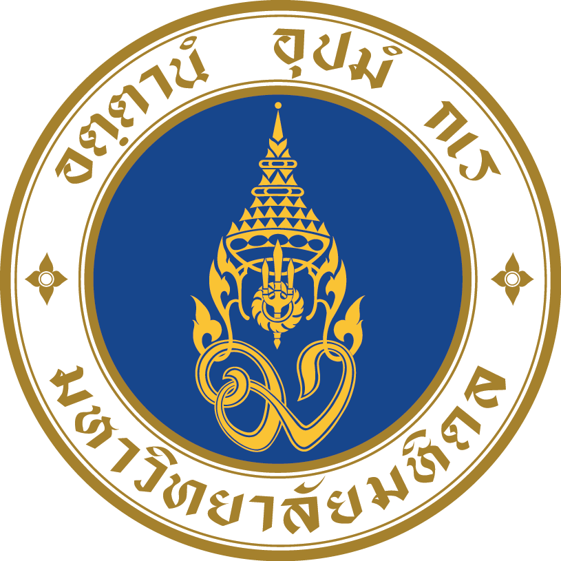

<!doctype html><html lang="th"><head><meta charset="utf-8"><meta name="viewport" content="width=device-width,initial-scale=1"><title>Executive Overview Dashboard</title><style>
:root{--navy:#0B2B5E;--blue:#263988;--gold:#FECD54;--bg:#F4F5F9;--surface:#fff;--border:#D9DEE8;--text:#1F2937;--muted:#6B7280;--up:#0F8F83;--down:#C94A4A}*{box-sizing:border-box}body{margin:0;background:var(--bg);color:var(--text);font-family:Georgia,"Noto Serif Thai",serif}main{max-width:1480px;margin:auto;padding:16px clamp(12px,3vw,36px) 40px}header,.panel,.kpi,.filters{background:var(--surface);border:1px solid var(--border);border-radius:6px}header{display:grid;grid-template-columns:auto 1fr auto;gap:16px;align-items:center;border-top:3px solid var(--gold);padding:12px 16px}header img{height:62px;width:62px;object-fit:contain}h1,h2{margin:0;color:var(--navy);letter-spacing:0}h1{font-size:clamp(1.35rem,2.5vw,2rem)}h2{font-size:1.05rem;margin-bottom:12px}p,.note{margin:4px 0;color:var(--muted);font:400 .82rem/1.45 ui-sans-serif,sans-serif}.status{padding:8px;border:1px solid var(--gold);background:#FFF9E8;color:var(--navy);font:700 .72rem/1.35 ui-sans-serif,sans-serif}.tabs{display:flex;gap:8px;overflow:auto;margin:18px 0}.tab{border:1px solid var(--border);background:#fff;color:var(--navy);padding:9px 12px;white-space:nowrap;font:700 .78rem ui-sans-serif,sans-serif;cursor:pointer}.tab.active{background:var(--navy);border-color:var(--navy);color:#fff}.filters{display:flex;gap:12px;flex-wrap:wrap;margin:0 0 14px;padding:12px}.filters label{display:grid;gap:5px;color:var(--navy);font:700 .74rem ui-sans-serif,sans-serif}.filters select{min-width:165px;height:38px;padding:7px;border:1px solid var(--border);background:#fff;color:var(--text);font:.82rem ui-sans-serif,sans-serif}.kpis{display:grid;grid-template-columns:repeat(4,minmax(0,1fr));gap:12px}.kpi{min-height:112px;padding:14px;border-top:3px solid var(--navy)}.kpi span{color:var(--muted);font:700 .7rem ui-sans-serif,sans-serif}.kpi strong{display:block;margin-top:10px;color:var(--navy);font-size:1.3rem}.kpi em{display:block;margin-top:7px;font:600 .72rem ui-sans-serif,sans-serif}.up{color:var(--up)}.down{color:var(--down)}.neutral{color:var(--muted)}.grid{display:grid;grid-template-columns:1fr 1fr;gap:16px;margin-top:16px}.panel{padding:18px;overflow:hidden}.wide{grid-column:span 2}.bars{display:grid;gap:11px}.bar-row{display:grid;grid-template-columns:minmax(105px,1.4fr) 2fr auto;gap:9px;align-items:center;font:.78rem ui-sans-serif,sans-serif}.bar-track{height:12px;background:#E8EBF2}.bar{height:100%;background:var(--blue);transform-origin:left;animation:grow .45s ease-out both}.bar-row b{color:var(--navy)}.notice{padding:10px;border-left:3px solid var(--gold);background:#FFF9E8;margin:8px 0;font:.8rem/1.45 ui-sans-serif,sans-serif}table{width:100%;border-collapse:collapse;font:.78rem ui-sans-serif,sans-serif}th,td{padding:8px;text-align:left;border-bottom:1px solid var(--border)}th{color:var(--navy)}.table-wrap{overflow:auto}@keyframes grow{from{transform:scaleX(0)}to{transform:scaleX(1)}}@media(max-width:780px){header{grid-template-columns:auto 1fr}.status{grid-column:1/-1}.kpis{grid-template-columns:repeat(2,minmax(0,1fr))}.grid{grid-template-columns:1fr}.wide{grid-column:auto}.bar-row{grid-template-columns:minmax(80px,1fr) 1.2fr auto}}@media(max-width:520px){.kpis{grid-template-columns:1fr}}
</style></head><body><main id="app"></main><script>
const data={"education":{"current_students":786,"by_level":[{"label":"ปริญญาตรี","value":786}],"by_program":[{"label":"ศิลปศาสตรบัณฑิต สาขาวิชาภาษาอังกฤษ","value":337},{"label":"ศิลปศาสตรบัณฑิต สาขาวิชาภาษาไทย","value":315},{"label":"ศิลปศาสตรบัณฑิต สาขาวิชาภาษาจีน (หลักสูตรนานาชาติ)","value":134}],"by_study_year":[{"label":"ปี 1","value":196},{"label":"ปี 3","value":194},{"label":"ปี 2","value":193},{"label":"ปี 4","value":186},{"label":"เกิน 4 ปี","value":17}],"by_admission_system":[{"label":"การรับแบบPortfolio (TCAS รอบที่ 1)","value":373},{"label":"การรับตรงร่วมกัน (TCAS รอบที่ 3)","value":365},{"label":"การรับแบบโควตา (TCAS รอบที่ 2)","value":20},{"label":"นักศึกษาแลกเปลี่ยนชาวต่างประเทศระยะสั้น (For Credit)","value":15},{"label":"การรับตรงอิสระ (TCAS รอบที่ 4)","value":5},{"label":"รับตรงโดยส่วนงาน","value":4},{"label":"รับตรงโดยส่วนงาน (โครงการมหาดไทย ชายแดนใต้)","value":3},{"label":"การรับตรงร่วมกัน (TCAS รอบที่ 3) รูปแบบที่ 3 (AD1)","value":1}],"by_entry_year":[{"label":"2569","value":196},{"label":"2567","value":194},{"label":"2568","value":193},{"label":"2566","value":186},{"label":"2565","value":14},{"label":"2564","value":3}],"students":[{"education_level":"ปริญญาตรี","program":"ศิลปศาสตรบัณฑิต สาขาวิชาภาษาอังกฤษ","entry_year":"2564","entry_month":"กรกฎาคม","entry_fiscal_year":"2564","study_year":"เกิน 4 ปี","admission_system":"การรับตรงร่วมกัน (TCAS รอบที่ 3) รูปแบบที่ 3 (AD1)","student_status":"กำลังศึกษาอยู่"},{"education_level":"ปริญญาตรี","program":"ศิลปศาสตรบัณฑิต สาขาวิชาภาษาจีน (หลักสูตรนานาชาติ)","entry_year":"2564","entry_month":"กรกฎาคม","entry_fiscal_year":"2564","study_year":"เกิน 4 ปี","admission_system":"รับตรงโดยส่วนงาน","student_status":"กำลังศึกษาอยู่"},{"education_level":"ปริญญาตรี","program":"ศิลปศาสตรบัณฑิต สาขาวิชาภาษาจีน (หลักสูตรนานาชาติ)","entry_year":"2564","entry_month":"กรกฎาคม","entry_fiscal_year":"2564","study_year":"เกิน 4 ปี","admission_system":"รับตรงโดยส่วนงาน","student_status":"กำลังศึกษาอยู่"},{"education_level":"ปริญญาตรี","program":"ศิลปศาสตรบัณฑิต สาขาวิชาภาษาอังกฤษ","entry_year":"2565","entry_month":"กุมภาพันธ์","entry_fiscal_year":"2565","study_year":"เกิน 4 ปี","admission_system":"การรับแบบPortfolio (TCAS รอบที่ 1)","student_status":"กำลังศึกษาอยู่"},{"education_level":"ปริญญาตรี","program":"ศิลปศาสตรบัณฑิต สาขาวิชาภาษาอังกฤษ","entry_year":"2565","entry_month":"กุมภาพันธ์","entry_fiscal_year":"2565","study_year":"เกิน 4 ปี","admission_system":"การรับแบบPortfolio (TCAS รอบที่ 1)","student_status":"กำลังศึกษาอยู่"},{"education_level":"ปริญญาตรี","program":"ศิลปศาสตรบัณฑิต สาขาวิชาภาษาอังกฤษ","entry_year":"2565","entry_month":"กุมภาพันธ์","entry_fiscal_year":"2565","study_year":"เกิน 4 ปี","admission_system":"การรับแบบPortfolio (TCAS รอบที่ 1)","student_status":"กำลังศึกษาอยู่"},{"education_level":"ปริญญาตรี","program":"ศิลปศาสตรบัณฑิต สาขาวิชาภาษาอังกฤษ","entry_year":"2565","entry_month":"กุมภาพันธ์","entry_fiscal_year":"2565","study_year":"เกิน 4 ปี","admission_system":"การรับแบบPortfolio (TCAS รอบที่ 1)","student_status":"กำลังศึกษาอยู่"},{"education_level":"ปริญญาตรี","program":"ศิลปศาสตรบัณฑิต สาขาวิชาภาษาจีน (หลักสูตรนานาชาติ)","entry_year":"2565","entry_month":"กุมภาพันธ์","entry_fiscal_year":"2565","study_year":"เกิน 4 ปี","admission_system":"การรับแบบPortfolio (TCAS รอบที่ 1)","student_status":"กำลังศึกษาอยู่"},{"education_level":"ปริญญาตรี","program":"ศิลปศาสตรบัณฑิต สาขาวิชาภาษาจีน (หลักสูตรนานาชาติ)","entry_year":"2565","entry_month":"กุมภาพันธ์","entry_fiscal_year":"2565","study_year":"เกิน 4 ปี","admission_system":"การรับแบบPortfolio (TCAS รอบที่ 1)","student_status":"กำลังศึกษาอยู่"},{"education_level":"ปริญญาตรี","program":"ศิลปศาสตรบัณฑิต สาขาวิชาภาษาจีน (หลักสูตรนานาชาติ)","entry_year":"2565","entry_month":"กุมภาพันธ์","entry_fiscal_year":"2565","study_year":"เกิน 4 ปี","admission_system":"การรับแบบPortfolio (TCAS รอบที่ 1)","student_status":"กำลังศึกษาอยู่"},{"education_level":"ปริญญาตรี","program":"ศิลปศาสตรบัณฑิต สาขาวิชาภาษาจีน (หลักสูตรนานาชาติ)","entry_year":"2565","entry_month":"มิถุนายน","entry_fiscal_year":"2565","study_year":"เกิน 4 ปี","admission_system":"การรับตรงร่วมกัน (TCAS รอบที่ 3)","student_status":"กำลังศึกษาอยู่"},{"education_level":"ปริญญาตรี","program":"ศิลปศาสตรบัณฑิต สาขาวิชาภาษาอังกฤษ","entry_year":"2565","entry_month":"มิถุนายน","entry_fiscal_year":"2565","study_year":"เกิน 4 ปี","admission_system":"การรับตรงอิสระ (TCAS รอบที่ 4)","student_status":"กำลังศึกษาอยู่"},{"education_level":"ปริญญาตรี","program":"ศิลปศาสตรบัณฑิต สาขาวิชาภาษาอังกฤษ","entry_year":"2565","entry_month":"มิถุนายน","entry_fiscal_year":"2565","study_year":"เกิน 4 ปี","admission_system":"การรับตรงอิสระ (TCAS รอบที่ 4)","student_status":"กำลังศึกษาอยู่"},{"education_level":"ปริญญาตรี","program":"ศิลปศาสตรบัณฑิต สาขาวิชาภาษาอังกฤษ","entry_year":"2565","entry_month":"มิถุนายน","entry_fiscal_year":"2565","study_year":"เกิน 4 ปี","admission_system":"การรับตรงอิสระ (TCAS รอบที่ 4)","student_status":"กำลังศึกษาอยู่"},{"education_level":"ปริญญาตรี","program":"ศิลปศาสตรบัณฑิต สาขาวิชาภาษาไทย","entry_year":"2565","entry_month":"มิถุนายน","entry_fiscal_year":"2565","study_year":"เกิน 4 ปี","admission_system":"การรับตรงอิสระ (TCAS รอบที่ 4)","student_status":"กำลังศึกษาอยู่"},{"education_level":"ปริญญาตรี","program":"ศิลปศาสตรบัณฑิต สาขาวิชาภาษาไทย","entry_year":"2565","entry_month":"มิถุนายน","entry_fiscal_year":"2565","study_year":"เกิน 4 ปี","admission_system":"การรับตรงอิสระ (TCAS รอบที่ 4)","student_status":"กำลังศึกษาอยู่"},{"education_level":"ปริญญาตรี","program":"ศิลปศาสตรบัณฑิต สาขาวิชาภาษาอังกฤษ","entry_year":"2565","entry_month":"กรกฎาคม","entry_fiscal_year":"2565","study_year":"เกิน 4 ปี","admission_system":"รับตรงโดยส่วนงาน (โครงการมหาดไทย ชายแดนใต้)","student_status":"กำลังศึกษาอยู่"},{"education_level":"ปริญญาตรี","program":"ศิลปศาสตรบัณฑิต สาขาวิชาภาษาอังกฤษ","entry_year":"2566","entry_month":"กุมภาพันธ์","entry_fiscal_year":"2566","study_year":"ปี 4","admission_system":"การรับแบบPortfolio (TCAS รอบที่ 1)","student_status":"กำลังศึกษาอยู่"},{"education_level":"ปริญญาตรี","program":"ศิลปศาสตรบัณฑิต สาขาวิชาภาษาอังกฤษ","entry_year":"2566","entry_month":"กุมภาพันธ์","entry_fiscal_year":"2566","study_year":"ปี 4","admission_system":"การรับแบบPortfolio (TCAS รอบที่ 1)","student_status":"กำลังศึกษาอยู่"},{"education_level":"ปริญญาตรี","program":"ศิลปศาสตรบัณฑิต สาขาวิชาภาษาอังกฤษ","entry_year":"2566","entry_month":"กุมภาพันธ์","entry_fiscal_year":"2566","study_year":"ปี 4","admission_system":"การรับแบบPortfolio (TCAS รอบที่ 1)","student_status":"กำลังศึกษาอยู่"},{"education_level":"ปริญญาตรี","program":"ศิลปศาสตรบัณฑิต สาขาวิชาภาษาอังกฤษ","entry_year":"2566","entry_month":"กุมภาพันธ์","entry_fiscal_year":"2566","study_year":"ปี 4","admission_system":"การรับแบบPortfolio (TCAS รอบที่ 1)","student_status":"กำลังศึกษาอยู่"},{"education_level":"ปริญญาตรี","program":"ศิลปศาสตรบัณฑิต สาขาวิชาภาษาอังกฤษ","entry_year":"2566","entry_month":"กุมภาพันธ์","entry_fiscal_year":"2566","study_year":"ปี 4","admission_system":"การรับแบบPortfolio (TCAS รอบที่ 1)","student_status":"กำลังศึกษาอยู่"},{"education_level":"ปริญญาตรี","program":"ศิลปศาสตรบัณฑิต สาขาวิชาภาษาอังกฤษ","entry_year":"2566","entry_month":"กุมภาพันธ์","entry_fiscal_year":"2566","study_year":"ปี 4","admission_system":"การรับแบบPortfolio (TCAS รอบที่ 1)","student_status":"กำลังศึกษาอยู่"},{"education_level":"ปริญญาตรี","program":"ศิลปศาสตรบัณฑิต สาขาวิชาภาษาอังกฤษ","entry_year":"2566","entry_month":"กุมภาพันธ์","entry_fiscal_year":"2566","study_year":"ปี 4","admission_system":"การรับแบบPortfolio (TCAS รอบที่ 1)","student_status":"กำลังศึกษาอยู่"},{"education_level":"ปริญญาตรี","program":"ศิลปศาสตรบัณฑิต สาขาวิชาภาษาอังกฤษ","entry_year":"2566","entry_month":"กุมภาพันธ์","entry_fiscal_year":"2566","study_year":"ปี 4","admission_system":"การรับแบบPortfolio (TCAS รอบที่ 1)","student_status":"กำลังศึกษาอยู่"},{"education_level":"ปริญญาตรี","program":"ศิลปศาสตรบัณฑิต สาขาวิชาภาษาอังกฤษ","entry_year":"2566","entry_month":"กุมภาพันธ์","entry_fiscal_year":"2566","study_year":"ปี 4","admission_system":"การรับแบบPortfolio (TCAS รอบที่ 1)","student_status":"กำลังศึกษาอยู่"},{"education_level":"ปริญญาตรี","program":"ศิลปศาสตรบัณฑิต สาขาวิชาภาษาอังกฤษ","entry_year":"2566","entry_month":"กุมภาพันธ์","entry_fiscal_year":"2566","study_year":"ปี 4","admission_system":"การรับแบบPortfolio (TCAS รอบที่ 1)","student_status":"กำลังศึกษาอยู่"},{"education_level":"ปริญญาตรี","program":"ศิลปศาสตรบัณฑิต สาขาวิชาภาษาอังกฤษ","entry_year":"2566","entry_month":"กุมภาพันธ์","entry_fiscal_year":"2566","study_year":"ปี 4","admission_system":"การรับแบบPortfolio (TCAS รอบที่ 1)","student_status":"กำลังศึกษาอยู่"},{"education_level":"ปริญญาตรี","program":"ศิลปศาสตรบัณฑิต สาขาวิชาภาษาอังกฤษ","entry_year":"2566","entry_month":"กุมภาพันธ์","entry_fiscal_year":"2566","study_year":"ปี 4","admission_system":"การรับแบบPortfolio (TCAS รอบที่ 1)","student_status":"กำลังศึกษาอยู่"},{"education_level":"ปริญญาตรี","program":"ศิลปศาสตรบัณฑิต สาขาวิชาภาษาอังกฤษ","entry_year":"2566","entry_month":"กุมภาพันธ์","entry_fiscal_year":"2566","study_year":"ปี 4","admission_system":"การรับแบบPortfolio (TCAS รอบที่ 1)","student_status":"กำลังศึกษาอยู่"},{"education_level":"ปริญญาตรี","program":"ศิลปศาสตรบัณฑิต สาขาวิชาภาษาอังกฤษ","entry_year":"2566","entry_month":"กุมภาพันธ์","entry_fiscal_year":"2566","study_year":"ปี 4","admission_system":"การรับแบบPortfolio (TCAS รอบที่ 1)","student_status":"กำลังศึกษาอยู่"},{"education_level":"ปริญญาตรี","program":"ศิลปศาสตรบัณฑิต สาขาวิชาภาษาอังกฤษ","entry_year":"2566","entry_month":"กุมภาพันธ์","entry_fiscal_year":"2566","study_year":"ปี 4","admission_system":"การรับแบบPortfolio (TCAS รอบที่ 1)","student_status":"กำลังศึกษาอยู่"},{"education_level":"ปริญญาตรี","program":"ศิลปศาสตรบัณฑิต สาขาวิชาภาษาอังกฤษ","entry_year":"2566","entry_month":"กุมภาพันธ์","entry_fiscal_year":"2566","study_year":"ปี 4","admission_system":"การรับแบบPortfolio (TCAS รอบที่ 1)","student_status":"กำลังศึกษาอยู่"},{"education_level":"ปริญญาตรี","program":"ศิลปศาสตรบัณฑิต สาขาวิชาภาษาอังกฤษ","entry_year":"2566","entry_month":"กุมภาพันธ์","entry_fiscal_year":"2566","study_year":"ปี 4","admission_system":"การรับแบบPortfolio (TCAS รอบที่ 1)","student_status":"กำลังศึกษาอยู่"},{"education_level":"ปริญญาตรี","program":"ศิลปศาสตรบัณฑิต สาขาวิชาภาษาอังกฤษ","entry_year":"2566","entry_month":"กุมภาพันธ์","entry_fiscal_year":"2566","study_year":"ปี 4","admission_system":"การรับแบบPortfolio (TCAS รอบที่ 1)","student_status":"กำลังศึกษาอยู่"},{"education_level":"ปริญญาตรี","program":"ศิลปศาสตรบัณฑิต สาขาวิชาภาษาอังกฤษ","entry_year":"2566","entry_month":"กุมภาพันธ์","entry_fiscal_year":"2566","study_year":"ปี 4","admission_system":"การรับแบบPortfolio (TCAS รอบที่ 1)","student_status":"กำลังศึกษาอยู่"},{"education_level":"ปริญญาตรี","program":"ศิลปศาสตรบัณฑิต สาขาวิชาภาษาอังกฤษ","entry_year":"2566","entry_month":"กุมภาพันธ์","entry_fiscal_year":"2566","study_year":"ปี 4","admission_system":"การรับแบบPortfolio (TCAS รอบที่ 1)","student_status":"กำลังศึกษาอยู่"},{"education_level":"ปริญญาตรี","program":"ศิลปศาสตรบัณฑิต สาขาวิชาภาษาอังกฤษ","entry_year":"2566","entry_month":"กุมภาพันธ์","entry_fiscal_year":"2566","study_year":"ปี 4","admission_system":"การรับแบบPortfolio (TCAS รอบที่ 1)","student_status":"กำลังศึกษาอยู่"},{"education_level":"ปริญญาตรี","program":"ศิลปศาสตรบัณฑิต สาขาวิชาภาษาอังกฤษ","entry_year":"2566","entry_month":"กุมภาพันธ์","entry_fiscal_year":"2566","study_year":"ปี 4","admission_system":"การรับแบบPortfolio (TCAS รอบที่ 1)","student_status":"กำลังศึกษาอยู่"},{"education_level":"ปริญญาตรี","program":"ศิลปศาสตรบัณฑิต สาขาวิชาภาษาไทย","entry_year":"2566","entry_month":"กุมภาพันธ์","entry_fiscal_year":"2566","study_year":"ปี 4","admission_system":"การรับแบบPortfolio (TCAS รอบที่ 1)","student_status":"กำลังศึกษาอยู่"},{"education_level":"ปริญญาตรี","program":"ศิลปศาสตรบัณฑิต สาขาวิชาภาษาไทย","entry_year":"2566","entry_month":"กุมภาพันธ์","entry_fiscal_year":"2566","study_year":"ปี 4","admission_system":"การรับแบบPortfolio (TCAS รอบที่ 1)","student_status":"กำลังศึกษาอยู่"},{"education_level":"ปริญญาตรี","program":"ศิลปศาสตรบัณฑิต สาขาวิชาภาษาไทย","entry_year":"2566","entry_month":"กุมภาพันธ์","entry_fiscal_year":"2566","study_year":"ปี 4","admission_system":"การรับแบบPortfolio (TCAS รอบที่ 1)","student_status":"กำลังศึกษาอยู่"},{"education_level":"ปริญญาตรี","program":"ศิลปศาสตรบัณฑิต สาขาวิชาภาษาไทย","entry_year":"2566","entry_month":"กุมภาพันธ์","entry_fiscal_year":"2566","study_year":"ปี 4","admission_system":"การรับแบบPortfolio (TCAS รอบที่ 1)","student_status":"กำลังศึกษาอยู่"},{"education_level":"ปริญญาตรี","program":"ศิลปศาสตรบัณฑิต สาขาวิชาภาษาไทย","entry_year":"2566","entry_month":"กุมภาพันธ์","entry_fiscal_year":"2566","study_year":"ปี 4","admission_system":"การรับแบบPortfolio (TCAS รอบที่ 1)","student_status":"กำลังศึกษาอยู่"},{"education_level":"ปริญญาตรี","program":"ศิลปศาสตรบัณฑิต สาขาวิชาภาษาไทย","entry_year":"2566","entry_month":"กุมภาพันธ์","entry_fiscal_year":"2566","study_year":"ปี 4","admission_system":"การรับแบบPortfolio (TCAS รอบที่ 1)","student_status":"กำลังศึกษาอยู่"},{"education_level":"ปริญญาตรี","program":"ศิลปศาสตรบัณฑิต สาขาวิชาภาษาไทย","entry_year":"2566","entry_month":"กุมภาพันธ์","entry_fiscal_year":"2566","study_year":"ปี 4","admission_system":"การรับแบบPortfolio (TCAS รอบที่ 1)","student_status":"กำลังศึกษาอยู่"},{"education_level":"ปริญญาตรี","program":"ศิลปศาสตรบัณฑิต สาขาวิชาภาษาไทย","entry_year":"2566","entry_month":"กุมภาพันธ์","entry_fiscal_year":"2566","study_year":"ปี 4","admission_system":"การรับแบบPortfolio (TCAS รอบที่ 1)","student_status":"กำลังศึกษาอยู่"},{"education_level":"ปริญญาตรี","program":"ศิลปศาสตรบัณฑิต สาขาวิชาภาษาไทย","entry_year":"2566","entry_month":"กุมภาพันธ์","entry_fiscal_year":"2566","study_year":"ปี 4","admission_system":"การรับแบบPortfolio (TCAS รอบที่ 1)","student_status":"กำลังศึกษาอยู่"},{"education_level":"ปริญญาตรี","program":"ศิลปศาสตรบัณฑิต สาขาวิชาภาษาไทย","entry_year":"2566","entry_month":"กุมภาพันธ์","entry_fiscal_year":"2566","study_year":"ปี 4","admission_system":"การรับแบบPortfolio (TCAS รอบที่ 1)","student_status":"กำลังศึกษาอยู่"},{"education_level":"ปริญญาตรี","program":"ศิลปศาสตรบัณฑิต สาขาวิชาภาษาไทย","entry_year":"2566","entry_month":"กุมภาพันธ์","entry_fiscal_year":"2566","study_year":"ปี 4","admission_system":"การรับแบบPortfolio (TCAS รอบที่ 1)","student_status":"กำลังศึกษาอยู่"},{"education_level":"ปริญญาตรี","program":"ศิลปศาสตรบัณฑิต สาขาวิชาภาษาไทย","entry_year":"2566","entry_month":"กุมภาพันธ์","entry_fiscal_year":"2566","study_year":"ปี 4","admission_system":"การรับแบบPortfolio (TCAS รอบที่ 1)","student_status":"กำลังศึกษาอยู่"},{"education_level":"ปริญญาตรี","program":"ศิลปศาสตรบัณฑิต สาขาวิชาภาษาไทย","entry_year":"2566","entry_month":"กุมภาพันธ์","entry_fiscal_year":"2566","study_year":"ปี 4","admission_system":"การรับแบบPortfolio (TCAS รอบที่ 1)","student_status":"กำลังศึกษาอยู่"},{"education_level":"ปริญญาตรี","program":"ศิลปศาสตรบัณฑิต สาขาวิชาภาษาไทย","entry_year":"2566","entry_month":"กุมภาพันธ์","entry_fiscal_year":"2566","study_year":"ปี 4","admission_system":"การรับแบบPortfolio (TCAS รอบที่ 1)","student_status":"กำลังศึกษาอยู่"},{"education_level":"ปริญญาตรี","program":"ศิลปศาสตรบัณฑิต สาขาวิชาภาษาไทย","entry_year":"2566","entry_month":"กุมภาพันธ์","entry_fiscal_year":"2566","study_year":"ปี 4","admission_system":"การรับแบบPortfolio (TCAS รอบที่ 1)","student_status":"กำลังศึกษาอยู่"},{"education_level":"ปริญญาตรี","program":"ศิลปศาสตรบัณฑิต สาขาวิชาภาษาไทย","entry_year":"2566","entry_month":"กุมภาพันธ์","entry_fiscal_year":"2566","study_year":"ปี 4","admission_system":"การรับแบบPortfolio (TCAS รอบที่ 1)","student_status":"กำลังศึกษาอยู่"},{"education_level":"ปริญญาตรี","program":"ศิลปศาสตรบัณฑิต สาขาวิชาภาษาไทย","entry_year":"2566","entry_month":"กุมภาพันธ์","entry_fiscal_year":"2566","study_year":"ปี 4","admission_system":"การรับแบบPortfolio (TCAS รอบที่ 1)","student_status":"กำลังศึกษาอยู่"},{"education_level":"ปริญญาตรี","program":"ศิลปศาสตรบัณฑิต สาขาวิชาภาษาไทย","entry_year":"2566","entry_month":"กุมภาพันธ์","entry_fiscal_year":"2566","study_year":"ปี 4","admission_system":"การรับแบบPortfolio (TCAS รอบที่ 1)","student_status":"กำลังศึกษาอยู่"},{"education_level":"ปริญญาตรี","program":"ศิลปศาสตรบัณฑิต สาขาวิชาภาษาไทย","entry_year":"2566","entry_month":"กุมภาพันธ์","entry_fiscal_year":"2566","study_year":"ปี 4","admission_system":"การรับแบบPortfolio (TCAS รอบที่ 1)","student_status":"กำลังศึกษาอยู่"},{"education_level":"ปริญญาตรี","program":"ศิลปศาสตรบัณฑิต สาขาวิชาภาษาไทย","entry_year":"2566","entry_month":"กุมภาพันธ์","entry_fiscal_year":"2566","study_year":"ปี 4","admission_system":"การรับแบบPortfolio (TCAS รอบที่ 1)","student_status":"กำลังศึกษาอยู่"},{"education_level":"ปริญญาตรี","program":"ศิลปศาสตรบัณฑิต สาขาวิชาภาษาไทย","entry_year":"2566","entry_month":"กุมภาพันธ์","entry_fiscal_year":"2566","study_year":"ปี 4","admission_system":"การรับแบบPortfolio (TCAS รอบที่ 1)","student_status":"กำลังศึกษาอยู่"},{"education_level":"ปริญญาตรี","program":"ศิลปศาสตรบัณฑิต สาขาวิชาภาษาไทย","entry_year":"2566","entry_month":"กุมภาพันธ์","entry_fiscal_year":"2566","study_year":"ปี 4","admission_system":"การรับแบบPortfolio (TCAS รอบที่ 1)","student_status":"กำลังศึกษาอยู่"},{"education_level":"ปริญญาตรี","program":"ศิลปศาสตรบัณฑิต สาขาวิชาภาษาจีน (หลักสูตรนานาชาติ)","entry_year":"2566","entry_month":"กุมภาพันธ์","entry_fiscal_year":"2566","study_year":"ปี 4","admission_system":"การรับแบบPortfolio (TCAS รอบที่ 1)","student_status":"กำลังศึกษาอยู่"},{"education_level":"ปริญญาตรี","program":"ศิลปศาสตรบัณฑิต สาขาวิชาภาษาจีน (หลักสูตรนานาชาติ)","entry_year":"2566","entry_month":"กุมภาพันธ์","entry_fiscal_year":"2566","study_year":"ปี 4","admission_system":"การรับแบบPortfolio (TCAS รอบที่ 1)","student_status":"กำลังศึกษาอยู่"},{"education_level":"ปริญญาตรี","program":"ศิลปศาสตรบัณฑิต สาขาวิชาภาษาจีน (หลักสูตรนานาชาติ)","entry_year":"2566","entry_month":"กุมภาพันธ์","entry_fiscal_year":"2566","study_year":"ปี 4","admission_system":"การรับแบบPortfolio (TCAS รอบที่ 1)","student_status":"กำลังศึกษาอยู่"},{"education_level":"ปริญญาตรี","program":"ศิลปศาสตรบัณฑิต สาขาวิชาภาษาจีน (หลักสูตรนานาชาติ)","entry_year":"2566","entry_month":"กุมภาพันธ์","entry_fiscal_year":"2566","study_year":"ปี 4","admission_system":"การรับแบบPortfolio (TCAS รอบที่ 1)","student_status":"กำลังศึกษาอยู่"},{"education_level":"ปริญญาตรี","program":"ศิลปศาสตรบัณฑิต สาขาวิชาภาษาจีน (หลักสูตรนานาชาติ)","entry_year":"2566","entry_month":"กุมภาพันธ์","entry_fiscal_year":"2566","study_year":"ปี 4","admission_system":"การรับแบบPortfolio (TCAS รอบที่ 1)","student_status":"กำลังศึกษาอยู่"},{"education_level":"ปริญญาตรี","program":"ศิลปศาสตรบัณฑิต สาขาวิชาภาษาจีน (หลักสูตรนานาชาติ)","entry_year":"2566","entry_month":"กุมภาพันธ์","entry_fiscal_year":"2566","study_year":"ปี 4","admission_system":"การรับแบบPortfolio (TCAS รอบที่ 1)","student_status":"กำลังศึกษาอยู่"},{"education_level":"ปริญญาตรี","program":"ศิลปศาสตรบัณฑิต สาขาวิชาภาษาจีน (หลักสูตรนานาชาติ)","entry_year":"2566","entry_month":"กุมภาพันธ์","entry_fiscal_year":"2566","study_year":"ปี 4","admission_system":"การรับแบบPortfolio (TCAS รอบที่ 1)","student_status":"กำลังศึกษาอยู่"},{"education_level":"ปริญญาตรี","program":"ศิลปศาสตรบัณฑิต สาขาวิชาภาษาจีน (หลักสูตรนานาชาติ)","entry_year":"2566","entry_month":"กุมภาพันธ์","entry_fiscal_year":"2566","study_year":"ปี 4","admission_system":"การรับแบบPortfolio (TCAS รอบที่ 1)","student_status":"กำลังศึกษาอยู่"},{"education_level":"ปริญญาตรี","program":"ศิลปศาสตรบัณฑิต สาขาวิชาภาษาจีน (หลักสูตรนานาชาติ)","entry_year":"2566","entry_month":"กุมภาพันธ์","entry_fiscal_year":"2566","study_year":"ปี 4","admission_system":"การรับแบบPortfolio (TCAS รอบที่ 1)","student_status":"กำลังศึกษาอยู่"},{"education_level":"ปริญญาตรี","program":"ศิลปศาสตรบัณฑิต สาขาวิชาภาษาจีน (หลักสูตรนานาชาติ)","entry_year":"2566","entry_month":"กุมภาพันธ์","entry_fiscal_year":"2566","study_year":"ปี 4","admission_system":"การรับแบบPortfolio (TCAS รอบที่ 1)","student_status":"กำลังศึกษาอยู่"},{"education_level":"ปริญญาตรี","program":"ศิลปศาสตรบัณฑิต สาขาวิชาภาษาจีน (หลักสูตรนานาชาติ)","entry_year":"2566","entry_month":"กุมภาพันธ์","entry_fiscal_year":"2566","study_year":"ปี 4","admission_system":"การรับแบบPortfolio (TCAS รอบที่ 1)","student_status":"กำลังศึกษาอยู่"},{"education_level":"ปริญญาตรี","program":"ศิลปศาสตรบัณฑิต สาขาวิชาภาษาจีน (หลักสูตรนานาชาติ)","entry_year":"2566","entry_month":"กุมภาพันธ์","entry_fiscal_year":"2566","study_year":"ปี 4","admission_system":"การรับแบบPortfolio (TCAS รอบที่ 1)","student_status":"กำลังศึกษาอยู่"},{"education_level":"ปริญญาตรี","program":"ศิลปศาสตรบัณฑิต สาขาวิชาภาษาจีน (หลักสูตรนานาชาติ)","entry_year":"2566","entry_month":"กุมภาพันธ์","entry_fiscal_year":"2566","study_year":"ปี 4","admission_system":"การรับแบบPortfolio (TCAS รอบที่ 1)","student_status":"กำลังศึกษาอยู่"},{"education_level":"ปริญญาตรี","program":"ศิลปศาสตรบัณฑิต สาขาวิชาภาษาจีน (หลักสูตรนานาชาติ)","entry_year":"2566","entry_month":"กุมภาพันธ์","entry_fiscal_year":"2566","study_year":"ปี 4","admission_system":"การรับแบบPortfolio (TCAS รอบที่ 1)","student_status":"กำลังศึกษาอยู่"},{"education_level":"ปริญญาตรี","program":"ศิลปศาสตรบัณฑิต สาขาวิชาภาษาจีน (หลักสูตรนานาชาติ)","entry_year":"2566","entry_month":"กุมภาพันธ์","entry_fiscal_year":"2566","study_year":"ปี 4","admission_system":"การรับแบบPortfolio (TCAS รอบที่ 1)","student_status":"กำลังศึกษาอยู่"},{"education_level":"ปริญญาตรี","program":"ศิลปศาสตรบัณฑิต สาขาวิชาภาษาจีน (หลักสูตรนานาชาติ)","entry_year":"2566","entry_month":"กุมภาพันธ์","entry_fiscal_year":"2566","study_year":"ปี 4","admission_system":"การรับแบบPortfolio (TCAS รอบที่ 1)","student_status":"กำลังศึกษาอยู่"},{"education_level":"ปริญญาตรี","program":"ศิลปศาสตรบัณฑิต สาขาวิชาภาษาจีน (หลักสูตรนานาชาติ)","entry_year":"2566","entry_month":"กุมภาพันธ์","entry_fiscal_year":"2566","study_year":"ปี 4","admission_system":"การรับแบบPortfolio (TCAS รอบที่ 1)","student_status":"กำลังศึกษาอยู่"},{"education_level":"ปริญญาตรี","program":"ศิลปศาสตรบัณฑิต สาขาวิชาภาษาจีน (หลักสูตรนานาชาติ)","entry_year":"2566","entry_month":"กุมภาพันธ์","entry_fiscal_year":"2566","study_year":"ปี 4","admission_system":"การรับแบบPortfolio (TCAS รอบที่ 1)","student_status":"กำลังศึกษาอยู่"},{"education_level":"ปริญญาตรี","program":"ศิลปศาสตรบัณฑิต สาขาวิชาภาษาจีน (หลักสูตรนานาชาติ)","entry_year":"2566","entry_month":"กุมภาพันธ์","entry_fiscal_year":"2566","study_year":"ปี 4","admission_system":"การรับแบบPortfolio (TCAS รอบที่ 1)","student_status":"กำลังศึกษาอยู่"},{"education_level":"ปริญญาตรี","program":"ศิลปศาสตรบัณฑิต สาขาวิชาภาษาจีน (หลักสูตรนานาชาติ)","entry_year":"2566","entry_month":"กุมภาพันธ์","entry_fiscal_year":"2566","study_year":"ปี 4","admission_system":"การรับแบบPortfolio (TCAS รอบที่ 1)","student_status":"กำลังศึกษาอยู่"},{"education_level":"ปริญญาตรี","program":"ศิลปศาสตรบัณฑิต สาขาวิชาภาษาจีน (หลักสูตรนานาชาติ)","entry_year":"2566","entry_month":"กุมภาพันธ์","entry_fiscal_year":"2566","study_year":"ปี 4","admission_system":"การรับแบบPortfolio (TCAS รอบที่ 1)","student_status":"กำลังศึกษาอยู่"},{"education_level":"ปริญญาตรี","program":"ศิลปศาสตรบัณฑิต สาขาวิชาภาษาจีน (หลักสูตรนานาชาติ)","entry_year":"2566","entry_month":"กุมภาพันธ์","entry_fiscal_year":"2566","study_year":"ปี 4","admission_system":"การรับแบบPortfolio (TCAS รอบที่ 1)","student_status":"กำลังศึกษาอยู่"},{"education_level":"ปริญญาตรี","program":"ศิลปศาสตรบัณฑิต สาขาวิชาภาษาจีน (หลักสูตรนานาชาติ)","entry_year":"2566","entry_month":"กุมภาพันธ์","entry_fiscal_year":"2566","study_year":"ปี 4","admission_system":"การรับแบบPortfolio (TCAS รอบที่ 1)","student_status":"กำลังศึกษาอยู่"},{"education_level":"ปริญญาตรี","program":"ศิลปศาสตรบัณฑิต สาขาวิชาภาษาจีน (หลักสูตรนานาชาติ)","entry_year":"2566","entry_month":"กุมภาพันธ์","entry_fiscal_year":"2566","study_year":"ปี 4","admission_system":"การรับแบบPortfolio (TCAS รอบที่ 1)","student_status":"กำลังศึกษาอยู่"},{"education_level":"ปริญญาตรี","program":"ศิลปศาสตรบัณฑิต สาขาวิชาภาษาจีน (หลักสูตรนานาชาติ)","entry_year":"2566","entry_month":"กุมภาพันธ์","entry_fiscal_year":"2566","study_year":"ปี 4","admission_system":"การรับแบบPortfolio (TCAS รอบที่ 1)","student_status":"กำลังศึกษาอยู่"},{"education_level":"ปริญญาตรี","program":"ศิลปศาสตรบัณฑิต สาขาวิชาภาษาจีน (หลักสูตรนานาชาติ)","entry_year":"2566","entry_month":"กุมภาพันธ์","entry_fiscal_year":"2566","study_year":"ปี 4","admission_system":"การรับแบบPortfolio (TCAS รอบที่ 1)","student_status":"กำลังศึกษาอยู่"},{"education_level":"ปริญญาตรี","program":"ศิลปศาสตรบัณฑิต สาขาวิชาภาษาจีน (หลักสูตรนานาชาติ)","entry_year":"2566","entry_month":"กุมภาพันธ์","entry_fiscal_year":"2566","study_year":"ปี 4","admission_system":"การรับแบบPortfolio (TCAS รอบที่ 1)","student_status":"กำลังศึกษาอยู่"},{"education_level":"ปริญญาตรี","program":"ศิลปศาสตรบัณฑิต สาขาวิชาภาษาจีน (หลักสูตรนานาชาติ)","entry_year":"2566","entry_month":"กุมภาพันธ์","entry_fiscal_year":"2566","study_year":"ปี 4","admission_system":"การรับแบบPortfolio (TCAS รอบที่ 1)","student_status":"กำลังศึกษาอยู่"},{"education_level":"ปริญญาตรี","program":"ศิลปศาสตรบัณฑิต สาขาวิชาภาษาจีน (หลักสูตรนานาชาติ)","entry_year":"2566","entry_month":"กุมภาพันธ์","entry_fiscal_year":"2566","study_year":"ปี 4","admission_system":"การรับแบบPortfolio (TCAS รอบที่ 1)","student_status":"กำลังศึกษาอยู่"},{"education_level":"ปริญญาตรี","program":"ศิลปศาสตรบัณฑิต สาขาวิชาภาษาจีน (หลักสูตรนานาชาติ)","entry_year":"2566","entry_month":"กุมภาพันธ์","entry_fiscal_year":"2566","study_year":"ปี 4","admission_system":"การรับแบบPortfolio (TCAS รอบที่ 1)","student_status":"กำลังศึกษาอยู่"},{"education_level":"ปริญญาตรี","program":"ศิลปศาสตรบัณฑิต สาขาวิชาภาษาจีน (หลักสูตรนานาชาติ)","entry_year":"2566","entry_month":"กุมภาพันธ์","entry_fiscal_year":"2566","study_year":"ปี 4","admission_system":"การรับแบบPortfolio (TCAS รอบที่ 1)","student_status":"กำลังศึกษาอยู่"},{"education_level":"ปริญญาตรี","program":"ศิลปศาสตรบัณฑิต สาขาวิชาภาษาจีน (หลักสูตรนานาชาติ)","entry_year":"2566","entry_month":"กุมภาพันธ์","entry_fiscal_year":"2566","study_year":"ปี 4","admission_system":"การรับแบบPortfolio (TCAS รอบที่ 1)","student_status":"กำลังศึกษาอยู่"},{"education_level":"ปริญญาตรี","program":"ศิลปศาสตรบัณฑิต สาขาวิชาภาษาอังกฤษ","entry_year":"2566","entry_month":"พฤษภาคม","entry_fiscal_year":"2566","study_year":"ปี 4","admission_system":"การรับแบบโควตา (TCAS รอบที่ 2)","student_status":"กำลังศึกษาอยู่"},{"education_level":"ปริญญาตรี","program":"ศิลปศาสตรบัณฑิต สาขาวิชาภาษาจีน (หลักสูตรนานาชาติ)","entry_year":"2566","entry_month":"พฤษภาคม","entry_fiscal_year":"2566","study_year":"ปี 4","admission_system":"การรับแบบโควตา (TCAS รอบที่ 2)","student_status":"กำลังศึกษาอยู่"},{"education_level":"ปริญญาตรี","program":"ศิลปศาสตรบัณฑิต สาขาวิชาภาษาอังกฤษ","entry_year":"2566","entry_month":"มิถุนายน","entry_fiscal_year":"2566","study_year":"ปี 4","admission_system":"การรับตรงร่วมกัน (TCAS รอบที่ 3)","student_status":"กำลังศึกษาอยู่"},{"education_level":"ปริญญาตรี","program":"ศิลปศาสตรบัณฑิต สาขาวิชาภาษาอังกฤษ","entry_year":"2566","entry_month":"มิถุนายน","entry_fiscal_year":"2566","study_year":"ปี 4","admission_system":"การรับตรงร่วมกัน (TCAS รอบที่ 3)","student_status":"กำลังศึกษาอยู่"},{"education_level":"ปริญญาตรี","program":"ศิลปศาสตรบัณฑิต สาขาวิชาภาษาอังกฤษ","entry_year":"2566","entry_month":"มิถุนายน","entry_fiscal_year":"2566","study_year":"ปี 4","admission_system":"การรับตรงร่วมกัน (TCAS รอบที่ 3)","student_status":"กำลังศึกษาอยู่"},{"education_level":"ปริญญาตรี","program":"ศิลปศาสตรบัณฑิต สาขาวิชาภาษาอังกฤษ","entry_year":"2566","entry_month":"มิถุนายน","entry_fiscal_year":"2566","study_year":"ปี 4","admission_system":"การรับตรงร่วมกัน (TCAS รอบที่ 3)","student_status":"กำลังศึกษาอยู่"},{"education_level":"ปริญญาตรี","program":"ศิลปศาสตรบัณฑิต สาขาวิชาภาษาอังกฤษ","entry_year":"2566","entry_month":"มิถุนายน","entry_fiscal_year":"2566","study_year":"ปี 4","admission_system":"การรับตรงร่วมกัน (TCAS รอบที่ 3)","student_status":"กำลังศึกษาอยู่"},{"education_level":"ปริญญาตรี","program":"ศิลปศาสตรบัณฑิต สาขาวิชาภาษาอังกฤษ","entry_year":"2566","entry_month":"มิถุนายน","entry_fiscal_year":"2566","study_year":"ปี 4","admission_system":"การรับตรงร่วมกัน (TCAS รอบที่ 3)","student_status":"กำลังศึกษาอยู่"},{"education_level":"ปริญญาตรี","program":"ศิลปศาสตรบัณฑิต สาขาวิชาภาษาอังกฤษ","entry_year":"2566","entry_month":"มิถุนายน","entry_fiscal_year":"2566","study_year":"ปี 4","admission_system":"การรับตรงร่วมกัน (TCAS รอบที่ 3)","student_status":"กำลังศึกษาอยู่"},{"education_level":"ปริญญาตรี","program":"ศิลปศาสตรบัณฑิต สาขาวิชาภาษาอังกฤษ","entry_year":"2566","entry_month":"มิถุนายน","entry_fiscal_year":"2566","study_year":"ปี 4","admission_system":"การรับตรงร่วมกัน (TCAS รอบที่ 3)","student_status":"กำลังศึกษาอยู่"},{"education_level":"ปริญญาตรี","program":"ศิลปศาสตรบัณฑิต สาขาวิชาภาษาอังกฤษ","entry_year":"2566","entry_month":"มิถุนายน","entry_fiscal_year":"2566","study_year":"ปี 4","admission_system":"การรับตรงร่วมกัน (TCAS รอบที่ 3)","student_status":"กำลังศึกษาอยู่"},{"education_level":"ปริญญาตรี","program":"ศิลปศาสตรบัณฑิต สาขาวิชาภาษาอังกฤษ","entry_year":"2566","entry_month":"มิถุนายน","entry_fiscal_year":"2566","study_year":"ปี 4","admission_system":"การรับตรงร่วมกัน (TCAS รอบที่ 3)","student_status":"กำลังศึกษาอยู่"},{"education_level":"ปริญญาตรี","program":"ศิลปศาสตรบัณฑิต สาขาวิชาภาษาอังกฤษ","entry_year":"2566","entry_month":"มิถุนายน","entry_fiscal_year":"2566","study_year":"ปี 4","admission_system":"การรับตรงร่วมกัน (TCAS รอบที่ 3)","student_status":"กำลังศึกษาอยู่"},{"education_level":"ปริญญาตรี","program":"ศิลปศาสตรบัณฑิต สาขาวิชาภาษาอังกฤษ","entry_year":"2566","entry_month":"มิถุนายน","entry_fiscal_year":"2566","study_year":"ปี 4","admission_system":"การรับตรงร่วมกัน (TCAS รอบที่ 3)","student_status":"กำลังศึกษาอยู่"},{"education_level":"ปริญญาตรี","program":"ศิลปศาสตรบัณฑิต สาขาวิชาภาษาอังกฤษ","entry_year":"2566","entry_month":"มิถุนายน","entry_fiscal_year":"2566","study_year":"ปี 4","admission_system":"การรับตรงร่วมกัน (TCAS รอบที่ 3)","student_status":"กำลังศึกษาอยู่"},{"education_level":"ปริญญาตรี","program":"ศิลปศาสตรบัณฑิต สาขาวิชาภาษาอังกฤษ","entry_year":"2566","entry_month":"มิถุนายน","entry_fiscal_year":"2566","study_year":"ปี 4","admission_system":"การรับตรงร่วมกัน (TCAS รอบที่ 3)","student_status":"กำลังศึกษาอยู่"},{"education_level":"ปริญญาตรี","program":"ศิลปศาสตรบัณฑิต สาขาวิชาภาษาอังกฤษ","entry_year":"2566","entry_month":"มิถุนายน","entry_fiscal_year":"2566","study_year":"ปี 4","admission_system":"การรับตรงร่วมกัน (TCAS รอบที่ 3)","student_status":"กำลังศึกษาอยู่"},{"education_level":"ปริญญาตรี","program":"ศิลปศาสตรบัณฑิต สาขาวิชาภาษาอังกฤษ","entry_year":"2566","entry_month":"มิถุนายน","entry_fiscal_year":"2566","study_year":"ปี 4","admission_system":"การรับตรงร่วมกัน (TCAS รอบที่ 3)","student_status":"กำลังศึกษาอยู่"},{"education_level":"ปริญญาตรี","program":"ศิลปศาสตรบัณฑิต สาขาวิชาภาษาอังกฤษ","entry_year":"2566","entry_month":"มิถุนายน","entry_fiscal_year":"2566","study_year":"ปี 4","admission_system":"การรับตรงร่วมกัน (TCAS รอบที่ 3)","student_status":"กำลังศึกษาอยู่"},{"education_level":"ปริญญาตรี","program":"ศิลปศาสตรบัณฑิต สาขาวิชาภาษาอังกฤษ","entry_year":"2566","entry_month":"มิถุนายน","entry_fiscal_year":"2566","study_year":"ปี 4","admission_system":"การรับตรงร่วมกัน (TCAS รอบที่ 3)","student_status":"กำลังศึกษาอยู่"},{"education_level":"ปริญญาตรี","program":"ศิลปศาสตรบัณฑิต สาขาวิชาภาษาอังกฤษ","entry_year":"2566","entry_month":"มิถุนายน","entry_fiscal_year":"2566","study_year":"ปี 4","admission_system":"การรับตรงร่วมกัน (TCAS รอบที่ 3)","student_status":"กำลังศึกษาอยู่"},{"education_level":"ปริญญาตรี","program":"ศิลปศาสตรบัณฑิต สาขาวิชาภาษาอังกฤษ","entry_year":"2566","entry_month":"มิถุนายน","entry_fiscal_year":"2566","study_year":"ปี 4","admission_system":"การรับตรงร่วมกัน (TCAS รอบที่ 3)","student_status":"กำลังศึกษาอยู่"},{"education_level":"ปริญญาตรี","program":"ศิลปศาสตรบัณฑิต สาขาวิชาภาษาอังกฤษ","entry_year":"2566","entry_month":"มิถุนายน","entry_fiscal_year":"2566","study_year":"ปี 4","admission_system":"การรับตรงร่วมกัน (TCAS รอบที่ 3)","student_status":"กำลังศึกษาอยู่"},{"education_level":"ปริญญาตรี","program":"ศิลปศาสตรบัณฑิต สาขาวิชาภาษาอังกฤษ","entry_year":"2566","entry_month":"มิถุนายน","entry_fiscal_year":"2566","study_year":"ปี 4","admission_system":"การรับตรงร่วมกัน (TCAS รอบที่ 3)","student_status":"กำลังศึกษาอยู่"},{"education_level":"ปริญญาตรี","program":"ศิลปศาสตรบัณฑิต สาขาวิชาภาษาอังกฤษ","entry_year":"2566","entry_month":"มิถุนายน","entry_fiscal_year":"2566","study_year":"ปี 4","admission_system":"การรับตรงร่วมกัน (TCAS รอบที่ 3)","student_status":"กำลังศึกษาอยู่"},{"education_level":"ปริญญาตรี","program":"ศิลปศาสตรบัณฑิต สาขาวิชาภาษาอังกฤษ","entry_year":"2566","entry_month":"มิถุนายน","entry_fiscal_year":"2566","study_year":"ปี 4","admission_system":"การรับตรงร่วมกัน (TCAS รอบที่ 3)","student_status":"กำลังศึกษาอยู่"},{"education_level":"ปริญญาตรี","program":"ศิลปศาสตรบัณฑิต สาขาวิชาภาษาอังกฤษ","entry_year":"2566","entry_month":"มิถุนายน","entry_fiscal_year":"2566","study_year":"ปี 4","admission_system":"การรับตรงร่วมกัน (TCAS รอบที่ 3)","student_status":"กำลังศึกษาอยู่"},{"education_level":"ปริญญาตรี","program":"ศิลปศาสตรบัณฑิต สาขาวิชาภาษาอังกฤษ","entry_year":"2566","entry_month":"มิถุนายน","entry_fiscal_year":"2566","study_year":"ปี 4","admission_system":"การรับตรงร่วมกัน (TCAS รอบที่ 3)","student_status":"กำลังศึกษาอยู่"},{"education_level":"ปริญญาตรี","program":"ศิลปศาสตรบัณฑิต สาขาวิชาภาษาอังกฤษ","entry_year":"2566","entry_month":"มิถุนายน","entry_fiscal_year":"2566","study_year":"ปี 4","admission_system":"การรับตรงร่วมกัน (TCAS รอบที่ 3)","student_status":"กำลังศึกษาอยู่"},{"education_level":"ปริญญาตรี","program":"ศิลปศาสตรบัณฑิต สาขาวิชาภาษาอังกฤษ","entry_year":"2566","entry_month":"มิถุนายน","entry_fiscal_year":"2566","study_year":"ปี 4","admission_system":"การรับตรงร่วมกัน (TCAS รอบที่ 3)","student_status":"กำลังศึกษาอยู่"},{"education_level":"ปริญญาตรี","program":"ศิลปศาสตรบัณฑิต สาขาวิชาภาษาอังกฤษ","entry_year":"2566","entry_month":"มิถุนายน","entry_fiscal_year":"2566","study_year":"ปี 4","admission_system":"การรับตรงร่วมกัน (TCAS รอบที่ 3)","student_status":"กำลังศึกษาอยู่"},{"education_level":"ปริญญาตรี","program":"ศิลปศาสตรบัณฑิต สาขาวิชาภาษาอังกฤษ","entry_year":"2566","entry_month":"มิถุนายน","entry_fiscal_year":"2566","study_year":"ปี 4","admission_system":"การรับตรงร่วมกัน (TCAS รอบที่ 3)","student_status":"กำลังศึกษาอยู่"},{"education_level":"ปริญญาตรี","program":"ศิลปศาสตรบัณฑิต สาขาวิชาภาษาอังกฤษ","entry_year":"2566","entry_month":"มิถุนายน","entry_fiscal_year":"2566","study_year":"ปี 4","admission_system":"การรับตรงร่วมกัน (TCAS รอบที่ 3)","student_status":"กำลังศึกษาอยู่"},{"education_level":"ปริญญาตรี","program":"ศิลปศาสตรบัณฑิต สาขาวิชาภาษาอังกฤษ","entry_year":"2566","entry_month":"มิถุนายน","entry_fiscal_year":"2566","study_year":"ปี 4","admission_system":"การรับตรงร่วมกัน (TCAS รอบที่ 3)","student_status":"กำลังศึกษาอยู่"},{"education_level":"ปริญญาตรี","program":"ศิลปศาสตรบัณฑิต สาขาวิชาภาษาอังกฤษ","entry_year":"2566","entry_month":"มิถุนายน","entry_fiscal_year":"2566","study_year":"ปี 4","admission_system":"การรับตรงร่วมกัน (TCAS รอบที่ 3)","student_status":"กำลังศึกษาอยู่"},{"education_level":"ปริญญาตรี","program":"ศิลปศาสตรบัณฑิต สาขาวิชาภาษาอังกฤษ","entry_year":"2566","entry_month":"มิถุนายน","entry_fiscal_year":"2566","study_year":"ปี 4","admission_system":"การรับตรงร่วมกัน (TCAS รอบที่ 3)","student_status":"กำลังศึกษาอยู่"},{"education_level":"ปริญญาตรี","program":"ศิลปศาสตรบัณฑิต สาขาวิชาภาษาอังกฤษ","entry_year":"2566","entry_month":"มิถุนายน","entry_fiscal_year":"2566","study_year":"ปี 4","admission_system":"การรับตรงร่วมกัน (TCAS รอบที่ 3)","student_status":"กำลังศึกษาอยู่"},{"education_level":"ปริญญาตรี","program":"ศิลปศาสตรบัณฑิต สาขาวิชาภาษาอังกฤษ","entry_year":"2566","entry_month":"มิถุนายน","entry_fiscal_year":"2566","study_year":"ปี 4","admission_system":"การรับตรงร่วมกัน (TCAS รอบที่ 3)","student_status":"กำลังศึกษาอยู่"},{"education_level":"ปริญญาตรี","program":"ศิลปศาสตรบัณฑิต สาขาวิชาภาษาอังกฤษ","entry_year":"2566","entry_month":"มิถุนายน","entry_fiscal_year":"2566","study_year":"ปี 4","admission_system":"การรับตรงร่วมกัน (TCAS รอบที่ 3)","student_status":"กำลังศึกษาอยู่"},{"education_level":"ปริญญาตรี","program":"ศิลปศาสตรบัณฑิต สาขาวิชาภาษาอังกฤษ","entry_year":"2566","entry_month":"มิถุนายน","entry_fiscal_year":"2566","study_year":"ปี 4","admission_system":"การรับตรงร่วมกัน (TCAS รอบที่ 3)","student_status":"กำลังศึกษาอยู่"},{"education_level":"ปริญญาตรี","program":"ศิลปศาสตรบัณฑิต สาขาวิชาภาษาอังกฤษ","entry_year":"2566","entry_month":"มิถุนายน","entry_fiscal_year":"2566","study_year":"ปี 4","admission_system":"การรับตรงร่วมกัน (TCAS รอบที่ 3)","student_status":"กำลังศึกษาอยู่"},{"education_level":"ปริญญาตรี","program":"ศิลปศาสตรบัณฑิต สาขาวิชาภาษาอังกฤษ","entry_year":"2566","entry_month":"มิถุนายน","entry_fiscal_year":"2566","study_year":"ปี 4","admission_system":"การรับตรงร่วมกัน (TCAS รอบที่ 3)","student_status":"กำลังศึกษาอยู่"},{"education_level":"ปริญญาตรี","program":"ศิลปศาสตรบัณฑิต สาขาวิชาภาษาอังกฤษ","entry_year":"2566","entry_month":"มิถุนายน","entry_fiscal_year":"2566","study_year":"ปี 4","admission_system":"การรับตรงร่วมกัน (TCAS รอบที่ 3)","student_status":"กำลังศึกษาอยู่"},{"education_level":"ปริญญาตรี","program":"ศิลปศาสตรบัณฑิต สาขาวิชาภาษาอังกฤษ","entry_year":"2566","entry_month":"มิถุนายน","entry_fiscal_year":"2566","study_year":"ปี 4","admission_system":"การรับตรงร่วมกัน (TCAS รอบที่ 3)","student_status":"กำลังศึกษาอยู่"},{"education_level":"ปริญญาตรี","program":"ศิลปศาสตรบัณฑิต สาขาวิชาภาษาอังกฤษ","entry_year":"2566","entry_month":"มิถุนายน","entry_fiscal_year":"2566","study_year":"ปี 4","admission_system":"การรับตรงร่วมกัน (TCAS รอบที่ 3)","student_status":"กำลังศึกษาอยู่"},{"education_level":"ปริญญาตรี","program":"ศิลปศาสตรบัณฑิต สาขาวิชาภาษาอังกฤษ","entry_year":"2566","entry_month":"มิถุนายน","entry_fiscal_year":"2566","study_year":"ปี 4","admission_system":"การรับตรงร่วมกัน (TCAS รอบที่ 3)","student_status":"กำลังศึกษาอยู่"},{"education_level":"ปริญญาตรี","program":"ศิลปศาสตรบัณฑิต สาขาวิชาภาษาอังกฤษ","entry_year":"2566","entry_month":"มิถุนายน","entry_fiscal_year":"2566","study_year":"ปี 4","admission_system":"การรับตรงร่วมกัน (TCAS รอบที่ 3)","student_status":"กำลังศึกษาอยู่"},{"education_level":"ปริญญาตรี","program":"ศิลปศาสตรบัณฑิต สาขาวิชาภาษาอังกฤษ","entry_year":"2566","entry_month":"มิถุนายน","entry_fiscal_year":"2566","study_year":"ปี 4","admission_system":"การรับตรงร่วมกัน (TCAS รอบที่ 3)","student_status":"กำลังศึกษาอยู่"},{"education_level":"ปริญญาตรี","program":"ศิลปศาสตรบัณฑิต สาขาวิชาภาษาอังกฤษ","entry_year":"2566","entry_month":"มิถุนายน","entry_fiscal_year":"2566","study_year":"ปี 4","admission_system":"การรับตรงร่วมกัน (TCAS รอบที่ 3)","student_status":"กำลังศึกษาอยู่"},{"education_level":"ปริญญาตรี","program":"ศิลปศาสตรบัณฑิต สาขาวิชาภาษาอังกฤษ","entry_year":"2566","entry_month":"มิถุนายน","entry_fiscal_year":"2566","study_year":"ปี 4","admission_system":"การรับตรงร่วมกัน (TCAS รอบที่ 3)","student_status":"กำลังศึกษาอยู่"},{"education_level":"ปริญญาตรี","program":"ศิลปศาสตรบัณฑิต สาขาวิชาภาษาอังกฤษ","entry_year":"2566","entry_month":"มิถุนายน","entry_fiscal_year":"2566","study_year":"ปี 4","admission_system":"การรับตรงร่วมกัน (TCAS รอบที่ 3)","student_status":"กำลังศึกษาอยู่"},{"education_level":"ปริญญาตรี","program":"ศิลปศาสตรบัณฑิต สาขาวิชาภาษาอังกฤษ","entry_year":"2566","entry_month":"มิถุนายน","entry_fiscal_year":"2566","study_year":"ปี 4","admission_system":"การรับตรงร่วมกัน (TCAS รอบที่ 3)","student_status":"กำลังศึกษาอยู่"},{"education_level":"ปริญญาตรี","program":"ศิลปศาสตรบัณฑิต สาขาวิชาภาษาอังกฤษ","entry_year":"2566","entry_month":"มิถุนายน","entry_fiscal_year":"2566","study_year":"ปี 4","admission_system":"การรับตรงร่วมกัน (TCAS รอบที่ 3)","student_status":"กำลังศึกษาอยู่"},{"education_level":"ปริญญาตรี","program":"ศิลปศาสตรบัณฑิต สาขาวิชาภาษาอังกฤษ","entry_year":"2566","entry_month":"มิถุนายน","entry_fiscal_year":"2566","study_year":"ปี 4","admission_system":"การรับตรงร่วมกัน (TCAS รอบที่ 3)","student_status":"กำลังศึกษาอยู่"},{"education_level":"ปริญญาตรี","program":"ศิลปศาสตรบัณฑิต สาขาวิชาภาษาอังกฤษ","entry_year":"2566","entry_month":"มิถุนายน","entry_fiscal_year":"2566","study_year":"ปี 4","admission_system":"การรับตรงร่วมกัน (TCAS รอบที่ 3)","student_status":"กำลังศึกษาอยู่"},{"education_level":"ปริญญาตรี","program":"ศิลปศาสตรบัณฑิต สาขาวิชาภาษาอังกฤษ","entry_year":"2566","entry_month":"มิถุนายน","entry_fiscal_year":"2566","study_year":"ปี 4","admission_system":"การรับตรงร่วมกัน (TCAS รอบที่ 3)","student_status":"กำลังศึกษาอยู่"},{"education_level":"ปริญญาตรี","program":"ศิลปศาสตรบัณฑิต สาขาวิชาภาษาไทย","entry_year":"2566","entry_month":"มิถุนายน","entry_fiscal_year":"2566","study_year":"ปี 4","admission_system":"การรับตรงร่วมกัน (TCAS รอบที่ 3)","student_status":"กำลังศึกษาอยู่"},{"education_level":"ปริญญาตรี","program":"ศิลปศาสตรบัณฑิต สาขาวิชาภาษาไทย","entry_year":"2566","entry_month":"มิถุนายน","entry_fiscal_year":"2566","study_year":"ปี 4","admission_system":"การรับตรงร่วมกัน (TCAS รอบที่ 3)","student_status":"กำลังศึกษาอยู่"},{"education_level":"ปริญญาตรี","program":"ศิลปศาสตรบัณฑิต สาขาวิชาภาษาไทย","entry_year":"2566","entry_month":"มิถุนายน","entry_fiscal_year":"2566","study_year":"ปี 4","admission_system":"การรับตรงร่วมกัน (TCAS รอบที่ 3)","student_status":"กำลังศึกษาอยู่"},{"education_level":"ปริญญาตรี","program":"ศิลปศาสตรบัณฑิต สาขาวิชาภาษาไทย","entry_year":"2566","entry_month":"มิถุนายน","entry_fiscal_year":"2566","study_year":"ปี 4","admission_system":"การรับตรงร่วมกัน (TCAS รอบที่ 3)","student_status":"กำลังศึกษาอยู่"},{"education_level":"ปริญญาตรี","program":"ศิลปศาสตรบัณฑิต สาขาวิชาภาษาไทย","entry_year":"2566","entry_month":"มิถุนายน","entry_fiscal_year":"2566","study_year":"ปี 4","admission_system":"การรับตรงร่วมกัน (TCAS รอบที่ 3)","student_status":"กำลังศึกษาอยู่"},{"education_level":"ปริญญาตรี","program":"ศิลปศาสตรบัณฑิต สาขาวิชาภาษาไทย","entry_year":"2566","entry_month":"มิถุนายน","entry_fiscal_year":"2566","study_year":"ปี 4","admission_system":"การรับตรงร่วมกัน (TCAS รอบที่ 3)","student_status":"กำลังศึกษาอยู่"},{"education_level":"ปริญญาตรี","program":"ศิลปศาสตรบัณฑิต สาขาวิชาภาษาไทย","entry_year":"2566","entry_month":"มิถุนายน","entry_fiscal_year":"2566","study_year":"ปี 4","admission_system":"การรับตรงร่วมกัน (TCAS รอบที่ 3)","student_status":"กำลังศึกษาอยู่"},{"education_level":"ปริญญาตรี","program":"ศิลปศาสตรบัณฑิต สาขาวิชาภาษาไทย","entry_year":"2566","entry_month":"มิถุนายน","entry_fiscal_year":"2566","study_year":"ปี 4","admission_system":"การรับตรงร่วมกัน (TCAS รอบที่ 3)","student_status":"กำลังศึกษาอยู่"},{"education_level":"ปริญญาตรี","program":"ศิลปศาสตรบัณฑิต สาขาวิชาภาษาไทย","entry_year":"2566","entry_month":"มิถุนายน","entry_fiscal_year":"2566","study_year":"ปี 4","admission_system":"การรับตรงร่วมกัน (TCAS รอบที่ 3)","student_status":"กำลังศึกษาอยู่"},{"education_level":"ปริญญาตรี","program":"ศิลปศาสตรบัณฑิต สาขาวิชาภาษาไทย","entry_year":"2566","entry_month":"มิถุนายน","entry_fiscal_year":"2566","study_year":"ปี 4","admission_system":"การรับตรงร่วมกัน (TCAS รอบที่ 3)","student_status":"กำลังศึกษาอยู่"},{"education_level":"ปริญญาตรี","program":"ศิลปศาสตรบัณฑิต สาขาวิชาภาษาไทย","entry_year":"2566","entry_month":"มิถุนายน","entry_fiscal_year":"2566","study_year":"ปี 4","admission_system":"การรับตรงร่วมกัน (TCAS รอบที่ 3)","student_status":"กำลังศึกษาอยู่"},{"education_level":"ปริญญาตรี","program":"ศิลปศาสตรบัณฑิต สาขาวิชาภาษาไทย","entry_year":"2566","entry_month":"มิถุนายน","entry_fiscal_year":"2566","study_year":"ปี 4","admission_system":"การรับตรงร่วมกัน (TCAS รอบที่ 3)","student_status":"กำลังศึกษาอยู่"},{"education_level":"ปริญญาตรี","program":"ศิลปศาสตรบัณฑิต สาขาวิชาภาษาไทย","entry_year":"2566","entry_month":"มิถุนายน","entry_fiscal_year":"2566","study_year":"ปี 4","admission_system":"การรับตรงร่วมกัน (TCAS รอบที่ 3)","student_status":"กำลังศึกษาอยู่"},{"education_level":"ปริญญาตรี","program":"ศิลปศาสตรบัณฑิต สาขาวิชาภาษาไทย","entry_year":"2566","entry_month":"มิถุนายน","entry_fiscal_year":"2566","study_year":"ปี 4","admission_system":"การรับตรงร่วมกัน (TCAS รอบที่ 3)","student_status":"กำลังศึกษาอยู่"},{"education_level":"ปริญญาตรี","program":"ศิลปศาสตรบัณฑิต สาขาวิชาภาษาไทย","entry_year":"2566","entry_month":"มิถุนายน","entry_fiscal_year":"2566","study_year":"ปี 4","admission_system":"การรับตรงร่วมกัน (TCAS รอบที่ 3)","student_status":"กำลังศึกษาอยู่"},{"education_level":"ปริญญาตรี","program":"ศิลปศาสตรบัณฑิต สาขาวิชาภาษาไทย","entry_year":"2566","entry_month":"มิถุนายน","entry_fiscal_year":"2566","study_year":"ปี 4","admission_system":"การรับตรงร่วมกัน (TCAS รอบที่ 3)","student_status":"กำลังศึกษาอยู่"},{"education_level":"ปริญญาตรี","program":"ศิลปศาสตรบัณฑิต สาขาวิชาภาษาไทย","entry_year":"2566","entry_month":"มิถุนายน","entry_fiscal_year":"2566","study_year":"ปี 4","admission_system":"การรับตรงร่วมกัน (TCAS รอบที่ 3)","student_status":"กำลังศึกษาอยู่"},{"education_level":"ปริญญาตรี","program":"ศิลปศาสตรบัณฑิต สาขาวิชาภาษาไทย","entry_year":"2566","entry_month":"มิถุนายน","entry_fiscal_year":"2566","study_year":"ปี 4","admission_system":"การรับตรงร่วมกัน (TCAS รอบที่ 3)","student_status":"กำลังศึกษาอยู่"},{"education_level":"ปริญญาตรี","program":"ศิลปศาสตรบัณฑิต สาขาวิชาภาษาไทย","entry_year":"2566","entry_month":"มิถุนายน","entry_fiscal_year":"2566","study_year":"ปี 4","admission_system":"การรับตรงร่วมกัน (TCAS รอบที่ 3)","student_status":"กำลังศึกษาอยู่"},{"education_level":"ปริญญาตรี","program":"ศิลปศาสตรบัณฑิต สาขาวิชาภาษาไทย","entry_year":"2566","entry_month":"มิถุนายน","entry_fiscal_year":"2566","study_year":"ปี 4","admission_system":"การรับตรงร่วมกัน (TCAS รอบที่ 3)","student_status":"กำลังศึกษาอยู่"},{"education_level":"ปริญญาตรี","program":"ศิลปศาสตรบัณฑิต สาขาวิชาภาษาไทย","entry_year":"2566","entry_month":"มิถุนายน","entry_fiscal_year":"2566","study_year":"ปี 4","admission_system":"การรับตรงร่วมกัน (TCAS รอบที่ 3)","student_status":"กำลังศึกษาอยู่"},{"education_level":"ปริญญาตรี","program":"ศิลปศาสตรบัณฑิต สาขาวิชาภาษาไทย","entry_year":"2566","entry_month":"มิถุนายน","entry_fiscal_year":"2566","study_year":"ปี 4","admission_system":"การรับตรงร่วมกัน (TCAS รอบที่ 3)","student_status":"กำลังศึกษาอยู่"},{"education_level":"ปริญญาตรี","program":"ศิลปศาสตรบัณฑิต สาขาวิชาภาษาไทย","entry_year":"2566","entry_month":"มิถุนายน","entry_fiscal_year":"2566","study_year":"ปี 4","admission_system":"การรับตรงร่วมกัน (TCAS รอบที่ 3)","student_status":"กำลังศึกษาอยู่"},{"education_level":"ปริญญาตรี","program":"ศิลปศาสตรบัณฑิต สาขาวิชาภาษาไทย","entry_year":"2566","entry_month":"มิถุนายน","entry_fiscal_year":"2566","study_year":"ปี 4","admission_system":"การรับตรงร่วมกัน (TCAS รอบที่ 3)","student_status":"กำลังศึกษาอยู่"},{"education_level":"ปริญญาตรี","program":"ศิลปศาสตรบัณฑิต สาขาวิชาภาษาไทย","entry_year":"2566","entry_month":"มิถุนายน","entry_fiscal_year":"2566","study_year":"ปี 4","admission_system":"การรับตรงร่วมกัน (TCAS รอบที่ 3)","student_status":"กำลังศึกษาอยู่"},{"education_level":"ปริญญาตรี","program":"ศิลปศาสตรบัณฑิต สาขาวิชาภาษาไทย","entry_year":"2566","entry_month":"มิถุนายน","entry_fiscal_year":"2566","study_year":"ปี 4","admission_system":"การรับตรงร่วมกัน (TCAS รอบที่ 3)","student_status":"กำลังศึกษาอยู่"},{"education_level":"ปริญญาตรี","program":"ศิลปศาสตรบัณฑิต สาขาวิชาภาษาไทย","entry_year":"2566","entry_month":"มิถุนายน","entry_fiscal_year":"2566","study_year":"ปี 4","admission_system":"การรับตรงร่วมกัน (TCAS รอบที่ 3)","student_status":"กำลังศึกษาอยู่"},{"education_level":"ปริญญาตรี","program":"ศิลปศาสตรบัณฑิต สาขาวิชาภาษาไทย","entry_year":"2566","entry_month":"มิถุนายน","entry_fiscal_year":"2566","study_year":"ปี 4","admission_system":"การรับตรงร่วมกัน (TCAS รอบที่ 3)","student_status":"กำลังศึกษาอยู่"},{"education_level":"ปริญญาตรี","program":"ศิลปศาสตรบัณฑิต สาขาวิชาภาษาไทย","entry_year":"2566","entry_month":"มิถุนายน","entry_fiscal_year":"2566","study_year":"ปี 4","admission_system":"การรับตรงร่วมกัน (TCAS รอบที่ 3)","student_status":"กำลังศึกษาอยู่"},{"education_level":"ปริญญาตรี","program":"ศิลปศาสตรบัณฑิต สาขาวิชาภาษาไทย","entry_year":"2566","entry_month":"มิถุนายน","entry_fiscal_year":"2566","study_year":"ปี 4","admission_system":"การรับตรงร่วมกัน (TCAS รอบที่ 3)","student_status":"กำลังศึกษาอยู่"},{"education_level":"ปริญญาตรี","program":"ศิลปศาสตรบัณฑิต สาขาวิชาภาษาไทย","entry_year":"2566","entry_month":"มิถุนายน","entry_fiscal_year":"2566","study_year":"ปี 4","admission_system":"การรับตรงร่วมกัน (TCAS รอบที่ 3)","student_status":"กำลังศึกษาอยู่"},{"education_level":"ปริญญาตรี","program":"ศิลปศาสตรบัณฑิต สาขาวิชาภาษาไทย","entry_year":"2566","entry_month":"มิถุนายน","entry_fiscal_year":"2566","study_year":"ปี 4","admission_system":"การรับตรงร่วมกัน (TCAS รอบที่ 3)","student_status":"กำลังศึกษาอยู่"},{"education_level":"ปริญญาตรี","program":"ศิลปศาสตรบัณฑิต สาขาวิชาภาษาไทย","entry_year":"2566","entry_month":"มิถุนายน","entry_fiscal_year":"2566","study_year":"ปี 4","admission_system":"การรับตรงร่วมกัน (TCAS รอบที่ 3)","student_status":"กำลังศึกษาอยู่"},{"education_level":"ปริญญาตรี","program":"ศิลปศาสตรบัณฑิต สาขาวิชาภาษาไทย","entry_year":"2566","entry_month":"มิถุนายน","entry_fiscal_year":"2566","study_year":"ปี 4","admission_system":"การรับตรงร่วมกัน (TCAS รอบที่ 3)","student_status":"กำลังศึกษาอยู่"},{"education_level":"ปริญญาตรี","program":"ศิลปศาสตรบัณฑิต สาขาวิชาภาษาไทย","entry_year":"2566","entry_month":"มิถุนายน","entry_fiscal_year":"2566","study_year":"ปี 4","admission_system":"การรับตรงร่วมกัน (TCAS รอบที่ 3)","student_status":"กำลังศึกษาอยู่"},{"education_level":"ปริญญาตรี","program":"ศิลปศาสตรบัณฑิต สาขาวิชาภาษาไทย","entry_year":"2566","entry_month":"มิถุนายน","entry_fiscal_year":"2566","study_year":"ปี 4","admission_system":"การรับตรงร่วมกัน (TCAS รอบที่ 3)","student_status":"กำลังศึกษาอยู่"},{"education_level":"ปริญญาตรี","program":"ศิลปศาสตรบัณฑิต สาขาวิชาภาษาไทย","entry_year":"2566","entry_month":"มิถุนายน","entry_fiscal_year":"2566","study_year":"ปี 4","admission_system":"การรับตรงร่วมกัน (TCAS รอบที่ 3)","student_status":"กำลังศึกษาอยู่"},{"education_level":"ปริญญาตรี","program":"ศิลปศาสตรบัณฑิต สาขาวิชาภาษาไทย","entry_year":"2566","entry_month":"มิถุนายน","entry_fiscal_year":"2566","study_year":"ปี 4","admission_system":"การรับตรงร่วมกัน (TCAS รอบที่ 3)","student_status":"กำลังศึกษาอยู่"},{"education_level":"ปริญญาตรี","program":"ศิลปศาสตรบัณฑิต สาขาวิชาภาษาไทย","entry_year":"2566","entry_month":"มิถุนายน","entry_fiscal_year":"2566","study_year":"ปี 4","admission_system":"การรับตรงร่วมกัน (TCAS รอบที่ 3)","student_status":"กำลังศึกษาอยู่"},{"education_level":"ปริญญาตรี","program":"ศิลปศาสตรบัณฑิต สาขาวิชาภาษาไทย","entry_year":"2566","entry_month":"มิถุนายน","entry_fiscal_year":"2566","study_year":"ปี 4","admission_system":"การรับตรงร่วมกัน (TCAS รอบที่ 3)","student_status":"กำลังศึกษาอยู่"},{"education_level":"ปริญญาตรี","program":"ศิลปศาสตรบัณฑิต สาขาวิชาภาษาไทย","entry_year":"2566","entry_month":"มิถุนายน","entry_fiscal_year":"2566","study_year":"ปี 4","admission_system":"การรับตรงร่วมกัน (TCAS รอบที่ 3)","student_status":"กำลังศึกษาอยู่"},{"education_level":"ปริญญาตรี","program":"ศิลปศาสตรบัณฑิต สาขาวิชาภาษาไทย","entry_year":"2566","entry_month":"มิถุนายน","entry_fiscal_year":"2566","study_year":"ปี 4","admission_system":"การรับตรงร่วมกัน (TCAS รอบที่ 3)","student_status":"กำลังศึกษาอยู่"},{"education_level":"ปริญญาตรี","program":"ศิลปศาสตรบัณฑิต สาขาวิชาภาษาไทย","entry_year":"2566","entry_month":"มิถุนายน","entry_fiscal_year":"2566","study_year":"ปี 4","admission_system":"การรับตรงร่วมกัน (TCAS รอบที่ 3)","student_status":"กำลังศึกษาอยู่"},{"education_level":"ปริญญาตรี","program":"ศิลปศาสตรบัณฑิต สาขาวิชาภาษาไทย","entry_year":"2566","entry_month":"มิถุนายน","entry_fiscal_year":"2566","study_year":"ปี 4","admission_system":"การรับตรงร่วมกัน (TCAS รอบที่ 3)","student_status":"กำลังศึกษาอยู่"},{"education_level":"ปริญญาตรี","program":"ศิลปศาสตรบัณฑิต สาขาวิชาภาษาไทย","entry_year":"2566","entry_month":"มิถุนายน","entry_fiscal_year":"2566","study_year":"ปี 4","admission_system":"การรับตรงร่วมกัน (TCAS รอบที่ 3)","student_status":"กำลังศึกษาอยู่"},{"education_level":"ปริญญาตรี","program":"ศิลปศาสตรบัณฑิต สาขาวิชาภาษาจีน (หลักสูตรนานาชาติ)","entry_year":"2566","entry_month":"มิถุนายน","entry_fiscal_year":"2566","study_year":"ปี 4","admission_system":"การรับตรงร่วมกัน (TCAS รอบที่ 3)","student_status":"กำลังศึกษาอยู่"},{"education_level":"ปริญญาตรี","program":"ศิลปศาสตรบัณฑิต สาขาวิชาภาษาอังกฤษ","entry_year":"2566","entry_month":"สิงหาคม","entry_fiscal_year":"2566","study_year":"ปี 4","admission_system":"รับตรงโดยส่วนงาน (โครงการมหาดไทย ชายแดนใต้)","student_status":"กำลังศึกษาอยู่"},{"education_level":"ปริญญาตรี","program":"ศิลปศาสตรบัณฑิต สาขาวิชาภาษาอังกฤษ","entry_year":"2566","entry_month":"กุมภาพันธ์","entry_fiscal_year":"2566","study_year":"ปี 4","admission_system":"การรับแบบPortfolio (TCAS รอบที่ 1)","student_status":"กำลังศึกษาอยู่"},{"education_level":"ปริญญาตรี","program":"ศิลปศาสตรบัณฑิต สาขาวิชาภาษาอังกฤษ","entry_year":"2566","entry_month":"กุมภาพันธ์","entry_fiscal_year":"2566","study_year":"ปี 4","admission_system":"การรับแบบPortfolio (TCAS รอบที่ 1)","student_status":"กำลังศึกษาอยู่"},{"education_level":"ปริญญาตรี","program":"ศิลปศาสตรบัณฑิต สาขาวิชาภาษาไทย","entry_year":"2566","entry_month":"กุมภาพันธ์","entry_fiscal_year":"2566","study_year":"ปี 4","admission_system":"การรับแบบPortfolio (TCAS รอบที่ 1)","student_status":"กำลังศึกษาอยู่"},{"education_level":"ปริญญาตรี","program":"ศิลปศาสตรบัณฑิต สาขาวิชาภาษาอังกฤษ","entry_year":"2566","entry_month":"มิถุนายน","entry_fiscal_year":"2566","study_year":"ปี 4","admission_system":"การรับตรงร่วมกัน (TCAS รอบที่ 3)","student_status":"กำลังศึกษาอยู่"},{"education_level":"ปริญญาตรี","program":"ศิลปศาสตรบัณฑิต สาขาวิชาภาษาอังกฤษ","entry_year":"2566","entry_month":"มิถุนายน","entry_fiscal_year":"2566","study_year":"ปี 4","admission_system":"การรับตรงร่วมกัน (TCAS รอบที่ 3)","student_status":"กำลังศึกษาอยู่"},{"education_level":"ปริญญาตรี","program":"ศิลปศาสตรบัณฑิต สาขาวิชาภาษาไทย","entry_year":"2566","entry_month":"มิถุนายน","entry_fiscal_year":"2566","study_year":"ปี 4","admission_system":"การรับตรงร่วมกัน (TCAS รอบที่ 3)","student_status":"กำลังศึกษาอยู่"},{"education_level":"ปริญญาตรี","program":"ศิลปศาสตรบัณฑิต สาขาวิชาภาษาไทย","entry_year":"2566","entry_month":"มิถุนายน","entry_fiscal_year":"2566","study_year":"ปี 4","admission_system":"การรับตรงร่วมกัน (TCAS รอบที่ 3)","student_status":"กำลังศึกษาอยู่"},{"education_level":"ปริญญาตรี","program":"ศิลปศาสตรบัณฑิต สาขาวิชาภาษาอังกฤษ","entry_year":"2567","entry_month":"กุมภาพันธ์","entry_fiscal_year":"2567","study_year":"ปี 3","admission_system":"การรับแบบPortfolio (TCAS รอบที่ 1)","student_status":"กำลังศึกษาอยู่"},{"education_level":"ปริญญาตรี","program":"ศิลปศาสตรบัณฑิต สาขาวิชาภาษาอังกฤษ","entry_year":"2567","entry_month":"กุมภาพันธ์","entry_fiscal_year":"2567","study_year":"ปี 3","admission_system":"การรับแบบPortfolio (TCAS รอบที่ 1)","student_status":"กำลังศึกษาอยู่"},{"education_level":"ปริญญาตรี","program":"ศิลปศาสตรบัณฑิต สาขาวิชาภาษาอังกฤษ","entry_year":"2567","entry_month":"กุมภาพันธ์","entry_fiscal_year":"2567","study_year":"ปี 3","admission_system":"การรับแบบPortfolio (TCAS รอบที่ 1)","student_status":"กำลังศึกษาอยู่"},{"education_level":"ปริญญาตรี","program":"ศิลปศาสตรบัณฑิต สาขาวิชาภาษาอังกฤษ","entry_year":"2567","entry_month":"กุมภาพันธ์","entry_fiscal_year":"2567","study_year":"ปี 3","admission_system":"การรับแบบPortfolio (TCAS รอบที่ 1)","student_status":"กำลังศึกษาอยู่"},{"education_level":"ปริญญาตรี","program":"ศิลปศาสตรบัณฑิต สาขาวิชาภาษาอังกฤษ","entry_year":"2567","entry_month":"กุมภาพันธ์","entry_fiscal_year":"2567","study_year":"ปี 3","admission_system":"การรับแบบPortfolio (TCAS รอบที่ 1)","student_status":"กำลังศึกษาอยู่"},{"education_level":"ปริญญาตรี","program":"ศิลปศาสตรบัณฑิต สาขาวิชาภาษาอังกฤษ","entry_year":"2567","entry_month":"กุมภาพันธ์","entry_fiscal_year":"2567","study_year":"ปี 3","admission_system":"การรับแบบPortfolio (TCAS รอบที่ 1)","student_status":"กำลังศึกษาอยู่"},{"education_level":"ปริญญาตรี","program":"ศิลปศาสตรบัณฑิต สาขาวิชาภาษาอังกฤษ","entry_year":"2567","entry_month":"กุมภาพันธ์","entry_fiscal_year":"2567","study_year":"ปี 3","admission_system":"การรับแบบPortfolio (TCAS รอบที่ 1)","student_status":"กำลังศึกษาอยู่"},{"education_level":"ปริญญาตรี","program":"ศิลปศาสตรบัณฑิต สาขาวิชาภาษาอังกฤษ","entry_year":"2567","entry_month":"กุมภาพันธ์","entry_fiscal_year":"2567","study_year":"ปี 3","admission_system":"การรับแบบPortfolio (TCAS รอบที่ 1)","student_status":"กำลังศึกษาอยู่"},{"education_level":"ปริญญาตรี","program":"ศิลปศาสตรบัณฑิต สาขาวิชาภาษาอังกฤษ","entry_year":"2567","entry_month":"กุมภาพันธ์","entry_fiscal_year":"2567","study_year":"ปี 3","admission_system":"การรับแบบPortfolio (TCAS รอบที่ 1)","student_status":"กำลังศึกษาอยู่"},{"education_level":"ปริญญาตรี","program":"ศิลปศาสตรบัณฑิต สาขาวิชาภาษาอังกฤษ","entry_year":"2567","entry_month":"กุมภาพันธ์","entry_fiscal_year":"2567","study_year":"ปี 3","admission_system":"การรับแบบPortfolio (TCAS รอบที่ 1)","student_status":"กำลังศึกษาอยู่"},{"education_level":"ปริญญาตรี","program":"ศิลปศาสตรบัณฑิต สาขาวิชาภาษาอังกฤษ","entry_year":"2567","entry_month":"กุมภาพันธ์","entry_fiscal_year":"2567","study_year":"ปี 3","admission_system":"การรับแบบPortfolio (TCAS รอบที่ 1)","student_status":"กำลังศึกษาอยู่"},{"education_level":"ปริญญาตรี","program":"ศิลปศาสตรบัณฑิต สาขาวิชาภาษาอังกฤษ","entry_year":"2567","entry_month":"กุมภาพันธ์","entry_fiscal_year":"2567","study_year":"ปี 3","admission_system":"การรับแบบPortfolio (TCAS รอบที่ 1)","student_status":"กำลังศึกษาอยู่"},{"education_level":"ปริญญาตรี","program":"ศิลปศาสตรบัณฑิต สาขาวิชาภาษาอังกฤษ","entry_year":"2567","entry_month":"กุมภาพันธ์","entry_fiscal_year":"2567","study_year":"ปี 3","admission_system":"การรับแบบPortfolio (TCAS รอบที่ 1)","student_status":"กำลังศึกษาอยู่"},{"education_level":"ปริญญาตรี","program":"ศิลปศาสตรบัณฑิต สาขาวิชาภาษาอังกฤษ","entry_year":"2567","entry_month":"กุมภาพันธ์","entry_fiscal_year":"2567","study_year":"ปี 3","admission_system":"การรับแบบPortfolio (TCAS รอบที่ 1)","student_status":"กำลังศึกษาอยู่"},{"education_level":"ปริญญาตรี","program":"ศิลปศาสตรบัณฑิต สาขาวิชาภาษาอังกฤษ","entry_year":"2567","entry_month":"กุมภาพันธ์","entry_fiscal_year":"2567","study_year":"ปี 3","admission_system":"การรับแบบPortfolio (TCAS รอบที่ 1)","student_status":"กำลังศึกษาอยู่"},{"education_level":"ปริญญาตรี","program":"ศิลปศาสตรบัณฑิต สาขาวิชาภาษาอังกฤษ","entry_year":"2567","entry_month":"กุมภาพันธ์","entry_fiscal_year":"2567","study_year":"ปี 3","admission_system":"การรับแบบPortfolio (TCAS รอบที่ 1)","student_status":"กำลังศึกษาอยู่"},{"education_level":"ปริญญาตรี","program":"ศิลปศาสตรบัณฑิต สาขาวิชาภาษาอังกฤษ","entry_year":"2567","entry_month":"กุมภาพันธ์","entry_fiscal_year":"2567","study_year":"ปี 3","admission_system":"การรับแบบPortfolio (TCAS รอบที่ 1)","student_status":"กำลังศึกษาอยู่"},{"education_level":"ปริญญาตรี","program":"ศิลปศาสตรบัณฑิต สาขาวิชาภาษาอังกฤษ","entry_year":"2567","entry_month":"กุมภาพันธ์","entry_fiscal_year":"2567","study_year":"ปี 3","admission_system":"การรับแบบPortfolio (TCAS รอบที่ 1)","student_status":"กำลังศึกษาอยู่"},{"education_level":"ปริญญาตรี","program":"ศิลปศาสตรบัณฑิต สาขาวิชาภาษาอังกฤษ","entry_year":"2567","entry_month":"กุมภาพันธ์","entry_fiscal_year":"2567","study_year":"ปี 3","admission_system":"การรับแบบPortfolio (TCAS รอบที่ 1)","student_status":"กำลังศึกษาอยู่"},{"education_level":"ปริญญาตรี","program":"ศิลปศาสตรบัณฑิต สาขาวิชาภาษาอังกฤษ","entry_year":"2567","entry_month":"กุมภาพันธ์","entry_fiscal_year":"2567","study_year":"ปี 3","admission_system":"การรับแบบPortfolio (TCAS รอบที่ 1)","student_status":"กำลังศึกษาอยู่"},{"education_level":"ปริญญาตรี","program":"ศิลปศาสตรบัณฑิต สาขาวิชาภาษาอังกฤษ","entry_year":"2567","entry_month":"กุมภาพันธ์","entry_fiscal_year":"2567","study_year":"ปี 3","admission_system":"การรับแบบPortfolio (TCAS รอบที่ 1)","student_status":"กำลังศึกษาอยู่"},{"education_level":"ปริญญาตรี","program":"ศิลปศาสตรบัณฑิต สาขาวิชาภาษาอังกฤษ","entry_year":"2567","entry_month":"กุมภาพันธ์","entry_fiscal_year":"2567","study_year":"ปี 3","admission_system":"การรับแบบPortfolio (TCAS รอบที่ 1)","student_status":"กำลังศึกษาอยู่"},{"education_level":"ปริญญาตรี","program":"ศิลปศาสตรบัณฑิต สาขาวิชาภาษาอังกฤษ","entry_year":"2567","entry_month":"กุมภาพันธ์","entry_fiscal_year":"2567","study_year":"ปี 3","admission_system":"การรับแบบPortfolio (TCAS รอบที่ 1)","student_status":"กำลังศึกษาอยู่"},{"education_level":"ปริญญาตรี","program":"ศิลปศาสตรบัณฑิต สาขาวิชาภาษาอังกฤษ","entry_year":"2567","entry_month":"กุมภาพันธ์","entry_fiscal_year":"2567","study_year":"ปี 3","admission_system":"การรับแบบPortfolio (TCAS รอบที่ 1)","student_status":"กำลังศึกษาอยู่"},{"education_level":"ปริญญาตรี","program":"ศิลปศาสตรบัณฑิต สาขาวิชาภาษาอังกฤษ","entry_year":"2567","entry_month":"กุมภาพันธ์","entry_fiscal_year":"2567","study_year":"ปี 3","admission_system":"การรับแบบPortfolio (TCAS รอบที่ 1)","student_status":"กำลังศึกษาอยู่"},{"education_level":"ปริญญาตรี","program":"ศิลปศาสตรบัณฑิต สาขาวิชาภาษาอังกฤษ","entry_year":"2567","entry_month":"กุมภาพันธ์","entry_fiscal_year":"2567","study_year":"ปี 3","admission_system":"การรับแบบPortfolio (TCAS รอบที่ 1)","student_status":"กำลังศึกษาอยู่"},{"education_level":"ปริญญาตรี","program":"ศิลปศาสตรบัณฑิต สาขาวิชาภาษาอังกฤษ","entry_year":"2567","entry_month":"กุมภาพันธ์","entry_fiscal_year":"2567","study_year":"ปี 3","admission_system":"การรับแบบPortfolio (TCAS รอบที่ 1)","student_status":"กำลังศึกษาอยู่"},{"education_level":"ปริญญาตรี","program":"ศิลปศาสตรบัณฑิต สาขาวิชาภาษาอังกฤษ","entry_year":"2567","entry_month":"กุมภาพันธ์","entry_fiscal_year":"2567","study_year":"ปี 3","admission_system":"การรับแบบPortfolio (TCAS รอบที่ 1)","student_status":"กำลังศึกษาอยู่"},{"education_level":"ปริญญาตรี","program":"ศิลปศาสตรบัณฑิต สาขาวิชาภาษาอังกฤษ","entry_year":"2567","entry_month":"กุมภาพันธ์","entry_fiscal_year":"2567","study_year":"ปี 3","admission_system":"การรับแบบPortfolio (TCAS รอบที่ 1)","student_status":"กำลังศึกษาอยู่"},{"education_level":"ปริญญาตรี","program":"ศิลปศาสตรบัณฑิต สาขาวิชาภาษาอังกฤษ","entry_year":"2567","entry_month":"กุมภาพันธ์","entry_fiscal_year":"2567","study_year":"ปี 3","admission_system":"การรับแบบPortfolio (TCAS รอบที่ 1)","student_status":"กำลังศึกษาอยู่"},{"education_level":"ปริญญาตรี","program":"ศิลปศาสตรบัณฑิต สาขาวิชาภาษาอังกฤษ","entry_year":"2567","entry_month":"กุมภาพันธ์","entry_fiscal_year":"2567","study_year":"ปี 3","admission_system":"การรับแบบPortfolio (TCAS รอบที่ 1)","student_status":"กำลังศึกษาอยู่"},{"education_level":"ปริญญาตรี","program":"ศิลปศาสตรบัณฑิต สาขาวิชาภาษาอังกฤษ","entry_year":"2567","entry_month":"กุมภาพันธ์","entry_fiscal_year":"2567","study_year":"ปี 3","admission_system":"การรับแบบPortfolio (TCAS รอบที่ 1)","student_status":"กำลังศึกษาอยู่"},{"education_level":"ปริญญาตรี","program":"ศิลปศาสตรบัณฑิต สาขาวิชาภาษาอังกฤษ","entry_year":"2567","entry_month":"กุมภาพันธ์","entry_fiscal_year":"2567","study_year":"ปี 3","admission_system":"การรับแบบPortfolio (TCAS รอบที่ 1)","student_status":"กำลังศึกษาอยู่"},{"education_level":"ปริญญาตรี","program":"ศิลปศาสตรบัณฑิต สาขาวิชาภาษาอังกฤษ","entry_year":"2567","entry_month":"กุมภาพันธ์","entry_fiscal_year":"2567","study_year":"ปี 3","admission_system":"การรับแบบPortfolio (TCAS รอบที่ 1)","student_status":"กำลังศึกษาอยู่"},{"education_level":"ปริญญาตรี","program":"ศิลปศาสตรบัณฑิต สาขาวิชาภาษาอังกฤษ","entry_year":"2567","entry_month":"กุมภาพันธ์","entry_fiscal_year":"2567","study_year":"ปี 3","admission_system":"การรับแบบPortfolio (TCAS รอบที่ 1)","student_status":"กำลังศึกษาอยู่"},{"education_level":"ปริญญาตรี","program":"ศิลปศาสตรบัณฑิต สาขาวิชาภาษาอังกฤษ","entry_year":"2567","entry_month":"กุมภาพันธ์","entry_fiscal_year":"2567","study_year":"ปี 3","admission_system":"การรับแบบPortfolio (TCAS รอบที่ 1)","student_status":"กำลังศึกษาอยู่"},{"education_level":"ปริญญาตรี","program":"ศิลปศาสตรบัณฑิต สาขาวิชาภาษาอังกฤษ","entry_year":"2567","entry_month":"กุมภาพันธ์","entry_fiscal_year":"2567","study_year":"ปี 3","admission_system":"การรับแบบPortfolio (TCAS รอบที่ 1)","student_status":"กำลังศึกษาอยู่"},{"education_level":"ปริญญาตรี","program":"ศิลปศาสตรบัณฑิต สาขาวิชาภาษาอังกฤษ","entry_year":"2567","entry_month":"กุมภาพันธ์","entry_fiscal_year":"2567","study_year":"ปี 3","admission_system":"การรับแบบPortfolio (TCAS รอบที่ 1)","student_status":"กำลังศึกษาอยู่"},{"education_level":"ปริญญาตรี","program":"ศิลปศาสตรบัณฑิต สาขาวิชาภาษาอังกฤษ","entry_year":"2567","entry_month":"กุมภาพันธ์","entry_fiscal_year":"2567","study_year":"ปี 3","admission_system":"การรับแบบPortfolio (TCAS รอบที่ 1)","student_status":"กำลังศึกษาอยู่"},{"education_level":"ปริญญาตรี","program":"ศิลปศาสตรบัณฑิต สาขาวิชาภาษาอังกฤษ","entry_year":"2567","entry_month":"กุมภาพันธ์","entry_fiscal_year":"2567","study_year":"ปี 3","admission_system":"การรับแบบPortfolio (TCAS รอบที่ 1)","student_status":"กำลังศึกษาอยู่"},{"education_level":"ปริญญาตรี","program":"ศิลปศาสตรบัณฑิต สาขาวิชาภาษาอังกฤษ","entry_year":"2567","entry_month":"กุมภาพันธ์","entry_fiscal_year":"2567","study_year":"ปี 3","admission_system":"การรับแบบPortfolio (TCAS รอบที่ 1)","student_status":"กำลังศึกษาอยู่"},{"education_level":"ปริญญาตรี","program":"ศิลปศาสตรบัณฑิต สาขาวิชาภาษาอังกฤษ","entry_year":"2567","entry_month":"กุมภาพันธ์","entry_fiscal_year":"2567","study_year":"ปี 3","admission_system":"การรับแบบPortfolio (TCAS รอบที่ 1)","student_status":"กำลังศึกษาอยู่"},{"education_level":"ปริญญาตรี","program":"ศิลปศาสตรบัณฑิต สาขาวิชาภาษาอังกฤษ","entry_year":"2567","entry_month":"กุมภาพันธ์","entry_fiscal_year":"2567","study_year":"ปี 3","admission_system":"การรับแบบPortfolio (TCAS รอบที่ 1)","student_status":"กำลังศึกษาอยู่"},{"education_level":"ปริญญาตรี","program":"ศิลปศาสตรบัณฑิต สาขาวิชาภาษาอังกฤษ","entry_year":"2567","entry_month":"กุมภาพันธ์","entry_fiscal_year":"2567","study_year":"ปี 3","admission_system":"การรับแบบPortfolio (TCAS รอบที่ 1)","student_status":"กำลังศึกษาอยู่"},{"education_level":"ปริญญาตรี","program":"ศิลปศาสตรบัณฑิต สาขาวิชาภาษาอังกฤษ","entry_year":"2567","entry_month":"กุมภาพันธ์","entry_fiscal_year":"2567","study_year":"ปี 3","admission_system":"การรับแบบPortfolio (TCAS รอบที่ 1)","student_status":"กำลังศึกษาอยู่"},{"education_level":"ปริญญาตรี","program":"ศิลปศาสตรบัณฑิต สาขาวิชาภาษาอังกฤษ","entry_year":"2567","entry_month":"กุมภาพันธ์","entry_fiscal_year":"2567","study_year":"ปี 3","admission_system":"การรับแบบPortfolio (TCAS รอบที่ 1)","student_status":"กำลังศึกษาอยู่"},{"education_level":"ปริญญาตรี","program":"ศิลปศาสตรบัณฑิต สาขาวิชาภาษาอังกฤษ","entry_year":"2567","entry_month":"กุมภาพันธ์","entry_fiscal_year":"2567","study_year":"ปี 3","admission_system":"การรับแบบPortfolio (TCAS รอบที่ 1)","student_status":"กำลังศึกษาอยู่"},{"education_level":"ปริญญาตรี","program":"ศิลปศาสตรบัณฑิต สาขาวิชาภาษาอังกฤษ","entry_year":"2567","entry_month":"กุมภาพันธ์","entry_fiscal_year":"2567","study_year":"ปี 3","admission_system":"การรับแบบPortfolio (TCAS รอบที่ 1)","student_status":"กำลังศึกษาอยู่"},{"education_level":"ปริญญาตรี","program":"ศิลปศาสตรบัณฑิต สาขาวิชาภาษาอังกฤษ","entry_year":"2567","entry_month":"กุมภาพันธ์","entry_fiscal_year":"2567","study_year":"ปี 3","admission_system":"การรับแบบPortfolio (TCAS รอบที่ 1)","student_status":"กำลังศึกษาอยู่"},{"education_level":"ปริญญาตรี","program":"ศิลปศาสตรบัณฑิต สาขาวิชาภาษาไทย","entry_year":"2567","entry_month":"กุมภาพันธ์","entry_fiscal_year":"2567","study_year":"ปี 3","admission_system":"การรับแบบPortfolio (TCAS รอบที่ 1)","student_status":"กำลังศึกษาอยู่"},{"education_level":"ปริญญาตรี","program":"ศิลปศาสตรบัณฑิต สาขาวิชาภาษาไทย","entry_year":"2567","entry_month":"กุมภาพันธ์","entry_fiscal_year":"2567","study_year":"ปี 3","admission_system":"การรับแบบPortfolio (TCAS รอบที่ 1)","student_status":"กำลังศึกษาอยู่"},{"education_level":"ปริญญาตรี","program":"ศิลปศาสตรบัณฑิต สาขาวิชาภาษาไทย","entry_year":"2567","entry_month":"กุมภาพันธ์","entry_fiscal_year":"2567","study_year":"ปี 3","admission_system":"การรับแบบPortfolio (TCAS รอบที่ 1)","student_status":"กำลังศึกษาอยู่"},{"education_level":"ปริญญาตรี","program":"ศิลปศาสตรบัณฑิต สาขาวิชาภาษาไทย","entry_year":"2567","entry_month":"กุมภาพันธ์","entry_fiscal_year":"2567","study_year":"ปี 3","admission_system":"การรับแบบPortfolio (TCAS รอบที่ 1)","student_status":"กำลังศึกษาอยู่"},{"education_level":"ปริญญาตรี","program":"ศิลปศาสตรบัณฑิต สาขาวิชาภาษาไทย","entry_year":"2567","entry_month":"กุมภาพันธ์","entry_fiscal_year":"2567","study_year":"ปี 3","admission_system":"การรับแบบPortfolio (TCAS รอบที่ 1)","student_status":"กำลังศึกษาอยู่"},{"education_level":"ปริญญาตรี","program":"ศิลปศาสตรบัณฑิต สาขาวิชาภาษาไทย","entry_year":"2567","entry_month":"กุมภาพันธ์","entry_fiscal_year":"2567","study_year":"ปี 3","admission_system":"การรับแบบPortfolio (TCAS รอบที่ 1)","student_status":"กำลังศึกษาอยู่"},{"education_level":"ปริญญาตรี","program":"ศิลปศาสตรบัณฑิต สาขาวิชาภาษาไทย","entry_year":"2567","entry_month":"กุมภาพันธ์","entry_fiscal_year":"2567","study_year":"ปี 3","admission_system":"การรับแบบPortfolio (TCAS รอบที่ 1)","student_status":"กำลังศึกษาอยู่"},{"education_level":"ปริญญาตรี","program":"ศิลปศาสตรบัณฑิต สาขาวิชาภาษาไทย","entry_year":"2567","entry_month":"กุมภาพันธ์","entry_fiscal_year":"2567","study_year":"ปี 3","admission_system":"การรับแบบPortfolio (TCAS รอบที่ 1)","student_status":"กำลังศึกษาอยู่"},{"education_level":"ปริญญาตรี","program":"ศิลปศาสตรบัณฑิต สาขาวิชาภาษาไทย","entry_year":"2567","entry_month":"กุมภาพันธ์","entry_fiscal_year":"2567","study_year":"ปี 3","admission_system":"การรับแบบPortfolio (TCAS รอบที่ 1)","student_status":"กำลังศึกษาอยู่"},{"education_level":"ปริญญาตรี","program":"ศิลปศาสตรบัณฑิต สาขาวิชาภาษาไทย","entry_year":"2567","entry_month":"กุมภาพันธ์","entry_fiscal_year":"2567","study_year":"ปี 3","admission_system":"การรับแบบPortfolio (TCAS รอบที่ 1)","student_status":"กำลังศึกษาอยู่"},{"education_level":"ปริญญาตรี","program":"ศิลปศาสตรบัณฑิต สาขาวิชาภาษาไทย","entry_year":"2567","entry_month":"กุมภาพันธ์","entry_fiscal_year":"2567","study_year":"ปี 3","admission_system":"การรับแบบPortfolio (TCAS รอบที่ 1)","student_status":"กำลังศึกษาอยู่"},{"education_level":"ปริญญาตรี","program":"ศิลปศาสตรบัณฑิต สาขาวิชาภาษาไทย","entry_year":"2567","entry_month":"กุมภาพันธ์","entry_fiscal_year":"2567","study_year":"ปี 3","admission_system":"การรับแบบPortfolio (TCAS รอบที่ 1)","student_status":"กำลังศึกษาอยู่"},{"education_level":"ปริญญาตรี","program":"ศิลปศาสตรบัณฑิต สาขาวิชาภาษาไทย","entry_year":"2567","entry_month":"กุมภาพันธ์","entry_fiscal_year":"2567","study_year":"ปี 3","admission_system":"การรับแบบPortfolio (TCAS รอบที่ 1)","student_status":"กำลังศึกษาอยู่"},{"education_level":"ปริญญาตรี","program":"ศิลปศาสตรบัณฑิต สาขาวิชาภาษาไทย","entry_year":"2567","entry_month":"กุมภาพันธ์","entry_fiscal_year":"2567","study_year":"ปี 3","admission_system":"การรับแบบPortfolio (TCAS รอบที่ 1)","student_status":"กำลังศึกษาอยู่"},{"education_level":"ปริญญาตรี","program":"ศิลปศาสตรบัณฑิต สาขาวิชาภาษาไทย","entry_year":"2567","entry_month":"กุมภาพันธ์","entry_fiscal_year":"2567","study_year":"ปี 3","admission_system":"การรับแบบPortfolio (TCAS รอบที่ 1)","student_status":"กำลังศึกษาอยู่"},{"education_level":"ปริญญาตรี","program":"ศิลปศาสตรบัณฑิต สาขาวิชาภาษาไทย","entry_year":"2567","entry_month":"กุมภาพันธ์","entry_fiscal_year":"2567","study_year":"ปี 3","admission_system":"การรับแบบPortfolio (TCAS รอบที่ 1)","student_status":"กำลังศึกษาอยู่"},{"education_level":"ปริญญาตรี","program":"ศิลปศาสตรบัณฑิต สาขาวิชาภาษาไทย","entry_year":"2567","entry_month":"กุมภาพันธ์","entry_fiscal_year":"2567","study_year":"ปี 3","admission_system":"การรับแบบPortfolio (TCAS รอบที่ 1)","student_status":"กำลังศึกษาอยู่"},{"education_level":"ปริญญาตรี","program":"ศิลปศาสตรบัณฑิต สาขาวิชาภาษาไทย","entry_year":"2567","entry_month":"กุมภาพันธ์","entry_fiscal_year":"2567","study_year":"ปี 3","admission_system":"การรับแบบPortfolio (TCAS รอบที่ 1)","student_status":"กำลังศึกษาอยู่"},{"education_level":"ปริญญาตรี","program":"ศิลปศาสตรบัณฑิต สาขาวิชาภาษาไทย","entry_year":"2567","entry_month":"กุมภาพันธ์","entry_fiscal_year":"2567","study_year":"ปี 3","admission_system":"การรับแบบPortfolio (TCAS รอบที่ 1)","student_status":"กำลังศึกษาอยู่"},{"education_level":"ปริญญาตรี","program":"ศิลปศาสตรบัณฑิต สาขาวิชาภาษาไทย","entry_year":"2567","entry_month":"กุมภาพันธ์","entry_fiscal_year":"2567","study_year":"ปี 3","admission_system":"การรับแบบPortfolio (TCAS รอบที่ 1)","student_status":"กำลังศึกษาอยู่"},{"education_level":"ปริญญาตรี","program":"ศิลปศาสตรบัณฑิต สาขาวิชาภาษาไทย","entry_year":"2567","entry_month":"กุมภาพันธ์","entry_fiscal_year":"2567","study_year":"ปี 3","admission_system":"การรับแบบPortfolio (TCAS รอบที่ 1)","student_status":"กำลังศึกษาอยู่"},{"education_level":"ปริญญาตรี","program":"ศิลปศาสตรบัณฑิต สาขาวิชาภาษาไทย","entry_year":"2567","entry_month":"กุมภาพันธ์","entry_fiscal_year":"2567","study_year":"ปี 3","admission_system":"การรับแบบPortfolio (TCAS รอบที่ 1)","student_status":"กำลังศึกษาอยู่"},{"education_level":"ปริญญาตรี","program":"ศิลปศาสตรบัณฑิต สาขาวิชาภาษาไทย","entry_year":"2567","entry_month":"กุมภาพันธ์","entry_fiscal_year":"2567","study_year":"ปี 3","admission_system":"การรับแบบPortfolio (TCAS รอบที่ 1)","student_status":"กำลังศึกษาอยู่"},{"education_level":"ปริญญาตรี","program":"ศิลปศาสตรบัณฑิต สาขาวิชาภาษาไทย","entry_year":"2567","entry_month":"กุมภาพันธ์","entry_fiscal_year":"2567","study_year":"ปี 3","admission_system":"การรับแบบPortfolio (TCAS รอบที่ 1)","student_status":"กำลังศึกษาอยู่"},{"education_level":"ปริญญาตรี","program":"ศิลปศาสตรบัณฑิต สาขาวิชาภาษาไทย","entry_year":"2567","entry_month":"กุมภาพันธ์","entry_fiscal_year":"2567","study_year":"ปี 3","admission_system":"การรับแบบPortfolio (TCAS รอบที่ 1)","student_status":"กำลังศึกษาอยู่"},{"education_level":"ปริญญาตรี","program":"ศิลปศาสตรบัณฑิต สาขาวิชาภาษาไทย","entry_year":"2567","entry_month":"กุมภาพันธ์","entry_fiscal_year":"2567","study_year":"ปี 3","admission_system":"การรับแบบPortfolio (TCAS รอบที่ 1)","student_status":"กำลังศึกษาอยู่"},{"education_level":"ปริญญาตรี","program":"ศิลปศาสตรบัณฑิต สาขาวิชาภาษาไทย","entry_year":"2567","entry_month":"กุมภาพันธ์","entry_fiscal_year":"2567","study_year":"ปี 3","admission_system":"การรับแบบPortfolio (TCAS รอบที่ 1)","student_status":"กำลังศึกษาอยู่"},{"education_level":"ปริญญาตรี","program":"ศิลปศาสตรบัณฑิต สาขาวิชาภาษาไทย","entry_year":"2567","entry_month":"กุมภาพันธ์","entry_fiscal_year":"2567","study_year":"ปี 3","admission_system":"การรับแบบPortfolio (TCAS รอบที่ 1)","student_status":"กำลังศึกษาอยู่"},{"education_level":"ปริญญาตรี","program":"ศิลปศาสตรบัณฑิต สาขาวิชาภาษาไทย","entry_year":"2567","entry_month":"กุมภาพันธ์","entry_fiscal_year":"2567","study_year":"ปี 3","admission_system":"การรับแบบPortfolio (TCAS รอบที่ 1)","student_status":"กำลังศึกษาอยู่"},{"education_level":"ปริญญาตรี","program":"ศิลปศาสตรบัณฑิต สาขาวิชาภาษาไทย","entry_year":"2567","entry_month":"กุมภาพันธ์","entry_fiscal_year":"2567","study_year":"ปี 3","admission_system":"การรับแบบPortfolio (TCAS รอบที่ 1)","student_status":"กำลังศึกษาอยู่"},{"education_level":"ปริญญาตรี","program":"ศิลปศาสตรบัณฑิต สาขาวิชาภาษาไทย","entry_year":"2567","entry_month":"กุมภาพันธ์","entry_fiscal_year":"2567","study_year":"ปี 3","admission_system":"การรับแบบPortfolio (TCAS รอบที่ 1)","student_status":"กำลังศึกษาอยู่"},{"education_level":"ปริญญาตรี","program":"ศิลปศาสตรบัณฑิต สาขาวิชาภาษาไทย","entry_year":"2567","entry_month":"กุมภาพันธ์","entry_fiscal_year":"2567","study_year":"ปี 3","admission_system":"การรับแบบPortfolio (TCAS รอบที่ 1)","student_status":"กำลังศึกษาอยู่"},{"education_level":"ปริญญาตรี","program":"ศิลปศาสตรบัณฑิต สาขาวิชาภาษาไทย","entry_year":"2567","entry_month":"กุมภาพันธ์","entry_fiscal_year":"2567","study_year":"ปี 3","admission_system":"การรับแบบPortfolio (TCAS รอบที่ 1)","student_status":"กำลังศึกษาอยู่"},{"education_level":"ปริญญาตรี","program":"ศิลปศาสตรบัณฑิต สาขาวิชาภาษาจีน (หลักสูตรนานาชาติ)","entry_year":"2567","entry_month":"กุมภาพันธ์","entry_fiscal_year":"2567","study_year":"ปี 3","admission_system":"การรับแบบPortfolio (TCAS รอบที่ 1)","student_status":"กำลังศึกษาอยู่"},{"education_level":"ปริญญาตรี","program":"ศิลปศาสตรบัณฑิต สาขาวิชาภาษาจีน (หลักสูตรนานาชาติ)","entry_year":"2567","entry_month":"กุมภาพันธ์","entry_fiscal_year":"2567","study_year":"ปี 3","admission_system":"การรับแบบPortfolio (TCAS รอบที่ 1)","student_status":"กำลังศึกษาอยู่"},{"education_level":"ปริญญาตรี","program":"ศิลปศาสตรบัณฑิต สาขาวิชาภาษาจีน (หลักสูตรนานาชาติ)","entry_year":"2567","entry_month":"กุมภาพันธ์","entry_fiscal_year":"2567","study_year":"ปี 3","admission_system":"การรับแบบPortfolio (TCAS รอบที่ 1)","student_status":"กำลังศึกษาอยู่"},{"education_level":"ปริญญาตรี","program":"ศิลปศาสตรบัณฑิต สาขาวิชาภาษาจีน (หลักสูตรนานาชาติ)","entry_year":"2567","entry_month":"กุมภาพันธ์","entry_fiscal_year":"2567","study_year":"ปี 3","admission_system":"การรับแบบPortfolio (TCAS รอบที่ 1)","student_status":"กำลังศึกษาอยู่"},{"education_level":"ปริญญาตรี","program":"ศิลปศาสตรบัณฑิต สาขาวิชาภาษาจีน (หลักสูตรนานาชาติ)","entry_year":"2567","entry_month":"กุมภาพันธ์","entry_fiscal_year":"2567","study_year":"ปี 3","admission_system":"การรับแบบPortfolio (TCAS รอบที่ 1)","student_status":"กำลังศึกษาอยู่"},{"education_level":"ปริญญาตรี","program":"ศิลปศาสตรบัณฑิต สาขาวิชาภาษาจีน (หลักสูตรนานาชาติ)","entry_year":"2567","entry_month":"กุมภาพันธ์","entry_fiscal_year":"2567","study_year":"ปี 3","admission_system":"การรับแบบPortfolio (TCAS รอบที่ 1)","student_status":"กำลังศึกษาอยู่"},{"education_level":"ปริญญาตรี","program":"ศิลปศาสตรบัณฑิต สาขาวิชาภาษาจีน (หลักสูตรนานาชาติ)","entry_year":"2567","entry_month":"กุมภาพันธ์","entry_fiscal_year":"2567","study_year":"ปี 3","admission_system":"การรับแบบPortfolio (TCAS รอบที่ 1)","student_status":"กำลังศึกษาอยู่"},{"education_level":"ปริญญาตรี","program":"ศิลปศาสตรบัณฑิต สาขาวิชาภาษาจีน (หลักสูตรนานาชาติ)","entry_year":"2567","entry_month":"กุมภาพันธ์","entry_fiscal_year":"2567","study_year":"ปี 3","admission_system":"การรับแบบPortfolio (TCAS รอบที่ 1)","student_status":"กำลังศึกษาอยู่"},{"education_level":"ปริญญาตรี","program":"ศิลปศาสตรบัณฑิต สาขาวิชาภาษาจีน (หลักสูตรนานาชาติ)","entry_year":"2567","entry_month":"กุมภาพันธ์","entry_fiscal_year":"2567","study_year":"ปี 3","admission_system":"การรับแบบPortfolio (TCAS รอบที่ 1)","student_status":"กำลังศึกษาอยู่"},{"education_level":"ปริญญาตรี","program":"ศิลปศาสตรบัณฑิต สาขาวิชาภาษาจีน (หลักสูตรนานาชาติ)","entry_year":"2567","entry_month":"กุมภาพันธ์","entry_fiscal_year":"2567","study_year":"ปี 3","admission_system":"การรับแบบPortfolio (TCAS รอบที่ 1)","student_status":"กำลังศึกษาอยู่"},{"education_level":"ปริญญาตรี","program":"ศิลปศาสตรบัณฑิต สาขาวิชาภาษาจีน (หลักสูตรนานาชาติ)","entry_year":"2567","entry_month":"กุมภาพันธ์","entry_fiscal_year":"2567","study_year":"ปี 3","admission_system":"การรับแบบPortfolio (TCAS รอบที่ 1)","student_status":"กำลังศึกษาอยู่"},{"education_level":"ปริญญาตรี","program":"ศิลปศาสตรบัณฑิต สาขาวิชาภาษาจีน (หลักสูตรนานาชาติ)","entry_year":"2567","entry_month":"กุมภาพันธ์","entry_fiscal_year":"2567","study_year":"ปี 3","admission_system":"การรับแบบPortfolio (TCAS รอบที่ 1)","student_status":"กำลังศึกษาอยู่"},{"education_level":"ปริญญาตรี","program":"ศิลปศาสตรบัณฑิต สาขาวิชาภาษาจีน (หลักสูตรนานาชาติ)","entry_year":"2567","entry_month":"กุมภาพันธ์","entry_fiscal_year":"2567","study_year":"ปี 3","admission_system":"การรับแบบPortfolio (TCAS รอบที่ 1)","student_status":"กำลังศึกษาอยู่"},{"education_level":"ปริญญาตรี","program":"ศิลปศาสตรบัณฑิต สาขาวิชาภาษาจีน (หลักสูตรนานาชาติ)","entry_year":"2567","entry_month":"กุมภาพันธ์","entry_fiscal_year":"2567","study_year":"ปี 3","admission_system":"การรับแบบPortfolio (TCAS รอบที่ 1)","student_status":"กำลังศึกษาอยู่"},{"education_level":"ปริญญาตรี","program":"ศิลปศาสตรบัณฑิต สาขาวิชาภาษาจีน (หลักสูตรนานาชาติ)","entry_year":"2567","entry_month":"กุมภาพันธ์","entry_fiscal_year":"2567","study_year":"ปี 3","admission_system":"การรับแบบPortfolio (TCAS รอบที่ 1)","student_status":"กำลังศึกษาอยู่"},{"education_level":"ปริญญาตรี","program":"ศิลปศาสตรบัณฑิต สาขาวิชาภาษาจีน (หลักสูตรนานาชาติ)","entry_year":"2567","entry_month":"กุมภาพันธ์","entry_fiscal_year":"2567","study_year":"ปี 3","admission_system":"การรับแบบPortfolio (TCAS รอบที่ 1)","student_status":"กำลังศึกษาอยู่"},{"education_level":"ปริญญาตรี","program":"ศิลปศาสตรบัณฑิต สาขาวิชาภาษาจีน (หลักสูตรนานาชาติ)","entry_year":"2567","entry_month":"กุมภาพันธ์","entry_fiscal_year":"2567","study_year":"ปี 3","admission_system":"การรับแบบPortfolio (TCAS รอบที่ 1)","student_status":"กำลังศึกษาอยู่"},{"education_level":"ปริญญาตรี","program":"ศิลปศาสตรบัณฑิต สาขาวิชาภาษาจีน (หลักสูตรนานาชาติ)","entry_year":"2567","entry_month":"กุมภาพันธ์","entry_fiscal_year":"2567","study_year":"ปี 3","admission_system":"การรับแบบPortfolio (TCAS รอบที่ 1)","student_status":"กำลังศึกษาอยู่"},{"education_level":"ปริญญาตรี","program":"ศิลปศาสตรบัณฑิต สาขาวิชาภาษาจีน (หลักสูตรนานาชาติ)","entry_year":"2567","entry_month":"พฤษภาคม","entry_fiscal_year":"2567","study_year":"ปี 3","admission_system":"การรับแบบโควตา (TCAS รอบที่ 2)","student_status":"กำลังศึกษาอยู่"},{"education_level":"ปริญญาตรี","program":"ศิลปศาสตรบัณฑิต สาขาวิชาภาษาจีน (หลักสูตรนานาชาติ)","entry_year":"2567","entry_month":"พฤษภาคม","entry_fiscal_year":"2567","study_year":"ปี 3","admission_system":"การรับแบบโควตา (TCAS รอบที่ 2)","student_status":"กำลังศึกษาอยู่"},{"education_level":"ปริญญาตรี","program":"ศิลปศาสตรบัณฑิต สาขาวิชาภาษาจีน (หลักสูตรนานาชาติ)","entry_year":"2567","entry_month":"พฤษภาคม","entry_fiscal_year":"2567","study_year":"ปี 3","admission_system":"การรับแบบโควตา (TCAS รอบที่ 2)","student_status":"กำลังศึกษาอยู่"},{"education_level":"ปริญญาตรี","program":"ศิลปศาสตรบัณฑิต สาขาวิชาภาษาจีน (หลักสูตรนานาชาติ)","entry_year":"2567","entry_month":"พฤษภาคม","entry_fiscal_year":"2567","study_year":"ปี 3","admission_system":"การรับแบบโควตา (TCAS รอบที่ 2)","student_status":"กำลังศึกษาอยู่"},{"education_level":"ปริญญาตรี","program":"ศิลปศาสตรบัณฑิต สาขาวิชาภาษาอังกฤษ","entry_year":"2567","entry_month":"มิถุนายน","entry_fiscal_year":"2567","study_year":"ปี 3","admission_system":"การรับตรงร่วมกัน (TCAS รอบที่ 3)","student_status":"กำลังศึกษาอยู่"},{"education_level":"ปริญญาตรี","program":"ศิลปศาสตรบัณฑิต สาขาวิชาภาษาอังกฤษ","entry_year":"2567","entry_month":"มิถุนายน","entry_fiscal_year":"2567","study_year":"ปี 3","admission_system":"การรับตรงร่วมกัน (TCAS รอบที่ 3)","student_status":"กำลังศึกษาอยู่"},{"education_level":"ปริญญาตรี","program":"ศิลปศาสตรบัณฑิต สาขาวิชาภาษาอังกฤษ","entry_year":"2567","entry_month":"มิถุนายน","entry_fiscal_year":"2567","study_year":"ปี 3","admission_system":"การรับตรงร่วมกัน (TCAS รอบที่ 3)","student_status":"กำลังศึกษาอยู่"},{"education_level":"ปริญญาตรี","program":"ศิลปศาสตรบัณฑิต สาขาวิชาภาษาอังกฤษ","entry_year":"2567","entry_month":"มิถุนายน","entry_fiscal_year":"2567","study_year":"ปี 3","admission_system":"การรับตรงร่วมกัน (TCAS รอบที่ 3)","student_status":"กำลังศึกษาอยู่"},{"education_level":"ปริญญาตรี","program":"ศิลปศาสตรบัณฑิต สาขาวิชาภาษาอังกฤษ","entry_year":"2567","entry_month":"มิถุนายน","entry_fiscal_year":"2567","study_year":"ปี 3","admission_system":"การรับตรงร่วมกัน (TCAS รอบที่ 3)","student_status":"กำลังศึกษาอยู่"},{"education_level":"ปริญญาตรี","program":"ศิลปศาสตรบัณฑิต สาขาวิชาภาษาอังกฤษ","entry_year":"2567","entry_month":"มิถุนายน","entry_fiscal_year":"2567","study_year":"ปี 3","admission_system":"การรับตรงร่วมกัน (TCAS รอบที่ 3)","student_status":"กำลังศึกษาอยู่"},{"education_level":"ปริญญาตรี","program":"ศิลปศาสตรบัณฑิต สาขาวิชาภาษาอังกฤษ","entry_year":"2567","entry_month":"มิถุนายน","entry_fiscal_year":"2567","study_year":"ปี 3","admission_system":"การรับตรงร่วมกัน (TCAS รอบที่ 3)","student_status":"กำลังศึกษาอยู่"},{"education_level":"ปริญญาตรี","program":"ศิลปศาสตรบัณฑิต สาขาวิชาภาษาอังกฤษ","entry_year":"2567","entry_month":"มิถุนายน","entry_fiscal_year":"2567","study_year":"ปี 3","admission_system":"การรับตรงร่วมกัน (TCAS รอบที่ 3)","student_status":"กำลังศึกษาอยู่"},{"education_level":"ปริญญาตรี","program":"ศิลปศาสตรบัณฑิต สาขาวิชาภาษาอังกฤษ","entry_year":"2567","entry_month":"มิถุนายน","entry_fiscal_year":"2567","study_year":"ปี 3","admission_system":"การรับตรงร่วมกัน (TCAS รอบที่ 3)","student_status":"กำลังศึกษาอยู่"},{"education_level":"ปริญญาตรี","program":"ศิลปศาสตรบัณฑิต สาขาวิชาภาษาอังกฤษ","entry_year":"2567","entry_month":"มิถุนายน","entry_fiscal_year":"2567","study_year":"ปี 3","admission_system":"การรับตรงร่วมกัน (TCAS รอบที่ 3)","student_status":"กำลังศึกษาอยู่"},{"education_level":"ปริญญาตรี","program":"ศิลปศาสตรบัณฑิต สาขาวิชาภาษาอังกฤษ","entry_year":"2567","entry_month":"มิถุนายน","entry_fiscal_year":"2567","study_year":"ปี 3","admission_system":"การรับตรงร่วมกัน (TCAS รอบที่ 3)","student_status":"กำลังศึกษาอยู่"},{"education_level":"ปริญญาตรี","program":"ศิลปศาสตรบัณฑิต สาขาวิชาภาษาอังกฤษ","entry_year":"2567","entry_month":"มิถุนายน","entry_fiscal_year":"2567","study_year":"ปี 3","admission_system":"การรับตรงร่วมกัน (TCAS รอบที่ 3)","student_status":"กำลังศึกษาอยู่"},{"education_level":"ปริญญาตรี","program":"ศิลปศาสตรบัณฑิต สาขาวิชาภาษาอังกฤษ","entry_year":"2567","entry_month":"มิถุนายน","entry_fiscal_year":"2567","study_year":"ปี 3","admission_system":"การรับตรงร่วมกัน (TCAS รอบที่ 3)","student_status":"กำลังศึกษาอยู่"},{"education_level":"ปริญญาตรี","program":"ศิลปศาสตรบัณฑิต สาขาวิชาภาษาอังกฤษ","entry_year":"2567","entry_month":"มิถุนายน","entry_fiscal_year":"2567","study_year":"ปี 3","admission_system":"การรับตรงร่วมกัน (TCAS รอบที่ 3)","student_status":"กำลังศึกษาอยู่"},{"education_level":"ปริญญาตรี","program":"ศิลปศาสตรบัณฑิต สาขาวิชาภาษาอังกฤษ","entry_year":"2567","entry_month":"มิถุนายน","entry_fiscal_year":"2567","study_year":"ปี 3","admission_system":"การรับตรงร่วมกัน (TCAS รอบที่ 3)","student_status":"กำลังศึกษาอยู่"},{"education_level":"ปริญญาตรี","program":"ศิลปศาสตรบัณฑิต สาขาวิชาภาษาอังกฤษ","entry_year":"2567","entry_month":"มิถุนายน","entry_fiscal_year":"2567","study_year":"ปี 3","admission_system":"การรับตรงร่วมกัน (TCAS รอบที่ 3)","student_status":"กำลังศึกษาอยู่"},{"education_level":"ปริญญาตรี","program":"ศิลปศาสตรบัณฑิต สาขาวิชาภาษาอังกฤษ","entry_year":"2567","entry_month":"มิถุนายน","entry_fiscal_year":"2567","study_year":"ปี 3","admission_system":"การรับตรงร่วมกัน (TCAS รอบที่ 3)","student_status":"กำลังศึกษาอยู่"},{"education_level":"ปริญญาตรี","program":"ศิลปศาสตรบัณฑิต สาขาวิชาภาษาอังกฤษ","entry_year":"2567","entry_month":"มิถุนายน","entry_fiscal_year":"2567","study_year":"ปี 3","admission_system":"การรับตรงร่วมกัน (TCAS รอบที่ 3)","student_status":"กำลังศึกษาอยู่"},{"education_level":"ปริญญาตรี","program":"ศิลปศาสตรบัณฑิต สาขาวิชาภาษาอังกฤษ","entry_year":"2567","entry_month":"มิถุนายน","entry_fiscal_year":"2567","study_year":"ปี 3","admission_system":"การรับตรงร่วมกัน (TCAS รอบที่ 3)","student_status":"กำลังศึกษาอยู่"},{"education_level":"ปริญญาตรี","program":"ศิลปศาสตรบัณฑิต สาขาวิชาภาษาอังกฤษ","entry_year":"2567","entry_month":"มิถุนายน","entry_fiscal_year":"2567","study_year":"ปี 3","admission_system":"การรับตรงร่วมกัน (TCAS รอบที่ 3)","student_status":"กำลังศึกษาอยู่"},{"education_level":"ปริญญาตรี","program":"ศิลปศาสตรบัณฑิต สาขาวิชาภาษาอังกฤษ","entry_year":"2567","entry_month":"มิถุนายน","entry_fiscal_year":"2567","study_year":"ปี 3","admission_system":"การรับตรงร่วมกัน (TCAS รอบที่ 3)","student_status":"กำลังศึกษาอยู่"},{"education_level":"ปริญญาตรี","program":"ศิลปศาสตรบัณฑิต สาขาวิชาภาษาอังกฤษ","entry_year":"2567","entry_month":"มิถุนายน","entry_fiscal_year":"2567","study_year":"ปี 3","admission_system":"การรับตรงร่วมกัน (TCAS รอบที่ 3)","student_status":"กำลังศึกษาอยู่"},{"education_level":"ปริญญาตรี","program":"ศิลปศาสตรบัณฑิต สาขาวิชาภาษาอังกฤษ","entry_year":"2567","entry_month":"มิถุนายน","entry_fiscal_year":"2567","study_year":"ปี 3","admission_system":"การรับตรงร่วมกัน (TCAS รอบที่ 3)","student_status":"กำลังศึกษาอยู่"},{"education_level":"ปริญญาตรี","program":"ศิลปศาสตรบัณฑิต สาขาวิชาภาษาอังกฤษ","entry_year":"2567","entry_month":"มิถุนายน","entry_fiscal_year":"2567","study_year":"ปี 3","admission_system":"การรับตรงร่วมกัน (TCAS รอบที่ 3)","student_status":"กำลังศึกษาอยู่"},{"education_level":"ปริญญาตรี","program":"ศิลปศาสตรบัณฑิต สาขาวิชาภาษาอังกฤษ","entry_year":"2567","entry_month":"มิถุนายน","entry_fiscal_year":"2567","study_year":"ปี 3","admission_system":"การรับตรงร่วมกัน (TCAS รอบที่ 3)","student_status":"กำลังศึกษาอยู่"},{"education_level":"ปริญญาตรี","program":"ศิลปศาสตรบัณฑิต สาขาวิชาภาษาอังกฤษ","entry_year":"2567","entry_month":"มิถุนายน","entry_fiscal_year":"2567","study_year":"ปี 3","admission_system":"การรับตรงร่วมกัน (TCAS รอบที่ 3)","student_status":"กำลังศึกษาอยู่"},{"education_level":"ปริญญาตรี","program":"ศิลปศาสตรบัณฑิต สาขาวิชาภาษาอังกฤษ","entry_year":"2567","entry_month":"มิถุนายน","entry_fiscal_year":"2567","study_year":"ปี 3","admission_system":"การรับตรงร่วมกัน (TCAS รอบที่ 3)","student_status":"กำลังศึกษาอยู่"},{"education_level":"ปริญญาตรี","program":"ศิลปศาสตรบัณฑิต สาขาวิชาภาษาอังกฤษ","entry_year":"2567","entry_month":"มิถุนายน","entry_fiscal_year":"2567","study_year":"ปี 3","admission_system":"การรับตรงร่วมกัน (TCAS รอบที่ 3)","student_status":"กำลังศึกษาอยู่"},{"education_level":"ปริญญาตรี","program":"ศิลปศาสตรบัณฑิต สาขาวิชาภาษาอังกฤษ","entry_year":"2567","entry_month":"มิถุนายน","entry_fiscal_year":"2567","study_year":"ปี 3","admission_system":"การรับตรงร่วมกัน (TCAS รอบที่ 3)","student_status":"กำลังศึกษาอยู่"},{"education_level":"ปริญญาตรี","program":"ศิลปศาสตรบัณฑิต สาขาวิชาภาษาอังกฤษ","entry_year":"2567","entry_month":"มิถุนายน","entry_fiscal_year":"2567","study_year":"ปี 3","admission_system":"การรับตรงร่วมกัน (TCAS รอบที่ 3)","student_status":"กำลังศึกษาอยู่"},{"education_level":"ปริญญาตรี","program":"ศิลปศาสตรบัณฑิต สาขาวิชาภาษาไทย","entry_year":"2567","entry_month":"มิถุนายน","entry_fiscal_year":"2567","study_year":"ปี 3","admission_system":"การรับตรงร่วมกัน (TCAS รอบที่ 3)","student_status":"กำลังศึกษาอยู่"},{"education_level":"ปริญญาตรี","program":"ศิลปศาสตรบัณฑิต สาขาวิชาภาษาไทย","entry_year":"2567","entry_month":"มิถุนายน","entry_fiscal_year":"2567","study_year":"ปี 3","admission_system":"การรับตรงร่วมกัน (TCAS รอบที่ 3)","student_status":"กำลังศึกษาอยู่"},{"education_level":"ปริญญาตรี","program":"ศิลปศาสตรบัณฑิต สาขาวิชาภาษาไทย","entry_year":"2567","entry_month":"มิถุนายน","entry_fiscal_year":"2567","study_year":"ปี 3","admission_system":"การรับตรงร่วมกัน (TCAS รอบที่ 3)","student_status":"กำลังศึกษาอยู่"},{"education_level":"ปริญญาตรี","program":"ศิลปศาสตรบัณฑิต สาขาวิชาภาษาไทย","entry_year":"2567","entry_month":"มิถุนายน","entry_fiscal_year":"2567","study_year":"ปี 3","admission_system":"การรับตรงร่วมกัน (TCAS รอบที่ 3)","student_status":"กำลังศึกษาอยู่"},{"education_level":"ปริญญาตรี","program":"ศิลปศาสตรบัณฑิต สาขาวิชาภาษาไทย","entry_year":"2567","entry_month":"มิถุนายน","entry_fiscal_year":"2567","study_year":"ปี 3","admission_system":"การรับตรงร่วมกัน (TCAS รอบที่ 3)","student_status":"กำลังศึกษาอยู่"},{"education_level":"ปริญญาตรี","program":"ศิลปศาสตรบัณฑิต สาขาวิชาภาษาไทย","entry_year":"2567","entry_month":"มิถุนายน","entry_fiscal_year":"2567","study_year":"ปี 3","admission_system":"การรับตรงร่วมกัน (TCAS รอบที่ 3)","student_status":"กำลังศึกษาอยู่"},{"education_level":"ปริญญาตรี","program":"ศิลปศาสตรบัณฑิต สาขาวิชาภาษาไทย","entry_year":"2567","entry_month":"มิถุนายน","entry_fiscal_year":"2567","study_year":"ปี 3","admission_system":"การรับตรงร่วมกัน (TCAS รอบที่ 3)","student_status":"กำลังศึกษาอยู่"},{"education_level":"ปริญญาตรี","program":"ศิลปศาสตรบัณฑิต สาขาวิชาภาษาไทย","entry_year":"2567","entry_month":"มิถุนายน","entry_fiscal_year":"2567","study_year":"ปี 3","admission_system":"การรับตรงร่วมกัน (TCAS รอบที่ 3)","student_status":"กำลังศึกษาอยู่"},{"education_level":"ปริญญาตรี","program":"ศิลปศาสตรบัณฑิต สาขาวิชาภาษาไทย","entry_year":"2567","entry_month":"มิถุนายน","entry_fiscal_year":"2567","study_year":"ปี 3","admission_system":"การรับตรงร่วมกัน (TCAS รอบที่ 3)","student_status":"กำลังศึกษาอยู่"},{"education_level":"ปริญญาตรี","program":"ศิลปศาสตรบัณฑิต สาขาวิชาภาษาไทย","entry_year":"2567","entry_month":"มิถุนายน","entry_fiscal_year":"2567","study_year":"ปี 3","admission_system":"การรับตรงร่วมกัน (TCAS รอบที่ 3)","student_status":"กำลังศึกษาอยู่"},{"education_level":"ปริญญาตรี","program":"ศิลปศาสตรบัณฑิต สาขาวิชาภาษาไทย","entry_year":"2567","entry_month":"มิถุนายน","entry_fiscal_year":"2567","study_year":"ปี 3","admission_system":"การรับตรงร่วมกัน (TCAS รอบที่ 3)","student_status":"กำลังศึกษาอยู่"},{"education_level":"ปริญญาตรี","program":"ศิลปศาสตรบัณฑิต สาขาวิชาภาษาไทย","entry_year":"2567","entry_month":"มิถุนายน","entry_fiscal_year":"2567","study_year":"ปี 3","admission_system":"การรับตรงร่วมกัน (TCAS รอบที่ 3)","student_status":"กำลังศึกษาอยู่"},{"education_level":"ปริญญาตรี","program":"ศิลปศาสตรบัณฑิต สาขาวิชาภาษาไทย","entry_year":"2567","entry_month":"มิถุนายน","entry_fiscal_year":"2567","study_year":"ปี 3","admission_system":"การรับตรงร่วมกัน (TCAS รอบที่ 3)","student_status":"กำลังศึกษาอยู่"},{"education_level":"ปริญญาตรี","program":"ศิลปศาสตรบัณฑิต สาขาวิชาภาษาไทย","entry_year":"2567","entry_month":"มิถุนายน","entry_fiscal_year":"2567","study_year":"ปี 3","admission_system":"การรับตรงร่วมกัน (TCAS รอบที่ 3)","student_status":"กำลังศึกษาอยู่"},{"education_level":"ปริญญาตรี","program":"ศิลปศาสตรบัณฑิต สาขาวิชาภาษาไทย","entry_year":"2567","entry_month":"มิถุนายน","entry_fiscal_year":"2567","study_year":"ปี 3","admission_system":"การรับตรงร่วมกัน (TCAS รอบที่ 3)","student_status":"กำลังศึกษาอยู่"},{"education_level":"ปริญญาตรี","program":"ศิลปศาสตรบัณฑิต สาขาวิชาภาษาไทย","entry_year":"2567","entry_month":"มิถุนายน","entry_fiscal_year":"2567","study_year":"ปี 3","admission_system":"การรับตรงร่วมกัน (TCAS รอบที่ 3)","student_status":"กำลังศึกษาอยู่"},{"education_level":"ปริญญาตรี","program":"ศิลปศาสตรบัณฑิต สาขาวิชาภาษาไทย","entry_year":"2567","entry_month":"มิถุนายน","entry_fiscal_year":"2567","study_year":"ปี 3","admission_system":"การรับตรงร่วมกัน (TCAS รอบที่ 3)","student_status":"กำลังศึกษาอยู่"},{"education_level":"ปริญญาตรี","program":"ศิลปศาสตรบัณฑิต สาขาวิชาภาษาไทย","entry_year":"2567","entry_month":"มิถุนายน","entry_fiscal_year":"2567","study_year":"ปี 3","admission_system":"การรับตรงร่วมกัน (TCAS รอบที่ 3)","student_status":"กำลังศึกษาอยู่"},{"education_level":"ปริญญาตรี","program":"ศิลปศาสตรบัณฑิต สาขาวิชาภาษาไทย","entry_year":"2567","entry_month":"มิถุนายน","entry_fiscal_year":"2567","study_year":"ปี 3","admission_system":"การรับตรงร่วมกัน (TCAS รอบที่ 3)","student_status":"กำลังศึกษาอยู่"},{"education_level":"ปริญญาตรี","program":"ศิลปศาสตรบัณฑิต สาขาวิชาภาษาไทย","entry_year":"2567","entry_month":"มิถุนายน","entry_fiscal_year":"2567","study_year":"ปี 3","admission_system":"การรับตรงร่วมกัน (TCAS รอบที่ 3)","student_status":"กำลังศึกษาอยู่"},{"education_level":"ปริญญาตรี","program":"ศิลปศาสตรบัณฑิต สาขาวิชาภาษาไทย","entry_year":"2567","entry_month":"มิถุนายน","entry_fiscal_year":"2567","study_year":"ปี 3","admission_system":"การรับตรงร่วมกัน (TCAS รอบที่ 3)","student_status":"กำลังศึกษาอยู่"},{"education_level":"ปริญญาตรี","program":"ศิลปศาสตรบัณฑิต สาขาวิชาภาษาไทย","entry_year":"2567","entry_month":"มิถุนายน","entry_fiscal_year":"2567","study_year":"ปี 3","admission_system":"การรับตรงร่วมกัน (TCAS รอบที่ 3)","student_status":"กำลังศึกษาอยู่"},{"education_level":"ปริญญาตรี","program":"ศิลปศาสตรบัณฑิต สาขาวิชาภาษาไทย","entry_year":"2567","entry_month":"มิถุนายน","entry_fiscal_year":"2567","study_year":"ปี 3","admission_system":"การรับตรงร่วมกัน (TCAS รอบที่ 3)","student_status":"กำลังศึกษาอยู่"},{"education_level":"ปริญญาตรี","program":"ศิลปศาสตรบัณฑิต สาขาวิชาภาษาไทย","entry_year":"2567","entry_month":"มิถุนายน","entry_fiscal_year":"2567","study_year":"ปี 3","admission_system":"การรับตรงร่วมกัน (TCAS รอบที่ 3)","student_status":"กำลังศึกษาอยู่"},{"education_level":"ปริญญาตรี","program":"ศิลปศาสตรบัณฑิต สาขาวิชาภาษาไทย","entry_year":"2567","entry_month":"มิถุนายน","entry_fiscal_year":"2567","study_year":"ปี 3","admission_system":"การรับตรงร่วมกัน (TCAS รอบที่ 3)","student_status":"กำลังศึกษาอยู่"},{"education_level":"ปริญญาตรี","program":"ศิลปศาสตรบัณฑิต สาขาวิชาภาษาไทย","entry_year":"2567","entry_month":"มิถุนายน","entry_fiscal_year":"2567","study_year":"ปี 3","admission_system":"การรับตรงร่วมกัน (TCAS รอบที่ 3)","student_status":"กำลังศึกษาอยู่"},{"education_level":"ปริญญาตรี","program":"ศิลปศาสตรบัณฑิต สาขาวิชาภาษาไทย","entry_year":"2567","entry_month":"มิถุนายน","entry_fiscal_year":"2567","study_year":"ปี 3","admission_system":"การรับตรงร่วมกัน (TCAS รอบที่ 3)","student_status":"กำลังศึกษาอยู่"},{"education_level":"ปริญญาตรี","program":"ศิลปศาสตรบัณฑิต สาขาวิชาภาษาไทย","entry_year":"2567","entry_month":"มิถุนายน","entry_fiscal_year":"2567","study_year":"ปี 3","admission_system":"การรับตรงร่วมกัน (TCAS รอบที่ 3)","student_status":"กำลังศึกษาอยู่"},{"education_level":"ปริญญาตรี","program":"ศิลปศาสตรบัณฑิต สาขาวิชาภาษาไทย","entry_year":"2567","entry_month":"มิถุนายน","entry_fiscal_year":"2567","study_year":"ปี 3","admission_system":"การรับตรงร่วมกัน (TCAS รอบที่ 3)","student_status":"กำลังศึกษาอยู่"},{"education_level":"ปริญญาตรี","program":"ศิลปศาสตรบัณฑิต สาขาวิชาภาษาไทย","entry_year":"2567","entry_month":"มิถุนายน","entry_fiscal_year":"2567","study_year":"ปี 3","admission_system":"การรับตรงร่วมกัน (TCAS รอบที่ 3)","student_status":"กำลังศึกษาอยู่"},{"education_level":"ปริญญาตรี","program":"ศิลปศาสตรบัณฑิต สาขาวิชาภาษาไทย","entry_year":"2567","entry_month":"มิถุนายน","entry_fiscal_year":"2567","study_year":"ปี 3","admission_system":"การรับตรงร่วมกัน (TCAS รอบที่ 3)","student_status":"กำลังศึกษาอยู่"},{"education_level":"ปริญญาตรี","program":"ศิลปศาสตรบัณฑิต สาขาวิชาภาษาไทย","entry_year":"2567","entry_month":"มิถุนายน","entry_fiscal_year":"2567","study_year":"ปี 3","admission_system":"การรับตรงร่วมกัน (TCAS รอบที่ 3)","student_status":"กำลังศึกษาอยู่"},{"education_level":"ปริญญาตรี","program":"ศิลปศาสตรบัณฑิต สาขาวิชาภาษาไทย","entry_year":"2567","entry_month":"มิถุนายน","entry_fiscal_year":"2567","study_year":"ปี 3","admission_system":"การรับตรงร่วมกัน (TCAS รอบที่ 3)","student_status":"กำลังศึกษาอยู่"},{"education_level":"ปริญญาตรี","program":"ศิลปศาสตรบัณฑิต สาขาวิชาภาษาไทย","entry_year":"2567","entry_month":"มิถุนายน","entry_fiscal_year":"2567","study_year":"ปี 3","admission_system":"การรับตรงร่วมกัน (TCAS รอบที่ 3)","student_status":"กำลังศึกษาอยู่"},{"education_level":"ปริญญาตรี","program":"ศิลปศาสตรบัณฑิต สาขาวิชาภาษาไทย","entry_year":"2567","entry_month":"มิถุนายน","entry_fiscal_year":"2567","study_year":"ปี 3","admission_system":"การรับตรงร่วมกัน (TCAS รอบที่ 3)","student_status":"กำลังศึกษาอยู่"},{"education_level":"ปริญญาตรี","program":"ศิลปศาสตรบัณฑิต สาขาวิชาภาษาไทย","entry_year":"2567","entry_month":"มิถุนายน","entry_fiscal_year":"2567","study_year":"ปี 3","admission_system":"การรับตรงร่วมกัน (TCAS รอบที่ 3)","student_status":"กำลังศึกษาอยู่"},{"education_level":"ปริญญาตรี","program":"ศิลปศาสตรบัณฑิต สาขาวิชาภาษาไทย","entry_year":"2567","entry_month":"มิถุนายน","entry_fiscal_year":"2567","study_year":"ปี 3","admission_system":"การรับตรงร่วมกัน (TCAS รอบที่ 3)","student_status":"กำลังศึกษาอยู่"},{"education_level":"ปริญญาตรี","program":"ศิลปศาสตรบัณฑิต สาขาวิชาภาษาไทย","entry_year":"2567","entry_month":"มิถุนายน","entry_fiscal_year":"2567","study_year":"ปี 3","admission_system":"การรับตรงร่วมกัน (TCAS รอบที่ 3)","student_status":"กำลังศึกษาอยู่"},{"education_level":"ปริญญาตรี","program":"ศิลปศาสตรบัณฑิต สาขาวิชาภาษาไทย","entry_year":"2567","entry_month":"มิถุนายน","entry_fiscal_year":"2567","study_year":"ปี 3","admission_system":"การรับตรงร่วมกัน (TCAS รอบที่ 3)","student_status":"กำลังศึกษาอยู่"},{"education_level":"ปริญญาตรี","program":"ศิลปศาสตรบัณฑิต สาขาวิชาภาษาไทย","entry_year":"2567","entry_month":"มิถุนายน","entry_fiscal_year":"2567","study_year":"ปี 3","admission_system":"การรับตรงร่วมกัน (TCAS รอบที่ 3)","student_status":"กำลังศึกษาอยู่"},{"education_level":"ปริญญาตรี","program":"ศิลปศาสตรบัณฑิต สาขาวิชาภาษาไทย","entry_year":"2567","entry_month":"มิถุนายน","entry_fiscal_year":"2567","study_year":"ปี 3","admission_system":"การรับตรงร่วมกัน (TCAS รอบที่ 3)","student_status":"กำลังศึกษาอยู่"},{"education_level":"ปริญญาตรี","program":"ศิลปศาสตรบัณฑิต สาขาวิชาภาษาไทย","entry_year":"2567","entry_month":"มิถุนายน","entry_fiscal_year":"2567","study_year":"ปี 3","admission_system":"การรับตรงร่วมกัน (TCAS รอบที่ 3)","student_status":"กำลังศึกษาอยู่"},{"education_level":"ปริญญาตรี","program":"ศิลปศาสตรบัณฑิต สาขาวิชาภาษาไทย","entry_year":"2567","entry_month":"มิถุนายน","entry_fiscal_year":"2567","study_year":"ปี 3","admission_system":"การรับตรงร่วมกัน (TCAS รอบที่ 3)","student_status":"กำลังศึกษาอยู่"},{"education_level":"ปริญญาตรี","program":"ศิลปศาสตรบัณฑิต สาขาวิชาภาษาไทย","entry_year":"2567","entry_month":"มิถุนายน","entry_fiscal_year":"2567","study_year":"ปี 3","admission_system":"การรับตรงร่วมกัน (TCAS รอบที่ 3)","student_status":"กำลังศึกษาอยู่"},{"education_level":"ปริญญาตรี","program":"ศิลปศาสตรบัณฑิต สาขาวิชาภาษาไทย","entry_year":"2567","entry_month":"มิถุนายน","entry_fiscal_year":"2567","study_year":"ปี 3","admission_system":"การรับตรงร่วมกัน (TCAS รอบที่ 3)","student_status":"กำลังศึกษาอยู่"},{"education_level":"ปริญญาตรี","program":"ศิลปศาสตรบัณฑิต สาขาวิชาภาษาไทย","entry_year":"2567","entry_month":"มิถุนายน","entry_fiscal_year":"2567","study_year":"ปี 3","admission_system":"การรับตรงร่วมกัน (TCAS รอบที่ 3)","student_status":"กำลังศึกษาอยู่"},{"education_level":"ปริญญาตรี","program":"ศิลปศาสตรบัณฑิต สาขาวิชาภาษาไทย","entry_year":"2567","entry_month":"มิถุนายน","entry_fiscal_year":"2567","study_year":"ปี 3","admission_system":"การรับตรงร่วมกัน (TCAS รอบที่ 3)","student_status":"กำลังศึกษาอยู่"},{"education_level":"ปริญญาตรี","program":"ศิลปศาสตรบัณฑิต สาขาวิชาภาษาจีน (หลักสูตรนานาชาติ)","entry_year":"2567","entry_month":"มิถุนายน","entry_fiscal_year":"2567","study_year":"ปี 3","admission_system":"การรับตรงร่วมกัน (TCAS รอบที่ 3)","student_status":"กำลังศึกษาอยู่"},{"education_level":"ปริญญาตรี","program":"ศิลปศาสตรบัณฑิต สาขาวิชาภาษาจีน (หลักสูตรนานาชาติ)","entry_year":"2567","entry_month":"มิถุนายน","entry_fiscal_year":"2567","study_year":"ปี 3","admission_system":"การรับตรงร่วมกัน (TCAS รอบที่ 3)","student_status":"กำลังศึกษาอยู่"},{"education_level":"ปริญญาตรี","program":"ศิลปศาสตรบัณฑิต สาขาวิชาภาษาจีน (หลักสูตรนานาชาติ)","entry_year":"2567","entry_month":"มิถุนายน","entry_fiscal_year":"2567","study_year":"ปี 3","admission_system":"การรับตรงร่วมกัน (TCAS รอบที่ 3)","student_status":"กำลังศึกษาอยู่"},{"education_level":"ปริญญาตรี","program":"ศิลปศาสตรบัณฑิต สาขาวิชาภาษาจีน (หลักสูตรนานาชาติ)","entry_year":"2567","entry_month":"มิถุนายน","entry_fiscal_year":"2567","study_year":"ปี 3","admission_system":"การรับตรงร่วมกัน (TCAS รอบที่ 3)","student_status":"กำลังศึกษาอยู่"},{"education_level":"ปริญญาตรี","program":"ศิลปศาสตรบัณฑิต สาขาวิชาภาษาจีน (หลักสูตรนานาชาติ)","entry_year":"2567","entry_month":"มิถุนายน","entry_fiscal_year":"2567","study_year":"ปี 3","admission_system":"การรับตรงร่วมกัน (TCAS รอบที่ 3)","student_status":"กำลังศึกษาอยู่"},{"education_level":"ปริญญาตรี","program":"ศิลปศาสตรบัณฑิต สาขาวิชาภาษาจีน (หลักสูตรนานาชาติ)","entry_year":"2567","entry_month":"มิถุนายน","entry_fiscal_year":"2567","study_year":"ปี 3","admission_system":"การรับตรงร่วมกัน (TCAS รอบที่ 3)","student_status":"กำลังศึกษาอยู่"},{"education_level":"ปริญญาตรี","program":"ศิลปศาสตรบัณฑิต สาขาวิชาภาษาจีน (หลักสูตรนานาชาติ)","entry_year":"2567","entry_month":"มิถุนายน","entry_fiscal_year":"2567","study_year":"ปี 3","admission_system":"การรับตรงร่วมกัน (TCAS รอบที่ 3)","student_status":"กำลังศึกษาอยู่"},{"education_level":"ปริญญาตรี","program":"ศิลปศาสตรบัณฑิต สาขาวิชาภาษาอังกฤษ","entry_year":"2567","entry_month":"มิถุนายน","entry_fiscal_year":"2567","study_year":"ปี 3","admission_system":"การรับตรงร่วมกัน (TCAS รอบที่ 3)","student_status":"กำลังศึกษาอยู่"},{"education_level":"ปริญญาตรี","program":"ศิลปศาสตรบัณฑิต สาขาวิชาภาษาอังกฤษ","entry_year":"2567","entry_month":"มิถุนายน","entry_fiscal_year":"2567","study_year":"ปี 3","admission_system":"รับตรงโดยส่วนงาน (โครงการมหาดไทย ชายแดนใต้)","student_status":"กำลังศึกษาอยู่"},{"education_level":"ปริญญาตรี","program":"ศิลปศาสตรบัณฑิต สาขาวิชาภาษาอังกฤษ","entry_year":"2567","entry_month":"มิถุนายน","entry_fiscal_year":"2567","study_year":"ปี 3","admission_system":"รับตรงโดยส่วนงาน","student_status":"กำลังศึกษาอยู่"},{"education_level":"ปริญญาตรี","program":"ศิลปศาสตรบัณฑิต สาขาวิชาภาษาไทย","entry_year":"2567","entry_month":"มิถุนายน","entry_fiscal_year":"2567","study_year":"ปี 3","admission_system":"รับตรงโดยส่วนงาน","student_status":"กำลังศึกษาอยู่"},{"education_level":"ปริญญาตรี","program":"ศิลปศาสตรบัณฑิต สาขาวิชาภาษาอังกฤษ","entry_year":"2567","entry_month":"กุมภาพันธ์","entry_fiscal_year":"2567","study_year":"ปี 3","admission_system":"การรับแบบPortfolio (TCAS รอบที่ 1)","student_status":"กำลังศึกษาอยู่"},{"education_level":"ปริญญาตรี","program":"ศิลปศาสตรบัณฑิต สาขาวิชาภาษาอังกฤษ","entry_year":"2567","entry_month":"กุมภาพันธ์","entry_fiscal_year":"2567","study_year":"ปี 3","admission_system":"การรับแบบPortfolio (TCAS รอบที่ 1)","student_status":"กำลังศึกษาอยู่"},{"education_level":"ปริญญาตรี","program":"ศิลปศาสตรบัณฑิต สาขาวิชาภาษาอังกฤษ","entry_year":"2568","entry_month":"กุมภาพันธ์","entry_fiscal_year":"2568","study_year":"ปี 2","admission_system":"การรับแบบPortfolio (TCAS รอบที่ 1)","student_status":"กำลังศึกษาอยู่"},{"education_level":"ปริญญาตรี","program":"ศิลปศาสตรบัณฑิต สาขาวิชาภาษาอังกฤษ","entry_year":"2568","entry_month":"กุมภาพันธ์","entry_fiscal_year":"2568","study_year":"ปี 2","admission_system":"การรับแบบPortfolio (TCAS รอบที่ 1)","student_status":"กำลังศึกษาอยู่"},{"education_level":"ปริญญาตรี","program":"ศิลปศาสตรบัณฑิต สาขาวิชาภาษาอังกฤษ","entry_year":"2568","entry_month":"กุมภาพันธ์","entry_fiscal_year":"2568","study_year":"ปี 2","admission_system":"การรับแบบPortfolio (TCAS รอบที่ 1)","student_status":"กำลังศึกษาอยู่"},{"education_level":"ปริญญาตรี","program":"ศิลปศาสตรบัณฑิต สาขาวิชาภาษาอังกฤษ","entry_year":"2568","entry_month":"กุมภาพันธ์","entry_fiscal_year":"2568","study_year":"ปี 2","admission_system":"การรับแบบPortfolio (TCAS รอบที่ 1)","student_status":"กำลังศึกษาอยู่"},{"education_level":"ปริญญาตรี","program":"ศิลปศาสตรบัณฑิต สาขาวิชาภาษาอังกฤษ","entry_year":"2568","entry_month":"กุมภาพันธ์","entry_fiscal_year":"2568","study_year":"ปี 2","admission_system":"การรับแบบPortfolio (TCAS รอบที่ 1)","student_status":"กำลังศึกษาอยู่"},{"education_level":"ปริญญาตรี","program":"ศิลปศาสตรบัณฑิต สาขาวิชาภาษาอังกฤษ","entry_year":"2568","entry_month":"กุมภาพันธ์","entry_fiscal_year":"2568","study_year":"ปี 2","admission_system":"การรับแบบPortfolio (TCAS รอบที่ 1)","student_status":"กำลังศึกษาอยู่"},{"education_level":"ปริญญาตรี","program":"ศิลปศาสตรบัณฑิต สาขาวิชาภาษาอังกฤษ","entry_year":"2568","entry_month":"กุมภาพันธ์","entry_fiscal_year":"2568","study_year":"ปี 2","admission_system":"การรับแบบPortfolio (TCAS รอบที่ 1)","student_status":"กำลังศึกษาอยู่"},{"education_level":"ปริญญาตรี","program":"ศิลปศาสตรบัณฑิต สาขาวิชาภาษาอังกฤษ","entry_year":"2568","entry_month":"กุมภาพันธ์","entry_fiscal_year":"2568","study_year":"ปี 2","admission_system":"การรับแบบPortfolio (TCAS รอบที่ 1)","student_status":"กำลังศึกษาอยู่"},{"education_level":"ปริญญาตรี","program":"ศิลปศาสตรบัณฑิต สาขาวิชาภาษาอังกฤษ","entry_year":"2568","entry_month":"กุมภาพันธ์","entry_fiscal_year":"2568","study_year":"ปี 2","admission_system":"การรับแบบPortfolio (TCAS รอบที่ 1)","student_status":"กำลังศึกษาอยู่"},{"education_level":"ปริญญาตรี","program":"ศิลปศาสตรบัณฑิต สาขาวิชาภาษาอังกฤษ","entry_year":"2568","entry_month":"กุมภาพันธ์","entry_fiscal_year":"2568","study_year":"ปี 2","admission_system":"การรับแบบPortfolio (TCAS รอบที่ 1)","student_status":"กำลังศึกษาอยู่"},{"education_level":"ปริญญาตรี","program":"ศิลปศาสตรบัณฑิต สาขาวิชาภาษาอังกฤษ","entry_year":"2568","entry_month":"กุมภาพันธ์","entry_fiscal_year":"2568","study_year":"ปี 2","admission_system":"การรับแบบPortfolio (TCAS รอบที่ 1)","student_status":"กำลังศึกษาอยู่"},{"education_level":"ปริญญาตรี","program":"ศิลปศาสตรบัณฑิต สาขาวิชาภาษาอังกฤษ","entry_year":"2568","entry_month":"กุมภาพันธ์","entry_fiscal_year":"2568","study_year":"ปี 2","admission_system":"การรับแบบPortfolio (TCAS รอบที่ 1)","student_status":"กำลังศึกษาอยู่"},{"education_level":"ปริญญาตรี","program":"ศิลปศาสตรบัณฑิต สาขาวิชาภาษาอังกฤษ","entry_year":"2568","entry_month":"กุมภาพันธ์","entry_fiscal_year":"2568","study_year":"ปี 2","admission_system":"การรับแบบPortfolio (TCAS รอบที่ 1)","student_status":"กำลังศึกษาอยู่"},{"education_level":"ปริญญาตรี","program":"ศิลปศาสตรบัณฑิต สาขาวิชาภาษาอังกฤษ","entry_year":"2568","entry_month":"กุมภาพันธ์","entry_fiscal_year":"2568","study_year":"ปี 2","admission_system":"การรับแบบPortfolio (TCAS รอบที่ 1)","student_status":"กำลังศึกษาอยู่"},{"education_level":"ปริญญาตรี","program":"ศิลปศาสตรบัณฑิต สาขาวิชาภาษาอังกฤษ","entry_year":"2568","entry_month":"กุมภาพันธ์","entry_fiscal_year":"2568","study_year":"ปี 2","admission_system":"การรับแบบPortfolio (TCAS รอบที่ 1)","student_status":"กำลังศึกษาอยู่"},{"education_level":"ปริญญาตรี","program":"ศิลปศาสตรบัณฑิต สาขาวิชาภาษาอังกฤษ","entry_year":"2568","entry_month":"กุมภาพันธ์","entry_fiscal_year":"2568","study_year":"ปี 2","admission_system":"การรับแบบPortfolio (TCAS รอบที่ 1)","student_status":"กำลังศึกษาอยู่"},{"education_level":"ปริญญาตรี","program":"ศิลปศาสตรบัณฑิต สาขาวิชาภาษาอังกฤษ","entry_year":"2568","entry_month":"กุมภาพันธ์","entry_fiscal_year":"2568","study_year":"ปี 2","admission_system":"การรับแบบPortfolio (TCAS รอบที่ 1)","student_status":"กำลังศึกษาอยู่"},{"education_level":"ปริญญาตรี","program":"ศิลปศาสตรบัณฑิต สาขาวิชาภาษาอังกฤษ","entry_year":"2568","entry_month":"กุมภาพันธ์","entry_fiscal_year":"2568","study_year":"ปี 2","admission_system":"การรับแบบPortfolio (TCAS รอบที่ 1)","student_status":"กำลังศึกษาอยู่"},{"education_level":"ปริญญาตรี","program":"ศิลปศาสตรบัณฑิต สาขาวิชาภาษาอังกฤษ","entry_year":"2568","entry_month":"กุมภาพันธ์","entry_fiscal_year":"2568","study_year":"ปี 2","admission_system":"การรับแบบPortfolio (TCAS รอบที่ 1)","student_status":"กำลังศึกษาอยู่"},{"education_level":"ปริญญาตรี","program":"ศิลปศาสตรบัณฑิต สาขาวิชาภาษาอังกฤษ","entry_year":"2568","entry_month":"กุมภาพันธ์","entry_fiscal_year":"2568","study_year":"ปี 2","admission_system":"การรับแบบPortfolio (TCAS รอบที่ 1)","student_status":"กำลังศึกษาอยู่"},{"education_level":"ปริญญาตรี","program":"ศิลปศาสตรบัณฑิต สาขาวิชาภาษาอังกฤษ","entry_year":"2568","entry_month":"กุมภาพันธ์","entry_fiscal_year":"2568","study_year":"ปี 2","admission_system":"การรับแบบPortfolio (TCAS รอบที่ 1)","student_status":"กำลังศึกษาอยู่"},{"education_level":"ปริญญาตรี","program":"ศิลปศาสตรบัณฑิต สาขาวิชาภาษาอังกฤษ","entry_year":"2568","entry_month":"กุมภาพันธ์","entry_fiscal_year":"2568","study_year":"ปี 2","admission_system":"การรับแบบPortfolio (TCAS รอบที่ 1)","student_status":"กำลังศึกษาอยู่"},{"education_level":"ปริญญาตรี","program":"ศิลปศาสตรบัณฑิต สาขาวิชาภาษาอังกฤษ","entry_year":"2568","entry_month":"กุมภาพันธ์","entry_fiscal_year":"2568","study_year":"ปี 2","admission_system":"การรับแบบPortfolio (TCAS รอบที่ 1)","student_status":"กำลังศึกษาอยู่"},{"education_level":"ปริญญาตรี","program":"ศิลปศาสตรบัณฑิต สาขาวิชาภาษาอังกฤษ","entry_year":"2568","entry_month":"กุมภาพันธ์","entry_fiscal_year":"2568","study_year":"ปี 2","admission_system":"การรับแบบPortfolio (TCAS รอบที่ 1)","student_status":"กำลังศึกษาอยู่"},{"education_level":"ปริญญาตรี","program":"ศิลปศาสตรบัณฑิต สาขาวิชาภาษาอังกฤษ","entry_year":"2568","entry_month":"กุมภาพันธ์","entry_fiscal_year":"2568","study_year":"ปี 2","admission_system":"การรับแบบPortfolio (TCAS รอบที่ 1)","student_status":"กำลังศึกษาอยู่"},{"education_level":"ปริญญาตรี","program":"ศิลปศาสตรบัณฑิต สาขาวิชาภาษาอังกฤษ","entry_year":"2568","entry_month":"กุมภาพันธ์","entry_fiscal_year":"2568","study_year":"ปี 2","admission_system":"การรับแบบPortfolio (TCAS รอบที่ 1)","student_status":"กำลังศึกษาอยู่"},{"education_level":"ปริญญาตรี","program":"ศิลปศาสตรบัณฑิต สาขาวิชาภาษาอังกฤษ","entry_year":"2568","entry_month":"กุมภาพันธ์","entry_fiscal_year":"2568","study_year":"ปี 2","admission_system":"การรับแบบPortfolio (TCAS รอบที่ 1)","student_status":"กำลังศึกษาอยู่"},{"education_level":"ปริญญาตรี","program":"ศิลปศาสตรบัณฑิต สาขาวิชาภาษาอังกฤษ","entry_year":"2568","entry_month":"กุมภาพันธ์","entry_fiscal_year":"2568","study_year":"ปี 2","admission_system":"การรับแบบPortfolio (TCAS รอบที่ 1)","student_status":"กำลังศึกษาอยู่"},{"education_level":"ปริญญาตรี","program":"ศิลปศาสตรบัณฑิต สาขาวิชาภาษาอังกฤษ","entry_year":"2568","entry_month":"กุมภาพันธ์","entry_fiscal_year":"2568","study_year":"ปี 2","admission_system":"การรับแบบPortfolio (TCAS รอบที่ 1)","student_status":"กำลังศึกษาอยู่"},{"education_level":"ปริญญาตรี","program":"ศิลปศาสตรบัณฑิต สาขาวิชาภาษาอังกฤษ","entry_year":"2568","entry_month":"กุมภาพันธ์","entry_fiscal_year":"2568","study_year":"ปี 2","admission_system":"การรับแบบPortfolio (TCAS รอบที่ 1)","student_status":"กำลังศึกษาอยู่"},{"education_level":"ปริญญาตรี","program":"ศิลปศาสตรบัณฑิต สาขาวิชาภาษาอังกฤษ","entry_year":"2568","entry_month":"กุมภาพันธ์","entry_fiscal_year":"2568","study_year":"ปี 2","admission_system":"การรับแบบPortfolio (TCAS รอบที่ 1)","student_status":"กำลังศึกษาอยู่"},{"education_level":"ปริญญาตรี","program":"ศิลปศาสตรบัณฑิต สาขาวิชาภาษาอังกฤษ","entry_year":"2568","entry_month":"กุมภาพันธ์","entry_fiscal_year":"2568","study_year":"ปี 2","admission_system":"การรับแบบPortfolio (TCAS รอบที่ 1)","student_status":"กำลังศึกษาอยู่"},{"education_level":"ปริญญาตรี","program":"ศิลปศาสตรบัณฑิต สาขาวิชาภาษาอังกฤษ","entry_year":"2568","entry_month":"กุมภาพันธ์","entry_fiscal_year":"2568","study_year":"ปี 2","admission_system":"การรับแบบPortfolio (TCAS รอบที่ 1)","student_status":"กำลังศึกษาอยู่"},{"education_level":"ปริญญาตรี","program":"ศิลปศาสตรบัณฑิต สาขาวิชาภาษาอังกฤษ","entry_year":"2568","entry_month":"กุมภาพันธ์","entry_fiscal_year":"2568","study_year":"ปี 2","admission_system":"การรับแบบPortfolio (TCAS รอบที่ 1)","student_status":"กำลังศึกษาอยู่"},{"education_level":"ปริญญาตรี","program":"ศิลปศาสตรบัณฑิต สาขาวิชาภาษาอังกฤษ","entry_year":"2568","entry_month":"กุมภาพันธ์","entry_fiscal_year":"2568","study_year":"ปี 2","admission_system":"การรับแบบPortfolio (TCAS รอบที่ 1)","student_status":"กำลังศึกษาอยู่"},{"education_level":"ปริญญาตรี","program":"ศิลปศาสตรบัณฑิต สาขาวิชาภาษาไทย","entry_year":"2568","entry_month":"กุมภาพันธ์","entry_fiscal_year":"2568","study_year":"ปี 2","admission_system":"การรับแบบPortfolio (TCAS รอบที่ 1)","student_status":"กำลังศึกษาอยู่"},{"education_level":"ปริญญาตรี","program":"ศิลปศาสตรบัณฑิต สาขาวิชาภาษาไทย","entry_year":"2568","entry_month":"กุมภาพันธ์","entry_fiscal_year":"2568","study_year":"ปี 2","admission_system":"การรับแบบPortfolio (TCAS รอบที่ 1)","student_status":"กำลังศึกษาอยู่"},{"education_level":"ปริญญาตรี","program":"ศิลปศาสตรบัณฑิต สาขาวิชาภาษาไทย","entry_year":"2568","entry_month":"กุมภาพันธ์","entry_fiscal_year":"2568","study_year":"ปี 2","admission_system":"การรับแบบPortfolio (TCAS รอบที่ 1)","student_status":"กำลังศึกษาอยู่"},{"education_level":"ปริญญาตรี","program":"ศิลปศาสตรบัณฑิต สาขาวิชาภาษาไทย","entry_year":"2568","entry_month":"กุมภาพันธ์","entry_fiscal_year":"2568","study_year":"ปี 2","admission_system":"การรับแบบPortfolio (TCAS รอบที่ 1)","student_status":"กำลังศึกษาอยู่"},{"education_level":"ปริญญาตรี","program":"ศิลปศาสตรบัณฑิต สาขาวิชาภาษาไทย","entry_year":"2568","entry_month":"กุมภาพันธ์","entry_fiscal_year":"2568","study_year":"ปี 2","admission_system":"การรับแบบPortfolio (TCAS รอบที่ 1)","student_status":"กำลังศึกษาอยู่"},{"education_level":"ปริญญาตรี","program":"ศิลปศาสตรบัณฑิต สาขาวิชาภาษาไทย","entry_year":"2568","entry_month":"กุมภาพันธ์","entry_fiscal_year":"2568","study_year":"ปี 2","admission_system":"การรับแบบPortfolio (TCAS รอบที่ 1)","student_status":"กำลังศึกษาอยู่"},{"education_level":"ปริญญาตรี","program":"ศิลปศาสตรบัณฑิต สาขาวิชาภาษาไทย","entry_year":"2568","entry_month":"กุมภาพันธ์","entry_fiscal_year":"2568","study_year":"ปี 2","admission_system":"การรับแบบPortfolio (TCAS รอบที่ 1)","student_status":"กำลังศึกษาอยู่"},{"education_level":"ปริญญาตรี","program":"ศิลปศาสตรบัณฑิต สาขาวิชาภาษาไทย","entry_year":"2568","entry_month":"กุมภาพันธ์","entry_fiscal_year":"2568","study_year":"ปี 2","admission_system":"การรับแบบPortfolio (TCAS รอบที่ 1)","student_status":"กำลังศึกษาอยู่"},{"education_level":"ปริญญาตรี","program":"ศิลปศาสตรบัณฑิต สาขาวิชาภาษาไทย","entry_year":"2568","entry_month":"กุมภาพันธ์","entry_fiscal_year":"2568","study_year":"ปี 2","admission_system":"การรับแบบPortfolio (TCAS รอบที่ 1)","student_status":"กำลังศึกษาอยู่"},{"education_level":"ปริญญาตรี","program":"ศิลปศาสตรบัณฑิต สาขาวิชาภาษาไทย","entry_year":"2568","entry_month":"กุมภาพันธ์","entry_fiscal_year":"2568","study_year":"ปี 2","admission_system":"การรับแบบPortfolio (TCAS รอบที่ 1)","student_status":"กำลังศึกษาอยู่"},{"education_level":"ปริญญาตรี","program":"ศิลปศาสตรบัณฑิต สาขาวิชาภาษาไทย","entry_year":"2568","entry_month":"กุมภาพันธ์","entry_fiscal_year":"2568","study_year":"ปี 2","admission_system":"การรับแบบPortfolio (TCAS รอบที่ 1)","student_status":"กำลังศึกษาอยู่"},{"education_level":"ปริญญาตรี","program":"ศิลปศาสตรบัณฑิต สาขาวิชาภาษาไทย","entry_year":"2568","entry_month":"กุมภาพันธ์","entry_fiscal_year":"2568","study_year":"ปี 2","admission_system":"การรับแบบPortfolio (TCAS รอบที่ 1)","student_status":"กำลังศึกษาอยู่"},{"education_level":"ปริญญาตรี","program":"ศิลปศาสตรบัณฑิต สาขาวิชาภาษาไทย","entry_year":"2568","entry_month":"กุมภาพันธ์","entry_fiscal_year":"2568","study_year":"ปี 2","admission_system":"การรับแบบPortfolio (TCAS รอบที่ 1)","student_status":"กำลังศึกษาอยู่"},{"education_level":"ปริญญาตรี","program":"ศิลปศาสตรบัณฑิต สาขาวิชาภาษาไทย","entry_year":"2568","entry_month":"กุมภาพันธ์","entry_fiscal_year":"2568","study_year":"ปี 2","admission_system":"การรับแบบPortfolio (TCAS รอบที่ 1)","student_status":"กำลังศึกษาอยู่"},{"education_level":"ปริญญาตรี","program":"ศิลปศาสตรบัณฑิต สาขาวิชาภาษาไทย","entry_year":"2568","entry_month":"กุมภาพันธ์","entry_fiscal_year":"2568","study_year":"ปี 2","admission_system":"การรับแบบPortfolio (TCAS รอบที่ 1)","student_status":"กำลังศึกษาอยู่"},{"education_level":"ปริญญาตรี","program":"ศิลปศาสตรบัณฑิต สาขาวิชาภาษาไทย","entry_year":"2568","entry_month":"กุมภาพันธ์","entry_fiscal_year":"2568","study_year":"ปี 2","admission_system":"การรับแบบPortfolio (TCAS รอบที่ 1)","student_status":"กำลังศึกษาอยู่"},{"education_level":"ปริญญาตรี","program":"ศิลปศาสตรบัณฑิต สาขาวิชาภาษาไทย","entry_year":"2568","entry_month":"กุมภาพันธ์","entry_fiscal_year":"2568","study_year":"ปี 2","admission_system":"การรับแบบPortfolio (TCAS รอบที่ 1)","student_status":"กำลังศึกษาอยู่"},{"education_level":"ปริญญาตรี","program":"ศิลปศาสตรบัณฑิต สาขาวิชาภาษาไทย","entry_year":"2568","entry_month":"กุมภาพันธ์","entry_fiscal_year":"2568","study_year":"ปี 2","admission_system":"การรับแบบPortfolio (TCAS รอบที่ 1)","student_status":"กำลังศึกษาอยู่"},{"education_level":"ปริญญาตรี","program":"ศิลปศาสตรบัณฑิต สาขาวิชาภาษาไทย","entry_year":"2568","entry_month":"กุมภาพันธ์","entry_fiscal_year":"2568","study_year":"ปี 2","admission_system":"การรับแบบPortfolio (TCAS รอบที่ 1)","student_status":"กำลังศึกษาอยู่"},{"education_level":"ปริญญาตรี","program":"ศิลปศาสตรบัณฑิต สาขาวิชาภาษาไทย","entry_year":"2568","entry_month":"กุมภาพันธ์","entry_fiscal_year":"2568","study_year":"ปี 2","admission_system":"การรับแบบPortfolio (TCAS รอบที่ 1)","student_status":"กำลังศึกษาอยู่"},{"education_level":"ปริญญาตรี","program":"ศิลปศาสตรบัณฑิต สาขาวิชาภาษาไทย","entry_year":"2568","entry_month":"กุมภาพันธ์","entry_fiscal_year":"2568","study_year":"ปี 2","admission_system":"การรับแบบPortfolio (TCAS รอบที่ 1)","student_status":"กำลังศึกษาอยู่"},{"education_level":"ปริญญาตรี","program":"ศิลปศาสตรบัณฑิต สาขาวิชาภาษาไทย","entry_year":"2568","entry_month":"กุมภาพันธ์","entry_fiscal_year":"2568","study_year":"ปี 2","admission_system":"การรับแบบPortfolio (TCAS รอบที่ 1)","student_status":"กำลังศึกษาอยู่"},{"education_level":"ปริญญาตรี","program":"ศิลปศาสตรบัณฑิต สาขาวิชาภาษาไทย","entry_year":"2568","entry_month":"กุมภาพันธ์","entry_fiscal_year":"2568","study_year":"ปี 2","admission_system":"การรับแบบPortfolio (TCAS รอบที่ 1)","student_status":"กำลังศึกษาอยู่"},{"education_level":"ปริญญาตรี","program":"ศิลปศาสตรบัณฑิต สาขาวิชาภาษาไทย","entry_year":"2568","entry_month":"กุมภาพันธ์","entry_fiscal_year":"2568","study_year":"ปี 2","admission_system":"การรับแบบPortfolio (TCAS รอบที่ 1)","student_status":"กำลังศึกษาอยู่"},{"education_level":"ปริญญาตรี","program":"ศิลปศาสตรบัณฑิต สาขาวิชาภาษาไทย","entry_year":"2568","entry_month":"กุมภาพันธ์","entry_fiscal_year":"2568","study_year":"ปี 2","admission_system":"การรับแบบPortfolio (TCAS รอบที่ 1)","student_status":"กำลังศึกษาอยู่"},{"education_level":"ปริญญาตรี","program":"ศิลปศาสตรบัณฑิต สาขาวิชาภาษาไทย","entry_year":"2568","entry_month":"กุมภาพันธ์","entry_fiscal_year":"2568","study_year":"ปี 2","admission_system":"การรับแบบPortfolio (TCAS รอบที่ 1)","student_status":"กำลังศึกษาอยู่"},{"education_level":"ปริญญาตรี","program":"ศิลปศาสตรบัณฑิต สาขาวิชาภาษาไทย","entry_year":"2568","entry_month":"กุมภาพันธ์","entry_fiscal_year":"2568","study_year":"ปี 2","admission_system":"การรับแบบPortfolio (TCAS รอบที่ 1)","student_status":"กำลังศึกษาอยู่"},{"education_level":"ปริญญาตรี","program":"ศิลปศาสตรบัณฑิต สาขาวิชาภาษาไทย","entry_year":"2568","entry_month":"กุมภาพันธ์","entry_fiscal_year":"2568","study_year":"ปี 2","admission_system":"การรับแบบPortfolio (TCAS รอบที่ 1)","student_status":"กำลังศึกษาอยู่"},{"education_level":"ปริญญาตรี","program":"ศิลปศาสตรบัณฑิต สาขาวิชาภาษาจีน (หลักสูตรนานาชาติ)","entry_year":"2568","entry_month":"กุมภาพันธ์","entry_fiscal_year":"2568","study_year":"ปี 2","admission_system":"การรับแบบPortfolio (TCAS รอบที่ 1)","student_status":"กำลังศึกษาอยู่"},{"education_level":"ปริญญาตรี","program":"ศิลปศาสตรบัณฑิต สาขาวิชาภาษาจีน (หลักสูตรนานาชาติ)","entry_year":"2568","entry_month":"กุมภาพันธ์","entry_fiscal_year":"2568","study_year":"ปี 2","admission_system":"การรับแบบPortfolio (TCAS รอบที่ 1)","student_status":"กำลังศึกษาอยู่"},{"education_level":"ปริญญาตรี","program":"ศิลปศาสตรบัณฑิต สาขาวิชาภาษาจีน (หลักสูตรนานาชาติ)","entry_year":"2568","entry_month":"กุมภาพันธ์","entry_fiscal_year":"2568","study_year":"ปี 2","admission_system":"การรับแบบPortfolio (TCAS รอบที่ 1)","student_status":"กำลังศึกษาอยู่"},{"education_level":"ปริญญาตรี","program":"ศิลปศาสตรบัณฑิต สาขาวิชาภาษาจีน (หลักสูตรนานาชาติ)","entry_year":"2568","entry_month":"กุมภาพันธ์","entry_fiscal_year":"2568","study_year":"ปี 2","admission_system":"การรับแบบPortfolio (TCAS รอบที่ 1)","student_status":"กำลังศึกษาอยู่"},{"education_level":"ปริญญาตรี","program":"ศิลปศาสตรบัณฑิต สาขาวิชาภาษาจีน (หลักสูตรนานาชาติ)","entry_year":"2568","entry_month":"กุมภาพันธ์","entry_fiscal_year":"2568","study_year":"ปี 2","admission_system":"การรับแบบPortfolio (TCAS รอบที่ 1)","student_status":"กำลังศึกษาอยู่"},{"education_level":"ปริญญาตรี","program":"ศิลปศาสตรบัณฑิต สาขาวิชาภาษาจีน (หลักสูตรนานาชาติ)","entry_year":"2568","entry_month":"กุมภาพันธ์","entry_fiscal_year":"2568","study_year":"ปี 2","admission_system":"การรับแบบPortfolio (TCAS รอบที่ 1)","student_status":"กำลังศึกษาอยู่"},{"education_level":"ปริญญาตรี","program":"ศิลปศาสตรบัณฑิต สาขาวิชาภาษาจีน (หลักสูตรนานาชาติ)","entry_year":"2568","entry_month":"กุมภาพันธ์","entry_fiscal_year":"2568","study_year":"ปี 2","admission_system":"การรับแบบPortfolio (TCAS รอบที่ 1)","student_status":"กำลังศึกษาอยู่"},{"education_level":"ปริญญาตรี","program":"ศิลปศาสตรบัณฑิต สาขาวิชาภาษาจีน (หลักสูตรนานาชาติ)","entry_year":"2568","entry_month":"กุมภาพันธ์","entry_fiscal_year":"2568","study_year":"ปี 2","admission_system":"การรับแบบPortfolio (TCAS รอบที่ 1)","student_status":"กำลังศึกษาอยู่"},{"education_level":"ปริญญาตรี","program":"ศิลปศาสตรบัณฑิต สาขาวิชาภาษาจีน (หลักสูตรนานาชาติ)","entry_year":"2568","entry_month":"กุมภาพันธ์","entry_fiscal_year":"2568","study_year":"ปี 2","admission_system":"การรับแบบPortfolio (TCAS รอบที่ 1)","student_status":"กำลังศึกษาอยู่"},{"education_level":"ปริญญาตรี","program":"ศิลปศาสตรบัณฑิต สาขาวิชาภาษาจีน (หลักสูตรนานาชาติ)","entry_year":"2568","entry_month":"กุมภาพันธ์","entry_fiscal_year":"2568","study_year":"ปี 2","admission_system":"การรับแบบPortfolio (TCAS รอบที่ 1)","student_status":"กำลังศึกษาอยู่"},{"education_level":"ปริญญาตรี","program":"ศิลปศาสตรบัณฑิต สาขาวิชาภาษาจีน (หลักสูตรนานาชาติ)","entry_year":"2568","entry_month":"กุมภาพันธ์","entry_fiscal_year":"2568","study_year":"ปี 2","admission_system":"การรับแบบPortfolio (TCAS รอบที่ 1)","student_status":"กำลังศึกษาอยู่"},{"education_level":"ปริญญาตรี","program":"ศิลปศาสตรบัณฑิต สาขาวิชาภาษาจีน (หลักสูตรนานาชาติ)","entry_year":"2568","entry_month":"กุมภาพันธ์","entry_fiscal_year":"2568","study_year":"ปี 2","admission_system":"การรับแบบPortfolio (TCAS รอบที่ 1)","student_status":"กำลังศึกษาอยู่"},{"education_level":"ปริญญาตรี","program":"ศิลปศาสตรบัณฑิต สาขาวิชาภาษาจีน (หลักสูตรนานาชาติ)","entry_year":"2568","entry_month":"กุมภาพันธ์","entry_fiscal_year":"2568","study_year":"ปี 2","admission_system":"การรับแบบPortfolio (TCAS รอบที่ 1)","student_status":"กำลังศึกษาอยู่"},{"education_level":"ปริญญาตรี","program":"ศิลปศาสตรบัณฑิต สาขาวิชาภาษาจีน (หลักสูตรนานาชาติ)","entry_year":"2568","entry_month":"กุมภาพันธ์","entry_fiscal_year":"2568","study_year":"ปี 2","admission_system":"การรับแบบPortfolio (TCAS รอบที่ 1)","student_status":"กำลังศึกษาอยู่"},{"education_level":"ปริญญาตรี","program":"ศิลปศาสตรบัณฑิต สาขาวิชาภาษาจีน (หลักสูตรนานาชาติ)","entry_year":"2568","entry_month":"กุมภาพันธ์","entry_fiscal_year":"2568","study_year":"ปี 2","admission_system":"การรับแบบPortfolio (TCAS รอบที่ 1)","student_status":"กำลังศึกษาอยู่"},{"education_level":"ปริญญาตรี","program":"ศิลปศาสตรบัณฑิต สาขาวิชาภาษาจีน (หลักสูตรนานาชาติ)","entry_year":"2568","entry_month":"กุมภาพันธ์","entry_fiscal_year":"2568","study_year":"ปี 2","admission_system":"การรับแบบPortfolio (TCAS รอบที่ 1)","student_status":"กำลังศึกษาอยู่"},{"education_level":"ปริญญาตรี","program":"ศิลปศาสตรบัณฑิต สาขาวิชาภาษาจีน (หลักสูตรนานาชาติ)","entry_year":"2568","entry_month":"กุมภาพันธ์","entry_fiscal_year":"2568","study_year":"ปี 2","admission_system":"การรับแบบPortfolio (TCAS รอบที่ 1)","student_status":"กำลังศึกษาอยู่"},{"education_level":"ปริญญาตรี","program":"ศิลปศาสตรบัณฑิต สาขาวิชาภาษาจีน (หลักสูตรนานาชาติ)","entry_year":"2568","entry_month":"กุมภาพันธ์","entry_fiscal_year":"2568","study_year":"ปี 2","admission_system":"การรับแบบPortfolio (TCAS รอบที่ 1)","student_status":"กำลังศึกษาอยู่"},{"education_level":"ปริญญาตรี","program":"ศิลปศาสตรบัณฑิต สาขาวิชาภาษาจีน (หลักสูตรนานาชาติ)","entry_year":"2568","entry_month":"กุมภาพันธ์","entry_fiscal_year":"2568","study_year":"ปี 2","admission_system":"การรับแบบPortfolio (TCAS รอบที่ 1)","student_status":"กำลังศึกษาอยู่"},{"education_level":"ปริญญาตรี","program":"ศิลปศาสตรบัณฑิต สาขาวิชาภาษาจีน (หลักสูตรนานาชาติ)","entry_year":"2568","entry_month":"กุมภาพันธ์","entry_fiscal_year":"2568","study_year":"ปี 2","admission_system":"การรับแบบPortfolio (TCAS รอบที่ 1)","student_status":"กำลังศึกษาอยู่"},{"education_level":"ปริญญาตรี","program":"ศิลปศาสตรบัณฑิต สาขาวิชาภาษาจีน (หลักสูตรนานาชาติ)","entry_year":"2568","entry_month":"กุมภาพันธ์","entry_fiscal_year":"2568","study_year":"ปี 2","admission_system":"การรับแบบPortfolio (TCAS รอบที่ 1)","student_status":"กำลังศึกษาอยู่"},{"education_level":"ปริญญาตรี","program":"ศิลปศาสตรบัณฑิต สาขาวิชาภาษาจีน (หลักสูตรนานาชาติ)","entry_year":"2568","entry_month":"พฤษภาคม","entry_fiscal_year":"2568","study_year":"ปี 2","admission_system":"การรับแบบโควตา (TCAS รอบที่ 2)","student_status":"กำลังศึกษาอยู่"},{"education_level":"ปริญญาตรี","program":"ศิลปศาสตรบัณฑิต สาขาวิชาภาษาจีน (หลักสูตรนานาชาติ)","entry_year":"2568","entry_month":"พฤษภาคม","entry_fiscal_year":"2568","study_year":"ปี 2","admission_system":"การรับแบบโควตา (TCAS รอบที่ 2)","student_status":"กำลังศึกษาอยู่"},{"education_level":"ปริญญาตรี","program":"ศิลปศาสตรบัณฑิต สาขาวิชาภาษาจีน (หลักสูตรนานาชาติ)","entry_year":"2568","entry_month":"พฤษภาคม","entry_fiscal_year":"2568","study_year":"ปี 2","admission_system":"การรับแบบโควตา (TCAS รอบที่ 2)","student_status":"กำลังศึกษาอยู่"},{"education_level":"ปริญญาตรี","program":"ศิลปศาสตรบัณฑิต สาขาวิชาภาษาจีน (หลักสูตรนานาชาติ)","entry_year":"2568","entry_month":"พฤษภาคม","entry_fiscal_year":"2568","study_year":"ปี 2","admission_system":"การรับแบบโควตา (TCAS รอบที่ 2)","student_status":"กำลังศึกษาอยู่"},{"education_level":"ปริญญาตรี","program":"ศิลปศาสตรบัณฑิต สาขาวิชาภาษาจีน (หลักสูตรนานาชาติ)","entry_year":"2568","entry_month":"พฤษภาคม","entry_fiscal_year":"2568","study_year":"ปี 2","admission_system":"การรับแบบโควตา (TCAS รอบที่ 2)","student_status":"กำลังศึกษาอยู่"},{"education_level":"ปริญญาตรี","program":"ศิลปศาสตรบัณฑิต สาขาวิชาภาษาจีน (หลักสูตรนานาชาติ)","entry_year":"2568","entry_month":"พฤษภาคม","entry_fiscal_year":"2568","study_year":"ปี 2","admission_system":"การรับแบบโควตา (TCAS รอบที่ 2)","student_status":"กำลังศึกษาอยู่"},{"education_level":"ปริญญาตรี","program":"ศิลปศาสตรบัณฑิต สาขาวิชาภาษาจีน (หลักสูตรนานาชาติ)","entry_year":"2568","entry_month":"พฤษภาคม","entry_fiscal_year":"2568","study_year":"ปี 2","admission_system":"การรับแบบโควตา (TCAS รอบที่ 2)","student_status":"กำลังศึกษาอยู่"},{"education_level":"ปริญญาตรี","program":"ศิลปศาสตรบัณฑิต สาขาวิชาภาษาอังกฤษ","entry_year":"2568","entry_month":"มิถุนายน","entry_fiscal_year":"2568","study_year":"ปี 2","admission_system":"การรับตรงร่วมกัน (TCAS รอบที่ 3)","student_status":"กำลังศึกษาอยู่"},{"education_level":"ปริญญาตรี","program":"ศิลปศาสตรบัณฑิต สาขาวิชาภาษาอังกฤษ","entry_year":"2568","entry_month":"มิถุนายน","entry_fiscal_year":"2568","study_year":"ปี 2","admission_system":"การรับตรงร่วมกัน (TCAS รอบที่ 3)","student_status":"กำลังศึกษาอยู่"},{"education_level":"ปริญญาตรี","program":"ศิลปศาสตรบัณฑิต สาขาวิชาภาษาอังกฤษ","entry_year":"2568","entry_month":"มิถุนายน","entry_fiscal_year":"2568","study_year":"ปี 2","admission_system":"การรับตรงร่วมกัน (TCAS รอบที่ 3)","student_status":"กำลังศึกษาอยู่"},{"education_level":"ปริญญาตรี","program":"ศิลปศาสตรบัณฑิต สาขาวิชาภาษาอังกฤษ","entry_year":"2568","entry_month":"มิถุนายน","entry_fiscal_year":"2568","study_year":"ปี 2","admission_system":"การรับตรงร่วมกัน (TCAS รอบที่ 3)","student_status":"กำลังศึกษาอยู่"},{"education_level":"ปริญญาตรี","program":"ศิลปศาสตรบัณฑิต สาขาวิชาภาษาอังกฤษ","entry_year":"2568","entry_month":"มิถุนายน","entry_fiscal_year":"2568","study_year":"ปี 2","admission_system":"การรับตรงร่วมกัน (TCAS รอบที่ 3)","student_status":"กำลังศึกษาอยู่"},{"education_level":"ปริญญาตรี","program":"ศิลปศาสตรบัณฑิต สาขาวิชาภาษาอังกฤษ","entry_year":"2568","entry_month":"มิถุนายน","entry_fiscal_year":"2568","study_year":"ปี 2","admission_system":"การรับตรงร่วมกัน (TCAS รอบที่ 3)","student_status":"กำลังศึกษาอยู่"},{"education_level":"ปริญญาตรี","program":"ศิลปศาสตรบัณฑิต สาขาวิชาภาษาอังกฤษ","entry_year":"2568","entry_month":"มิถุนายน","entry_fiscal_year":"2568","study_year":"ปี 2","admission_system":"การรับตรงร่วมกัน (TCAS รอบที่ 3)","student_status":"กำลังศึกษาอยู่"},{"education_level":"ปริญญาตรี","program":"ศิลปศาสตรบัณฑิต สาขาวิชาภาษาอังกฤษ","entry_year":"2568","entry_month":"มิถุนายน","entry_fiscal_year":"2568","study_year":"ปี 2","admission_system":"การรับตรงร่วมกัน (TCAS รอบที่ 3)","student_status":"กำลังศึกษาอยู่"},{"education_level":"ปริญญาตรี","program":"ศิลปศาสตรบัณฑิต สาขาวิชาภาษาอังกฤษ","entry_year":"2568","entry_month":"มิถุนายน","entry_fiscal_year":"2568","study_year":"ปี 2","admission_system":"การรับตรงร่วมกัน (TCAS รอบที่ 3)","student_status":"กำลังศึกษาอยู่"},{"education_level":"ปริญญาตรี","program":"ศิลปศาสตรบัณฑิต สาขาวิชาภาษาอังกฤษ","entry_year":"2568","entry_month":"มิถุนายน","entry_fiscal_year":"2568","study_year":"ปี 2","admission_system":"การรับตรงร่วมกัน (TCAS รอบที่ 3)","student_status":"กำลังศึกษาอยู่"},{"education_level":"ปริญญาตรี","program":"ศิลปศาสตรบัณฑิต สาขาวิชาภาษาอังกฤษ","entry_year":"2568","entry_month":"มิถุนายน","entry_fiscal_year":"2568","study_year":"ปี 2","admission_system":"การรับตรงร่วมกัน (TCAS รอบที่ 3)","student_status":"กำลังศึกษาอยู่"},{"education_level":"ปริญญาตรี","program":"ศิลปศาสตรบัณฑิต สาขาวิชาภาษาอังกฤษ","entry_year":"2568","entry_month":"มิถุนายน","entry_fiscal_year":"2568","study_year":"ปี 2","admission_system":"การรับตรงร่วมกัน (TCAS รอบที่ 3)","student_status":"กำลังศึกษาอยู่"},{"education_level":"ปริญญาตรี","program":"ศิลปศาสตรบัณฑิต สาขาวิชาภาษาอังกฤษ","entry_year":"2568","entry_month":"มิถุนายน","entry_fiscal_year":"2568","study_year":"ปี 2","admission_system":"การรับตรงร่วมกัน (TCAS รอบที่ 3)","student_status":"กำลังศึกษาอยู่"},{"education_level":"ปริญญาตรี","program":"ศิลปศาสตรบัณฑิต สาขาวิชาภาษาอังกฤษ","entry_year":"2568","entry_month":"มิถุนายน","entry_fiscal_year":"2568","study_year":"ปี 2","admission_system":"การรับตรงร่วมกัน (TCAS รอบที่ 3)","student_status":"กำลังศึกษาอยู่"},{"education_level":"ปริญญาตรี","program":"ศิลปศาสตรบัณฑิต สาขาวิชาภาษาอังกฤษ","entry_year":"2568","entry_month":"มิถุนายน","entry_fiscal_year":"2568","study_year":"ปี 2","admission_system":"การรับตรงร่วมกัน (TCAS รอบที่ 3)","student_status":"กำลังศึกษาอยู่"},{"education_level":"ปริญญาตรี","program":"ศิลปศาสตรบัณฑิต สาขาวิชาภาษาอังกฤษ","entry_year":"2568","entry_month":"มิถุนายน","entry_fiscal_year":"2568","study_year":"ปี 2","admission_system":"การรับตรงร่วมกัน (TCAS รอบที่ 3)","student_status":"กำลังศึกษาอยู่"},{"education_level":"ปริญญาตรี","program":"ศิลปศาสตรบัณฑิต สาขาวิชาภาษาอังกฤษ","entry_year":"2568","entry_month":"มิถุนายน","entry_fiscal_year":"2568","study_year":"ปี 2","admission_system":"การรับตรงร่วมกัน (TCAS รอบที่ 3)","student_status":"กำลังศึกษาอยู่"},{"education_level":"ปริญญาตรี","program":"ศิลปศาสตรบัณฑิต สาขาวิชาภาษาอังกฤษ","entry_year":"2568","entry_month":"มิถุนายน","entry_fiscal_year":"2568","study_year":"ปี 2","admission_system":"การรับตรงร่วมกัน (TCAS รอบที่ 3)","student_status":"กำลังศึกษาอยู่"},{"education_level":"ปริญญาตรี","program":"ศิลปศาสตรบัณฑิต สาขาวิชาภาษาอังกฤษ","entry_year":"2568","entry_month":"มิถุนายน","entry_fiscal_year":"2568","study_year":"ปี 2","admission_system":"การรับตรงร่วมกัน (TCAS รอบที่ 3)","student_status":"กำลังศึกษาอยู่"},{"education_level":"ปริญญาตรี","program":"ศิลปศาสตรบัณฑิต สาขาวิชาภาษาอังกฤษ","entry_year":"2568","entry_month":"มิถุนายน","entry_fiscal_year":"2568","study_year":"ปี 2","admission_system":"การรับตรงร่วมกัน (TCAS รอบที่ 3)","student_status":"กำลังศึกษาอยู่"},{"education_level":"ปริญญาตรี","program":"ศิลปศาสตรบัณฑิต สาขาวิชาภาษาอังกฤษ","entry_year":"2568","entry_month":"มิถุนายน","entry_fiscal_year":"2568","study_year":"ปี 2","admission_system":"การรับตรงร่วมกัน (TCAS รอบที่ 3)","student_status":"กำลังศึกษาอยู่"},{"education_level":"ปริญญาตรี","program":"ศิลปศาสตรบัณฑิต สาขาวิชาภาษาอังกฤษ","entry_year":"2568","entry_month":"มิถุนายน","entry_fiscal_year":"2568","study_year":"ปี 2","admission_system":"การรับตรงร่วมกัน (TCAS รอบที่ 3)","student_status":"กำลังศึกษาอยู่"},{"education_level":"ปริญญาตรี","program":"ศิลปศาสตรบัณฑิต สาขาวิชาภาษาอังกฤษ","entry_year":"2568","entry_month":"มิถุนายน","entry_fiscal_year":"2568","study_year":"ปี 2","admission_system":"การรับตรงร่วมกัน (TCAS รอบที่ 3)","student_status":"กำลังศึกษาอยู่"},{"education_level":"ปริญญาตรี","program":"ศิลปศาสตรบัณฑิต สาขาวิชาภาษาอังกฤษ","entry_year":"2568","entry_month":"มิถุนายน","entry_fiscal_year":"2568","study_year":"ปี 2","admission_system":"การรับตรงร่วมกัน (TCAS รอบที่ 3)","student_status":"กำลังศึกษาอยู่"},{"education_level":"ปริญญาตรี","program":"ศิลปศาสตรบัณฑิต สาขาวิชาภาษาอังกฤษ","entry_year":"2568","entry_month":"มิถุนายน","entry_fiscal_year":"2568","study_year":"ปี 2","admission_system":"การรับตรงร่วมกัน (TCAS รอบที่ 3)","student_status":"กำลังศึกษาอยู่"},{"education_level":"ปริญญาตรี","program":"ศิลปศาสตรบัณฑิต สาขาวิชาภาษาอังกฤษ","entry_year":"2568","entry_month":"มิถุนายน","entry_fiscal_year":"2568","study_year":"ปี 2","admission_system":"การรับตรงร่วมกัน (TCAS รอบที่ 3)","student_status":"กำลังศึกษาอยู่"},{"education_level":"ปริญญาตรี","program":"ศิลปศาสตรบัณฑิต สาขาวิชาภาษาอังกฤษ","entry_year":"2568","entry_month":"มิถุนายน","entry_fiscal_year":"2568","study_year":"ปี 2","admission_system":"การรับตรงร่วมกัน (TCAS รอบที่ 3)","student_status":"กำลังศึกษาอยู่"},{"education_level":"ปริญญาตรี","program":"ศิลปศาสตรบัณฑิต สาขาวิชาภาษาอังกฤษ","entry_year":"2568","entry_month":"มิถุนายน","entry_fiscal_year":"2568","study_year":"ปี 2","admission_system":"การรับตรงร่วมกัน (TCAS รอบที่ 3)","student_status":"กำลังศึกษาอยู่"},{"education_level":"ปริญญาตรี","program":"ศิลปศาสตรบัณฑิต สาขาวิชาภาษาอังกฤษ","entry_year":"2568","entry_month":"มิถุนายน","entry_fiscal_year":"2568","study_year":"ปี 2","admission_system":"การรับตรงร่วมกัน (TCAS รอบที่ 3)","student_status":"กำลังศึกษาอยู่"},{"education_level":"ปริญญาตรี","program":"ศิลปศาสตรบัณฑิต สาขาวิชาภาษาอังกฤษ","entry_year":"2568","entry_month":"มิถุนายน","entry_fiscal_year":"2568","study_year":"ปี 2","admission_system":"การรับตรงร่วมกัน (TCAS รอบที่ 3)","student_status":"กำลังศึกษาอยู่"},{"education_level":"ปริญญาตรี","program":"ศิลปศาสตรบัณฑิต สาขาวิชาภาษาอังกฤษ","entry_year":"2568","entry_month":"มิถุนายน","entry_fiscal_year":"2568","study_year":"ปี 2","admission_system":"การรับตรงร่วมกัน (TCAS รอบที่ 3)","student_status":"กำลังศึกษาอยู่"},{"education_level":"ปริญญาตรี","program":"ศิลปศาสตรบัณฑิต สาขาวิชาภาษาอังกฤษ","entry_year":"2568","entry_month":"มิถุนายน","entry_fiscal_year":"2568","study_year":"ปี 2","admission_system":"การรับตรงร่วมกัน (TCAS รอบที่ 3)","student_status":"กำลังศึกษาอยู่"},{"education_level":"ปริญญาตรี","program":"ศิลปศาสตรบัณฑิต สาขาวิชาภาษาอังกฤษ","entry_year":"2568","entry_month":"มิถุนายน","entry_fiscal_year":"2568","study_year":"ปี 2","admission_system":"การรับตรงร่วมกัน (TCAS รอบที่ 3)","student_status":"กำลังศึกษาอยู่"},{"education_level":"ปริญญาตรี","program":"ศิลปศาสตรบัณฑิต สาขาวิชาภาษาอังกฤษ","entry_year":"2568","entry_month":"มิถุนายน","entry_fiscal_year":"2568","study_year":"ปี 2","admission_system":"การรับตรงร่วมกัน (TCAS รอบที่ 3)","student_status":"กำลังศึกษาอยู่"},{"education_level":"ปริญญาตรี","program":"ศิลปศาสตรบัณฑิต สาขาวิชาภาษาอังกฤษ","entry_year":"2568","entry_month":"มิถุนายน","entry_fiscal_year":"2568","study_year":"ปี 2","admission_system":"การรับตรงร่วมกัน (TCAS รอบที่ 3)","student_status":"กำลังศึกษาอยู่"},{"education_level":"ปริญญาตรี","program":"ศิลปศาสตรบัณฑิต สาขาวิชาภาษาอังกฤษ","entry_year":"2568","entry_month":"มิถุนายน","entry_fiscal_year":"2568","study_year":"ปี 2","admission_system":"การรับตรงร่วมกัน (TCAS รอบที่ 3)","student_status":"กำลังศึกษาอยู่"},{"education_level":"ปริญญาตรี","program":"ศิลปศาสตรบัณฑิต สาขาวิชาภาษาอังกฤษ","entry_year":"2568","entry_month":"มิถุนายน","entry_fiscal_year":"2568","study_year":"ปี 2","admission_system":"การรับตรงร่วมกัน (TCAS รอบที่ 3)","student_status":"กำลังศึกษาอยู่"},{"education_level":"ปริญญาตรี","program":"ศิลปศาสตรบัณฑิต สาขาวิชาภาษาอังกฤษ","entry_year":"2568","entry_month":"มิถุนายน","entry_fiscal_year":"2568","study_year":"ปี 2","admission_system":"การรับตรงร่วมกัน (TCAS รอบที่ 3)","student_status":"กำลังศึกษาอยู่"},{"education_level":"ปริญญาตรี","program":"ศิลปศาสตรบัณฑิต สาขาวิชาภาษาอังกฤษ","entry_year":"2568","entry_month":"มิถุนายน","entry_fiscal_year":"2568","study_year":"ปี 2","admission_system":"การรับตรงร่วมกัน (TCAS รอบที่ 3)","student_status":"กำลังศึกษาอยู่"},{"education_level":"ปริญญาตรี","program":"ศิลปศาสตรบัณฑิต สาขาวิชาภาษาอังกฤษ","entry_year":"2568","entry_month":"มิถุนายน","entry_fiscal_year":"2568","study_year":"ปี 2","admission_system":"การรับตรงร่วมกัน (TCAS รอบที่ 3)","student_status":"กำลังศึกษาอยู่"},{"education_level":"ปริญญาตรี","program":"ศิลปศาสตรบัณฑิต สาขาวิชาภาษาอังกฤษ","entry_year":"2568","entry_month":"มิถุนายน","entry_fiscal_year":"2568","study_year":"ปี 2","admission_system":"การรับตรงร่วมกัน (TCAS รอบที่ 3)","student_status":"กำลังศึกษาอยู่"},{"education_level":"ปริญญาตรี","program":"ศิลปศาสตรบัณฑิต สาขาวิชาภาษาไทย","entry_year":"2568","entry_month":"มิถุนายน","entry_fiscal_year":"2568","study_year":"ปี 2","admission_system":"การรับตรงร่วมกัน (TCAS รอบที่ 3)","student_status":"กำลังศึกษาอยู่"},{"education_level":"ปริญญาตรี","program":"ศิลปศาสตรบัณฑิต สาขาวิชาภาษาไทย","entry_year":"2568","entry_month":"มิถุนายน","entry_fiscal_year":"2568","study_year":"ปี 2","admission_system":"การรับตรงร่วมกัน (TCAS รอบที่ 3)","student_status":"กำลังศึกษาอยู่"},{"education_level":"ปริญญาตรี","program":"ศิลปศาสตรบัณฑิต สาขาวิชาภาษาไทย","entry_year":"2568","entry_month":"มิถุนายน","entry_fiscal_year":"2568","study_year":"ปี 2","admission_system":"การรับตรงร่วมกัน (TCAS รอบที่ 3)","student_status":"กำลังศึกษาอยู่"},{"education_level":"ปริญญาตรี","program":"ศิลปศาสตรบัณฑิต สาขาวิชาภาษาไทย","entry_year":"2568","entry_month":"มิถุนายน","entry_fiscal_year":"2568","study_year":"ปี 2","admission_system":"การรับตรงร่วมกัน (TCAS รอบที่ 3)","student_status":"กำลังศึกษาอยู่"},{"education_level":"ปริญญาตรี","program":"ศิลปศาสตรบัณฑิต สาขาวิชาภาษาไทย","entry_year":"2568","entry_month":"มิถุนายน","entry_fiscal_year":"2568","study_year":"ปี 2","admission_system":"การรับตรงร่วมกัน (TCAS รอบที่ 3)","student_status":"กำลังศึกษาอยู่"},{"education_level":"ปริญญาตรี","program":"ศิลปศาสตรบัณฑิต สาขาวิชาภาษาไทย","entry_year":"2568","entry_month":"มิถุนายน","entry_fiscal_year":"2568","study_year":"ปี 2","admission_system":"การรับตรงร่วมกัน (TCAS รอบที่ 3)","student_status":"กำลังศึกษาอยู่"},{"education_level":"ปริญญาตรี","program":"ศิลปศาสตรบัณฑิต สาขาวิชาภาษาไทย","entry_year":"2568","entry_month":"มิถุนายน","entry_fiscal_year":"2568","study_year":"ปี 2","admission_system":"การรับตรงร่วมกัน (TCAS รอบที่ 3)","student_status":"กำลังศึกษาอยู่"},{"education_level":"ปริญญาตรี","program":"ศิลปศาสตรบัณฑิต สาขาวิชาภาษาไทย","entry_year":"2568","entry_month":"มิถุนายน","entry_fiscal_year":"2568","study_year":"ปี 2","admission_system":"การรับตรงร่วมกัน (TCAS รอบที่ 3)","student_status":"กำลังศึกษาอยู่"},{"education_level":"ปริญญาตรี","program":"ศิลปศาสตรบัณฑิต สาขาวิชาภาษาไทย","entry_year":"2568","entry_month":"มิถุนายน","entry_fiscal_year":"2568","study_year":"ปี 2","admission_system":"การรับตรงร่วมกัน (TCAS รอบที่ 3)","student_status":"กำลังศึกษาอยู่"},{"education_level":"ปริญญาตรี","program":"ศิลปศาสตรบัณฑิต สาขาวิชาภาษาไทย","entry_year":"2568","entry_month":"มิถุนายน","entry_fiscal_year":"2568","study_year":"ปี 2","admission_system":"การรับตรงร่วมกัน (TCAS รอบที่ 3)","student_status":"กำลังศึกษาอยู่"},{"education_level":"ปริญญาตรี","program":"ศิลปศาสตรบัณฑิต สาขาวิชาภาษาไทย","entry_year":"2568","entry_month":"มิถุนายน","entry_fiscal_year":"2568","study_year":"ปี 2","admission_system":"การรับตรงร่วมกัน (TCAS รอบที่ 3)","student_status":"กำลังศึกษาอยู่"},{"education_level":"ปริญญาตรี","program":"ศิลปศาสตรบัณฑิต สาขาวิชาภาษาไทย","entry_year":"2568","entry_month":"มิถุนายน","entry_fiscal_year":"2568","study_year":"ปี 2","admission_system":"การรับตรงร่วมกัน (TCAS รอบที่ 3)","student_status":"กำลังศึกษาอยู่"},{"education_level":"ปริญญาตรี","program":"ศิลปศาสตรบัณฑิต สาขาวิชาภาษาไทย","entry_year":"2568","entry_month":"มิถุนายน","entry_fiscal_year":"2568","study_year":"ปี 2","admission_system":"การรับตรงร่วมกัน (TCAS รอบที่ 3)","student_status":"กำลังศึกษาอยู่"},{"education_level":"ปริญญาตรี","program":"ศิลปศาสตรบัณฑิต สาขาวิชาภาษาไทย","entry_year":"2568","entry_month":"มิถุนายน","entry_fiscal_year":"2568","study_year":"ปี 2","admission_system":"การรับตรงร่วมกัน (TCAS รอบที่ 3)","student_status":"กำลังศึกษาอยู่"},{"education_level":"ปริญญาตรี","program":"ศิลปศาสตรบัณฑิต สาขาวิชาภาษาไทย","entry_year":"2568","entry_month":"มิถุนายน","entry_fiscal_year":"2568","study_year":"ปี 2","admission_system":"การรับตรงร่วมกัน (TCAS รอบที่ 3)","student_status":"กำลังศึกษาอยู่"},{"education_level":"ปริญญาตรี","program":"ศิลปศาสตรบัณฑิต สาขาวิชาภาษาไทย","entry_year":"2568","entry_month":"มิถุนายน","entry_fiscal_year":"2568","study_year":"ปี 2","admission_system":"การรับตรงร่วมกัน (TCAS รอบที่ 3)","student_status":"กำลังศึกษาอยู่"},{"education_level":"ปริญญาตรี","program":"ศิลปศาสตรบัณฑิต สาขาวิชาภาษาไทย","entry_year":"2568","entry_month":"มิถุนายน","entry_fiscal_year":"2568","study_year":"ปี 2","admission_system":"การรับตรงร่วมกัน (TCAS รอบที่ 3)","student_status":"กำลังศึกษาอยู่"},{"education_level":"ปริญญาตรี","program":"ศิลปศาสตรบัณฑิต สาขาวิชาภาษาไทย","entry_year":"2568","entry_month":"มิถุนายน","entry_fiscal_year":"2568","study_year":"ปี 2","admission_system":"การรับตรงร่วมกัน (TCAS รอบที่ 3)","student_status":"กำลังศึกษาอยู่"},{"education_level":"ปริญญาตรี","program":"ศิลปศาสตรบัณฑิต สาขาวิชาภาษาไทย","entry_year":"2568","entry_month":"มิถุนายน","entry_fiscal_year":"2568","study_year":"ปี 2","admission_system":"การรับตรงร่วมกัน (TCAS รอบที่ 3)","student_status":"กำลังศึกษาอยู่"},{"education_level":"ปริญญาตรี","program":"ศิลปศาสตรบัณฑิต สาขาวิชาภาษาไทย","entry_year":"2568","entry_month":"มิถุนายน","entry_fiscal_year":"2568","study_year":"ปี 2","admission_system":"การรับตรงร่วมกัน (TCAS รอบที่ 3)","student_status":"กำลังศึกษาอยู่"},{"education_level":"ปริญญาตรี","program":"ศิลปศาสตรบัณฑิต สาขาวิชาภาษาไทย","entry_year":"2568","entry_month":"มิถุนายน","entry_fiscal_year":"2568","study_year":"ปี 2","admission_system":"การรับตรงร่วมกัน (TCAS รอบที่ 3)","student_status":"กำลังศึกษาอยู่"},{"education_level":"ปริญญาตรี","program":"ศิลปศาสตรบัณฑิต สาขาวิชาภาษาไทย","entry_year":"2568","entry_month":"มิถุนายน","entry_fiscal_year":"2568","study_year":"ปี 2","admission_system":"การรับตรงร่วมกัน (TCAS รอบที่ 3)","student_status":"กำลังศึกษาอยู่"},{"education_level":"ปริญญาตรี","program":"ศิลปศาสตรบัณฑิต สาขาวิชาภาษาไทย","entry_year":"2568","entry_month":"มิถุนายน","entry_fiscal_year":"2568","study_year":"ปี 2","admission_system":"การรับตรงร่วมกัน (TCAS รอบที่ 3)","student_status":"กำลังศึกษาอยู่"},{"education_level":"ปริญญาตรี","program":"ศิลปศาสตรบัณฑิต สาขาวิชาภาษาไทย","entry_year":"2568","entry_month":"มิถุนายน","entry_fiscal_year":"2568","study_year":"ปี 2","admission_system":"การรับตรงร่วมกัน (TCAS รอบที่ 3)","student_status":"กำลังศึกษาอยู่"},{"education_level":"ปริญญาตรี","program":"ศิลปศาสตรบัณฑิต สาขาวิชาภาษาไทย","entry_year":"2568","entry_month":"มิถุนายน","entry_fiscal_year":"2568","study_year":"ปี 2","admission_system":"การรับตรงร่วมกัน (TCAS รอบที่ 3)","student_status":"กำลังศึกษาอยู่"},{"education_level":"ปริญญาตรี","program":"ศิลปศาสตรบัณฑิต สาขาวิชาภาษาไทย","entry_year":"2568","entry_month":"มิถุนายน","entry_fiscal_year":"2568","study_year":"ปี 2","admission_system":"การรับตรงร่วมกัน (TCAS รอบที่ 3)","student_status":"กำลังศึกษาอยู่"},{"education_level":"ปริญญาตรี","program":"ศิลปศาสตรบัณฑิต สาขาวิชาภาษาไทย","entry_year":"2568","entry_month":"มิถุนายน","entry_fiscal_year":"2568","study_year":"ปี 2","admission_system":"การรับตรงร่วมกัน (TCAS รอบที่ 3)","student_status":"กำลังศึกษาอยู่"},{"education_level":"ปริญญาตรี","program":"ศิลปศาสตรบัณฑิต สาขาวิชาภาษาไทย","entry_year":"2568","entry_month":"มิถุนายน","entry_fiscal_year":"2568","study_year":"ปี 2","admission_system":"การรับตรงร่วมกัน (TCAS รอบที่ 3)","student_status":"กำลังศึกษาอยู่"},{"education_level":"ปริญญาตรี","program":"ศิลปศาสตรบัณฑิต สาขาวิชาภาษาไทย","entry_year":"2568","entry_month":"มิถุนายน","entry_fiscal_year":"2568","study_year":"ปี 2","admission_system":"การรับตรงร่วมกัน (TCAS รอบที่ 3)","student_status":"กำลังศึกษาอยู่"},{"education_level":"ปริญญาตรี","program":"ศิลปศาสตรบัณฑิต สาขาวิชาภาษาไทย","entry_year":"2568","entry_month":"มิถุนายน","entry_fiscal_year":"2568","study_year":"ปี 2","admission_system":"การรับตรงร่วมกัน (TCAS รอบที่ 3)","student_status":"กำลังศึกษาอยู่"},{"education_level":"ปริญญาตรี","program":"ศิลปศาสตรบัณฑิต สาขาวิชาภาษาไทย","entry_year":"2568","entry_month":"มิถุนายน","entry_fiscal_year":"2568","study_year":"ปี 2","admission_system":"การรับตรงร่วมกัน (TCAS รอบที่ 3)","student_status":"กำลังศึกษาอยู่"},{"education_level":"ปริญญาตรี","program":"ศิลปศาสตรบัณฑิต สาขาวิชาภาษาไทย","entry_year":"2568","entry_month":"มิถุนายน","entry_fiscal_year":"2568","study_year":"ปี 2","admission_system":"การรับตรงร่วมกัน (TCAS รอบที่ 3)","student_status":"กำลังศึกษาอยู่"},{"education_level":"ปริญญาตรี","program":"ศิลปศาสตรบัณฑิต สาขาวิชาภาษาไทย","entry_year":"2568","entry_month":"มิถุนายน","entry_fiscal_year":"2568","study_year":"ปี 2","admission_system":"การรับตรงร่วมกัน (TCAS รอบที่ 3)","student_status":"กำลังศึกษาอยู่"},{"education_level":"ปริญญาตรี","program":"ศิลปศาสตรบัณฑิต สาขาวิชาภาษาไทย","entry_year":"2568","entry_month":"มิถุนายน","entry_fiscal_year":"2568","study_year":"ปี 2","admission_system":"การรับตรงร่วมกัน (TCAS รอบที่ 3)","student_status":"กำลังศึกษาอยู่"},{"education_level":"ปริญญาตรี","program":"ศิลปศาสตรบัณฑิต สาขาวิชาภาษาไทย","entry_year":"2568","entry_month":"มิถุนายน","entry_fiscal_year":"2568","study_year":"ปี 2","admission_system":"การรับตรงร่วมกัน (TCAS รอบที่ 3)","student_status":"กำลังศึกษาอยู่"},{"education_level":"ปริญญาตรี","program":"ศิลปศาสตรบัณฑิต สาขาวิชาภาษาไทย","entry_year":"2568","entry_month":"มิถุนายน","entry_fiscal_year":"2568","study_year":"ปี 2","admission_system":"การรับตรงร่วมกัน (TCAS รอบที่ 3)","student_status":"กำลังศึกษาอยู่"},{"education_level":"ปริญญาตรี","program":"ศิลปศาสตรบัณฑิต สาขาวิชาภาษาไทย","entry_year":"2568","entry_month":"มิถุนายน","entry_fiscal_year":"2568","study_year":"ปี 2","admission_system":"การรับตรงร่วมกัน (TCAS รอบที่ 3)","student_status":"กำลังศึกษาอยู่"},{"education_level":"ปริญญาตรี","program":"ศิลปศาสตรบัณฑิต สาขาวิชาภาษาไทย","entry_year":"2568","entry_month":"มิถุนายน","entry_fiscal_year":"2568","study_year":"ปี 2","admission_system":"การรับตรงร่วมกัน (TCAS รอบที่ 3)","student_status":"กำลังศึกษาอยู่"},{"education_level":"ปริญญาตรี","program":"ศิลปศาสตรบัณฑิต สาขาวิชาภาษาไทย","entry_year":"2568","entry_month":"มิถุนายน","entry_fiscal_year":"2568","study_year":"ปี 2","admission_system":"การรับตรงร่วมกัน (TCAS รอบที่ 3)","student_status":"กำลังศึกษาอยู่"},{"education_level":"ปริญญาตรี","program":"ศิลปศาสตรบัณฑิต สาขาวิชาภาษาไทย","entry_year":"2568","entry_month":"มิถุนายน","entry_fiscal_year":"2568","study_year":"ปี 2","admission_system":"การรับตรงร่วมกัน (TCAS รอบที่ 3)","student_status":"กำลังศึกษาอยู่"},{"education_level":"ปริญญาตรี","program":"ศิลปศาสตรบัณฑิต สาขาวิชาภาษาไทย","entry_year":"2568","entry_month":"มิถุนายน","entry_fiscal_year":"2568","study_year":"ปี 2","admission_system":"การรับตรงร่วมกัน (TCAS รอบที่ 3)","student_status":"กำลังศึกษาอยู่"},{"education_level":"ปริญญาตรี","program":"ศิลปศาสตรบัณฑิต สาขาวิชาภาษาไทย","entry_year":"2568","entry_month":"มิถุนายน","entry_fiscal_year":"2568","study_year":"ปี 2","admission_system":"การรับตรงร่วมกัน (TCAS รอบที่ 3)","student_status":"กำลังศึกษาอยู่"},{"education_level":"ปริญญาตรี","program":"ศิลปศาสตรบัณฑิต สาขาวิชาภาษาไทย","entry_year":"2568","entry_month":"มิถุนายน","entry_fiscal_year":"2568","study_year":"ปี 2","admission_system":"การรับตรงร่วมกัน (TCAS รอบที่ 3)","student_status":"กำลังศึกษาอยู่"},{"education_level":"ปริญญาตรี","program":"ศิลปศาสตรบัณฑิต สาขาวิชาภาษาจีน (หลักสูตรนานาชาติ)","entry_year":"2568","entry_month":"มิถุนายน","entry_fiscal_year":"2568","study_year":"ปี 2","admission_system":"การรับตรงร่วมกัน (TCAS รอบที่ 3)","student_status":"กำลังศึกษาอยู่"},{"education_level":"ปริญญาตรี","program":"ศิลปศาสตรบัณฑิต สาขาวิชาภาษาจีน (หลักสูตรนานาชาติ)","entry_year":"2568","entry_month":"มิถุนายน","entry_fiscal_year":"2568","study_year":"ปี 2","admission_system":"การรับตรงร่วมกัน (TCAS รอบที่ 3)","student_status":"กำลังศึกษาอยู่"},{"education_level":"ปริญญาตรี","program":"ศิลปศาสตรบัณฑิต สาขาวิชาภาษาจีน (หลักสูตรนานาชาติ)","entry_year":"2568","entry_month":"มิถุนายน","entry_fiscal_year":"2568","study_year":"ปี 2","admission_system":"การรับตรงร่วมกัน (TCAS รอบที่ 3)","student_status":"กำลังศึกษาอยู่"},{"education_level":"ปริญญาตรี","program":"ศิลปศาสตรบัณฑิต สาขาวิชาภาษาไทย","entry_year":"2568","entry_month":"ตุลาคม","entry_fiscal_year":"2569","study_year":"ปี 2","admission_system":"นักศึกษาแลกเปลี่ยนชาวต่างประเทศระยะสั้น (For Credit)","student_status":"กำลังศึกษาอยู่"},{"education_level":"ปริญญาตรี","program":"ศิลปศาสตรบัณฑิต สาขาวิชาภาษาไทย","entry_year":"2568","entry_month":"ตุลาคม","entry_fiscal_year":"2569","study_year":"ปี 2","admission_system":"นักศึกษาแลกเปลี่ยนชาวต่างประเทศระยะสั้น (For Credit)","student_status":"กำลังศึกษาอยู่"},{"education_level":"ปริญญาตรี","program":"ศิลปศาสตรบัณฑิต สาขาวิชาภาษาไทย","entry_year":"2568","entry_month":"ตุลาคม","entry_fiscal_year":"2569","study_year":"ปี 2","admission_system":"นักศึกษาแลกเปลี่ยนชาวต่างประเทศระยะสั้น (For Credit)","student_status":"กำลังศึกษาอยู่"},{"education_level":"ปริญญาตรี","program":"ศิลปศาสตรบัณฑิต สาขาวิชาภาษาไทย","entry_year":"2568","entry_month":"ตุลาคม","entry_fiscal_year":"2569","study_year":"ปี 2","admission_system":"นักศึกษาแลกเปลี่ยนชาวต่างประเทศระยะสั้น (For Credit)","student_status":"กำลังศึกษาอยู่"},{"education_level":"ปริญญาตรี","program":"ศิลปศาสตรบัณฑิต สาขาวิชาภาษาไทย","entry_year":"2568","entry_month":"ตุลาคม","entry_fiscal_year":"2569","study_year":"ปี 2","admission_system":"นักศึกษาแลกเปลี่ยนชาวต่างประเทศระยะสั้น (For Credit)","student_status":"กำลังศึกษาอยู่"},{"education_level":"ปริญญาตรี","program":"ศิลปศาสตรบัณฑิต สาขาวิชาภาษาไทย","entry_year":"2568","entry_month":"ตุลาคม","entry_fiscal_year":"2569","study_year":"ปี 2","admission_system":"นักศึกษาแลกเปลี่ยนชาวต่างประเทศระยะสั้น (For Credit)","student_status":"กำลังศึกษาอยู่"},{"education_level":"ปริญญาตรี","program":"ศิลปศาสตรบัณฑิต สาขาวิชาภาษาไทย","entry_year":"2568","entry_month":"ตุลาคม","entry_fiscal_year":"2569","study_year":"ปี 2","admission_system":"นักศึกษาแลกเปลี่ยนชาวต่างประเทศระยะสั้น (For Credit)","student_status":"กำลังศึกษาอยู่"},{"education_level":"ปริญญาตรี","program":"ศิลปศาสตรบัณฑิต สาขาวิชาภาษาไทย","entry_year":"2568","entry_month":"ตุลาคม","entry_fiscal_year":"2569","study_year":"ปี 2","admission_system":"นักศึกษาแลกเปลี่ยนชาวต่างประเทศระยะสั้น (For Credit)","student_status":"กำลังศึกษาอยู่"},{"education_level":"ปริญญาตรี","program":"ศิลปศาสตรบัณฑิต สาขาวิชาภาษาไทย","entry_year":"2568","entry_month":"ตุลาคม","entry_fiscal_year":"2569","study_year":"ปี 2","admission_system":"นักศึกษาแลกเปลี่ยนชาวต่างประเทศระยะสั้น (For Credit)","student_status":"กำลังศึกษาอยู่"},{"education_level":"ปริญญาตรี","program":"ศิลปศาสตรบัณฑิต สาขาวิชาภาษาไทย","entry_year":"2568","entry_month":"ตุลาคม","entry_fiscal_year":"2569","study_year":"ปี 2","admission_system":"นักศึกษาแลกเปลี่ยนชาวต่างประเทศระยะสั้น (For Credit)","student_status":"กำลังศึกษาอยู่"},{"education_level":"ปริญญาตรี","program":"ศิลปศาสตรบัณฑิต สาขาวิชาภาษาไทย","entry_year":"2568","entry_month":"ตุลาคม","entry_fiscal_year":"2569","study_year":"ปี 2","admission_system":"นักศึกษาแลกเปลี่ยนชาวต่างประเทศระยะสั้น (For Credit)","student_status":"กำลังศึกษาอยู่"},{"education_level":"ปริญญาตรี","program":"ศิลปศาสตรบัณฑิต สาขาวิชาภาษาไทย","entry_year":"2568","entry_month":"ตุลาคม","entry_fiscal_year":"2569","study_year":"ปี 2","admission_system":"นักศึกษาแลกเปลี่ยนชาวต่างประเทศระยะสั้น (For Credit)","student_status":"กำลังศึกษาอยู่"},{"education_level":"ปริญญาตรี","program":"ศิลปศาสตรบัณฑิต สาขาวิชาภาษาไทย","entry_year":"2568","entry_month":"ตุลาคม","entry_fiscal_year":"2569","study_year":"ปี 2","admission_system":"นักศึกษาแลกเปลี่ยนชาวต่างประเทศระยะสั้น (For Credit)","student_status":"กำลังศึกษาอยู่"},{"education_level":"ปริญญาตรี","program":"ศิลปศาสตรบัณฑิต สาขาวิชาภาษาไทย","entry_year":"2568","entry_month":"ตุลาคม","entry_fiscal_year":"2569","study_year":"ปี 2","admission_system":"นักศึกษาแลกเปลี่ยนชาวต่างประเทศระยะสั้น (For Credit)","student_status":"กำลังศึกษาอยู่"},{"education_level":"ปริญญาตรี","program":"ศิลปศาสตรบัณฑิต สาขาวิชาภาษาไทย","entry_year":"2568","entry_month":"ตุลาคม","entry_fiscal_year":"2569","study_year":"ปี 2","admission_system":"นักศึกษาแลกเปลี่ยนชาวต่างประเทศระยะสั้น (For Credit)","student_status":"กำลังศึกษาอยู่"},{"education_level":"ปริญญาตรี","program":"ศิลปศาสตรบัณฑิต สาขาวิชาภาษาอังกฤษ","entry_year":"2569","entry_month":"มีนาคม","entry_fiscal_year":"2569","study_year":"ปี 1","admission_system":"การรับแบบPortfolio (TCAS รอบที่ 1)","student_status":"กำลังศึกษาอยู่"},{"education_level":"ปริญญาตรี","program":"ศิลปศาสตรบัณฑิต สาขาวิชาภาษาอังกฤษ","entry_year":"2569","entry_month":"มีนาคม","entry_fiscal_year":"2569","study_year":"ปี 1","admission_system":"การรับแบบPortfolio (TCAS รอบที่ 1)","student_status":"กำลังศึกษาอยู่"},{"education_level":"ปริญญาตรี","program":"ศิลปศาสตรบัณฑิต สาขาวิชาภาษาอังกฤษ","entry_year":"2569","entry_month":"มีนาคม","entry_fiscal_year":"2569","study_year":"ปี 1","admission_system":"การรับแบบPortfolio (TCAS รอบที่ 1)","student_status":"กำลังศึกษาอยู่"},{"education_level":"ปริญญาตรี","program":"ศิลปศาสตรบัณฑิต สาขาวิชาภาษาอังกฤษ","entry_year":"2569","entry_month":"มีนาคม","entry_fiscal_year":"2569","study_year":"ปี 1","admission_system":"การรับแบบPortfolio (TCAS รอบที่ 1)","student_status":"กำลังศึกษาอยู่"},{"education_level":"ปริญญาตรี","program":"ศิลปศาสตรบัณฑิต สาขาวิชาภาษาอังกฤษ","entry_year":"2569","entry_month":"มีนาคม","entry_fiscal_year":"2569","study_year":"ปี 1","admission_system":"การรับแบบPortfolio (TCAS รอบที่ 1)","student_status":"กำลังศึกษาอยู่"},{"education_level":"ปริญญาตรี","program":"ศิลปศาสตรบัณฑิต สาขาวิชาภาษาอังกฤษ","entry_year":"2569","entry_month":"มีนาคม","entry_fiscal_year":"2569","study_year":"ปี 1","admission_system":"การรับแบบPortfolio (TCAS รอบที่ 1)","student_status":"กำลังศึกษาอยู่"},{"education_level":"ปริญญาตรี","program":"ศิลปศาสตรบัณฑิต สาขาวิชาภาษาอังกฤษ","entry_year":"2569","entry_month":"มีนาคม","entry_fiscal_year":"2569","study_year":"ปี 1","admission_system":"การรับแบบPortfolio (TCAS รอบที่ 1)","student_status":"กำลังศึกษาอยู่"},{"education_level":"ปริญญาตรี","program":"ศิลปศาสตรบัณฑิต สาขาวิชาภาษาอังกฤษ","entry_year":"2569","entry_month":"มีนาคม","entry_fiscal_year":"2569","study_year":"ปี 1","admission_system":"การรับแบบPortfolio (TCAS รอบที่ 1)","student_status":"กำลังศึกษาอยู่"},{"education_level":"ปริญญาตรี","program":"ศิลปศาสตรบัณฑิต สาขาวิชาภาษาอังกฤษ","entry_year":"2569","entry_month":"มีนาคม","entry_fiscal_year":"2569","study_year":"ปี 1","admission_system":"การรับแบบPortfolio (TCAS รอบที่ 1)","student_status":"กำลังศึกษาอยู่"},{"education_level":"ปริญญาตรี","program":"ศิลปศาสตรบัณฑิต สาขาวิชาภาษาอังกฤษ","entry_year":"2569","entry_month":"มีนาคม","entry_fiscal_year":"2569","study_year":"ปี 1","admission_system":"การรับแบบPortfolio (TCAS รอบที่ 1)","student_status":"กำลังศึกษาอยู่"},{"education_level":"ปริญญาตรี","program":"ศิลปศาสตรบัณฑิต สาขาวิชาภาษาอังกฤษ","entry_year":"2569","entry_month":"มีนาคม","entry_fiscal_year":"2569","study_year":"ปี 1","admission_system":"การรับแบบPortfolio (TCAS รอบที่ 1)","student_status":"กำลังศึกษาอยู่"},{"education_level":"ปริญญาตรี","program":"ศิลปศาสตรบัณฑิต สาขาวิชาภาษาอังกฤษ","entry_year":"2569","entry_month":"มีนาคม","entry_fiscal_year":"2569","study_year":"ปี 1","admission_system":"การรับแบบPortfolio (TCAS รอบที่ 1)","student_status":"กำลังศึกษาอยู่"},{"education_level":"ปริญญาตรี","program":"ศิลปศาสตรบัณฑิต สาขาวิชาภาษาอังกฤษ","entry_year":"2569","entry_month":"มีนาคม","entry_fiscal_year":"2569","study_year":"ปี 1","admission_system":"การรับแบบPortfolio (TCAS รอบที่ 1)","student_status":"กำลังศึกษาอยู่"},{"education_level":"ปริญญาตรี","program":"ศิลปศาสตรบัณฑิต สาขาวิชาภาษาอังกฤษ","entry_year":"2569","entry_month":"มีนาคม","entry_fiscal_year":"2569","study_year":"ปี 1","admission_system":"การรับแบบPortfolio (TCAS รอบที่ 1)","student_status":"กำลังศึกษาอยู่"},{"education_level":"ปริญญาตรี","program":"ศิลปศาสตรบัณฑิต สาขาวิชาภาษาอังกฤษ","entry_year":"2569","entry_month":"มีนาคม","entry_fiscal_year":"2569","study_year":"ปี 1","admission_system":"การรับแบบPortfolio (TCAS รอบที่ 1)","student_status":"กำลังศึกษาอยู่"},{"education_level":"ปริญญาตรี","program":"ศิลปศาสตรบัณฑิต สาขาวิชาภาษาอังกฤษ","entry_year":"2569","entry_month":"มีนาคม","entry_fiscal_year":"2569","study_year":"ปี 1","admission_system":"การรับแบบPortfolio (TCAS รอบที่ 1)","student_status":"กำลังศึกษาอยู่"},{"education_level":"ปริญญาตรี","program":"ศิลปศาสตรบัณฑิต สาขาวิชาภาษาอังกฤษ","entry_year":"2569","entry_month":"มีนาคม","entry_fiscal_year":"2569","study_year":"ปี 1","admission_system":"การรับแบบPortfolio (TCAS รอบที่ 1)","student_status":"กำลังศึกษาอยู่"},{"education_level":"ปริญญาตรี","program":"ศิลปศาสตรบัณฑิต สาขาวิชาภาษาอังกฤษ","entry_year":"2569","entry_month":"มีนาคม","entry_fiscal_year":"2569","study_year":"ปี 1","admission_system":"การรับแบบPortfolio (TCAS รอบที่ 1)","student_status":"กำลังศึกษาอยู่"},{"education_level":"ปริญญาตรี","program":"ศิลปศาสตรบัณฑิต สาขาวิชาภาษาอังกฤษ","entry_year":"2569","entry_month":"มีนาคม","entry_fiscal_year":"2569","study_year":"ปี 1","admission_system":"การรับแบบPortfolio (TCAS รอบที่ 1)","student_status":"กำลังศึกษาอยู่"},{"education_level":"ปริญญาตรี","program":"ศิลปศาสตรบัณฑิต สาขาวิชาภาษาอังกฤษ","entry_year":"2569","entry_month":"มีนาคม","entry_fiscal_year":"2569","study_year":"ปี 1","admission_system":"การรับแบบPortfolio (TCAS รอบที่ 1)","student_status":"กำลังศึกษาอยู่"},{"education_level":"ปริญญาตรี","program":"ศิลปศาสตรบัณฑิต สาขาวิชาภาษาอังกฤษ","entry_year":"2569","entry_month":"มีนาคม","entry_fiscal_year":"2569","study_year":"ปี 1","admission_system":"การรับแบบPortfolio (TCAS รอบที่ 1)","student_status":"กำลังศึกษาอยู่"},{"education_level":"ปริญญาตรี","program":"ศิลปศาสตรบัณฑิต สาขาวิชาภาษาอังกฤษ","entry_year":"2569","entry_month":"มีนาคม","entry_fiscal_year":"2569","study_year":"ปี 1","admission_system":"การรับแบบPortfolio (TCAS รอบที่ 1)","student_status":"กำลังศึกษาอยู่"},{"education_level":"ปริญญาตรี","program":"ศิลปศาสตรบัณฑิต สาขาวิชาภาษาอังกฤษ","entry_year":"2569","entry_month":"มีนาคม","entry_fiscal_year":"2569","study_year":"ปี 1","admission_system":"การรับแบบPortfolio (TCAS รอบที่ 1)","student_status":"กำลังศึกษาอยู่"},{"education_level":"ปริญญาตรี","program":"ศิลปศาสตรบัณฑิต สาขาวิชาภาษาอังกฤษ","entry_year":"2569","entry_month":"มีนาคม","entry_fiscal_year":"2569","study_year":"ปี 1","admission_system":"การรับแบบPortfolio (TCAS รอบที่ 1)","student_status":"กำลังศึกษาอยู่"},{"education_level":"ปริญญาตรี","program":"ศิลปศาสตรบัณฑิต สาขาวิชาภาษาอังกฤษ","entry_year":"2569","entry_month":"มีนาคม","entry_fiscal_year":"2569","study_year":"ปี 1","admission_system":"การรับแบบPortfolio (TCAS รอบที่ 1)","student_status":"กำลังศึกษาอยู่"},{"education_level":"ปริญญาตรี","program":"ศิลปศาสตรบัณฑิต สาขาวิชาภาษาอังกฤษ","entry_year":"2569","entry_month":"มีนาคม","entry_fiscal_year":"2569","study_year":"ปี 1","admission_system":"การรับแบบPortfolio (TCAS รอบที่ 1)","student_status":"กำลังศึกษาอยู่"},{"education_level":"ปริญญาตรี","program":"ศิลปศาสตรบัณฑิต สาขาวิชาภาษาอังกฤษ","entry_year":"2569","entry_month":"มีนาคม","entry_fiscal_year":"2569","study_year":"ปี 1","admission_system":"การรับแบบPortfolio (TCAS รอบที่ 1)","student_status":"กำลังศึกษาอยู่"},{"education_level":"ปริญญาตรี","program":"ศิลปศาสตรบัณฑิต สาขาวิชาภาษาอังกฤษ","entry_year":"2569","entry_month":"มีนาคม","entry_fiscal_year":"2569","study_year":"ปี 1","admission_system":"การรับแบบPortfolio (TCAS รอบที่ 1)","student_status":"กำลังศึกษาอยู่"},{"education_level":"ปริญญาตรี","program":"ศิลปศาสตรบัณฑิต สาขาวิชาภาษาอังกฤษ","entry_year":"2569","entry_month":"มีนาคม","entry_fiscal_year":"2569","study_year":"ปี 1","admission_system":"การรับแบบPortfolio (TCAS รอบที่ 1)","student_status":"กำลังศึกษาอยู่"},{"education_level":"ปริญญาตรี","program":"ศิลปศาสตรบัณฑิต สาขาวิชาภาษาอังกฤษ","entry_year":"2569","entry_month":"มีนาคม","entry_fiscal_year":"2569","study_year":"ปี 1","admission_system":"การรับแบบPortfolio (TCAS รอบที่ 1)","student_status":"กำลังศึกษาอยู่"},{"education_level":"ปริญญาตรี","program":"ศิลปศาสตรบัณฑิต สาขาวิชาภาษาอังกฤษ","entry_year":"2569","entry_month":"มีนาคม","entry_fiscal_year":"2569","study_year":"ปี 1","admission_system":"การรับแบบPortfolio (TCAS รอบที่ 1)","student_status":"กำลังศึกษาอยู่"},{"education_level":"ปริญญาตรี","program":"ศิลปศาสตรบัณฑิต สาขาวิชาภาษาอังกฤษ","entry_year":"2569","entry_month":"มีนาคม","entry_fiscal_year":"2569","study_year":"ปี 1","admission_system":"การรับแบบPortfolio (TCAS รอบที่ 1)","student_status":"กำลังศึกษาอยู่"},{"education_level":"ปริญญาตรี","program":"ศิลปศาสตรบัณฑิต สาขาวิชาภาษาอังกฤษ","entry_year":"2569","entry_month":"มีนาคม","entry_fiscal_year":"2569","study_year":"ปี 1","admission_system":"การรับแบบPortfolio (TCAS รอบที่ 1)","student_status":"กำลังศึกษาอยู่"},{"education_level":"ปริญญาตรี","program":"ศิลปศาสตรบัณฑิต สาขาวิชาภาษาอังกฤษ","entry_year":"2569","entry_month":"มีนาคม","entry_fiscal_year":"2569","study_year":"ปี 1","admission_system":"การรับแบบPortfolio (TCAS รอบที่ 1)","student_status":"กำลังศึกษาอยู่"},{"education_level":"ปริญญาตรี","program":"ศิลปศาสตรบัณฑิต สาขาวิชาภาษาอังกฤษ","entry_year":"2569","entry_month":"มีนาคม","entry_fiscal_year":"2569","study_year":"ปี 1","admission_system":"การรับแบบPortfolio (TCAS รอบที่ 1)","student_status":"กำลังศึกษาอยู่"},{"education_level":"ปริญญาตรี","program":"ศิลปศาสตรบัณฑิต สาขาวิชาภาษาอังกฤษ","entry_year":"2569","entry_month":"มีนาคม","entry_fiscal_year":"2569","study_year":"ปี 1","admission_system":"การรับแบบPortfolio (TCAS รอบที่ 1)","student_status":"กำลังศึกษาอยู่"},{"education_level":"ปริญญาตรี","program":"ศิลปศาสตรบัณฑิต สาขาวิชาภาษาอังกฤษ","entry_year":"2569","entry_month":"มีนาคม","entry_fiscal_year":"2569","study_year":"ปี 1","admission_system":"การรับแบบPortfolio (TCAS รอบที่ 1)","student_status":"กำลังศึกษาอยู่"},{"education_level":"ปริญญาตรี","program":"ศิลปศาสตรบัณฑิต สาขาวิชาภาษาอังกฤษ","entry_year":"2569","entry_month":"มีนาคม","entry_fiscal_year":"2569","study_year":"ปี 1","admission_system":"การรับแบบPortfolio (TCAS รอบที่ 1)","student_status":"กำลังศึกษาอยู่"},{"education_level":"ปริญญาตรี","program":"ศิลปศาสตรบัณฑิต สาขาวิชาภาษาอังกฤษ","entry_year":"2569","entry_month":"มีนาคม","entry_fiscal_year":"2569","study_year":"ปี 1","admission_system":"การรับแบบPortfolio (TCAS รอบที่ 1)","student_status":"กำลังศึกษาอยู่"},{"education_level":"ปริญญาตรี","program":"ศิลปศาสตรบัณฑิต สาขาวิชาภาษาอังกฤษ","entry_year":"2569","entry_month":"มีนาคม","entry_fiscal_year":"2569","study_year":"ปี 1","admission_system":"การรับแบบPortfolio (TCAS รอบที่ 1)","student_status":"กำลังศึกษาอยู่"},{"education_level":"ปริญญาตรี","program":"ศิลปศาสตรบัณฑิต สาขาวิชาภาษาอังกฤษ","entry_year":"2569","entry_month":"มีนาคม","entry_fiscal_year":"2569","study_year":"ปี 1","admission_system":"การรับแบบPortfolio (TCAS รอบที่ 1)","student_status":"กำลังศึกษาอยู่"},{"education_level":"ปริญญาตรี","program":"ศิลปศาสตรบัณฑิต สาขาวิชาภาษาไทย","entry_year":"2569","entry_month":"มีนาคม","entry_fiscal_year":"2569","study_year":"ปี 1","admission_system":"การรับแบบPortfolio (TCAS รอบที่ 1)","student_status":"กำลังศึกษาอยู่"},{"education_level":"ปริญญาตรี","program":"ศิลปศาสตรบัณฑิต สาขาวิชาภาษาไทย","entry_year":"2569","entry_month":"มีนาคม","entry_fiscal_year":"2569","study_year":"ปี 1","admission_system":"การรับแบบPortfolio (TCAS รอบที่ 1)","student_status":"กำลังศึกษาอยู่"},{"education_level":"ปริญญาตรี","program":"ศิลปศาสตรบัณฑิต สาขาวิชาภาษาไทย","entry_year":"2569","entry_month":"มีนาคม","entry_fiscal_year":"2569","study_year":"ปี 1","admission_system":"การรับแบบPortfolio (TCAS รอบที่ 1)","student_status":"กำลังศึกษาอยู่"},{"education_level":"ปริญญาตรี","program":"ศิลปศาสตรบัณฑิต สาขาวิชาภาษาไทย","entry_year":"2569","entry_month":"มีนาคม","entry_fiscal_year":"2569","study_year":"ปี 1","admission_system":"การรับแบบPortfolio (TCAS รอบที่ 1)","student_status":"กำลังศึกษาอยู่"},{"education_level":"ปริญญาตรี","program":"ศิลปศาสตรบัณฑิต สาขาวิชาภาษาไทย","entry_year":"2569","entry_month":"มีนาคม","entry_fiscal_year":"2569","study_year":"ปี 1","admission_system":"การรับแบบPortfolio (TCAS รอบที่ 1)","student_status":"กำลังศึกษาอยู่"},{"education_level":"ปริญญาตรี","program":"ศิลปศาสตรบัณฑิต สาขาวิชาภาษาไทย","entry_year":"2569","entry_month":"มีนาคม","entry_fiscal_year":"2569","study_year":"ปี 1","admission_system":"การรับแบบPortfolio (TCAS รอบที่ 1)","student_status":"กำลังศึกษาอยู่"},{"education_level":"ปริญญาตรี","program":"ศิลปศาสตรบัณฑิต สาขาวิชาภาษาไทย","entry_year":"2569","entry_month":"มีนาคม","entry_fiscal_year":"2569","study_year":"ปี 1","admission_system":"การรับแบบPortfolio (TCAS รอบที่ 1)","student_status":"กำลังศึกษาอยู่"},{"education_level":"ปริญญาตรี","program":"ศิลปศาสตรบัณฑิต สาขาวิชาภาษาไทย","entry_year":"2569","entry_month":"มีนาคม","entry_fiscal_year":"2569","study_year":"ปี 1","admission_system":"การรับแบบPortfolio (TCAS รอบที่ 1)","student_status":"กำลังศึกษาอยู่"},{"education_level":"ปริญญาตรี","program":"ศิลปศาสตรบัณฑิต สาขาวิชาภาษาไทย","entry_year":"2569","entry_month":"มีนาคม","entry_fiscal_year":"2569","study_year":"ปี 1","admission_system":"การรับแบบPortfolio (TCAS รอบที่ 1)","student_status":"กำลังศึกษาอยู่"},{"education_level":"ปริญญาตรี","program":"ศิลปศาสตรบัณฑิต สาขาวิชาภาษาไทย","entry_year":"2569","entry_month":"มีนาคม","entry_fiscal_year":"2569","study_year":"ปี 1","admission_system":"การรับแบบPortfolio (TCAS รอบที่ 1)","student_status":"กำลังศึกษาอยู่"},{"education_level":"ปริญญาตรี","program":"ศิลปศาสตรบัณฑิต สาขาวิชาภาษาไทย","entry_year":"2569","entry_month":"มีนาคม","entry_fiscal_year":"2569","study_year":"ปี 1","admission_system":"การรับแบบPortfolio (TCAS รอบที่ 1)","student_status":"กำลังศึกษาอยู่"},{"education_level":"ปริญญาตรี","program":"ศิลปศาสตรบัณฑิต สาขาวิชาภาษาไทย","entry_year":"2569","entry_month":"มีนาคม","entry_fiscal_year":"2569","study_year":"ปี 1","admission_system":"การรับแบบPortfolio (TCAS รอบที่ 1)","student_status":"กำลังศึกษาอยู่"},{"education_level":"ปริญญาตรี","program":"ศิลปศาสตรบัณฑิต สาขาวิชาภาษาไทย","entry_year":"2569","entry_month":"มีนาคม","entry_fiscal_year":"2569","study_year":"ปี 1","admission_system":"การรับแบบPortfolio (TCAS รอบที่ 1)","student_status":"กำลังศึกษาอยู่"},{"education_level":"ปริญญาตรี","program":"ศิลปศาสตรบัณฑิต สาขาวิชาภาษาไทย","entry_year":"2569","entry_month":"มีนาคม","entry_fiscal_year":"2569","study_year":"ปี 1","admission_system":"การรับแบบPortfolio (TCAS รอบที่ 1)","student_status":"กำลังศึกษาอยู่"},{"education_level":"ปริญญาตรี","program":"ศิลปศาสตรบัณฑิต สาขาวิชาภาษาไทย","entry_year":"2569","entry_month":"มีนาคม","entry_fiscal_year":"2569","study_year":"ปี 1","admission_system":"การรับแบบPortfolio (TCAS รอบที่ 1)","student_status":"กำลังศึกษาอยู่"},{"education_level":"ปริญญาตรี","program":"ศิลปศาสตรบัณฑิต สาขาวิชาภาษาไทย","entry_year":"2569","entry_month":"มีนาคม","entry_fiscal_year":"2569","study_year":"ปี 1","admission_system":"การรับแบบPortfolio (TCAS รอบที่ 1)","student_status":"กำลังศึกษาอยู่"},{"education_level":"ปริญญาตรี","program":"ศิลปศาสตรบัณฑิต สาขาวิชาภาษาไทย","entry_year":"2569","entry_month":"มีนาคม","entry_fiscal_year":"2569","study_year":"ปี 1","admission_system":"การรับแบบPortfolio (TCAS รอบที่ 1)","student_status":"กำลังศึกษาอยู่"},{"education_level":"ปริญญาตรี","program":"ศิลปศาสตรบัณฑิต สาขาวิชาภาษาไทย","entry_year":"2569","entry_month":"มีนาคม","entry_fiscal_year":"2569","study_year":"ปี 1","admission_system":"การรับแบบPortfolio (TCAS รอบที่ 1)","student_status":"กำลังศึกษาอยู่"},{"education_level":"ปริญญาตรี","program":"ศิลปศาสตรบัณฑิต สาขาวิชาภาษาไทย","entry_year":"2569","entry_month":"มีนาคม","entry_fiscal_year":"2569","study_year":"ปี 1","admission_system":"การรับแบบPortfolio (TCAS รอบที่ 1)","student_status":"กำลังศึกษาอยู่"},{"education_level":"ปริญญาตรี","program":"ศิลปศาสตรบัณฑิต สาขาวิชาภาษาไทย","entry_year":"2569","entry_month":"มีนาคม","entry_fiscal_year":"2569","study_year":"ปี 1","admission_system":"การรับแบบPortfolio (TCAS รอบที่ 1)","student_status":"กำลังศึกษาอยู่"},{"education_level":"ปริญญาตรี","program":"ศิลปศาสตรบัณฑิต สาขาวิชาภาษาไทย","entry_year":"2569","entry_month":"มีนาคม","entry_fiscal_year":"2569","study_year":"ปี 1","admission_system":"การรับแบบPortfolio (TCAS รอบที่ 1)","student_status":"กำลังศึกษาอยู่"},{"education_level":"ปริญญาตรี","program":"ศิลปศาสตรบัณฑิต สาขาวิชาภาษาไทย","entry_year":"2569","entry_month":"มีนาคม","entry_fiscal_year":"2569","study_year":"ปี 1","admission_system":"การรับแบบPortfolio (TCAS รอบที่ 1)","student_status":"กำลังศึกษาอยู่"},{"education_level":"ปริญญาตรี","program":"ศิลปศาสตรบัณฑิต สาขาวิชาภาษาไทย","entry_year":"2569","entry_month":"มีนาคม","entry_fiscal_year":"2569","study_year":"ปี 1","admission_system":"การรับแบบPortfolio (TCAS รอบที่ 1)","student_status":"กำลังศึกษาอยู่"},{"education_level":"ปริญญาตรี","program":"ศิลปศาสตรบัณฑิต สาขาวิชาภาษาไทย","entry_year":"2569","entry_month":"มีนาคม","entry_fiscal_year":"2569","study_year":"ปี 1","admission_system":"การรับแบบPortfolio (TCAS รอบที่ 1)","student_status":"กำลังศึกษาอยู่"},{"education_level":"ปริญญาตรี","program":"ศิลปศาสตรบัณฑิต สาขาวิชาภาษาไทย","entry_year":"2569","entry_month":"มีนาคม","entry_fiscal_year":"2569","study_year":"ปี 1","admission_system":"การรับแบบPortfolio (TCAS รอบที่ 1)","student_status":"กำลังศึกษาอยู่"},{"education_level":"ปริญญาตรี","program":"ศิลปศาสตรบัณฑิต สาขาวิชาภาษาไทย","entry_year":"2569","entry_month":"มีนาคม","entry_fiscal_year":"2569","study_year":"ปี 1","admission_system":"การรับแบบPortfolio (TCAS รอบที่ 1)","student_status":"กำลังศึกษาอยู่"},{"education_level":"ปริญญาตรี","program":"ศิลปศาสตรบัณฑิต สาขาวิชาภาษาไทย","entry_year":"2569","entry_month":"มีนาคม","entry_fiscal_year":"2569","study_year":"ปี 1","admission_system":"การรับแบบPortfolio (TCAS รอบที่ 1)","student_status":"กำลังศึกษาอยู่"},{"education_level":"ปริญญาตรี","program":"ศิลปศาสตรบัณฑิต สาขาวิชาภาษาไทย","entry_year":"2569","entry_month":"มีนาคม","entry_fiscal_year":"2569","study_year":"ปี 1","admission_system":"การรับแบบPortfolio (TCAS รอบที่ 1)","student_status":"กำลังศึกษาอยู่"},{"education_level":"ปริญญาตรี","program":"ศิลปศาสตรบัณฑิต สาขาวิชาภาษาไทย","entry_year":"2569","entry_month":"มีนาคม","entry_fiscal_year":"2569","study_year":"ปี 1","admission_system":"การรับแบบPortfolio (TCAS รอบที่ 1)","student_status":"กำลังศึกษาอยู่"},{"education_level":"ปริญญาตรี","program":"ศิลปศาสตรบัณฑิต สาขาวิชาภาษาไทย","entry_year":"2569","entry_month":"มีนาคม","entry_fiscal_year":"2569","study_year":"ปี 1","admission_system":"การรับแบบPortfolio (TCAS รอบที่ 1)","student_status":"กำลังศึกษาอยู่"},{"education_level":"ปริญญาตรี","program":"ศิลปศาสตรบัณฑิต สาขาวิชาภาษาไทย","entry_year":"2569","entry_month":"มีนาคม","entry_fiscal_year":"2569","study_year":"ปี 1","admission_system":"การรับแบบPortfolio (TCAS รอบที่ 1)","student_status":"กำลังศึกษาอยู่"},{"education_level":"ปริญญาตรี","program":"ศิลปศาสตรบัณฑิต สาขาวิชาภาษาไทย","entry_year":"2569","entry_month":"มีนาคม","entry_fiscal_year":"2569","study_year":"ปี 1","admission_system":"การรับแบบPortfolio (TCAS รอบที่ 1)","student_status":"กำลังศึกษาอยู่"},{"education_level":"ปริญญาตรี","program":"ศิลปศาสตรบัณฑิต สาขาวิชาภาษาไทย","entry_year":"2569","entry_month":"มีนาคม","entry_fiscal_year":"2569","study_year":"ปี 1","admission_system":"การรับแบบPortfolio (TCAS รอบที่ 1)","student_status":"กำลังศึกษาอยู่"},{"education_level":"ปริญญาตรี","program":"ศิลปศาสตรบัณฑิต สาขาวิชาภาษาไทย","entry_year":"2569","entry_month":"มีนาคม","entry_fiscal_year":"2569","study_year":"ปี 1","admission_system":"การรับแบบPortfolio (TCAS รอบที่ 1)","student_status":"กำลังศึกษาอยู่"},{"education_level":"ปริญญาตรี","program":"ศิลปศาสตรบัณฑิต สาขาวิชาภาษาไทย","entry_year":"2569","entry_month":"มีนาคม","entry_fiscal_year":"2569","study_year":"ปี 1","admission_system":"การรับแบบPortfolio (TCAS รอบที่ 1)","student_status":"กำลังศึกษาอยู่"},{"education_level":"ปริญญาตรี","program":"ศิลปศาสตรบัณฑิต สาขาวิชาภาษาจีน (หลักสูตรนานาชาติ)","entry_year":"2569","entry_month":"มีนาคม","entry_fiscal_year":"2569","study_year":"ปี 1","admission_system":"การรับแบบPortfolio (TCAS รอบที่ 1)","student_status":"กำลังศึกษาอยู่"},{"education_level":"ปริญญาตรี","program":"ศิลปศาสตรบัณฑิต สาขาวิชาภาษาจีน (หลักสูตรนานาชาติ)","entry_year":"2569","entry_month":"มีนาคม","entry_fiscal_year":"2569","study_year":"ปี 1","admission_system":"การรับแบบPortfolio (TCAS รอบที่ 1)","student_status":"กำลังศึกษาอยู่"},{"education_level":"ปริญญาตรี","program":"ศิลปศาสตรบัณฑิต สาขาวิชาภาษาจีน (หลักสูตรนานาชาติ)","entry_year":"2569","entry_month":"มีนาคม","entry_fiscal_year":"2569","study_year":"ปี 1","admission_system":"การรับแบบPortfolio (TCAS รอบที่ 1)","student_status":"กำลังศึกษาอยู่"},{"education_level":"ปริญญาตรี","program":"ศิลปศาสตรบัณฑิต สาขาวิชาภาษาจีน (หลักสูตรนานาชาติ)","entry_year":"2569","entry_month":"มีนาคม","entry_fiscal_year":"2569","study_year":"ปี 1","admission_system":"การรับแบบPortfolio (TCAS รอบที่ 1)","student_status":"กำลังศึกษาอยู่"},{"education_level":"ปริญญาตรี","program":"ศิลปศาสตรบัณฑิต สาขาวิชาภาษาจีน (หลักสูตรนานาชาติ)","entry_year":"2569","entry_month":"มีนาคม","entry_fiscal_year":"2569","study_year":"ปี 1","admission_system":"การรับแบบPortfolio (TCAS รอบที่ 1)","student_status":"กำลังศึกษาอยู่"},{"education_level":"ปริญญาตรี","program":"ศิลปศาสตรบัณฑิต สาขาวิชาภาษาจีน (หลักสูตรนานาชาติ)","entry_year":"2569","entry_month":"มีนาคม","entry_fiscal_year":"2569","study_year":"ปี 1","admission_system":"การรับแบบPortfolio (TCAS รอบที่ 1)","student_status":"กำลังศึกษาอยู่"},{"education_level":"ปริญญาตรี","program":"ศิลปศาสตรบัณฑิต สาขาวิชาภาษาจีน (หลักสูตรนานาชาติ)","entry_year":"2569","entry_month":"มีนาคม","entry_fiscal_year":"2569","study_year":"ปี 1","admission_system":"การรับแบบPortfolio (TCAS รอบที่ 1)","student_status":"กำลังศึกษาอยู่"},{"education_level":"ปริญญาตรี","program":"ศิลปศาสตรบัณฑิต สาขาวิชาภาษาจีน (หลักสูตรนานาชาติ)","entry_year":"2569","entry_month":"มีนาคม","entry_fiscal_year":"2569","study_year":"ปี 1","admission_system":"การรับแบบPortfolio (TCAS รอบที่ 1)","student_status":"กำลังศึกษาอยู่"},{"education_level":"ปริญญาตรี","program":"ศิลปศาสตรบัณฑิต สาขาวิชาภาษาจีน (หลักสูตรนานาชาติ)","entry_year":"2569","entry_month":"มีนาคม","entry_fiscal_year":"2569","study_year":"ปี 1","admission_system":"การรับแบบPortfolio (TCAS รอบที่ 1)","student_status":"กำลังศึกษาอยู่"},{"education_level":"ปริญญาตรี","program":"ศิลปศาสตรบัณฑิต สาขาวิชาภาษาจีน (หลักสูตรนานาชาติ)","entry_year":"2569","entry_month":"มีนาคม","entry_fiscal_year":"2569","study_year":"ปี 1","admission_system":"การรับแบบPortfolio (TCAS รอบที่ 1)","student_status":"กำลังศึกษาอยู่"},{"education_level":"ปริญญาตรี","program":"ศิลปศาสตรบัณฑิต สาขาวิชาภาษาจีน (หลักสูตรนานาชาติ)","entry_year":"2569","entry_month":"มีนาคม","entry_fiscal_year":"2569","study_year":"ปี 1","admission_system":"การรับแบบPortfolio (TCAS รอบที่ 1)","student_status":"กำลังศึกษาอยู่"},{"education_level":"ปริญญาตรี","program":"ศิลปศาสตรบัณฑิต สาขาวิชาภาษาจีน (หลักสูตรนานาชาติ)","entry_year":"2569","entry_month":"มีนาคม","entry_fiscal_year":"2569","study_year":"ปี 1","admission_system":"การรับแบบPortfolio (TCAS รอบที่ 1)","student_status":"กำลังศึกษาอยู่"},{"education_level":"ปริญญาตรี","program":"ศิลปศาสตรบัณฑิต สาขาวิชาภาษาจีน (หลักสูตรนานาชาติ)","entry_year":"2569","entry_month":"มีนาคม","entry_fiscal_year":"2569","study_year":"ปี 1","admission_system":"การรับแบบPortfolio (TCAS รอบที่ 1)","student_status":"กำลังศึกษาอยู่"},{"education_level":"ปริญญาตรี","program":"ศิลปศาสตรบัณฑิต สาขาวิชาภาษาจีน (หลักสูตรนานาชาติ)","entry_year":"2569","entry_month":"มีนาคม","entry_fiscal_year":"2569","study_year":"ปี 1","admission_system":"การรับแบบPortfolio (TCAS รอบที่ 1)","student_status":"กำลังศึกษาอยู่"},{"education_level":"ปริญญาตรี","program":"ศิลปศาสตรบัณฑิต สาขาวิชาภาษาจีน (หลักสูตรนานาชาติ)","entry_year":"2569","entry_month":"มีนาคม","entry_fiscal_year":"2569","study_year":"ปี 1","admission_system":"การรับแบบPortfolio (TCAS รอบที่ 1)","student_status":"กำลังศึกษาอยู่"},{"education_level":"ปริญญาตรี","program":"ศิลปศาสตรบัณฑิต สาขาวิชาภาษาจีน (หลักสูตรนานาชาติ)","entry_year":"2569","entry_month":"มีนาคม","entry_fiscal_year":"2569","study_year":"ปี 1","admission_system":"การรับแบบPortfolio (TCAS รอบที่ 1)","student_status":"กำลังศึกษาอยู่"},{"education_level":"ปริญญาตรี","program":"ศิลปศาสตรบัณฑิต สาขาวิชาภาษาจีน (หลักสูตรนานาชาติ)","entry_year":"2569","entry_month":"มีนาคม","entry_fiscal_year":"2569","study_year":"ปี 1","admission_system":"การรับแบบPortfolio (TCAS รอบที่ 1)","student_status":"กำลังศึกษาอยู่"},{"education_level":"ปริญญาตรี","program":"ศิลปศาสตรบัณฑิต สาขาวิชาภาษาจีน (หลักสูตรนานาชาติ)","entry_year":"2569","entry_month":"มีนาคม","entry_fiscal_year":"2569","study_year":"ปี 1","admission_system":"การรับแบบPortfolio (TCAS รอบที่ 1)","student_status":"กำลังศึกษาอยู่"},{"education_level":"ปริญญาตรี","program":"ศิลปศาสตรบัณฑิต สาขาวิชาภาษาจีน (หลักสูตรนานาชาติ)","entry_year":"2569","entry_month":"มีนาคม","entry_fiscal_year":"2569","study_year":"ปี 1","admission_system":"การรับแบบPortfolio (TCAS รอบที่ 1)","student_status":"กำลังศึกษาอยู่"},{"education_level":"ปริญญาตรี","program":"ศิลปศาสตรบัณฑิต สาขาวิชาภาษาจีน (หลักสูตรนานาชาติ)","entry_year":"2569","entry_month":"มีนาคม","entry_fiscal_year":"2569","study_year":"ปี 1","admission_system":"การรับแบบPortfolio (TCAS รอบที่ 1)","student_status":"กำลังศึกษาอยู่"},{"education_level":"ปริญญาตรี","program":"ศิลปศาสตรบัณฑิต สาขาวิชาภาษาจีน (หลักสูตรนานาชาติ)","entry_year":"2569","entry_month":"มีนาคม","entry_fiscal_year":"2569","study_year":"ปี 1","admission_system":"การรับแบบPortfolio (TCAS รอบที่ 1)","student_status":"กำลังศึกษาอยู่"},{"education_level":"ปริญญาตรี","program":"ศิลปศาสตรบัณฑิต สาขาวิชาภาษาจีน (หลักสูตรนานาชาติ)","entry_year":"2569","entry_month":"มีนาคม","entry_fiscal_year":"2569","study_year":"ปี 1","admission_system":"การรับแบบPortfolio (TCAS รอบที่ 1)","student_status":"กำลังศึกษาอยู่"},{"education_level":"ปริญญาตรี","program":"ศิลปศาสตรบัณฑิต สาขาวิชาภาษาจีน (หลักสูตรนานาชาติ)","entry_year":"2569","entry_month":"มีนาคม","entry_fiscal_year":"2569","study_year":"ปี 1","admission_system":"การรับแบบPortfolio (TCAS รอบที่ 1)","student_status":"กำลังศึกษาอยู่"},{"education_level":"ปริญญาตรี","program":"ศิลปศาสตรบัณฑิต สาขาวิชาภาษาจีน (หลักสูตรนานาชาติ)","entry_year":"2569","entry_month":"มีนาคม","entry_fiscal_year":"2569","study_year":"ปี 1","admission_system":"การรับแบบPortfolio (TCAS รอบที่ 1)","student_status":"กำลังศึกษาอยู่"},{"education_level":"ปริญญาตรี","program":"ศิลปศาสตรบัณฑิต สาขาวิชาภาษาจีน (หลักสูตรนานาชาติ)","entry_year":"2569","entry_month":"มีนาคม","entry_fiscal_year":"2569","study_year":"ปี 1","admission_system":"การรับแบบPortfolio (TCAS รอบที่ 1)","student_status":"กำลังศึกษาอยู่"},{"education_level":"ปริญญาตรี","program":"ศิลปศาสตรบัณฑิต สาขาวิชาภาษาอังกฤษ","entry_year":"2569","entry_month":"พฤษภาคม","entry_fiscal_year":"2569","study_year":"ปี 1","admission_system":"การรับแบบโควตา (TCAS รอบที่ 2)","student_status":"กำลังศึกษาอยู่"},{"education_level":"ปริญญาตรี","program":"ศิลปศาสตรบัณฑิต สาขาวิชาภาษาจีน (หลักสูตรนานาชาติ)","entry_year":"2569","entry_month":"พฤษภาคม","entry_fiscal_year":"2569","study_year":"ปี 1","admission_system":"การรับแบบโควตา (TCAS รอบที่ 2)","student_status":"กำลังศึกษาอยู่"},{"education_level":"ปริญญาตรี","program":"ศิลปศาสตรบัณฑิต สาขาวิชาภาษาจีน (หลักสูตรนานาชาติ)","entry_year":"2569","entry_month":"พฤษภาคม","entry_fiscal_year":"2569","study_year":"ปี 1","admission_system":"การรับแบบโควตา (TCAS รอบที่ 2)","student_status":"กำลังศึกษาอยู่"},{"education_level":"ปริญญาตรี","program":"ศิลปศาสตรบัณฑิต สาขาวิชาภาษาจีน (หลักสูตรนานาชาติ)","entry_year":"2569","entry_month":"พฤษภาคม","entry_fiscal_year":"2569","study_year":"ปี 1","admission_system":"การรับแบบโควตา (TCAS รอบที่ 2)","student_status":"กำลังศึกษาอยู่"},{"education_level":"ปริญญาตรี","program":"ศิลปศาสตรบัณฑิต สาขาวิชาภาษาจีน (หลักสูตรนานาชาติ)","entry_year":"2569","entry_month":"พฤษภาคม","entry_fiscal_year":"2569","study_year":"ปี 1","admission_system":"การรับแบบโควตา (TCAS รอบที่ 2)","student_status":"กำลังศึกษาอยู่"},{"education_level":"ปริญญาตรี","program":"ศิลปศาสตรบัณฑิต สาขาวิชาภาษาจีน (หลักสูตรนานาชาติ)","entry_year":"2569","entry_month":"พฤษภาคม","entry_fiscal_year":"2569","study_year":"ปี 1","admission_system":"การรับแบบโควตา (TCAS รอบที่ 2)","student_status":"กำลังศึกษาอยู่"},{"education_level":"ปริญญาตรี","program":"ศิลปศาสตรบัณฑิต สาขาวิชาภาษาจีน (หลักสูตรนานาชาติ)","entry_year":"2569","entry_month":"พฤษภาคม","entry_fiscal_year":"2569","study_year":"ปี 1","admission_system":"การรับแบบโควตา (TCAS รอบที่ 2)","student_status":"กำลังศึกษาอยู่"},{"education_level":"ปริญญาตรี","program":"ศิลปศาสตรบัณฑิต สาขาวิชาภาษาอังกฤษ","entry_year":"2569","entry_month":"มิถุนายน","entry_fiscal_year":"2569","study_year":"ปี 1","admission_system":"การรับตรงร่วมกัน (TCAS รอบที่ 3)","student_status":"กำลังศึกษาอยู่"},{"education_level":"ปริญญาตรี","program":"ศิลปศาสตรบัณฑิต สาขาวิชาภาษาอังกฤษ","entry_year":"2569","entry_month":"มิถุนายน","entry_fiscal_year":"2569","study_year":"ปี 1","admission_system":"การรับตรงร่วมกัน (TCAS รอบที่ 3)","student_status":"กำลังศึกษาอยู่"},{"education_level":"ปริญญาตรี","program":"ศิลปศาสตรบัณฑิต สาขาวิชาภาษาอังกฤษ","entry_year":"2569","entry_month":"มิถุนายน","entry_fiscal_year":"2569","study_year":"ปี 1","admission_system":"การรับตรงร่วมกัน (TCAS รอบที่ 3)","student_status":"กำลังศึกษาอยู่"},{"education_level":"ปริญญาตรี","program":"ศิลปศาสตรบัณฑิต สาขาวิชาภาษาอังกฤษ","entry_year":"2569","entry_month":"มิถุนายน","entry_fiscal_year":"2569","study_year":"ปี 1","admission_system":"การรับตรงร่วมกัน (TCAS รอบที่ 3)","student_status":"กำลังศึกษาอยู่"},{"education_level":"ปริญญาตรี","program":"ศิลปศาสตรบัณฑิต สาขาวิชาภาษาอังกฤษ","entry_year":"2569","entry_month":"มิถุนายน","entry_fiscal_year":"2569","study_year":"ปี 1","admission_system":"การรับตรงร่วมกัน (TCAS รอบที่ 3)","student_status":"กำลังศึกษาอยู่"},{"education_level":"ปริญญาตรี","program":"ศิลปศาสตรบัณฑิต สาขาวิชาภาษาอังกฤษ","entry_year":"2569","entry_month":"มิถุนายน","entry_fiscal_year":"2569","study_year":"ปี 1","admission_system":"การรับตรงร่วมกัน (TCAS รอบที่ 3)","student_status":"กำลังศึกษาอยู่"},{"education_level":"ปริญญาตรี","program":"ศิลปศาสตรบัณฑิต สาขาวิชาภาษาอังกฤษ","entry_year":"2569","entry_month":"มิถุนายน","entry_fiscal_year":"2569","study_year":"ปี 1","admission_system":"การรับตรงร่วมกัน (TCAS รอบที่ 3)","student_status":"กำลังศึกษาอยู่"},{"education_level":"ปริญญาตรี","program":"ศิลปศาสตรบัณฑิต สาขาวิชาภาษาอังกฤษ","entry_year":"2569","entry_month":"มิถุนายน","entry_fiscal_year":"2569","study_year":"ปี 1","admission_system":"การรับตรงร่วมกัน (TCAS รอบที่ 3)","student_status":"กำลังศึกษาอยู่"},{"education_level":"ปริญญาตรี","program":"ศิลปศาสตรบัณฑิต สาขาวิชาภาษาอังกฤษ","entry_year":"2569","entry_month":"มิถุนายน","entry_fiscal_year":"2569","study_year":"ปี 1","admission_system":"การรับตรงร่วมกัน (TCAS รอบที่ 3)","student_status":"กำลังศึกษาอยู่"},{"education_level":"ปริญญาตรี","program":"ศิลปศาสตรบัณฑิต สาขาวิชาภาษาอังกฤษ","entry_year":"2569","entry_month":"มิถุนายน","entry_fiscal_year":"2569","study_year":"ปี 1","admission_system":"การรับตรงร่วมกัน (TCAS รอบที่ 3)","student_status":"กำลังศึกษาอยู่"},{"education_level":"ปริญญาตรี","program":"ศิลปศาสตรบัณฑิต สาขาวิชาภาษาอังกฤษ","entry_year":"2569","entry_month":"มิถุนายน","entry_fiscal_year":"2569","study_year":"ปี 1","admission_system":"การรับตรงร่วมกัน (TCAS รอบที่ 3)","student_status":"กำลังศึกษาอยู่"},{"education_level":"ปริญญาตรี","program":"ศิลปศาสตรบัณฑิต สาขาวิชาภาษาอังกฤษ","entry_year":"2569","entry_month":"มิถุนายน","entry_fiscal_year":"2569","study_year":"ปี 1","admission_system":"การรับตรงร่วมกัน (TCAS รอบที่ 3)","student_status":"กำลังศึกษาอยู่"},{"education_level":"ปริญญาตรี","program":"ศิลปศาสตรบัณฑิต สาขาวิชาภาษาอังกฤษ","entry_year":"2569","entry_month":"มิถุนายน","entry_fiscal_year":"2569","study_year":"ปี 1","admission_system":"การรับตรงร่วมกัน (TCAS รอบที่ 3)","student_status":"กำลังศึกษาอยู่"},{"education_level":"ปริญญาตรี","program":"ศิลปศาสตรบัณฑิต สาขาวิชาภาษาอังกฤษ","entry_year":"2569","entry_month":"มิถุนายน","entry_fiscal_year":"2569","study_year":"ปี 1","admission_system":"การรับตรงร่วมกัน (TCAS รอบที่ 3)","student_status":"กำลังศึกษาอยู่"},{"education_level":"ปริญญาตรี","program":"ศิลปศาสตรบัณฑิต สาขาวิชาภาษาอังกฤษ","entry_year":"2569","entry_month":"มิถุนายน","entry_fiscal_year":"2569","study_year":"ปี 1","admission_system":"การรับตรงร่วมกัน (TCAS รอบที่ 3)","student_status":"กำลังศึกษาอยู่"},{"education_level":"ปริญญาตรี","program":"ศิลปศาสตรบัณฑิต สาขาวิชาภาษาอังกฤษ","entry_year":"2569","entry_month":"มิถุนายน","entry_fiscal_year":"2569","study_year":"ปี 1","admission_system":"การรับตรงร่วมกัน (TCAS รอบที่ 3)","student_status":"กำลังศึกษาอยู่"},{"education_level":"ปริญญาตรี","program":"ศิลปศาสตรบัณฑิต สาขาวิชาภาษาอังกฤษ","entry_year":"2569","entry_month":"มิถุนายน","entry_fiscal_year":"2569","study_year":"ปี 1","admission_system":"การรับตรงร่วมกัน (TCAS รอบที่ 3)","student_status":"กำลังศึกษาอยู่"},{"education_level":"ปริญญาตรี","program":"ศิลปศาสตรบัณฑิต สาขาวิชาภาษาอังกฤษ","entry_year":"2569","entry_month":"มิถุนายน","entry_fiscal_year":"2569","study_year":"ปี 1","admission_system":"การรับตรงร่วมกัน (TCAS รอบที่ 3)","student_status":"กำลังศึกษาอยู่"},{"education_level":"ปริญญาตรี","program":"ศิลปศาสตรบัณฑิต สาขาวิชาภาษาอังกฤษ","entry_year":"2569","entry_month":"มิถุนายน","entry_fiscal_year":"2569","study_year":"ปี 1","admission_system":"การรับตรงร่วมกัน (TCAS รอบที่ 3)","student_status":"กำลังศึกษาอยู่"},{"education_level":"ปริญญาตรี","program":"ศิลปศาสตรบัณฑิต สาขาวิชาภาษาอังกฤษ","entry_year":"2569","entry_month":"มิถุนายน","entry_fiscal_year":"2569","study_year":"ปี 1","admission_system":"การรับตรงร่วมกัน (TCAS รอบที่ 3)","student_status":"กำลังศึกษาอยู่"},{"education_level":"ปริญญาตรี","program":"ศิลปศาสตรบัณฑิต สาขาวิชาภาษาอังกฤษ","entry_year":"2569","entry_month":"มิถุนายน","entry_fiscal_year":"2569","study_year":"ปี 1","admission_system":"การรับตรงร่วมกัน (TCAS รอบที่ 3)","student_status":"กำลังศึกษาอยู่"},{"education_level":"ปริญญาตรี","program":"ศิลปศาสตรบัณฑิต สาขาวิชาภาษาอังกฤษ","entry_year":"2569","entry_month":"มิถุนายน","entry_fiscal_year":"2569","study_year":"ปี 1","admission_system":"การรับตรงร่วมกัน (TCAS รอบที่ 3)","student_status":"กำลังศึกษาอยู่"},{"education_level":"ปริญญาตรี","program":"ศิลปศาสตรบัณฑิต สาขาวิชาภาษาอังกฤษ","entry_year":"2569","entry_month":"มิถุนายน","entry_fiscal_year":"2569","study_year":"ปี 1","admission_system":"การรับตรงร่วมกัน (TCAS รอบที่ 3)","student_status":"กำลังศึกษาอยู่"},{"education_level":"ปริญญาตรี","program":"ศิลปศาสตรบัณฑิต สาขาวิชาภาษาอังกฤษ","entry_year":"2569","entry_month":"มิถุนายน","entry_fiscal_year":"2569","study_year":"ปี 1","admission_system":"การรับตรงร่วมกัน (TCAS รอบที่ 3)","student_status":"กำลังศึกษาอยู่"},{"education_level":"ปริญญาตรี","program":"ศิลปศาสตรบัณฑิต สาขาวิชาภาษาอังกฤษ","entry_year":"2569","entry_month":"มิถุนายน","entry_fiscal_year":"2569","study_year":"ปี 1","admission_system":"การรับตรงร่วมกัน (TCAS รอบที่ 3)","student_status":"กำลังศึกษาอยู่"},{"education_level":"ปริญญาตรี","program":"ศิลปศาสตรบัณฑิต สาขาวิชาภาษาอังกฤษ","entry_year":"2569","entry_month":"มิถุนายน","entry_fiscal_year":"2569","study_year":"ปี 1","admission_system":"การรับตรงร่วมกัน (TCAS รอบที่ 3)","student_status":"กำลังศึกษาอยู่"},{"education_level":"ปริญญาตรี","program":"ศิลปศาสตรบัณฑิต สาขาวิชาภาษาอังกฤษ","entry_year":"2569","entry_month":"มิถุนายน","entry_fiscal_year":"2569","study_year":"ปี 1","admission_system":"การรับตรงร่วมกัน (TCAS รอบที่ 3)","student_status":"กำลังศึกษาอยู่"},{"education_level":"ปริญญาตรี","program":"ศิลปศาสตรบัณฑิต สาขาวิชาภาษาอังกฤษ","entry_year":"2569","entry_month":"มิถุนายน","entry_fiscal_year":"2569","study_year":"ปี 1","admission_system":"การรับตรงร่วมกัน (TCAS รอบที่ 3)","student_status":"กำลังศึกษาอยู่"},{"education_level":"ปริญญาตรี","program":"ศิลปศาสตรบัณฑิต สาขาวิชาภาษาอังกฤษ","entry_year":"2569","entry_month":"มิถุนายน","entry_fiscal_year":"2569","study_year":"ปี 1","admission_system":"การรับตรงร่วมกัน (TCAS รอบที่ 3)","student_status":"กำลังศึกษาอยู่"},{"education_level":"ปริญญาตรี","program":"ศิลปศาสตรบัณฑิต สาขาวิชาภาษาอังกฤษ","entry_year":"2569","entry_month":"มิถุนายน","entry_fiscal_year":"2569","study_year":"ปี 1","admission_system":"การรับตรงร่วมกัน (TCAS รอบที่ 3)","student_status":"กำลังศึกษาอยู่"},{"education_level":"ปริญญาตรี","program":"ศิลปศาสตรบัณฑิต สาขาวิชาภาษาอังกฤษ","entry_year":"2569","entry_month":"มิถุนายน","entry_fiscal_year":"2569","study_year":"ปี 1","admission_system":"การรับตรงร่วมกัน (TCAS รอบที่ 3)","student_status":"กำลังศึกษาอยู่"},{"education_level":"ปริญญาตรี","program":"ศิลปศาสตรบัณฑิต สาขาวิชาภาษาอังกฤษ","entry_year":"2569","entry_month":"มิถุนายน","entry_fiscal_year":"2569","study_year":"ปี 1","admission_system":"การรับตรงร่วมกัน (TCAS รอบที่ 3)","student_status":"กำลังศึกษาอยู่"},{"education_level":"ปริญญาตรี","program":"ศิลปศาสตรบัณฑิต สาขาวิชาภาษาอังกฤษ","entry_year":"2569","entry_month":"มิถุนายน","entry_fiscal_year":"2569","study_year":"ปี 1","admission_system":"การรับตรงร่วมกัน (TCAS รอบที่ 3)","student_status":"กำลังศึกษาอยู่"},{"education_level":"ปริญญาตรี","program":"ศิลปศาสตรบัณฑิต สาขาวิชาภาษาอังกฤษ","entry_year":"2569","entry_month":"มิถุนายน","entry_fiscal_year":"2569","study_year":"ปี 1","admission_system":"การรับตรงร่วมกัน (TCAS รอบที่ 3)","student_status":"กำลังศึกษาอยู่"},{"education_level":"ปริญญาตรี","program":"ศิลปศาสตรบัณฑิต สาขาวิชาภาษาอังกฤษ","entry_year":"2569","entry_month":"มิถุนายน","entry_fiscal_year":"2569","study_year":"ปี 1","admission_system":"การรับตรงร่วมกัน (TCAS รอบที่ 3)","student_status":"กำลังศึกษาอยู่"},{"education_level":"ปริญญาตรี","program":"ศิลปศาสตรบัณฑิต สาขาวิชาภาษาอังกฤษ","entry_year":"2569","entry_month":"มิถุนายน","entry_fiscal_year":"2569","study_year":"ปี 1","admission_system":"การรับตรงร่วมกัน (TCAS รอบที่ 3)","student_status":"กำลังศึกษาอยู่"},{"education_level":"ปริญญาตรี","program":"ศิลปศาสตรบัณฑิต สาขาวิชาภาษาอังกฤษ","entry_year":"2569","entry_month":"มิถุนายน","entry_fiscal_year":"2569","study_year":"ปี 1","admission_system":"การรับตรงร่วมกัน (TCAS รอบที่ 3)","student_status":"กำลังศึกษาอยู่"},{"education_level":"ปริญญาตรี","program":"ศิลปศาสตรบัณฑิต สาขาวิชาภาษาอังกฤษ","entry_year":"2569","entry_month":"มิถุนายน","entry_fiscal_year":"2569","study_year":"ปี 1","admission_system":"การรับตรงร่วมกัน (TCAS รอบที่ 3)","student_status":"กำลังศึกษาอยู่"},{"education_level":"ปริญญาตรี","program":"ศิลปศาสตรบัณฑิต สาขาวิชาภาษาอังกฤษ","entry_year":"2569","entry_month":"มิถุนายน","entry_fiscal_year":"2569","study_year":"ปี 1","admission_system":"การรับตรงร่วมกัน (TCAS รอบที่ 3)","student_status":"กำลังศึกษาอยู่"},{"education_level":"ปริญญาตรี","program":"ศิลปศาสตรบัณฑิต สาขาวิชาภาษาอังกฤษ","entry_year":"2569","entry_month":"มิถุนายน","entry_fiscal_year":"2569","study_year":"ปี 1","admission_system":"การรับตรงร่วมกัน (TCAS รอบที่ 3)","student_status":"กำลังศึกษาอยู่"},{"education_level":"ปริญญาตรี","program":"ศิลปศาสตรบัณฑิต สาขาวิชาภาษาอังกฤษ","entry_year":"2569","entry_month":"มิถุนายน","entry_fiscal_year":"2569","study_year":"ปี 1","admission_system":"การรับตรงร่วมกัน (TCAS รอบที่ 3)","student_status":"กำลังศึกษาอยู่"},{"education_level":"ปริญญาตรี","program":"ศิลปศาสตรบัณฑิต สาขาวิชาภาษาอังกฤษ","entry_year":"2569","entry_month":"มิถุนายน","entry_fiscal_year":"2569","study_year":"ปี 1","admission_system":"การรับตรงร่วมกัน (TCAS รอบที่ 3)","student_status":"กำลังศึกษาอยู่"},{"education_level":"ปริญญาตรี","program":"ศิลปศาสตรบัณฑิต สาขาวิชาภาษาอังกฤษ","entry_year":"2569","entry_month":"มิถุนายน","entry_fiscal_year":"2569","study_year":"ปี 1","admission_system":"การรับตรงร่วมกัน (TCAS รอบที่ 3)","student_status":"กำลังศึกษาอยู่"},{"education_level":"ปริญญาตรี","program":"ศิลปศาสตรบัณฑิต สาขาวิชาภาษาอังกฤษ","entry_year":"2569","entry_month":"มิถุนายน","entry_fiscal_year":"2569","study_year":"ปี 1","admission_system":"การรับตรงร่วมกัน (TCAS รอบที่ 3)","student_status":"กำลังศึกษาอยู่"},{"education_level":"ปริญญาตรี","program":"ศิลปศาสตรบัณฑิต สาขาวิชาภาษาไทย","entry_year":"2569","entry_month":"มิถุนายน","entry_fiscal_year":"2569","study_year":"ปี 1","admission_system":"การรับตรงร่วมกัน (TCAS รอบที่ 3)","student_status":"กำลังศึกษาอยู่"},{"education_level":"ปริญญาตรี","program":"ศิลปศาสตรบัณฑิต สาขาวิชาภาษาไทย","entry_year":"2569","entry_month":"มิถุนายน","entry_fiscal_year":"2569","study_year":"ปี 1","admission_system":"การรับตรงร่วมกัน (TCAS รอบที่ 3)","student_status":"กำลังศึกษาอยู่"},{"education_level":"ปริญญาตรี","program":"ศิลปศาสตรบัณฑิต สาขาวิชาภาษาไทย","entry_year":"2569","entry_month":"มิถุนายน","entry_fiscal_year":"2569","study_year":"ปี 1","admission_system":"การรับตรงร่วมกัน (TCAS รอบที่ 3)","student_status":"กำลังศึกษาอยู่"},{"education_level":"ปริญญาตรี","program":"ศิลปศาสตรบัณฑิต สาขาวิชาภาษาไทย","entry_year":"2569","entry_month":"มิถุนายน","entry_fiscal_year":"2569","study_year":"ปี 1","admission_system":"การรับตรงร่วมกัน (TCAS รอบที่ 3)","student_status":"กำลังศึกษาอยู่"},{"education_level":"ปริญญาตรี","program":"ศิลปศาสตรบัณฑิต สาขาวิชาภาษาไทย","entry_year":"2569","entry_month":"มิถุนายน","entry_fiscal_year":"2569","study_year":"ปี 1","admission_system":"การรับตรงร่วมกัน (TCAS รอบที่ 3)","student_status":"กำลังศึกษาอยู่"},{"education_level":"ปริญญาตรี","program":"ศิลปศาสตรบัณฑิต สาขาวิชาภาษาไทย","entry_year":"2569","entry_month":"มิถุนายน","entry_fiscal_year":"2569","study_year":"ปี 1","admission_system":"การรับตรงร่วมกัน (TCAS รอบที่ 3)","student_status":"กำลังศึกษาอยู่"},{"education_level":"ปริญญาตรี","program":"ศิลปศาสตรบัณฑิต สาขาวิชาภาษาไทย","entry_year":"2569","entry_month":"มิถุนายน","entry_fiscal_year":"2569","study_year":"ปี 1","admission_system":"การรับตรงร่วมกัน (TCAS รอบที่ 3)","student_status":"กำลังศึกษาอยู่"},{"education_level":"ปริญญาตรี","program":"ศิลปศาสตรบัณฑิต สาขาวิชาภาษาไทย","entry_year":"2569","entry_month":"มิถุนายน","entry_fiscal_year":"2569","study_year":"ปี 1","admission_system":"การรับตรงร่วมกัน (TCAS รอบที่ 3)","student_status":"กำลังศึกษาอยู่"},{"education_level":"ปริญญาตรี","program":"ศิลปศาสตรบัณฑิต สาขาวิชาภาษาไทย","entry_year":"2569","entry_month":"มิถุนายน","entry_fiscal_year":"2569","study_year":"ปี 1","admission_system":"การรับตรงร่วมกัน (TCAS รอบที่ 3)","student_status":"กำลังศึกษาอยู่"},{"education_level":"ปริญญาตรี","program":"ศิลปศาสตรบัณฑิต สาขาวิชาภาษาไทย","entry_year":"2569","entry_month":"มิถุนายน","entry_fiscal_year":"2569","study_year":"ปี 1","admission_system":"การรับตรงร่วมกัน (TCAS รอบที่ 3)","student_status":"กำลังศึกษาอยู่"},{"education_level":"ปริญญาตรี","program":"ศิลปศาสตรบัณฑิต สาขาวิชาภาษาไทย","entry_year":"2569","entry_month":"มิถุนายน","entry_fiscal_year":"2569","study_year":"ปี 1","admission_system":"การรับตรงร่วมกัน (TCAS รอบที่ 3)","student_status":"กำลังศึกษาอยู่"},{"education_level":"ปริญญาตรี","program":"ศิลปศาสตรบัณฑิต สาขาวิชาภาษาไทย","entry_year":"2569","entry_month":"มิถุนายน","entry_fiscal_year":"2569","study_year":"ปี 1","admission_system":"การรับตรงร่วมกัน (TCAS รอบที่ 3)","student_status":"กำลังศึกษาอยู่"},{"education_level":"ปริญญาตรี","program":"ศิลปศาสตรบัณฑิต สาขาวิชาภาษาไทย","entry_year":"2569","entry_month":"มิถุนายน","entry_fiscal_year":"2569","study_year":"ปี 1","admission_system":"การรับตรงร่วมกัน (TCAS รอบที่ 3)","student_status":"กำลังศึกษาอยู่"},{"education_level":"ปริญญาตรี","program":"ศิลปศาสตรบัณฑิต สาขาวิชาภาษาไทย","entry_year":"2569","entry_month":"มิถุนายน","entry_fiscal_year":"2569","study_year":"ปี 1","admission_system":"การรับตรงร่วมกัน (TCAS รอบที่ 3)","student_status":"กำลังศึกษาอยู่"},{"education_level":"ปริญญาตรี","program":"ศิลปศาสตรบัณฑิต สาขาวิชาภาษาไทย","entry_year":"2569","entry_month":"มิถุนายน","entry_fiscal_year":"2569","study_year":"ปี 1","admission_system":"การรับตรงร่วมกัน (TCAS รอบที่ 3)","student_status":"กำลังศึกษาอยู่"},{"education_level":"ปริญญาตรี","program":"ศิลปศาสตรบัณฑิต สาขาวิชาภาษาไทย","entry_year":"2569","entry_month":"มิถุนายน","entry_fiscal_year":"2569","study_year":"ปี 1","admission_system":"การรับตรงร่วมกัน (TCAS รอบที่ 3)","student_status":"กำลังศึกษาอยู่"},{"education_level":"ปริญญาตรี","program":"ศิลปศาสตรบัณฑิต สาขาวิชาภาษาไทย","entry_year":"2569","entry_month":"มิถุนายน","entry_fiscal_year":"2569","study_year":"ปี 1","admission_system":"การรับตรงร่วมกัน (TCAS รอบที่ 3)","student_status":"กำลังศึกษาอยู่"},{"education_level":"ปริญญาตรี","program":"ศิลปศาสตรบัณฑิต สาขาวิชาภาษาไทย","entry_year":"2569","entry_month":"มิถุนายน","entry_fiscal_year":"2569","study_year":"ปี 1","admission_system":"การรับตรงร่วมกัน (TCAS รอบที่ 3)","student_status":"กำลังศึกษาอยู่"},{"education_level":"ปริญญาตรี","program":"ศิลปศาสตรบัณฑิต สาขาวิชาภาษาไทย","entry_year":"2569","entry_month":"มิถุนายน","entry_fiscal_year":"2569","study_year":"ปี 1","admission_system":"การรับตรงร่วมกัน (TCAS รอบที่ 3)","student_status":"กำลังศึกษาอยู่"},{"education_level":"ปริญญาตรี","program":"ศิลปศาสตรบัณฑิต สาขาวิชาภาษาไทย","entry_year":"2569","entry_month":"มิถุนายน","entry_fiscal_year":"2569","study_year":"ปี 1","admission_system":"การรับตรงร่วมกัน (TCAS รอบที่ 3)","student_status":"กำลังศึกษาอยู่"},{"education_level":"ปริญญาตรี","program":"ศิลปศาสตรบัณฑิต สาขาวิชาภาษาไทย","entry_year":"2569","entry_month":"มิถุนายน","entry_fiscal_year":"2569","study_year":"ปี 1","admission_system":"การรับตรงร่วมกัน (TCAS รอบที่ 3)","student_status":"กำลังศึกษาอยู่"},{"education_level":"ปริญญาตรี","program":"ศิลปศาสตรบัณฑิต สาขาวิชาภาษาไทย","entry_year":"2569","entry_month":"มิถุนายน","entry_fiscal_year":"2569","study_year":"ปี 1","admission_system":"การรับตรงร่วมกัน (TCAS รอบที่ 3)","student_status":"กำลังศึกษาอยู่"},{"education_level":"ปริญญาตรี","program":"ศิลปศาสตรบัณฑิต สาขาวิชาภาษาไทย","entry_year":"2569","entry_month":"มิถุนายน","entry_fiscal_year":"2569","study_year":"ปี 1","admission_system":"การรับตรงร่วมกัน (TCAS รอบที่ 3)","student_status":"กำลังศึกษาอยู่"},{"education_level":"ปริญญาตรี","program":"ศิลปศาสตรบัณฑิต สาขาวิชาภาษาไทย","entry_year":"2569","entry_month":"มิถุนายน","entry_fiscal_year":"2569","study_year":"ปี 1","admission_system":"การรับตรงร่วมกัน (TCAS รอบที่ 3)","student_status":"กำลังศึกษาอยู่"},{"education_level":"ปริญญาตรี","program":"ศิลปศาสตรบัณฑิต สาขาวิชาภาษาไทย","entry_year":"2569","entry_month":"มิถุนายน","entry_fiscal_year":"2569","study_year":"ปี 1","admission_system":"การรับตรงร่วมกัน (TCAS รอบที่ 3)","student_status":"กำลังศึกษาอยู่"},{"education_level":"ปริญญาตรี","program":"ศิลปศาสตรบัณฑิต สาขาวิชาภาษาไทย","entry_year":"2569","entry_month":"มิถุนายน","entry_fiscal_year":"2569","study_year":"ปี 1","admission_system":"การรับตรงร่วมกัน (TCAS รอบที่ 3)","student_status":"กำลังศึกษาอยู่"},{"education_level":"ปริญญาตรี","program":"ศิลปศาสตรบัณฑิต สาขาวิชาภาษาไทย","entry_year":"2569","entry_month":"มิถุนายน","entry_fiscal_year":"2569","study_year":"ปี 1","admission_system":"การรับตรงร่วมกัน (TCAS รอบที่ 3)","student_status":"กำลังศึกษาอยู่"},{"education_level":"ปริญญาตรี","program":"ศิลปศาสตรบัณฑิต สาขาวิชาภาษาไทย","entry_year":"2569","entry_month":"มิถุนายน","entry_fiscal_year":"2569","study_year":"ปี 1","admission_system":"การรับตรงร่วมกัน (TCAS รอบที่ 3)","student_status":"กำลังศึกษาอยู่"},{"education_level":"ปริญญาตรี","program":"ศิลปศาสตรบัณฑิต สาขาวิชาภาษาไทย","entry_year":"2569","entry_month":"มิถุนายน","entry_fiscal_year":"2569","study_year":"ปี 1","admission_system":"การรับตรงร่วมกัน (TCAS รอบที่ 3)","student_status":"กำลังศึกษาอยู่"},{"education_level":"ปริญญาตรี","program":"ศิลปศาสตรบัณฑิต สาขาวิชาภาษาไทย","entry_year":"2569","entry_month":"มิถุนายน","entry_fiscal_year":"2569","study_year":"ปี 1","admission_system":"การรับตรงร่วมกัน (TCAS รอบที่ 3)","student_status":"กำลังศึกษาอยู่"},{"education_level":"ปริญญาตรี","program":"ศิลปศาสตรบัณฑิต สาขาวิชาภาษาไทย","entry_year":"2569","entry_month":"มิถุนายน","entry_fiscal_year":"2569","study_year":"ปี 1","admission_system":"การรับตรงร่วมกัน (TCAS รอบที่ 3)","student_status":"กำลังศึกษาอยู่"},{"education_level":"ปริญญาตรี","program":"ศิลปศาสตรบัณฑิต สาขาวิชาภาษาไทย","entry_year":"2569","entry_month":"มิถุนายน","entry_fiscal_year":"2569","study_year":"ปี 1","admission_system":"การรับตรงร่วมกัน (TCAS รอบที่ 3)","student_status":"กำลังศึกษาอยู่"},{"education_level":"ปริญญาตรี","program":"ศิลปศาสตรบัณฑิต สาขาวิชาภาษาไทย","entry_year":"2569","entry_month":"มิถุนายน","entry_fiscal_year":"2569","study_year":"ปี 1","admission_system":"การรับตรงร่วมกัน (TCAS รอบที่ 3)","student_status":"กำลังศึกษาอยู่"},{"education_level":"ปริญญาตรี","program":"ศิลปศาสตรบัณฑิต สาขาวิชาภาษาไทย","entry_year":"2569","entry_month":"มิถุนายน","entry_fiscal_year":"2569","study_year":"ปี 1","admission_system":"การรับตรงร่วมกัน (TCAS รอบที่ 3)","student_status":"กำลังศึกษาอยู่"},{"education_level":"ปริญญาตรี","program":"ศิลปศาสตรบัณฑิต สาขาวิชาภาษาไทย","entry_year":"2569","entry_month":"มิถุนายน","entry_fiscal_year":"2569","study_year":"ปี 1","admission_system":"การรับตรงร่วมกัน (TCAS รอบที่ 3)","student_status":"กำลังศึกษาอยู่"},{"education_level":"ปริญญาตรี","program":"ศิลปศาสตรบัณฑิต สาขาวิชาภาษาไทย","entry_year":"2569","entry_month":"มิถุนายน","entry_fiscal_year":"2569","study_year":"ปี 1","admission_system":"การรับตรงร่วมกัน (TCAS รอบที่ 3)","student_status":"กำลังศึกษาอยู่"},{"education_level":"ปริญญาตรี","program":"ศิลปศาสตรบัณฑิต สาขาวิชาภาษาไทย","entry_year":"2569","entry_month":"มิถุนายน","entry_fiscal_year":"2569","study_year":"ปี 1","admission_system":"การรับตรงร่วมกัน (TCAS รอบที่ 3)","student_status":"กำลังศึกษาอยู่"},{"education_level":"ปริญญาตรี","program":"ศิลปศาสตรบัณฑิต สาขาวิชาภาษาไทย","entry_year":"2569","entry_month":"มิถุนายน","entry_fiscal_year":"2569","study_year":"ปี 1","admission_system":"การรับตรงร่วมกัน (TCAS รอบที่ 3)","student_status":"กำลังศึกษาอยู่"},{"education_level":"ปริญญาตรี","program":"ศิลปศาสตรบัณฑิต สาขาวิชาภาษาไทย","entry_year":"2569","entry_month":"มิถุนายน","entry_fiscal_year":"2569","study_year":"ปี 1","admission_system":"การรับตรงร่วมกัน (TCAS รอบที่ 3)","student_status":"กำลังศึกษาอยู่"},{"education_level":"ปริญญาตรี","program":"ศิลปศาสตรบัณฑิต สาขาวิชาภาษาไทย","entry_year":"2569","entry_month":"มิถุนายน","entry_fiscal_year":"2569","study_year":"ปี 1","admission_system":"การรับตรงร่วมกัน (TCAS รอบที่ 3)","student_status":"กำลังศึกษาอยู่"},{"education_level":"ปริญญาตรี","program":"ศิลปศาสตรบัณฑิต สาขาวิชาภาษาไทย","entry_year":"2569","entry_month":"มิถุนายน","entry_fiscal_year":"2569","study_year":"ปี 1","admission_system":"การรับตรงร่วมกัน (TCAS รอบที่ 3)","student_status":"กำลังศึกษาอยู่"},{"education_level":"ปริญญาตรี","program":"ศิลปศาสตรบัณฑิต สาขาวิชาภาษาจีน (หลักสูตรนานาชาติ)","entry_year":"2569","entry_month":"มิถุนายน","entry_fiscal_year":"2569","study_year":"ปี 1","admission_system":"การรับตรงร่วมกัน (TCAS รอบที่ 3)","student_status":"กำลังศึกษาอยู่"},{"education_level":"ปริญญาตรี","program":"ศิลปศาสตรบัณฑิต สาขาวิชาภาษาจีน (หลักสูตรนานาชาติ)","entry_year":"2569","entry_month":"มิถุนายน","entry_fiscal_year":"2569","study_year":"ปี 1","admission_system":"การรับตรงร่วมกัน (TCAS รอบที่ 3)","student_status":"กำลังศึกษาอยู่"},{"education_level":"ปริญญาตรี","program":"ศิลปศาสตรบัณฑิต สาขาวิชาภาษาจีน (หลักสูตรนานาชาติ)","entry_year":"2569","entry_month":"มิถุนายน","entry_fiscal_year":"2569","study_year":"ปี 1","admission_system":"การรับตรงร่วมกัน (TCAS รอบที่ 3)","student_status":"กำลังศึกษาอยู่"}],"current_academic_year":"2569","admissions_by_year":[{"label":"2567","value":10},{"label":"2569","value":10},{"label":"2566","value":9},{"label":"2568","value":9}],"admission_rounds":[{"label":"2","value":14},{"label":"3","value":12},{"label":"2026-01-01 00:00:00","value":11},{"label":"2026-01-02 00:00:00","value":1}],"graduate_students":68,"graduate_by_program":[{"label":"ศิลปศาสตรมหาบัณฑิต สาขาวิชาการจัดการการท่องเที่ยวเชิงสุขภาพ ธรรมชาติและวัฒนธรรม","value":23},{"label":"ศิลปศาสตรมหาบัณฑิต สาขาวิชาภาษาศาสตร์ประยุกต์ (หลักสูตรนานาชาติ)","value":22},{"label":"ปรัชญาดุษฎีบัณฑิต สาขาวิชาภาษาศาสตร์ประยุกต์ (หลักสูตรนานาชาติ)","value":20},{"label":"ปรัชญาดุษฎีบัณฑิต สาขาวิชาภาษาศาสตร์ประยุกต์ (หลักสูตรนานาชาติ) (ภาคพิเศษ)","value":2},{"label":"ศิลปศาสตรมหาบัณฑิต สาขาวิชาภาษาศาสตร์ประยุกต์ (หลักสูตรนานาชาติ) (ภาคพิเศษ)","value":1}],"graduate_enrollment_records":68,"graduate_records":[{"education_level":"ปริญญาโท","program":"ศิลปศาสตรมหาบัณฑิต สาขาวิชาการจัดการการท่องเที่ยวเชิงสุขภาพ ธรรมชาติและวัฒนธรรม","entry_year":"2564","program_type":"ภาคปกติ","thesis_status":"ไม่ระบุ"},{"education_level":"ปริญญาโท","program":"ศิลปศาสตรมหาบัณฑิต สาขาวิชาการจัดการการท่องเที่ยวเชิงสุขภาพ ธรรมชาติและวัฒนธรรม","entry_year":"2564","program_type":"ภาคปกติ","thesis_status":"ไม่ระบุ"},{"education_level":"ปริญญาโท","program":"ศิลปศาสตรมหาบัณฑิต สาขาวิชาการจัดการการท่องเที่ยวเชิงสุขภาพ ธรรมชาติและวัฒนธรรม","entry_year":"2564","program_type":"ภาคปกติ","thesis_status":"ผ่าน"},{"education_level":"ปริญญาโท","program":"ศิลปศาสตรมหาบัณฑิต สาขาวิชาการจัดการการท่องเที่ยวเชิงสุขภาพ ธรรมชาติและวัฒนธรรม","entry_year":"2565","program_type":"ภาคปกติ","thesis_status":"ผ่าน"},{"education_level":"ปริญญาโท","program":"ศิลปศาสตรมหาบัณฑิต สาขาวิชาการจัดการการท่องเที่ยวเชิงสุขภาพ ธรรมชาติและวัฒนธรรม","entry_year":"2566","program_type":"ภาคปกติ","thesis_status":"ผ่าน"},{"education_level":"ปริญญาโท","program":"ศิลปศาสตรมหาบัณฑิต สาขาวิชาการจัดการการท่องเที่ยวเชิงสุขภาพ ธรรมชาติและวัฒนธรรม","entry_year":"2566","program_type":"ภาคปกติ","thesis_status":"ผ่าน"},{"education_level":"ปริญญาโท","program":"ศิลปศาสตรมหาบัณฑิต สาขาวิชาการจัดการการท่องเที่ยวเชิงสุขภาพ ธรรมชาติและวัฒนธรรม","entry_year":"2566","program_type":"ภาคปกติ","thesis_status":"ผ่าน"},{"education_level":"ปริญญาโท","program":"ศิลปศาสตรมหาบัณฑิต สาขาวิชาการจัดการการท่องเที่ยวเชิงสุขภาพ ธรรมชาติและวัฒนธรรม","entry_year":"2566","program_type":"ภาคปกติ","thesis_status":"ไม่ระบุ"},{"education_level":"ปริญญาโท","program":"ศิลปศาสตรมหาบัณฑิต สาขาวิชาการจัดการการท่องเที่ยวเชิงสุขภาพ ธรรมชาติและวัฒนธรรม","entry_year":"2566","program_type":"ภาคปกติ","thesis_status":"ผ่าน"},{"education_level":"ปริญญาโท","program":"ศิลปศาสตรมหาบัณฑิต สาขาวิชาการจัดการการท่องเที่ยวเชิงสุขภาพ ธรรมชาติและวัฒนธรรม","entry_year":"2567","program_type":"ภาคปกติ","thesis_status":"ผ่าน"},{"education_level":"ปริญญาโท","program":"ศิลปศาสตรมหาบัณฑิต สาขาวิชาการจัดการการท่องเที่ยวเชิงสุขภาพ ธรรมชาติและวัฒนธรรม","entry_year":"2567","program_type":"ภาคปกติ","thesis_status":"ไม่ระบุ"},{"education_level":"ปริญญาโท","program":"ศิลปศาสตรมหาบัณฑิต สาขาวิชาการจัดการการท่องเที่ยวเชิงสุขภาพ ธรรมชาติและวัฒนธรรม","entry_year":"2568","program_type":"ภาคพิเศษ","thesis_status":"ไม่ระบุ"},{"education_level":"ปริญญาโท","program":"ศิลปศาสตรมหาบัณฑิต สาขาวิชาการจัดการการท่องเที่ยวเชิงสุขภาพ ธรรมชาติและวัฒนธรรม","entry_year":"2568","program_type":"ภาคปกติ","thesis_status":"ไม่ระบุ"},{"education_level":"ปริญญาโท","program":"ศิลปศาสตรมหาบัณฑิต สาขาวิชาการจัดการการท่องเที่ยวเชิงสุขภาพ ธรรมชาติและวัฒนธรรม","entry_year":"2568","program_type":"ภาคปกติ","thesis_status":"ไม่ระบุ"},{"education_level":"ปริญญาโท","program":"ศิลปศาสตรมหาบัณฑิต สาขาวิชาการจัดการการท่องเที่ยวเชิงสุขภาพ ธรรมชาติและวัฒนธรรม","entry_year":"2568","program_type":"ภาคปกติ","thesis_status":"ไม่ระบุ"},{"education_level":"ปริญญาโท","program":"ศิลปศาสตรมหาบัณฑิต สาขาวิชาการจัดการการท่องเที่ยวเชิงสุขภาพ ธรรมชาติและวัฒนธรรม","entry_year":"2569","program_type":"ภาคปกติ","thesis_status":"ไม่ระบุ"},{"education_level":"ปริญญาโท","program":"ศิลปศาสตรมหาบัณฑิต สาขาวิชาการจัดการการท่องเที่ยวเชิงสุขภาพ ธรรมชาติและวัฒนธรรม","entry_year":"2569","program_type":"ภาคพิเศษ","thesis_status":"ไม่ระบุ"},{"education_level":"ปริญญาโท","program":"ศิลปศาสตรมหาบัณฑิต สาขาวิชาการจัดการการท่องเที่ยวเชิงสุขภาพ ธรรมชาติและวัฒนธรรม","entry_year":"2569","program_type":"ภาคพิเศษ","thesis_status":"ไม่ระบุ"},{"education_level":"ปริญญาโท","program":"ศิลปศาสตรมหาบัณฑิต สาขาวิชาการจัดการการท่องเที่ยวเชิงสุขภาพ ธรรมชาติและวัฒนธรรม","entry_year":"2569","program_type":"ภาคปกติ","thesis_status":"ไม่ระบุ"},{"education_level":"ปริญญาโท","program":"ศิลปศาสตรมหาบัณฑิต สาขาวิชาการจัดการการท่องเที่ยวเชิงสุขภาพ ธรรมชาติและวัฒนธรรม","entry_year":"2569","program_type":"ภาคปกติ","thesis_status":"ไม่ระบุ"},{"education_level":"ปริญญาโท","program":"ศิลปศาสตรมหาบัณฑิต สาขาวิชาการจัดการการท่องเที่ยวเชิงสุขภาพ ธรรมชาติและวัฒนธรรม","entry_year":"2569","program_type":"ภาคปกติ","thesis_status":"ไม่ระบุ"},{"education_level":"ปริญญาโท","program":"ศิลปศาสตรมหาบัณฑิต สาขาวิชาการจัดการการท่องเที่ยวเชิงสุขภาพ ธรรมชาติและวัฒนธรรม","entry_year":"2569","program_type":"ภาคปกติ","thesis_status":"ไม่ระบุ"},{"education_level":"ปริญญาโท","program":"ศิลปศาสตรมหาบัณฑิต สาขาวิชาการจัดการการท่องเที่ยวเชิงสุขภาพ ธรรมชาติและวัฒนธรรม","entry_year":"2569","program_type":"ภาคปกติ","thesis_status":"ไม่ระบุ"},{"education_level":"ปริญญาเอก","program":"ปรัชญาดุษฎีบัณฑิต สาขาวิชาภาษาศาสตร์ประยุกต์ (หลักสูตรนานาชาติ)","entry_year":"2562","program_type":"ภาคปกติ","thesis_status":"ผ่าน"},{"education_level":"ปริญญาโท","program":"ศิลปศาสตรมหาบัณฑิต สาขาวิชาภาษาศาสตร์ประยุกต์ (หลักสูตรนานาชาติ)","entry_year":"2563","program_type":"ภาคปกติ","thesis_status":"ผ่าน"},{"education_level":"ปริญญาเอก","program":"ปรัชญาดุษฎีบัณฑิต สาขาวิชาภาษาศาสตร์ประยุกต์ (หลักสูตรนานาชาติ)","entry_year":"2563","program_type":"ภาคปกติ","thesis_status":"ผ่าน"},{"education_level":"ปริญญาเอก","program":"ปรัชญาดุษฎีบัณฑิต สาขาวิชาภาษาศาสตร์ประยุกต์ (หลักสูตรนานาชาติ)","entry_year":"2563","program_type":"ภาคปกติ","thesis_status":"ผ่าน"},{"education_level":"ปริญญาเอก","program":"ปรัชญาดุษฎีบัณฑิต สาขาวิชาภาษาศาสตร์ประยุกต์ (หลักสูตรนานาชาติ)","entry_year":"2564","program_type":"ภาคปกติ","thesis_status":"ผ่าน"},{"education_level":"ปริญญาเอก","program":"ปรัชญาดุษฎีบัณฑิต สาขาวิชาภาษาศาสตร์ประยุกต์ (หลักสูตรนานาชาติ)","entry_year":"2564","program_type":"ภาคปกติ","thesis_status":"ผ่าน"},{"education_level":"ปริญญาโท","program":"ศิลปศาสตรมหาบัณฑิต สาขาวิชาภาษาศาสตร์ประยุกต์ (หลักสูตรนานาชาติ)","entry_year":"2564","program_type":"ภาคปกติ","thesis_status":"ไม่ระบุ"},{"education_level":"ปริญญาโท","program":"ศิลปศาสตรมหาบัณฑิต สาขาวิชาภาษาศาสตร์ประยุกต์ (หลักสูตรนานาชาติ) (ภาคพิเศษ)","entry_year":"2565","program_type":"ภาคพิเศษ","thesis_status":"ผ่าน"},{"education_level":"ปริญญาโท","program":"ศิลปศาสตรมหาบัณฑิต สาขาวิชาภาษาศาสตร์ประยุกต์ (หลักสูตรนานาชาติ)","entry_year":"2565","program_type":"ภาคปกติ","thesis_status":"ไม่ระบุ"},{"education_level":"ปริญญาโท","program":"ศิลปศาสตรมหาบัณฑิต สาขาวิชาภาษาศาสตร์ประยุกต์ (หลักสูตรนานาชาติ)","entry_year":"2565","program_type":"ภาคปกติ","thesis_status":"ไม่ระบุ"},{"education_level":"ปริญญาโท","program":"ศิลปศาสตรมหาบัณฑิต สาขาวิชาภาษาศาสตร์ประยุกต์ (หลักสูตรนานาชาติ)","entry_year":"2565","program_type":"ภาคปกติ","thesis_status":"ไม่ระบุ"},{"education_level":"ปริญญาโท","program":"ศิลปศาสตรมหาบัณฑิต สาขาวิชาภาษาศาสตร์ประยุกต์ (หลักสูตรนานาชาติ)","entry_year":"2565","program_type":"ภาคปกติ","thesis_status":"ผ่าน"},{"education_level":"ปริญญาโท","program":"ศิลปศาสตรมหาบัณฑิต สาขาวิชาภาษาศาสตร์ประยุกต์ (หลักสูตรนานาชาติ)","entry_year":"2565","program_type":"ภาคปกติ","thesis_status":"ไม่ระบุ"},{"education_level":"ปริญญาโท","program":"ศิลปศาสตรมหาบัณฑิต สาขาวิชาภาษาศาสตร์ประยุกต์ (หลักสูตรนานาชาติ)","entry_year":"2565","program_type":"ภาคปกติ","thesis_status":"ไม่ระบุ"},{"education_level":"ปริญญาโท","program":"ศิลปศาสตรมหาบัณฑิต สาขาวิชาภาษาศาสตร์ประยุกต์ (หลักสูตรนานาชาติ)","entry_year":"2565","program_type":"ภาคปกติ","thesis_status":"ผ่าน"},{"education_level":"ปริญญาโท","program":"ศิลปศาสตรมหาบัณฑิต สาขาวิชาภาษาศาสตร์ประยุกต์ (หลักสูตรนานาชาติ)","entry_year":"2565","program_type":"ภาคปกติ","thesis_status":"ไม่ระบุ"},{"education_level":"ปริญญาเอก","program":"ปรัชญาดุษฎีบัณฑิต สาขาวิชาภาษาศาสตร์ประยุกต์ (หลักสูตรนานาชาติ)","entry_year":"2566","program_type":"ภาคปกติ","thesis_status":"ผ่าน"},{"education_level":"ปริญญาเอก","program":"ปรัชญาดุษฎีบัณฑิต สาขาวิชาภาษาศาสตร์ประยุกต์ (หลักสูตรนานาชาติ)","entry_year":"2566","program_type":"ภาคพิเศษ","thesis_status":"ไม่ระบุ"},{"education_level":"ปริญญาเอก","program":"ปรัชญาดุษฎีบัณฑิต สาขาวิชาภาษาศาสตร์ประยุกต์ (หลักสูตรนานาชาติ)","entry_year":"2566","program_type":"ภาคปกติ","thesis_status":"ไม่ระบุ"},{"education_level":"ปริญญาเอก","program":"ปรัชญาดุษฎีบัณฑิต สาขาวิชาภาษาศาสตร์ประยุกต์ (หลักสูตรนานาชาติ)","entry_year":"2566","program_type":"ภาคปกติ","thesis_status":"ไม่ระบุ"},{"education_level":"ปริญญาเอก","program":"ปรัชญาดุษฎีบัณฑิต สาขาวิชาภาษาศาสตร์ประยุกต์ (หลักสูตรนานาชาติ)","entry_year":"2566","program_type":"ภาคปกติ","thesis_status":"ไม่ระบุ"},{"education_level":"ปริญญาเอก","program":"ปรัชญาดุษฎีบัณฑิต สาขาวิชาภาษาศาสตร์ประยุกต์ (หลักสูตรนานาชาติ)","entry_year":"2566","program_type":"ภาคปกติ","thesis_status":"ผ่าน"},{"education_level":"ปริญญาโท","program":"ศิลปศาสตรมหาบัณฑิต สาขาวิชาภาษาศาสตร์ประยุกต์ (หลักสูตรนานาชาติ)","entry_year":"2567","program_type":"ภาคปกติ","thesis_status":"ไม่ระบุ"},{"education_level":"ปริญญาเอก","program":"ปรัชญาดุษฎีบัณฑิต สาขาวิชาภาษาศาสตร์ประยุกต์ (หลักสูตรนานาชาติ)","entry_year":"2567","program_type":"ภาคปกติ","thesis_status":"ไม่ระบุ"},{"education_level":"ปริญญาโท","program":"ศิลปศาสตรมหาบัณฑิต สาขาวิชาภาษาศาสตร์ประยุกต์ (หลักสูตรนานาชาติ)","entry_year":"2567","program_type":"ภาคปกติ","thesis_status":"ไม่ระบุ"},{"education_level":"ปริญญาโท","program":"ศิลปศาสตรมหาบัณฑิต สาขาวิชาภาษาศาสตร์ประยุกต์ (หลักสูตรนานาชาติ)","entry_year":"2567","program_type":"ภาคปกติ","thesis_status":"ไม่ระบุ"},{"education_level":"ปริญญาโท","program":"ศิลปศาสตรมหาบัณฑิต สาขาวิชาภาษาศาสตร์ประยุกต์ (หลักสูตรนานาชาติ)","entry_year":"2567","program_type":"ภาคปกติ","thesis_status":"ไม่ระบุ"},{"education_level":"ปริญญาเอก","program":"ปรัชญาดุษฎีบัณฑิต สาขาวิชาภาษาศาสตร์ประยุกต์ (หลักสูตรนานาชาติ)","entry_year":"2567","program_type":"ภาคพิเศษ","thesis_status":"ไม่ระบุ"},{"education_level":"ปริญญาโท","program":"ศิลปศาสตรมหาบัณฑิต สาขาวิชาภาษาศาสตร์ประยุกต์ (หลักสูตรนานาชาติ)","entry_year":"2568","program_type":"ภาคปกติ","thesis_status":"ไม่ระบุ"},{"education_level":"ปริญญาโท","program":"ศิลปศาสตรมหาบัณฑิต สาขาวิชาภาษาศาสตร์ประยุกต์ (หลักสูตรนานาชาติ)","entry_year":"2568","program_type":"ภาคปกติ","thesis_status":"ไม่ระบุ"},{"education_level":"ปริญญาโท","program":"ศิลปศาสตรมหาบัณฑิต สาขาวิชาภาษาศาสตร์ประยุกต์ (หลักสูตรนานาชาติ)","entry_year":"2568","program_type":"ภาคปกติ","thesis_status":"ไม่ระบุ"},{"education_level":"ปริญญาเอก","program":"ปรัชญาดุษฎีบัณฑิต สาขาวิชาภาษาศาสตร์ประยุกต์ (หลักสูตรนานาชาติ)","entry_year":"2568","program_type":"ภาคปกติ","thesis_status":"ไม่ระบุ"},{"education_level":"ปริญญาเอก","program":"ปรัชญาดุษฎีบัณฑิต สาขาวิชาภาษาศาสตร์ประยุกต์ (หลักสูตรนานาชาติ) (ภาคพิเศษ)","entry_year":"2568","program_type":"ภาคพิเศษ","thesis_status":"ไม่ระบุ"},{"education_level":"ปริญญาเอก","program":"ปรัชญาดุษฎีบัณฑิต สาขาวิชาภาษาศาสตร์ประยุกต์ (หลักสูตรนานาชาติ) (ภาคพิเศษ)","entry_year":"2568","program_type":"ภาคพิเศษ","thesis_status":"ไม่ระบุ"},{"education_level":"ปริญญาเอก","program":"ปรัชญาดุษฎีบัณฑิต สาขาวิชาภาษาศาสตร์ประยุกต์ (หลักสูตรนานาชาติ)","entry_year":"2568","program_type":"ภาคปกติ","thesis_status":"ไม่ระบุ"},{"education_level":"ปริญญาเอก","program":"ปรัชญาดุษฎีบัณฑิต สาขาวิชาภาษาศาสตร์ประยุกต์ (หลักสูตรนานาชาติ)","entry_year":"2568","program_type":"ภาคปกติ","thesis_status":"ไม่ระบุ"},{"education_level":"ปริญญาโท","program":"ศิลปศาสตรมหาบัณฑิต สาขาวิชาภาษาศาสตร์ประยุกต์ (หลักสูตรนานาชาติ)","entry_year":"2568","program_type":"ภาคปกติ","thesis_status":"ไม่ระบุ"},{"education_level":"ปริญญาเอก","program":"ปรัชญาดุษฎีบัณฑิต สาขาวิชาภาษาศาสตร์ประยุกต์ (หลักสูตรนานาชาติ)","entry_year":"2569","program_type":"ภาคพิเศษ","thesis_status":"ไม่ระบุ"},{"education_level":"ปริญญาโท","program":"ศิลปศาสตรมหาบัณฑิต สาขาวิชาภาษาศาสตร์ประยุกต์ (หลักสูตรนานาชาติ)","entry_year":"2569","program_type":"ภาคปกติ","thesis_status":"ไม่ระบุ"},{"education_level":"ปริญญาโท","program":"ศิลปศาสตรมหาบัณฑิต สาขาวิชาภาษาศาสตร์ประยุกต์ (หลักสูตรนานาชาติ)","entry_year":"2569","program_type":"ภาคปกติ","thesis_status":"ไม่ระบุ"},{"education_level":"ปริญญาโท","program":"ศิลปศาสตรมหาบัณฑิต สาขาวิชาภาษาศาสตร์ประยุกต์ (หลักสูตรนานาชาติ)","entry_year":"2569","program_type":"ภาคปกติ","thesis_status":"ไม่ระบุ"},{"education_level":"ปริญญาโท","program":"ศิลปศาสตรมหาบัณฑิต สาขาวิชาภาษาศาสตร์ประยุกต์ (หลักสูตรนานาชาติ)","entry_year":"2569","program_type":"ภาคปกติ","thesis_status":"ไม่ระบุ"},{"education_level":"ปริญญาเอก","program":"ปรัชญาดุษฎีบัณฑิต สาขาวิชาภาษาศาสตร์ประยุกต์ (หลักสูตรนานาชาติ)","entry_year":"2569","program_type":"ภาคปกติ","thesis_status":"ไม่ระบุ"},{"education_level":"ปริญญาเอก","program":"ปรัชญาดุษฎีบัณฑิต สาขาวิชาภาษาศาสตร์ประยุกต์ (หลักสูตรนานาชาติ)","entry_year":"2569","program_type":"ภาคพิเศษ","thesis_status":"ไม่ระบุ"},{"education_level":"ปริญญาเอก","program":"ปรัชญาดุษฎีบัณฑิต สาขาวิชาภาษาศาสตร์ประยุกต์ (หลักสูตรนานาชาติ)","entry_year":"2569","program_type":"ภาคพิเศษ","thesis_status":"ไม่ระบุ"}]},"mobility":{"inbound":74,"outbound":71,"by_direction":[{"label":"ขาเข้า","value":74},{"label":"ขาออก","value":71}],"by_country":[{"label":"ประเทศญี่ปุ่น","value":83},{"label":"สาธารณรัฐประชาชนจีน","value":25},{"label":"สาธารณรัฐเกาหลี","value":23},{"label":"สาธารณรัฐสิงคโปร์","value":7},{"label":"สหพันธรัฐมาเลเซีย","value":4},{"label":"ประเทศไต้หวัน","value":1},{"label":"ประเทศบรูไนดารุสซาลาม","value":1},{"label":"สาธารณรัฐอินโดนีเซีย","value":1}],"by_university":[{"label":"Fukuoka Women's University","value":31},{"label":"Aoyama Gakuin University","value":23},{"label":"Hankuk University of Foreign Studies","value":15},{"label":"Osaka University","value":13},{"label":"Beijing Language and Culture University","value":13},{"label":"The University of Osaka","value":11},{"label":"Guangzhou College of Commerce","value":9},{"label":"Busan University of Foreign Studies","value":5},{"label":"สาธารณรัฐสิงคโปร์","value":4},{"label":"National University of Singapore","value":3},{"label":"สหพันธรัฐมาเลเซีย","value":3},{"label":"Ritsumeikan University","value":2},{"label":"Hankuk University","value":2},{"label":"Fukuoka Wemen's University","value":1},{"label":"Department of Foreign LAnguage and Literature, National Cheng Kung University","value":1}],"by_type":[{"label":"inbound","value":74},{"label":"outbound","value":71}],"by_year":[{"label":"2567","value":50},{"label":"2566","value":38},{"label":"2568","value":38},{"label":"2569","value":19}],"records":[{"direction":"ขาเข้า","academic_year":"2566","month":"1","country":"ประเทศญี่ปุ่น","university":"Fukuoka Wemen's University","mobility_type":"inbound","duration":"12สัปดาห์"},{"direction":"ขาเข้า","academic_year":"2566","month":"1","country":"สาธารณรัฐเกาหลี","university":"Hankuk University of Foreign Studies","mobility_type":"inbound","duration":"12สัปดาห์"},{"direction":"ขาเข้า","academic_year":"2566","month":"1","country":"สาธารณรัฐเกาหลี","university":"Hankuk University of Foreign Studies","mobility_type":"inbound","duration":"12สัปดาห์"},{"direction":"ขาเข้า","academic_year":"2566","month":"1","country":"สาธารณรัฐเกาหลี","university":"Hankuk University of Foreign Studies","mobility_type":"inbound","duration":"12สัปดาห์"},{"direction":"ขาเข้า","academic_year":"2567","month":"1","country":"สาธารณรัฐเกาหลี","university":"Hankuk University of Foreign Studies","mobility_type":"inbound","duration":"12สัปดาห์"},{"direction":"ขาเข้า","academic_year":"2567","month":"8","country":"สาธารณรัฐเกาหลี","university":"Hankuk University of Foreign Studies","mobility_type":"inbound","duration":"12สัปดาห์"},{"direction":"ขาเข้า","academic_year":"2567","month":"8","country":"สาธารณรัฐเกาหลี","university":"Hankuk University of Foreign Studies","mobility_type":"inbound","duration":"12สัปดาห์"},{"direction":"ขาเข้า","academic_year":"2567","month":"8","country":"สาธารณรัฐเกาหลี","university":"Hankuk University of Foreign Studies","mobility_type":"inbound","duration":"12สัปดาห์"},{"direction":"ขาเข้า","academic_year":"2567","month":"8","country":"สาธารณรัฐเกาหลี","university":"Hankuk University of Foreign Studies","mobility_type":"inbound","duration":"12สัปดาห์"},{"direction":"ขาเข้า","academic_year":"2567","month":"8","country":"สาธารณรัฐเกาหลี","university":"Busan University of Foreign Studies","mobility_type":"inbound","duration":"12สัปดาห์"},{"direction":"ขาเข้า","academic_year":"2567","month":"8","country":"สาธารณรัฐเกาหลี","university":"Busan University of Foreign Studies","mobility_type":"inbound","duration":"12สัปดาห์"},{"direction":"ขาเข้า","academic_year":"2567","month":"8","country":"สาธารณรัฐเกาหลี","university":"Busan University of Foreign Studies","mobility_type":"inbound","duration":"12สัปดาห์"},{"direction":"ขาเข้า","academic_year":"2567","month":"8","country":"ประเทศญี่ปุ่น","university":"Aoyama Gakuin University","mobility_type":"inbound","duration":"12สัปดาห์"},{"direction":"ขาเข้า","academic_year":"2567","month":"8","country":"ประเทศญี่ปุ่น","university":"Aoyama Gakuin University","mobility_type":"inbound","duration":"12สัปดาห์"},{"direction":"ขาเข้า","academic_year":"2567","month":"8","country":"ประเทศญี่ปุ่น","university":"Aoyama Gakuin University","mobility_type":"inbound","duration":"12สัปดาห์"},{"direction":"ขาเข้า","academic_year":"2567","month":"8","country":"ประเทศญี่ปุ่น","university":"Aoyama Gakuin University","mobility_type":"inbound","duration":"12สัปดาห์"},{"direction":"ขาเข้า","academic_year":"2567","month":"8","country":"ประเทศญี่ปุ่น","university":"Aoyama Gakuin University","mobility_type":"inbound","duration":"12สัปดาห์"},{"direction":"ขาเข้า","academic_year":"2567","month":"8","country":"ประเทศญี่ปุ่น","university":"Osaka University","mobility_type":"inbound","duration":"12สัปดาห์"},{"direction":"ขาเข้า","academic_year":"2567","month":"1","country":"สาธารณรัฐเกาหลี","university":"Hankuk University of Foreign Studies","mobility_type":"inbound","duration":"12สัปดาห์"},{"direction":"ขาเข้า","academic_year":"2567","month":"1","country":"สาธารณรัฐเกาหลี","university":"Hankuk University of Foreign Studies","mobility_type":"inbound","duration":"12สัปดาห์"},{"direction":"ขาเข้า","academic_year":"2567","month":"1","country":"สาธารณรัฐเกาหลี","university":"Hankuk University of Foreign Studies","mobility_type":"inbound","duration":"12สัปดาห์"},{"direction":"ขาเข้า","academic_year":"2567","month":"1","country":"สาธารณรัฐเกาหลี","university":"Hankuk University of Foreign Studies","mobility_type":"inbound","duration":"12สัปดาห์"},{"direction":"ขาเข้า","academic_year":"2567","month":"1","country":"สาธารณรัฐเกาหลี","university":"Hankuk University of Foreign Studies","mobility_type":"inbound","duration":"12สัปดาห์"},{"direction":"ขาเข้า","academic_year":"2566","month":"2","country":"ประเทศญี่ปุ่น","university":"Fukuoka Women's University","mobility_type":"inbound","duration":"น้อยกว่า12สัปดาห์"},{"direction":"ขาเข้า","academic_year":"2566","month":"2","country":"ประเทศญี่ปุ่น","university":"Fukuoka Women's University","mobility_type":"inbound","duration":"น้อยกว่า12สัปดาห์"},{"direction":"ขาเข้า","academic_year":"2566","month":"2","country":"ประเทศญี่ปุ่น","university":"Fukuoka Women's University","mobility_type":"inbound","duration":"น้อยกว่า12สัปดาห์"},{"direction":"ขาเข้า","academic_year":"2566","month":"2","country":"ประเทศญี่ปุ่น","university":"Fukuoka Women's University","mobility_type":"inbound","duration":"น้อยกว่า12สัปดาห์"},{"direction":"ขาเข้า","academic_year":"2566","month":"2","country":"ประเทศญี่ปุ่น","university":"Fukuoka Women's University","mobility_type":"inbound","duration":"น้อยกว่า12สัปดาห์"},{"direction":"ขาเข้า","academic_year":"2566","month":"2","country":"ประเทศญี่ปุ่น","university":"Fukuoka Women's University","mobility_type":"inbound","duration":"น้อยกว่า12สัปดาห์"},{"direction":"ขาเข้า","academic_year":"2566","month":"2","country":"ประเทศญี่ปุ่น","university":"Fukuoka Women's University","mobility_type":"inbound","duration":"น้อยกว่า12สัปดาห์"},{"direction":"ขาเข้า","academic_year":"2566","month":"2","country":"ประเทศญี่ปุ่น","university":"Fukuoka Women's University","mobility_type":"inbound","duration":"น้อยกว่า12สัปดาห์"},{"direction":"ขาเข้า","academic_year":"2566","month":"2","country":"ประเทศญี่ปุ่น","university":"Fukuoka Women's University","mobility_type":"inbound","duration":"น้อยกว่า12สัปดาห์"},{"direction":"ขาเข้า","academic_year":"2566","month":"2","country":"ประเทศญี่ปุ่น","university":"Fukuoka Women's University","mobility_type":"inbound","duration":"น้อยกว่า12สัปดาห์"},{"direction":"ขาเข้า","academic_year":"2567","month":"2","country":"ประเทศญี่ปุ่น","university":"Fukuoka Women's University","mobility_type":"inbound","duration":"น้อยกว่า12สัปดาห์"},{"direction":"ขาเข้า","academic_year":"2567","month":"2","country":"สาธารณรัฐประชาชนจีน","university":"Fukuoka Women's University","mobility_type":"inbound","duration":"น้อยกว่า12สัปดาห์"},{"direction":"ขาเข้า","academic_year":"2567","month":"2","country":"ประเทศญี่ปุ่น","university":"Fukuoka Women's University","mobility_type":"inbound","duration":"น้อยกว่า12สัปดาห์"},{"direction":"ขาเข้า","academic_year":"2567","month":"2","country":"ประเทศญี่ปุ่น","university":"Fukuoka Women's University","mobility_type":"inbound","duration":"น้อยกว่า12สัปดาห์"},{"direction":"ขาเข้า","academic_year":"2567","month":"2","country":"ประเทศญี่ปุ่น","university":"Fukuoka Women's University","mobility_type":"inbound","duration":"น้อยกว่า12สัปดาห์"},{"direction":"ขาเข้า","academic_year":"2567","month":"2","country":"ประเทศญี่ปุ่น","university":"Fukuoka Women's University","mobility_type":"inbound","duration":"น้อยกว่า12สัปดาห์"},{"direction":"ขาเข้า","academic_year":"2567","month":"2","country":"ประเทศญี่ปุ่น","university":"Fukuoka Women's University","mobility_type":"inbound","duration":"น้อยกว่า12สัปดาห์"},{"direction":"ขาเข้า","academic_year":"2567","month":"2","country":"ประเทศญี่ปุ่น","university":"Fukuoka Women's University","mobility_type":"inbound","duration":"น้อยกว่า12สัปดาห์"},{"direction":"ขาเข้า","academic_year":"2567","month":"2","country":"ประเทศญี่ปุ่น","university":"Fukuoka Women's University","mobility_type":"inbound","duration":"น้อยกว่า12สัปดาห์"},{"direction":"ขาเข้า","academic_year":"2567","month":"2","country":"ประเทศญี่ปุ่น","university":"Fukuoka Women's University","mobility_type":"inbound","duration":"น้อยกว่า12สัปดาห์"},{"direction":"ขาเข้า","academic_year":"2567","month":"2","country":"ประเทศญี่ปุ่น","university":"Fukuoka Women's University","mobility_type":"inbound","duration":"น้อยกว่า12สัปดาห์"},{"direction":"ขาเข้า","academic_year":"2567","month":"2","country":"ประเทศญี่ปุ่น","university":"Fukuoka Women's University","mobility_type":"inbound","duration":"น้อยกว่า12สัปดาห์"},{"direction":"ขาเข้า","academic_year":"2568","month":"8","country":"สาธารณรัฐเกาหลี","university":"Hankuk University of Foreign Studies","mobility_type":"inbound","duration":"12สัปดาห์"},{"direction":"ขาเข้า","academic_year":"2568","month":"8","country":"สาธารณรัฐเกาหลี","university":"Hankuk University of Foreign Studies","mobility_type":"inbound","duration":"12สัปดาห์"},{"direction":"ขาเข้า","academic_year":"2568","month":"8","country":"สาธารณรัฐเกาหลี","university":"Busan University of Foreign Studies","mobility_type":"inbound","duration":"12สัปดาห์"},{"direction":"ขาเข้า","academic_year":"2568","month":"8","country":"ประเทศญี่ปุ่น","university":"Aoyama Gakuin University","mobility_type":"inbound","duration":"12สัปดาห์"},{"direction":"ขาเข้า","academic_year":"2568","month":"8","country":"ประเทศญี่ปุ่น","university":"Aoyama Gakuin University","mobility_type":"inbound","duration":"12สัปดาห์"},{"direction":"ขาเข้า","academic_year":"2568","month":"8","country":"ประเทศญี่ปุ่น","university":"Aoyama Gakuin University","mobility_type":"inbound","duration":"12สัปดาห์"},{"direction":"ขาเข้า","academic_year":"2568","month":"8","country":"ประเทศญี่ปุ่น","university":"Aoyama Gakuin University","mobility_type":"inbound","duration":"12สัปดาห์"},{"direction":"ขาเข้า","academic_year":"2568","month":"8","country":"ประเทศญี่ปุ่น","university":"Aoyama Gakuin University","mobility_type":"inbound","duration":"12สัปดาห์"},{"direction":"ขาเข้า","academic_year":"2568","month":"8","country":"ประเทศญี่ปุ่น","university":"Aoyama Gakuin University","mobility_type":"inbound","duration":"12สัปดาห์"},{"direction":"ขาเข้า","academic_year":"2568","month":"8","country":"สาธารณรัฐประชาชนจีน","university":"Guangzhou College of Commerce","mobility_type":"inbound","duration":"12สัปดาห์"},{"direction":"ขาเข้า","academic_year":"2568","month":"8","country":"สาธารณรัฐประชาชนจีน","university":"Guangzhou College of Commerce","mobility_type":"inbound","duration":"12สัปดาห์"},{"direction":"ขาเข้า","academic_year":"2568","month":"8","country":"สาธารณรัฐประชาชนจีน","university":"Guangzhou College of Commerce","mobility_type":"inbound","duration":"12สัปดาห์"},{"direction":"ขาเข้า","academic_year":"2568","month":"8","country":"ประเทศญี่ปุ่น","university":"The University of Osaka","mobility_type":"inbound","duration":"12สัปดาห์"},{"direction":"ขาเข้า","academic_year":"2568","month":"8","country":"ประเทศญี่ปุ่น","university":"The University of Osaka","mobility_type":"inbound","duration":"12สัปดาห์"},{"direction":"ขาเข้า","academic_year":"2568","month":"8","country":"ประเทศญี่ปุ่น","university":"The University of Osaka","mobility_type":"inbound","duration":"12สัปดาห์"},{"direction":"ขาเข้า","academic_year":"2569","month":"8","country":"สาธารณรัฐประชาชนจีน","university":"Guangzhou College of Commerce","mobility_type":"inbound","duration":"12สัปดาห์"},{"direction":"ขาเข้า","academic_year":"2569","month":"8","country":"สาธารณรัฐประชาชนจีน","university":"Guangzhou College of Commerce","mobility_type":"inbound","duration":"12สัปดาห์"},{"direction":"ขาเข้า","academic_year":"2569","month":"8","country":"สาธารณรัฐประชาชนจีน","university":"Guangzhou College of Commerce","mobility_type":"inbound","duration":"12สัปดาห์"},{"direction":"ขาเข้า","academic_year":"2569","month":"8","country":"สาธารณรัฐประชาชนจีน","university":"Guangzhou College of Commerce","mobility_type":"inbound","duration":"12สัปดาห์"},{"direction":"ขาเข้า","academic_year":"2569","month":"8","country":"ประเทศญี่ปุ่น","university":"Guangzhou College of Commerce","mobility_type":"inbound","duration":"12สัปดาห์"},{"direction":"ขาเข้า","academic_year":"2569","month":"8","country":"ประเทศญี่ปุ่น","university":"Aoyama Gakuin University","mobility_type":"inbound","duration":"12สัปดาห์"},{"direction":"ขาเข้า","academic_year":"2569","month":"8","country":"ประเทศญี่ปุ่น","university":"Aoyama Gakuin University","mobility_type":"inbound","duration":"12สัปดาห์"},{"direction":"ขาเข้า","academic_year":"2569","month":"8","country":"ประเทศญี่ปุ่น","university":"Aoyama Gakuin University","mobility_type":"inbound","duration":"12สัปดาห์"},{"direction":"ขาเข้า","academic_year":"2569","month":"8","country":"ประเทศญี่ปุ่น","university":"Aoyama Gakuin University","mobility_type":"inbound","duration":"12สัปดาห์"},{"direction":"ขาเข้า","academic_year":"2569","month":"8","country":"ประเทศญี่ปุ่น","university":"Aoyama Gakuin University","mobility_type":"inbound","duration":"12สัปดาห์"},{"direction":"ขาเข้า","academic_year":"2569","month":"8","country":"ประเทศญี่ปุ่น","university":"Aoyama Gakuin University","mobility_type":"inbound","duration":"ไม่ระบุ"},{"direction":"ขาเข้า","academic_year":"2569","month":"8","country":"สาธารณรัฐเกาหลี","university":"Busan University of Foreign Studies","mobility_type":"inbound","duration":"12สัปดาห์"},{"direction":"ขาเข้า","academic_year":"2569","month":"8","country":"ประเทศญี่ปุ่น","university":"The University of Osaka","mobility_type":"inbound","duration":"12สัปดาห์"},{"direction":"ขาเข้า","academic_year":"2569","month":"8","country":"ประเทศญี่ปุ่น","university":"The University of Osaka","mobility_type":"inbound","duration":"12สัปดาห์"},{"direction":"ขาออก","academic_year":"2566","month":"9","country":"ประเทศญี่ปุ่น","university":"Osaka University","mobility_type":"outbound","duration":"12สัปดาห์"},{"direction":"ขาออก","academic_year":"2566","month":"1","country":"สาธารณรัฐสิงคโปร์","university":"National University of Singapore","mobility_type":"outbound","duration":"12สัปดาห์"},{"direction":"ขาออก","academic_year":"2566","month":"2","country":"ประเทศไต้หวัน","university":"Department of Foreign LAnguage and Literature, National Cheng Kung University","mobility_type":"outbound","duration":"12สัปดาห์"},{"direction":"ขาออก","academic_year":"2566","month":"4","country":"ประเทศญี่ปุ่น","university":"Osaka University","mobility_type":"outbound","duration":"12สัปดาห์"},{"direction":"ขาออก","academic_year":"2566","month":"4","country":"ประเทศญี่ปุ่น","university":"Osaka University","mobility_type":"outbound","duration":"12สัปดาห์"},{"direction":"ขาออก","academic_year":"2566","month":"4","country":"ประเทศญี่ปุ่น","university":"Waseda University","mobility_type":"outbound","duration":"12สัปดาห์"},{"direction":"ขาออก","academic_year":"2567","month":"10","country":"ประเทศญี่ปุ่น","university":"Kyushu University","mobility_type":"outbound","duration":"12สัปดาห์"},{"direction":"ขาออก","academic_year":"2567","month":"9","country":"ประเทศญี่ปุ่น","university":"Fukuoka Women's University","mobility_type":"outbound","duration":"12สัปดาห์"},{"direction":"ขาออก","academic_year":"2567","month":"9","country":"ประเทศญี่ปุ่น","university":"Fukuoka Women's University","mobility_type":"outbound","duration":"12สัปดาห์"},{"direction":"ขาออก","academic_year":"2567","month":"9","country":"ประเทศญี่ปุ่น","university":"Fukuoka Women's University","mobility_type":"outbound","duration":"12สัปดาห์"},{"direction":"ขาออก","academic_year":"2567","month":"9","country":"ประเทศญี่ปุ่น","university":"Fukuoka Women's University","mobility_type":"outbound","duration":"12สัปดาห์"},{"direction":"ขาออก","academic_year":"2567","month":"9","country":"ประเทศญี่ปุ่น","university":"Fukuoka Women's University","mobility_type":"outbound","duration":"12สัปดาห์"},{"direction":"ขาออก","academic_year":"2567","month":"9","country":"ประเทศญี่ปุ่น","university":"Fukuoka Women's University","mobility_type":"outbound","duration":"12สัปดาห์"},{"direction":"ขาออก","academic_year":"2567","month":"9","country":"ประเทศญี่ปุ่น","university":"Fukuoka Women's University","mobility_type":"outbound","duration":"12สัปดาห์"},{"direction":"ขาออก","academic_year":"2567","month":"9","country":"ประเทศญี่ปุ่น","university":"Osaka University","mobility_type":"outbound","duration":"12สัปดาห์"},{"direction":"ขาออก","academic_year":"2567","month":"9","country":"ประเทศญี่ปุ่น","university":"Osaka University","mobility_type":"outbound","duration":"12สัปดาห์"},{"direction":"ขาออก","academic_year":"2567","month":"4","country":"ประเทศญี่ปุ่น","university":"Aoyama Gakuin University","mobility_type":"outbound","duration":"12สัปดาห์"},{"direction":"ขาออก","academic_year":"2567","month":"3","country":"สาธารณรัฐประชาชนจีน","university":"Beijing Language and Culture University","mobility_type":"outbound","duration":"12สัปดาห์"},{"direction":"ขาออก","academic_year":"2567","month":"4","country":"ประเทศญี่ปุ่น","university":"Osaka University","mobility_type":"outbound","duration":"12สัปดาห์"},{"direction":"ขาออก","academic_year":"2567","month":"4","country":"ประเทศญี่ปุ่น","university":"Osaka University","mobility_type":"outbound","duration":"12สัปดาห์"},{"direction":"ขาออก","academic_year":"2568","month":"9","country":"ประเทศญี่ปุ่น","university":"Fukuoka Women's University","mobility_type":"outbound","duration":"12สัปดาห์"},{"direction":"ขาออก","academic_year":"2568","month":"9","country":"ประเทศญี่ปุ่น","university":"Ritsumeikan University","mobility_type":"outbound","duration":"12สัปดาห์"},{"direction":"ขาออก","academic_year":"2568","month":"9","country":"ประเทศญี่ปุ่น","university":"Ritsumeikan University","mobility_type":"outbound","duration":"12สัปดาห์"},{"direction":"ขาออก","academic_year":"2568","month":"9","country":"ประเทศญี่ปุ่น","university":"Osaka University","mobility_type":"outbound","duration":"12สัปดาห์"},{"direction":"ขาออก","academic_year":"2568","month":"9","country":"ประเทศญี่ปุ่น","university":"Osaka University","mobility_type":"outbound","duration":"12สัปดาห์"},{"direction":"ขาออก","academic_year":"2568","month":"9","country":"ประเทศญี่ปุ่น","university":"Osaka University","mobility_type":"outbound","duration":"12สัปดาห์"},{"direction":"ขาออก","academic_year":"2568","month":"9","country":"ประเทศญี่ปุ่น","university":"Osaka University","mobility_type":"outbound","duration":"12สัปดาห์"},{"direction":"ขาออก","academic_year":"2568","month":"9","country":"ประเทศญี่ปุ่น","university":"Osaka University","mobility_type":"outbound","duration":"12สัปดาห์"},{"direction":"ขาออก","academic_year":"2568","month":"10","country":"ประเทศญี่ปุ่น","university":"Aoyama Gakuin University","mobility_type":"outbound","duration":"12สัปดาห์"},{"direction":"ขาออก","academic_year":"2568","month":"10","country":"สาธารณรัฐประชาชนจีน","university":"Guangzhou College of Commerce","mobility_type":"outbound","duration":"12สัปดาห์"},{"direction":"ขาออก","academic_year":"2566","month":"7","country":"สาธารณรัฐประชาชนจีน","university":"Beijing Language and Culture University","mobility_type":"outbound","duration":"น้อยกว่า12สัปดาห์"},{"direction":"ขาออก","academic_year":"2566","month":"7","country":"สาธารณรัฐประชาชนจีน","university":"Beijing Language and Culture University","mobility_type":"outbound","duration":"น้อยกว่า12สัปดาห์"},{"direction":"ขาออก","academic_year":"2566","month":"7","country":"สาธารณรัฐประชาชนจีน","university":"Beijing Language and Culture University","mobility_type":"outbound","duration":"น้อยกว่า12สัปดาห์"},{"direction":"ขาออก","academic_year":"2566","month":"7","country":"สาธารณรัฐประชาชนจีน","university":"Beijing Language and Culture University","mobility_type":"outbound","duration":"น้อยกว่า12สัปดาห์"},{"direction":"ขาออก","academic_year":"2566","month":"7","country":"สาธารณรัฐประชาชนจีน","university":"Beijing Language and Culture University","mobility_type":"outbound","duration":"น้อยกว่า12สัปดาห์"},{"direction":"ขาออก","academic_year":"2566","month":"7","country":"สาธารณรัฐประชาชนจีน","university":"Beijing Language and Culture University","mobility_type":"outbound","duration":"น้อยกว่า12สัปดาห์"},{"direction":"ขาออก","academic_year":"2566","month":"7","country":"สาธารณรัฐประชาชนจีน","university":"Beijing Language and Culture University","mobility_type":"outbound","duration":"น้อยกว่า12สัปดาห์"},{"direction":"ขาออก","academic_year":"2566","month":"7","country":"สาธารณรัฐประชาชนจีน","university":"Beijing Language and Culture University","mobility_type":"outbound","duration":"น้อยกว่า12สัปดาห์"},{"direction":"ขาออก","academic_year":"2566","month":"7","country":"สาธารณรัฐประชาชนจีน","university":"Beijing Language and Culture University","mobility_type":"outbound","duration":"น้อยกว่า12สัปดาห์"},{"direction":"ขาออก","academic_year":"2566","month":"7","country":"สาธารณรัฐประชาชนจีน","university":"Beijing Language and Culture University","mobility_type":"outbound","duration":"น้อยกว่า12สัปดาห์"},{"direction":"ขาออก","academic_year":"2566","month":"7","country":"สาธารณรัฐประชาชนจีน","university":"Beijing Language and Culture University","mobility_type":"outbound","duration":"น้อยกว่า12สัปดาห์"},{"direction":"ขาออก","academic_year":"2566","month":"7","country":"สาธารณรัฐประชาชนจีน","university":"Beijing Language and Culture University","mobility_type":"outbound","duration":"น้อยกว่า12สัปดาห์"},{"direction":"ขาออก","academic_year":"2566","month":"7","country":"สาธารณรัฐเกาหลี","university":"Hanyang University ERICA","mobility_type":"outbound","duration":"น้อยกว่า12สัปดาห์"},{"direction":"ขาออก","academic_year":"2566","month":"6","country":"ประเทศบรูไนดารุสซาลาม","university":"Universitu Brunei Darussalam","mobility_type":"outbound","duration":"น้อยกว่า12สัปดาห์"},{"direction":"ขาออก","academic_year":"2566","month":"7","country":"สาธารณรัฐสิงคโปร์","university":"สาธารณรัฐสิงคโปร์","mobility_type":"outbound","duration":"น้อยกว่า12สัปดาห์"},{"direction":"ขาออก","academic_year":"2566","month":"7","country":"สาธารณรัฐสิงคโปร์","university":"สาธารณรัฐสิงคโปร์","mobility_type":"outbound","duration":"น้อยกว่า12สัปดาห์"},{"direction":"ขาออก","academic_year":"2566","month":"7","country":"สาธารณรัฐสิงคโปร์","university":"สาธารณรัฐสิงคโปร์","mobility_type":"outbound","duration":"น้อยกว่า12สัปดาห์"},{"direction":"ขาออก","academic_year":"2566","month":"7","country":"สาธารณรัฐสิงคโปร์","university":"สาธารณรัฐสิงคโปร์","mobility_type":"outbound","duration":"น้อยกว่า12สัปดาห์"},{"direction":"ขาออก","academic_year":"2567","month":"8","country":"ประเทศญี่ปุ่น","university":"Fukuoka Women's University","mobility_type":"outbound","duration":"น้อยกว่า12สัปดาห์"},{"direction":"ขาออก","academic_year":"2567","month":"2","country":"สหพันธรัฐมาเลเซีย","university":"Universiti Utara Malaysia","mobility_type":"outbound","duration":"น้อยกว่า12สัปดาห์"},{"direction":"ขาออก","academic_year":"2567","month":"7","country":"สหพันธรัฐมาเลเซีย","university":"สหพันธรัฐมาเลเซีย","mobility_type":"outbound","duration":"น้อยกว่า12สัปดาห์"},{"direction":"ขาออก","academic_year":"2567","month":"7","country":"สหพันธรัฐมาเลเซีย","university":"สหพันธรัฐมาเลเซีย","mobility_type":"outbound","duration":"น้อยกว่า12สัปดาห์"},{"direction":"ขาออก","academic_year":"2567","month":"7","country":"สหพันธรัฐมาเลเซีย","university":"สหพันธรัฐมาเลเซีย","mobility_type":"outbound","duration":"น้อยกว่า12สัปดาห์"},{"direction":"ขาออก","academic_year":"2568","month":"8","country":"สาธารณรัฐประชาชนจีน","university":"ประเทศไทยและจีน","mobility_type":"outbound","duration":"น้อยกว่า12สัปดาห์"},{"direction":"ขาออก","academic_year":"2568","month":"3","country":"สาธารณรัฐเกาหลี","university":"Hankuk University","mobility_type":"outbound","duration":"น้อยกว่า12สัปดาห์"},{"direction":"ขาออก","academic_year":"2568","month":"3","country":"สาธารณรัฐเกาหลี","university":"Hankuk University","mobility_type":"outbound","duration":"น้อยกว่า12สัปดาห์"},{"direction":"ขาออก","academic_year":"2568","month":"4","country":"สาธารณรัฐอินโดนีเซีย","university":"UNIVERSITAS AIRLANGGA AIRLANGGA GLOBAL ENGAGEMENT","mobility_type":"outbound","duration":"น้อยกว่า12สัปดาห์"},{"direction":"ขาออก","academic_year":"2568","month":"9","country":"ประเทศญี่ปุ่น","university":"Aoyama Gakuin University","mobility_type":"outbound","duration":"12สัปดาห์"},{"direction":"ขาออก","academic_year":"2568","month":"9","country":"ประเทศญี่ปุ่น","university":"Aoyama Gakuin University","mobility_type":"outbound","duration":"12สัปดาห์"},{"direction":"ขาออก","academic_year":"2568","month":"9","country":"ประเทศญี่ปุ่น","university":"The University of Osaka","mobility_type":"outbound","duration":"12สัปดาห์"},{"direction":"ขาออก","academic_year":"2568","month":"9","country":"ประเทศญี่ปุ่น","university":"The University of Osaka","mobility_type":"outbound","duration":"12สัปดาห์"},{"direction":"ขาออก","academic_year":"2568","month":"4","country":"ประเทศญี่ปุ่น","university":"The University of Osaka","mobility_type":"outbound","duration":"12สัปดาห์"},{"direction":"ขาออก","academic_year":"2568","month":"4","country":"ประเทศญี่ปุ่น","university":"The University of Osaka","mobility_type":"outbound","duration":"12สัปดาห์"},{"direction":"ขาออก","academic_year":"2568","month":"7","country":"สาธารณรัฐประชาชนจีน","university":"Peking University","mobility_type":"outbound","duration":"น้อยกว่า12สัปดาห์"},{"direction":"ขาออก","academic_year":"2568","month":"7","country":"สาธารณรัฐสิงคโปร์","university":"National University of Singapore","mobility_type":"outbound","duration":"น้อยกว่า12สัปดาห์"},{"direction":"ขาออก","academic_year":"2568","month":"6","country":"สาธารณรัฐสิงคโปร์","university":"National University of Singapore","mobility_type":"outbound","duration":"น้อยกว่า12สัปดาห์"},{"direction":"ขาออก","academic_year":"2569","month":"9","country":"ประเทศญี่ปุ่น","university":"The University of Osaka","mobility_type":"outbound","duration":"12สัปดาห์"},{"direction":"ขาออก","academic_year":"2569","month":"9","country":"ประเทศญี่ปุ่น","university":"Aoyama Gakuin University","mobility_type":"outbound","duration":"12สัปดาห์"},{"direction":"ขาออก","academic_year":"2569","month":"9","country":"ประเทศญี่ปุ่น","university":"Aoyama Gakuin University","mobility_type":"outbound","duration":"12สัปดาห์"},{"direction":"ขาออก","academic_year":"2569","month":"9","country":"สาธารณรัฐประชาชนจีน","university":"Shanghai Jiao Tong University","mobility_type":"outbound","duration":"12สัปดาห์"},{"direction":"ขาออก","academic_year":"2569","month":"10","country":"ประเทศญี่ปุ่น","university":"The University of Osaka","mobility_type":"outbound","duration":"12สัปดาห์"}]},"research":{"publications":242,"researchers":7,"researcher_roster":82,"by_type":[{"label":"บทความวิจัย","value":203},{"label":"บทความวิชาการ","value":31},{"label":"บทความปริทัศน์","value":5},{"label":"บทในหนังสือ","value":1},{"label":"เอกสารสืบเนื่อง","value":1},{"label":"บทความวิจััย","value":1}],"by_year":[{"label":"2022","value":37},{"label":"2026","value":35},{"label":"2025","value":32},{"label":"2018","value":26},{"label":"2023","value":24},{"label":"2019","value":23},{"label":"2024","value":23},{"label":"2017","value":17},{"label":"2021","value":17},{"label":"2020","value":8}],"by_researcher_department":[{"label":"สาขาวิชาภาษาอังกฤษ","value":30},{"label":"สาขาวิชาภาษาไทย","value":22},{"label":"หมวดวิชาศึกษาทั่วไป","value":12},{"label":"สาขาวิชาภาษาศาสตร์ประยุกต์ (หลักสูตรนานาชาติ)","value":7},{"label":"สาขาวิชาการจัดการการท่องเที่ยวเชิงสุขภาพ ธรรมชาติ และวัฒนธรรม","value":5},{"label":"สาขาวิชาภาษาจีน (หลักสูตรนานาชาติ)","value":4},{"label":"งานการศึกษาและนวัตกรรมการเรียนรู้","value":2}],"targets":[{"year":"2023","metric":"(1.1) International Publication","target":15.0},{"year":"2023","metric":"(1.2) International Publication in Q1","target":7.0},{"year":"2023","metric":"(1.3) International Publication in Q1 per Academic Staff","target":0.04},{"year":"2023","metric":"(1.4) International Publication in Top10","target":3.0},{"year":"2023","metric":"(1.6) International Collaboration","target":8.0},{"year":"2023","metric":"(1.8) SDG-related Publication","target":10.0},{"year":"2023","metric":"(1.9) PREP-certified Academic Staff","target":6.06},{"year":"2023","metric":"- จำนวนบุคลากรสายวิชาการที่ผ่านโครงการ PREP","target":4.0},{"year":"2023","metric":"- จำนวนบุคลากรสายวิชาการทั้งหมดของส่วนงาน","target":66.0},{"year":"ไม่ระบุ","metric":"ระดับของการตีพิมพ์","target":null},{"year":"2024","metric":"(1.1) International Publications","target":15.0},{"year":"2024","metric":"(1.2) Percentage of International Publications in Q1 Journal","target":46.0},{"year":"2024","metric":"(1.2) International Publications in Q1","target":7.0},{"year":"2024","metric":"(1.3) Percentage of International Publications in Top 10 Journal","target":13.0},{"year":"2024","metric":"(1.3) International Publications in Top10","target":2.0},{"year":"2024","metric":"(1.4) Percentage of Publications with International Collaboration","target":40.0},{"year":"2024","metric":"(1.4) Publications with International Collaboration","target":6.0},{"year":"ไม่ระบุ","metric":"ระดับของการตีพิมพ์","target":null},{"year":"2025","metric":"(1.1) International Publications","target":15.0},{"year":"2025","metric":"(1.2) International Publications in Q1","target":7.0},{"year":"2025","metric":"(1.4) Percentage of Publications with International Collaboration","target":8.0},{"year":"ไม่ระบุ","metric":"ระดับของการตีพิมพ์","target":null},{"year":"2026","metric":"Number of International Publications","target":18.0},{"year":"2026","metric":"(1.1) Number of International Publications in Q1 Journal","target":9.0},{"year":"2026","metric":"(1.2) Number of International Publications in Top 10 Journal","target":6.0},{"year":"2026","metric":"(1.9.1) จำนวนเงินทุนวิจัยจากแหล่งทุนภายนอก","target":2500000.0},{"year":"2026","metric":"(1.9.2) จำนวนเงินทุนวิจัยจากเงินรายได้มหาวิทยาลัยและรายได้ส่วนงาน","target":1500000.0},{"year":"2026","metric":"(1.9.5) จำนวนเงินสนับสนุนการตีพิมพ์","target":1000000.0}],"records":[{"year":"2017","type":"บทความวิจัย","journal":"Journal of Institutional Research South East Asia Volume 15, Issue 1, Pages 106-120, 2017"},{"year":"2017","type":"บทความวิจัย","journal":"วารสารวิชาการมหาวิทยาลัยธนบุรี"},{"year":"2017","type":"บทความวิชาการ","journal":"วารสารมนุษยศาสตร์"},{"year":"2017","type":"บทความวิชาการ","journal":"วารสารไทยศึกษา"},{"year":"2017","type":"บทความวิชาการ","journal":"วารสารอักษรศาสตร์"},{"year":"2017","type":"บทความวิชาการ","journal":"วารสารสมาคมครูภาษาฝรั่งเศสแห่งประเทศไทย"},{"year":"2017","type":"บทความวิชาการ","journal":"วารสารวิทยบริการ มหาวิทยาลัยสงขลานครินทร์"},{"year":"2017","type":"บทความวิจัย","journal":"วารสารภาษาปริทัศน์"},{"year":"2017","type":"บทความวิจัย","journal":"วารสารววิชาการมหาวิทยาลัยธนบุรี"},{"year":"2017","type":"บทความวิจัย","journal":"วารสารวจนะ"},{"year":"2017","type":"บทความวิจัย","journal":"วารสารภาษา ศาสนา และวัฒนธรรม"},{"year":"2017","type":"บทความวิจัย","journal":"วารสารมนุษยศาสตร์สาร"},{"year":"2017","type":"บทความวิจัย","journal":"วารสาร Thoughts"},{"year":"2017","type":"บทความวิจัย","journal":"Journal of Language Teaching and Research"},{"year":"2017","type":"บทความวิชาการ","journal":"วารสารมนุษยศาสตร์และสังคมศาสตร์ มหาวิทยาลัยราชภัฏอุดรธานี"},{"year":"2017","type":"บทความวิจัย","journal":"วารสารวิชาการมนุษยศาสตร์และสังคมศาสตร์"},{"year":"2017","type":"บทความวิจัย","journal":"LEARN Journal"},{"year":"2018","type":"บทความวิชาการ","journal":"The New English Teacher"},{"year":"2018","type":"บทความวิชาการ","journal":"วารสารมนุษยศาสตร์และสังคมศาสตร์ มหาวิทยาลัยมหาสารคาม"},{"year":"2018","type":"บทความวิชาการ","journal":"วารสาร Veridian E-Journal Silpakorn University ฉบับภาษาไทย สาขามนุษยศาสตร์ สังคมศาสตร์และศิลปะ"},{"year":"2018","type":"บทความวิชาการ","journal":"วารสาร Veridian E-Journal Silpakorn University ฉบับภาษาไทย สาขามนุษยศาสตร์ สังคมศาสตร์และศิลปะ"},{"year":"2018","type":"บทความวิจัย","journal":"วารสาร Journal of Language Teaching and Research"},{"year":"2018","type":"บทความวิจัย","journal":"วารสาร Veridian E-Journal Silpakorn University ฉบับ International"},{"year":"2018","type":"บทความวิชาการ","journal":"วารสาร Veridian E-Journal Silpakorn University ฉบับ International"},{"year":"2018","type":"บทความวิจัย","journal":"วารสารวิชาการมหาวิทยาลัยธนบุรี"},{"year":"2018","type":"บทความวิจัย","journal":"วารสาร NIDA Journal of Language and Communication"},{"year":"2018","type":"บทความวิจัย","journal":"Journal of Institutional Research South East Asia"},{"year":"2018","type":"บทความวิจัย","journal":"Journal of Institutional Research South East Asia"},{"year":"2018","type":"บทความวิจัย","journal":"วารสารศิลปกรรมบูรพา"},{"year":"2018","type":"บทความวิชาการ","journal":"วารสารสมาคมครูภาษาฝรั่งเศสแห่งประเทศ"},{"year":"2018","type":"บทความวิชาการ","journal":"วารสารไทยคดีศึกษา"},{"year":"2018","type":"บทความวิชาการ","journal":"วารสารศิลปกรรมศาสตร์ มหาวิทยาลัยขอนแก่น"},{"year":"2018","type":"บทความวิชาการ","journal":"วารสารมนุษยสังคมปริทัศน์"},{"year":"2018","type":"บทความวิจัย","journal":"วารสารสหศาสตร์"},{"year":"2018","type":"บทความวิชาการ","journal":"PASAA"},{"year":"2018","type":"บทความวิจัย","journal":"Philosophy of Religion eJournal"},{"year":"2018","type":"บทความวิจัย","journal":"Arab World English Journal (AWEJ)"},{"year":"2018","type":"บทความวิจัย","journal":"Journal of Language Teaching and Research"},{"year":"2018","type":"บทความวิชาการ","journal":"วารสารไทยศึกษา"},{"year":"2018","type":"บทความวิจัย","journal":"วารสารมนุษยศาสตร์ มหาวิทยาลัยนเรศวร"},{"year":"2018","type":"บทความวิจัย","journal":"วารสารเครือข่ายญี่ปุ่นศึกษา"},{"year":"2018","type":"บทความวิชาการ","journal":"วารสารสถาบันเทคโนโลยีไทย-ญี่ปุ่น บริหารธุรกิจและภาษา"},{"year":"2018","type":"บทความวิจัย","journal":"วารสารภาษาและวัฒนธรรม"},{"year":"2019","type":"บทความวิจัย","journal":"English for Specific Purposes"},{"year":"2019","type":"บทความวิจัย","journal":"Asian EFL Journal"},{"year":"2019","type":"บทความวิจัย","journal":"วารสารวิชาการมหาวิทยาลัยธนบุรี"},{"year":"2019","type":"บทความวิจัย","journal":"Asian Administration and Management Review"},{"year":"2019","type":"บทความวิจัย","journal":"วารสารวิชาการมหาวิทยาลัยฟาร์อีสเทอร์น"},{"year":"2019","type":"บทความวิชาการ","journal":"วารสารมนุษยศาสตร์วิชาการ"},{"year":"2019","type":"บทความวิชาการ","journal":"PSAKU International of Interdisciplinary Research"},{"year":"2019","type":"บทความวิจัย","journal":"PSAKU International Journal of Interdisciplinary Research"},{"year":"2019","type":"บทความวิจัย","journal":"วารสารมนุษยศาสตร์และสังคมศาสตร์ มหาวิทยาลัยราชภัฏสุราษฎร์ธานี"},{"year":"2019","type":"บทความวิจัย","journal":"NIDA Journal of Language and Communication"},{"year":"2019","type":"บทความวิจัย","journal":"Kasetsart Journal of Social Sciences"},{"year":"2019","type":"บทความวิจัย","journal":"History of Western Philosophy eJournal"},{"year":"2019","type":"บทความวิจัย","journal":"History of Western Philosophy eJournal"},{"year":"2019","type":"บทความวิจัย","journal":"CULTURAL ANTHROPOLOGY eJournal"},{"year":"2019","type":"บทความวิจัย","journal":"Philosophy pf Mind eJournal"},{"year":"2019","type":"บทความวิจัย","journal":"ANCIENT PHILOSOPHICAL & SCIENTIFIC TEXT eJournal"},{"year":"2019","type":"บทความวิจัย","journal":"Journal of Language and Education"},{"year":"2019","type":"บทความวิจัย","journal":"Journal of Community Development Rearch (Humanities and Social Science)"},{"year":"2019","type":"บทความวิชาการ","journal":"วารสารอักษรศาสตร์ มหาวิทยาลัยศิลปากร"},{"year":"2019","type":"บทความวิจัย","journal":"The Journal of Asia TEFL"},{"year":"2019","type":"บทความวิชาการ","journal":"วารสารไทยศึกษา"},{"year":"2019","type":"บทความวิจัย","journal":"Veridian E-Journal, Silpakorn University"},{"year":"2019","type":"บทความวิจัย","journal":"Veridian E-Journal, Silpakorn University"},{"year":"2020","type":"บทความวิจัย","journal":"Journal of Language and Culture"},{"year":"2020","type":"บทความวิชาการ","journal":"วารสารวิจัยราชภัฎพระนคร สาขามนุษยศาสตร์และสังคมศาสตร์"},{"year":"2020","type":"บทความวิจัย","journal":"วารสารมนุษยศาสตร์และสังคมศาสตร์ มหาวิทยาลัยธนบุรี"},{"year":"2020","type":"บทความวิจัย","journal":"วารสารไทยเภสัชศาสตร์และวิทยาการสุภาพ"},{"year":"2020","type":"บทความวิจัย","journal":"วารสารวิชาการมหาวิทยาลัยหอการค้าไทย มนุษยศาสตร์และสังคมศาสตร์"},{"year":"2020","type":"บทความวิจัย","journal":"Journal of Disaster Research"},{"year":"2020","type":"บทความวิจัย","journal":"วารสารอักษรศาสตร์ มหาวิทยาลัยศิลปากร"},{"year":"2020","type":"บทความวิจัย","journal":"Kasetsart Journal of Social Sciences"},{"year":"2021","type":"บทความวิจัย","journal":"วารสารมนุษยศาสตร์และสังคมศาสตร์มหาวิทยาลัยธนบุรี"},{"year":"2021","type":"บทความวิจัย","journal":"วารสารมนุษยศาสตร์และสังคมศาสตร์มหาวิทยาลัยธนบุรี"},{"year":"2021","type":"บทความวิจัย","journal":"วารสารภาษาและภาษาศาสตร์"},{"year":"2021","type":"บทความวิจัย","journal":"วารสารภาษาและภาษาศาสตร์"},{"year":"2021","type":"บทความวิจัย","journal":"วารสารภาษาและวัฒนธรรม"},{"year":"2021","type":"บทความวิจัย","journal":"วารสารภาษาและวัฒนธรรม"},{"year":"2021","type":"บทความวิจัย","journal":"Turkish Journal of Computer and Mathematics Education"},{"year":"2021","type":"บทความวิชาการ","journal":"วารสารไทยคดีศึกษา"},{"year":"2021","type":"บทความวิจัย","journal":"Turkish Online Journal of Qualitative Inquiry (TOJQI)"},{"year":"2021","type":"บทความวิจัย","journal":"Humanities, Arts and Social Sciences Studie"},{"year":"2021","type":"บทความวิจัย","journal":"Turkish Online Journal of Qualitative Inquiry"},{"year":"2021","type":"บทความวิจัย","journal":"International Journal of Entrepreneurship"},{"year":"2021","type":"บทความวิจัย","journal":"rEFLections"},{"year":"2021","type":"บทความวิจัย","journal":"rEFLections"},{"year":"2021","type":"บทความวิจัย","journal":"Frontiers in Psychology"},{"year":"2021","type":"บทความวิจัย","journal":"Turkish Journal of Physiotherapy and Rehabilitation"},{"year":"2021","type":"บทความวิจัย","journal":"Thai TESOL Journal"},{"year":"2022","type":"บทความวิจัย","journal":"Thai TESOL Journal"},{"year":"2022","type":"บทความวิจัย","journal":"Theory and Practice in Language Studies"},{"year":"2022","type":"บทความวิจัย","journal":"Theory and Practice in Language Studies"},{"year":"2022","type":"บทความวิจัย","journal":"English Language Teaching"},{"year":"2022","type":"บทความวิจัย","journal":"Theory and Practice in Language Studies"},{"year":"2022","type":"บทความวิจัย","journal":"Journal of Public Health and Development"},{"year":"2022","type":"บทความวิจัย","journal":"Journal of Language Teaching and Research"},{"year":"2022","type":"บทความวิจัย","journal":"มนุษยศาสตร์สาร: The Journal of Human Sciences"},{"year":"2022","type":"บทความวิจัย","journal":"มนุษยศาสตร์สาร: The Journal of Human Sciences"},{"year":"2022","type":"บทความวิจัย","journal":"Theory and Practice in Language Studies"},{"year":"2022","type":"บทความวิจัย","journal":"rEFLections"},{"year":"2022","type":"บทความวิจัย","journal":"มจร พุทธปัญญาปริทรรศน์"},{"year":"2022","type":"บทความวิจัย","journal":"ไทยศึกษา"},{"year":"2022","type":"บทความปริทัศน์","journal":"Frontiers in Education"},{"year":"2022","type":"บทความวิจัย","journal":"Journal of Language and Culture"},{"year":"2022","type":"บทความวิจัย","journal":"อักษรศาสตร์"},{"year":"2022","type":"บทความวิจัย","journal":"Journal of Language Teaching and Research"},{"year":"2022","type":"บทความวิจัย","journal":"มนุษยศาสตร์และสังคมศาสตร์ มหาวิทยาลัยอุบลราชธานี"},{"year":"2022","type":"บทความวิจัย","journal":"LEARN Journal: Language Education and Acquisition Research Network"},{"year":"2022","type":"บทความวิจัย","journal":"The Asia-Pacific Education Researcher (DOI: https://doi.org/10.1007/s40299-022-00675-0) (เดือน August)"},{"year":"2022","type":"บทความวิจัย","journal":"Frontiers in Psycholigy (https://doi.org/10.3389/fpsyg.2022.962492)"},{"year":"2022","type":"บทความวิจัย","journal":"Interactive Learning Environments (https://doi.org/10.1080/10494820.2022.2096641)"},{"year":"2022","type":"บทความวิจัย","journal":"Frontiers in Psychology ปี 2022 (September) (https://doi.org/10.3389/fpsyg.2022.926947)"},{"year":"2022","type":"บทความวิจัย","journal":"rEFLections"},{"year":"2022","type":"บทความวิจัย","journal":"International Journal of Web-Based Learning and Teaching Technologies"},{"year":"2022","type":"บทความวิจัย","journal":"Journal of Disaster Research"},{"year":"2022","type":"บทความวิจัย","journal":"HASS: Humanities, Arts and Social Sciences Studies"},{"year":"2022","type":"บทความวิจัย","journal":"Journal of Institutional Research South East Asia-JIRSEA"},{"year":"2022","type":"บทความวิจัย","journal":"Journal of Institutional Research South East Asia-JIRSEA"},{"year":"2022","type":"บทความวิชาการ","journal":"English Language Teaching, Volume 15, Number 11 Page 70-77 (November), 2022"},{"year":"2022","type":"บทความวิจัย","journal":"Open Linguistics"},{"year":"2022","type":"บทความวิจัย","journal":"International Journal of Online Pedagogy and Course Design (IJOPCD)"},{"year":"2022","type":"บทความวิจัย","journal":"International Journal of Adult Education and Technology (IJAET), Volume 13 Number 1 Page 1-15 (November), 2022"},{"year":"2022","type":"บทความวิจัย","journal":"วารสารอารยธรรมศึกษา โขง-สาละวิน"},{"year":"2022","type":"บทความวิจัย","journal":"วารสารไทยศึกษา"},{"year":"2022","type":"บทความวิจัย","journal":"International Journal of Anthropology, Volume 37 Number 3-4 Page (December), 2022"},{"year":"2022","type":"บทความวิจัย","journal":"Australasian Journal on Ageing เล่มที่ 00 หน้า 1-10 ปี 2022 (November) (DOI: 10.1111/ajag.13163)"},{"year":"2023","type":"บทความวิจัย","journal":"Frontiers in Psychology"},{"year":"2023","type":"บทความวิชาการ","journal":"English Language Teaching"},{"year":"2023","type":"บทความวิชาการ","journal":"English Language Teaching"},{"year":"2023","type":"บทความวิชาการ","journal":"English Language Teaching"},{"year":"2023","type":"บทความวิจัย","journal":"Lingua Journal"},{"year":"2023","type":"บทความวิจัย","journal":"วารสารธรรมศาสตร์"},{"year":"2023","type":"บทความวิจัย","journal":"International Journal of Information Technology and Web Engineering"},{"year":"2023","type":"บทความวิจัย","journal":"rEFLections"},{"year":"2023","type":"บทความวิจัย","journal":"Russian Journal of Linguistics"},{"year":"2023","type":"บทความวิจัย","journal":"Journal of Liberal Arts, Prince of Songkla University"},{"year":"2023","type":"บทความวิจัย","journal":"วารสารมนุษยศาสตร์บทความวิชาการ"},{"year":"2023","type":"บทความวิจัย","journal":"Journal of Pragmatics"},{"year":"2023","type":"บทความวิจัย","journal":"LinguaVolume"},{"year":"2023","type":"บทความวิจัย","journal":"วารสารอักษรศาสตร์และไทยศึกษา"},{"year":"2023","type":"บทความวิจัย","journal":"Asia-Pacific Education Researcher"},{"year":"2023","type":"บทความวิจัย","journal":"Australasian Journal on Ageing"},{"year":"2023","type":"บทความวิจัย","journal":"Asian Englishes"},{"year":"2023","type":"บทความวิจัย","journal":"Humanities and Social Sciences Communications"},{"year":"2023","type":"บทความวิจัย","journal":"rEFLections"},{"year":"2023","type":"บทความวิจัย","journal":"Kasetsart Journal of Social Sciences"},{"year":"2023","type":"บทความวิจัย","journal":"Theory and Practice in Language Studies"},{"year":"2023","type":"บทความวิจัย","journal":"International Journal of Mobile Learning and Organisation"},{"year":"2023","type":"บทความวิจัย","journal":"International Journal of Anthropology"},{"year":"2023","type":"บทความวิจัย","journal":"Korean Journal of English Language and Linguistics"},{"year":"2024","type":"บทความวิจัย","journal":"Journal of Language Teaching and Research"},{"year":"2024","type":"บทความวิจัย","journal":"International Journal of Learning, Teaching and Educational Research"},{"year":"2024","type":"บทความวิจัย","journal":"LEARN Journal: Language Education and Acquisition Research Network"},{"year":"2024","type":"บทความวิจัย","journal":"LEARN Journal: Language Education and Acquisition Research Network"},{"year":"2024","type":"บทความวิจัย","journal":"Qualitative Research Journal"},{"year":"2024","type":"บทความวิจัย","journal":"Heliyon"},{"year":"2024","type":"บทความวิจัย","journal":"Journal of Language and Politics"},{"year":"2024","type":"บทความวิจัย","journal":"Journal of Pragmatics"},{"year":"2024","type":"บทความวิจัย","journal":"World Journal of English Language"},{"year":"2024","type":"บทความวิจัย","journal":"Discourse and Communication"},{"year":"2024","type":"บทความวิจัย","journal":"Interactive Learning Environments"},{"year":"2024","type":"บทความวิจัย","journal":"Asian Englishes"},{"year":"2024","type":"บทความวิจัย","journal":"Forum for Linguistic Studies"},{"year":"2024","type":"บทความวิจัย","journal":"GEMA Online Journal of Language Studies"},{"year":"2024","type":"บทความวิจัย","journal":"Journal of Public Health and Development"},{"year":"2024","type":"บทความวิจัย","journal":"rEFLections"},{"year":"2024","type":"บทความวิจัย","journal":"Journal of Language Teaching and Research"},{"year":"2024","type":"บทความวิจัย","journal":"rEFLections"},{"year":"2024","type":"บทความวิจัย","journal":"Proceedings of the European Conference on Innovation and Entrepreneurship, ECIE"},{"year":"2024","type":"บทความวิจัย","journal":"Russian Journal of Linguistics"},{"year":"2024","type":"บทความปริทัศน์","journal":"Frontiers in Education"},{"year":"2024","type":"บทความวิจัย","journal":"Russian Journal of Linguistics"},{"year":"2024","type":"บทความวิจัย","journal":"Journal of Arts and Thai Studies"},{"year":"2025","type":"บทความวิจัย","journal":"LEARN Journal: Language Education and Acquisition Research Network"},{"year":"2025","type":"บทความวิจัย","journal":"Language Testing in Asia"},{"year":"2025","type":"บทความวิจัย","journal":"Pragmatics and Society"},{"year":"2025","type":"บทความวิจัย","journal":"Language and Cognition"},{"year":"2025","type":"บทความวิจัย","journal":"Discourse and Communication"},{"year":"2025","type":"บทความวิจัย","journal":"Theory and Practice in Language Studies"},{"year":"2025","type":"บทความวิจัย","journal":"Theory and Practice in Language Studies"},{"year":"2025","type":"บทในหนังสือ","journal":"New Directions in Thai Studies"},{"year":"2025","type":"บทความปริทัศน์","journal":"Australasian Journal on Ageing"},{"year":"2025","type":"บทความปริทัศน์","journal":"International Journal of Educational Research Open"},{"year":"2025","type":"บทความวิจัย","journal":"Theory and Practice in Language Studies"},{"year":"2025","type":"บทความวิจัย","journal":"Theory and Practice in Language Studies"},{"year":"2025","type":"บทความปริทัศน์","journal":"rEFLections"},{"year":"2025","type":"บทความวิจัย","journal":"rEFLections"},{"year":"2025","type":"บทความวิจัย","journal":"Frontiers in Education"},{"year":"2025","type":"บทความวิจัย","journal":"Korean Journal of English Language and Linguistics"},{"year":"2025","type":"บทความวิจัย","journal":"International Journal of Evaluation and Research in Education"},{"year":"2025","type":"บทความวิจัย","journal":"International Journal of Evaluation and Research in Education"},{"year":"2025","type":"บทความวิจัย","journal":"International Journal of Evaluation and Research in Education"},{"year":"2025","type":"บทความวิจัย","journal":"Australian Journal of Linguistics"},{"year":"2025","type":"บทความวิจัย","journal":"Journal of Language Teaching and Research"},{"year":"2025","type":"บทความวิจัย","journal":"System"},{"year":"2025","type":"บทความวิจัย","journal":"World Journal of English Language"},{"year":"2025","type":"บทความวิจัย","journal":"Theory and Practice in Language Studies"},{"year":"2025","type":"บทความวิจัย","journal":"Theory and Practice in Language Studies"},{"year":"2025","type":"บทความวิจัย","journal":"Journal of Asia TEFL"},{"year":"2025","type":"เอกสารสืบเนื่อง","journal":"Proceedings - 9th International Conference on Information Technology, InCIT 2025"},{"year":"2025","type":"บทความวิจัย","journal":"Journal of Arts and Thai Studies"},{"year":"2025","type":"บทความวิจัย","journal":"Suranaree Journal of Social Science"},{"year":"2025","type":"บทความวิจัย","journal":"Suranaree Journal of Social Science"},{"year":"2025","type":"บทความวิจัย","journal":"Suranaree Journal of Social Science"},{"year":"2026","type":"บทความวิจัย","journal":"Social Sciences and Humanities Open"},{"year":"2026","type":"บทความวิจัย","journal":"Social Sciences and Humanities Open"},{"year":"2025","type":"บทความวิชาการ","journal":"rEFLections"},{"year":"2026","type":"บทความวิจัย","journal":"Kasetsart Journal of Social Sciences"},{"year":"2026","type":"บทความวิจัย","journal":"Acta Psychologica"},{"year":"2026","type":"บทความวิจัย","journal":"Acta Psychologica"},{"year":"2026","type":"บทความวิจัย","journal":"Theory and Practice in Language Studies"},{"year":"2026","type":"บทความวิจัย","journal":"Power and Education"},{"year":"2026","type":"บทความวิจัย","journal":"Theory and Practice in Language Studies"},{"year":"2026","type":"บทความวิจัย","journal":"Theory and Practice in Language Studies"},{"year":"2026","type":"บทความวิจัย","journal":"Journal of Studies in the English Language"},{"year":"2026","type":"บทความวิชาการ","journal":"PASAA"},{"year":"2026","type":"บทความวิจัย","journal":"Multidisciplinary Science Journal"},{"year":"2026","type":"บทความวิจัย","journal":"Theory and Practice in Language Studies"},{"year":"2026","type":"บทความวิจัย","journal":"วารสารวิชาการมนุษยศาสตร์และสังคมศาสตร์ มหาวิทยาลัยบูรพา"},{"year":"2026","type":"บทความวิจัย","journal":"Humanities, Arts and Social Sciences Studies"},{"year":"2026","type":"บทความวิจัย","journal":"Humanities, Arts and Social Sciences Studies"},{"year":"2026","type":"บทความวิจัย","journal":"Asian Journal of Contemporary Education"},{"year":"2026","type":"บทความวิจัย","journal":"วารสารศิลปศาสตร์ มหาวิทยาลัยธรรมศาสตร์"},{"year":"2026","type":"บทความวิชาการ","journal":"RTNA Journal of Social Sciences, Humanities and Education"},{"year":"2026","type":"บทความวิจัย","journal":"Poznan Studies in Contemporary Linguistics"},{"year":"2026","type":"บทความวิจัย","journal":"Theory and Practice in Language Studies"},{"year":"2026","type":"บทความวิจัย","journal":"Theory and Practice in Language Studies"},{"year":"2026","type":"บทความวิจัย","journal":"Theory and Practice in Language Studies"},{"year":"2026","type":"บทความวิจัย","journal":"Journal of Liberal Arts Prince of Songkla University"},{"year":"2026","type":"บทความวิจัย","journal":"Multidisciplinary Science Journal"},{"year":"2026","type":"บทความวิจััย","journal":"วารสารมนุษยศาสตร์วิชาการ"},{"year":"2026","type":"บทความวิจัย","journal":"SUVANNABHUMI"},{"year":"2026","type":"บทความวิจัย","journal":"วารสารเทคโนโลยีภาคใต้"},{"year":"2026","type":"บทความวิจัย","journal":"วารสารมนุษยศาสตร์ มหาวิทยาลัยนเรศวร"},{"year":"2026","type":"บทความวิจัย","journal":"Theory and Practice in Language Studies"},{"year":"2026","type":"บทความวิจัย","journal":"Theory and Practice in Language Studies"},{"year":"2026","type":"บทความวิจัย","journal":"Theory and Practice in Language Studies"},{"year":"2026","type":"บทความวิจัย","journal":"Theory and Practice in Language Studies"},{"year":"2026","type":"บทความวิจัย","journal":"Asian Journal of Contemporary Education"},{"year":"2026","type":"บทความวิจัย","journal":"Lingua"}],"roster":[{"department":"สาขาวิชาภาษาจีน (หลักสูตรนานาชาติ)"},{"department":"สาขาวิชาภาษาไทย"},{"department":"สาขาวิชาภาษาอังกฤษ"},{"department":"สาขาวิชาภาษาไทย"},{"department":"สาขาวิชาภาษาศาสตร์ประยุกต์ (หลักสูตรนานาชาติ)"},{"department":"สาขาวิชาการจัดการการท่องเที่ยวเชิงสุขภาพ ธรรมชาติ และวัฒนธรรม"},{"department":"หมวดวิชาศึกษาทั่วไป"},{"department":"สาขาวิชาภาษาศาสตร์ประยุกต์ (หลักสูตรนานาชาติ)"},{"department":"สาขาวิชาภาษาไทย"},{"department":"สาขาวิชาภาษาไทย"},{"department":"สาขาวิชาภาษาศาสตร์ประยุกต์ (หลักสูตรนานาชาติ)"},{"department":"สาขาวิชาภาษาอังกฤษ"},{"department":"หมวดวิชาศึกษาทั่วไป"},{"department":"สาขาวิชาภาษาอังกฤษ"},{"department":"สาขาวิชาภาษาไทย"},{"department":"สาขาวิชาภาษาไทย"},{"department":"หมวดวิชาศึกษาทั่วไป"},{"department":"สาขาวิชาภาษาไทย"},{"department":"หมวดวิชาศึกษาทั่วไป"},{"department":"สาขาวิชาภาษาอังกฤษ"},{"department":"สาขาวิชาภาษาอังกฤษ"},{"department":"สาขาวิชาภาษาอังกฤษ"},{"department":"สาขาวิชาภาษาไทย"},{"department":"สาขาวิชาภาษาจีน (หลักสูตรนานาชาติ)"},{"department":"สาขาวิชาภาษาอังกฤษ"},{"department":"งานการศึกษาและนวัตกรรมการเรียนรู้"},{"department":"งานการศึกษาและนวัตกรรมการเรียนรู้"},{"department":"สาขาวิชาภาษาอังกฤษ"},{"department":"สาขาวิชาภาษาไทย"},{"department":"สาขาวิชาภาษาอังกฤษ"},{"department":"สาขาวิชาภาษาไทย"},{"department":"หมวดวิชาศึกษาทั่วไป"},{"department":"สาขาวิชาภาษาไทย"},{"department":"สาขาวิชาภาษาไทย"},{"department":"สาขาวิชาภาษาไทย"},{"department":"หมวดวิชาศึกษาทั่วไป"},{"department":"สาขาวิชาภาษาอังกฤษ"},{"department":"สาขาวิชาภาษาอังกฤษ"},{"department":"สาขาวิชาภาษาอังกฤษ"},{"department":"สาขาวิชาภาษาศาสตร์ประยุกต์ (หลักสูตรนานาชาติ)"},{"department":"สาขาวิชาภาษาจีน (หลักสูตรนานาชาติ)"},{"department":"สาขาวิชาภาษาไทย"},{"department":"สาขาวิชาภาษาอังกฤษ"},{"department":"สาขาวิชาภาษาอังกฤษ"},{"department":"สาขาวิชาภาษาไทย"},{"department":"สาขาวิชาภาษาอังกฤษ"},{"department":"สาขาวิชาภาษาศาสตร์ประยุกต์ (หลักสูตรนานาชาติ)"},{"department":"สาขาวิชาภาษาอังกฤษ"},{"department":"สาขาวิชาภาษาอังกฤษ"},{"department":"สาขาวิชาการจัดการการท่องเที่ยวเชิงสุขภาพ ธรรมชาติ และวัฒนธรรม"},{"department":"สาขาวิชาภาษาอังกฤษ"},{"department":"สาขาวิชาภาษาศาสตร์ประยุกต์ (หลักสูตรนานาชาติ)"},{"department":"สาขาวิชาภาษาอังกฤษ"},{"department":"หมวดวิชาศึกษาทั่วไป"},{"department":"หมวดวิชาศึกษาทั่วไป"},{"department":"สาขาวิชาภาษาอังกฤษ"},{"department":"สาขาวิชาภาษาอังกฤษ"},{"department":"สาขาวิชาภาษาอังกฤษ"},{"department":"สาขาวิชาการจัดการการท่องเที่ยวเชิงสุขภาพ ธรรมชาติ และวัฒนธรรม"},{"department":"สาขาวิชาภาษาอังกฤษ"},{"department":"หมวดวิชาศึกษาทั่วไป"},{"department":"สาขาวิชาภาษาไทย"},{"department":"หมวดวิชาศึกษาทั่วไป"},{"department":"สาขาวิชาภาษาไทย"},{"department":"สาขาวิชาภาษาอังกฤษ"},{"department":"สาขาวิชาภาษาไทย"},{"department":"สาขาวิชาการจัดการการท่องเที่ยวเชิงสุขภาพ ธรรมชาติ และวัฒนธรรม"},{"department":"หมวดวิชาศึกษาทั่วไป"},{"department":"สาขาวิชาภาษาอังกฤษ"},{"department":"สาขาวิชาภาษาไทย"},{"department":"สาขาวิชาภาษาไทย"},{"department":"สาขาวิชาภาษาอังกฤษ"},{"department":"สาขาวิชาภาษาอังกฤษ"},{"department":"สาขาวิชาภาษาไทย"},{"department":"สาขาวิชาภาษาจีน (หลักสูตรนานาชาติ)"},{"department":"สาขาวิชาภาษาอังกฤษ"},{"department":"สาขาวิชาภาษาศาสตร์ประยุกต์ (หลักสูตรนานาชาติ)"},{"department":"หมวดวิชาศึกษาทั่วไป"},{"department":"สาขาวิชาภาษาอังกฤษ"},{"department":"สาขาวิชาภาษาอังกฤษ"},{"department":"สาขาวิชาภาษาไทย"},{"department":"สาขาวิชาการจัดการการท่องเที่ยวเชิงสุขภาพ ธรรมชาติ และวัฒนธรรม"}]},"hr":{"current_records":174,"active_status_records":136,"by_work_line":[{"label":"สายสนับสนุน","value":89},{"label":"สายวิชาการ","value":84},{"label":"ไม่ระบุ","value":1}],"by_position":[{"label":"อาจารย์","value":65},{"label":"เจ้าหน้าที่บริหารงานทั่วไป","value":19},{"label":"นักวิชาการศึกษา","value":13},{"label":"ผู้เชี่ยวชาญชาวต่างประเทศ","value":7},{"label":"ผู้ช่วยสอน","value":6},{"label":"นักวิชาการวัฒนธรรม","value":6},{"label":"ผู้ช่วยอาจารย์","value":5},{"label":"นักทรัพยากรบุคคล","value":5},{"label":"นักวิชาการเงินและบัญชี","value":4},{"label":"นักวิชาการคอมพิวเตอร์","value":4},{"label":"พนักงานขับรถยนตร์","value":3},{"label":"ผู้ปฏิบัติบริหาร","value":3},{"label":"บรรณารักษ์","value":3},{"label":"นักวิเคราะห์นโยบายและแผน","value":3},{"label":"ช่างเทคนิค","value":3}],"by_department":[{"label":"สาขาวิชาภาษาอังกฤษ","value":32},{"label":"สาขาวิชาภาษาไทย","value":25},{"label":"หน่วยธุรการ","value":13},{"label":"หน่วยบริการและสนับสนุนการศึกษา","value":13},{"label":"หน่วยบริการวิชาการ","value":12},{"label":"หมวดวิชาศึกษาทั่วไป","value":10},{"label":"หน่วยอาคารสถานที่และยานพาหนะ","value":9},{"label":"สาขาวิชาภาษาจีน (นานาชาติ)","value":7},{"label":"สาขาวิชาภาษาศาสตร์ประยุกต์ (นานาชาติ)","value":6},{"label":"หน่วยทรัพยากรบุคคลและนิติการ","value":6},{"label":"งานเทคโนโลยีอัจฉริยะและนวัตกรรมข้อมูล","value":5},{"label":"สาขาวิชาการจัดการการท่องเที่ยวเชิงสุขภาพ ธรรมชาติ และวัฒนธรรม","value":4},{"label":"หน่วยการเงินและบัญชี","value":4},{"label":"หน่วยบริหารงานวิจัย","value":4},{"label":"หน่วยพัสดุ","value":3}],"by_status":[{"label":"ปกติ","value":136},{"label":"ไม่ต่อสัญญาจ้าง","value":14},{"label":"ลาออก","value":13},{"label":"เกษียณอายุ","value":8},{"label":"ถึงแก่กรรม","value":1},{"label":"ลาศึกษา","value":1},{"label":"โอนย้าย","value":1}],"history_years":[{"label":"2567","value":1576},{"label":"2568","value":1572},{"label":"2569","value":1026},{"label":"2566","value":396}],"latest_history_year":"2569","records":[{"status":"ปกติ","position":"อาจารย์","employment_type":"พนักงานมหาวิทยาลัย","department":"สาขาวิชาการจัดการการท่องเที่ยวเชิงสุขภาพ ธรรมชาติ และวัฒนธรรม","work_line":"สายวิชาการ"},{"status":"เกษียณอายุ","position":"อาจารย์","employment_type":"ข้าราชการ","department":"สาขาวิชาภาษาอังกฤษ","work_line":"สายวิชาการ"},{"status":"ปกติ","position":"อาจารย์","employment_type":"พนักงานมหาวิทยาลัย","department":"สาขาวิชาการจัดการการท่องเที่ยวเชิงสุขภาพ ธรรมชาติ และวัฒนธรรม","work_line":"สายวิชาการ"},{"status":"ปกติ","position":"อาจารย์","employment_type":"พนักงานมหาวิทยาลัย","department":"สาขาวิชาภาษาอังกฤษ","work_line":"สายวิชาการ"},{"status":"ปกติ","position":"อาจารย์","employment_type":"ข้าราชการ","department":"หมวดวิชาศึกษาทั่วไป","work_line":"สายวิชาการ"},{"status":"ปกติ","position":"อาจารย์","employment_type":"พนักงานมหาวิทยาลัย","department":"สาขาวิชาภาษาศาสตร์ประยุกต์ (นานาชาติ)","work_line":"สายวิชาการ"},{"status":"ปกติ","position":"อาจารย์","employment_type":"พนักงานมหาวิทยาลัย","department":"สาขาวิชาภาษาไทย","work_line":"สายวิชาการ"},{"status":"ปกติ","position":"อาจารย์","employment_type":"พนักงานมหาวิทยาลัย","department":"สาขาวิชาภาษาอังกฤษ","work_line":"สายวิชาการ"},{"status":"ปกติ","position":"อาจารย์","employment_type":"พนักงานมหาวิทยาลัย","department":"สาขาวิชาภาษาไทย","work_line":"สายวิชาการ"},{"status":"ปกติ","position":"อาจารย์","employment_type":"พนักงานมหาวิทยาลัย","department":"สาขาวิชาภาษาอังกฤษ","work_line":"สายวิชาการ"},{"status":"ปกติ","position":"อาจารย์","employment_type":"พนักงานมหาวิทยาลัย","department":"สาขาวิชาภาษาอังกฤษ","work_line":"สายวิชาการ"},{"status":"ปกติ","position":"อาจารย์","employment_type":"พนักงานมหาวิทยาลัย","department":"สาขาวิชาภาษาจีน (นานาชาติ)","work_line":"สายวิชาการ"},{"status":"ปกติ","position":"อาจารย์","employment_type":"พนักงานมหาวิทยาลัย","department":"สาขาวิชาภาษาศาสตร์ประยุกต์ (นานาชาติ)","work_line":"สายวิชาการ"},{"status":"ปกติ","position":"อาจารย์","employment_type":"พนักงานมหาวิทยาลัย","department":"หมวดวิชาศึกษาทั่วไป","work_line":"สายวิชาการ"},{"status":"ปกติ","position":"อาจารย์","employment_type":"พนักงานมหาวิทยาลัย","department":"สาขาวิชาภาษาไทย","work_line":"สายวิชาการ"},{"status":"ปกติ","position":"อาจารย์","employment_type":"พนักงานมหาวิทยาลัย","department":"สาขาวิชาภาษาไทย","work_line":"สายวิชาการ"},{"status":"ปกติ","position":"อาจารย์","employment_type":"พนักงานมหาวิทยาลัย","department":"สาขาวิชาภาษาไทย","work_line":"สายวิชาการ"},{"status":"ปกติ","position":"อาจารย์","employment_type":"พนักงานมหาวิทยาลัย","department":"สาขาวิชาภาษาอังกฤษ","work_line":"สายวิชาการ"},{"status":"ปกติ","position":"อาจารย์","employment_type":"พนักงานมหาวิทยาลัย","department":"สาขาวิชาภาษาไทย","work_line":"สายวิชาการ"},{"status":"เกษียณอายุ","position":"อาจารย์","employment_type":"พนักงานมหาวิทยาลัย","department":"สาขาวิชาภาษาอังกฤษ","work_line":"สายวิชาการ"},{"status":"ปกติ","position":"อาจารย์","employment_type":"พนักงานมหาวิทยาลัย","department":"สาขาวิชาภาษาอังกฤษ","work_line":"สายวิชาการ"},{"status":"ปกติ","position":"อาจารย์","employment_type":"พนักงานมหาวิทยาลัย","department":"สาขาวิชาภาษาไทย","work_line":"สายวิชาการ"},{"status":"ปกติ","position":"อาจารย์","employment_type":"พนักงานมหาวิทยาลัย","department":"สาขาวิชาภาษาอังกฤษ","work_line":"สายวิชาการ"},{"status":"ปกติ","position":"อาจารย์","employment_type":"พนักงานมหาวิทยาลัย","department":"สาขาวิชาภาษาอังกฤษ","work_line":"สายวิชาการ"},{"status":"ปกติ","position":"อาจารย์","employment_type":"พนักงานมหาวิทยาลัย","department":"สาขาวิชาภาษาอังกฤษ","work_line":"สายวิชาการ"},{"status":"ปกติ","position":"อาจารย์","employment_type":"พนักงานมหาวิทยาลัย","department":"สาขาวิชาภาษาอังกฤษ","work_line":"สายวิชาการ"},{"status":"ปกติ","position":"อาจารย์","employment_type":"พนักงานมหาวิทยาลัย","department":"สาขาวิชาการจัดการการท่องเที่ยวเชิงสุขภาพ ธรรมชาติ และวัฒนธรรม","work_line":"สายวิชาการ"},{"status":"ปกติ","position":"อาจารย์","employment_type":"พนักงานมหาวิทยาลัย","department":"หมวดวิชาศึกษาทั่วไป","work_line":"สายวิชาการ"},{"status":"ปกติ","position":"อาจารย์","employment_type":"พนักงานมหาวิทยาลัย","department":"สาขาวิชาภาษาอังกฤษ","work_line":"สายวิชาการ"},{"status":"ปกติ","position":"อาจารย์","employment_type":"พนักงานมหาวิทยาลัย","department":"สาขาวิชาภาษาอังกฤษ","work_line":"สายวิชาการ"},{"status":"ปกติ","position":"อาจารย์","employment_type":"พนักงานมหาวิทยาลัย","department":"สาขาวิชาภาษาอังกฤษ","work_line":"สายวิชาการ"},{"status":"ปกติ","position":"อาจารย์","employment_type":"พนักงานมหาวิทยาลัย","department":"สาขาวิชาภาษาอังกฤษ","work_line":"สายวิชาการ"},{"status":"ปกติ","position":"อาจารย์","employment_type":"พนักงานมหาวิทยาลัย","department":"สาขาวิชาภาษาอังกฤษ","work_line":"สายวิชาการ"},{"status":"ปกติ","position":"อาจารย์","employment_type":"พนักงานมหาวิทยาลัย","department":"สาขาวิชาภาษาไทย","work_line":"สายวิชาการ"},{"status":"ปกติ","position":"อาจารย์","employment_type":"พนักงานมหาวิทยาลัย","department":"สาขาวิชาภาษาศาสตร์ประยุกต์ (นานาชาติ)","work_line":"สายวิชาการ"},{"status":"ปกติ","position":"อาจารย์","employment_type":"พนักงานมหาวิทยาลัย","department":"สาขาวิชาภาษาไทย","work_line":"สายวิชาการ"},{"status":"เกษียณอายุ","position":"อาจารย์","employment_type":"พนักงานมหาวิทยาลัย","department":"สาขาวิชาภาษาศาสตร์ประยุกต์ (นานาชาติ)","work_line":"สายวิชาการ"},{"status":"ปกติ","position":"อาจารย์","employment_type":"พนักงานมหาวิทยาลัย","department":"สาขาวิชาภาษาไทย","work_line":"สายวิชาการ"},{"status":"ปกติ","position":"อาจารย์","employment_type":"พนักงานมหาวิทยาลัย","department":"สาขาวิชาภาษาจีน (นานาชาติ)","work_line":"สายวิชาการ"},{"status":"ปกติ","position":"อาจารย์","employment_type":"พนักงานมหาวิทยาลัย","department":"สาขาวิชาภาษาไทย","work_line":"สายวิชาการ"},{"status":"ปกติ","position":"อาจารย์","employment_type":"พนักงานมหาวิทยาลัย","department":"สาขาวิชาภาษาไทย","work_line":"สายวิชาการ"},{"status":"ปกติ","position":"อาจารย์","employment_type":"พนักงานมหาวิทยาลัย","department":"สาขาวิชาภาษาอังกฤษ","work_line":"สายวิชาการ"},{"status":"ปกติ","position":"อาจารย์","employment_type":"พนักงานมหาวิทยาลัย","department":"สาขาวิชาภาษาอังกฤษ","work_line":"สายวิชาการ"},{"status":"ปกติ","position":"อาจารย์","employment_type":"พนักงานมหาวิทยาลัย","department":"สาขาวิชาภาษาไทย","work_line":"สายวิชาการ"},{"status":"เกษียณอายุ","position":"อาจารย์","employment_type":"พนักงานมหาวิทยาลัย","department":"สาขาวิชาภาษาจีน (นานาชาติ)","work_line":"สายวิชาการ"},{"status":"ปกติ","position":"อาจารย์","employment_type":"พนักงานมหาวิทยาลัย","department":"หมวดวิชาศึกษาทั่วไป","work_line":"สายวิชาการ"},{"status":"ปกติ","position":"อาจารย์","employment_type":"พนักงานมหาวิทยาลัย","department":"สาขาวิชาภาษาอังกฤษ","work_line":"สายวิชาการ"},{"status":"ปกติ","position":"อาจารย์","employment_type":"พนักงานมหาวิทยาลัย","department":"สาขาวิชาภาษาไทย","work_line":"สายวิชาการ"},{"status":"ปกติ","position":"อาจารย์","employment_type":"พนักงานมหาวิทยาลัย","department":"หมวดวิชาศึกษาทั่วไป","work_line":"สายวิชาการ"},{"status":"ปกติ","position":"อาจารย์","employment_type":"พนักงานมหาวิทยาลัย","department":"หมวดวิชาศึกษาทั่วไป","work_line":"สายวิชาการ"},{"status":"ปกติ","position":"อาจารย์","employment_type":"พนักงานมหาวิทยาลัย","department":"สาขาวิชาภาษาอังกฤษ","work_line":"สายวิชาการ"},{"status":"ปกติ","position":"อาจารย์","employment_type":"พนักงานมหาวิทยาลัย","department":"สาขาวิชาภาษาไทย","work_line":"สายวิชาการ"},{"status":"ปกติ","position":"อาจารย์","employment_type":"พนักงานมหาวิทยาลัย","department":"หมวดวิชาศึกษาทั่วไป","work_line":"สายวิชาการ"},{"status":"ปกติ","position":"อาจารย์","employment_type":"พนักงานมหาวิทยาลัย","department":"หมวดวิชาศึกษาทั่วไป","work_line":"สายวิชาการ"},{"status":"ปกติ","position":"อาจารย์","employment_type":"พนักงานมหาวิทยาลัย","department":"สาขาวิชาภาษาศาสตร์ประยุกต์ (นานาชาติ)","work_line":"สายวิชาการ"},{"status":"ปกติ","position":"อาจารย์","employment_type":"พนักงานมหาวิทยาลัย","department":"สาขาวิชาภาษาอังกฤษ","work_line":"สายวิชาการ"},{"status":"ปกติ","position":"อาจารย์","employment_type":"พนักงานมหาวิทยาลัย","department":"สาขาวิชาภาษาอังกฤษ","work_line":"สายวิชาการ"},{"status":"ปกติ","position":"อาจารย์","employment_type":"พนักงานมหาวิทยาลัย","department":"สาขาวิชาภาษาอังกฤษ","work_line":"สายวิชาการ"},{"status":"ปกติ","position":"อาจารย์","employment_type":"พนักงานมหาวิทยาลัย","department":"สาขาวิชาภาษาศาสตร์ประยุกต์ (นานาชาติ)","work_line":"สายวิชาการ"},{"status":"ปกติ","position":"อาจารย์","employment_type":"พนักงานมหาวิทยาลัย","department":"หมวดวิชาศึกษาทั่วไป","work_line":"สายวิชาการ"},{"status":"ปกติ","position":"วิศวกร","employment_type":"ลูกจ้างเงินงบประมาณ","department":"หน่วยอาคารสถานที่และยานพาหนะ","work_line":"สายสนับสนุน"},{"status":"เกษียณอายุ","position":"พนักงานสถานที่","employment_type":"ลูกจ้างเงินงบประมาณ","department":"หน่วยธุรการ","work_line":"สายสนับสนุน"},{"status":"ปกติ","position":"พนักงานสถานที่","employment_type":"ลูกจ้างเงินรายได้","department":"หน่วยธุรการ","work_line":"สายสนับสนุน"},{"status":"ปกติ","position":"พนักงานทั่วไป","employment_type":"ลูกจ้างเงินรายได้","department":"หน่วยธุรการ","work_line":"สายสนับสนุน"},{"status":"ถึงแก่กรรม","position":"พนักงานขับรถยนตร์","employment_type":"ลูกจ้างเงินรายได้","department":"หน่วยอาคารสถานที่และยานพาหนะ","work_line":"สายสนับสนุน"},{"status":"ปกติ","position":"พนักงานขับรถยนตร์","employment_type":"ลูกจ้างเงินรายได้","department":"หน่วยอาคารสถานที่และยานพาหนะ","work_line":"สายสนับสนุน"},{"status":"ปกติ","position":"พนักงานขับรถยนตร์","employment_type":"ลูกจ้างเงินรายได้","department":"หน่วยอาคารสถานที่และยานพาหนะ","work_line":"สายสนับสนุน"},{"status":"ปกติ","position":"ผู้ปฏิบัติบริหาร","employment_type":"พนักงานส่วนงาน","department":"หน่วยธุรการ","work_line":"สายสนับสนุน"},{"status":"ปกติ","position":"ผู้ปฏิบัติบริหาร","employment_type":"พนักงานส่วนงาน","department":"หน่วยพัสดุ","work_line":"สายสนับสนุน"},{"status":"ปกติ","position":"ผู้ปฏิบัติบริหาร","employment_type":"พนักงานมหาวิทยาลัย","department":"หน่วยบริการและสนับสนุนการศึกษา","work_line":"สายสนับสนุน"},{"status":"ปกติ","position":"ผู้เชี่ยวชาญชาวต่างประเทศ","employment_type":"ลูกจ้างเงินงบประมาณ","department":"สาขาวิชาภาษาอังกฤษ","work_line":"สายวิชาการ"},{"status":"ปกติ","position":"ผู้เชี่ยวชาญชาวต่างประเทศ","employment_type":"ลูกจ้างเงินงบประมาณ","department":"สาขาวิชาภาษาจีน (นานาชาติ)","work_line":"สายวิชาการ"},{"status":"ไม่ต่อสัญญาจ้าง","position":"ผู้เชี่ยวชาญชาวต่างประเทศ","employment_type":"ลูกจ้างเงินงบประมาณ","department":"สาขาวิชาภาษาอังกฤษ","work_line":"สายวิชาการ"},{"status":"ปกติ","position":"ผู้เชี่ยวชาญชาวต่างประเทศ","employment_type":"ลูกจ้างเงินงบประมาณ","department":"สาขาวิชาภาษาจีน (นานาชาติ)","work_line":"สายวิชาการ"},{"status":"ลาออก","position":"ผู้เชี่ยวชาญชาวต่างประเทศ","employment_type":"ลูกจ้างเงินงบประมาณ","department":"สาขาวิชาภาษาอังกฤษ","work_line":"สายวิชาการ"},{"status":"ปกติ","position":"ผู้ช่วยอาจารย์","employment_type":"พนักงานมหาวิทยาลัย","department":"สาขาวิชาภาษาไทย","work_line":"สายวิชาการ"},{"status":"ปกติ","position":"อาจารย์","employment_type":"พนักงานมหาวิทยาลัย","department":"สาขาวิชาภาษาจีน (นานาชาติ)","work_line":"สายวิชาการ"},{"status":"ปกติ","position":"ผู้ช่วยอาจารย์","employment_type":"พนักงานมหาวิทยาลัย","department":"สาขาวิชาภาษาอังกฤษ","work_line":"สายวิชาการ"},{"status":"ปกติ","position":"อาจารย์","employment_type":"พนักงานมหาวิทยาลัย","department":"สาขาวิชาภาษาไทย","work_line":"สายวิชาการ"},{"status":"ปกติ","position":"ผู้ช่วยอาจารย์","employment_type":"พนักงานมหาวิทยาลัย","department":"สาขาวิชาภาษาอังกฤษ","work_line":"สายวิชาการ"},{"status":"ปกติ","position":"ผู้ช่วยอาจารย์","employment_type":"พนักงานมหาวิทยาลัย","department":"สาขาวิชาภาษาไทย","work_line":"สายวิชาการ"},{"status":"ลาศึกษา","position":"ผู้ช่วยอาจารย์","employment_type":"พนักงานมหาวิทยาลัย","department":"สาขาวิชาภาษาอังกฤษ","work_line":"สายวิชาการ"},{"status":"ปกติ","position":"ผู้ช่วยสอน","employment_type":"ลูกจ้างเงินงบประมาณ","department":"สาขาวิชาภาษาไทย","work_line":"สายวิชาการ"},{"status":"ลาออก","position":"ผู้ช่วยสอน","employment_type":"ลูกจ้างเงินงบประมาณ","department":"สาขาวิชาภาษาไทย","work_line":"สายวิชาการ"},{"status":"ปกติ","position":"ผู้ช่วยสอน","employment_type":"ลูกจ้างเงินงบประมาณ","department":"สาขาวิชาภาษาไทย","work_line":"สายวิชาการ"},{"status":"ปกติ","position":"อาจารย์","employment_type":"พนักงานมหาวิทยาลัย","department":"หมวดวิชาศึกษาทั่วไป","work_line":"สายวิชาการ"},{"status":"ปกติ","position":"บรรณารักษ์","employment_type":"พนักงานมหาวิทยาลัย","department":"หน่วยพัฒนาการเรียนรู้ (ห้องสมุดและโครงการตำรา)","work_line":"สายสนับสนุน"},{"status":"ไม่ต่อสัญญาจ้าง","position":"บรรณารักษ์","employment_type":"พนักงานส่วนงาน","department":"หน่วยพัฒนาการเรียนรู้ (ห้องสมุดและโครงการตำรา)","work_line":"สายสนับสนุน"},{"status":"ไม่ต่อสัญญาจ้าง","position":"นักวิเทศสัมพันธ์","employment_type":"พนักงานส่วนงาน","department":"หน่วยวิเทศสัมพันธ์","work_line":"สายสนับสนุน"},{"status":"ปกติ","position":"นักวิชาการโสตทัศนศึกษา","employment_type":"พนักงานมหาวิทยาลัย","department":"งานเทคโนโลยีอัจฉริยะและนวัตกรรมข้อมูล","work_line":"สายสนับสนุน"},{"status":"ปกติ","position":"นักวิชาการโสตทัศนศึกษา","employment_type":"พนักงานส่วนงาน","department":"งานเทคโนโลยีอัจฉริยะและนวัตกรรมข้อมูล","work_line":"สายสนับสนุน"},{"status":"ปกติ","position":"นักวิชาการศึกษา","employment_type":"พนักงานส่วนงาน","department":"หน่วยบริการและสนับสนุนการศึกษา","work_line":"สายสนับสนุน"},{"status":"ปกติ","position":"นักวิชาการศึกษา","employment_type":"พนักงานมหาวิทยาลัย","department":"หน่วยประชาสัมพันธ์หลักสูตรและการรับเข้าศึกษา","work_line":"สายสนับสนุน"},{"status":"ไม่ต่อสัญญาจ้าง","position":"นักวิชาการศึกษา","employment_type":"พนักงานมหาวิทยาลัย","department":"หน่วยบริการและสนับสนุนการศึกษา","work_line":"สายสนับสนุน"},{"status":"ไม่ต่อสัญญาจ้าง","position":"นักวิชาการศึกษา","employment_type":"พนักงานมหาวิทยาลัย","department":"หน่วยกิจการนักศึกษา","work_line":"สายสนับสนุน"},{"status":"ปกติ","position":"นักวิชาการศึกษา","employment_type":"พนักงานมหาวิทยาลัย","department":"หน่วยบริการและสนับสนุนการศึกษา","work_line":"สายสนับสนุน"},{"status":"โอนย้าย","position":"นักวิชาการศึกษา","employment_type":"พนักงานมหาวิทยาลัย","department":"หน่วยบริการและสนับสนุนการศึกษา","work_line":"สายสนับสนุน"},{"status":"ปกติ","position":"นักวิชาการศึกษา","employment_type":"พนักงานมหาวิทยาลัย","department":"หน่วยบริการและสนับสนุนการศึกษา","work_line":"สายสนับสนุน"},{"status":"ลาออก","position":"นักวิชาการศึกษา","employment_type":"พนักงานมหาวิทยาลัย","department":"หน่วยธุรการ","work_line":"สายสนับสนุน"},{"status":"ปกติ","position":"นักวิชาการศึกษา","employment_type":"พนักงานมหาวิทยาลัย","department":"หน่วยประกันคุณภาพการศึกษาและพัฒนาหลักสูตร","work_line":"สายสนับสนุน"},{"status":"ไม่ต่อสัญญาจ้าง","position":"นักวิชาการศึกษา","employment_type":"พนักงานมหาวิทยาลัย","department":"หน่วยบริการวิชาการ","work_line":"สายสนับสนุน"},{"status":"ลาออก","position":"นักวิชาการศึกษา","employment_type":"ลูกจ้างเงินงบประมาณ","department":"หน่วยบริการและสนับสนุนการศึกษา","work_line":"สายสนับสนุน"},{"status":"ปกติ","position":"นักวิชาการศึกษา","employment_type":"ลูกจ้างเงินงบประมาณ","department":"หน่วยกิจการนักศึกษา","work_line":"สายสนับสนุน"},{"status":"ไม่ต่อสัญญาจ้าง","position":"นักวิชาการวัฒนธรรม","employment_type":"พนักงานส่วนงาน","department":"หน่วยบริการวิชาการ","work_line":"สายสนับสนุน"},{"status":"ปกติ","position":"นักวิชาการวัฒนธรรม","employment_type":"พนักงานส่วนงาน","department":"หน่วยบริการวิชาการ","work_line":"สายสนับสนุน"},{"status":"ลาออก","position":"นักวิชาการวัฒนธรรม","employment_type":"ลูกจ้างเงินงบประมาณ","department":"หน่วยบริการวิชาการ","work_line":"สายสนับสนุน"},{"status":"ปกติ","position":"นักวิชาการพัสดุ","employment_type":"พนักงานส่วนงาน","department":"หน่วยพัสดุ","work_line":"สายสนับสนุน"},{"status":"ปกติ","position":"นักวิชาการเงินและบัญชี","employment_type":"พนักงานมหาวิทยาลัย","department":"หน่วยการเงินและบัญชี","work_line":"สายสนับสนุน"},{"status":"ปกติ","position":"นักวิชาการเงินและบัญชี","employment_type":"พนักงานมหาวิทยาลัย","department":"หน่วยการเงินและบัญชี","work_line":"สายสนับสนุน"},{"status":"ไม่ต่อสัญญาจ้าง","position":"นักวิชาการเงินและบัญชี","employment_type":"พนักงานมหาวิทยาลัย","department":"หน่วยการเงินและบัญชี","work_line":"สายสนับสนุน"},{"status":"ไม่ต่อสัญญาจ้าง","position":"นักวิชาการคอมพิวเตอร์","employment_type":"พนักงานมหาวิทยาลัย","department":"หน่วยบริการและสนับสนุนการศึกษา","work_line":"สายสนับสนุน"},{"status":"ปกติ","position":"นักวิชาการคอมพิวเตอร์","employment_type":"พนักงานส่วนงาน","department":"งานเทคโนโลยีอัจฉริยะและนวัตกรรมข้อมูล","work_line":"สายสนับสนุน"},{"status":"ปกติ","position":"นักวิเคราะห์นโยบายและแผน","employment_type":"พนักงานมหาวิทยาลัย","department":"หน่วยพัฒนาคุณภาพ","work_line":"สายสนับสนุน"},{"status":"ปกติ","position":"นักวิเคราะห์นโยบายและแผน","employment_type":"พนักงานมหาวิทยาลัย","department":"หน่วยแผนและงบประมาณ","work_line":"สายสนับสนุน"},{"status":"ปกติ","position":"นักวิเคราะห์นโยบายและแผน","employment_type":"พนักงานส่วนงาน","department":"หน่วยแผนและงบประมาณ","work_line":"สายสนับสนุน"},{"status":"ปกติ","position":"นักประชาสัมพันธ์","employment_type":"พนักงานมหาวิทยาลัย","department":"หน่วยเทคโนโลยีสารสนเทศและสื่อสารองค์กร","work_line":"สายสนับสนุน"},{"status":"ไม่ต่อสัญญาจ้าง","position":"นักบริหารงานวิจัย","employment_type":"พนักงานส่วนงาน","department":"หน่วยบริหารงานวิจัย","work_line":"สายสนับสนุน"},{"status":"ปกติ","position":"นักนิเทศศิลป์","employment_type":"พนักงานมหาวิทยาลัย","department":"หน่วยเทคโนโลยีสารสนเทศและสื่อสารองค์กร","work_line":"สายสนับสนุน"},{"status":"ไม่ต่อสัญญาจ้าง","position":"นักทรัพยากรบุคคล","employment_type":"พนักงานส่วนงาน","department":"หน่วยทรัพยากรบุคคลและนิติการ","work_line":"สายสนับสนุน"},{"status":"ปกติ","position":"นักทรัพยากรบุคคล","employment_type":"พนักงานส่วนงาน","department":"หน่วยทรัพยากรบุคคลและนิติการ","work_line":"สายสนับสนุน"},{"status":"ปกติ","position":"นักทรัพยากรบุคคล","employment_type":"พนักงานส่วนงาน","department":"หน่วยทรัพยากรบุคคลและนิติการ","work_line":"สายสนับสนุน"},{"status":"ปกติ","position":"นักทรัพยากรบุคคล","employment_type":"พนักงานมหาวิทยาลัย","department":"หน่วยทรัพยากรบุคคลและนิติการ","work_line":"สายสนับสนุน"},{"status":"ปกติ","position":"ช่างเทคนิค","employment_type":"พนักงานส่วนงาน","department":"หน่วยอาคารสถานที่และยานพาหนะ","work_line":"สายสนับสนุน"},{"status":"ลาออก","position":"ช่างเทคนิค","employment_type":"พนักงานส่วนงาน","department":"หน่วยอาคารสถานที่และยานพาหนะ","work_line":"สายสนับสนุน"},{"status":"ไม่ต่อสัญญาจ้าง","position":"ช่างเทคนิค","employment_type":"พนักงานส่วนงาน","department":"หน่วยอาคารสถานที่และยานพาหนะ","work_line":"สายสนับสนุน"},{"status":"เกษียณอายุ","position":"เจ้าหน้าที่บริหารงานทั่วไป","employment_type":"พนักงานมหาวิทยาลัย","department":"หน่วยธุรการ","work_line":"สายสนับสนุน"},{"status":"ปกติ","position":"เจ้าหน้าที่บริหารงานทั่วไป","employment_type":"พนักงานมหาวิทยาลัย","department":"สำนักงานคณบดี","work_line":"สายสนับสนุน"},{"status":"ปกติ","position":"เจ้าหน้าที่บริหารงานทั่วไป","employment_type":"พนักงานมหาวิทยาลัย","department":"หน่วยบริการวิชาการ","work_line":"สายสนับสนุน"},{"status":"ปกติ","position":"เจ้าหน้าที่บริหารงานทั่วไป","employment_type":"ข้าราชการ","department":"หน่วยธุรการ","work_line":"สายสนับสนุน"},{"status":"เกษียณอายุ","position":"เจ้าหน้าที่บริหารงานทั่วไป","employment_type":"พนักงานมหาวิทยาลัย","department":"หน่วยธุรการ","work_line":"สายสนับสนุน"},{"status":"ปกติ","position":"เจ้าหน้าที่บริหารงานทั่วไป","employment_type":"พนักงานมหาวิทยาลัย","department":"หน่วยบริการวิชาการ","work_line":"สายสนับสนุน"},{"status":"ปกติ","position":"เจ้าหน้าที่บริหารงานทั่วไป","employment_type":"พนักงานส่วนงาน","department":"หน่วยบริการและสนับสนุนการศึกษา","work_line":"สายสนับสนุน"},{"status":"ปกติ","position":"เจ้าหน้าที่บริหารงานทั่วไป","employment_type":"พนักงานส่วนงาน","department":"หน่วยธุรการ","work_line":"สายสนับสนุน"},{"status":"ปกติ","position":"เจ้าหน้าที่บริหารงานทั่วไป","employment_type":"พนักงานมหาวิทยาลัย","department":"หน่วยบริการวิชาการ","work_line":"สายสนับสนุน"},{"status":"ไม่ต่อสัญญาจ้าง","position":"เจ้าหน้าที่บริหารงานทั่วไป","employment_type":"พนักงานส่วนงาน","department":"หน่วยเทคโนโลยีสารสนเทศและสื่อสารองค์กร","work_line":"สายสนับสนุน"},{"status":"ปกติ","position":"เจ้าหน้าที่บริหารงานทั่วไป","employment_type":"พนักงานมหาวิทยาลัย","department":"หน่วยบริการวิชาการ","work_line":"สายสนับสนุน"},{"status":"ปกติ","position":"เจ้าหน้าที่บริหารงานทั่วไป","employment_type":"ลูกจ้างเงินงบประมาณ","department":"หน่วยอาคารสถานที่และยานพาหนะ","work_line":"สายสนับสนุน"},{"status":"ปกติ","position":"เจ้าหน้าที่บริหารงานทั่วไป","employment_type":"พนักงานส่วนงาน","department":"หน่วยบริการและสนับสนุนการศึกษา","work_line":"สายสนับสนุน"},{"status":"ปกติ","position":"เจ้าหน้าที่บริหารงานทั่วไป","employment_type":"พนักงานส่วนงาน","department":"หน่วยบริหารงานวิจัย","work_line":"สายสนับสนุน"},{"status":"ปกติ","position":"เจ้าหน้าที่บริหารงานทั่วไป","employment_type":"พนักงานส่วนงาน","department":"หน่วยธุรการ","work_line":"สายสนับสนุน"},{"status":"ปกติ","position":"นักทรัพยากรบุคคล","employment_type":"พนักงานส่วนงาน","department":"หน่วยทรัพยากรบุคคลและนิติการ","work_line":"สายสนับสนุน"},{"status":"ลาออก","position":"นักวิชาการวัฒนธรรม","employment_type":"ลูกจ้างเงินงบประมาณ","department":"หน่วยบริการวิชาการ","work_line":"สายสนับสนุน"},{"status":"ปกติ","position":"อาจารย์","employment_type":"พนักงานมหาวิทยาลัย","department":"สาขาวิชาการจัดการการท่องเที่ยวเชิงสุขภาพ ธรรมชาติ และวัฒนธรรม","work_line":"สายวิชาการ"},{"status":"ปกติ","position":"อาจารย์","employment_type":"พนักงานมหาวิทยาลัย","department":"สาขาวิชาภาษาจีน (นานาชาติ)","work_line":"สายวิชาการ"},{"status":"เกษียณอายุ","position":"ไม่ระบุ","employment_type":"ไม่ระบุ","department":"ไม่ระบุ","work_line":"สายวิชาการ"},{"status":"ปกติ","position":"เจ้าหน้าที่บริหารงานทั่วไป","employment_type":"พนักงานส่วนงาน","department":"หน่วยบริการและสนับสนุนการศึกษา","work_line":"สายสนับสนุน"},{"status":"ปกติ","position":"เจ้าหน้าที่บริหารงานทั่วไป","employment_type":"พนักงานมหาวิทยาลัย","department":"หน่วยธุรการ","work_line":"สายสนับสนุน"},{"status":"ลาออก","position":"เจ้าหน้าที่บริหารงานทั่วไป","employment_type":"ลูกจ้างเงินงบประมาณ","department":"หน่วยธุรการ","work_line":"สายสนับสนุน"},{"status":"ปกติ","position":"ช่างไฟฟ้า","employment_type":"พนักงานส่วนงาน","department":"หน่วยอาคารสถานที่และยานพาหนะ","work_line":"สายสนับสนุน"},{"status":"ปกติ","position":"ผู้เชี่ยวชาญชาวต่างประเทศ","employment_type":"ลูกจ้างเงินงบประมาณ","department":"สาขาวิชาภาษาอังกฤษ","work_line":"สายวิชาการ"},{"status":"ปกติ","position":"นักวิชาการพัสดุ","employment_type":"ลูกจ้างเงินงบประมาณ","department":"หน่วยพัสดุ","work_line":"สายสนับสนุน"},{"status":"ไม่ต่อสัญญาจ้าง","position":"ผู้เชี่ยวชาญชาวต่างประเทศ","employment_type":"ลูกจ้างเงินงบประมาณ","department":"สาขาวิชาภาษาอังกฤษ","work_line":"สายวิชาการ"},{"status":"ปกติ","position":"เจ้าหน้าที่บริหารงานทั่วไป","employment_type":"พนักงานมหาวิทยาลัย","department":"หน่วยบริการและสนับสนุนการศึกษา","work_line":"สายสนับสนุน"},{"status":"ปกติ","position":"นักวิชาการเงินและบัญชี","employment_type":"พนักงานส่วนงาน","department":"หน่วยการเงินและบัญชี","work_line":"สายสนับสนุน"},{"status":"ปกติ","position":"ผู้ช่วยสอน","employment_type":"ลูกจ้างเงินงบประมาณ","department":"สาขาวิชาภาษาไทย","work_line":"สายวิชาการ"},{"status":"ลาออก","position":"ผู้ช่วยสอน","employment_type":"ลูกจ้างเงินงบประมาณ","department":"สาขาวิชาภาษาไทย","work_line":"สายวิชาการ"},{"status":"ลาออก","position":"ผู้ช่วยสอน","employment_type":"พนักงานส่วนงาน","department":"สาขาวิชาภาษาไทย","work_line":"ไม่ระบุ"},{"status":"ลาออก","position":"นักวิชาการวัฒนธรรม","employment_type":"พนักงานส่วนงาน","department":"หน่วยบริการวิชาการ","work_line":"สายสนับสนุน"},{"status":"ปกติ","position":"ขงจื้อ","employment_type":"ไม่ระบุ","department":"ขงจื้อ","work_line":"สายสนับสนุน"},{"status":"ปกติ","position":"ขงจื้อ","employment_type":"ไม่ระบุ","department":"ขงจื้อ","work_line":"สายสนับสนุน"},{"status":"ปกติ","position":"นักวิชาการคอมพิวเตอร์","employment_type":"พนักงานส่วนงาน","department":"งานเทคโนโลยีอัจฉริยะและนวัตกรรมข้อมูล","work_line":"สายสนับสนุน"},{"status":"ลาออก","position":"ศาสตราจารย์","employment_type":"ลูกจ้างเงินงบประมาณ","department":"สาขาวิชาภาษาไทย","work_line":"สายวิชาการ"},{"status":"ปกติ","position":"นักวิเทศสัมพันธ์","employment_type":"พนักงานส่วนงาน","department":"หน่วยวิเทศสัมพันธ์","work_line":"สายสนับสนุน"},{"status":"ปกติ","position":"นักวิชาการศึกษา (ผู้ชำนาญการพิเศษ)","employment_type":"พนักงานมหาวิทยาลัย","department":"หน่วยบริการและสนับสนุนการศึกษา","work_line":"สายสนับสนุน"},{"status":"ปกติ","position":"บรรณารักษ์","employment_type":"พนักงานส่วนงาน","department":"หน่วยพัฒนาการเรียนรู้ (ห้องสมุดและโครงการตำรา)","work_line":"สายสนับสนุน"},{"status":"ปกติ","position":"นักบริหารงานวิจัย","employment_type":"พนักงานส่วนงาน","department":"หน่วยบริหารงานวิจัย","work_line":"สายสนับสนุน"},{"status":"ลาออก","position":"นักวิชาการศึกษา","employment_type":"พนักงานมหาวิทยาลัย","department":"หน่วยบริหารงานวิจัย","work_line":"สายสนับสนุน"},{"status":"ปกติ","position":"ไม่ระบุ","employment_type":"ไม่ระบุ","department":"ไม่ระบุ","work_line":"สายสนับสนุน"},{"status":"ปกติ","position":"นักวิชาการวัฒนธรรม","employment_type":"พนักงานส่วนงาน","department":"หน่วยบริการวิชาการ","work_line":"สายสนับสนุน"},{"status":"ปกติ","position":"ขงจื้อ","employment_type":"ไม่ระบุ","department":"ไม่ระบุ","work_line":"สายสนับสนุน"},{"status":"ปกติ","position":"พนักงานทั่วไป","employment_type":"ลูกจ้างเงินงบประมาณ","department":"หน่วยธุรการ","work_line":"สายสนับสนุน"},{"status":"ปกติ","position":"นิติกร","employment_type":"พนักงานส่วนงาน","department":"หน่วยทรัพยากรบุคคลและนิติการ","work_line":"สายสนับสนุน"},{"status":"ปกติ","position":"นักวิชาการคอมพิวเตอร์","employment_type":"พนักงานส่วนงาน","department":"งานเทคโนโลยีอัจฉริยะและนวัตกรรมข้อมูล","work_line":"สายสนับสนุน"},{"status":"ปกติ","position":"ผู้จัดการ","employment_type":"ลูกจ้างเงินโครงการ","department":"หน่วยบริการวิชาการ","work_line":"สายสนับสนุน"}],"history":[{"year":"2566","month":"ตุลาคม","work_line":"สายสนับสนุน","position":"เจ้าหน้าที่บริหารงานทั่วไป","active":0,"inactive":1.0},{"year":"2566","month":"ตุลาคม","work_line":"#REF!","position":"อาจารย์","active":0,"inactive":1.0},{"year":"2566","month":"ตุลาคม","work_line":"สายวิชาการ","position":"อาจารย์","active":0,"inactive":1.0},{"year":"2566","month":"ตุลาคม","work_line":"#REF!","position":"นักวิชาการวัฒนธรรม","active":0,"inactive":1.0},{"year":"2566","month":"ตุลาคม","work_line":"#REF!","position":"ผู้เชี่ยวชาญชาวต่างประเทศ","active":1.0,"inactive":0},{"year":"2566","month":"ตุลาคม","work_line":"#REF!","position":"นักวิชาการศึกษา","active":0,"inactive":1.0},{"year":"2566","month":"ตุลาคม","work_line":"#REF!","position":"นักวิชาการศึกษา","active":1.0,"inactive":0},{"year":"2566","month":"ตุลาคม","work_line":"#REF!","position":"วิศวกร","active":1.0,"inactive":0},{"year":"2566","month":"ตุลาคม","work_line":"#REF!","position":"พนักงานสถานที่","active":1.0,"inactive":0},{"year":"2566","month":"ตุลาคม","work_line":"#REF!","position":"ผู้ช่วยศาสตราจารย์","active":1.0,"inactive":0},{"year":"2566","month":"ตุลาคม","work_line":"#REF!","position":"นักวิชาการศึกษา","active":1.0,"inactive":0},{"year":"2566","month":"ตุลาคม","work_line":"#REF!","position":"เจ้าหน้าที่บริหารงานทั่วไป","active":1.0,"inactive":0},{"year":"2566","month":"ตุลาคม","work_line":"#REF!","position":"รองศาสตราจารย์","active":1.0,"inactive":0},{"year":"2566","month":"ตุลาคม","work_line":"#REF!","position":"นักทรัพยากรบุคคล","active":1.0,"inactive":0},{"year":"2566","month":"ตุลาคม","work_line":"#REF!","position":"ช่างเทคนิค","active":1.0,"inactive":0},{"year":"2566","month":"ตุลาคม","work_line":"#REF!","position":"นักวิชาการเงินและบัญชี","active":1.0,"inactive":0},{"year":"2566","month":"ตุลาคม","work_line":"#REF!","position":"ผู้ช่วยศาสตราจารย์","active":1.0,"inactive":0},{"year":"2566","month":"ตุลาคม","work_line":"#REF!","position":"เจ้าหน้าที่บริหารงานทั่วไป","active":1.0,"inactive":0},{"year":"2566","month":"ตุลาคม","work_line":"#REF!","position":"เจ้าหน้าที่บริหารงานทั่วไป","active":1.0,"inactive":0},{"year":"2566","month":"ตุลาคม","work_line":"#REF!","position":"เจ้าหน้าที่บริหารงานทั่วไป","active":1.0,"inactive":0},{"year":"2566","month":"ตุลาคม","work_line":"#REF!","position":"รองศาสตราจารย์","active":1.0,"inactive":0},{"year":"2566","month":"ตุลาคม","work_line":"#REF!","position":"อาจารย์","active":1.0,"inactive":0},{"year":"2566","month":"ตุลาคม","work_line":"#REF!","position":"อาจารย์","active":1.0,"inactive":0},{"year":"2566","month":"ตุลาคม","work_line":"#REF!","position":"อาจารย์","active":1.0,"inactive":0},{"year":"2566","month":"ตุลาคม","work_line":"#REF!","position":"อาจารย์","active":1.0,"inactive":0},{"year":"2566","month":"ตุลาคม","work_line":"#REF!","position":"อาจารย์","active":1.0,"inactive":0},{"year":"2566","month":"ตุลาคม","work_line":"#REF!","position":"ผู้ช่วยศาสตราจารย์","active":1.0,"inactive":0},{"year":"2566","month":"ตุลาคม","work_line":"#REF!","position":"ผู้ช่วยศาสตราจารย์","active":1.0,"inactive":0},{"year":"2566","month":"ตุลาคม","work_line":"#REF!","position":"ผู้ช่วยศาสตราจารย์","active":1.0,"inactive":0},{"year":"2566","month":"ตุลาคม","work_line":"#REF!","position":"อาจารย์","active":1.0,"inactive":0},{"year":"2566","month":"ตุลาคม","work_line":"#REF!","position":"ผู้ช่วยศาสตราจารย์","active":1.0,"inactive":0},{"year":"2566","month":"ตุลาคม","work_line":"#REF!","position":"อาจารย์","active":1.0,"inactive":0},{"year":"2566","month":"ตุลาคม","work_line":"#REF!","position":"ผู้ช่วยศาสตราจารย์","active":1.0,"inactive":0},{"year":"2566","month":"ตุลาคม","work_line":"#REF!","position":"อาจารย์","active":1.0,"inactive":0},{"year":"2566","month":"ตุลาคม","work_line":"#REF!","position":"ผู้ช่วยศาสตราจารย์","active":1.0,"inactive":0},{"year":"2566","month":"ตุลาคม","work_line":"#REF!","position":"อาจารย์","active":1.0,"inactive":0},{"year":"2566","month":"ตุลาคม","work_line":"#REF!","position":"อาจารย์","active":1.0,"inactive":0},{"year":"2566","month":"ตุลาคม","work_line":"#REF!","position":"อาจารย์","active":1.0,"inactive":0},{"year":"2566","month":"ตุลาคม","work_line":"#REF!","position":"อาจารย์","active":1.0,"inactive":0},{"year":"2566","month":"ตุลาคม","work_line":"#REF!","position":"อาจารย์","active":1.0,"inactive":0},{"year":"2566","month":"ตุลาคม","work_line":"#REF!","position":"ผู้ช่วยศาสตราจารย์","active":1.0,"inactive":0},{"year":"2566","month":"ตุลาคม","work_line":"#REF!","position":"อาจารย์","active":1.0,"inactive":0},{"year":"2566","month":"ตุลาคม","work_line":"#REF!","position":"ผู้ช่วยศาสตราจารย์","active":1.0,"inactive":0},{"year":"2566","month":"ตุลาคม","work_line":"#REF!","position":"อาจารย์","active":1.0,"inactive":0},{"year":"2566","month":"ตุลาคม","work_line":"#REF!","position":"อาจารย์","active":1.0,"inactive":0},{"year":"2566","month":"ตุลาคม","work_line":"#REF!","position":"อาจารย์","active":1.0,"inactive":0},{"year":"2566","month":"ตุลาคม","work_line":"#REF!","position":"อาจารย์","active":1.0,"inactive":0},{"year":"2566","month":"ตุลาคม","work_line":"#REF!","position":"ผู้ช่วยศาสตราจารย์","active":1.0,"inactive":0},{"year":"2566","month":"ตุลาคม","work_line":"#REF!","position":"อาจารย์","active":1.0,"inactive":0},{"year":"2566","month":"ตุลาคม","work_line":"#REF!","position":"อาจารย์","active":1.0,"inactive":0},{"year":"2566","month":"ตุลาคม","work_line":"#REF!","position":"ผู้ช่วยศาสตราจารย์","active":1.0,"inactive":0},{"year":"2566","month":"ตุลาคม","work_line":"#REF!","position":"ผู้ช่วยศาสตราจารย์","active":1.0,"inactive":0},{"year":"2566","month":"ตุลาคม","work_line":"#REF!","position":"อาจารย์","active":1.0,"inactive":0},{"year":"2566","month":"ตุลาคม","work_line":"#REF!","position":"นักวิชาการศึกษา","active":1.0,"inactive":0},{"year":"2566","month":"ตุลาคม","work_line":"#REF!","position":"นักวิชาการโสตทัศนศึกษา","active":1.0,"inactive":0},{"year":"2566","month":"ตุลาคม","work_line":"#REF!","position":"นักวิชาการศึกษา","active":1.0,"inactive":0},{"year":"2566","month":"ตุลาคม","work_line":"#REF!","position":"ผู้ปฏิบัติบริหาร","active":1.0,"inactive":0},{"year":"2566","month":"ตุลาคม","work_line":"#REF!","position":"อาจารย์","active":1.0,"inactive":0},{"year":"2566","month":"ตุลาคม","work_line":"#REF!","position":"นักวิเคราะห์นโยบายและแผน","active":1.0,"inactive":0},{"year":"2566","month":"ตุลาคม","work_line":"#REF!","position":"นักวิชาการเงินและบัญชี","active":1.0,"inactive":0},{"year":"2566","month":"ตุลาคม","work_line":"#REF!","position":"นักวิชาการศึกษา","active":1.0,"inactive":0},{"year":"2566","month":"ตุลาคม","work_line":"#REF!","position":"นักวิชาการพัสดุ","active":1.0,"inactive":0},{"year":"2566","month":"ตุลาคม","work_line":"#REF!","position":"นักวิชาการศึกษา","active":1.0,"inactive":0},{"year":"2566","month":"ตุลาคม","work_line":"#REF!","position":"ผู้ปฏิบัติบริหาร","active":1.0,"inactive":0},{"year":"2566","month":"ตุลาคม","work_line":"#REF!","position":"นักวิชาการคอมพิวเตอร์","active":1.0,"inactive":0},{"year":"2566","month":"ตุลาคม","work_line":"#REF!","position":"เจ้าหน้าที่บริหารงานทั่วไป","active":1.0,"inactive":0},{"year":"2566","month":"ตุลาคม","work_line":"#REF!","position":"นักวิชาการศึกษา","active":1.0,"inactive":0},{"year":"2566","month":"ตุลาคม","work_line":"#REF!","position":"บรรณารักษ์","active":1.0,"inactive":0},{"year":"2566","month":"ตุลาคม","work_line":"#REF!","position":"ผู้ปฏิบัติบริหาร","active":1.0,"inactive":0},{"year":"2566","month":"ตุลาคม","work_line":"#REF!","position":"พนักงานทั่วไป","active":1.0,"inactive":0},{"year":"2566","month":"ตุลาคม","work_line":"#REF!","position":"นักนิเทศศิลป์","active":1.0,"inactive":0},{"year":"2566","month":"ตุลาคม","work_line":"#REF!","position":"เจ้าหน้าที่บริหารงานทั่วไป","active":1.0,"inactive":0},{"year":"2566","month":"ตุลาคม","work_line":"#REF!","position":"เจ้าหน้าที่บริหารงานทั่วไป","active":1.0,"inactive":0},{"year":"2566","month":"ตุลาคม","work_line":"#REF!","position":"นักวิเคราะห์นโยบายและแผน","active":1.0,"inactive":0},{"year":"2566","month":"ตุลาคม","work_line":"#REF!","position":"นักวิชาการศึกษา","active":1.0,"inactive":0},{"year":"2566","month":"ตุลาคม","work_line":"#REF!","position":"เจ้าหน้าที่บริหารงานทั่วไป","active":1.0,"inactive":0},{"year":"2566","month":"ตุลาคม","work_line":"#REF!","position":"เจ้าหน้าที่บริหารงานทั่วไป","active":1.0,"inactive":0},{"year":"2566","month":"ตุลาคม","work_line":"สายสนับสนุน","position":"ผู้ช่วยอาจารย์","active":1.0,"inactive":0},{"year":"2566","month":"ตุลาคม","work_line":"#REF!","position":"ผู้ช่วยศาสตราจารย์","active":1.0,"inactive":0},{"year":"2566","month":"ตุลาคม","work_line":"#REF!","position":"นักวิชาการศึกษา","active":1.0,"inactive":0},{"year":"2566","month":"ตุลาคม","work_line":"#REF!","position":"ช่างเทคนิค","active":1.0,"inactive":0},{"year":"2566","month":"ตุลาคม","work_line":"#REF!","position":"ช่างเทคนิค","active":1.0,"inactive":0},{"year":"2566","month":"ตุลาคม","work_line":"#REF!","position":"ผู้ช่วยศาสตราจารย์","active":1.0,"inactive":0},{"year":"2566","month":"ตุลาคม","work_line":"#REF!","position":"อาจารย์","active":1.0,"inactive":0},{"year":"2566","month":"ตุลาคม","work_line":"#REF!","position":"อาจารย์","active":1.0,"inactive":0},{"year":"2566","month":"ตุลาคม","work_line":"สายสนับสนุน","position":"ผู้ช่วยอาจารย์","active":1.0,"inactive":0},{"year":"2566","month":"ตุลาคม","work_line":"สายสนับสนุน","position":"ผู้ช่วยอาจารย์","active":1.0,"inactive":0},{"year":"2566","month":"ตุลาคม","work_line":"สายสนับสนุน","position":"ผู้ช่วยอาจารย์","active":1.0,"inactive":0},{"year":"2566","month":"ตุลาคม","work_line":"#REF!","position":"อาจารย์","active":1.0,"inactive":0},{"year":"2566","month":"ตุลาคม","work_line":"#REF!","position":"อาจารย์","active":1.0,"inactive":0},{"year":"2566","month":"ตุลาคม","work_line":"#REF!","position":"เจ้าหน้าที่บริหารงานทั่วไป","active":1.0,"inactive":0},{"year":"2566","month":"ตุลาคม","work_line":"#REF!","position":"พนักงานสถานที่","active":1.0,"inactive":0},{"year":"2566","month":"ตุลาคม","work_line":"#REF!","position":"พนักงานขับรถยนตร์","active":1.0,"inactive":0},{"year":"2566","month":"ตุลาคม","work_line":"#REF!","position":"นักวิชาการศึกษา","active":1.0,"inactive":0},{"year":"2566","month":"ตุลาคม","work_line":"#REF!","position":"นักวิชาการเงินและบัญชี","active":1.0,"inactive":0},{"year":"2566","month":"ตุลาคม","work_line":"#REF!","position":"อาจารย์","active":1.0,"inactive":0},{"year":"2566","month":"ตุลาคม","work_line":"#REF!","position":"ผู้เชี่ยวชาญชาวต่างประเทศ","active":1.0,"inactive":0},{"year":"2566","month":"ตุลาคม","work_line":"#REF!","position":"นักวิชาการศึกษา","active":1.0,"inactive":0},{"year":"2566","month":"ตุลาคม","work_line":"#REF!","position":"อาจารย์","active":1.0,"inactive":0},{"year":"2566","month":"ตุลาคม","work_line":"#REF!","position":"อาจารย์","active":1.0,"inactive":0},{"year":"2566","month":"ตุลาคม","work_line":"สายสนับสนุน","position":"ผู้ช่วยอาจารย์","active":1.0,"inactive":0},{"year":"2566","month":"ตุลาคม","work_line":"สายสนับสนุน","position":"ผู้ช่วยอาจารย์","active":1.0,"inactive":0},{"year":"2566","month":"ตุลาคม","work_line":"#REF!","position":"บรรณารักษ์","active":1.0,"inactive":0},{"year":"2566","month":"ตุลาคม","work_line":"#REF!","position":"พนักงานขับรถยนตร์","active":1.0,"inactive":0},{"year":"2566","month":"ตุลาคม","work_line":"#REF!","position":"รองศาสตราจารย์","active":1.0,"inactive":0},{"year":"2566","month":"ตุลาคม","work_line":"#REF!","position":"นักทรัพยากรบุคคล","active":1.0,"inactive":0},{"year":"2566","month":"ตุลาคม","work_line":"#REF!","position":"นักวิเคราะห์นโยบายและแผน","active":1.0,"inactive":0},{"year":"2566","month":"ตุลาคม","work_line":"#REF!","position":"นักวิเทศสัมพันธ์","active":1.0,"inactive":0},{"year":"2566","month":"ตุลาคม","work_line":"#REF!","position":"นักวิชาการวัฒนธรรม","active":1.0,"inactive":0},{"year":"2566","month":"ตุลาคม","work_line":"สายสนับสนุน","position":"ผู้ช่วยอาจารย์","active":1.0,"inactive":0},{"year":"2566","month":"ตุลาคม","work_line":"#REF!","position":"นักบริหารงานวิจัย","active":1.0,"inactive":0},{"year":"2566","month":"ตุลาคม","work_line":"#REF!","position":"พนักงานขับรถยนตร์","active":1.0,"inactive":0},{"year":"2566","month":"ตุลาคม","work_line":"#REF!","position":"อาจารย์","active":1.0,"inactive":0},{"year":"2566","month":"ตุลาคม","work_line":"#REF!","position":"เจ้าหน้าที่บริหารงานทั่วไป","active":1.0,"inactive":0},{"year":"2566","month":"ตุลาคม","work_line":"#REF!","position":"อาจารย์","active":1.0,"inactive":0},{"year":"2566","month":"ตุลาคม","work_line":"#REF!","position":"อาจารย์","active":1.0,"inactive":0},{"year":"2566","month":"ตุลาคม","work_line":"#REF!","position":"อาจารย์","active":1.0,"inactive":0},{"year":"2566","month":"ตุลาคม","work_line":"#REF!","position":"อาจารย์","active":1.0,"inactive":0},{"year":"2566","month":"ตุลาคม","work_line":"#REF!","position":"อาจารย์","active":1.0,"inactive":0},{"year":"2566","month":"ตุลาคม","work_line":"#REF!","position":"ผู้ช่วยศาสตราจารย์","active":1.0,"inactive":0},{"year":"2566","month":"ตุลาคม","work_line":"#REF!","position":"นักประชาสัมพันธ์","active":1.0,"inactive":0},{"year":"2566","month":"ตุลาคม","work_line":"#REF!","position":"นักวิชาการคอมพิวเตอร์","active":1.0,"inactive":0},{"year":"2566","month":"ตุลาคม","work_line":"#REF!","position":"ผู้เชี่ยวชาญชาวต่างประเทศ","active":1.0,"inactive":0},{"year":"2566","month":"ตุลาคม","work_line":"#REF!","position":"อาจารย์","active":1.0,"inactive":0},{"year":"2566","month":"ตุลาคม","work_line":"#REF!","position":"เจ้าหน้าที่บริหารงานทั่วไป","active":1.0,"inactive":0},{"year":"2566","month":"ตุลาคม","work_line":"#REF!","position":"ผู้เชี่ยวชาญชาวต่างประเทศ","active":1.0,"inactive":0},{"year":"2566","month":"ตุลาคม","work_line":"#REF!","position":"ผู้ช่วยศาสตราจารย์","active":1.0,"inactive":0},{"year":"2566","month":"ตุลาคม","work_line":"#REF!","position":"อาจารย์","active":1.0,"inactive":0},{"year":"2566","month":"ตุลาคม","work_line":"#REF!","position":"นักทรัพยากรบุคคล","active":1.0,"inactive":0},{"year":"2566","month":"ตุลาคม","work_line":"#REF!","position":"ศาสตราจารย์","active":1.0,"inactive":0},{"year":"2566","month":"ตุลาคม","work_line":"#REF!","position":"นักวิชาการโสตทัศนศึกษา","active":1.0,"inactive":0},{"year":"2566","month":"ตุลาคม","work_line":"#REF!","position":"เจ้าหน้าที่บริหารงานทั่วไป","active":1.0,"inactive":0},{"year":"2566","month":"ตุลาคม","work_line":"#REF!","position":"อาจารย์","active":1.0,"inactive":0},{"year":"2566","month":"ตุลาคม","work_line":"#REF!","position":"นักทรัพยากรบุคคล","active":1.0,"inactive":0},{"year":"2566","month":"ธันวาคม","work_line":"สายวิชาการ","position":"ผู้เชี่ยวชาญชาวต่างประเทศ","active":1.0,"inactive":0},{"year":"2566","month":"ธันวาคม","work_line":"สายสนับสนุน","position":"นักวิชาการศึกษา","active":1.0,"inactive":0},{"year":"2566","month":"ธันวาคม","work_line":"สายสนับสนุน","position":"นักวิชาการศึกษา","active":1.0,"inactive":0},{"year":"2566","month":"ธันวาคม","work_line":"สายสนับสนุน","position":"วิศวกร","active":1.0,"inactive":0},{"year":"2566","month":"ธันวาคม","work_line":"สายสนับสนุน","position":"นักวิชาการวัฒนธรรม","active":1.0,"inactive":0},{"year":"2566","month":"ธันวาคม","work_line":"สายสนับสนุน","position":"พนักงานสถานที่","active":1.0,"inactive":0},{"year":"2566","month":"ธันวาคม","work_line":"สายวิชาการ","position":"ผู้ช่วยศาสตราจารย์","active":1.0,"inactive":0},{"year":"2566","month":"ธันวาคม","work_line":"สายสนับสนุน","position":"นักวิชาการศึกษา","active":1.0,"inactive":0},{"year":"2566","month":"ธันวาคม","work_line":"สายสนับสนุน","position":"เจ้าหน้าที่บริหารงานทั่วไป","active":1.0,"inactive":0},{"year":"2566","month":"ธันวาคม","work_line":"สายวิชาการ","position":"รองศาสตราจารย์","active":1.0,"inactive":0},{"year":"2566","month":"ธันวาคม","work_line":"สายสนับสนุน","position":"นักทรัพยากรบุคคล","active":1.0,"inactive":0},{"year":"2566","month":"ธันวาคม","work_line":"สายสนับสนุน","position":"ช่างเทคนิค","active":1.0,"inactive":0},{"year":"2566","month":"ธันวาคม","work_line":"สายสนับสนุน","position":"นักวิชาการเงินและบัญชี","active":1.0,"inactive":0},{"year":"2566","month":"ธันวาคม","work_line":"สายวิชาการ","position":"ผู้ช่วยศาสตราจารย์","active":1.0,"inactive":0},{"year":"2566","month":"ธันวาคม","work_line":"สายสนับสนุน","position":"เจ้าหน้าที่บริหารงานทั่วไป","active":1.0,"inactive":0},{"year":"2566","month":"ธันวาคม","work_line":"สายสนับสนุน","position":"เจ้าหน้าที่บริหารงานทั่วไป","active":1.0,"inactive":0},{"year":"2566","month":"ธันวาคม","work_line":"สายสนับสนุน","position":"เจ้าหน้าที่บริหารงานทั่วไป","active":1.0,"inactive":0},{"year":"2566","month":"ธันวาคม","work_line":"สายวิชาการ","position":"รองศาสตราจารย์","active":1.0,"inactive":0},{"year":"2566","month":"ธันวาคม","work_line":"สายวิชาการ","position":"อาจารย์","active":1.0,"inactive":0},{"year":"2566","month":"ธันวาคม","work_line":"สายวิชาการ","position":"อาจารย์","active":1.0,"inactive":0},{"year":"2566","month":"ธันวาคม","work_line":"สายวิชาการ","position":"อาจารย์","active":1.0,"inactive":0},{"year":"2566","month":"ธันวาคม","work_line":"สายวิชาการ","position":"อาจารย์","active":1.0,"inactive":0},{"year":"2566","month":"ธันวาคม","work_line":"สายวิชาการ","position":"อาจารย์","active":1.0,"inactive":0},{"year":"2566","month":"ธันวาคม","work_line":"สายวิชาการ","position":"ผู้ช่วยศาสตราจารย์","active":1.0,"inactive":0},{"year":"2566","month":"ธันวาคม","work_line":"สายวิชาการ","position":"ผู้ช่วยศาสตราจารย์","active":1.0,"inactive":0},{"year":"2566","month":"ธันวาคม","work_line":"สายวิชาการ","position":"ผู้ช่วยศาสตราจารย์","active":1.0,"inactive":0},{"year":"2566","month":"ธันวาคม","work_line":"สายวิชาการ","position":"อาจารย์","active":1.0,"inactive":0},{"year":"2566","month":"ธันวาคม","work_line":"สายวิชาการ","position":"ผู้ช่วยศาสตราจารย์","active":1.0,"inactive":0},{"year":"2566","month":"ธันวาคม","work_line":"สายวิชาการ","position":"อาจารย์","active":1.0,"inactive":0},{"year":"2566","month":"ธันวาคม","work_line":"สายวิชาการ","position":"รองศาสตราจารย์","active":1.0,"inactive":0},{"year":"2566","month":"ธันวาคม","work_line":"สายวิชาการ","position":"อาจารย์","active":1.0,"inactive":0},{"year":"2566","month":"ธันวาคม","work_line":"สายวิชาการ","position":"ผู้ช่วยศาสตราจารย์","active":1.0,"inactive":0},{"year":"2566","month":"ธันวาคม","work_line":"สายวิชาการ","position":"อาจารย์","active":1.0,"inactive":0},{"year":"2566","month":"ธันวาคม","work_line":"สายวิชาการ","position":"ผู้ช่วยศาสตราจารย์","active":1.0,"inactive":0},{"year":"2566","month":"ธันวาคม","work_line":"สายวิชาการ","position":"อาจารย์","active":1.0,"inactive":0},{"year":"2566","month":"ธันวาคม","work_line":"สายวิชาการ","position":"อาจารย์","active":1.0,"inactive":0},{"year":"2566","month":"ธันวาคม","work_line":"สายวิชาการ","position":"อาจารย์","active":1.0,"inactive":0},{"year":"2566","month":"ธันวาคม","work_line":"สายวิชาการ","position":"ผู้ช่วยศาสตราจารย์","active":1.0,"inactive":0},{"year":"2566","month":"ธันวาคม","work_line":"สายวิชาการ","position":"อาจารย์","active":1.0,"inactive":0},{"year":"2566","month":"ธันวาคม","work_line":"สายวิชาการ","position":"ผู้ช่วยศาสตราจารย์","active":1.0,"inactive":0},{"year":"2566","month":"ธันวาคม","work_line":"สายวิชาการ","position":"อาจารย์","active":1.0,"inactive":0},{"year":"2566","month":"ธันวาคม","work_line":"สายวิชาการ","position":"อาจารย์","active":1.0,"inactive":0},{"year":"2566","month":"ธันวาคม","work_line":"สายวิชาการ","position":"อาจารย์","active":1.0,"inactive":0},{"year":"2566","month":"ธันวาคม","work_line":"สายวิชาการ","position":"อาจารย์","active":1.0,"inactive":0},{"year":"2566","month":"ธันวาคม","work_line":"สายวิชาการ","position":"ผู้ช่วยศาสตราจารย์","active":1.0,"inactive":0},{"year":"2566","month":"ธันวาคม","work_line":"สายวิชาการ","position":"อาจารย์","active":1.0,"inactive":0},{"year":"2566","month":"ธันวาคม","work_line":"สายวิชาการ","position":"อาจารย์","active":1.0,"inactive":0},{"year":"2566","month":"ธันวาคม","work_line":"สายวิชาการ","position":"ผู้ช่วยศาสตราจารย์","active":1.0,"inactive":0},{"year":"2566","month":"ธันวาคม","work_line":"สายวิชาการ","position":"ผู้ช่วยศาสตราจารย์","active":1.0,"inactive":0},{"year":"2566","month":"ธันวาคม","work_line":"สายวิชาการ","position":"อาจารย์","active":1.0,"inactive":0},{"year":"2566","month":"ธันวาคม","work_line":"สายสนับสนุน","position":"นักวิชาการศึกษา","active":1.0,"inactive":0},{"year":"2566","month":"ธันวาคม","work_line":"สายสนับสนุน","position":"นักวิชาการโสตทัศนศึกษา","active":1.0,"inactive":0},{"year":"2566","month":"ธันวาคม","work_line":"สายสนับสนุน","position":"นักวิชาการศึกษา","active":1.0,"inactive":0},{"year":"2566","month":"ธันวาคม","work_line":"สายสนับสนุน","position":"ผู้ปฏิบัติบริหาร","active":1.0,"inactive":0},{"year":"2566","month":"ธันวาคม","work_line":"สายวิชาการ","position":"อาจารย์","active":1.0,"inactive":0},{"year":"2566","month":"ธันวาคม","work_line":"สายสนับสนุน","position":"นักวิเคราะห์นโยบายและแผน","active":1.0,"inactive":0},{"year":"2566","month":"ธันวาคม","work_line":"สายสนับสนุน","position":"นักวิชาการเงินและบัญชี","active":1.0,"inactive":0},{"year":"2566","month":"ธันวาคม","work_line":"สายสนับสนุน","position":"นักวิชาการศึกษา","active":1.0,"inactive":0},{"year":"2566","month":"ธันวาคม","work_line":"สายสนับสนุน","position":"นักวิชาการพัสดุ","active":1.0,"inactive":0},{"year":"2566","month":"ธันวาคม","work_line":"สายสนับสนุน","position":"นักวิชาการศึกษา","active":1.0,"inactive":0},{"year":"2566","month":"ธันวาคม","work_line":"สายสนับสนุน","position":"ผู้ปฏิบัติบริหาร","active":1.0,"inactive":0},{"year":"2566","month":"ธันวาคม","work_line":"สายสนับสนุน","position":"นักวิชาการคอมพิวเตอร์","active":1.0,"inactive":0},{"year":"2566","month":"ธันวาคม","work_line":"สายสนับสนุน","position":"เจ้าหน้าที่บริหารงานทั่วไป","active":1.0,"inactive":0},{"year":"2566","month":"ธันวาคม","work_line":"สายสนับสนุน","position":"นักวิชาการศึกษา","active":1.0,"inactive":0},{"year":"2566","month":"ธันวาคม","work_line":"สายสนับสนุน","position":"บรรณารักษ์","active":1.0,"inactive":0},{"year":"2566","month":"ธันวาคม","work_line":"สายสนับสนุน","position":"ผู้ปฏิบัติบริหาร","active":1.0,"inactive":0},{"year":"2566","month":"ธันวาคม","work_line":"สายสนับสนุน","position":"พนักงานทั่วไป","active":1.0,"inactive":0},{"year":"2566","month":"ธันวาคม","work_line":"สายสนับสนุน","position":"นักนิเทศศิลป์","active":1.0,"inactive":0},{"year":"2566","month":"ธันวาคม","work_line":"สายสนับสนุน","position":"เจ้าหน้าที่บริหารงานทั่วไป","active":1.0,"inactive":0},{"year":"2566","month":"ธันวาคม","work_line":"สายสนับสนุน","position":"เจ้าหน้าที่บริหารงานทั่วไป","active":1.0,"inactive":0},{"year":"2566","month":"ธันวาคม","work_line":"สายสนับสนุน","position":"นักวิเคราะห์นโยบายและแผน","active":1.0,"inactive":0},{"year":"2566","month":"ธันวาคม","work_line":"สายสนับสนุน","position":"นักวิชาการศึกษา","active":1.0,"inactive":0},{"year":"2566","month":"ธันวาคม","work_line":"สายสนับสนุน","position":"เจ้าหน้าที่บริหารงานทั่วไป","active":1.0,"inactive":0},{"year":"2566","month":"ธันวาคม","work_line":"สายสนับสนุน","position":"เจ้าหน้าที่บริหารงานทั่วไป","active":1.0,"inactive":0},{"year":"2566","month":"ธันวาคม","work_line":"สายสนับสนุน","position":"ผู้ช่วยอาจารย์","active":1.0,"inactive":0},{"year":"2566","month":"ธันวาคม","work_line":"สายวิชาการ","position":"ผู้ช่วยศาสตราจารย์","active":1.0,"inactive":0},{"year":"2566","month":"ธันวาคม","work_line":"สายสนับสนุน","position":"นักวิชาการศึกษา","active":1.0,"inactive":0},{"year":"2566","month":"ธันวาคม","work_line":"สายสนับสนุน","position":"ช่างเทคนิค","active":1.0,"inactive":0},{"year":"2566","month":"ธันวาคม","work_line":"สายสนับสนุน","position":"ช่างเทคนิค","active":1.0,"inactive":0},{"year":"2566","month":"ธันวาคม","work_line":"สายวิชาการ","position":"ผู้ช่วยศาสตราจารย์","active":1.0,"inactive":0},{"year":"2566","month":"ธันวาคม","work_line":"สายวิชาการ","position":"อาจารย์","active":1.0,"inactive":0},{"year":"2566","month":"ธันวาคม","work_line":"สายวิชาการ","position":"อาจารย์","active":1.0,"inactive":0},{"year":"2566","month":"ธันวาคม","work_line":"สายสนับสนุน","position":"ผู้ช่วยอาจารย์","active":1.0,"inactive":0},{"year":"2566","month":"ธันวาคม","work_line":"สายสนับสนุน","position":"ผู้ช่วยอาจารย์","active":1.0,"inactive":0},{"year":"2566","month":"ธันวาคม","work_line":"สายสนับสนุน","position":"ผู้ช่วยอาจารย์","active":1.0,"inactive":0},{"year":"2566","month":"ธันวาคม","work_line":"สายวิชาการ","position":"อาจารย์","active":1.0,"inactive":0},{"year":"2566","month":"ธันวาคม","work_line":"สายวิชาการ","position":"อาจารย์","active":1.0,"inactive":0},{"year":"2566","month":"ธันวาคม","work_line":"สายสนับสนุน","position":"เจ้าหน้าที่บริหารงานทั่วไป","active":1.0,"inactive":0},{"year":"2566","month":"ธันวาคม","work_line":"สายสนับสนุน","position":"พนักงานสถานที่","active":1.0,"inactive":0},{"year":"2566","month":"ธันวาคม","work_line":"สายสนับสนุน","position":"พนักงานขับรถยนตร์","active":1.0,"inactive":0},{"year":"2566","month":"ธันวาคม","work_line":"สายสนับสนุน","position":"นักวิชาการศึกษา","active":1.0,"inactive":0},{"year":"2566","month":"ธันวาคม","work_line":"สายสนับสนุน","position":"นักวิชาการเงินและบัญชี","active":1.0,"inactive":0},{"year":"2566","month":"ธันวาคม","work_line":"สายวิชาการ","position":"อาจารย์","active":1.0,"inactive":0},{"year":"2566","month":"ธันวาคม","work_line":"สายวิชาการ","position":"ผู้เชี่ยวชาญชาวต่างประเทศ","active":1.0,"inactive":0},{"year":"2566","month":"ธันวาคม","work_line":"สายสนับสนุน","position":"นักวิชาการศึกษา","active":1.0,"inactive":0},{"year":"2566","month":"ธันวาคม","work_line":"สายวิชาการ","position":"อาจารย์","active":1.0,"inactive":0},{"year":"2566","month":"ธันวาคม","work_line":"สายวิชาการ","position":"อาจารย์","active":1.0,"inactive":0},{"year":"2566","month":"ธันวาคม","work_line":"สายสนับสนุน","position":"ผู้ช่วยอาจารย์","active":1.0,"inactive":0},{"year":"2566","month":"ธันวาคม","work_line":"สายสนับสนุน","position":"ผู้ช่วยอาจารย์","active":1.0,"inactive":0},{"year":"2566","month":"ธันวาคม","work_line":"สายสนับสนุน","position":"บรรณารักษ์","active":1.0,"inactive":0},{"year":"2566","month":"ธันวาคม","work_line":"สายสนับสนุน","position":"พนักงานขับรถยนตร์","active":1.0,"inactive":0},{"year":"2566","month":"ธันวาคม","work_line":"สายวิชาการ","position":"รองศาสตราจารย์","active":1.0,"inactive":0},{"year":"2566","month":"ธันวาคม","work_line":"สายสนับสนุน","position":"นักทรัพยากรบุคคล","active":1.0,"inactive":0},{"year":"2566","month":"ธันวาคม","work_line":"สายสนับสนุน","position":"นักวิเคราะห์นโยบายและแผน","active":1.0,"inactive":0},{"year":"2566","month":"ธันวาคม","work_line":"สายสนับสนุน","position":"นักวิเทศสัมพันธ์","active":1.0,"inactive":0},{"year":"2566","month":"ธันวาคม","work_line":"สายสนับสนุน","position":"นักวิชาการวัฒนธรรม","active":1.0,"inactive":0},{"year":"2566","month":"ธันวาคม","work_line":"สายสนับสนุน","position":"ผู้ช่วยอาจารย์","active":1.0,"inactive":0},{"year":"2566","month":"ธันวาคม","work_line":"สายสนับสนุน","position":"นักบริหารงานวิจัย","active":1.0,"inactive":0},{"year":"2566","month":"ธันวาคม","work_line":"สายสนับสนุน","position":"พนักงานขับรถยนตร์","active":1.0,"inactive":0},{"year":"2566","month":"ธันวาคม","work_line":"สายวิชาการ","position":"อาจารย์","active":1.0,"inactive":0},{"year":"2566","month":"ธันวาคม","work_line":"สายสนับสนุน","position":"เจ้าหน้าที่บริหารงานทั่วไป","active":1.0,"inactive":0},{"year":"2566","month":"ธันวาคม","work_line":"สายวิชาการ","position":"อาจารย์","active":1.0,"inactive":0},{"year":"2566","month":"ธันวาคม","work_line":"สายวิชาการ","position":"อาจารย์","active":1.0,"inactive":0},{"year":"2566","month":"ธันวาคม","work_line":"สายวิชาการ","position":"อาจารย์","active":1.0,"inactive":0},{"year":"2566","month":"ธันวาคม","work_line":"สายวิชาการ","position":"อาจารย์","active":1.0,"inactive":0},{"year":"2566","month":"ธันวาคม","work_line":"สายวิชาการ","position":"อาจารย์","active":1.0,"inactive":0},{"year":"2566","month":"ธันวาคม","work_line":"สายวิชาการ","position":"ผู้ช่วยศาสตราจารย์","active":1.0,"inactive":0},{"year":"2566","month":"ธันวาคม","work_line":"สายสนับสนุน","position":"นักประชาสัมพันธ์","active":1.0,"inactive":0},{"year":"2566","month":"ธันวาคม","work_line":"สายสนับสนุน","position":"นักวิชาการคอมพิวเตอร์","active":1.0,"inactive":0},{"year":"2566","month":"ธันวาคม","work_line":"สายวิชาการ","position":"ผู้เชี่ยวชาญชาวต่างประเทศ","active":1.0,"inactive":0},{"year":"2566","month":"ธันวาคม","work_line":"สายวิชาการ","position":"อาจารย์","active":1.0,"inactive":0},{"year":"2566","month":"ธันวาคม","work_line":"สายสนับสนุน","position":"เจ้าหน้าที่บริหารงานทั่วไป","active":1.0,"inactive":0},{"year":"2566","month":"ธันวาคม","work_line":"สายวิชาการ","position":"ผู้เชี่ยวชาญชาวต่างประเทศ","active":1.0,"inactive":0},{"year":"2566","month":"ธันวาคม","work_line":"สายวิชาการ","position":"ผู้ช่วยศาสตราจารย์","active":1.0,"inactive":0},{"year":"2566","month":"ธันวาคม","work_line":"สายวิชาการ","position":"อาจารย์","active":1.0,"inactive":0},{"year":"2566","month":"ธันวาคม","work_line":"สายสนับสนุน","position":"นักทรัพยากรบุคคล","active":1.0,"inactive":0},{"year":"2566","month":"ธันวาคม","work_line":"สายวิชาการ","position":"ศาสตราจารย์","active":1.0,"inactive":0},{"year":"2566","month":"ธันวาคม","work_line":"สายสนับสนุน","position":"นักวิชาการโสตทัศนศึกษา","active":1.0,"inactive":0},{"year":"2566","month":"ธันวาคม","work_line":"สายสนับสนุน","position":"เจ้าหน้าที่บริหารงานทั่วไป","active":1.0,"inactive":0},{"year":"2566","month":"ธันวาคม","work_line":"สายวิชาการ","position":"อาจารย์","active":1.0,"inactive":0},{"year":"2566","month":"ธันวาคม","work_line":"สายสนับสนุน","position":"นักทรัพยากรบุคคล","active":1.0,"inactive":0},{"year":"2566","month":"พฤศจิกายน","work_line":"#REF!","position":"ผู้เชี่ยวชาญชาวต่างประเทศ","active":1.0,"inactive":0},{"year":"2566","month":"พฤศจิกายน","work_line":"#REF!","position":"นักวิชาการศึกษา","active":1.0,"inactive":0},{"year":"2566","month":"พฤศจิกายน","work_line":"#REF!","position":"นักวิชาการศึกษา","active":1.0,"inactive":0},{"year":"2566","month":"พฤศจิกายน","work_line":"#REF!","position":"วิศวกร","active":1.0,"inactive":0},{"year":"2566","month":"พฤศจิกายน","work_line":"#REF!","position":"นักวิชาการวัฒนธรรม","active":1.0,"inactive":0},{"year":"2566","month":"พฤศจิกายน","work_line":"สายสนับสนุน","position":"พนักงานสถานที่","active":1.0,"inactive":0},{"year":"2566","month":"พฤศจิกายน","work_line":"สายวิชาการ","position":"ผู้ช่วยศาสตราจารย์","active":1.0,"inactive":0},{"year":"2566","month":"พฤศจิกายน","work_line":"สายสนับสนุน","position":"นักวิชาการศึกษา","active":1.0,"inactive":0},{"year":"2566","month":"พฤศจิกายน","work_line":"สายสนับสนุน","position":"เจ้าหน้าที่บริหารงานทั่วไป","active":1.0,"inactive":0},{"year":"2566","month":"พฤศจิกายน","work_line":"สายวิชาการ","position":"รองศาสตราจารย์","active":1.0,"inactive":0},{"year":"2566","month":"พฤศจิกายน","work_line":"สายสนับสนุน","position":"นักทรัพยากรบุคคล","active":1.0,"inactive":0},{"year":"2566","month":"พฤศจิกายน","work_line":"สายสนับสนุน","position":"ช่างเทคนิค","active":1.0,"inactive":0},{"year":"2566","month":"พฤศจิกายน","work_line":"สายสนับสนุน","position":"นักวิชาการเงินและบัญชี","active":1.0,"inactive":0},{"year":"2566","month":"พฤศจิกายน","work_line":"สายวิชาการ","position":"ผู้ช่วยศาสตราจารย์","active":1.0,"inactive":0},{"year":"2566","month":"พฤศจิกายน","work_line":"สายสนับสนุน","position":"เจ้าหน้าที่บริหารงานทั่วไป","active":1.0,"inactive":0},{"year":"2566","month":"พฤศจิกายน","work_line":"สายสนับสนุน","position":"เจ้าหน้าที่บริหารงานทั่วไป","active":1.0,"inactive":0},{"year":"2566","month":"พฤศจิกายน","work_line":"สายสนับสนุน","position":"เจ้าหน้าที่บริหารงานทั่วไป","active":1.0,"inactive":0},{"year":"2566","month":"พฤศจิกายน","work_line":"สายวิชาการ","position":"รองศาสตราจารย์","active":1.0,"inactive":0},{"year":"2566","month":"พฤศจิกายน","work_line":"สายวิชาการ","position":"อาจารย์","active":1.0,"inactive":0},{"year":"2566","month":"พฤศจิกายน","work_line":"สายวิชาการ","position":"อาจารย์","active":1.0,"inactive":0},{"year":"2566","month":"พฤศจิกายน","work_line":"สายวิชาการ","position":"อาจารย์","active":1.0,"inactive":0},{"year":"2566","month":"พฤศจิกายน","work_line":"สายวิชาการ","position":"อาจารย์","active":1.0,"inactive":0},{"year":"2566","month":"พฤศจิกายน","work_line":"สายวิชาการ","position":"อาจารย์","active":1.0,"inactive":0},{"year":"2566","month":"พฤศจิกายน","work_line":"สายวิชาการ","position":"ผู้ช่วยศาสตราจารย์","active":1.0,"inactive":0},{"year":"2566","month":"พฤศจิกายน","work_line":"สายวิชาการ","position":"ผู้ช่วยศาสตราจารย์","active":1.0,"inactive":0},{"year":"2566","month":"พฤศจิกายน","work_line":"สายวิชาการ","position":"ผู้ช่วยศาสตราจารย์","active":1.0,"inactive":0},{"year":"2566","month":"พฤศจิกายน","work_line":"สายวิชาการ","position":"อาจารย์","active":1.0,"inactive":0},{"year":"2566","month":"พฤศจิกายน","work_line":"สายวิชาการ","position":"ผู้ช่วยศาสตราจารย์","active":1.0,"inactive":0},{"year":"2566","month":"พฤศจิกายน","work_line":"สายวิชาการ","position":"อาจารย์","active":1.0,"inactive":0},{"year":"2566","month":"พฤศจิกายน","work_line":"สายวิชาการ","position":"ผู้ช่วยศาสตราจารย์","active":1.0,"inactive":0},{"year":"2566","month":"พฤศจิกายน","work_line":"สายวิชาการ","position":"อาจารย์","active":1.0,"inactive":0},{"year":"2566","month":"พฤศจิกายน","work_line":"สายวิชาการ","position":"ผู้ช่วยศาสตราจารย์","active":1.0,"inactive":0},{"year":"2566","month":"พฤศจิกายน","work_line":"สายวิชาการ","position":"อาจารย์","active":1.0,"inactive":0},{"year":"2566","month":"พฤศจิกายน","work_line":"สายวิชาการ","position":"อาจารย์","active":1.0,"inactive":0},{"year":"2566","month":"พฤศจิกายน","work_line":"สายวิชาการ","position":"อาจารย์","active":1.0,"inactive":0},{"year":"2566","month":"พฤศจิกายน","work_line":"สายวิชาการ","position":"อาจารย์","active":1.0,"inactive":0},{"year":"2566","month":"พฤศจิกายน","work_line":"สายวิชาการ","position":"อาจารย์","active":1.0,"inactive":0},{"year":"2566","month":"พฤศจิกายน","work_line":"สายวิชาการ","position":"ผู้ช่วยศาสตราจารย์","active":1.0,"inactive":0},{"year":"2566","month":"พฤศจิกายน","work_line":"สายวิชาการ","position":"อาจารย์","active":1.0,"inactive":0},{"year":"2566","month":"พฤศจิกายน","work_line":"สายวิชาการ","position":"ผู้ช่วยศาสตราจารย์","active":1.0,"inactive":0},{"year":"2566","month":"พฤศจิกายน","work_line":"สายวิชาการ","position":"อาจารย์","active":1.0,"inactive":0},{"year":"2566","month":"พฤศจิกายน","work_line":"สายวิชาการ","position":"อาจารย์","active":1.0,"inactive":0},{"year":"2566","month":"พฤศจิกายน","work_line":"สายวิชาการ","position":"อาจารย์","active":1.0,"inactive":0},{"year":"2566","month":"พฤศจิกายน","work_line":"สายวิชาการ","position":"อาจารย์","active":1.0,"inactive":0},{"year":"2566","month":"พฤศจิกายน","work_line":"สายวิชาการ","position":"ผู้ช่วยศาสตราจารย์","active":1.0,"inactive":0},{"year":"2566","month":"พฤศจิกายน","work_line":"สายวิชาการ","position":"อาจารย์","active":1.0,"inactive":0},{"year":"2566","month":"พฤศจิกายน","work_line":"สายวิชาการ","position":"อาจารย์","active":1.0,"inactive":0},{"year":"2566","month":"พฤศจิกายน","work_line":"สายวิชาการ","position":"ผู้ช่วยศาสตราจารย์","active":1.0,"inactive":0},{"year":"2566","month":"พฤศจิกายน","work_line":"สายวิชาการ","position":"ผู้ช่วยศาสตราจารย์","active":1.0,"inactive":0},{"year":"2566","month":"พฤศจิกายน","work_line":"สายวิชาการ","position":"อาจารย์","active":1.0,"inactive":0},{"year":"2566","month":"พฤศจิกายน","work_line":"สายสนับสนุน","position":"นักวิชาการศึกษา","active":1.0,"inactive":0},{"year":"2566","month":"พฤศจิกายน","work_line":"สายสนับสนุน","position":"นักวิชาการโสตทัศนศึกษา","active":1.0,"inactive":0},{"year":"2566","month":"พฤศจิกายน","work_line":"สายสนับสนุน","position":"นักวิชาการศึกษา","active":1.0,"inactive":0},{"year":"2566","month":"พฤศจิกายน","work_line":"สายสนับสนุน","position":"ผู้ปฏิบัติบริหาร","active":1.0,"inactive":0},{"year":"2566","month":"พฤศจิกายน","work_line":"สายวิชาการ","position":"อาจารย์","active":1.0,"inactive":0},{"year":"2566","month":"พฤศจิกายน","work_line":"สายสนับสนุน","position":"นักวิเคราะห์นโยบายและแผน","active":1.0,"inactive":0},{"year":"2566","month":"พฤศจิกายน","work_line":"สายสนับสนุน","position":"นักวิชาการเงินและบัญชี","active":1.0,"inactive":0},{"year":"2566","month":"พฤศจิกายน","work_line":"สายสนับสนุน","position":"นักวิชาการศึกษา","active":1.0,"inactive":0},{"year":"2566","month":"พฤศจิกายน","work_line":"สายสนับสนุน","position":"นักวิชาการพัสดุ","active":1.0,"inactive":0},{"year":"2566","month":"พฤศจิกายน","work_line":"สายสนับสนุน","position":"นักวิชาการศึกษา","active":1.0,"inactive":0},{"year":"2566","month":"พฤศจิกายน","work_line":"สายสนับสนุน","position":"ผู้ปฏิบัติบริหาร","active":1.0,"inactive":0},{"year":"2566","month":"พฤศจิกายน","work_line":"สายสนับสนุน","position":"นักวิชาการคอมพิวเตอร์","active":1.0,"inactive":0},{"year":"2566","month":"พฤศจิกายน","work_line":"สายสนับสนุน","position":"เจ้าหน้าที่บริหารงานทั่วไป","active":1.0,"inactive":0},{"year":"2566","month":"พฤศจิกายน","work_line":"สายสนับสนุน","position":"นักวิชาการศึกษา","active":1.0,"inactive":0},{"year":"2566","month":"พฤศจิกายน","work_line":"สายสนับสนุน","position":"บรรณารักษ์","active":1.0,"inactive":0},{"year":"2566","month":"พฤศจิกายน","work_line":"สายสนับสนุน","position":"ผู้ปฏิบัติบริหาร","active":1.0,"inactive":0},{"year":"2566","month":"พฤศจิกายน","work_line":"สายสนับสนุน","position":"พนักงานทั่วไป","active":1.0,"inactive":0},{"year":"2566","month":"พฤศจิกายน","work_line":"สายสนับสนุน","position":"นักนิเทศศิลป์","active":1.0,"inactive":0},{"year":"2566","month":"พฤศจิกายน","work_line":"สายสนับสนุน","position":"เจ้าหน้าที่บริหารงานทั่วไป","active":1.0,"inactive":0},{"year":"2566","month":"พฤศจิกายน","work_line":"สายสนับสนุน","position":"เจ้าหน้าที่บริหารงานทั่วไป","active":1.0,"inactive":0},{"year":"2566","month":"พฤศจิกายน","work_line":"สายสนับสนุน","position":"นักวิเคราะห์นโยบายและแผน","active":1.0,"inactive":0},{"year":"2566","month":"พฤศจิกายน","work_line":"สายสนับสนุน","position":"นักวิชาการศึกษา","active":1.0,"inactive":0},{"year":"2566","month":"พฤศจิกายน","work_line":"สายสนับสนุน","position":"เจ้าหน้าที่บริหารงานทั่วไป","active":1.0,"inactive":0},{"year":"2566","month":"พฤศจิกายน","work_line":"สายสนับสนุน","position":"เจ้าหน้าที่บริหารงานทั่วไป","active":1.0,"inactive":0},{"year":"2566","month":"พฤศจิกายน","work_line":"สายสนับสนุน","position":"ผู้ช่วยอาจารย์","active":1.0,"inactive":0},{"year":"2566","month":"พฤศจิกายน","work_line":"สายวิชาการ","position":"ผู้ช่วยศาสตราจารย์","active":1.0,"inactive":0},{"year":"2566","month":"พฤศจิกายน","work_line":"สายสนับสนุน","position":"นักวิชาการศึกษา","active":1.0,"inactive":0},{"year":"2566","month":"พฤศจิกายน","work_line":"สายสนับสนุน","position":"ช่างเทคนิค","active":1.0,"inactive":0},{"year":"2566","month":"พฤศจิกายน","work_line":"สายสนับสนุน","position":"ช่างเทคนิค","active":1.0,"inactive":0},{"year":"2566","month":"พฤศจิกายน","work_line":"สายวิชาการ","position":"ผู้ช่วยศาสตราจารย์","active":1.0,"inactive":0},{"year":"2566","month":"พฤศจิกายน","work_line":"สายวิชาการ","position":"อาจารย์","active":1.0,"inactive":0},{"year":"2566","month":"พฤศจิกายน","work_line":"สายวิชาการ","position":"อาจารย์","active":1.0,"inactive":0},{"year":"2566","month":"พฤศจิกายน","work_line":"สายสนับสนุน","position":"ผู้ช่วยอาจารย์","active":1.0,"inactive":0},{"year":"2566","month":"พฤศจิกายน","work_line":"สายสนับสนุน","position":"ผู้ช่วยอาจารย์","active":1.0,"inactive":0},{"year":"2566","month":"พฤศจิกายน","work_line":"สายสนับสนุน","position":"ผู้ช่วยอาจารย์","active":1.0,"inactive":0},{"year":"2566","month":"พฤศจิกายน","work_line":"สายวิชาการ","position":"อาจารย์","active":1.0,"inactive":0},{"year":"2566","month":"พฤศจิกายน","work_line":"สายวิชาการ","position":"อาจารย์","active":1.0,"inactive":0},{"year":"2566","month":"พฤศจิกายน","work_line":"สายสนับสนุน","position":"เจ้าหน้าที่บริหารงานทั่วไป","active":1.0,"inactive":0},{"year":"2566","month":"พฤศจิกายน","work_line":"สายสนับสนุน","position":"พนักงานสถานที่","active":1.0,"inactive":0},{"year":"2566","month":"พฤศจิกายน","work_line":"สายสนับสนุน","position":"พนักงานขับรถยนตร์","active":1.0,"inactive":0},{"year":"2566","month":"พฤศจิกายน","work_line":"สายสนับสนุน","position":"นักวิชาการศึกษา","active":1.0,"inactive":0},{"year":"2566","month":"พฤศจิกายน","work_line":"สายสนับสนุน","position":"นักวิชาการเงินและบัญชี","active":1.0,"inactive":0},{"year":"2566","month":"พฤศจิกายน","work_line":"สายวิชาการ","position":"อาจารย์","active":1.0,"inactive":0},{"year":"2566","month":"พฤศจิกายน","work_line":"สายวิชาการ","position":"ผู้เชี่ยวชาญชาวต่างประเทศ","active":1.0,"inactive":0},{"year":"2566","month":"พฤศจิกายน","work_line":"สายสนับสนุน","position":"นักวิชาการศึกษา","active":1.0,"inactive":0},{"year":"2566","month":"พฤศจิกายน","work_line":"สายวิชาการ","position":"อาจารย์","active":1.0,"inactive":0},{"year":"2566","month":"พฤศจิกายน","work_line":"สายวิชาการ","position":"อาจารย์","active":1.0,"inactive":0},{"year":"2566","month":"พฤศจิกายน","work_line":"สายสนับสนุน","position":"ผู้ช่วยอาจารย์","active":1.0,"inactive":0},{"year":"2566","month":"พฤศจิกายน","work_line":"สายสนับสนุน","position":"ผู้ช่วยอาจารย์","active":1.0,"inactive":0},{"year":"2566","month":"พฤศจิกายน","work_line":"สายสนับสนุน","position":"บรรณารักษ์","active":1.0,"inactive":0},{"year":"2566","month":"พฤศจิกายน","work_line":"สายสนับสนุน","position":"พนักงานขับรถยนตร์","active":1.0,"inactive":0},{"year":"2566","month":"พฤศจิกายน","work_line":"สายวิชาการ","position":"รองศาสตราจารย์","active":1.0,"inactive":0},{"year":"2566","month":"พฤศจิกายน","work_line":"สายสนับสนุน","position":"นักทรัพยากรบุคคล","active":1.0,"inactive":0},{"year":"2566","month":"พฤศจิกายน","work_line":"สายสนับสนุน","position":"นักวิเคราะห์นโยบายและแผน","active":1.0,"inactive":0},{"year":"2566","month":"พฤศจิกายน","work_line":"สายสนับสนุน","position":"นักวิเทศสัมพันธ์","active":1.0,"inactive":0},{"year":"2566","month":"พฤศจิกายน","work_line":"สายสนับสนุน","position":"นักวิชาการวัฒนธรรม","active":1.0,"inactive":0},{"year":"2566","month":"พฤศจิกายน","work_line":"สายสนับสนุน","position":"ผู้ช่วยอาจารย์","active":1.0,"inactive":0},{"year":"2566","month":"พฤศจิกายน","work_line":"สายสนับสนุน","position":"นักบริหารงานวิจัย","active":1.0,"inactive":0},{"year":"2566","month":"พฤศจิกายน","work_line":"สายสนับสนุน","position":"พนักงานขับรถยนตร์","active":1.0,"inactive":0},{"year":"2566","month":"พฤศจิกายน","work_line":"สายวิชาการ","position":"อาจารย์","active":1.0,"inactive":0},{"year":"2566","month":"พฤศจิกายน","work_line":"สายสนับสนุน","position":"เจ้าหน้าที่บริหารงานทั่วไป","active":1.0,"inactive":0},{"year":"2566","month":"พฤศจิกายน","work_line":"สายวิชาการ","position":"อาจารย์","active":1.0,"inactive":0},{"year":"2566","month":"พฤศจิกายน","work_line":"สายวิชาการ","position":"อาจารย์","active":1.0,"inactive":0},{"year":"2566","month":"พฤศจิกายน","work_line":"สายวิชาการ","position":"อาจารย์","active":1.0,"inactive":0},{"year":"2566","month":"พฤศจิกายน","work_line":"สายวิชาการ","position":"อาจารย์","active":1.0,"inactive":0},{"year":"2566","month":"พฤศจิกายน","work_line":"สายวิชาการ","position":"อาจารย์","active":1.0,"inactive":0},{"year":"2566","month":"พฤศจิกายน","work_line":"สายวิชาการ","position":"ผู้ช่วยศาสตราจารย์","active":1.0,"inactive":0},{"year":"2566","month":"พฤศจิกายน","work_line":"สายสนับสนุน","position":"นักประชาสัมพันธ์","active":1.0,"inactive":0},{"year":"2566","month":"พฤศจิกายน","work_line":"สายสนับสนุน","position":"นักวิชาการคอมพิวเตอร์","active":1.0,"inactive":0},{"year":"2566","month":"พฤศจิกายน","work_line":"สายวิชาการ","position":"ผู้เชี่ยวชาญชาวต่างประเทศ","active":1.0,"inactive":0},{"year":"2566","month":"พฤศจิกายน","work_line":"สายวิชาการ","position":"อาจารย์","active":1.0,"inactive":0},{"year":"2566","month":"พฤศจิกายน","work_line":"สายสนับสนุน","position":"เจ้าหน้าที่บริหารงานทั่วไป","active":1.0,"inactive":0},{"year":"2566","month":"พฤศจิกายน","work_line":"สายวิชาการ","position":"ผู้เชี่ยวชาญชาวต่างประเทศ","active":1.0,"inactive":0},{"year":"2566","month":"พฤศจิกายน","work_line":"สายวิชาการ","position":"ผู้ช่วยศาสตราจารย์","active":1.0,"inactive":0},{"year":"2566","month":"พฤศจิกายน","work_line":"สายวิชาการ","position":"อาจารย์","active":1.0,"inactive":0},{"year":"2566","month":"พฤศจิกายน","work_line":"สายสนับสนุน","position":"นักทรัพยากรบุคคล","active":1.0,"inactive":0},{"year":"2566","month":"พฤศจิกายน","work_line":"สายวิชาการ","position":"ศาสตราจารย์","active":1.0,"inactive":0},{"year":"2566","month":"พฤศจิกายน","work_line":"#REF!","position":"นักวิชาการโสตทัศนศึกษา","active":1.0,"inactive":0},{"year":"2566","month":"พฤศจิกายน","work_line":"#REF!","position":"เจ้าหน้าที่บริหารงานทั่วไป","active":1.0,"inactive":0},{"year":"2566","month":"พฤศจิกายน","work_line":"#REF!","position":"อาจารย์","active":1.0,"inactive":0},{"year":"2566","month":"พฤศจิกายน","work_line":"สายสนับสนุน","position":"นักทรัพยากรบุคคล","active":1.0,"inactive":0},{"year":"2567","month":"กรกฎาคม","work_line":"สายสนับสนุน","position":"นักวิชาการศึกษา","active":0,"inactive":1.0},{"year":"2567","month":"กรกฎาคม","work_line":"สายสนับสนุน","position":"วิศวกร","active":1.0,"inactive":0},{"year":"2567","month":"กรกฎาคม","work_line":"สายสนับสนุน","position":"นักวิชาการวัฒนธรรม","active":1.0,"inactive":0},{"year":"2567","month":"กรกฎาคม","work_line":"สายวิชาการ","position":"ผู้เชี่ยวชาญชาวต่างประเทศ","active":1.0,"inactive":0},{"year":"2567","month":"กรกฎาคม","work_line":"สายสนับสนุน","position":"พนักงานสถานที่","active":1.0,"inactive":0},{"year":"2567","month":"กรกฎาคม","work_line":"สายวิชาการ","position":"ผู้ช่วยศาสตราจารย์","active":1.0,"inactive":0},{"year":"2567","month":"กรกฎาคม","work_line":"สายสนับสนุน","position":"นักวิชาการศึกษา","active":1.0,"inactive":0},{"year":"2567","month":"กรกฎาคม","work_line":"สายสนับสนุน","position":"เจ้าหน้าที่บริหารงานทั่วไป","active":1.0,"inactive":0},{"year":"2567","month":"กรกฎาคม","work_line":"สายวิชาการ","position":"รองศาสตราจารย์","active":1.0,"inactive":0},{"year":"2567","month":"กรกฎาคม","work_line":"สายสนับสนุน","position":"นักทรัพยากรบุคคล","active":1.0,"inactive":0},{"year":"2567","month":"กรกฎาคม","work_line":"สายสนับสนุน","position":"ช่างเทคนิค","active":1.0,"inactive":0},{"year":"2567","month":"กรกฎาคม","work_line":"สายสนับสนุน","position":"นักวิชาการเงินและบัญชี","active":1.0,"inactive":0},{"year":"2567","month":"กรกฎาคม","work_line":"สายวิชาการ","position":"ผู้ช่วยศาสตราจารย์","active":1.0,"inactive":0},{"year":"2567","month":"กรกฎาคม","work_line":"สายสนับสนุน","position":"เจ้าหน้าที่บริหารงานทั่วไป","active":1.0,"inactive":0},{"year":"2567","month":"กรกฎาคม","work_line":"สายสนับสนุน","position":"เจ้าหน้าที่บริหารงานทั่วไป","active":1.0,"inactive":0},{"year":"2567","month":"กรกฎาคม","work_line":"สายสนับสนุน","position":"เจ้าหน้าที่บริหารงานทั่วไป","active":1.0,"inactive":0},{"year":"2567","month":"กรกฎาคม","work_line":"สายวิชาการ","position":"รองศาสตราจารย์","active":1.0,"inactive":0},{"year":"2567","month":"กรกฎาคม","work_line":"สายวิชาการ","position":"อาจารย์","active":1.0,"inactive":0},{"year":"2567","month":"กรกฎาคม","work_line":"สายวิชาการ","position":"อาจารย์","active":1.0,"inactive":0},{"year":"2567","month":"กรกฎาคม","work_line":"สายวิชาการ","position":"อาจารย์","active":1.0,"inactive":0},{"year":"2567","month":"กรกฎาคม","work_line":"สายวิชาการ","position":"อาจารย์","active":1.0,"inactive":0},{"year":"2567","month":"กรกฎาคม","work_line":"สายวิชาการ","position":"อาจารย์","active":1.0,"inactive":0},{"year":"2567","month":"กรกฎาคม","work_line":"สายวิชาการ","position":"ผู้ช่วยศาสตราจารย์","active":1.0,"inactive":0},{"year":"2567","month":"กรกฎาคม","work_line":"สายวิชาการ","position":"ผู้ช่วยศาสตราจารย์","active":1.0,"inactive":0},{"year":"2567","month":"กรกฎาคม","work_line":"สายวิชาการ","position":"ผู้ช่วยศาสตราจารย์","active":1.0,"inactive":0},{"year":"2567","month":"กรกฎาคม","work_line":"สายวิชาการ","position":"อาจารย์","active":1.0,"inactive":0},{"year":"2567","month":"กรกฎาคม","work_line":"สายวิชาการ","position":"ผู้ช่วยศาสตราจารย์","active":1.0,"inactive":0},{"year":"2567","month":"กรกฎาคม","work_line":"สายวิชาการ","position":"อาจารย์","active":1.0,"inactive":0},{"year":"2567","month":"กรกฎาคม","work_line":"สายวิชาการ","position":"รองศาสตราจารย์","active":1.0,"inactive":0},{"year":"2567","month":"กรกฎาคม","work_line":"สายวิชาการ","position":"อาจารย์","active":1.0,"inactive":0},{"year":"2567","month":"กรกฎาคม","work_line":"สายวิชาการ","position":"ผู้ช่วยศาสตราจารย์","active":1.0,"inactive":0},{"year":"2567","month":"กรกฎาคม","work_line":"สายวิชาการ","position":"อาจารย์","active":1.0,"inactive":0},{"year":"2567","month":"กรกฎาคม","work_line":"สายวิชาการ","position":"ผู้ช่วยศาสตราจารย์","active":1.0,"inactive":0},{"year":"2567","month":"กรกฎาคม","work_line":"สายวิชาการ","position":"อาจารย์","active":1.0,"inactive":0},{"year":"2567","month":"กรกฎาคม","work_line":"สายวิชาการ","position":"อาจารย์","active":1.0,"inactive":0},{"year":"2567","month":"กรกฎาคม","work_line":"สายวิชาการ","position":"อาจารย์","active":1.0,"inactive":0},{"year":"2567","month":"กรกฎาคม","work_line":"สายวิชาการ","position":"ผู้ช่วยศาสตราจารย์","active":1.0,"inactive":0},{"year":"2567","month":"กรกฎาคม","work_line":"สายวิชาการ","position":"อาจารย์","active":1.0,"inactive":0},{"year":"2567","month":"กรกฎาคม","work_line":"สายวิชาการ","position":"ผู้ช่วยศาสตราจารย์","active":1.0,"inactive":0},{"year":"2567","month":"กรกฎาคม","work_line":"สายวิชาการ","position":"อาจารย์","active":1.0,"inactive":0},{"year":"2567","month":"กรกฎาคม","work_line":"สายวิชาการ","position":"อาจารย์","active":1.0,"inactive":0},{"year":"2567","month":"กรกฎาคม","work_line":"สายวิชาการ","position":"อาจารย์","active":1.0,"inactive":0},{"year":"2567","month":"กรกฎาคม","work_line":"สายวิชาการ","position":"อาจารย์","active":1.0,"inactive":0},{"year":"2567","month":"กรกฎาคม","work_line":"สายวิชาการ","position":"รองศาสตราจารย์","active":1.0,"inactive":0},{"year":"2567","month":"กรกฎาคม","work_line":"สายวิชาการ","position":"อาจารย์","active":1.0,"inactive":0},{"year":"2567","month":"กรกฎาคม","work_line":"สายวิชาการ","position":"อาจารย์","active":1.0,"inactive":0},{"year":"2567","month":"กรกฎาคม","work_line":"สายวิชาการ","position":"ผู้ช่วยศาสตราจารย์","active":1.0,"inactive":0},{"year":"2567","month":"กรกฎาคม","work_line":"สายวิชาการ","position":"ผู้ช่วยศาสตราจารย์","active":1.0,"inactive":0},{"year":"2567","month":"กรกฎาคม","work_line":"สายวิชาการ","position":"อาจารย์","active":1.0,"inactive":0},{"year":"2567","month":"กรกฎาคม","work_line":"สายสนับสนุน","position":"นักวิชาการศึกษา","active":1.0,"inactive":0},{"year":"2567","month":"กรกฎาคม","work_line":"สายสนับสนุน","position":"นักวิชาการโสตทัศนศึกษา","active":1.0,"inactive":0},{"year":"2567","month":"กรกฎาคม","work_line":"สายสนับสนุน","position":"นักวิชาการศึกษา","active":1.0,"inactive":0},{"year":"2567","month":"กรกฎาคม","work_line":"สายสนับสนุน","position":"ผู้ปฏิบัติบริหาร","active":1.0,"inactive":0},{"year":"2567","month":"กรกฎาคม","work_line":"สายวิชาการ","position":"อาจารย์","active":1.0,"inactive":0},{"year":"2567","month":"กรกฎาคม","work_line":"สายสนับสนุน","position":"นักวิเคราะห์นโยบายและแผน","active":1.0,"inactive":0},{"year":"2567","month":"กรกฎาคม","work_line":"สายสนับสนุน","position":"นักวิชาการเงินและบัญชี","active":1.0,"inactive":0},{"year":"2567","month":"กรกฎาคม","work_line":"สายสนับสนุน","position":"นักวิชาการศึกษา","active":1.0,"inactive":0},{"year":"2567","month":"กรกฎาคม","work_line":"สายสนับสนุน","position":"นักวิชาการพัสดุ","active":1.0,"inactive":0},{"year":"2567","month":"กรกฎาคม","work_line":"สายสนับสนุน","position":"นักวิชาการศึกษา","active":1.0,"inactive":0},{"year":"2567","month":"กรกฎาคม","work_line":"สายสนับสนุน","position":"ผู้ปฏิบัติบริหาร","active":1.0,"inactive":0},{"year":"2567","month":"กรกฎาคม","work_line":"สายสนับสนุน","position":"นักวิชาการคอมพิวเตอร์","active":1.0,"inactive":0},{"year":"2567","month":"กรกฎาคม","work_line":"สายสนับสนุน","position":"เจ้าหน้าที่บริหารงานทั่วไป","active":1.0,"inactive":0},{"year":"2567","month":"กรกฎาคม","work_line":"สายสนับสนุน","position":"นักวิชาการศึกษา","active":1.0,"inactive":0},{"year":"2567","month":"กรกฎาคม","work_line":"สายสนับสนุน","position":"บรรณารักษ์","active":1.0,"inactive":0},{"year":"2567","month":"กรกฎาคม","work_line":"สายสนับสนุน","position":"ผู้ปฏิบัติบริหาร","active":1.0,"inactive":0},{"year":"2567","month":"กรกฎาคม","work_line":"สายสนับสนุน","position":"พนักงานทั่วไป","active":1.0,"inactive":0},{"year":"2567","month":"กรกฎาคม","work_line":"สายสนับสนุน","position":"นักนิเทศศิลป์","active":1.0,"inactive":0},{"year":"2567","month":"กรกฎาคม","work_line":"สายสนับสนุน","position":"เจ้าหน้าที่บริหารงานทั่วไป","active":1.0,"inactive":0},{"year":"2567","month":"กรกฎาคม","work_line":"สายสนับสนุน","position":"เจ้าหน้าที่บริหารงานทั่วไป","active":1.0,"inactive":0},{"year":"2567","month":"กรกฎาคม","work_line":"สายสนับสนุน","position":"นักวิเคราะห์นโยบายและแผน","active":1.0,"inactive":0},{"year":"2567","month":"กรกฎาคม","work_line":"สายสนับสนุน","position":"นักวิชาการศึกษา","active":1.0,"inactive":0},{"year":"2567","month":"กรกฎาคม","work_line":"สายสนับสนุน","position":"เจ้าหน้าที่บริหารงานทั่วไป","active":1.0,"inactive":0},{"year":"2567","month":"กรกฎาคม","work_line":"สายสนับสนุน","position":"เจ้าหน้าที่บริหารงานทั่วไป","active":1.0,"inactive":0},{"year":"2567","month":"กรกฎาคม","work_line":"สายสนับสนุน","position":"ผู้ช่วยอาจารย์","active":1.0,"inactive":0},{"year":"2567","month":"กรกฎาคม","work_line":"สายวิชาการ","position":"ผู้ช่วยศาสตราจารย์","active":1.0,"inactive":0},{"year":"2567","month":"กรกฎาคม","work_line":"สายสนับสนุน","position":"นักวิชาการศึกษา","active":1.0,"inactive":0},{"year":"2567","month":"กรกฎาคม","work_line":"สายสนับสนุน","position":"ช่างเทคนิค","active":1.0,"inactive":0},{"year":"2567","month":"กรกฎาคม","work_line":"สายสนับสนุน","position":"ช่างเทคนิค","active":1.0,"inactive":0},{"year":"2567","month":"กรกฎาคม","work_line":"สายวิชาการ","position":"ผู้ช่วยศาสตราจารย์","active":1.0,"inactive":0},{"year":"2567","month":"กรกฎาคม","work_line":"สายวิชาการ","position":"อาจารย์","active":1.0,"inactive":0},{"year":"2567","month":"กรกฎาคม","work_line":"สายวิชาการ","position":"อาจารย์","active":1.0,"inactive":0},{"year":"2567","month":"กรกฎาคม","work_line":"สายสนับสนุน","position":"ผู้ช่วยอาจารย์","active":1.0,"inactive":0},{"year":"2567","month":"กรกฎาคม","work_line":"สายสนับสนุน","position":"ผู้ช่วยอาจารย์","active":1.0,"inactive":0},{"year":"2567","month":"กรกฎาคม","work_line":"สายสนับสนุน","position":"ผู้ช่วยอาจารย์","active":1.0,"inactive":0},{"year":"2567","month":"กรกฎาคม","work_line":"สายวิชาการ","position":"อาจารย์","active":1.0,"inactive":0},{"year":"2567","month":"กรกฎาคม","work_line":"สายวิชาการ","position":"อาจารย์","active":1.0,"inactive":0},{"year":"2567","month":"กรกฎาคม","work_line":"สายสนับสนุน","position":"เจ้าหน้าที่บริหารงานทั่วไป","active":1.0,"inactive":0},{"year":"2567","month":"กรกฎาคม","work_line":"สายสนับสนุน","position":"พนักงานสถานที่","active":1.0,"inactive":0},{"year":"2567","month":"กรกฎาคม","work_line":"สายสนับสนุน","position":"พนักงานขับรถยนตร์","active":1.0,"inactive":0},{"year":"2567","month":"กรกฎาคม","work_line":"สายสนับสนุน","position":"นักวิชาการศึกษา","active":1.0,"inactive":0},{"year":"2567","month":"กรกฎาคม","work_line":"สายสนับสนุน","position":"นักวิชาการเงินและบัญชี","active":1.0,"inactive":0},{"year":"2567","month":"กรกฎาคม","work_line":"สายวิชาการ","position":"อาจารย์","active":1.0,"inactive":0},{"year":"2567","month":"กรกฎาคม","work_line":"สายวิชาการ","position":"ผู้เชี่ยวชาญชาวต่างประเทศ","active":1.0,"inactive":0},{"year":"2567","month":"กรกฎาคม","work_line":"สายสนับสนุน","position":"นักวิชาการศึกษา","active":1.0,"inactive":0},{"year":"2567","month":"กรกฎาคม","work_line":"สายวิชาการ","position":"อาจารย์","active":1.0,"inactive":0},{"year":"2567","month":"กรกฎาคม","work_line":"สายวิชาการ","position":"อาจารย์","active":1.0,"inactive":0},{"year":"2567","month":"กรกฎาคม","work_line":"สายสนับสนุน","position":"ผู้ช่วยอาจารย์","active":1.0,"inactive":0},{"year":"2567","month":"กรกฎาคม","work_line":"สายสนับสนุน","position":"ผู้ช่วยอาจารย์","active":1.0,"inactive":0},{"year":"2567","month":"กรกฎาคม","work_line":"สายสนับสนุน","position":"บรรณารักษ์","active":1.0,"inactive":0},{"year":"2567","month":"กรกฎาคม","work_line":"สายสนับสนุน","position":"พนักงานขับรถยนตร์","active":1.0,"inactive":0},{"year":"2567","month":"กรกฎาคม","work_line":"สายวิชาการ","position":"รองศาสตราจารย์","active":1.0,"inactive":0},{"year":"2567","month":"กรกฎาคม","work_line":"สายสนับสนุน","position":"นักทรัพยากรบุคคล","active":1.0,"inactive":0},{"year":"2567","month":"กรกฎาคม","work_line":"สายสนับสนุน","position":"นักวิเคราะห์นโยบายและแผน","active":1.0,"inactive":0},{"year":"2567","month":"กรกฎาคม","work_line":"สายสนับสนุน","position":"นักวิเทศสัมพันธ์","active":1.0,"inactive":0},{"year":"2567","month":"กรกฎาคม","work_line":"สายสนับสนุน","position":"นักวิชาการวัฒนธรรม","active":1.0,"inactive":0},{"year":"2567","month":"กรกฎาคม","work_line":"สายสนับสนุน","position":"ผู้ช่วยอาจารย์","active":1.0,"inactive":0},{"year":"2567","month":"กรกฎาคม","work_line":"สายสนับสนุน","position":"นักบริหารงานวิจัย","active":1.0,"inactive":0},{"year":"2567","month":"กรกฎาคม","work_line":"สายสนับสนุน","position":"พนักงานขับรถยนตร์","active":1.0,"inactive":0},{"year":"2567","month":"กรกฎาคม","work_line":"สายวิชาการ","position":"อาจารย์","active":1.0,"inactive":0},{"year":"2567","month":"กรกฎาคม","work_line":"สายสนับสนุน","position":"เจ้าหน้าที่บริหารงานทั่วไป","active":1.0,"inactive":0},{"year":"2567","month":"กรกฎาคม","work_line":"สายวิชาการ","position":"อาจารย์","active":1.0,"inactive":0},{"year":"2567","month":"กรกฎาคม","work_line":"สายวิชาการ","position":"อาจารย์","active":1.0,"inactive":0},{"year":"2567","month":"กรกฎาคม","work_line":"สายวิชาการ","position":"อาจารย์","active":1.0,"inactive":0},{"year":"2567","month":"กรกฎาคม","work_line":"สายวิชาการ","position":"ผู้ช่วยศาสตราจารย์","active":1.0,"inactive":0},{"year":"2567","month":"กรกฎาคม","work_line":"สายวิชาการ","position":"อาจารย์","active":1.0,"inactive":0},{"year":"2567","month":"กรกฎาคม","work_line":"สายวิชาการ","position":"รองศาสตราจารย์","active":1.0,"inactive":0},{"year":"2567","month":"กรกฎาคม","work_line":"สายสนับสนุน","position":"นักประชาสัมพันธ์","active":1.0,"inactive":0},{"year":"2567","month":"กรกฎาคม","work_line":"สายสนับสนุน","position":"นักวิชาการคอมพิวเตอร์","active":1.0,"inactive":0},{"year":"2567","month":"กรกฎาคม","work_line":"สายวิชาการ","position":"ผู้เชี่ยวชาญชาวต่างประเทศ","active":1.0,"inactive":0},{"year":"2567","month":"กรกฎาคม","work_line":"สายวิชาการ","position":"อาจารย์","active":1.0,"inactive":0},{"year":"2567","month":"กรกฎาคม","work_line":"สายสนับสนุน","position":"เจ้าหน้าที่บริหารงานทั่วไป","active":1.0,"inactive":0},{"year":"2567","month":"กรกฎาคม","work_line":"สายวิชาการ","position":"ผู้เชี่ยวชาญชาวต่างประเทศ","active":1.0,"inactive":0},{"year":"2567","month":"กรกฎาคม","work_line":"สายวิชาการ","position":"ผู้ช่วยศาสตราจารย์","active":1.0,"inactive":0},{"year":"2567","month":"กรกฎาคม","work_line":"สายวิชาการ","position":"อาจารย์","active":1.0,"inactive":0},{"year":"2567","month":"กรกฎาคม","work_line":"สายสนับสนุน","position":"นักทรัพยากรบุคคล","active":1.0,"inactive":0},{"year":"2567","month":"กรกฎาคม","work_line":"สายวิชาการ","position":"ศาสตราจารย์","active":1.0,"inactive":0},{"year":"2567","month":"กรกฎาคม","work_line":"สายสนับสนุน","position":"นักวิชาการโสตทัศนศึกษา","active":1.0,"inactive":0},{"year":"2567","month":"กรกฎาคม","work_line":"สายสนับสนุน","position":"เจ้าหน้าที่บริหารงานทั่วไป","active":1.0,"inactive":0},{"year":"2567","month":"กรกฎาคม","work_line":"สายวิชาการ","position":"อาจารย์","active":1.0,"inactive":0},{"year":"2567","month":"กรกฎาคม","work_line":"สายสนับสนุน","position":"เจ้าหน้าที่บริหารงานทั่วไป","active":1.0,"inactive":0},{"year":"2567","month":"กรกฎาคม","work_line":"สายสนับสนุน","position":"นักทรัพยากรบุคคล","active":1.0,"inactive":0},{"year":"2567","month":"กรกฎาคม","work_line":"สายสนับสนุน","position":"นักทรัพยากรบุคคล","active":1.0,"inactive":0},{"year":"2567","month":"กันยายน","work_line":"สายวิชาการ","position":"ผู้เชี่ยวชาญชาวต่างประเทศ","active":0,"inactive":1.0},{"year":"2567","month":"กันยายน","work_line":"สายสนับสนุน","position":"พนักงานสถานที่","active":1.0,"inactive":0},{"year":"2567","month":"กันยายน","work_line":"สายวิชาการ","position":"ผู้ช่วยศาสตราจารย์","active":1.0,"inactive":0},{"year":"2567","month":"กันยายน","work_line":"สายสนับสนุน","position":"นักวิชาการศึกษา","active":1.0,"inactive":0},{"year":"2567","month":"กันยายน","work_line":"สายสนับสนุน","position":"เจ้าหน้าที่บริหารงานทั่วไป","active":1.0,"inactive":0},{"year":"2567","month":"กันยายน","work_line":"สายวิชาการ","position":"รองศาสตราจารย์","active":1.0,"inactive":0},{"year":"2567","month":"กันยายน","work_line":"สายสนับสนุน","position":"นักทรัพยากรบุคคล","active":1.0,"inactive":0},{"year":"2567","month":"กันยายน","work_line":"สายสนับสนุน","position":"ช่างเทคนิค","active":1.0,"inactive":0},{"year":"2567","month":"กันยายน","work_line":"สายสนับสนุน","position":"นักวิชาการเงินและบัญชี","active":1.0,"inactive":0},{"year":"2567","month":"กันยายน","work_line":"สายวิชาการ","position":"ผู้ช่วยศาสตราจารย์","active":1.0,"inactive":0},{"year":"2567","month":"กันยายน","work_line":"สายสนับสนุน","position":"เจ้าหน้าที่บริหารงานทั่วไป","active":1.0,"inactive":0},{"year":"2567","month":"กันยายน","work_line":"สายสนับสนุน","position":"เจ้าหน้าที่บริหารงานทั่วไป","active":1.0,"inactive":0},{"year":"2567","month":"กันยายน","work_line":"สายสนับสนุน","position":"เจ้าหน้าที่บริหารงานทั่วไป","active":1.0,"inactive":0},{"year":"2567","month":"กันยายน","work_line":"สายวิชาการ","position":"รองศาสตราจารย์","active":1.0,"inactive":0},{"year":"2567","month":"กันยายน","work_line":"สายวิชาการ","position":"อาจารย์","active":1.0,"inactive":0},{"year":"2567","month":"กันยายน","work_line":"สายวิชาการ","position":"อาจารย์","active":1.0,"inactive":0},{"year":"2567","month":"กันยายน","work_line":"สายวิชาการ","position":"อาจารย์","active":1.0,"inactive":0},{"year":"2567","month":"กันยายน","work_line":"สายวิชาการ","position":"อาจารย์","active":1.0,"inactive":0},{"year":"2567","month":"กันยายน","work_line":"สายวิชาการ","position":"อาจารย์","active":1.0,"inactive":0},{"year":"2567","month":"กันยายน","work_line":"สายวิชาการ","position":"ผู้ช่วยศาสตราจารย์","active":1.0,"inactive":0},{"year":"2567","month":"กันยายน","work_line":"สายวิชาการ","position":"ผู้ช่วยศาสตราจารย์","active":1.0,"inactive":0},{"year":"2567","month":"กันยายน","work_line":"สายวิชาการ","position":"ผู้ช่วยศาสตราจารย์","active":1.0,"inactive":0},{"year":"2567","month":"กันยายน","work_line":"สายวิชาการ","position":"อาจารย์","active":1.0,"inactive":0},{"year":"2567","month":"กันยายน","work_line":"สายวิชาการ","position":"ผู้ช่วยศาสตราจารย์","active":1.0,"inactive":0},{"year":"2567","month":"กันยายน","work_line":"สายวิชาการ","position":"อาจารย์","active":1.0,"inactive":0},{"year":"2567","month":"กันยายน","work_line":"สายวิชาการ","position":"รองศาสตราจารย์","active":1.0,"inactive":0},{"year":"2567","month":"กันยายน","work_line":"สายวิชาการ","position":"อาจารย์","active":1.0,"inactive":0},{"year":"2567","month":"กันยายน","work_line":"สายวิชาการ","position":"ผู้ช่วยศาสตราจารย์","active":1.0,"inactive":0},{"year":"2567","month":"กันยายน","work_line":"สายวิชาการ","position":"อาจารย์","active":1.0,"inactive":0},{"year":"2567","month":"กันยายน","work_line":"สายวิชาการ","position":"ผู้ช่วยศาสตราจารย์","active":1.0,"inactive":0},{"year":"2567","month":"กันยายน","work_line":"สายวิชาการ","position":"อาจารย์","active":1.0,"inactive":0},{"year":"2567","month":"กันยายน","work_line":"สายวิชาการ","position":"อาจารย์","active":1.0,"inactive":0},{"year":"2567","month":"กันยายน","work_line":"สายวิชาการ","position":"อาจารย์","active":1.0,"inactive":0},{"year":"2567","month":"กันยายน","work_line":"สายวิชาการ","position":"ผู้ช่วยศาสตราจารย์","active":1.0,"inactive":0},{"year":"2567","month":"กันยายน","work_line":"สายวิชาการ","position":"อาจารย์","active":1.0,"inactive":0},{"year":"2567","month":"กันยายน","work_line":"สายวิชาการ","position":"ผู้ช่วยศาสตราจารย์","active":1.0,"inactive":0},{"year":"2567","month":"กันยายน","work_line":"สายวิชาการ","position":"อาจารย์","active":1.0,"inactive":0},{"year":"2567","month":"กันยายน","work_line":"สายวิชาการ","position":"อาจารย์","active":1.0,"inactive":0},{"year":"2567","month":"กันยายน","work_line":"สายวิชาการ","position":"อาจารย์","active":1.0,"inactive":0},{"year":"2567","month":"กันยายน","work_line":"สายวิชาการ","position":"อาจารย์","active":1.0,"inactive":0},{"year":"2567","month":"กันยายน","work_line":"สายวิชาการ","position":"รองศาสตราจารย์","active":1.0,"inactive":0},{"year":"2567","month":"กันยายน","work_line":"สายวิชาการ","position":"อาจารย์","active":1.0,"inactive":0},{"year":"2567","month":"กันยายน","work_line":"สายวิชาการ","position":"อาจารย์","active":1.0,"inactive":0},{"year":"2567","month":"กันยายน","work_line":"สายวิชาการ","position":"ผู้ช่วยศาสตราจารย์","active":1.0,"inactive":0},{"year":"2567","month":"กันยายน","work_line":"สายวิชาการ","position":"ผู้ช่วยศาสตราจารย์","active":1.0,"inactive":0},{"year":"2567","month":"กันยายน","work_line":"สายวิชาการ","position":"อาจารย์","active":1.0,"inactive":0},{"year":"2567","month":"กันยายน","work_line":"สายสนับสนุน","position":"นักวิชาการศึกษา","active":1.0,"inactive":0},{"year":"2567","month":"กันยายน","work_line":"สายสนับสนุน","position":"นักวิชาการโสตทัศนศึกษา","active":1.0,"inactive":0},{"year":"2567","month":"กันยายน","work_line":"สายสนับสนุน","position":"นักวิชาการศึกษา","active":1.0,"inactive":0},{"year":"2567","month":"กันยายน","work_line":"สายสนับสนุน","position":"ผู้ปฏิบัติบริหาร","active":1.0,"inactive":0},{"year":"2567","month":"กันยายน","work_line":"สายวิชาการ","position":"อาจารย์","active":1.0,"inactive":0},{"year":"2567","month":"กันยายน","work_line":"สายสนับสนุน","position":"นักวิเคราะห์นโยบายและแผน","active":1.0,"inactive":0},{"year":"2567","month":"กันยายน","work_line":"สายสนับสนุน","position":"นักวิชาการเงินและบัญชี","active":1.0,"inactive":0},{"year":"2567","month":"กันยายน","work_line":"สายสนับสนุน","position":"นักวิชาการศึกษา","active":1.0,"inactive":0},{"year":"2567","month":"กันยายน","work_line":"สายสนับสนุน","position":"นักวิชาการพัสดุ","active":1.0,"inactive":0},{"year":"2567","month":"กันยายน","work_line":"สายสนับสนุน","position":"นักวิชาการศึกษา","active":1.0,"inactive":0},{"year":"2567","month":"กันยายน","work_line":"สายสนับสนุน","position":"ผู้ปฏิบัติบริหาร","active":1.0,"inactive":0},{"year":"2567","month":"กันยายน","work_line":"สายสนับสนุน","position":"นักวิชาการคอมพิวเตอร์","active":1.0,"inactive":0},{"year":"2567","month":"กันยายน","work_line":"สายสนับสนุน","position":"เจ้าหน้าที่บริหารงานทั่วไป","active":1.0,"inactive":0},{"year":"2567","month":"กันยายน","work_line":"สายสนับสนุน","position":"นักวิชาการศึกษา","active":1.0,"inactive":0},{"year":"2567","month":"กันยายน","work_line":"สายสนับสนุน","position":"บรรณารักษ์","active":1.0,"inactive":0},{"year":"2567","month":"กันยายน","work_line":"สายสนับสนุน","position":"ผู้ปฏิบัติบริหาร","active":1.0,"inactive":0},{"year":"2567","month":"กันยายน","work_line":"สายสนับสนุน","position":"พนักงานทั่วไป","active":1.0,"inactive":0},{"year":"2567","month":"กันยายน","work_line":"สายสนับสนุน","position":"นักนิเทศศิลป์","active":1.0,"inactive":0},{"year":"2567","month":"กันยายน","work_line":"สายสนับสนุน","position":"เจ้าหน้าที่บริหารงานทั่วไป","active":1.0,"inactive":0},{"year":"2567","month":"กันยายน","work_line":"สายสนับสนุน","position":"เจ้าหน้าที่บริหารงานทั่วไป","active":1.0,"inactive":0},{"year":"2567","month":"กันยายน","work_line":"สายสนับสนุน","position":"นักวิเคราะห์นโยบายและแผน","active":1.0,"inactive":0},{"year":"2567","month":"กันยายน","work_line":"สายสนับสนุน","position":"นักวิชาการศึกษา","active":1.0,"inactive":0},{"year":"2567","month":"กันยายน","work_line":"สายสนับสนุน","position":"เจ้าหน้าที่บริหารงานทั่วไป","active":1.0,"inactive":0},{"year":"2567","month":"กันยายน","work_line":"สายสนับสนุน","position":"เจ้าหน้าที่บริหารงานทั่วไป","active":1.0,"inactive":0},{"year":"2567","month":"กันยายน","work_line":"สายสนับสนุน","position":"ผู้ช่วยอาจารย์","active":1.0,"inactive":0},{"year":"2567","month":"กันยายน","work_line":"สายวิชาการ","position":"ผู้ช่วยศาสตราจารย์","active":1.0,"inactive":0},{"year":"2567","month":"กันยายน","work_line":"สายสนับสนุน","position":"นักวิชาการศึกษา","active":1.0,"inactive":0},{"year":"2567","month":"กันยายน","work_line":"สายสนับสนุน","position":"ช่างเทคนิค","active":1.0,"inactive":0},{"year":"2567","month":"กันยายน","work_line":"สายสนับสนุน","position":"ช่างเทคนิค","active":1.0,"inactive":0},{"year":"2567","month":"กันยายน","work_line":"สายวิชาการ","position":"ผู้ช่วยศาสตราจารย์","active":1.0,"inactive":0},{"year":"2567","month":"กันยายน","work_line":"สายวิชาการ","position":"อาจารย์","active":1.0,"inactive":0},{"year":"2567","month":"กันยายน","work_line":"สายวิชาการ","position":"อาจารย์","active":1.0,"inactive":0},{"year":"2567","month":"กันยายน","work_line":"สายสนับสนุน","position":"ผู้ช่วยอาจารย์","active":1.0,"inactive":0},{"year":"2567","month":"กันยายน","work_line":"สายสนับสนุน","position":"ผู้ช่วยอาจารย์","active":1.0,"inactive":0},{"year":"2567","month":"กันยายน","work_line":"สายสนับสนุน","position":"ผู้ช่วยอาจารย์","active":1.0,"inactive":0},{"year":"2567","month":"กันยายน","work_line":"สายวิชาการ","position":"อาจารย์","active":1.0,"inactive":0},{"year":"2567","month":"กันยายน","work_line":"สายวิชาการ","position":"อาจารย์","active":1.0,"inactive":0},{"year":"2567","month":"กันยายน","work_line":"สายสนับสนุน","position":"เจ้าหน้าที่บริหารงานทั่วไป","active":1.0,"inactive":0},{"year":"2567","month":"กันยายน","work_line":"สายสนับสนุน","position":"พนักงานสถานที่","active":1.0,"inactive":0},{"year":"2567","month":"กันยายน","work_line":"สายสนับสนุน","position":"พนักงานขับรถยนตร์","active":1.0,"inactive":0},{"year":"2567","month":"กันยายน","work_line":"สายสนับสนุน","position":"นักวิชาการศึกษา","active":1.0,"inactive":0},{"year":"2567","month":"กันยายน","work_line":"สายสนับสนุน","position":"นักวิชาการเงินและบัญชี","active":1.0,"inactive":0},{"year":"2567","month":"กันยายน","work_line":"สายวิชาการ","position":"ผู้ช่วยศาสตราจารย์","active":1.0,"inactive":0},{"year":"2567","month":"กันยายน","work_line":"สายวิชาการ","position":"ผู้เชี่ยวชาญชาวต่างประเทศ","active":1.0,"inactive":0},{"year":"2567","month":"กันยายน","work_line":"สายสนับสนุน","position":"นักวิชาการศึกษา","active":1.0,"inactive":0},{"year":"2567","month":"กันยายน","work_line":"สายวิชาการ","position":"อาจารย์","active":1.0,"inactive":0},{"year":"2567","month":"กันยายน","work_line":"สายวิชาการ","position":"อาจารย์","active":1.0,"inactive":0},{"year":"2567","month":"กันยายน","work_line":"สายสนับสนุน","position":"ผู้ช่วยอาจารย์","active":1.0,"inactive":0},{"year":"2567","month":"กันยายน","work_line":"สายสนับสนุน","position":"ผู้ช่วยอาจารย์","active":1.0,"inactive":0},{"year":"2567","month":"กันยายน","work_line":"สายสนับสนุน","position":"บรรณารักษ์","active":1.0,"inactive":0},{"year":"2567","month":"กันยายน","work_line":"สายสนับสนุน","position":"พนักงานขับรถยนตร์","active":1.0,"inactive":0},{"year":"2567","month":"กันยายน","work_line":"สายวิชาการ","position":"รองศาสตราจารย์","active":1.0,"inactive":0},{"year":"2567","month":"กันยายน","work_line":"สายสนับสนุน","position":"นักทรัพยากรบุคคล","active":1.0,"inactive":0},{"year":"2567","month":"กันยายน","work_line":"สายสนับสนุน","position":"นักวิเคราะห์นโยบายและแผน","active":1.0,"inactive":0},{"year":"2567","month":"กันยายน","work_line":"สายสนับสนุน","position":"นักวิเทศสัมพันธ์","active":1.0,"inactive":0},{"year":"2567","month":"กันยายน","work_line":"สายสนับสนุน","position":"นักวิชาการวัฒนธรรม","active":1.0,"inactive":0},{"year":"2567","month":"กันยายน","work_line":"สายสนับสนุน","position":"ผู้ช่วยอาจารย์","active":1.0,"inactive":0},{"year":"2567","month":"กันยายน","work_line":"สายสนับสนุน","position":"นักบริหารงานวิจัย","active":1.0,"inactive":0},{"year":"2567","month":"กันยายน","work_line":"สายสนับสนุน","position":"พนักงานขับรถยนตร์","active":1.0,"inactive":0},{"year":"2567","month":"กันยายน","work_line":"สายวิชาการ","position":"อาจารย์","active":1.0,"inactive":0},{"year":"2567","month":"กันยายน","work_line":"สายสนับสนุน","position":"เจ้าหน้าที่บริหารงานทั่วไป","active":1.0,"inactive":0},{"year":"2567","month":"กันยายน","work_line":"สายวิชาการ","position":"อาจารย์","active":1.0,"inactive":0},{"year":"2567","month":"กันยายน","work_line":"สายวิชาการ","position":"อาจารย์","active":1.0,"inactive":0},{"year":"2567","month":"กันยายน","work_line":"สายวิชาการ","position":"อาจารย์","active":1.0,"inactive":0},{"year":"2567","month":"กันยายน","work_line":"สายวิชาการ","position":"ผู้ช่วยศาสตราจารย์","active":1.0,"inactive":0},{"year":"2567","month":"กันยายน","work_line":"สายวิชาการ","position":"อาจารย์","active":1.0,"inactive":0},{"year":"2567","month":"กันยายน","work_line":"สายวิชาการ","position":"รองศาสตราจารย์","active":1.0,"inactive":0},{"year":"2567","month":"กันยายน","work_line":"สายสนับสนุน","position":"นักประชาสัมพันธ์","active":1.0,"inactive":0},{"year":"2567","month":"กันยายน","work_line":"สายสนับสนุน","position":"นักวิชาการคอมพิวเตอร์","active":1.0,"inactive":0},{"year":"2567","month":"กันยายน","work_line":"สายวิชาการ","position":"ผู้เชี่ยวชาญชาวต่างประเทศ","active":1.0,"inactive":0},{"year":"2567","month":"กันยายน","work_line":"สายวิชาการ","position":"อาจารย์","active":1.0,"inactive":0},{"year":"2567","month":"กันยายน","work_line":"สายสนับสนุน","position":"เจ้าหน้าที่บริหารงานทั่วไป","active":1.0,"inactive":0},{"year":"2567","month":"กันยายน","work_line":"สายวิชาการ","position":"ผู้เชี่ยวชาญชาวต่างประเทศ","active":1.0,"inactive":0},{"year":"2567","month":"กันยายน","work_line":"สายวิชาการ","position":"ผู้ช่วยศาสตราจารย์","active":1.0,"inactive":0},{"year":"2567","month":"กันยายน","work_line":"สายวิชาการ","position":"อาจารย์","active":1.0,"inactive":0},{"year":"2567","month":"กันยายน","work_line":"สายสนับสนุน","position":"นักทรัพยากรบุคคล","active":1.0,"inactive":0},{"year":"2567","month":"กันยายน","work_line":"สายวิชาการ","position":"ศาสตราจารย์","active":1.0,"inactive":0},{"year":"2567","month":"กันยายน","work_line":"สายสนับสนุน","position":"นักวิชาการโสตทัศนศึกษา","active":1.0,"inactive":0},{"year":"2567","month":"กันยายน","work_line":"สายสนับสนุน","position":"เจ้าหน้าที่บริหารงานทั่วไป","active":1.0,"inactive":0},{"year":"2567","month":"กันยายน","work_line":"สายวิชาการ","position":"อาจารย์","active":1.0,"inactive":0},{"year":"2567","month":"กันยายน","work_line":"สายสนับสนุน","position":"เจ้าหน้าที่บริหารงานทั่วไป","active":1.0,"inactive":0},{"year":"2567","month":"กันยายน","work_line":"สายสนับสนุน","position":"นักทรัพยากรบุคคล","active":1.0,"inactive":0},{"year":"2567","month":"กันยายน","work_line":"สายสนับสนุน","position":"นักวิชาการวัฒนธรรม","active":1.0,"inactive":0},{"year":"2567","month":"กันยายน","work_line":"สายวิชาการ","position":"อาจารย์","active":1.0,"inactive":0},{"year":"2567","month":"กันยายน","work_line":"สายวิชาการ","position":"อาจารย์","active":1.0,"inactive":0},{"year":"2567","month":"กันยายน","work_line":"สายสนับสนุน","position":"นักทรัพยากรบุคคล","active":1.0,"inactive":0},{"year":"2567","month":"กันยายน","work_line":"สายสนับสนุน","position":"เจ้าหน้าที่บริหารงานทั่วไป","active":1.0,"inactive":0},{"year":"2567","month":"กุมภาพันธ์","work_line":"สายสนับสนุน","position":"นักวิชาการศึกษา","active":1.0,"inactive":0},{"year":"2567","month":"กุมภาพันธ์","work_line":"สายสนับสนุน","position":"นักวิชาการศึกษา","active":1.0,"inactive":0},{"year":"2567","month":"กุมภาพันธ์","work_line":"สายสนับสนุน","position":"วิศวกร","active":1.0,"inactive":0},{"year":"2567","month":"กุมภาพันธ์","work_line":"สายสนับสนุน","position":"นักวิชาการวัฒนธรรม","active":1.0,"inactive":0},{"year":"2567","month":"กุมภาพันธ์","work_line":"สายวิชาการ","position":"ผู้เชี่ยวชาญชาวต่างประเทศ","active":1.0,"inactive":0},{"year":"2567","month":"กุมภาพันธ์","work_line":"สายสนับสนุน","position":"พนักงานสถานที่","active":1.0,"inactive":0},{"year":"2567","month":"กุมภาพันธ์","work_line":"สายวิชาการ","position":"ผู้ช่วยศาสตราจารย์","active":1.0,"inactive":0},{"year":"2567","month":"กุมภาพันธ์","work_line":"สายสนับสนุน","position":"นักวิชาการศึกษา","active":1.0,"inactive":0},{"year":"2567","month":"กุมภาพันธ์","work_line":"สายสนับสนุน","position":"เจ้าหน้าที่บริหารงานทั่วไป","active":1.0,"inactive":0},{"year":"2567","month":"กุมภาพันธ์","work_line":"สายวิชาการ","position":"รองศาสตราจารย์","active":1.0,"inactive":0},{"year":"2567","month":"กุมภาพันธ์","work_line":"สายสนับสนุน","position":"นักทรัพยากรบุคคล","active":1.0,"inactive":0},{"year":"2567","month":"กุมภาพันธ์","work_line":"สายสนับสนุน","position":"ช่างเทคนิค","active":1.0,"inactive":0},{"year":"2567","month":"กุมภาพันธ์","work_line":"สายสนับสนุน","position":"นักวิชาการเงินและบัญชี","active":1.0,"inactive":0},{"year":"2567","month":"กุมภาพันธ์","work_line":"สายวิชาการ","position":"ผู้ช่วยศาสตราจารย์","active":1.0,"inactive":0},{"year":"2567","month":"กุมภาพันธ์","work_line":"สายสนับสนุน","position":"เจ้าหน้าที่บริหารงานทั่วไป","active":1.0,"inactive":0},{"year":"2567","month":"กุมภาพันธ์","work_line":"สายสนับสนุน","position":"เจ้าหน้าที่บริหารงานทั่วไป","active":1.0,"inactive":0},{"year":"2567","month":"กุมภาพันธ์","work_line":"สายสนับสนุน","position":"เจ้าหน้าที่บริหารงานทั่วไป","active":1.0,"inactive":0},{"year":"2567","month":"กุมภาพันธ์","work_line":"สายวิชาการ","position":"รองศาสตราจารย์","active":1.0,"inactive":0},{"year":"2567","month":"กุมภาพันธ์","work_line":"สายวิชาการ","position":"อาจารย์","active":1.0,"inactive":0},{"year":"2567","month":"กุมภาพันธ์","work_line":"สายวิชาการ","position":"อาจารย์","active":1.0,"inactive":0},{"year":"2567","month":"กุมภาพันธ์","work_line":"สายวิชาการ","position":"อาจารย์","active":1.0,"inactive":0},{"year":"2567","month":"กุมภาพันธ์","work_line":"สายวิชาการ","position":"อาจารย์","active":1.0,"inactive":0},{"year":"2567","month":"กุมภาพันธ์","work_line":"สายวิชาการ","position":"อาจารย์","active":1.0,"inactive":0},{"year":"2567","month":"กุมภาพันธ์","work_line":"สายวิชาการ","position":"ผู้ช่วยศาสตราจารย์","active":1.0,"inactive":0},{"year":"2567","month":"กุมภาพันธ์","work_line":"สายวิชาการ","position":"ผู้ช่วยศาสตราจารย์","active":1.0,"inactive":0},{"year":"2567","month":"กุมภาพันธ์","work_line":"สายวิชาการ","position":"ผู้ช่วยศาสตราจารย์","active":1.0,"inactive":0},{"year":"2567","month":"กุมภาพันธ์","work_line":"สายวิชาการ","position":"อาจารย์","active":1.0,"inactive":0},{"year":"2567","month":"กุมภาพันธ์","work_line":"สายวิชาการ","position":"ผู้ช่วยศาสตราจารย์","active":1.0,"inactive":0},{"year":"2567","month":"กุมภาพันธ์","work_line":"สายวิชาการ","position":"อาจารย์","active":1.0,"inactive":0},{"year":"2567","month":"กุมภาพันธ์","work_line":"สายวิชาการ","position":"รองศาสตราจารย์","active":1.0,"inactive":0},{"year":"2567","month":"กุมภาพันธ์","work_line":"สายวิชาการ","position":"อาจารย์","active":1.0,"inactive":0},{"year":"2567","month":"กุมภาพันธ์","work_line":"สายวิชาการ","position":"ผู้ช่วยศาสตราจารย์","active":1.0,"inactive":0},{"year":"2567","month":"กุมภาพันธ์","work_line":"สายวิชาการ","position":"อาจารย์","active":1.0,"inactive":0},{"year":"2567","month":"กุมภาพันธ์","work_line":"สายวิชาการ","position":"ผู้ช่วยศาสตราจารย์","active":1.0,"inactive":0},{"year":"2567","month":"กุมภาพันธ์","work_line":"สายวิชาการ","position":"อาจารย์","active":1.0,"inactive":0},{"year":"2567","month":"กุมภาพันธ์","work_line":"สายวิชาการ","position":"อาจารย์","active":1.0,"inactive":0},{"year":"2567","month":"กุมภาพันธ์","work_line":"สายวิชาการ","position":"อาจารย์","active":1.0,"inactive":0},{"year":"2567","month":"กุมภาพันธ์","work_line":"สายวิชาการ","position":"ผู้ช่วยศาสตราจารย์","active":1.0,"inactive":0},{"year":"2567","month":"กุมภาพันธ์","work_line":"สายวิชาการ","position":"อาจารย์","active":1.0,"inactive":0},{"year":"2567","month":"กุมภาพันธ์","work_line":"สายวิชาการ","position":"ผู้ช่วยศาสตราจารย์","active":1.0,"inactive":0},{"year":"2567","month":"กุมภาพันธ์","work_line":"สายวิชาการ","position":"อาจารย์","active":1.0,"inactive":0},{"year":"2567","month":"กุมภาพันธ์","work_line":"สายวิชาการ","position":"อาจารย์","active":1.0,"inactive":0},{"year":"2567","month":"กุมภาพันธ์","work_line":"สายวิชาการ","position":"อาจารย์","active":1.0,"inactive":0},{"year":"2567","month":"กุมภาพันธ์","work_line":"สายวิชาการ","position":"อาจารย์","active":1.0,"inactive":0},{"year":"2567","month":"กุมภาพันธ์","work_line":"สายวิชาการ","position":"ผู้ช่วยศาสตราจารย์","active":1.0,"inactive":0},{"year":"2567","month":"กุมภาพันธ์","work_line":"สายวิชาการ","position":"อาจารย์","active":1.0,"inactive":0},{"year":"2567","month":"กุมภาพันธ์","work_line":"สายวิชาการ","position":"อาจารย์","active":1.0,"inactive":0},{"year":"2567","month":"กุมภาพันธ์","work_line":"สายวิชาการ","position":"ผู้ช่วยศาสตราจารย์","active":1.0,"inactive":0},{"year":"2567","month":"กุมภาพันธ์","work_line":"สายวิชาการ","position":"ผู้ช่วยศาสตราจารย์","active":1.0,"inactive":0},{"year":"2567","month":"กุมภาพันธ์","work_line":"สายวิชาการ","position":"อาจารย์","active":1.0,"inactive":0},{"year":"2567","month":"กุมภาพันธ์","work_line":"สายสนับสนุน","position":"นักวิชาการศึกษา","active":1.0,"inactive":0},{"year":"2567","month":"กุมภาพันธ์","work_line":"สายสนับสนุน","position":"นักวิชาการโสตทัศนศึกษา","active":1.0,"inactive":0},{"year":"2567","month":"กุมภาพันธ์","work_line":"สายสนับสนุน","position":"นักวิชาการศึกษา","active":1.0,"inactive":0},{"year":"2567","month":"กุมภาพันธ์","work_line":"สายสนับสนุน","position":"ผู้ปฏิบัติบริหาร","active":1.0,"inactive":0},{"year":"2567","month":"กุมภาพันธ์","work_line":"สายวิชาการ","position":"อาจารย์","active":1.0,"inactive":0},{"year":"2567","month":"กุมภาพันธ์","work_line":"สายสนับสนุน","position":"นักวิเคราะห์นโยบายและแผน","active":1.0,"inactive":0},{"year":"2567","month":"กุมภาพันธ์","work_line":"สายสนับสนุน","position":"นักวิชาการเงินและบัญชี","active":1.0,"inactive":0},{"year":"2567","month":"กุมภาพันธ์","work_line":"สายสนับสนุน","position":"นักวิชาการศึกษา","active":1.0,"inactive":0},{"year":"2567","month":"กุมภาพันธ์","work_line":"สายสนับสนุน","position":"นักวิชาการพัสดุ","active":1.0,"inactive":0},{"year":"2567","month":"กุมภาพันธ์","work_line":"สายสนับสนุน","position":"นักวิชาการศึกษา","active":1.0,"inactive":0},{"year":"2567","month":"กุมภาพันธ์","work_line":"สายสนับสนุน","position":"ผู้ปฏิบัติบริหาร","active":1.0,"inactive":0},{"year":"2567","month":"กุมภาพันธ์","work_line":"สายสนับสนุน","position":"นักวิชาการคอมพิวเตอร์","active":1.0,"inactive":0},{"year":"2567","month":"กุมภาพันธ์","work_line":"สายสนับสนุน","position":"เจ้าหน้าที่บริหารงานทั่วไป","active":1.0,"inactive":0},{"year":"2567","month":"กุมภาพันธ์","work_line":"สายสนับสนุน","position":"นักวิชาการศึกษา","active":1.0,"inactive":0},{"year":"2567","month":"กุมภาพันธ์","work_line":"สายสนับสนุน","position":"บรรณารักษ์","active":1.0,"inactive":0},{"year":"2567","month":"กุมภาพันธ์","work_line":"สายสนับสนุน","position":"ผู้ปฏิบัติบริหาร","active":1.0,"inactive":0},{"year":"2567","month":"กุมภาพันธ์","work_line":"สายสนับสนุน","position":"พนักงานทั่วไป","active":1.0,"inactive":0},{"year":"2567","month":"กุมภาพันธ์","work_line":"สายสนับสนุน","position":"นักนิเทศศิลป์","active":1.0,"inactive":0},{"year":"2567","month":"กุมภาพันธ์","work_line":"สายสนับสนุน","position":"เจ้าหน้าที่บริหารงานทั่วไป","active":1.0,"inactive":0},{"year":"2567","month":"กุมภาพันธ์","work_line":"สายสนับสนุน","position":"เจ้าหน้าที่บริหารงานทั่วไป","active":1.0,"inactive":0},{"year":"2567","month":"กุมภาพันธ์","work_line":"สายสนับสนุน","position":"นักวิเคราะห์นโยบายและแผน","active":1.0,"inactive":0},{"year":"2567","month":"กุมภาพันธ์","work_line":"สายสนับสนุน","position":"นักวิชาการศึกษา","active":1.0,"inactive":0},{"year":"2567","month":"กุมภาพันธ์","work_line":"สายสนับสนุน","position":"เจ้าหน้าที่บริหารงานทั่วไป","active":1.0,"inactive":0},{"year":"2567","month":"กุมภาพันธ์","work_line":"สายสนับสนุน","position":"เจ้าหน้าที่บริหารงานทั่วไป","active":1.0,"inactive":0},{"year":"2567","month":"กุมภาพันธ์","work_line":"สายสนับสนุน","position":"ผู้ช่วยอาจารย์","active":1.0,"inactive":0},{"year":"2567","month":"กุมภาพันธ์","work_line":"สายวิชาการ","position":"ผู้ช่วยศาสตราจารย์","active":1.0,"inactive":0},{"year":"2567","month":"กุมภาพันธ์","work_line":"สายสนับสนุน","position":"นักวิชาการศึกษา","active":1.0,"inactive":0},{"year":"2567","month":"กุมภาพันธ์","work_line":"สายสนับสนุน","position":"ช่างเทคนิค","active":1.0,"inactive":0},{"year":"2567","month":"กุมภาพันธ์","work_line":"สายสนับสนุน","position":"ช่างเทคนิค","active":1.0,"inactive":0},{"year":"2567","month":"กุมภาพันธ์","work_line":"สายวิชาการ","position":"ผู้ช่วยศาสตราจารย์","active":1.0,"inactive":0},{"year":"2567","month":"กุมภาพันธ์","work_line":"สายวิชาการ","position":"อาจารย์","active":1.0,"inactive":0},{"year":"2567","month":"กุมภาพันธ์","work_line":"สายวิชาการ","position":"อาจารย์","active":1.0,"inactive":0},{"year":"2567","month":"กุมภาพันธ์","work_line":"สายสนับสนุน","position":"ผู้ช่วยอาจารย์","active":1.0,"inactive":0},{"year":"2567","month":"กุมภาพันธ์","work_line":"สายสนับสนุน","position":"ผู้ช่วยอาจารย์","active":1.0,"inactive":0},{"year":"2567","month":"กุมภาพันธ์","work_line":"สายสนับสนุน","position":"ผู้ช่วยอาจารย์","active":1.0,"inactive":0},{"year":"2567","month":"กุมภาพันธ์","work_line":"สายวิชาการ","position":"อาจารย์","active":1.0,"inactive":0},{"year":"2567","month":"กุมภาพันธ์","work_line":"สายวิชาการ","position":"อาจารย์","active":1.0,"inactive":0},{"year":"2567","month":"กุมภาพันธ์","work_line":"สายสนับสนุน","position":"เจ้าหน้าที่บริหารงานทั่วไป","active":1.0,"inactive":0},{"year":"2567","month":"กุมภาพันธ์","work_line":"สายสนับสนุน","position":"พนักงานสถานที่","active":1.0,"inactive":0},{"year":"2567","month":"กุมภาพันธ์","work_line":"สายสนับสนุน","position":"พนักงานขับรถยนตร์","active":1.0,"inactive":0},{"year":"2567","month":"กุมภาพันธ์","work_line":"สายสนับสนุน","position":"นักวิชาการศึกษา","active":1.0,"inactive":0},{"year":"2567","month":"กุมภาพันธ์","work_line":"สายสนับสนุน","position":"นักวิชาการเงินและบัญชี","active":1.0,"inactive":0},{"year":"2567","month":"กุมภาพันธ์","work_line":"สายวิชาการ","position":"อาจารย์","active":1.0,"inactive":0},{"year":"2567","month":"กุมภาพันธ์","work_line":"สายวิชาการ","position":"ผู้เชี่ยวชาญชาวต่างประเทศ","active":1.0,"inactive":0},{"year":"2567","month":"กุมภาพันธ์","work_line":"สายสนับสนุน","position":"นักวิชาการศึกษา","active":1.0,"inactive":0},{"year":"2567","month":"กุมภาพันธ์","work_line":"สายวิชาการ","position":"อาจารย์","active":1.0,"inactive":0},{"year":"2567","month":"กุมภาพันธ์","work_line":"สายวิชาการ","position":"อาจารย์","active":1.0,"inactive":0},{"year":"2567","month":"กุมภาพันธ์","work_line":"สายสนับสนุน","position":"ผู้ช่วยอาจารย์","active":1.0,"inactive":0},{"year":"2567","month":"กุมภาพันธ์","work_line":"สายสนับสนุน","position":"ผู้ช่วยอาจารย์","active":1.0,"inactive":0},{"year":"2567","month":"กุมภาพันธ์","work_line":"สายสนับสนุน","position":"บรรณารักษ์","active":1.0,"inactive":0},{"year":"2567","month":"กุมภาพันธ์","work_line":"สายสนับสนุน","position":"พนักงานขับรถยนตร์","active":1.0,"inactive":0},{"year":"2567","month":"กุมภาพันธ์","work_line":"สายวิชาการ","position":"รองศาสตราจารย์","active":1.0,"inactive":0},{"year":"2567","month":"กุมภาพันธ์","work_line":"สายสนับสนุน","position":"นักทรัพยากรบุคคล","active":1.0,"inactive":0},{"year":"2567","month":"กุมภาพันธ์","work_line":"สายสนับสนุน","position":"นักวิเคราะห์นโยบายและแผน","active":1.0,"inactive":0},{"year":"2567","month":"กุมภาพันธ์","work_line":"สายสนับสนุน","position":"นักวิเทศสัมพันธ์","active":1.0,"inactive":0},{"year":"2567","month":"กุมภาพันธ์","work_line":"สายสนับสนุน","position":"นักวิชาการวัฒนธรรม","active":1.0,"inactive":0},{"year":"2567","month":"กุมภาพันธ์","work_line":"สายสนับสนุน","position":"ผู้ช่วยอาจารย์","active":1.0,"inactive":0},{"year":"2567","month":"กุมภาพันธ์","work_line":"สายสนับสนุน","position":"นักบริหารงานวิจัย","active":1.0,"inactive":0},{"year":"2567","month":"กุมภาพันธ์","work_line":"สายสนับสนุน","position":"พนักงานขับรถยนตร์","active":1.0,"inactive":0},{"year":"2567","month":"กุมภาพันธ์","work_line":"สายวิชาการ","position":"อาจารย์","active":1.0,"inactive":0},{"year":"2567","month":"กุมภาพันธ์","work_line":"สายสนับสนุน","position":"เจ้าหน้าที่บริหารงานทั่วไป","active":1.0,"inactive":0},{"year":"2567","month":"กุมภาพันธ์","work_line":"สายวิชาการ","position":"อาจารย์","active":1.0,"inactive":0},{"year":"2567","month":"กุมภาพันธ์","work_line":"สายวิชาการ","position":"อาจารย์","active":1.0,"inactive":0},{"year":"2567","month":"กุมภาพันธ์","work_line":"สายวิชาการ","position":"อาจารย์","active":1.0,"inactive":0},{"year":"2567","month":"กุมภาพันธ์","work_line":"สายวิชาการ","position":"ผู้ช่วยศาสตราจารย์","active":1.0,"inactive":0},{"year":"2567","month":"กุมภาพันธ์","work_line":"สายวิชาการ","position":"อาจารย์","active":1.0,"inactive":0},{"year":"2567","month":"กุมภาพันธ์","work_line":"สายวิชาการ","position":"ผู้ช่วยศาสตราจารย์","active":1.0,"inactive":0},{"year":"2567","month":"กุมภาพันธ์","work_line":"สายสนับสนุน","position":"นักประชาสัมพันธ์","active":1.0,"inactive":0},{"year":"2567","month":"กุมภาพันธ์","work_line":"สายสนับสนุน","position":"นักวิชาการคอมพิวเตอร์","active":1.0,"inactive":0},{"year":"2567","month":"กุมภาพันธ์","work_line":"สายวิชาการ","position":"ผู้เชี่ยวชาญชาวต่างประเทศ","active":1.0,"inactive":0},{"year":"2567","month":"กุมภาพันธ์","work_line":"สายวิชาการ","position":"อาจารย์","active":1.0,"inactive":0},{"year":"2567","month":"กุมภาพันธ์","work_line":"สายสนับสนุน","position":"เจ้าหน้าที่บริหารงานทั่วไป","active":1.0,"inactive":0},{"year":"2567","month":"กุมภาพันธ์","work_line":"สายวิชาการ","position":"ผู้เชี่ยวชาญชาวต่างประเทศ","active":1.0,"inactive":0},{"year":"2567","month":"กุมภาพันธ์","work_line":"สายวิชาการ","position":"ผู้ช่วยศาสตราจารย์","active":1.0,"inactive":0},{"year":"2567","month":"กุมภาพันธ์","work_line":"สายวิชาการ","position":"อาจารย์","active":1.0,"inactive":0},{"year":"2567","month":"กุมภาพันธ์","work_line":"สายสนับสนุน","position":"นักทรัพยากรบุคคล","active":1.0,"inactive":0},{"year":"2567","month":"กุมภาพันธ์","work_line":"สายวิชาการ","position":"ศาสตราจารย์","active":1.0,"inactive":0},{"year":"2567","month":"กุมภาพันธ์","work_line":"สายสนับสนุน","position":"นักวิชาการโสตทัศนศึกษา","active":1.0,"inactive":0},{"year":"2567","month":"กุมภาพันธ์","work_line":"สายสนับสนุน","position":"เจ้าหน้าที่บริหารงานทั่วไป","active":1.0,"inactive":0},{"year":"2567","month":"กุมภาพันธ์","work_line":"สายวิชาการ","position":"อาจารย์","active":1.0,"inactive":0},{"year":"2567","month":"กุมภาพันธ์","work_line":"สายสนับสนุน","position":"นักทรัพยากรบุคคล","active":1.0,"inactive":0},{"year":"2567","month":"ตุลาคม","work_line":"สายสนับสนุน","position":"พนักงานสถานที่","active":0,"inactive":1.0},{"year":"2567","month":"ตุลาคม","work_line":"สายวิชาการ","position":"ผู้ช่วยศาสตราจารย์","active":0,"inactive":1.0},{"year":"2567","month":"ตุลาคม","work_line":"สายสนับสนุน","position":"นักวิชาการศึกษา","active":0,"inactive":1.0},{"year":"2567","month":"ตุลาคม","work_line":"สายสนับสนุน","position":"เจ้าหน้าที่บริหารงานทั่วไป","active":0,"inactive":1.0},{"year":"2567","month":"ตุลาคม","work_line":"สายวิชาการ","position":"รองศาสตราจารย์","active":0,"inactive":1.0},{"year":"2567","month":"ตุลาคม","work_line":"สายสนับสนุน","position":"นักทรัพยากรบุคคล","active":0,"inactive":1.0},{"year":"2567","month":"ตุลาคม","work_line":"สายสนับสนุน","position":"ช่างเทคนิค","active":0,"inactive":1.0},{"year":"2567","month":"ตุลาคม","work_line":"สายสนับสนุน","position":"นักวิชาการเงินและบัญชี","active":0,"inactive":1.0},{"year":"2567","month":"ตุลาคม","work_line":"สายวิชาการ","position":"ผู้ช่วยศาสตราจารย์","active":1.0,"inactive":0},{"year":"2567","month":"ตุลาคม","work_line":"สายสนับสนุน","position":"เจ้าหน้าที่บริหารงานทั่วไป","active":1.0,"inactive":0},{"year":"2567","month":"ตุลาคม","work_line":"สายสนับสนุน","position":"เจ้าหน้าที่บริหารงานทั่วไป","active":1.0,"inactive":0},{"year":"2567","month":"ตุลาคม","work_line":"สายสนับสนุน","position":"เจ้าหน้าที่บริหารงานทั่วไป","active":1.0,"inactive":0},{"year":"2567","month":"ตุลาคม","work_line":"สายวิชาการ","position":"รองศาสตราจารย์","active":1.0,"inactive":0},{"year":"2567","month":"ตุลาคม","work_line":"สายวิชาการ","position":"อาจารย์","active":1.0,"inactive":0},{"year":"2567","month":"ตุลาคม","work_line":"สายวิชาการ","position":"อาจารย์","active":1.0,"inactive":0},{"year":"2567","month":"ตุลาคม","work_line":"สายวิชาการ","position":"อาจารย์","active":1.0,"inactive":0},{"year":"2567","month":"ตุลาคม","work_line":"สายวิชาการ","position":"อาจารย์","active":1.0,"inactive":0},{"year":"2567","month":"ตุลาคม","work_line":"สายวิชาการ","position":"อาจารย์","active":1.0,"inactive":0},{"year":"2567","month":"ตุลาคม","work_line":"สายวิชาการ","position":"ผู้ช่วยศาสตราจารย์","active":1.0,"inactive":0},{"year":"2567","month":"ตุลาคม","work_line":"สายวิชาการ","position":"ผู้ช่วยศาสตราจารย์","active":1.0,"inactive":0},{"year":"2567","month":"ตุลาคม","work_line":"สายวิชาการ","position":"ผู้ช่วยศาสตราจารย์","active":1.0,"inactive":0},{"year":"2567","month":"ตุลาคม","work_line":"สายวิชาการ","position":"อาจารย์","active":1.0,"inactive":0},{"year":"2567","month":"ตุลาคม","work_line":"สายวิชาการ","position":"ผู้ช่วยศาสตราจารย์","active":1.0,"inactive":0},{"year":"2567","month":"ตุลาคม","work_line":"สายวิชาการ","position":"อาจารย์","active":1.0,"inactive":0},{"year":"2567","month":"ตุลาคม","work_line":"สายวิชาการ","position":"รองศาสตราจารย์","active":1.0,"inactive":0},{"year":"2567","month":"ตุลาคม","work_line":"สายวิชาการ","position":"อาจารย์","active":1.0,"inactive":0},{"year":"2567","month":"ตุลาคม","work_line":"สายวิชาการ","position":"ผู้ช่วยศาสตราจารย์","active":1.0,"inactive":0},{"year":"2567","month":"ตุลาคม","work_line":"สายวิชาการ","position":"อาจารย์","active":1.0,"inactive":0},{"year":"2567","month":"ตุลาคม","work_line":"สายวิชาการ","position":"ผู้ช่วยศาสตราจารย์","active":1.0,"inactive":0},{"year":"2567","month":"ตุลาคม","work_line":"สายวิชาการ","position":"อาจารย์","active":1.0,"inactive":0},{"year":"2567","month":"ตุลาคม","work_line":"สายวิชาการ","position":"อาจารย์","active":1.0,"inactive":0},{"year":"2567","month":"ตุลาคม","work_line":"สายวิชาการ","position":"อาจารย์","active":1.0,"inactive":0},{"year":"2567","month":"ตุลาคม","work_line":"สายวิชาการ","position":"ผู้ช่วยศาสตราจารย์","active":1.0,"inactive":0},{"year":"2567","month":"ตุลาคม","work_line":"สายวิชาการ","position":"อาจารย์","active":1.0,"inactive":0},{"year":"2567","month":"ตุลาคม","work_line":"สายวิชาการ","position":"ผู้ช่วยศาสตราจารย์","active":1.0,"inactive":0},{"year":"2567","month":"ตุลาคม","work_line":"สายวิชาการ","position":"อาจารย์","active":1.0,"inactive":0},{"year":"2567","month":"ตุลาคม","work_line":"สายวิชาการ","position":"อาจารย์","active":1.0,"inactive":0},{"year":"2567","month":"ตุลาคม","work_line":"สายวิชาการ","position":"อาจารย์","active":1.0,"inactive":0},{"year":"2567","month":"ตุลาคม","work_line":"สายวิชาการ","position":"อาจารย์","active":1.0,"inactive":0},{"year":"2567","month":"ตุลาคม","work_line":"สายวิชาการ","position":"รองศาสตราจารย์","active":1.0,"inactive":0},{"year":"2567","month":"ตุลาคม","work_line":"สายวิชาการ","position":"อาจารย์","active":1.0,"inactive":0},{"year":"2567","month":"ตุลาคม","work_line":"สายวิชาการ","position":"อาจารย์","active":1.0,"inactive":0},{"year":"2567","month":"ตุลาคม","work_line":"สายวิชาการ","position":"ผู้ช่วยศาสตราจารย์","active":1.0,"inactive":0},{"year":"2567","month":"ตุลาคม","work_line":"สายวิชาการ","position":"ผู้ช่วยศาสตราจารย์","active":1.0,"inactive":0},{"year":"2567","month":"ตุลาคม","work_line":"สายวิชาการ","position":"อาจารย์","active":1.0,"inactive":0},{"year":"2567","month":"ตุลาคม","work_line":"สายสนับสนุน","position":"นักวิชาการศึกษา","active":1.0,"inactive":0},{"year":"2567","month":"ตุลาคม","work_line":"สายสนับสนุน","position":"นักวิชาการโสตทัศนศึกษา","active":1.0,"inactive":0},{"year":"2567","month":"ตุลาคม","work_line":"สายสนับสนุน","position":"นักวิชาการศึกษา","active":1.0,"inactive":0},{"year":"2567","month":"ตุลาคม","work_line":"สายสนับสนุน","position":"ผู้ปฏิบัติบริหาร","active":1.0,"inactive":0},{"year":"2567","month":"ตุลาคม","work_line":"สายวิชาการ","position":"อาจารย์","active":1.0,"inactive":0},{"year":"2567","month":"ตุลาคม","work_line":"สายสนับสนุน","position":"นักวิเคราะห์นโยบายและแผน","active":1.0,"inactive":0},{"year":"2567","month":"ตุลาคม","work_line":"สายสนับสนุน","position":"นักวิชาการเงินและบัญชี","active":1.0,"inactive":0},{"year":"2567","month":"ตุลาคม","work_line":"สายสนับสนุน","position":"นักวิชาการศึกษา","active":1.0,"inactive":0},{"year":"2567","month":"ตุลาคม","work_line":"สายสนับสนุน","position":"นักวิชาการพัสดุ","active":1.0,"inactive":0},{"year":"2567","month":"ตุลาคม","work_line":"สายสนับสนุน","position":"นักวิชาการศึกษา","active":1.0,"inactive":0},{"year":"2567","month":"ตุลาคม","work_line":"สายสนับสนุน","position":"ผู้ปฏิบัติบริหาร","active":1.0,"inactive":0},{"year":"2567","month":"ตุลาคม","work_line":"สายสนับสนุน","position":"นักวิชาการคอมพิวเตอร์","active":1.0,"inactive":0},{"year":"2567","month":"ตุลาคม","work_line":"สายสนับสนุน","position":"เจ้าหน้าที่บริหารงานทั่วไป","active":1.0,"inactive":0},{"year":"2567","month":"ตุลาคม","work_line":"สายสนับสนุน","position":"นักวิชาการศึกษา","active":1.0,"inactive":0},{"year":"2567","month":"ตุลาคม","work_line":"สายสนับสนุน","position":"บรรณารักษ์","active":1.0,"inactive":0},{"year":"2567","month":"ตุลาคม","work_line":"สายสนับสนุน","position":"ผู้ปฏิบัติบริหาร","active":1.0,"inactive":0},{"year":"2567","month":"ตุลาคม","work_line":"สายสนับสนุน","position":"พนักงานทั่วไป","active":1.0,"inactive":0},{"year":"2567","month":"ตุลาคม","work_line":"สายสนับสนุน","position":"นักนิเทศศิลป์","active":1.0,"inactive":0},{"year":"2567","month":"ตุลาคม","work_line":"สายสนับสนุน","position":"เจ้าหน้าที่บริหารงานทั่วไป","active":1.0,"inactive":0},{"year":"2567","month":"ตุลาคม","work_line":"สายสนับสนุน","position":"เจ้าหน้าที่บริหารงานทั่วไป","active":1.0,"inactive":0},{"year":"2567","month":"ตุลาคม","work_line":"สายสนับสนุน","position":"นักวิเคราะห์นโยบายและแผน","active":1.0,"inactive":0},{"year":"2567","month":"ตุลาคม","work_line":"สายสนับสนุน","position":"นักวิชาการศึกษา","active":1.0,"inactive":0},{"year":"2567","month":"ตุลาคม","work_line":"สายสนับสนุน","position":"เจ้าหน้าที่บริหารงานทั่วไป","active":1.0,"inactive":0},{"year":"2567","month":"ตุลาคม","work_line":"สายสนับสนุน","position":"เจ้าหน้าที่บริหารงานทั่วไป","active":1.0,"inactive":0},{"year":"2567","month":"ตุลาคม","work_line":"สายสนับสนุน","position":"ผู้ช่วยอาจารย์","active":1.0,"inactive":0},{"year":"2567","month":"ตุลาคม","work_line":"สายวิชาการ","position":"ผู้ช่วยศาสตราจารย์","active":1.0,"inactive":0},{"year":"2567","month":"ตุลาคม","work_line":"สายสนับสนุน","position":"นักวิชาการศึกษา","active":1.0,"inactive":0},{"year":"2567","month":"ตุลาคม","work_line":"สายสนับสนุน","position":"ช่างเทคนิค","active":1.0,"inactive":0},{"year":"2567","month":"ตุลาคม","work_line":"สายสนับสนุน","position":"ช่างเทคนิค","active":1.0,"inactive":0},{"year":"2567","month":"ตุลาคม","work_line":"สายวิชาการ","position":"ผู้ช่วยศาสตราจารย์","active":1.0,"inactive":0},{"year":"2567","month":"ตุลาคม","work_line":"สายวิชาการ","position":"อาจารย์","active":1.0,"inactive":0},{"year":"2567","month":"ตุลาคม","work_line":"สายวิชาการ","position":"อาจารย์","active":1.0,"inactive":0},{"year":"2567","month":"ตุลาคม","work_line":"สายสนับสนุน","position":"ผู้ช่วยอาจารย์","active":1.0,"inactive":0},{"year":"2567","month":"ตุลาคม","work_line":"สายสนับสนุน","position":"ผู้ช่วยอาจารย์","active":1.0,"inactive":0},{"year":"2567","month":"ตุลาคม","work_line":"สายสนับสนุน","position":"ผู้ช่วยอาจารย์","active":1.0,"inactive":0},{"year":"2567","month":"ตุลาคม","work_line":"สายวิชาการ","position":"อาจารย์","active":1.0,"inactive":0},{"year":"2567","month":"ตุลาคม","work_line":"สายวิชาการ","position":"อาจารย์","active":1.0,"inactive":0},{"year":"2567","month":"ตุลาคม","work_line":"สายสนับสนุน","position":"เจ้าหน้าที่บริหารงานทั่วไป","active":1.0,"inactive":0},{"year":"2567","month":"ตุลาคม","work_line":"สายสนับสนุน","position":"พนักงานสถานที่","active":1.0,"inactive":0},{"year":"2567","month":"ตุลาคม","work_line":"สายสนับสนุน","position":"พนักงานขับรถยนตร์","active":1.0,"inactive":0},{"year":"2567","month":"ตุลาคม","work_line":"สายสนับสนุน","position":"นักวิชาการศึกษา","active":1.0,"inactive":0},{"year":"2567","month":"ตุลาคม","work_line":"สายสนับสนุน","position":"นักวิชาการเงินและบัญชี","active":1.0,"inactive":0},{"year":"2567","month":"ตุลาคม","work_line":"สายวิชาการ","position":"ผู้ช่วยศาสตราจารย์","active":1.0,"inactive":0},{"year":"2567","month":"ตุลาคม","work_line":"สายวิชาการ","position":"ผู้เชี่ยวชาญชาวต่างประเทศ","active":1.0,"inactive":0},{"year":"2567","month":"ตุลาคม","work_line":"สายสนับสนุน","position":"นักวิชาการศึกษา","active":1.0,"inactive":0},{"year":"2567","month":"ตุลาคม","work_line":"สายวิชาการ","position":"อาจารย์","active":1.0,"inactive":0},{"year":"2567","month":"ตุลาคม","work_line":"สายวิชาการ","position":"อาจารย์","active":1.0,"inactive":0},{"year":"2567","month":"ตุลาคม","work_line":"สายสนับสนุน","position":"ผู้ช่วยอาจารย์","active":1.0,"inactive":0},{"year":"2567","month":"ตุลาคม","work_line":"สายสนับสนุน","position":"ผู้ช่วยอาจารย์","active":1.0,"inactive":0},{"year":"2567","month":"ตุลาคม","work_line":"สายสนับสนุน","position":"บรรณารักษ์","active":1.0,"inactive":0},{"year":"2567","month":"ตุลาคม","work_line":"สายสนับสนุน","position":"พนักงานขับรถยนตร์","active":1.0,"inactive":0},{"year":"2567","month":"ตุลาคม","work_line":"สายวิชาการ","position":"รองศาสตราจารย์","active":1.0,"inactive":0},{"year":"2567","month":"ตุลาคม","work_line":"สายสนับสนุน","position":"นักทรัพยากรบุคคล","active":1.0,"inactive":0},{"year":"2567","month":"ตุลาคม","work_line":"สายสนับสนุน","position":"นักวิเคราะห์นโยบายและแผน","active":1.0,"inactive":0},{"year":"2567","month":"ตุลาคม","work_line":"สายสนับสนุน","position":"นักวิเทศสัมพันธ์","active":1.0,"inactive":0},{"year":"2567","month":"ตุลาคม","work_line":"สายสนับสนุน","position":"นักวิชาการวัฒนธรรม","active":1.0,"inactive":0},{"year":"2567","month":"ตุลาคม","work_line":"สายสนับสนุน","position":"ผู้ช่วยอาจารย์","active":1.0,"inactive":0},{"year":"2567","month":"ตุลาคม","work_line":"สายสนับสนุน","position":"นักบริหารงานวิจัย","active":1.0,"inactive":0},{"year":"2567","month":"ตุลาคม","work_line":"สายสนับสนุน","position":"พนักงานขับรถยนตร์","active":1.0,"inactive":0},{"year":"2567","month":"ตุลาคม","work_line":"สายวิชาการ","position":"อาจารย์","active":1.0,"inactive":0},{"year":"2567","month":"ตุลาคม","work_line":"สายสนับสนุน","position":"เจ้าหน้าที่บริหารงานทั่วไป","active":1.0,"inactive":0},{"year":"2567","month":"ตุลาคม","work_line":"สายวิชาการ","position":"อาจารย์","active":1.0,"inactive":0},{"year":"2567","month":"ตุลาคม","work_line":"สายวิชาการ","position":"อาจารย์","active":1.0,"inactive":0},{"year":"2567","month":"ตุลาคม","work_line":"สายวิชาการ","position":"อาจารย์","active":1.0,"inactive":0},{"year":"2567","month":"ตุลาคม","work_line":"สายวิชาการ","position":"ผู้ช่วยศาสตราจารย์","active":1.0,"inactive":0},{"year":"2567","month":"ตุลาคม","work_line":"สายวิชาการ","position":"อาจารย์","active":1.0,"inactive":0},{"year":"2567","month":"ตุลาคม","work_line":"สายวิชาการ","position":"รองศาสตราจารย์","active":1.0,"inactive":0},{"year":"2567","month":"ตุลาคม","work_line":"สายสนับสนุน","position":"นักประชาสัมพันธ์","active":1.0,"inactive":0},{"year":"2567","month":"ตุลาคม","work_line":"สายสนับสนุน","position":"นักวิชาการคอมพิวเตอร์","active":1.0,"inactive":0},{"year":"2567","month":"ตุลาคม","work_line":"สายวิชาการ","position":"ผู้เชี่ยวชาญชาวต่างประเทศ","active":1.0,"inactive":0},{"year":"2567","month":"ตุลาคม","work_line":"สายวิชาการ","position":"อาจารย์","active":1.0,"inactive":0},{"year":"2567","month":"ตุลาคม","work_line":"สายสนับสนุน","position":"เจ้าหน้าที่บริหารงานทั่วไป","active":1.0,"inactive":0},{"year":"2567","month":"ตุลาคม","work_line":"สายวิชาการ","position":"ผู้เชี่ยวชาญชาวต่างประเทศ","active":1.0,"inactive":0},{"year":"2567","month":"ตุลาคม","work_line":"สายวิชาการ","position":"ผู้ช่วยศาสตราจารย์","active":1.0,"inactive":0},{"year":"2567","month":"ตุลาคม","work_line":"สายวิชาการ","position":"อาจารย์","active":1.0,"inactive":0},{"year":"2567","month":"ตุลาคม","work_line":"สายสนับสนุน","position":"นักทรัพยากรบุคคล","active":1.0,"inactive":0},{"year":"2567","month":"ตุลาคม","work_line":"สายวิชาการ","position":"ศาสตราจารย์","active":1.0,"inactive":0},{"year":"2567","month":"ตุลาคม","work_line":"สายสนับสนุน","position":"นักวิชาการโสตทัศนศึกษา","active":1.0,"inactive":0},{"year":"2567","month":"ตุลาคม","work_line":"สายสนับสนุน","position":"เจ้าหน้าที่บริหารงานทั่วไป","active":1.0,"inactive":0},{"year":"2567","month":"ตุลาคม","work_line":"สายวิชาการ","position":"อาจารย์","active":1.0,"inactive":0},{"year":"2567","month":"ตุลาคม","work_line":"สายสนับสนุน","position":"เจ้าหน้าที่บริหารงานทั่วไป","active":1.0,"inactive":0},{"year":"2567","month":"ตุลาคม","work_line":"สายสนับสนุน","position":"นักทรัพยากรบุคคล","active":1.0,"inactive":0},{"year":"2567","month":"ตุลาคม","work_line":"สายสนับสนุน","position":"นักวิชาการวัฒนธรรม","active":1.0,"inactive":0},{"year":"2567","month":"ตุลาคม","work_line":"สายวิชาการ","position":"อาจารย์","active":1.0,"inactive":0},{"year":"2567","month":"ตุลาคม","work_line":"สายวิชาการ","position":"อาจารย์","active":1.0,"inactive":0},{"year":"2567","month":"ตุลาคม","work_line":"สายสนับสนุน","position":"นักทรัพยากรบุคคล","active":1.0,"inactive":0},{"year":"2567","month":"ตุลาคม","work_line":"สายสนับสนุน","position":"เจ้าหน้าที่บริหารงานทั่วไป","active":1.0,"inactive":0},{"year":"2567","month":"ตุลาคม","work_line":"สายสนับสนุน","position":"ช่างไฟฟ้า","active":1.0,"inactive":0},{"year":"2567","month":"ตุลาคม","work_line":"สายวิชาการ","position":"ผู้เชี่ยวชาญชาวต่างประเทศ","active":1.0,"inactive":0},{"year":"2567","month":"พฤศจิกายน","work_line":"สายสนับสนุน","position":"นักวิชาการศึกษา","active":0,"inactive":1.0},{"year":"2567","month":"พฤศจิกายน","work_line":"สายวิชาการ","position":"ผู้ช่วยศาสตราจารย์","active":1.0,"inactive":0},{"year":"2567","month":"พฤศจิกายน","work_line":"สายสนับสนุน","position":"เจ้าหน้าที่บริหารงานทั่วไป","active":1.0,"inactive":0},{"year":"2567","month":"พฤศจิกายน","work_line":"สายสนับสนุน","position":"เจ้าหน้าที่บริหารงานทั่วไป","active":1.0,"inactive":0},{"year":"2567","month":"พฤศจิกายน","work_line":"สายสนับสนุน","position":"เจ้าหน้าที่บริหารงานทั่วไป","active":1.0,"inactive":0},{"year":"2567","month":"พฤศจิกายน","work_line":"สายวิชาการ","position":"รองศาสตราจารย์","active":1.0,"inactive":0},{"year":"2567","month":"พฤศจิกายน","work_line":"สายวิชาการ","position":"อาจารย์","active":1.0,"inactive":0},{"year":"2567","month":"พฤศจิกายน","work_line":"สายวิชาการ","position":"อาจารย์","active":1.0,"inactive":0},{"year":"2567","month":"พฤศจิกายน","work_line":"สายวิชาการ","position":"อาจารย์","active":1.0,"inactive":0},{"year":"2567","month":"พฤศจิกายน","work_line":"สายวิชาการ","position":"อาจารย์","active":1.0,"inactive":0},{"year":"2567","month":"พฤศจิกายน","work_line":"สายวิชาการ","position":"อาจารย์","active":1.0,"inactive":0},{"year":"2567","month":"พฤศจิกายน","work_line":"สายวิชาการ","position":"ผู้ช่วยศาสตราจารย์","active":1.0,"inactive":0},{"year":"2567","month":"พฤศจิกายน","work_line":"สายวิชาการ","position":"ผู้ช่วยศาสตราจารย์","active":1.0,"inactive":0},{"year":"2567","month":"พฤศจิกายน","work_line":"สายวิชาการ","position":"ผู้ช่วยศาสตราจารย์","active":1.0,"inactive":0},{"year":"2567","month":"พฤศจิกายน","work_line":"สายวิชาการ","position":"อาจารย์","active":1.0,"inactive":0},{"year":"2567","month":"พฤศจิกายน","work_line":"สายวิชาการ","position":"ผู้ช่วยศาสตราจารย์","active":1.0,"inactive":0},{"year":"2567","month":"พฤศจิกายน","work_line":"สายวิชาการ","position":"อาจารย์","active":1.0,"inactive":0},{"year":"2567","month":"พฤศจิกายน","work_line":"สายวิชาการ","position":"รองศาสตราจารย์","active":1.0,"inactive":0},{"year":"2567","month":"พฤศจิกายน","work_line":"สายวิชาการ","position":"อาจารย์","active":1.0,"inactive":0},{"year":"2567","month":"พฤศจิกายน","work_line":"สายวิชาการ","position":"ผู้ช่วยศาสตราจารย์","active":1.0,"inactive":0},{"year":"2567","month":"พฤศจิกายน","work_line":"สายวิชาการ","position":"อาจารย์","active":1.0,"inactive":0},{"year":"2567","month":"พฤศจิกายน","work_line":"สายวิชาการ","position":"ผู้ช่วยศาสตราจารย์","active":1.0,"inactive":0},{"year":"2567","month":"พฤศจิกายน","work_line":"สายวิชาการ","position":"อาจารย์","active":1.0,"inactive":0},{"year":"2567","month":"พฤศจิกายน","work_line":"สายวิชาการ","position":"อาจารย์","active":1.0,"inactive":0},{"year":"2567","month":"พฤศจิกายน","work_line":"สายวิชาการ","position":"อาจารย์","active":1.0,"inactive":0},{"year":"2567","month":"พฤศจิกายน","work_line":"สายวิชาการ","position":"ผู้ช่วยศาสตราจารย์","active":1.0,"inactive":0},{"year":"2567","month":"พฤศจิกายน","work_line":"สายวิชาการ","position":"อาจารย์","active":1.0,"inactive":0},{"year":"2567","month":"พฤศจิกายน","work_line":"สายวิชาการ","position":"ผู้ช่วยศาสตราจารย์","active":1.0,"inactive":0},{"year":"2567","month":"พฤศจิกายน","work_line":"สายวิชาการ","position":"อาจารย์","active":1.0,"inactive":0},{"year":"2567","month":"พฤศจิกายน","work_line":"สายวิชาการ","position":"อาจารย์","active":1.0,"inactive":0},{"year":"2567","month":"พฤศจิกายน","work_line":"สายวิชาการ","position":"อาจารย์","active":1.0,"inactive":0},{"year":"2567","month":"พฤศจิกายน","work_line":"สายวิชาการ","position":"อาจารย์","active":1.0,"inactive":0},{"year":"2567","month":"พฤศจิกายน","work_line":"สายวิชาการ","position":"รองศาสตราจารย์","active":1.0,"inactive":0},{"year":"2567","month":"พฤศจิกายน","work_line":"สายวิชาการ","position":"อาจารย์","active":1.0,"inactive":0},{"year":"2567","month":"พฤศจิกายน","work_line":"สายวิชาการ","position":"อาจารย์","active":1.0,"inactive":0},{"year":"2567","month":"พฤศจิกายน","work_line":"สายวิชาการ","position":"ผู้ช่วยศาสตราจารย์","active":1.0,"inactive":0},{"year":"2567","month":"พฤศจิกายน","work_line":"สายวิชาการ","position":"ผู้ช่วยศาสตราจารย์","active":1.0,"inactive":0},{"year":"2567","month":"พฤศจิกายน","work_line":"สายวิชาการ","position":"อาจารย์","active":1.0,"inactive":0},{"year":"2567","month":"พฤศจิกายน","work_line":"สายสนับสนุน","position":"นักวิชาการศึกษา","active":1.0,"inactive":0},{"year":"2567","month":"พฤศจิกายน","work_line":"สายสนับสนุน","position":"นักวิชาการโสตทัศนศึกษา","active":1.0,"inactive":0},{"year":"2567","month":"พฤศจิกายน","work_line":"สายสนับสนุน","position":"นักวิชาการศึกษา","active":1.0,"inactive":0},{"year":"2567","month":"พฤศจิกายน","work_line":"สายสนับสนุน","position":"ผู้ปฏิบัติบริหาร","active":1.0,"inactive":0},{"year":"2567","month":"พฤศจิกายน","work_line":"สายวิชาการ","position":"อาจารย์","active":1.0,"inactive":0},{"year":"2567","month":"พฤศจิกายน","work_line":"สายสนับสนุน","position":"นักวิเคราะห์นโยบายและแผน","active":1.0,"inactive":0},{"year":"2567","month":"พฤศจิกายน","work_line":"สายสนับสนุน","position":"นักวิชาการเงินและบัญชี","active":1.0,"inactive":0},{"year":"2567","month":"พฤศจิกายน","work_line":"สายสนับสนุน","position":"นักวิชาการศึกษา","active":1.0,"inactive":0},{"year":"2567","month":"พฤศจิกายน","work_line":"สายสนับสนุน","position":"นักวิชาการพัสดุ","active":1.0,"inactive":0},{"year":"2567","month":"พฤศจิกายน","work_line":"สายสนับสนุน","position":"นักวิชาการศึกษา","active":1.0,"inactive":0},{"year":"2567","month":"พฤศจิกายน","work_line":"สายสนับสนุน","position":"ผู้ปฏิบัติบริหาร","active":1.0,"inactive":0},{"year":"2567","month":"พฤศจิกายน","work_line":"สายสนับสนุน","position":"นักวิชาการคอมพิวเตอร์","active":1.0,"inactive":0},{"year":"2567","month":"พฤศจิกายน","work_line":"สายสนับสนุน","position":"เจ้าหน้าที่บริหารงานทั่วไป","active":1.0,"inactive":0},{"year":"2567","month":"พฤศจิกายน","work_line":"สายสนับสนุน","position":"นักวิชาการศึกษา","active":1.0,"inactive":0},{"year":"2567","month":"พฤศจิกายน","work_line":"สายสนับสนุน","position":"บรรณารักษ์","active":1.0,"inactive":0},{"year":"2567","month":"พฤศจิกายน","work_line":"สายสนับสนุน","position":"ผู้ปฏิบัติบริหาร","active":1.0,"inactive":0},{"year":"2567","month":"พฤศจิกายน","work_line":"สายสนับสนุน","position":"พนักงานทั่วไป","active":1.0,"inactive":0},{"year":"2567","month":"พฤศจิกายน","work_line":"สายสนับสนุน","position":"นักนิเทศศิลป์","active":1.0,"inactive":0},{"year":"2567","month":"พฤศจิกายน","work_line":"สายสนับสนุน","position":"เจ้าหน้าที่บริหารงานทั่วไป","active":1.0,"inactive":0},{"year":"2567","month":"พฤศจิกายน","work_line":"สายสนับสนุน","position":"เจ้าหน้าที่บริหารงานทั่วไป","active":1.0,"inactive":0},{"year":"2567","month":"พฤศจิกายน","work_line":"สายสนับสนุน","position":"นักวิเคราะห์นโยบายและแผน","active":1.0,"inactive":0},{"year":"2567","month":"พฤศจิกายน","work_line":"สายสนับสนุน","position":"นักวิชาการศึกษา","active":1.0,"inactive":0},{"year":"2567","month":"พฤศจิกายน","work_line":"สายสนับสนุน","position":"เจ้าหน้าที่บริหารงานทั่วไป","active":1.0,"inactive":0},{"year":"2567","month":"พฤศจิกายน","work_line":"สายสนับสนุน","position":"เจ้าหน้าที่บริหารงานทั่วไป","active":1.0,"inactive":0},{"year":"2567","month":"พฤศจิกายน","work_line":"สายสนับสนุน","position":"ผู้ช่วยอาจารย์","active":1.0,"inactive":0},{"year":"2567","month":"พฤศจิกายน","work_line":"สายวิชาการ","position":"ผู้ช่วยศาสตราจารย์","active":1.0,"inactive":0},{"year":"2567","month":"พฤศจิกายน","work_line":"สายสนับสนุน","position":"ช่างเทคนิค","active":1.0,"inactive":0},{"year":"2567","month":"พฤศจิกายน","work_line":"สายสนับสนุน","position":"ช่างเทคนิค","active":1.0,"inactive":0},{"year":"2567","month":"พฤศจิกายน","work_line":"สายวิชาการ","position":"ผู้ช่วยศาสตราจารย์","active":1.0,"inactive":0},{"year":"2567","month":"พฤศจิกายน","work_line":"สายวิชาการ","position":"อาจารย์","active":1.0,"inactive":0},{"year":"2567","month":"พฤศจิกายน","work_line":"สายวิชาการ","position":"อาจารย์","active":1.0,"inactive":0},{"year":"2567","month":"พฤศจิกายน","work_line":"สายสนับสนุน","position":"ผู้ช่วยอาจารย์","active":1.0,"inactive":0},{"year":"2567","month":"พฤศจิกายน","work_line":"สายสนับสนุน","position":"ผู้ช่วยอาจารย์","active":1.0,"inactive":0},{"year":"2567","month":"พฤศจิกายน","work_line":"สายสนับสนุน","position":"ผู้ช่วยอาจารย์","active":1.0,"inactive":0},{"year":"2567","month":"พฤศจิกายน","work_line":"สายวิชาการ","position":"อาจารย์","active":1.0,"inactive":0},{"year":"2567","month":"พฤศจิกายน","work_line":"สายวิชาการ","position":"อาจารย์","active":1.0,"inactive":0},{"year":"2567","month":"พฤศจิกายน","work_line":"สายสนับสนุน","position":"เจ้าหน้าที่บริหารงานทั่วไป","active":1.0,"inactive":0},{"year":"2567","month":"พฤศจิกายน","work_line":"สายสนับสนุน","position":"พนักงานสถานที่","active":1.0,"inactive":0},{"year":"2567","month":"พฤศจิกายน","work_line":"สายสนับสนุน","position":"พนักงานขับรถยนตร์","active":1.0,"inactive":0},{"year":"2567","month":"พฤศจิกายน","work_line":"สายสนับสนุน","position":"นักวิชาการศึกษา","active":1.0,"inactive":0},{"year":"2567","month":"พฤศจิกายน","work_line":"สายสนับสนุน","position":"นักวิชาการเงินและบัญชี","active":1.0,"inactive":0},{"year":"2567","month":"พฤศจิกายน","work_line":"สายวิชาการ","position":"ผู้ช่วยศาสตราจารย์","active":1.0,"inactive":0},{"year":"2567","month":"พฤศจิกายน","work_line":"สายวิชาการ","position":"ผู้เชี่ยวชาญชาวต่างประเทศ","active":1.0,"inactive":0},{"year":"2567","month":"พฤศจิกายน","work_line":"สายสนับสนุน","position":"นักวิชาการศึกษา","active":1.0,"inactive":0},{"year":"2567","month":"พฤศจิกายน","work_line":"สายวิชาการ","position":"อาจารย์","active":1.0,"inactive":0},{"year":"2567","month":"พฤศจิกายน","work_line":"สายวิชาการ","position":"อาจารย์","active":1.0,"inactive":0},{"year":"2567","month":"พฤศจิกายน","work_line":"สายสนับสนุน","position":"ผู้ช่วยอาจารย์","active":1.0,"inactive":0},{"year":"2567","month":"พฤศจิกายน","work_line":"สายสนับสนุน","position":"ผู้ช่วยอาจารย์","active":1.0,"inactive":0},{"year":"2567","month":"พฤศจิกายน","work_line":"สายสนับสนุน","position":"บรรณารักษ์","active":1.0,"inactive":0},{"year":"2567","month":"พฤศจิกายน","work_line":"สายสนับสนุน","position":"พนักงานขับรถยนตร์","active":1.0,"inactive":0},{"year":"2567","month":"พฤศจิกายน","work_line":"สายวิชาการ","position":"รองศาสตราจารย์","active":1.0,"inactive":0},{"year":"2567","month":"พฤศจิกายน","work_line":"สายสนับสนุน","position":"นักทรัพยากรบุคคล","active":1.0,"inactive":0},{"year":"2567","month":"พฤศจิกายน","work_line":"สายสนับสนุน","position":"นักวิเคราะห์นโยบายและแผน","active":1.0,"inactive":0},{"year":"2567","month":"พฤศจิกายน","work_line":"สายสนับสนุน","position":"นักวิเทศสัมพันธ์","active":1.0,"inactive":0},{"year":"2567","month":"พฤศจิกายน","work_line":"สายสนับสนุน","position":"นักวิชาการวัฒนธรรม","active":1.0,"inactive":0},{"year":"2567","month":"พฤศจิกายน","work_line":"สายสนับสนุน","position":"ผู้ช่วยอาจารย์","active":1.0,"inactive":0},{"year":"2567","month":"พฤศจิกายน","work_line":"สายสนับสนุน","position":"นักบริหารงานวิจัย","active":1.0,"inactive":0},{"year":"2567","month":"พฤศจิกายน","work_line":"สายสนับสนุน","position":"พนักงานขับรถยนตร์","active":1.0,"inactive":0},{"year":"2567","month":"พฤศจิกายน","work_line":"สายวิชาการ","position":"อาจารย์","active":1.0,"inactive":0},{"year":"2567","month":"พฤศจิกายน","work_line":"สายสนับสนุน","position":"เจ้าหน้าที่บริหารงานทั่วไป","active":1.0,"inactive":0},{"year":"2567","month":"พฤศจิกายน","work_line":"สายวิชาการ","position":"อาจารย์","active":1.0,"inactive":0},{"year":"2567","month":"พฤศจิกายน","work_line":"สายวิชาการ","position":"อาจารย์","active":1.0,"inactive":0},{"year":"2567","month":"พฤศจิกายน","work_line":"สายวิชาการ","position":"อาจารย์","active":1.0,"inactive":0},{"year":"2567","month":"พฤศจิกายน","work_line":"สายวิชาการ","position":"ผู้ช่วยศาสตราจารย์","active":1.0,"inactive":0},{"year":"2567","month":"พฤศจิกายน","work_line":"สายวิชาการ","position":"อาจารย์","active":1.0,"inactive":0},{"year":"2567","month":"พฤศจิกายน","work_line":"สายวิชาการ","position":"รองศาสตราจารย์","active":1.0,"inactive":0},{"year":"2567","month":"พฤศจิกายน","work_line":"สายสนับสนุน","position":"นักประชาสัมพันธ์","active":1.0,"inactive":0},{"year":"2567","month":"พฤศจิกายน","work_line":"สายสนับสนุน","position":"นักวิชาการคอมพิวเตอร์","active":1.0,"inactive":0},{"year":"2567","month":"พฤศจิกายน","work_line":"สายวิชาการ","position":"ผู้เชี่ยวชาญชาวต่างประเทศ","active":1.0,"inactive":0},{"year":"2567","month":"พฤศจิกายน","work_line":"สายวิชาการ","position":"อาจารย์","active":1.0,"inactive":0},{"year":"2567","month":"พฤศจิกายน","work_line":"สายสนับสนุน","position":"เจ้าหน้าที่บริหารงานทั่วไป","active":1.0,"inactive":0},{"year":"2567","month":"พฤศจิกายน","work_line":"สายวิชาการ","position":"ผู้เชี่ยวชาญชาวต่างประเทศ","active":1.0,"inactive":0},{"year":"2567","month":"พฤศจิกายน","work_line":"สายวิชาการ","position":"ผู้ช่วยศาสตราจารย์","active":1.0,"inactive":0},{"year":"2567","month":"พฤศจิกายน","work_line":"สายวิชาการ","position":"อาจารย์","active":1.0,"inactive":0},{"year":"2567","month":"พฤศจิกายน","work_line":"สายสนับสนุน","position":"นักทรัพยากรบุคคล","active":1.0,"inactive":0},{"year":"2567","month":"พฤศจิกายน","work_line":"สายวิชาการ","position":"ศาสตราจารย์","active":1.0,"inactive":0},{"year":"2567","month":"พฤศจิกายน","work_line":"สายสนับสนุน","position":"นักวิชาการโสตทัศนศึกษา","active":1.0,"inactive":0},{"year":"2567","month":"พฤศจิกายน","work_line":"สายสนับสนุน","position":"เจ้าหน้าที่บริหารงานทั่วไป","active":1.0,"inactive":0},{"year":"2567","month":"พฤศจิกายน","work_line":"สายวิชาการ","position":"อาจารย์","active":1.0,"inactive":0},{"year":"2567","month":"พฤศจิกายน","work_line":"สายสนับสนุน","position":"เจ้าหน้าที่บริหารงานทั่วไป","active":1.0,"inactive":0},{"year":"2567","month":"พฤศจิกายน","work_line":"สายสนับสนุน","position":"นักทรัพยากรบุคคล","active":1.0,"inactive":0},{"year":"2567","month":"พฤศจิกายน","work_line":"สายสนับสนุน","position":"นักวิชาการวัฒนธรรม","active":1.0,"inactive":0},{"year":"2567","month":"พฤศจิกายน","work_line":"สายวิชาการ","position":"อาจารย์","active":1.0,"inactive":0},{"year":"2567","month":"พฤศจิกายน","work_line":"สายวิชาการ","position":"อาจารย์","active":1.0,"inactive":0},{"year":"2567","month":"พฤศจิกายน","work_line":"สายสนับสนุน","position":"นักทรัพยากรบุคคล","active":1.0,"inactive":0},{"year":"2567","month":"พฤศจิกายน","work_line":"สายสนับสนุน","position":"เจ้าหน้าที่บริหารงานทั่วไป","active":1.0,"inactive":0},{"year":"2567","month":"พฤศจิกายน","work_line":"สายสนับสนุน","position":"เจ้าหน้าที่บริหารงานทั่วไป","active":1.0,"inactive":0},{"year":"2567","month":"พฤศจิกายน","work_line":"สายสนับสนุน","position":"เจ้าหน้าที่บริหารงานทั่วไป","active":1.0,"inactive":0},{"year":"2567","month":"พฤศจิกายน","work_line":"สายสนับสนุน","position":"ช่างไฟฟ้า","active":1.0,"inactive":0},{"year":"2567","month":"พฤศจิกายน","work_line":"สายวิชาการ","position":"ผู้เชี่ยวชาญชาวต่างประเทศ","active":1.0,"inactive":0},{"year":"2567","month":"พฤษภาคม","work_line":"สายสนับสนุน","position":"นักวิชาการศึกษา","active":1.0,"inactive":0},{"year":"2567","month":"พฤษภาคม","work_line":"สายสนับสนุน","position":"วิศวกร","active":1.0,"inactive":0},{"year":"2567","month":"พฤษภาคม","work_line":"สายสนับสนุน","position":"นักวิชาการวัฒนธรรม","active":1.0,"inactive":0},{"year":"2567","month":"พฤษภาคม","work_line":"สายวิชาการ","position":"ผู้เชี่ยวชาญชาวต่างประเทศ","active":1.0,"inactive":0},{"year":"2567","month":"พฤษภาคม","work_line":"สายสนับสนุน","position":"พนักงานสถานที่","active":1.0,"inactive":0},{"year":"2567","month":"พฤษภาคม","work_line":"สายวิชาการ","position":"ผู้ช่วยศาสตราจารย์","active":1.0,"inactive":0},{"year":"2567","month":"พฤษภาคม","work_line":"สายสนับสนุน","position":"นักวิชาการศึกษา","active":1.0,"inactive":0},{"year":"2567","month":"พฤษภาคม","work_line":"สายสนับสนุน","position":"เจ้าหน้าที่บริหารงานทั่วไป","active":1.0,"inactive":0},{"year":"2567","month":"พฤษภาคม","work_line":"สายวิชาการ","position":"รองศาสตราจารย์","active":1.0,"inactive":0},{"year":"2567","month":"พฤษภาคม","work_line":"สายสนับสนุน","position":"นักทรัพยากรบุคคล","active":1.0,"inactive":0},{"year":"2567","month":"พฤษภาคม","work_line":"สายสนับสนุน","position":"ช่างเทคนิค","active":1.0,"inactive":0},{"year":"2567","month":"พฤษภาคม","work_line":"สายสนับสนุน","position":"นักวิชาการเงินและบัญชี","active":1.0,"inactive":0},{"year":"2567","month":"พฤษภาคม","work_line":"สายวิชาการ","position":"ผู้ช่วยศาสตราจารย์","active":1.0,"inactive":0},{"year":"2567","month":"พฤษภาคม","work_line":"สายสนับสนุน","position":"เจ้าหน้าที่บริหารงานทั่วไป","active":1.0,"inactive":0},{"year":"2567","month":"พฤษภาคม","work_line":"สายสนับสนุน","position":"เจ้าหน้าที่บริหารงานทั่วไป","active":1.0,"inactive":0},{"year":"2567","month":"พฤษภาคม","work_line":"สายสนับสนุน","position":"เจ้าหน้าที่บริหารงานทั่วไป","active":1.0,"inactive":0},{"year":"2567","month":"พฤษภาคม","work_line":"สายวิชาการ","position":"รองศาสตราจารย์","active":1.0,"inactive":0},{"year":"2567","month":"พฤษภาคม","work_line":"สายวิชาการ","position":"อาจารย์","active":1.0,"inactive":0},{"year":"2567","month":"พฤษภาคม","work_line":"สายวิชาการ","position":"อาจารย์","active":1.0,"inactive":0},{"year":"2567","month":"พฤษภาคม","work_line":"สายวิชาการ","position":"อาจารย์","active":1.0,"inactive":0},{"year":"2567","month":"พฤษภาคม","work_line":"สายวิชาการ","position":"อาจารย์","active":1.0,"inactive":0},{"year":"2567","month":"พฤษภาคม","work_line":"สายวิชาการ","position":"อาจารย์","active":1.0,"inactive":0},{"year":"2567","month":"พฤษภาคม","work_line":"สายวิชาการ","position":"ผู้ช่วยศาสตราจารย์","active":1.0,"inactive":0},{"year":"2567","month":"พฤษภาคม","work_line":"สายวิชาการ","position":"ผู้ช่วยศาสตราจารย์","active":1.0,"inactive":0},{"year":"2567","month":"พฤษภาคม","work_line":"สายวิชาการ","position":"ผู้ช่วยศาสตราจารย์","active":1.0,"inactive":0},{"year":"2567","month":"พฤษภาคม","work_line":"สายวิชาการ","position":"อาจารย์","active":1.0,"inactive":0},{"year":"2567","month":"พฤษภาคม","work_line":"สายวิชาการ","position":"ผู้ช่วยศาสตราจารย์","active":1.0,"inactive":0},{"year":"2567","month":"พฤษภาคม","work_line":"สายวิชาการ","position":"อาจารย์","active":1.0,"inactive":0},{"year":"2567","month":"พฤษภาคม","work_line":"สายวิชาการ","position":"รองศาสตราจารย์","active":1.0,"inactive":0},{"year":"2567","month":"พฤษภาคม","work_line":"สายวิชาการ","position":"อาจารย์","active":1.0,"inactive":0},{"year":"2567","month":"พฤษภาคม","work_line":"สายวิชาการ","position":"ผู้ช่วยศาสตราจารย์","active":1.0,"inactive":0},{"year":"2567","month":"พฤษภาคม","work_line":"สายวิชาการ","position":"อาจารย์","active":1.0,"inactive":0},{"year":"2567","month":"พฤษภาคม","work_line":"สายวิชาการ","position":"ผู้ช่วยศาสตราจารย์","active":1.0,"inactive":0},{"year":"2567","month":"พฤษภาคม","work_line":"สายวิชาการ","position":"อาจารย์","active":1.0,"inactive":0},{"year":"2567","month":"พฤษภาคม","work_line":"สายวิชาการ","position":"อาจารย์","active":1.0,"inactive":0},{"year":"2567","month":"พฤษภาคม","work_line":"สายวิชาการ","position":"อาจารย์","active":1.0,"inactive":0},{"year":"2567","month":"พฤษภาคม","work_line":"สายวิชาการ","position":"ผู้ช่วยศาสตราจารย์","active":1.0,"inactive":0},{"year":"2567","month":"พฤษภาคม","work_line":"สายวิชาการ","position":"อาจารย์","active":1.0,"inactive":0},{"year":"2567","month":"พฤษภาคม","work_line":"สายวิชาการ","position":"ผู้ช่วยศาสตราจารย์","active":1.0,"inactive":0},{"year":"2567","month":"พฤษภาคม","work_line":"สายวิชาการ","position":"อาจารย์","active":1.0,"inactive":0},{"year":"2567","month":"พฤษภาคม","work_line":"สายวิชาการ","position":"อาจารย์","active":1.0,"inactive":0},{"year":"2567","month":"พฤษภาคม","work_line":"สายวิชาการ","position":"อาจารย์","active":1.0,"inactive":0},{"year":"2567","month":"พฤษภาคม","work_line":"สายวิชาการ","position":"อาจารย์","active":1.0,"inactive":0},{"year":"2567","month":"พฤษภาคม","work_line":"สายวิชาการ","position":"รองศาสตราจารย์","active":1.0,"inactive":0},{"year":"2567","month":"พฤษภาคม","work_line":"สายวิชาการ","position":"อาจารย์","active":1.0,"inactive":0},{"year":"2567","month":"พฤษภาคม","work_line":"สายวิชาการ","position":"อาจารย์","active":1.0,"inactive":0},{"year":"2567","month":"พฤษภาคม","work_line":"สายวิชาการ","position":"ผู้ช่วยศาสตราจารย์","active":1.0,"inactive":0},{"year":"2567","month":"พฤษภาคม","work_line":"สายวิชาการ","position":"ผู้ช่วยศาสตราจารย์","active":1.0,"inactive":0},{"year":"2567","month":"พฤษภาคม","work_line":"สายวิชาการ","position":"อาจารย์","active":1.0,"inactive":0},{"year":"2567","month":"พฤษภาคม","work_line":"สายสนับสนุน","position":"นักวิชาการศึกษา","active":1.0,"inactive":0},{"year":"2567","month":"พฤษภาคม","work_line":"สายสนับสนุน","position":"นักวิชาการโสตทัศนศึกษา","active":1.0,"inactive":0},{"year":"2567","month":"พฤษภาคม","work_line":"สายสนับสนุน","position":"นักวิชาการศึกษา","active":1.0,"inactive":0},{"year":"2567","month":"พฤษภาคม","work_line":"สายสนับสนุน","position":"ผู้ปฏิบัติบริหาร","active":1.0,"inactive":0},{"year":"2567","month":"พฤษภาคม","work_line":"สายวิชาการ","position":"อาจารย์","active":1.0,"inactive":0},{"year":"2567","month":"พฤษภาคม","work_line":"สายสนับสนุน","position":"นักวิเคราะห์นโยบายและแผน","active":1.0,"inactive":0},{"year":"2567","month":"พฤษภาคม","work_line":"สายสนับสนุน","position":"นักวิชาการเงินและบัญชี","active":1.0,"inactive":0},{"year":"2567","month":"พฤษภาคม","work_line":"สายสนับสนุน","position":"นักวิชาการศึกษา","active":1.0,"inactive":0},{"year":"2567","month":"พฤษภาคม","work_line":"สายสนับสนุน","position":"นักวิชาการพัสดุ","active":1.0,"inactive":0},{"year":"2567","month":"พฤษภาคม","work_line":"สายสนับสนุน","position":"นักวิชาการศึกษา","active":1.0,"inactive":0},{"year":"2567","month":"พฤษภาคม","work_line":"สายสนับสนุน","position":"ผู้ปฏิบัติบริหาร","active":1.0,"inactive":0},{"year":"2567","month":"พฤษภาคม","work_line":"สายสนับสนุน","position":"นักวิชาการคอมพิวเตอร์","active":1.0,"inactive":0},{"year":"2567","month":"พฤษภาคม","work_line":"สายสนับสนุน","position":"เจ้าหน้าที่บริหารงานทั่วไป","active":1.0,"inactive":0},{"year":"2567","month":"พฤษภาคม","work_line":"สายสนับสนุน","position":"นักวิชาการศึกษา","active":1.0,"inactive":0},{"year":"2567","month":"พฤษภาคม","work_line":"สายสนับสนุน","position":"บรรณารักษ์","active":1.0,"inactive":0},{"year":"2567","month":"พฤษภาคม","work_line":"สายสนับสนุน","position":"ผู้ปฏิบัติบริหาร","active":1.0,"inactive":0},{"year":"2567","month":"พฤษภาคม","work_line":"สายสนับสนุน","position":"พนักงานทั่วไป","active":1.0,"inactive":0},{"year":"2567","month":"พฤษภาคม","work_line":"สายสนับสนุน","position":"นักนิเทศศิลป์","active":1.0,"inactive":0},{"year":"2567","month":"พฤษภาคม","work_line":"สายสนับสนุน","position":"เจ้าหน้าที่บริหารงานทั่วไป","active":1.0,"inactive":0},{"year":"2567","month":"พฤษภาคม","work_line":"สายสนับสนุน","position":"เจ้าหน้าที่บริหารงานทั่วไป","active":1.0,"inactive":0},{"year":"2567","month":"พฤษภาคม","work_line":"สายสนับสนุน","position":"นักวิเคราะห์นโยบายและแผน","active":1.0,"inactive":0},{"year":"2567","month":"พฤษภาคม","work_line":"สายสนับสนุน","position":"นักวิชาการศึกษา","active":1.0,"inactive":0},{"year":"2567","month":"พฤษภาคม","work_line":"สายสนับสนุน","position":"เจ้าหน้าที่บริหารงานทั่วไป","active":1.0,"inactive":0},{"year":"2567","month":"พฤษภาคม","work_line":"สายสนับสนุน","position":"เจ้าหน้าที่บริหารงานทั่วไป","active":1.0,"inactive":0},{"year":"2567","month":"พฤษภาคม","work_line":"สายสนับสนุน","position":"ผู้ช่วยอาจารย์","active":1.0,"inactive":0},{"year":"2567","month":"พฤษภาคม","work_line":"สายวิชาการ","position":"ผู้ช่วยศาสตราจารย์","active":1.0,"inactive":0},{"year":"2567","month":"พฤษภาคม","work_line":"สายสนับสนุน","position":"นักวิชาการศึกษา","active":1.0,"inactive":0},{"year":"2567","month":"พฤษภาคม","work_line":"สายสนับสนุน","position":"ช่างเทคนิค","active":1.0,"inactive":0},{"year":"2567","month":"พฤษภาคม","work_line":"สายสนับสนุน","position":"ช่างเทคนิค","active":1.0,"inactive":0},{"year":"2567","month":"พฤษภาคม","work_line":"สายวิชาการ","position":"ผู้ช่วยศาสตราจารย์","active":1.0,"inactive":0},{"year":"2567","month":"พฤษภาคม","work_line":"สายวิชาการ","position":"อาจารย์","active":1.0,"inactive":0},{"year":"2567","month":"พฤษภาคม","work_line":"สายวิชาการ","position":"อาจารย์","active":1.0,"inactive":0},{"year":"2567","month":"พฤษภาคม","work_line":"สายสนับสนุน","position":"ผู้ช่วยอาจารย์","active":1.0,"inactive":0},{"year":"2567","month":"พฤษภาคม","work_line":"สายสนับสนุน","position":"ผู้ช่วยอาจารย์","active":1.0,"inactive":0},{"year":"2567","month":"พฤษภาคม","work_line":"สายสนับสนุน","position":"ผู้ช่วยอาจารย์","active":1.0,"inactive":0},{"year":"2567","month":"พฤษภาคม","work_line":"สายวิชาการ","position":"อาจารย์","active":1.0,"inactive":0},{"year":"2567","month":"พฤษภาคม","work_line":"สายวิชาการ","position":"อาจารย์","active":1.0,"inactive":0},{"year":"2567","month":"พฤษภาคม","work_line":"สายสนับสนุน","position":"เจ้าหน้าที่บริหารงานทั่วไป","active":1.0,"inactive":0},{"year":"2567","month":"พฤษภาคม","work_line":"สายสนับสนุน","position":"พนักงานสถานที่","active":1.0,"inactive":0},{"year":"2567","month":"พฤษภาคม","work_line":"สายสนับสนุน","position":"พนักงานขับรถยนตร์","active":1.0,"inactive":0},{"year":"2567","month":"พฤษภาคม","work_line":"สายสนับสนุน","position":"นักวิชาการศึกษา","active":1.0,"inactive":0},{"year":"2567","month":"พฤษภาคม","work_line":"สายสนับสนุน","position":"นักวิชาการเงินและบัญชี","active":1.0,"inactive":0},{"year":"2567","month":"พฤษภาคม","work_line":"สายวิชาการ","position":"อาจารย์","active":1.0,"inactive":0},{"year":"2567","month":"พฤษภาคม","work_line":"สายวิชาการ","position":"ผู้เชี่ยวชาญชาวต่างประเทศ","active":1.0,"inactive":0},{"year":"2567","month":"พฤษภาคม","work_line":"สายสนับสนุน","position":"นักวิชาการศึกษา","active":1.0,"inactive":0},{"year":"2567","month":"พฤษภาคม","work_line":"สายวิชาการ","position":"อาจารย์","active":1.0,"inactive":0},{"year":"2567","month":"พฤษภาคม","work_line":"สายวิชาการ","position":"อาจารย์","active":1.0,"inactive":0},{"year":"2567","month":"พฤษภาคม","work_line":"สายสนับสนุน","position":"ผู้ช่วยอาจารย์","active":1.0,"inactive":0},{"year":"2567","month":"พฤษภาคม","work_line":"สายสนับสนุน","position":"ผู้ช่วยอาจารย์","active":1.0,"inactive":0},{"year":"2567","month":"พฤษภาคม","work_line":"สายสนับสนุน","position":"บรรณารักษ์","active":1.0,"inactive":0},{"year":"2567","month":"พฤษภาคม","work_line":"สายสนับสนุน","position":"พนักงานขับรถยนตร์","active":1.0,"inactive":0},{"year":"2567","month":"พฤษภาคม","work_line":"สายวิชาการ","position":"รองศาสตราจารย์","active":1.0,"inactive":0},{"year":"2567","month":"พฤษภาคม","work_line":"สายสนับสนุน","position":"นักทรัพยากรบุคคล","active":1.0,"inactive":0},{"year":"2567","month":"พฤษภาคม","work_line":"สายสนับสนุน","position":"นักวิเคราะห์นโยบายและแผน","active":1.0,"inactive":0},{"year":"2567","month":"พฤษภาคม","work_line":"สายสนับสนุน","position":"นักวิเทศสัมพันธ์","active":1.0,"inactive":0},{"year":"2567","month":"พฤษภาคม","work_line":"สายสนับสนุน","position":"นักวิชาการวัฒนธรรม","active":1.0,"inactive":0},{"year":"2567","month":"พฤษภาคม","work_line":"สายสนับสนุน","position":"ผู้ช่วยอาจารย์","active":1.0,"inactive":0},{"year":"2567","month":"พฤษภาคม","work_line":"สายสนับสนุน","position":"นักบริหารงานวิจัย","active":1.0,"inactive":0},{"year":"2567","month":"พฤษภาคม","work_line":"สายสนับสนุน","position":"พนักงานขับรถยนตร์","active":1.0,"inactive":0},{"year":"2567","month":"พฤษภาคม","work_line":"สายวิชาการ","position":"อาจารย์","active":1.0,"inactive":0},{"year":"2567","month":"พฤษภาคม","work_line":"สายสนับสนุน","position":"เจ้าหน้าที่บริหารงานทั่วไป","active":1.0,"inactive":0},{"year":"2567","month":"พฤษภาคม","work_line":"สายวิชาการ","position":"อาจารย์","active":1.0,"inactive":0},{"year":"2567","month":"พฤษภาคม","work_line":"สายวิชาการ","position":"อาจารย์","active":1.0,"inactive":0},{"year":"2567","month":"พฤษภาคม","work_line":"สายวิชาการ","position":"อาจารย์","active":1.0,"inactive":0},{"year":"2567","month":"พฤษภาคม","work_line":"สายวิชาการ","position":"ผู้ช่วยศาสตราจารย์","active":1.0,"inactive":0},{"year":"2567","month":"พฤษภาคม","work_line":"สายวิชาการ","position":"อาจารย์","active":1.0,"inactive":0},{"year":"2567","month":"พฤษภาคม","work_line":"สายวิชาการ","position":"รองศาสตราจารย์","active":1.0,"inactive":0},{"year":"2567","month":"พฤษภาคม","work_line":"สายสนับสนุน","position":"นักประชาสัมพันธ์","active":1.0,"inactive":0},{"year":"2567","month":"พฤษภาคม","work_line":"สายสนับสนุน","position":"นักวิชาการคอมพิวเตอร์","active":1.0,"inactive":0},{"year":"2567","month":"พฤษภาคม","work_line":"สายวิชาการ","position":"ผู้เชี่ยวชาญชาวต่างประเทศ","active":1.0,"inactive":0},{"year":"2567","month":"พฤษภาคม","work_line":"สายวิชาการ","position":"อาจารย์","active":1.0,"inactive":0},{"year":"2567","month":"พฤษภาคม","work_line":"สายสนับสนุน","position":"เจ้าหน้าที่บริหารงานทั่วไป","active":1.0,"inactive":0},{"year":"2567","month":"พฤษภาคม","work_line":"สายวิชาการ","position":"ผู้เชี่ยวชาญชาวต่างประเทศ","active":1.0,"inactive":0},{"year":"2567","month":"พฤษภาคม","work_line":"สายวิชาการ","position":"ผู้ช่วยศาสตราจารย์","active":1.0,"inactive":0},{"year":"2567","month":"พฤษภาคม","work_line":"สายวิชาการ","position":"อาจารย์","active":1.0,"inactive":0},{"year":"2567","month":"พฤษภาคม","work_line":"สายสนับสนุน","position":"นักทรัพยากรบุคคล","active":1.0,"inactive":0},{"year":"2567","month":"พฤษภาคม","work_line":"สายวิชาการ","position":"ศาสตราจารย์","active":1.0,"inactive":0},{"year":"2567","month":"พฤษภาคม","work_line":"สายสนับสนุน","position":"นักวิชาการโสตทัศนศึกษา","active":1.0,"inactive":0},{"year":"2567","month":"พฤษภาคม","work_line":"สายสนับสนุน","position":"เจ้าหน้าที่บริหารงานทั่วไป","active":1.0,"inactive":0},{"year":"2567","month":"พฤษภาคม","work_line":"สายวิชาการ","position":"อาจารย์","active":1.0,"inactive":0},{"year":"2567","month":"พฤษภาคม","work_line":"สายสนับสนุน","position":"นักทรัพยากรบุคคล","active":1.0,"inactive":0},{"year":"2567","month":"มกราคม","work_line":"สายวิชาการ","position":"ผู้เชี่ยวชาญชาวต่างประเทศ","active":0,"inactive":1.0},{"year":"2567","month":"มกราคม","work_line":"สายสนับสนุน","position":"นักวิชาการศึกษา","active":1.0,"inactive":0},{"year":"2567","month":"มกราคม","work_line":"สายสนับสนุน","position":"นักวิชาการศึกษา","active":1.0,"inactive":0},{"year":"2567","month":"มกราคม","work_line":"สายสนับสนุน","position":"วิศวกร","active":1.0,"inactive":0},{"year":"2567","month":"มกราคม","work_line":"สายสนับสนุน","position":"นักวิชาการวัฒนธรรม","active":1.0,"inactive":0},{"year":"2567","month":"มกราคม","work_line":"สายวิชาการ","position":"ผู้เชี่ยวชาญชาวต่างประเทศ","active":1.0,"inactive":0},{"year":"2567","month":"มกราคม","work_line":"สายสนับสนุน","position":"พนักงานสถานที่","active":1.0,"inactive":0},{"year":"2567","month":"มกราคม","work_line":"สายวิชาการ","position":"ผู้ช่วยศาสตราจารย์","active":1.0,"inactive":0},{"year":"2567","month":"มกราคม","work_line":"สายสนับสนุน","position":"นักวิชาการศึกษา","active":1.0,"inactive":0},{"year":"2567","month":"มกราคม","work_line":"สายสนับสนุน","position":"เจ้าหน้าที่บริหารงานทั่วไป","active":1.0,"inactive":0},{"year":"2567","month":"มกราคม","work_line":"สายวิชาการ","position":"รองศาสตราจารย์","active":1.0,"inactive":0},{"year":"2567","month":"มกราคม","work_line":"สายสนับสนุน","position":"นักทรัพยากรบุคคล","active":1.0,"inactive":0},{"year":"2567","month":"มกราคม","work_line":"สายสนับสนุน","position":"ช่างเทคนิค","active":1.0,"inactive":0},{"year":"2567","month":"มกราคม","work_line":"สายสนับสนุน","position":"นักวิชาการเงินและบัญชี","active":1.0,"inactive":0},{"year":"2567","month":"มกราคม","work_line":"สายวิชาการ","position":"ผู้ช่วยศาสตราจารย์","active":1.0,"inactive":0},{"year":"2567","month":"มกราคม","work_line":"สายสนับสนุน","position":"เจ้าหน้าที่บริหารงานทั่วไป","active":1.0,"inactive":0},{"year":"2567","month":"มกราคม","work_line":"สายสนับสนุน","position":"เจ้าหน้าที่บริหารงานทั่วไป","active":1.0,"inactive":0},{"year":"2567","month":"มกราคม","work_line":"สายสนับสนุน","position":"เจ้าหน้าที่บริหารงานทั่วไป","active":1.0,"inactive":0},{"year":"2567","month":"มกราคม","work_line":"สายวิชาการ","position":"รองศาสตราจารย์","active":1.0,"inactive":0},{"year":"2567","month":"มกราคม","work_line":"สายวิชาการ","position":"อาจารย์","active":1.0,"inactive":0},{"year":"2567","month":"มกราคม","work_line":"สายวิชาการ","position":"อาจารย์","active":1.0,"inactive":0},{"year":"2567","month":"มกราคม","work_line":"สายวิชาการ","position":"อาจารย์","active":1.0,"inactive":0},{"year":"2567","month":"มกราคม","work_line":"สายวิชาการ","position":"อาจารย์","active":1.0,"inactive":0},{"year":"2567","month":"มกราคม","work_line":"สายวิชาการ","position":"อาจารย์","active":1.0,"inactive":0},{"year":"2567","month":"มกราคม","work_line":"สายวิชาการ","position":"ผู้ช่วยศาสตราจารย์","active":1.0,"inactive":0},{"year":"2567","month":"มกราคม","work_line":"สายวิชาการ","position":"ผู้ช่วยศาสตราจารย์","active":1.0,"inactive":0},{"year":"2567","month":"มกราคม","work_line":"สายวิชาการ","position":"ผู้ช่วยศาสตราจารย์","active":1.0,"inactive":0},{"year":"2567","month":"มกราคม","work_line":"สายวิชาการ","position":"อาจารย์","active":1.0,"inactive":0},{"year":"2567","month":"มกราคม","work_line":"สายวิชาการ","position":"ผู้ช่วยศาสตราจารย์","active":1.0,"inactive":0},{"year":"2567","month":"มกราคม","work_line":"สายวิชาการ","position":"อาจารย์","active":1.0,"inactive":0},{"year":"2567","month":"มกราคม","work_line":"สายวิชาการ","position":"รองศาสตราจารย์","active":1.0,"inactive":0},{"year":"2567","month":"มกราคม","work_line":"สายวิชาการ","position":"อาจารย์","active":1.0,"inactive":0},{"year":"2567","month":"มกราคม","work_line":"สายวิชาการ","position":"ผู้ช่วยศาสตราจารย์","active":1.0,"inactive":0},{"year":"2567","month":"มกราคม","work_line":"สายวิชาการ","position":"อาจารย์","active":1.0,"inactive":0},{"year":"2567","month":"มกราคม","work_line":"สายวิชาการ","position":"ผู้ช่วยศาสตราจารย์","active":1.0,"inactive":0},{"year":"2567","month":"มกราคม","work_line":"สายวิชาการ","position":"อาจารย์","active":1.0,"inactive":0},{"year":"2567","month":"มกราคม","work_line":"สายวิชาการ","position":"อาจารย์","active":1.0,"inactive":0},{"year":"2567","month":"มกราคม","work_line":"สายวิชาการ","position":"อาจารย์","active":1.0,"inactive":0},{"year":"2567","month":"มกราคม","work_line":"สายวิชาการ","position":"ผู้ช่วยศาสตราจารย์","active":1.0,"inactive":0},{"year":"2567","month":"มกราคม","work_line":"สายวิชาการ","position":"อาจารย์","active":1.0,"inactive":0},{"year":"2567","month":"มกราคม","work_line":"สายวิชาการ","position":"ผู้ช่วยศาสตราจารย์","active":1.0,"inactive":0},{"year":"2567","month":"มกราคม","work_line":"สายวิชาการ","position":"อาจารย์","active":1.0,"inactive":0},{"year":"2567","month":"มกราคม","work_line":"สายวิชาการ","position":"อาจารย์","active":1.0,"inactive":0},{"year":"2567","month":"มกราคม","work_line":"สายวิชาการ","position":"อาจารย์","active":1.0,"inactive":0},{"year":"2567","month":"มกราคม","work_line":"สายวิชาการ","position":"อาจารย์","active":1.0,"inactive":0},{"year":"2567","month":"มกราคม","work_line":"สายวิชาการ","position":"ผู้ช่วยศาสตราจารย์","active":1.0,"inactive":0},{"year":"2567","month":"มกราคม","work_line":"สายวิชาการ","position":"อาจารย์","active":1.0,"inactive":0},{"year":"2567","month":"มกราคม","work_line":"สายวิชาการ","position":"อาจารย์","active":1.0,"inactive":0},{"year":"2567","month":"มกราคม","work_line":"สายวิชาการ","position":"ผู้ช่วยศาสตราจารย์","active":1.0,"inactive":0},{"year":"2567","month":"มกราคม","work_line":"สายวิชาการ","position":"ผู้ช่วยศาสตราจารย์","active":1.0,"inactive":0},{"year":"2567","month":"มกราคม","work_line":"สายวิชาการ","position":"อาจารย์","active":1.0,"inactive":0},{"year":"2567","month":"มกราคม","work_line":"สายสนับสนุน","position":"นักวิชาการศึกษา","active":1.0,"inactive":0},{"year":"2567","month":"มกราคม","work_line":"สายสนับสนุน","position":"นักวิชาการโสตทัศนศึกษา","active":1.0,"inactive":0},{"year":"2567","month":"มกราคม","work_line":"สายสนับสนุน","position":"นักวิชาการศึกษา","active":1.0,"inactive":0},{"year":"2567","month":"มกราคม","work_line":"สายสนับสนุน","position":"ผู้ปฏิบัติบริหาร","active":1.0,"inactive":0},{"year":"2567","month":"มกราคม","work_line":"สายวิชาการ","position":"อาจารย์","active":1.0,"inactive":0},{"year":"2567","month":"มกราคม","work_line":"สายสนับสนุน","position":"นักวิเคราะห์นโยบายและแผน","active":1.0,"inactive":0},{"year":"2567","month":"มกราคม","work_line":"สายสนับสนุน","position":"นักวิชาการเงินและบัญชี","active":1.0,"inactive":0},{"year":"2567","month":"มกราคม","work_line":"สายสนับสนุน","position":"นักวิชาการศึกษา","active":1.0,"inactive":0},{"year":"2567","month":"มกราคม","work_line":"สายสนับสนุน","position":"นักวิชาการพัสดุ","active":1.0,"inactive":0},{"year":"2567","month":"มกราคม","work_line":"สายสนับสนุน","position":"นักวิชาการศึกษา","active":1.0,"inactive":0},{"year":"2567","month":"มกราคม","work_line":"สายสนับสนุน","position":"ผู้ปฏิบัติบริหาร","active":1.0,"inactive":0},{"year":"2567","month":"มกราคม","work_line":"สายสนับสนุน","position":"นักวิชาการคอมพิวเตอร์","active":1.0,"inactive":0},{"year":"2567","month":"มกราคม","work_line":"สายสนับสนุน","position":"เจ้าหน้าที่บริหารงานทั่วไป","active":1.0,"inactive":0},{"year":"2567","month":"มกราคม","work_line":"สายสนับสนุน","position":"นักวิชาการศึกษา","active":1.0,"inactive":0},{"year":"2567","month":"มกราคม","work_line":"สายสนับสนุน","position":"บรรณารักษ์","active":1.0,"inactive":0},{"year":"2567","month":"มกราคม","work_line":"สายสนับสนุน","position":"ผู้ปฏิบัติบริหาร","active":1.0,"inactive":0},{"year":"2567","month":"มกราคม","work_line":"สายสนับสนุน","position":"พนักงานทั่วไป","active":1.0,"inactive":0},{"year":"2567","month":"มกราคม","work_line":"สายสนับสนุน","position":"นักนิเทศศิลป์","active":1.0,"inactive":0},{"year":"2567","month":"มกราคม","work_line":"สายสนับสนุน","position":"เจ้าหน้าที่บริหารงานทั่วไป","active":1.0,"inactive":0},{"year":"2567","month":"มกราคม","work_line":"สายสนับสนุน","position":"เจ้าหน้าที่บริหารงานทั่วไป","active":1.0,"inactive":0},{"year":"2567","month":"มกราคม","work_line":"สายสนับสนุน","position":"นักวิเคราะห์นโยบายและแผน","active":1.0,"inactive":0},{"year":"2567","month":"มกราคม","work_line":"สายสนับสนุน","position":"นักวิชาการศึกษา","active":1.0,"inactive":0},{"year":"2567","month":"มกราคม","work_line":"สายสนับสนุน","position":"เจ้าหน้าที่บริหารงานทั่วไป","active":1.0,"inactive":0},{"year":"2567","month":"มกราคม","work_line":"สายสนับสนุน","position":"เจ้าหน้าที่บริหารงานทั่วไป","active":1.0,"inactive":0},{"year":"2567","month":"มกราคม","work_line":"สายสนับสนุน","position":"ผู้ช่วยอาจารย์","active":1.0,"inactive":0},{"year":"2567","month":"มกราคม","work_line":"สายวิชาการ","position":"ผู้ช่วยศาสตราจารย์","active":1.0,"inactive":0},{"year":"2567","month":"มกราคม","work_line":"สายสนับสนุน","position":"นักวิชาการศึกษา","active":1.0,"inactive":0},{"year":"2567","month":"มกราคม","work_line":"สายสนับสนุน","position":"ช่างเทคนิค","active":1.0,"inactive":0},{"year":"2567","month":"มกราคม","work_line":"สายสนับสนุน","position":"ช่างเทคนิค","active":1.0,"inactive":0},{"year":"2567","month":"มกราคม","work_line":"สายวิชาการ","position":"ผู้ช่วยศาสตราจารย์","active":1.0,"inactive":0},{"year":"2567","month":"มกราคม","work_line":"สายวิชาการ","position":"อาจารย์","active":1.0,"inactive":0},{"year":"2567","month":"มกราคม","work_line":"สายวิชาการ","position":"อาจารย์","active":1.0,"inactive":0},{"year":"2567","month":"มกราคม","work_line":"สายสนับสนุน","position":"ผู้ช่วยอาจารย์","active":1.0,"inactive":0},{"year":"2567","month":"มกราคม","work_line":"สายสนับสนุน","position":"ผู้ช่วยอาจารย์","active":1.0,"inactive":0},{"year":"2567","month":"มกราคม","work_line":"สายสนับสนุน","position":"ผู้ช่วยอาจารย์","active":1.0,"inactive":0},{"year":"2567","month":"มกราคม","work_line":"สายวิชาการ","position":"อาจารย์","active":1.0,"inactive":0},{"year":"2567","month":"มกราคม","work_line":"สายวิชาการ","position":"อาจารย์","active":1.0,"inactive":0},{"year":"2567","month":"มกราคม","work_line":"สายสนับสนุน","position":"เจ้าหน้าที่บริหารงานทั่วไป","active":1.0,"inactive":0},{"year":"2567","month":"มกราคม","work_line":"สายสนับสนุน","position":"พนักงานสถานที่","active":1.0,"inactive":0},{"year":"2567","month":"มกราคม","work_line":"สายสนับสนุน","position":"พนักงานขับรถยนตร์","active":1.0,"inactive":0},{"year":"2567","month":"มกราคม","work_line":"สายสนับสนุน","position":"นักวิชาการศึกษา","active":1.0,"inactive":0},{"year":"2567","month":"มกราคม","work_line":"สายสนับสนุน","position":"นักวิชาการเงินและบัญชี","active":1.0,"inactive":0},{"year":"2567","month":"มกราคม","work_line":"สายวิชาการ","position":"อาจารย์","active":1.0,"inactive":0},{"year":"2567","month":"มกราคม","work_line":"สายวิชาการ","position":"ผู้เชี่ยวชาญชาวต่างประเทศ","active":1.0,"inactive":0},{"year":"2567","month":"มกราคม","work_line":"สายสนับสนุน","position":"นักวิชาการศึกษา","active":1.0,"inactive":0},{"year":"2567","month":"มกราคม","work_line":"สายวิชาการ","position":"อาจารย์","active":1.0,"inactive":0},{"year":"2567","month":"มกราคม","work_line":"สายวิชาการ","position":"อาจารย์","active":1.0,"inactive":0},{"year":"2567","month":"มกราคม","work_line":"สายสนับสนุน","position":"ผู้ช่วยอาจารย์","active":1.0,"inactive":0},{"year":"2567","month":"มกราคม","work_line":"สายสนับสนุน","position":"ผู้ช่วยอาจารย์","active":1.0,"inactive":0},{"year":"2567","month":"มกราคม","work_line":"สายสนับสนุน","position":"บรรณารักษ์","active":1.0,"inactive":0},{"year":"2567","month":"มกราคม","work_line":"สายสนับสนุน","position":"พนักงานขับรถยนตร์","active":1.0,"inactive":0},{"year":"2567","month":"มกราคม","work_line":"สายวิชาการ","position":"รองศาสตราจารย์","active":1.0,"inactive":0},{"year":"2567","month":"มกราคม","work_line":"สายสนับสนุน","position":"นักทรัพยากรบุคคล","active":1.0,"inactive":0},{"year":"2567","month":"มกราคม","work_line":"สายสนับสนุน","position":"นักวิเคราะห์นโยบายและแผน","active":1.0,"inactive":0},{"year":"2567","month":"มกราคม","work_line":"สายสนับสนุน","position":"นักวิเทศสัมพันธ์","active":1.0,"inactive":0},{"year":"2567","month":"มกราคม","work_line":"สายสนับสนุน","position":"นักวิชาการวัฒนธรรม","active":1.0,"inactive":0},{"year":"2567","month":"มกราคม","work_line":"สายสนับสนุน","position":"ผู้ช่วยอาจารย์","active":1.0,"inactive":0},{"year":"2567","month":"มกราคม","work_line":"สายสนับสนุน","position":"นักบริหารงานวิจัย","active":1.0,"inactive":0},{"year":"2567","month":"มกราคม","work_line":"สายสนับสนุน","position":"พนักงานขับรถยนตร์","active":1.0,"inactive":0},{"year":"2567","month":"มกราคม","work_line":"สายวิชาการ","position":"อาจารย์","active":1.0,"inactive":0},{"year":"2567","month":"มกราคม","work_line":"สายสนับสนุน","position":"เจ้าหน้าที่บริหารงานทั่วไป","active":1.0,"inactive":0},{"year":"2567","month":"มกราคม","work_line":"สายวิชาการ","position":"อาจารย์","active":1.0,"inactive":0},{"year":"2567","month":"มกราคม","work_line":"สายวิชาการ","position":"อาจารย์","active":1.0,"inactive":0},{"year":"2567","month":"มกราคม","work_line":"สายวิชาการ","position":"อาจารย์","active":1.0,"inactive":0},{"year":"2567","month":"มกราคม","work_line":"สายวิชาการ","position":"อาจารย์","active":1.0,"inactive":0},{"year":"2567","month":"มกราคม","work_line":"สายวิชาการ","position":"อาจารย์","active":1.0,"inactive":0},{"year":"2567","month":"มกราคม","work_line":"สายวิชาการ","position":"ผู้ช่วยศาสตราจารย์","active":1.0,"inactive":0},{"year":"2567","month":"มกราคม","work_line":"สายสนับสนุน","position":"นักประชาสัมพันธ์","active":1.0,"inactive":0},{"year":"2567","month":"มกราคม","work_line":"สายสนับสนุน","position":"นักวิชาการคอมพิวเตอร์","active":1.0,"inactive":0},{"year":"2567","month":"มกราคม","work_line":"สายวิชาการ","position":"ผู้เชี่ยวชาญชาวต่างประเทศ","active":1.0,"inactive":0},{"year":"2567","month":"มกราคม","work_line":"สายวิชาการ","position":"อาจารย์","active":1.0,"inactive":0},{"year":"2567","month":"มกราคม","work_line":"สายสนับสนุน","position":"เจ้าหน้าที่บริหารงานทั่วไป","active":1.0,"inactive":0},{"year":"2567","month":"มกราคม","work_line":"สายวิชาการ","position":"ผู้เชี่ยวชาญชาวต่างประเทศ","active":1.0,"inactive":0},{"year":"2567","month":"มกราคม","work_line":"สายวิชาการ","position":"ผู้ช่วยศาสตราจารย์","active":1.0,"inactive":0},{"year":"2567","month":"มกราคม","work_line":"สายวิชาการ","position":"อาจารย์","active":1.0,"inactive":0},{"year":"2567","month":"มกราคม","work_line":"สายสนับสนุน","position":"นักทรัพยากรบุคคล","active":1.0,"inactive":0},{"year":"2567","month":"มกราคม","work_line":"สายวิชาการ","position":"ศาสตราจารย์","active":1.0,"inactive":0},{"year":"2567","month":"มกราคม","work_line":"สายสนับสนุน","position":"นักวิชาการโสตทัศนศึกษา","active":1.0,"inactive":0},{"year":"2567","month":"มกราคม","work_line":"สายสนับสนุน","position":"เจ้าหน้าที่บริหารงานทั่วไป","active":1.0,"inactive":0},{"year":"2567","month":"มกราคม","work_line":"สายวิชาการ","position":"อาจารย์","active":1.0,"inactive":0},{"year":"2567","month":"มกราคม","work_line":"สายสนับสนุน","position":"นักทรัพยากรบุคคล","active":1.0,"inactive":0},{"year":"2567","month":"มิถุนายน","work_line":"สายสนับสนุน","position":"นักวิชาการศึกษา","active":1.0,"inactive":0},{"year":"2567","month":"มิถุนายน","work_line":"สายสนับสนุน","position":"วิศวกร","active":1.0,"inactive":0},{"year":"2567","month":"มิถุนายน","work_line":"สายสนับสนุน","position":"นักวิชาการวัฒนธรรม","active":1.0,"inactive":0},{"year":"2567","month":"มิถุนายน","work_line":"สายวิชาการ","position":"ผู้เชี่ยวชาญชาวต่างประเทศ","active":1.0,"inactive":0},{"year":"2567","month":"มิถุนายน","work_line":"สายสนับสนุน","position":"พนักงานสถานที่","active":1.0,"inactive":0},{"year":"2567","month":"มิถุนายน","work_line":"สายวิชาการ","position":"ผู้ช่วยศาสตราจารย์","active":1.0,"inactive":0},{"year":"2567","month":"มิถุนายน","work_line":"สายสนับสนุน","position":"นักวิชาการศึกษา","active":1.0,"inactive":0},{"year":"2567","month":"มิถุนายน","work_line":"สายสนับสนุน","position":"เจ้าหน้าที่บริหารงานทั่วไป","active":1.0,"inactive":0},{"year":"2567","month":"มิถุนายน","work_line":"สายวิชาการ","position":"รองศาสตราจารย์","active":1.0,"inactive":0},{"year":"2567","month":"มิถุนายน","work_line":"สายสนับสนุน","position":"นักทรัพยากรบุคคล","active":1.0,"inactive":0},{"year":"2567","month":"มิถุนายน","work_line":"สายสนับสนุน","position":"ช่างเทคนิค","active":1.0,"inactive":0},{"year":"2567","month":"มิถุนายน","work_line":"สายสนับสนุน","position":"นักวิชาการเงินและบัญชี","active":1.0,"inactive":0},{"year":"2567","month":"มิถุนายน","work_line":"สายวิชาการ","position":"ผู้ช่วยศาสตราจารย์","active":1.0,"inactive":0},{"year":"2567","month":"มิถุนายน","work_line":"สายสนับสนุน","position":"เจ้าหน้าที่บริหารงานทั่วไป","active":1.0,"inactive":0},{"year":"2567","month":"มิถุนายน","work_line":"สายสนับสนุน","position":"เจ้าหน้าที่บริหารงานทั่วไป","active":1.0,"inactive":0},{"year":"2567","month":"มิถุนายน","work_line":"สายสนับสนุน","position":"เจ้าหน้าที่บริหารงานทั่วไป","active":1.0,"inactive":0},{"year":"2567","month":"มิถุนายน","work_line":"สายวิชาการ","position":"รองศาสตราจารย์","active":1.0,"inactive":0},{"year":"2567","month":"มิถุนายน","work_line":"สายวิชาการ","position":"อาจารย์","active":1.0,"inactive":0},{"year":"2567","month":"มิถุนายน","work_line":"สายวิชาการ","position":"อาจารย์","active":1.0,"inactive":0},{"year":"2567","month":"มิถุนายน","work_line":"สายวิชาการ","position":"อาจารย์","active":1.0,"inactive":0},{"year":"2567","month":"มิถุนายน","work_line":"สายวิชาการ","position":"อาจารย์","active":1.0,"inactive":0},{"year":"2567","month":"มิถุนายน","work_line":"สายวิชาการ","position":"อาจารย์","active":1.0,"inactive":0},{"year":"2567","month":"มิถุนายน","work_line":"สายวิชาการ","position":"ผู้ช่วยศาสตราจารย์","active":1.0,"inactive":0},{"year":"2567","month":"มิถุนายน","work_line":"สายวิชาการ","position":"ผู้ช่วยศาสตราจารย์","active":1.0,"inactive":0},{"year":"2567","month":"มิถุนายน","work_line":"สายวิชาการ","position":"ผู้ช่วยศาสตราจารย์","active":1.0,"inactive":0},{"year":"2567","month":"มิถุนายน","work_line":"สายวิชาการ","position":"อาจารย์","active":1.0,"inactive":0},{"year":"2567","month":"มิถุนายน","work_line":"สายวิชาการ","position":"ผู้ช่วยศาสตราจารย์","active":1.0,"inactive":0},{"year":"2567","month":"มิถุนายน","work_line":"สายวิชาการ","position":"อาจารย์","active":1.0,"inactive":0},{"year":"2567","month":"มิถุนายน","work_line":"สายวิชาการ","position":"รองศาสตราจารย์","active":1.0,"inactive":0},{"year":"2567","month":"มิถุนายน","work_line":"สายวิชาการ","position":"อาจารย์","active":1.0,"inactive":0},{"year":"2567","month":"มิถุนายน","work_line":"สายวิชาการ","position":"ผู้ช่วยศาสตราจารย์","active":1.0,"inactive":0},{"year":"2567","month":"มิถุนายน","work_line":"สายวิชาการ","position":"อาจารย์","active":1.0,"inactive":0},{"year":"2567","month":"มิถุนายน","work_line":"สายวิชาการ","position":"ผู้ช่วยศาสตราจารย์","active":1.0,"inactive":0},{"year":"2567","month":"มิถุนายน","work_line":"สายวิชาการ","position":"อาจารย์","active":1.0,"inactive":0},{"year":"2567","month":"มิถุนายน","work_line":"สายวิชาการ","position":"อาจารย์","active":1.0,"inactive":0},{"year":"2567","month":"มิถุนายน","work_line":"สายวิชาการ","position":"อาจารย์","active":1.0,"inactive":0},{"year":"2567","month":"มิถุนายน","work_line":"สายวิชาการ","position":"ผู้ช่วยศาสตราจารย์","active":1.0,"inactive":0},{"year":"2567","month":"มิถุนายน","work_line":"สายวิชาการ","position":"อาจารย์","active":1.0,"inactive":0},{"year":"2567","month":"มิถุนายน","work_line":"สายวิชาการ","position":"ผู้ช่วยศาสตราจารย์","active":1.0,"inactive":0},{"year":"2567","month":"มิถุนายน","work_line":"สายวิชาการ","position":"อาจารย์","active":1.0,"inactive":0},{"year":"2567","month":"มิถุนายน","work_line":"สายวิชาการ","position":"อาจารย์","active":1.0,"inactive":0},{"year":"2567","month":"มิถุนายน","work_line":"สายวิชาการ","position":"อาจารย์","active":1.0,"inactive":0},{"year":"2567","month":"มิถุนายน","work_line":"สายวิชาการ","position":"อาจารย์","active":1.0,"inactive":0},{"year":"2567","month":"มิถุนายน","work_line":"สายวิชาการ","position":"รองศาสตราจารย์","active":1.0,"inactive":0},{"year":"2567","month":"มิถุนายน","work_line":"สายวิชาการ","position":"อาจารย์","active":1.0,"inactive":0},{"year":"2567","month":"มิถุนายน","work_line":"สายวิชาการ","position":"อาจารย์","active":1.0,"inactive":0},{"year":"2567","month":"มิถุนายน","work_line":"สายวิชาการ","position":"ผู้ช่วยศาสตราจารย์","active":1.0,"inactive":0},{"year":"2567","month":"มิถุนายน","work_line":"สายวิชาการ","position":"ผู้ช่วยศาสตราจารย์","active":1.0,"inactive":0},{"year":"2567","month":"มิถุนายน","work_line":"สายวิชาการ","position":"อาจารย์","active":1.0,"inactive":0},{"year":"2567","month":"มิถุนายน","work_line":"สายสนับสนุน","position":"นักวิชาการศึกษา","active":1.0,"inactive":0},{"year":"2567","month":"มิถุนายน","work_line":"สายสนับสนุน","position":"นักวิชาการโสตทัศนศึกษา","active":1.0,"inactive":0},{"year":"2567","month":"มิถุนายน","work_line":"สายสนับสนุน","position":"นักวิชาการศึกษา","active":1.0,"inactive":0},{"year":"2567","month":"มิถุนายน","work_line":"สายสนับสนุน","position":"ผู้ปฏิบัติบริหาร","active":1.0,"inactive":0},{"year":"2567","month":"มิถุนายน","work_line":"สายวิชาการ","position":"อาจารย์","active":1.0,"inactive":0},{"year":"2567","month":"มิถุนายน","work_line":"สายสนับสนุน","position":"นักวิเคราะห์นโยบายและแผน","active":1.0,"inactive":0},{"year":"2567","month":"มิถุนายน","work_line":"สายสนับสนุน","position":"นักวิชาการเงินและบัญชี","active":1.0,"inactive":0},{"year":"2567","month":"มิถุนายน","work_line":"สายสนับสนุน","position":"นักวิชาการศึกษา","active":1.0,"inactive":0},{"year":"2567","month":"มิถุนายน","work_line":"สายสนับสนุน","position":"นักวิชาการพัสดุ","active":1.0,"inactive":0},{"year":"2567","month":"มิถุนายน","work_line":"สายสนับสนุน","position":"นักวิชาการศึกษา","active":1.0,"inactive":0},{"year":"2567","month":"มิถุนายน","work_line":"สายสนับสนุน","position":"ผู้ปฏิบัติบริหาร","active":1.0,"inactive":0},{"year":"2567","month":"มิถุนายน","work_line":"สายสนับสนุน","position":"นักวิชาการคอมพิวเตอร์","active":1.0,"inactive":0},{"year":"2567","month":"มิถุนายน","work_line":"สายสนับสนุน","position":"เจ้าหน้าที่บริหารงานทั่วไป","active":1.0,"inactive":0},{"year":"2567","month":"มิถุนายน","work_line":"สายสนับสนุน","position":"นักวิชาการศึกษา","active":1.0,"inactive":0},{"year":"2567","month":"มิถุนายน","work_line":"สายสนับสนุน","position":"บรรณารักษ์","active":1.0,"inactive":0},{"year":"2567","month":"มิถุนายน","work_line":"สายสนับสนุน","position":"ผู้ปฏิบัติบริหาร","active":1.0,"inactive":0},{"year":"2567","month":"มิถุนายน","work_line":"สายสนับสนุน","position":"พนักงานทั่วไป","active":1.0,"inactive":0},{"year":"2567","month":"มิถุนายน","work_line":"สายสนับสนุน","position":"นักนิเทศศิลป์","active":1.0,"inactive":0},{"year":"2567","month":"มิถุนายน","work_line":"สายสนับสนุน","position":"เจ้าหน้าที่บริหารงานทั่วไป","active":1.0,"inactive":0},{"year":"2567","month":"มิถุนายน","work_line":"สายสนับสนุน","position":"เจ้าหน้าที่บริหารงานทั่วไป","active":1.0,"inactive":0},{"year":"2567","month":"มิถุนายน","work_line":"สายสนับสนุน","position":"นักวิเคราะห์นโยบายและแผน","active":1.0,"inactive":0},{"year":"2567","month":"มิถุนายน","work_line":"สายสนับสนุน","position":"นักวิชาการศึกษา","active":1.0,"inactive":0},{"year":"2567","month":"มิถุนายน","work_line":"สายสนับสนุน","position":"เจ้าหน้าที่บริหารงานทั่วไป","active":1.0,"inactive":0},{"year":"2567","month":"มิถุนายน","work_line":"สายสนับสนุน","position":"เจ้าหน้าที่บริหารงานทั่วไป","active":1.0,"inactive":0},{"year":"2567","month":"มิถุนายน","work_line":"สายสนับสนุน","position":"ผู้ช่วยอาจารย์","active":1.0,"inactive":0},{"year":"2567","month":"มิถุนายน","work_line":"สายวิชาการ","position":"ผู้ช่วยศาสตราจารย์","active":1.0,"inactive":0},{"year":"2567","month":"มิถุนายน","work_line":"สายสนับสนุน","position":"นักวิชาการศึกษา","active":1.0,"inactive":0},{"year":"2567","month":"มิถุนายน","work_line":"สายสนับสนุน","position":"ช่างเทคนิค","active":1.0,"inactive":0},{"year":"2567","month":"มิถุนายน","work_line":"สายสนับสนุน","position":"ช่างเทคนิค","active":1.0,"inactive":0},{"year":"2567","month":"มิถุนายน","work_line":"สายวิชาการ","position":"ผู้ช่วยศาสตราจารย์","active":1.0,"inactive":0},{"year":"2567","month":"มิถุนายน","work_line":"สายวิชาการ","position":"อาจารย์","active":1.0,"inactive":0},{"year":"2567","month":"มิถุนายน","work_line":"สายวิชาการ","position":"อาจารย์","active":1.0,"inactive":0},{"year":"2567","month":"มิถุนายน","work_line":"สายสนับสนุน","position":"ผู้ช่วยอาจารย์","active":1.0,"inactive":0},{"year":"2567","month":"มิถุนายน","work_line":"สายสนับสนุน","position":"ผู้ช่วยอาจารย์","active":1.0,"inactive":0},{"year":"2567","month":"มิถุนายน","work_line":"สายสนับสนุน","position":"ผู้ช่วยอาจารย์","active":1.0,"inactive":0},{"year":"2567","month":"มิถุนายน","work_line":"สายวิชาการ","position":"อาจารย์","active":1.0,"inactive":0},{"year":"2567","month":"มิถุนายน","work_line":"สายวิชาการ","position":"อาจารย์","active":1.0,"inactive":0},{"year":"2567","month":"มิถุนายน","work_line":"สายสนับสนุน","position":"เจ้าหน้าที่บริหารงานทั่วไป","active":1.0,"inactive":0},{"year":"2567","month":"มิถุนายน","work_line":"สายสนับสนุน","position":"พนักงานสถานที่","active":1.0,"inactive":0},{"year":"2567","month":"มิถุนายน","work_line":"สายสนับสนุน","position":"พนักงานขับรถยนตร์","active":1.0,"inactive":0},{"year":"2567","month":"มิถุนายน","work_line":"สายสนับสนุน","position":"นักวิชาการศึกษา","active":1.0,"inactive":0},{"year":"2567","month":"มิถุนายน","work_line":"สายสนับสนุน","position":"นักวิชาการเงินและบัญชี","active":1.0,"inactive":0},{"year":"2567","month":"มิถุนายน","work_line":"สายวิชาการ","position":"อาจารย์","active":1.0,"inactive":0},{"year":"2567","month":"มิถุนายน","work_line":"สายวิชาการ","position":"ผู้เชี่ยวชาญชาวต่างประเทศ","active":1.0,"inactive":0},{"year":"2567","month":"มิถุนายน","work_line":"สายสนับสนุน","position":"นักวิชาการศึกษา","active":1.0,"inactive":0},{"year":"2567","month":"มิถุนายน","work_line":"สายวิชาการ","position":"อาจารย์","active":1.0,"inactive":0},{"year":"2567","month":"มิถุนายน","work_line":"สายวิชาการ","position":"อาจารย์","active":1.0,"inactive":0},{"year":"2567","month":"มิถุนายน","work_line":"สายสนับสนุน","position":"ผู้ช่วยอาจารย์","active":1.0,"inactive":0},{"year":"2567","month":"มิถุนายน","work_line":"สายสนับสนุน","position":"ผู้ช่วยอาจารย์","active":1.0,"inactive":0},{"year":"2567","month":"มิถุนายน","work_line":"สายสนับสนุน","position":"บรรณารักษ์","active":1.0,"inactive":0},{"year":"2567","month":"มิถุนายน","work_line":"สายสนับสนุน","position":"พนักงานขับรถยนตร์","active":1.0,"inactive":0},{"year":"2567","month":"มิถุนายน","work_line":"สายวิชาการ","position":"รองศาสตราจารย์","active":1.0,"inactive":0},{"year":"2567","month":"มิถุนายน","work_line":"สายสนับสนุน","position":"นักทรัพยากรบุคคล","active":1.0,"inactive":0},{"year":"2567","month":"มิถุนายน","work_line":"สายสนับสนุน","position":"นักวิเคราะห์นโยบายและแผน","active":1.0,"inactive":0},{"year":"2567","month":"มิถุนายน","work_line":"สายสนับสนุน","position":"นักวิเทศสัมพันธ์","active":1.0,"inactive":0},{"year":"2567","month":"มิถุนายน","work_line":"สายสนับสนุน","position":"นักวิชาการวัฒนธรรม","active":1.0,"inactive":0},{"year":"2567","month":"มิถุนายน","work_line":"สายสนับสนุน","position":"ผู้ช่วยอาจารย์","active":1.0,"inactive":0},{"year":"2567","month":"มิถุนายน","work_line":"สายสนับสนุน","position":"นักบริหารงานวิจัย","active":1.0,"inactive":0},{"year":"2567","month":"มิถุนายน","work_line":"สายสนับสนุน","position":"พนักงานขับรถยนตร์","active":1.0,"inactive":0},{"year":"2567","month":"มิถุนายน","work_line":"สายวิชาการ","position":"อาจารย์","active":1.0,"inactive":0},{"year":"2567","month":"มิถุนายน","work_line":"สายสนับสนุน","position":"เจ้าหน้าที่บริหารงานทั่วไป","active":1.0,"inactive":0},{"year":"2567","month":"มิถุนายน","work_line":"สายวิชาการ","position":"อาจารย์","active":1.0,"inactive":0},{"year":"2567","month":"มิถุนายน","work_line":"สายวิชาการ","position":"อาจารย์","active":1.0,"inactive":0},{"year":"2567","month":"มิถุนายน","work_line":"สายวิชาการ","position":"อาจารย์","active":1.0,"inactive":0},{"year":"2567","month":"มิถุนายน","work_line":"สายวิชาการ","position":"ผู้ช่วยศาสตราจารย์","active":1.0,"inactive":0},{"year":"2567","month":"มิถุนายน","work_line":"สายวิชาการ","position":"อาจารย์","active":1.0,"inactive":0},{"year":"2567","month":"มิถุนายน","work_line":"สายวิชาการ","position":"รองศาสตราจารย์","active":1.0,"inactive":0},{"year":"2567","month":"มิถุนายน","work_line":"สายสนับสนุน","position":"นักประชาสัมพันธ์","active":1.0,"inactive":0},{"year":"2567","month":"มิถุนายน","work_line":"สายสนับสนุน","position":"นักวิชาการคอมพิวเตอร์","active":1.0,"inactive":0},{"year":"2567","month":"มิถุนายน","work_line":"สายวิชาการ","position":"ผู้เชี่ยวชาญชาวต่างประเทศ","active":1.0,"inactive":0},{"year":"2567","month":"มิถุนายน","work_line":"สายวิชาการ","position":"อาจารย์","active":1.0,"inactive":0},{"year":"2567","month":"มิถุนายน","work_line":"สายสนับสนุน","position":"เจ้าหน้าที่บริหารงานทั่วไป","active":1.0,"inactive":0},{"year":"2567","month":"มิถุนายน","work_line":"สายวิชาการ","position":"ผู้เชี่ยวชาญชาวต่างประเทศ","active":1.0,"inactive":0},{"year":"2567","month":"มิถุนายน","work_line":"สายวิชาการ","position":"ผู้ช่วยศาสตราจารย์","active":1.0,"inactive":0},{"year":"2567","month":"มิถุนายน","work_line":"สายวิชาการ","position":"อาจารย์","active":1.0,"inactive":0},{"year":"2567","month":"มิถุนายน","work_line":"สายสนับสนุน","position":"นักทรัพยากรบุคคล","active":1.0,"inactive":0},{"year":"2567","month":"มิถุนายน","work_line":"สายวิชาการ","position":"ศาสตราจารย์","active":1.0,"inactive":0},{"year":"2567","month":"มิถุนายน","work_line":"สายสนับสนุน","position":"นักวิชาการโสตทัศนศึกษา","active":1.0,"inactive":0},{"year":"2567","month":"มิถุนายน","work_line":"สายสนับสนุน","position":"เจ้าหน้าที่บริหารงานทั่วไป","active":1.0,"inactive":0},{"year":"2567","month":"มิถุนายน","work_line":"สายวิชาการ","position":"อาจารย์","active":1.0,"inactive":0},{"year":"2567","month":"มิถุนายน","work_line":"สายสนับสนุน","position":"เจ้าหน้าที่บริหารงานทั่วไป","active":1.0,"inactive":0},{"year":"2567","month":"มิถุนายน","work_line":"สายสนับสนุน","position":"นักทรัพยากรบุคคล","active":1.0,"inactive":0},{"year":"2567","month":"มิถุนายน","work_line":"สายสนับสนุน","position":"นักทรัพยากรบุคคล","active":1.0,"inactive":0},{"year":"2567","month":"มีนาคม","work_line":"สายสนับสนุน","position":"นักวิชาการศึกษา","active":1.0,"inactive":0},{"year":"2567","month":"มีนาคม","work_line":"สายสนับสนุน","position":"นักวิชาการศึกษา","active":1.0,"inactive":0},{"year":"2567","month":"มีนาคม","work_line":"สายสนับสนุน","position":"วิศวกร","active":1.0,"inactive":0},{"year":"2567","month":"มีนาคม","work_line":"สายสนับสนุน","position":"นักวิชาการวัฒนธรรม","active":1.0,"inactive":0},{"year":"2567","month":"มีนาคม","work_line":"สายวิชาการ","position":"ผู้เชี่ยวชาญชาวต่างประเทศ","active":1.0,"inactive":0},{"year":"2567","month":"มีนาคม","work_line":"สายสนับสนุน","position":"พนักงานสถานที่","active":1.0,"inactive":0},{"year":"2567","month":"มีนาคม","work_line":"สายวิชาการ","position":"ผู้ช่วยศาสตราจารย์","active":1.0,"inactive":0},{"year":"2567","month":"มีนาคม","work_line":"สายสนับสนุน","position":"นักวิชาการศึกษา","active":1.0,"inactive":0},{"year":"2567","month":"มีนาคม","work_line":"สายสนับสนุน","position":"เจ้าหน้าที่บริหารงานทั่วไป","active":1.0,"inactive":0},{"year":"2567","month":"มีนาคม","work_line":"สายวิชาการ","position":"รองศาสตราจารย์","active":1.0,"inactive":0},{"year":"2567","month":"มีนาคม","work_line":"สายสนับสนุน","position":"นักทรัพยากรบุคคล","active":1.0,"inactive":0},{"year":"2567","month":"มีนาคม","work_line":"สายสนับสนุน","position":"ช่างเทคนิค","active":1.0,"inactive":0},{"year":"2567","month":"มีนาคม","work_line":"สายสนับสนุน","position":"นักวิชาการเงินและบัญชี","active":1.0,"inactive":0},{"year":"2567","month":"มีนาคม","work_line":"สายวิชาการ","position":"ผู้ช่วยศาสตราจารย์","active":1.0,"inactive":0},{"year":"2567","month":"มีนาคม","work_line":"สายสนับสนุน","position":"เจ้าหน้าที่บริหารงานทั่วไป","active":1.0,"inactive":0},{"year":"2567","month":"มีนาคม","work_line":"สายสนับสนุน","position":"เจ้าหน้าที่บริหารงานทั่วไป","active":1.0,"inactive":0},{"year":"2567","month":"มีนาคม","work_line":"สายสนับสนุน","position":"เจ้าหน้าที่บริหารงานทั่วไป","active":1.0,"inactive":0},{"year":"2567","month":"มีนาคม","work_line":"สายวิชาการ","position":"รองศาสตราจารย์","active":1.0,"inactive":0},{"year":"2567","month":"มีนาคม","work_line":"สายวิชาการ","position":"อาจารย์","active":1.0,"inactive":0},{"year":"2567","month":"มีนาคม","work_line":"สายวิชาการ","position":"อาจารย์","active":1.0,"inactive":0},{"year":"2567","month":"มีนาคม","work_line":"สายวิชาการ","position":"อาจารย์","active":1.0,"inactive":0},{"year":"2567","month":"มีนาคม","work_line":"สายวิชาการ","position":"อาจารย์","active":1.0,"inactive":0},{"year":"2567","month":"มีนาคม","work_line":"สายวิชาการ","position":"อาจารย์","active":1.0,"inactive":0},{"year":"2567","month":"มีนาคม","work_line":"สายวิชาการ","position":"ผู้ช่วยศาสตราจารย์","active":1.0,"inactive":0},{"year":"2567","month":"มีนาคม","work_line":"สายวิชาการ","position":"ผู้ช่วยศาสตราจารย์","active":1.0,"inactive":0},{"year":"2567","month":"มีนาคม","work_line":"สายวิชาการ","position":"ผู้ช่วยศาสตราจารย์","active":1.0,"inactive":0},{"year":"2567","month":"มีนาคม","work_line":"สายวิชาการ","position":"อาจารย์","active":1.0,"inactive":0},{"year":"2567","month":"มีนาคม","work_line":"สายวิชาการ","position":"ผู้ช่วยศาสตราจารย์","active":1.0,"inactive":0},{"year":"2567","month":"มีนาคม","work_line":"สายวิชาการ","position":"อาจารย์","active":1.0,"inactive":0},{"year":"2567","month":"มีนาคม","work_line":"สายวิชาการ","position":"รองศาสตราจารย์","active":1.0,"inactive":0},{"year":"2567","month":"มีนาคม","work_line":"สายวิชาการ","position":"อาจารย์","active":1.0,"inactive":0},{"year":"2567","month":"มีนาคม","work_line":"สายวิชาการ","position":"ผู้ช่วยศาสตราจารย์","active":1.0,"inactive":0},{"year":"2567","month":"มีนาคม","work_line":"สายวิชาการ","position":"อาจารย์","active":1.0,"inactive":0},{"year":"2567","month":"มีนาคม","work_line":"สายวิชาการ","position":"ผู้ช่วยศาสตราจารย์","active":1.0,"inactive":0},{"year":"2567","month":"มีนาคม","work_line":"สายวิชาการ","position":"อาจารย์","active":1.0,"inactive":0},{"year":"2567","month":"มีนาคม","work_line":"สายวิชาการ","position":"อาจารย์","active":1.0,"inactive":0},{"year":"2567","month":"มีนาคม","work_line":"สายวิชาการ","position":"อาจารย์","active":1.0,"inactive":0},{"year":"2567","month":"มีนาคม","work_line":"สายวิชาการ","position":"ผู้ช่วยศาสตราจารย์","active":1.0,"inactive":0},{"year":"2567","month":"มีนาคม","work_line":"สายวิชาการ","position":"อาจารย์","active":1.0,"inactive":0},{"year":"2567","month":"มีนาคม","work_line":"สายวิชาการ","position":"ผู้ช่วยศาสตราจารย์","active":1.0,"inactive":0},{"year":"2567","month":"มีนาคม","work_line":"สายวิชาการ","position":"อาจารย์","active":1.0,"inactive":0},{"year":"2567","month":"มีนาคม","work_line":"สายวิชาการ","position":"อาจารย์","active":1.0,"inactive":0},{"year":"2567","month":"มีนาคม","work_line":"สายวิชาการ","position":"อาจารย์","active":1.0,"inactive":0},{"year":"2567","month":"มีนาคม","work_line":"สายวิชาการ","position":"อาจารย์","active":1.0,"inactive":0},{"year":"2567","month":"มีนาคม","work_line":"สายวิชาการ","position":"ผู้ช่วยศาสตราจารย์","active":1.0,"inactive":0},{"year":"2567","month":"มีนาคม","work_line":"สายวิชาการ","position":"อาจารย์","active":1.0,"inactive":0},{"year":"2567","month":"มีนาคม","work_line":"สายวิชาการ","position":"อาจารย์","active":1.0,"inactive":0},{"year":"2567","month":"มีนาคม","work_line":"สายวิชาการ","position":"ผู้ช่วยศาสตราจารย์","active":1.0,"inactive":0},{"year":"2567","month":"มีนาคม","work_line":"สายวิชาการ","position":"ผู้ช่วยศาสตราจารย์","active":1.0,"inactive":0},{"year":"2567","month":"มีนาคม","work_line":"สายวิชาการ","position":"อาจารย์","active":1.0,"inactive":0},{"year":"2567","month":"มีนาคม","work_line":"สายสนับสนุน","position":"นักวิชาการศึกษา","active":1.0,"inactive":0},{"year":"2567","month":"มีนาคม","work_line":"สายสนับสนุน","position":"นักวิชาการโสตทัศนศึกษา","active":1.0,"inactive":0},{"year":"2567","month":"มีนาคม","work_line":"สายสนับสนุน","position":"นักวิชาการศึกษา","active":1.0,"inactive":0},{"year":"2567","month":"มีนาคม","work_line":"สายสนับสนุน","position":"ผู้ปฏิบัติบริหาร","active":1.0,"inactive":0},{"year":"2567","month":"มีนาคม","work_line":"สายวิชาการ","position":"อาจารย์","active":1.0,"inactive":0},{"year":"2567","month":"มีนาคม","work_line":"สายสนับสนุน","position":"นักวิเคราะห์นโยบายและแผน","active":1.0,"inactive":0},{"year":"2567","month":"มีนาคม","work_line":"สายสนับสนุน","position":"นักวิชาการเงินและบัญชี","active":1.0,"inactive":0},{"year":"2567","month":"มีนาคม","work_line":"สายสนับสนุน","position":"นักวิชาการศึกษา","active":1.0,"inactive":0},{"year":"2567","month":"มีนาคม","work_line":"สายสนับสนุน","position":"นักวิชาการพัสดุ","active":1.0,"inactive":0},{"year":"2567","month":"มีนาคม","work_line":"สายสนับสนุน","position":"นักวิชาการศึกษา","active":1.0,"inactive":0},{"year":"2567","month":"มีนาคม","work_line":"สายสนับสนุน","position":"ผู้ปฏิบัติบริหาร","active":1.0,"inactive":0},{"year":"2567","month":"มีนาคม","work_line":"สายสนับสนุน","position":"นักวิชาการคอมพิวเตอร์","active":1.0,"inactive":0},{"year":"2567","month":"มีนาคม","work_line":"สายสนับสนุน","position":"เจ้าหน้าที่บริหารงานทั่วไป","active":1.0,"inactive":0},{"year":"2567","month":"มีนาคม","work_line":"สายสนับสนุน","position":"นักวิชาการศึกษา","active":1.0,"inactive":0},{"year":"2567","month":"มีนาคม","work_line":"สายสนับสนุน","position":"บรรณารักษ์","active":1.0,"inactive":0},{"year":"2567","month":"มีนาคม","work_line":"สายสนับสนุน","position":"ผู้ปฏิบัติบริหาร","active":1.0,"inactive":0},{"year":"2567","month":"มีนาคม","work_line":"สายสนับสนุน","position":"พนักงานทั่วไป","active":1.0,"inactive":0},{"year":"2567","month":"มีนาคม","work_line":"สายสนับสนุน","position":"นักนิเทศศิลป์","active":1.0,"inactive":0},{"year":"2567","month":"มีนาคม","work_line":"สายสนับสนุน","position":"เจ้าหน้าที่บริหารงานทั่วไป","active":1.0,"inactive":0},{"year":"2567","month":"มีนาคม","work_line":"สายสนับสนุน","position":"เจ้าหน้าที่บริหารงานทั่วไป","active":1.0,"inactive":0},{"year":"2567","month":"มีนาคม","work_line":"สายสนับสนุน","position":"นักวิเคราะห์นโยบายและแผน","active":1.0,"inactive":0},{"year":"2567","month":"มีนาคม","work_line":"สายสนับสนุน","position":"นักวิชาการศึกษา","active":1.0,"inactive":0},{"year":"2567","month":"มีนาคม","work_line":"สายสนับสนุน","position":"เจ้าหน้าที่บริหารงานทั่วไป","active":1.0,"inactive":0},{"year":"2567","month":"มีนาคม","work_line":"สายสนับสนุน","position":"เจ้าหน้าที่บริหารงานทั่วไป","active":1.0,"inactive":0},{"year":"2567","month":"มีนาคม","work_line":"สายสนับสนุน","position":"ผู้ช่วยอาจารย์","active":1.0,"inactive":0},{"year":"2567","month":"มีนาคม","work_line":"สายวิชาการ","position":"ผู้ช่วยศาสตราจารย์","active":1.0,"inactive":0},{"year":"2567","month":"มีนาคม","work_line":"สายสนับสนุน","position":"นักวิชาการศึกษา","active":1.0,"inactive":0},{"year":"2567","month":"มีนาคม","work_line":"สายสนับสนุน","position":"ช่างเทคนิค","active":1.0,"inactive":0},{"year":"2567","month":"มีนาคม","work_line":"สายสนับสนุน","position":"ช่างเทคนิค","active":1.0,"inactive":0},{"year":"2567","month":"มีนาคม","work_line":"สายวิชาการ","position":"ผู้ช่วยศาสตราจารย์","active":1.0,"inactive":0},{"year":"2567","month":"มีนาคม","work_line":"สายวิชาการ","position":"อาจารย์","active":1.0,"inactive":0},{"year":"2567","month":"มีนาคม","work_line":"สายวิชาการ","position":"อาจารย์","active":1.0,"inactive":0},{"year":"2567","month":"มีนาคม","work_line":"สายสนับสนุน","position":"ผู้ช่วยอาจารย์","active":1.0,"inactive":0},{"year":"2567","month":"มีนาคม","work_line":"สายสนับสนุน","position":"ผู้ช่วยอาจารย์","active":1.0,"inactive":0},{"year":"2567","month":"มีนาคม","work_line":"สายสนับสนุน","position":"ผู้ช่วยอาจารย์","active":1.0,"inactive":0},{"year":"2567","month":"มีนาคม","work_line":"สายวิชาการ","position":"อาจารย์","active":1.0,"inactive":0},{"year":"2567","month":"มีนาคม","work_line":"สายวิชาการ","position":"อาจารย์","active":1.0,"inactive":0},{"year":"2567","month":"มีนาคม","work_line":"สายสนับสนุน","position":"เจ้าหน้าที่บริหารงานทั่วไป","active":1.0,"inactive":0},{"year":"2567","month":"มีนาคม","work_line":"สายสนับสนุน","position":"พนักงานสถานที่","active":1.0,"inactive":0},{"year":"2567","month":"มีนาคม","work_line":"สายสนับสนุน","position":"พนักงานขับรถยนตร์","active":1.0,"inactive":0},{"year":"2567","month":"มีนาคม","work_line":"สายสนับสนุน","position":"นักวิชาการศึกษา","active":1.0,"inactive":0},{"year":"2567","month":"มีนาคม","work_line":"สายสนับสนุน","position":"นักวิชาการเงินและบัญชี","active":1.0,"inactive":0},{"year":"2567","month":"มีนาคม","work_line":"สายวิชาการ","position":"อาจารย์","active":1.0,"inactive":0},{"year":"2567","month":"มีนาคม","work_line":"สายวิชาการ","position":"ผู้เชี่ยวชาญชาวต่างประเทศ","active":1.0,"inactive":0},{"year":"2567","month":"มีนาคม","work_line":"สายสนับสนุน","position":"นักวิชาการศึกษา","active":1.0,"inactive":0},{"year":"2567","month":"มีนาคม","work_line":"สายวิชาการ","position":"อาจารย์","active":1.0,"inactive":0},{"year":"2567","month":"มีนาคม","work_line":"สายวิชาการ","position":"อาจารย์","active":1.0,"inactive":0},{"year":"2567","month":"มีนาคม","work_line":"สายสนับสนุน","position":"ผู้ช่วยอาจารย์","active":1.0,"inactive":0},{"year":"2567","month":"มีนาคม","work_line":"สายสนับสนุน","position":"ผู้ช่วยอาจารย์","active":1.0,"inactive":0},{"year":"2567","month":"มีนาคม","work_line":"สายสนับสนุน","position":"บรรณารักษ์","active":1.0,"inactive":0},{"year":"2567","month":"มีนาคม","work_line":"สายสนับสนุน","position":"พนักงานขับรถยนตร์","active":1.0,"inactive":0},{"year":"2567","month":"มีนาคม","work_line":"สายวิชาการ","position":"รองศาสตราจารย์","active":1.0,"inactive":0},{"year":"2567","month":"มีนาคม","work_line":"สายสนับสนุน","position":"นักทรัพยากรบุคคล","active":1.0,"inactive":0},{"year":"2567","month":"มีนาคม","work_line":"สายสนับสนุน","position":"นักวิเคราะห์นโยบายและแผน","active":1.0,"inactive":0},{"year":"2567","month":"มีนาคม","work_line":"สายสนับสนุน","position":"นักวิเทศสัมพันธ์","active":1.0,"inactive":0},{"year":"2567","month":"มีนาคม","work_line":"สายสนับสนุน","position":"นักวิชาการวัฒนธรรม","active":1.0,"inactive":0},{"year":"2567","month":"มีนาคม","work_line":"สายสนับสนุน","position":"ผู้ช่วยอาจารย์","active":1.0,"inactive":0},{"year":"2567","month":"มีนาคม","work_line":"สายสนับสนุน","position":"นักบริหารงานวิจัย","active":1.0,"inactive":0},{"year":"2567","month":"มีนาคม","work_line":"สายสนับสนุน","position":"พนักงานขับรถยนตร์","active":1.0,"inactive":0},{"year":"2567","month":"มีนาคม","work_line":"สายวิชาการ","position":"อาจารย์","active":1.0,"inactive":0},{"year":"2567","month":"มีนาคม","work_line":"สายสนับสนุน","position":"เจ้าหน้าที่บริหารงานทั่วไป","active":1.0,"inactive":0},{"year":"2567","month":"มีนาคม","work_line":"สายวิชาการ","position":"อาจารย์","active":1.0,"inactive":0},{"year":"2567","month":"มีนาคม","work_line":"สายวิชาการ","position":"อาจารย์","active":1.0,"inactive":0},{"year":"2567","month":"มีนาคม","work_line":"สายวิชาการ","position":"อาจารย์","active":1.0,"inactive":0},{"year":"2567","month":"มีนาคม","work_line":"สายวิชาการ","position":"ผู้ช่วยศาสตราจารย์","active":1.0,"inactive":0},{"year":"2567","month":"มีนาคม","work_line":"สายวิชาการ","position":"อาจารย์","active":1.0,"inactive":0},{"year":"2567","month":"มีนาคม","work_line":"สายวิชาการ","position":"ผู้ช่วยศาสตราจารย์","active":1.0,"inactive":0},{"year":"2567","month":"มีนาคม","work_line":"สายสนับสนุน","position":"นักประชาสัมพันธ์","active":1.0,"inactive":0},{"year":"2567","month":"มีนาคม","work_line":"สายสนับสนุน","position":"นักวิชาการคอมพิวเตอร์","active":1.0,"inactive":0},{"year":"2567","month":"มีนาคม","work_line":"สายวิชาการ","position":"ผู้เชี่ยวชาญชาวต่างประเทศ","active":1.0,"inactive":0},{"year":"2567","month":"มีนาคม","work_line":"สายวิชาการ","position":"อาจารย์","active":1.0,"inactive":0},{"year":"2567","month":"มีนาคม","work_line":"สายสนับสนุน","position":"เจ้าหน้าที่บริหารงานทั่วไป","active":1.0,"inactive":0},{"year":"2567","month":"มีนาคม","work_line":"สายวิชาการ","position":"ผู้เชี่ยวชาญชาวต่างประเทศ","active":1.0,"inactive":0},{"year":"2567","month":"มีนาคม","work_line":"สายวิชาการ","position":"ผู้ช่วยศาสตราจารย์","active":1.0,"inactive":0},{"year":"2567","month":"มีนาคม","work_line":"สายวิชาการ","position":"อาจารย์","active":1.0,"inactive":0},{"year":"2567","month":"มีนาคม","work_line":"สายสนับสนุน","position":"นักทรัพยากรบุคคล","active":1.0,"inactive":0},{"year":"2567","month":"มีนาคม","work_line":"สายวิชาการ","position":"ศาสตราจารย์","active":1.0,"inactive":0},{"year":"2567","month":"มีนาคม","work_line":"สายสนับสนุน","position":"นักวิชาการโสตทัศนศึกษา","active":1.0,"inactive":0},{"year":"2567","month":"มีนาคม","work_line":"สายสนับสนุน","position":"เจ้าหน้าที่บริหารงานทั่วไป","active":1.0,"inactive":0},{"year":"2567","month":"มีนาคม","work_line":"สายวิชาการ","position":"อาจารย์","active":1.0,"inactive":0},{"year":"2567","month":"มีนาคม","work_line":"สายสนับสนุน","position":"นักทรัพยากรบุคคล","active":1.0,"inactive":0},{"year":"2567","month":"เมษายน","work_line":"สายสนับสนุน","position":"นักวิชาการศึกษา","active":0,"inactive":1.0},{"year":"2567","month":"เมษายน","work_line":"สายสนับสนุน","position":"นักวิชาการศึกษา","active":1.0,"inactive":0},{"year":"2567","month":"เมษายน","work_line":"สายสนับสนุน","position":"วิศวกร","active":1.0,"inactive":0},{"year":"2567","month":"เมษายน","work_line":"สายสนับสนุน","position":"นักวิชาการวัฒนธรรม","active":1.0,"inactive":0},{"year":"2567","month":"เมษายน","work_line":"สายวิชาการ","position":"ผู้เชี่ยวชาญชาวต่างประเทศ","active":1.0,"inactive":0},{"year":"2567","month":"เมษายน","work_line":"สายสนับสนุน","position":"พนักงานสถานที่","active":1.0,"inactive":0},{"year":"2567","month":"เมษายน","work_line":"สายวิชาการ","position":"ผู้ช่วยศาสตราจารย์","active":1.0,"inactive":0},{"year":"2567","month":"เมษายน","work_line":"สายสนับสนุน","position":"นักวิชาการศึกษา","active":1.0,"inactive":0},{"year":"2567","month":"เมษายน","work_line":"สายสนับสนุน","position":"เจ้าหน้าที่บริหารงานทั่วไป","active":1.0,"inactive":0},{"year":"2567","month":"เมษายน","work_line":"สายวิชาการ","position":"รองศาสตราจารย์","active":1.0,"inactive":0},{"year":"2567","month":"เมษายน","work_line":"สายสนับสนุน","position":"นักทรัพยากรบุคคล","active":1.0,"inactive":0},{"year":"2567","month":"เมษายน","work_line":"สายสนับสนุน","position":"ช่างเทคนิค","active":1.0,"inactive":0},{"year":"2567","month":"เมษายน","work_line":"สายสนับสนุน","position":"นักวิชาการเงินและบัญชี","active":1.0,"inactive":0},{"year":"2567","month":"เมษายน","work_line":"สายวิชาการ","position":"ผู้ช่วยศาสตราจารย์","active":1.0,"inactive":0},{"year":"2567","month":"เมษายน","work_line":"สายสนับสนุน","position":"เจ้าหน้าที่บริหารงานทั่วไป","active":1.0,"inactive":0},{"year":"2567","month":"เมษายน","work_line":"สายสนับสนุน","position":"เจ้าหน้าที่บริหารงานทั่วไป","active":1.0,"inactive":0},{"year":"2567","month":"เมษายน","work_line":"สายสนับสนุน","position":"เจ้าหน้าที่บริหารงานทั่วไป","active":1.0,"inactive":0},{"year":"2567","month":"เมษายน","work_line":"สายวิชาการ","position":"รองศาสตราจารย์","active":1.0,"inactive":0},{"year":"2567","month":"เมษายน","work_line":"สายวิชาการ","position":"อาจารย์","active":1.0,"inactive":0},{"year":"2567","month":"เมษายน","work_line":"สายวิชาการ","position":"อาจารย์","active":1.0,"inactive":0},{"year":"2567","month":"เมษายน","work_line":"สายวิชาการ","position":"อาจารย์","active":1.0,"inactive":0},{"year":"2567","month":"เมษายน","work_line":"สายวิชาการ","position":"อาจารย์","active":1.0,"inactive":0},{"year":"2567","month":"เมษายน","work_line":"สายวิชาการ","position":"อาจารย์","active":1.0,"inactive":0},{"year":"2567","month":"เมษายน","work_line":"สายวิชาการ","position":"ผู้ช่วยศาสตราจารย์","active":1.0,"inactive":0},{"year":"2567","month":"เมษายน","work_line":"สายวิชาการ","position":"ผู้ช่วยศาสตราจารย์","active":1.0,"inactive":0},{"year":"2567","month":"เมษายน","work_line":"สายวิชาการ","position":"ผู้ช่วยศาสตราจารย์","active":1.0,"inactive":0},{"year":"2567","month":"เมษายน","work_line":"สายวิชาการ","position":"อาจารย์","active":1.0,"inactive":0},{"year":"2567","month":"เมษายน","work_line":"สายวิชาการ","position":"ผู้ช่วยศาสตราจารย์","active":1.0,"inactive":0},{"year":"2567","month":"เมษายน","work_line":"สายวิชาการ","position":"อาจารย์","active":1.0,"inactive":0},{"year":"2567","month":"เมษายน","work_line":"สายวิชาการ","position":"รองศาสตราจารย์","active":1.0,"inactive":0},{"year":"2567","month":"เมษายน","work_line":"สายวิชาการ","position":"อาจารย์","active":1.0,"inactive":0},{"year":"2567","month":"เมษายน","work_line":"สายวิชาการ","position":"ผู้ช่วยศาสตราจารย์","active":1.0,"inactive":0},{"year":"2567","month":"เมษายน","work_line":"สายวิชาการ","position":"อาจารย์","active":1.0,"inactive":0},{"year":"2567","month":"เมษายน","work_line":"สายวิชาการ","position":"ผู้ช่วยศาสตราจารย์","active":1.0,"inactive":0},{"year":"2567","month":"เมษายน","work_line":"สายวิชาการ","position":"อาจารย์","active":1.0,"inactive":0},{"year":"2567","month":"เมษายน","work_line":"สายวิชาการ","position":"อาจารย์","active":1.0,"inactive":0},{"year":"2567","month":"เมษายน","work_line":"สายวิชาการ","position":"อาจารย์","active":1.0,"inactive":0},{"year":"2567","month":"เมษายน","work_line":"สายวิชาการ","position":"ผู้ช่วยศาสตราจารย์","active":1.0,"inactive":0},{"year":"2567","month":"เมษายน","work_line":"สายวิชาการ","position":"อาจารย์","active":1.0,"inactive":0},{"year":"2567","month":"เมษายน","work_line":"สายวิชาการ","position":"ผู้ช่วยศาสตราจารย์","active":1.0,"inactive":0},{"year":"2567","month":"เมษายน","work_line":"สายวิชาการ","position":"อาจารย์","active":1.0,"inactive":0},{"year":"2567","month":"เมษายน","work_line":"สายวิชาการ","position":"อาจารย์","active":1.0,"inactive":0},{"year":"2567","month":"เมษายน","work_line":"สายวิชาการ","position":"อาจารย์","active":1.0,"inactive":0},{"year":"2567","month":"เมษายน","work_line":"สายวิชาการ","position":"อาจารย์","active":1.0,"inactive":0},{"year":"2567","month":"เมษายน","work_line":"สายวิชาการ","position":"ผู้ช่วยศาสตราจารย์","active":1.0,"inactive":0},{"year":"2567","month":"เมษายน","work_line":"สายวิชาการ","position":"อาจารย์","active":1.0,"inactive":0},{"year":"2567","month":"เมษายน","work_line":"สายวิชาการ","position":"อาจารย์","active":1.0,"inactive":0},{"year":"2567","month":"เมษายน","work_line":"สายวิชาการ","position":"ผู้ช่วยศาสตราจารย์","active":1.0,"inactive":0},{"year":"2567","month":"เมษายน","work_line":"สายวิชาการ","position":"ผู้ช่วยศาสตราจารย์","active":1.0,"inactive":0},{"year":"2567","month":"เมษายน","work_line":"สายวิชาการ","position":"อาจารย์","active":1.0,"inactive":0},{"year":"2567","month":"เมษายน","work_line":"สายสนับสนุน","position":"นักวิชาการศึกษา","active":1.0,"inactive":0},{"year":"2567","month":"เมษายน","work_line":"สายสนับสนุน","position":"นักวิชาการโสตทัศนศึกษา","active":1.0,"inactive":0},{"year":"2567","month":"เมษายน","work_line":"สายสนับสนุน","position":"นักวิชาการศึกษา","active":1.0,"inactive":0},{"year":"2567","month":"เมษายน","work_line":"สายสนับสนุน","position":"ผู้ปฏิบัติบริหาร","active":1.0,"inactive":0},{"year":"2567","month":"เมษายน","work_line":"สายวิชาการ","position":"อาจารย์","active":1.0,"inactive":0},{"year":"2567","month":"เมษายน","work_line":"สายสนับสนุน","position":"นักวิเคราะห์นโยบายและแผน","active":1.0,"inactive":0},{"year":"2567","month":"เมษายน","work_line":"สายสนับสนุน","position":"นักวิชาการเงินและบัญชี","active":1.0,"inactive":0},{"year":"2567","month":"เมษายน","work_line":"สายสนับสนุน","position":"นักวิชาการศึกษา","active":1.0,"inactive":0},{"year":"2567","month":"เมษายน","work_line":"สายสนับสนุน","position":"นักวิชาการพัสดุ","active":1.0,"inactive":0},{"year":"2567","month":"เมษายน","work_line":"สายสนับสนุน","position":"นักวิชาการศึกษา","active":1.0,"inactive":0},{"year":"2567","month":"เมษายน","work_line":"สายสนับสนุน","position":"ผู้ปฏิบัติบริหาร","active":1.0,"inactive":0},{"year":"2567","month":"เมษายน","work_line":"สายสนับสนุน","position":"นักวิชาการคอมพิวเตอร์","active":1.0,"inactive":0},{"year":"2567","month":"เมษายน","work_line":"สายสนับสนุน","position":"เจ้าหน้าที่บริหารงานทั่วไป","active":1.0,"inactive":0},{"year":"2567","month":"เมษายน","work_line":"สายสนับสนุน","position":"นักวิชาการศึกษา","active":1.0,"inactive":0},{"year":"2567","month":"เมษายน","work_line":"สายสนับสนุน","position":"บรรณารักษ์","active":1.0,"inactive":0},{"year":"2567","month":"เมษายน","work_line":"สายสนับสนุน","position":"ผู้ปฏิบัติบริหาร","active":1.0,"inactive":0},{"year":"2567","month":"เมษายน","work_line":"สายสนับสนุน","position":"พนักงานทั่วไป","active":1.0,"inactive":0},{"year":"2567","month":"เมษายน","work_line":"สายสนับสนุน","position":"นักนิเทศศิลป์","active":1.0,"inactive":0},{"year":"2567","month":"เมษายน","work_line":"สายสนับสนุน","position":"เจ้าหน้าที่บริหารงานทั่วไป","active":1.0,"inactive":0},{"year":"2567","month":"เมษายน","work_line":"สายสนับสนุน","position":"เจ้าหน้าที่บริหารงานทั่วไป","active":1.0,"inactive":0},{"year":"2567","month":"เมษายน","work_line":"สายสนับสนุน","position":"นักวิเคราะห์นโยบายและแผน","active":1.0,"inactive":0},{"year":"2567","month":"เมษายน","work_line":"สายสนับสนุน","position":"นักวิชาการศึกษา","active":1.0,"inactive":0},{"year":"2567","month":"เมษายน","work_line":"สายสนับสนุน","position":"เจ้าหน้าที่บริหารงานทั่วไป","active":1.0,"inactive":0},{"year":"2567","month":"เมษายน","work_line":"สายสนับสนุน","position":"เจ้าหน้าที่บริหารงานทั่วไป","active":1.0,"inactive":0},{"year":"2567","month":"เมษายน","work_line":"สายสนับสนุน","position":"ผู้ช่วยอาจารย์","active":1.0,"inactive":0},{"year":"2567","month":"เมษายน","work_line":"สายวิชาการ","position":"ผู้ช่วยศาสตราจารย์","active":1.0,"inactive":0},{"year":"2567","month":"เมษายน","work_line":"สายสนับสนุน","position":"นักวิชาการศึกษา","active":1.0,"inactive":0},{"year":"2567","month":"เมษายน","work_line":"สายสนับสนุน","position":"ช่างเทคนิค","active":1.0,"inactive":0},{"year":"2567","month":"เมษายน","work_line":"สายสนับสนุน","position":"ช่างเทคนิค","active":1.0,"inactive":0},{"year":"2567","month":"เมษายน","work_line":"สายวิชาการ","position":"ผู้ช่วยศาสตราจารย์","active":1.0,"inactive":0},{"year":"2567","month":"เมษายน","work_line":"สายวิชาการ","position":"อาจารย์","active":1.0,"inactive":0},{"year":"2567","month":"เมษายน","work_line":"สายวิชาการ","position":"อาจารย์","active":1.0,"inactive":0},{"year":"2567","month":"เมษายน","work_line":"สายสนับสนุน","position":"ผู้ช่วยอาจารย์","active":1.0,"inactive":0},{"year":"2567","month":"เมษายน","work_line":"สายสนับสนุน","position":"ผู้ช่วยอาจารย์","active":1.0,"inactive":0},{"year":"2567","month":"เมษายน","work_line":"สายสนับสนุน","position":"ผู้ช่วยอาจารย์","active":1.0,"inactive":0},{"year":"2567","month":"เมษายน","work_line":"สายวิชาการ","position":"อาจารย์","active":1.0,"inactive":0},{"year":"2567","month":"เมษายน","work_line":"สายวิชาการ","position":"อาจารย์","active":1.0,"inactive":0},{"year":"2567","month":"เมษายน","work_line":"สายสนับสนุน","position":"เจ้าหน้าที่บริหารงานทั่วไป","active":1.0,"inactive":0},{"year":"2567","month":"เมษายน","work_line":"สายสนับสนุน","position":"พนักงานสถานที่","active":1.0,"inactive":0},{"year":"2567","month":"เมษายน","work_line":"สายสนับสนุน","position":"พนักงานขับรถยนตร์","active":1.0,"inactive":0},{"year":"2567","month":"เมษายน","work_line":"สายสนับสนุน","position":"นักวิชาการศึกษา","active":1.0,"inactive":0},{"year":"2567","month":"เมษายน","work_line":"สายสนับสนุน","position":"นักวิชาการเงินและบัญชี","active":1.0,"inactive":0},{"year":"2567","month":"เมษายน","work_line":"สายวิชาการ","position":"อาจารย์","active":1.0,"inactive":0},{"year":"2567","month":"เมษายน","work_line":"สายวิชาการ","position":"ผู้เชี่ยวชาญชาวต่างประเทศ","active":1.0,"inactive":0},{"year":"2567","month":"เมษายน","work_line":"สายสนับสนุน","position":"นักวิชาการศึกษา","active":1.0,"inactive":0},{"year":"2567","month":"เมษายน","work_line":"สายวิชาการ","position":"อาจารย์","active":1.0,"inactive":0},{"year":"2567","month":"เมษายน","work_line":"สายวิชาการ","position":"อาจารย์","active":1.0,"inactive":0},{"year":"2567","month":"เมษายน","work_line":"สายสนับสนุน","position":"ผู้ช่วยอาจารย์","active":1.0,"inactive":0},{"year":"2567","month":"เมษายน","work_line":"สายสนับสนุน","position":"ผู้ช่วยอาจารย์","active":1.0,"inactive":0},{"year":"2567","month":"เมษายน","work_line":"สายสนับสนุน","position":"บรรณารักษ์","active":1.0,"inactive":0},{"year":"2567","month":"เมษายน","work_line":"สายสนับสนุน","position":"พนักงานขับรถยนตร์","active":1.0,"inactive":0},{"year":"2567","month":"เมษายน","work_line":"สายวิชาการ","position":"รองศาสตราจารย์","active":1.0,"inactive":0},{"year":"2567","month":"เมษายน","work_line":"สายสนับสนุน","position":"นักทรัพยากรบุคคล","active":1.0,"inactive":0},{"year":"2567","month":"เมษายน","work_line":"สายสนับสนุน","position":"นักวิเคราะห์นโยบายและแผน","active":1.0,"inactive":0},{"year":"2567","month":"เมษายน","work_line":"สายสนับสนุน","position":"นักวิเทศสัมพันธ์","active":1.0,"inactive":0},{"year":"2567","month":"เมษายน","work_line":"สายสนับสนุน","position":"นักวิชาการวัฒนธรรม","active":1.0,"inactive":0},{"year":"2567","month":"เมษายน","work_line":"สายสนับสนุน","position":"ผู้ช่วยอาจารย์","active":1.0,"inactive":0},{"year":"2567","month":"เมษายน","work_line":"สายสนับสนุน","position":"นักบริหารงานวิจัย","active":1.0,"inactive":0},{"year":"2567","month":"เมษายน","work_line":"สายสนับสนุน","position":"พนักงานขับรถยนตร์","active":1.0,"inactive":0},{"year":"2567","month":"เมษายน","work_line":"สายวิชาการ","position":"อาจารย์","active":1.0,"inactive":0},{"year":"2567","month":"เมษายน","work_line":"สายสนับสนุน","position":"เจ้าหน้าที่บริหารงานทั่วไป","active":1.0,"inactive":0},{"year":"2567","month":"เมษายน","work_line":"สายวิชาการ","position":"อาจารย์","active":1.0,"inactive":0},{"year":"2567","month":"เมษายน","work_line":"สายวิชาการ","position":"อาจารย์","active":1.0,"inactive":0},{"year":"2567","month":"เมษายน","work_line":"สายวิชาการ","position":"อาจารย์","active":1.0,"inactive":0},{"year":"2567","month":"เมษายน","work_line":"สายวิชาการ","position":"ผู้ช่วยศาสตราจารย์","active":1.0,"inactive":0},{"year":"2567","month":"เมษายน","work_line":"สายวิชาการ","position":"อาจารย์","active":1.0,"inactive":0},{"year":"2567","month":"เมษายน","work_line":"สายวิชาการ","position":"ผู้ช่วยศาสตราจารย์","active":1.0,"inactive":0},{"year":"2567","month":"เมษายน","work_line":"สายสนับสนุน","position":"นักประชาสัมพันธ์","active":1.0,"inactive":0},{"year":"2567","month":"เมษายน","work_line":"สายสนับสนุน","position":"นักวิชาการคอมพิวเตอร์","active":1.0,"inactive":0},{"year":"2567","month":"เมษายน","work_line":"สายวิชาการ","position":"ผู้เชี่ยวชาญชาวต่างประเทศ","active":1.0,"inactive":0},{"year":"2567","month":"เมษายน","work_line":"สายวิชาการ","position":"อาจารย์","active":1.0,"inactive":0},{"year":"2567","month":"เมษายน","work_line":"สายสนับสนุน","position":"เจ้าหน้าที่บริหารงานทั่วไป","active":1.0,"inactive":0},{"year":"2567","month":"เมษายน","work_line":"สายวิชาการ","position":"ผู้เชี่ยวชาญชาวต่างประเทศ","active":1.0,"inactive":0},{"year":"2567","month":"เมษายน","work_line":"สายวิชาการ","position":"ผู้ช่วยศาสตราจารย์","active":1.0,"inactive":0},{"year":"2567","month":"เมษายน","work_line":"สายวิชาการ","position":"อาจารย์","active":1.0,"inactive":0},{"year":"2567","month":"เมษายน","work_line":"สายสนับสนุน","position":"นักทรัพยากรบุคคล","active":1.0,"inactive":0},{"year":"2567","month":"เมษายน","work_line":"สายวิชาการ","position":"ศาสตราจารย์","active":1.0,"inactive":0},{"year":"2567","month":"เมษายน","work_line":"สายสนับสนุน","position":"นักวิชาการโสตทัศนศึกษา","active":1.0,"inactive":0},{"year":"2567","month":"เมษายน","work_line":"สายสนับสนุน","position":"เจ้าหน้าที่บริหารงานทั่วไป","active":1.0,"inactive":0},{"year":"2567","month":"เมษายน","work_line":"สายวิชาการ","position":"อาจารย์","active":1.0,"inactive":0},{"year":"2567","month":"เมษายน","work_line":"สายสนับสนุน","position":"นักทรัพยากรบุคคล","active":1.0,"inactive":0},{"year":"2567","month":"สิงหาคม","work_line":"สายสนับสนุน","position":"วิศวกร","active":0,"inactive":1.0},{"year":"2567","month":"สิงหาคม","work_line":"สายสนับสนุน","position":"นักวิชาการวัฒนธรรม","active":0,"inactive":1.0},{"year":"2567","month":"สิงหาคม","work_line":"สายวิชาการ","position":"ผู้เชี่ยวชาญชาวต่างประเทศ","active":1.0,"inactive":0},{"year":"2567","month":"สิงหาคม","work_line":"สายสนับสนุน","position":"พนักงานสถานที่","active":1.0,"inactive":0},{"year":"2567","month":"สิงหาคม","work_line":"สายวิชาการ","position":"ผู้ช่วยศาสตราจารย์","active":1.0,"inactive":0},{"year":"2567","month":"สิงหาคม","work_line":"สายสนับสนุน","position":"นักวิชาการศึกษา","active":1.0,"inactive":0},{"year":"2567","month":"สิงหาคม","work_line":"สายสนับสนุน","position":"เจ้าหน้าที่บริหารงานทั่วไป","active":1.0,"inactive":0},{"year":"2567","month":"สิงหาคม","work_line":"สายวิชาการ","position":"รองศาสตราจารย์","active":1.0,"inactive":0},{"year":"2567","month":"สิงหาคม","work_line":"สายสนับสนุน","position":"นักทรัพยากรบุคคล","active":1.0,"inactive":0},{"year":"2567","month":"สิงหาคม","work_line":"สายสนับสนุน","position":"ช่างเทคนิค","active":1.0,"inactive":0},{"year":"2567","month":"สิงหาคม","work_line":"สายสนับสนุน","position":"นักวิชาการเงินและบัญชี","active":1.0,"inactive":0},{"year":"2567","month":"สิงหาคม","work_line":"สายวิชาการ","position":"ผู้ช่วยศาสตราจารย์","active":1.0,"inactive":0},{"year":"2567","month":"สิงหาคม","work_line":"สายสนับสนุน","position":"เจ้าหน้าที่บริหารงานทั่วไป","active":1.0,"inactive":0},{"year":"2567","month":"สิงหาคม","work_line":"สายสนับสนุน","position":"เจ้าหน้าที่บริหารงานทั่วไป","active":1.0,"inactive":0},{"year":"2567","month":"สิงหาคม","work_line":"สายสนับสนุน","position":"เจ้าหน้าที่บริหารงานทั่วไป","active":1.0,"inactive":0},{"year":"2567","month":"สิงหาคม","work_line":"สายวิชาการ","position":"รองศาสตราจารย์","active":1.0,"inactive":0},{"year":"2567","month":"สิงหาคม","work_line":"สายวิชาการ","position":"อาจารย์","active":1.0,"inactive":0},{"year":"2567","month":"สิงหาคม","work_line":"สายวิชาการ","position":"อาจารย์","active":1.0,"inactive":0},{"year":"2567","month":"สิงหาคม","work_line":"สายวิชาการ","position":"อาจารย์","active":1.0,"inactive":0},{"year":"2567","month":"สิงหาคม","work_line":"สายวิชาการ","position":"อาจารย์","active":1.0,"inactive":0},{"year":"2567","month":"สิงหาคม","work_line":"สายวิชาการ","position":"อาจารย์","active":1.0,"inactive":0},{"year":"2567","month":"สิงหาคม","work_line":"สายวิชาการ","position":"ผู้ช่วยศาสตราจารย์","active":1.0,"inactive":0},{"year":"2567","month":"สิงหาคม","work_line":"สายวิชาการ","position":"ผู้ช่วยศาสตราจารย์","active":1.0,"inactive":0},{"year":"2567","month":"สิงหาคม","work_line":"สายวิชาการ","position":"ผู้ช่วยศาสตราจารย์","active":1.0,"inactive":0},{"year":"2567","month":"สิงหาคม","work_line":"สายวิชาการ","position":"อาจารย์","active":1.0,"inactive":0},{"year":"2567","month":"สิงหาคม","work_line":"สายวิชาการ","position":"ผู้ช่วยศาสตราจารย์","active":1.0,"inactive":0},{"year":"2567","month":"สิงหาคม","work_line":"สายวิชาการ","position":"อาจารย์","active":1.0,"inactive":0},{"year":"2567","month":"สิงหาคม","work_line":"สายวิชาการ","position":"รองศาสตราจารย์","active":1.0,"inactive":0},{"year":"2567","month":"สิงหาคม","work_line":"สายวิชาการ","position":"อาจารย์","active":1.0,"inactive":0},{"year":"2567","month":"สิงหาคม","work_line":"สายวิชาการ","position":"ผู้ช่วยศาสตราจารย์","active":1.0,"inactive":0},{"year":"2567","month":"สิงหาคม","work_line":"สายวิชาการ","position":"อาจารย์","active":1.0,"inactive":0},{"year":"2567","month":"สิงหาคม","work_line":"สายวิชาการ","position":"ผู้ช่วยศาสตราจารย์","active":1.0,"inactive":0},{"year":"2567","month":"สิงหาคม","work_line":"สายวิชาการ","position":"อาจารย์","active":1.0,"inactive":0},{"year":"2567","month":"สิงหาคม","work_line":"สายวิชาการ","position":"อาจารย์","active":1.0,"inactive":0},{"year":"2567","month":"สิงหาคม","work_line":"สายวิชาการ","position":"อาจารย์","active":1.0,"inactive":0},{"year":"2567","month":"สิงหาคม","work_line":"สายวิชาการ","position":"ผู้ช่วยศาสตราจารย์","active":1.0,"inactive":0},{"year":"2567","month":"สิงหาคม","work_line":"สายวิชาการ","position":"อาจารย์","active":1.0,"inactive":0},{"year":"2567","month":"สิงหาคม","work_line":"สายวิชาการ","position":"ผู้ช่วยศาสตราจารย์","active":1.0,"inactive":0},{"year":"2567","month":"สิงหาคม","work_line":"สายวิชาการ","position":"อาจารย์","active":1.0,"inactive":0},{"year":"2567","month":"สิงหาคม","work_line":"สายวิชาการ","position":"อาจารย์","active":1.0,"inactive":0},{"year":"2567","month":"สิงหาคม","work_line":"สายวิชาการ","position":"อาจารย์","active":1.0,"inactive":0},{"year":"2567","month":"สิงหาคม","work_line":"สายวิชาการ","position":"อาจารย์","active":1.0,"inactive":0},{"year":"2567","month":"สิงหาคม","work_line":"สายวิชาการ","position":"รองศาสตราจารย์","active":1.0,"inactive":0},{"year":"2567","month":"สิงหาคม","work_line":"สายวิชาการ","position":"อาจารย์","active":1.0,"inactive":0},{"year":"2567","month":"สิงหาคม","work_line":"สายวิชาการ","position":"อาจารย์","active":1.0,"inactive":0},{"year":"2567","month":"สิงหาคม","work_line":"สายวิชาการ","position":"ผู้ช่วยศาสตราจารย์","active":1.0,"inactive":0},{"year":"2567","month":"สิงหาคม","work_line":"สายวิชาการ","position":"ผู้ช่วยศาสตราจารย์","active":1.0,"inactive":0},{"year":"2567","month":"สิงหาคม","work_line":"สายวิชาการ","position":"อาจารย์","active":1.0,"inactive":0},{"year":"2567","month":"สิงหาคม","work_line":"สายสนับสนุน","position":"นักวิชาการศึกษา","active":1.0,"inactive":0},{"year":"2567","month":"สิงหาคม","work_line":"สายสนับสนุน","position":"นักวิชาการโสตทัศนศึกษา","active":1.0,"inactive":0},{"year":"2567","month":"สิงหาคม","work_line":"สายสนับสนุน","position":"นักวิชาการศึกษา","active":1.0,"inactive":0},{"year":"2567","month":"สิงหาคม","work_line":"สายสนับสนุน","position":"ผู้ปฏิบัติบริหาร","active":1.0,"inactive":0},{"year":"2567","month":"สิงหาคม","work_line":"สายวิชาการ","position":"อาจารย์","active":1.0,"inactive":0},{"year":"2567","month":"สิงหาคม","work_line":"สายสนับสนุน","position":"นักวิเคราะห์นโยบายและแผน","active":1.0,"inactive":0},{"year":"2567","month":"สิงหาคม","work_line":"สายสนับสนุน","position":"นักวิชาการเงินและบัญชี","active":1.0,"inactive":0},{"year":"2567","month":"สิงหาคม","work_line":"สายสนับสนุน","position":"นักวิชาการศึกษา","active":1.0,"inactive":0},{"year":"2567","month":"สิงหาคม","work_line":"สายสนับสนุน","position":"นักวิชาการพัสดุ","active":1.0,"inactive":0},{"year":"2567","month":"สิงหาคม","work_line":"สายสนับสนุน","position":"นักวิชาการศึกษา","active":1.0,"inactive":0},{"year":"2567","month":"สิงหาคม","work_line":"สายสนับสนุน","position":"ผู้ปฏิบัติบริหาร","active":1.0,"inactive":0},{"year":"2567","month":"สิงหาคม","work_line":"สายสนับสนุน","position":"นักวิชาการคอมพิวเตอร์","active":1.0,"inactive":0},{"year":"2567","month":"สิงหาคม","work_line":"สายสนับสนุน","position":"เจ้าหน้าที่บริหารงานทั่วไป","active":1.0,"inactive":0},{"year":"2567","month":"สิงหาคม","work_line":"สายสนับสนุน","position":"นักวิชาการศึกษา","active":1.0,"inactive":0},{"year":"2567","month":"สิงหาคม","work_line":"สายสนับสนุน","position":"บรรณารักษ์","active":1.0,"inactive":0},{"year":"2567","month":"สิงหาคม","work_line":"สายสนับสนุน","position":"ผู้ปฏิบัติบริหาร","active":1.0,"inactive":0},{"year":"2567","month":"สิงหาคม","work_line":"สายสนับสนุน","position":"พนักงานทั่วไป","active":1.0,"inactive":0},{"year":"2567","month":"สิงหาคม","work_line":"สายสนับสนุน","position":"นักนิเทศศิลป์","active":1.0,"inactive":0},{"year":"2567","month":"สิงหาคม","work_line":"สายสนับสนุน","position":"เจ้าหน้าที่บริหารงานทั่วไป","active":1.0,"inactive":0},{"year":"2567","month":"สิงหาคม","work_line":"สายสนับสนุน","position":"เจ้าหน้าที่บริหารงานทั่วไป","active":1.0,"inactive":0},{"year":"2567","month":"สิงหาคม","work_line":"สายสนับสนุน","position":"นักวิเคราะห์นโยบายและแผน","active":1.0,"inactive":0},{"year":"2567","month":"สิงหาคม","work_line":"สายสนับสนุน","position":"นักวิชาการศึกษา","active":1.0,"inactive":0},{"year":"2567","month":"สิงหาคม","work_line":"สายสนับสนุน","position":"เจ้าหน้าที่บริหารงานทั่วไป","active":1.0,"inactive":0},{"year":"2567","month":"สิงหาคม","work_line":"สายสนับสนุน","position":"เจ้าหน้าที่บริหารงานทั่วไป","active":1.0,"inactive":0},{"year":"2567","month":"สิงหาคม","work_line":"สายสนับสนุน","position":"ผู้ช่วยอาจารย์","active":1.0,"inactive":0},{"year":"2567","month":"สิงหาคม","work_line":"สายวิชาการ","position":"ผู้ช่วยศาสตราจารย์","active":1.0,"inactive":0},{"year":"2567","month":"สิงหาคม","work_line":"สายสนับสนุน","position":"นักวิชาการศึกษา","active":1.0,"inactive":0},{"year":"2567","month":"สิงหาคม","work_line":"สายสนับสนุน","position":"ช่างเทคนิค","active":1.0,"inactive":0},{"year":"2567","month":"สิงหาคม","work_line":"สายสนับสนุน","position":"ช่างเทคนิค","active":1.0,"inactive":0},{"year":"2567","month":"สิงหาคม","work_line":"สายวิชาการ","position":"ผู้ช่วยศาสตราจารย์","active":1.0,"inactive":0},{"year":"2567","month":"สิงหาคม","work_line":"สายวิชาการ","position":"อาจารย์","active":1.0,"inactive":0},{"year":"2567","month":"สิงหาคม","work_line":"สายวิชาการ","position":"อาจารย์","active":1.0,"inactive":0},{"year":"2567","month":"สิงหาคม","work_line":"สายสนับสนุน","position":"ผู้ช่วยอาจารย์","active":1.0,"inactive":0},{"year":"2567","month":"สิงหาคม","work_line":"สายสนับสนุน","position":"ผู้ช่วยอาจารย์","active":1.0,"inactive":0},{"year":"2567","month":"สิงหาคม","work_line":"สายสนับสนุน","position":"ผู้ช่วยอาจารย์","active":1.0,"inactive":0},{"year":"2567","month":"สิงหาคม","work_line":"สายวิชาการ","position":"อาจารย์","active":1.0,"inactive":0},{"year":"2567","month":"สิงหาคม","work_line":"สายวิชาการ","position":"อาจารย์","active":1.0,"inactive":0},{"year":"2567","month":"สิงหาคม","work_line":"สายสนับสนุน","position":"เจ้าหน้าที่บริหารงานทั่วไป","active":1.0,"inactive":0},{"year":"2567","month":"สิงหาคม","work_line":"สายสนับสนุน","position":"พนักงานสถานที่","active":1.0,"inactive":0},{"year":"2567","month":"สิงหาคม","work_line":"สายสนับสนุน","position":"พนักงานขับรถยนตร์","active":1.0,"inactive":0},{"year":"2567","month":"สิงหาคม","work_line":"สายสนับสนุน","position":"นักวิชาการศึกษา","active":1.0,"inactive":0},{"year":"2567","month":"สิงหาคม","work_line":"สายสนับสนุน","position":"นักวิชาการเงินและบัญชี","active":1.0,"inactive":0},{"year":"2567","month":"สิงหาคม","work_line":"สายวิชาการ","position":"อาจารย์","active":1.0,"inactive":0},{"year":"2567","month":"สิงหาคม","work_line":"สายวิชาการ","position":"ผู้เชี่ยวชาญชาวต่างประเทศ","active":1.0,"inactive":0},{"year":"2567","month":"สิงหาคม","work_line":"สายสนับสนุน","position":"นักวิชาการศึกษา","active":1.0,"inactive":0},{"year":"2567","month":"สิงหาคม","work_line":"สายวิชาการ","position":"อาจารย์","active":1.0,"inactive":0},{"year":"2567","month":"สิงหาคม","work_line":"สายวิชาการ","position":"อาจารย์","active":1.0,"inactive":0},{"year":"2567","month":"สิงหาคม","work_line":"สายสนับสนุน","position":"ผู้ช่วยอาจารย์","active":1.0,"inactive":0},{"year":"2567","month":"สิงหาคม","work_line":"สายสนับสนุน","position":"ผู้ช่วยอาจารย์","active":1.0,"inactive":0},{"year":"2567","month":"สิงหาคม","work_line":"สายสนับสนุน","position":"บรรณารักษ์","active":1.0,"inactive":0},{"year":"2567","month":"สิงหาคม","work_line":"สายสนับสนุน","position":"พนักงานขับรถยนตร์","active":1.0,"inactive":0},{"year":"2567","month":"สิงหาคม","work_line":"สายวิชาการ","position":"รองศาสตราจารย์","active":1.0,"inactive":0},{"year":"2567","month":"สิงหาคม","work_line":"สายสนับสนุน","position":"นักทรัพยากรบุคคล","active":1.0,"inactive":0},{"year":"2567","month":"สิงหาคม","work_line":"สายสนับสนุน","position":"นักวิเคราะห์นโยบายและแผน","active":1.0,"inactive":0},{"year":"2567","month":"สิงหาคม","work_line":"สายสนับสนุน","position":"นักวิเทศสัมพันธ์","active":1.0,"inactive":0},{"year":"2567","month":"สิงหาคม","work_line":"สายสนับสนุน","position":"นักวิชาการวัฒนธรรม","active":1.0,"inactive":0},{"year":"2567","month":"สิงหาคม","work_line":"สายสนับสนุน","position":"ผู้ช่วยอาจารย์","active":1.0,"inactive":0},{"year":"2567","month":"สิงหาคม","work_line":"สายสนับสนุน","position":"นักบริหารงานวิจัย","active":1.0,"inactive":0},{"year":"2567","month":"สิงหาคม","work_line":"สายสนับสนุน","position":"พนักงานขับรถยนตร์","active":1.0,"inactive":0},{"year":"2567","month":"สิงหาคม","work_line":"สายวิชาการ","position":"อาจารย์","active":1.0,"inactive":0},{"year":"2567","month":"สิงหาคม","work_line":"สายสนับสนุน","position":"เจ้าหน้าที่บริหารงานทั่วไป","active":1.0,"inactive":0},{"year":"2567","month":"สิงหาคม","work_line":"สายวิชาการ","position":"อาจารย์","active":1.0,"inactive":0},{"year":"2567","month":"สิงหาคม","work_line":"สายวิชาการ","position":"อาจารย์","active":1.0,"inactive":0},{"year":"2567","month":"สิงหาคม","work_line":"สายวิชาการ","position":"อาจารย์","active":1.0,"inactive":0},{"year":"2567","month":"สิงหาคม","work_line":"สายวิชาการ","position":"ผู้ช่วยศาสตราจารย์","active":1.0,"inactive":0},{"year":"2567","month":"สิงหาคม","work_line":"สายวิชาการ","position":"อาจารย์","active":1.0,"inactive":0},{"year":"2567","month":"สิงหาคม","work_line":"สายวิชาการ","position":"รองศาสตราจารย์","active":1.0,"inactive":0},{"year":"2567","month":"สิงหาคม","work_line":"สายสนับสนุน","position":"นักประชาสัมพันธ์","active":1.0,"inactive":0},{"year":"2567","month":"สิงหาคม","work_line":"สายสนับสนุน","position":"นักวิชาการคอมพิวเตอร์","active":1.0,"inactive":0},{"year":"2567","month":"สิงหาคม","work_line":"สายวิชาการ","position":"ผู้เชี่ยวชาญชาวต่างประเทศ","active":1.0,"inactive":0},{"year":"2567","month":"สิงหาคม","work_line":"สายวิชาการ","position":"อาจารย์","active":1.0,"inactive":0},{"year":"2567","month":"สิงหาคม","work_line":"สายสนับสนุน","position":"เจ้าหน้าที่บริหารงานทั่วไป","active":1.0,"inactive":0},{"year":"2567","month":"สิงหาคม","work_line":"สายวิชาการ","position":"ผู้เชี่ยวชาญชาวต่างประเทศ","active":1.0,"inactive":0},{"year":"2567","month":"สิงหาคม","work_line":"สายวิชาการ","position":"ผู้ช่วยศาสตราจารย์","active":1.0,"inactive":0},{"year":"2567","month":"สิงหาคม","work_line":"สายวิชาการ","position":"อาจารย์","active":1.0,"inactive":0},{"year":"2567","month":"สิงหาคม","work_line":"สายสนับสนุน","position":"นักทรัพยากรบุคคล","active":1.0,"inactive":0},{"year":"2567","month":"สิงหาคม","work_line":"สายวิชาการ","position":"ศาสตราจารย์","active":1.0,"inactive":0},{"year":"2567","month":"สิงหาคม","work_line":"สายสนับสนุน","position":"นักวิชาการโสตทัศนศึกษา","active":1.0,"inactive":0},{"year":"2567","month":"สิงหาคม","work_line":"สายสนับสนุน","position":"เจ้าหน้าที่บริหารงานทั่วไป","active":1.0,"inactive":0},{"year":"2567","month":"สิงหาคม","work_line":"สายวิชาการ","position":"อาจารย์","active":1.0,"inactive":0},{"year":"2567","month":"สิงหาคม","work_line":"สายสนับสนุน","position":"เจ้าหน้าที่บริหารงานทั่วไป","active":1.0,"inactive":0},{"year":"2567","month":"สิงหาคม","work_line":"สายสนับสนุน","position":"นักทรัพยากรบุคคล","active":1.0,"inactive":0},{"year":"2567","month":"สิงหาคม","work_line":"สายสนับสนุน","position":"นักวิชาการวัฒนธรรม","active":1.0,"inactive":0},{"year":"2567","month":"สิงหาคม","work_line":"สายวิชาการ","position":"อาจารย์","active":1.0,"inactive":0},{"year":"2567","month":"สิงหาคม","work_line":"สายสนับสนุน","position":"นักทรัพยากรบุคคล","active":1.0,"inactive":0},{"year":"2567","month":"ธันวาคม","work_line":"สายวิชาการ","position":"ผู้ช่วยศาสตราจารย์","active":1.0,"inactive":0},{"year":"2567","month":"ธันวาคม","work_line":"สายสนับสนุน","position":"เจ้าหน้าที่บริหารงานทั่วไป","active":1.0,"inactive":0},{"year":"2567","month":"ธันวาคม","work_line":"สายสนับสนุน","position":"เจ้าหน้าที่บริหารงานทั่วไป","active":1.0,"inactive":0},{"year":"2567","month":"ธันวาคม","work_line":"สายสนับสนุน","position":"เจ้าหน้าที่บริหารงานทั่วไป","active":1.0,"inactive":0},{"year":"2567","month":"ธันวาคม","work_line":"สายวิชาการ","position":"รองศาสตราจารย์","active":1.0,"inactive":0},{"year":"2567","month":"ธันวาคม","work_line":"สายวิชาการ","position":"อาจารย์","active":1.0,"inactive":0},{"year":"2567","month":"ธันวาคม","work_line":"สายวิชาการ","position":"อาจารย์","active":1.0,"inactive":0},{"year":"2567","month":"ธันวาคม","work_line":"สายวิชาการ","position":"อาจารย์","active":1.0,"inactive":0},{"year":"2567","month":"ธันวาคม","work_line":"สายวิชาการ","position":"อาจารย์","active":1.0,"inactive":0},{"year":"2567","month":"ธันวาคม","work_line":"สายวิชาการ","position":"อาจารย์","active":1.0,"inactive":0},{"year":"2567","month":"ธันวาคม","work_line":"สายวิชาการ","position":"ผู้ช่วยศาสตราจารย์","active":1.0,"inactive":0},{"year":"2567","month":"ธันวาคม","work_line":"สายวิชาการ","position":"ผู้ช่วยศาสตราจารย์","active":1.0,"inactive":0},{"year":"2567","month":"ธันวาคม","work_line":"สายวิชาการ","position":"ผู้ช่วยศาสตราจารย์","active":1.0,"inactive":0},{"year":"2567","month":"ธันวาคม","work_line":"สายวิชาการ","position":"อาจารย์","active":1.0,"inactive":0},{"year":"2567","month":"ธันวาคม","work_line":"สายวิชาการ","position":"ผู้ช่วยศาสตราจารย์","active":1.0,"inactive":0},{"year":"2567","month":"ธันวาคม","work_line":"สายวิชาการ","position":"อาจารย์","active":1.0,"inactive":0},{"year":"2567","month":"ธันวาคม","work_line":"สายวิชาการ","position":"รองศาสตราจารย์","active":1.0,"inactive":0},{"year":"2567","month":"ธันวาคม","work_line":"สายวิชาการ","position":"อาจารย์","active":1.0,"inactive":0},{"year":"2567","month":"ธันวาคม","work_line":"สายวิชาการ","position":"ผู้ช่วยศาสตราจารย์","active":1.0,"inactive":0},{"year":"2567","month":"ธันวาคม","work_line":"สายวิชาการ","position":"อาจารย์","active":1.0,"inactive":0},{"year":"2567","month":"ธันวาคม","work_line":"สายวิชาการ","position":"ผู้ช่วยศาสตราจารย์","active":1.0,"inactive":0},{"year":"2567","month":"ธันวาคม","work_line":"สายวิชาการ","position":"อาจารย์","active":1.0,"inactive":0},{"year":"2567","month":"ธันวาคม","work_line":"สายวิชาการ","position":"อาจารย์","active":1.0,"inactive":0},{"year":"2567","month":"ธันวาคม","work_line":"สายวิชาการ","position":"อาจารย์","active":1.0,"inactive":0},{"year":"2567","month":"ธันวาคม","work_line":"สายวิชาการ","position":"ผู้ช่วยศาสตราจารย์","active":1.0,"inactive":0},{"year":"2567","month":"ธันวาคม","work_line":"สายวิชาการ","position":"อาจารย์","active":1.0,"inactive":0},{"year":"2567","month":"ธันวาคม","work_line":"สายวิชาการ","position":"ผู้ช่วยศาสตราจารย์","active":1.0,"inactive":0},{"year":"2567","month":"ธันวาคม","work_line":"สายวิชาการ","position":"อาจารย์","active":1.0,"inactive":0},{"year":"2567","month":"ธันวาคม","work_line":"สายวิชาการ","position":"อาจารย์","active":1.0,"inactive":0},{"year":"2567","month":"ธันวาคม","work_line":"สายวิชาการ","position":"อาจารย์","active":1.0,"inactive":0},{"year":"2567","month":"ธันวาคม","work_line":"สายวิชาการ","position":"อาจารย์","active":1.0,"inactive":0},{"year":"2567","month":"ธันวาคม","work_line":"สายวิชาการ","position":"รองศาสตราจารย์","active":1.0,"inactive":0},{"year":"2567","month":"ธันวาคม","work_line":"สายวิชาการ","position":"อาจารย์","active":1.0,"inactive":0},{"year":"2567","month":"ธันวาคม","work_line":"สายวิชาการ","position":"อาจารย์","active":1.0,"inactive":0},{"year":"2567","month":"ธันวาคม","work_line":"สายวิชาการ","position":"ผู้ช่วยศาสตราจารย์","active":1.0,"inactive":0},{"year":"2567","month":"ธันวาคม","work_line":"สายวิชาการ","position":"ผู้ช่วยศาสตราจารย์","active":1.0,"inactive":0},{"year":"2567","month":"ธันวาคม","work_line":"สายวิชาการ","position":"อาจารย์","active":1.0,"inactive":0},{"year":"2567","month":"ธันวาคม","work_line":"สายสนับสนุน","position":"นักวิชาการศึกษา","active":1.0,"inactive":0},{"year":"2567","month":"ธันวาคม","work_line":"สายสนับสนุน","position":"นักวิชาการโสตทัศนศึกษา","active":1.0,"inactive":0},{"year":"2567","month":"ธันวาคม","work_line":"สายสนับสนุน","position":"นักวิชาการศึกษา","active":1.0,"inactive":0},{"year":"2567","month":"ธันวาคม","work_line":"สายสนับสนุน","position":"ผู้ปฏิบัติบริหาร","active":1.0,"inactive":0},{"year":"2567","month":"ธันวาคม","work_line":"สายวิชาการ","position":"อาจารย์","active":1.0,"inactive":0},{"year":"2567","month":"ธันวาคม","work_line":"สายสนับสนุน","position":"นักวิเคราะห์นโยบายและแผน","active":1.0,"inactive":0},{"year":"2567","month":"ธันวาคม","work_line":"สายสนับสนุน","position":"นักวิชาการเงินและบัญชี","active":1.0,"inactive":0},{"year":"2567","month":"ธันวาคม","work_line":"สายสนับสนุน","position":"นักวิชาการศึกษา","active":1.0,"inactive":0},{"year":"2567","month":"ธันวาคม","work_line":"สายสนับสนุน","position":"นักวิชาการพัสดุ","active":1.0,"inactive":0},{"year":"2567","month":"ธันวาคม","work_line":"สายสนับสนุน","position":"นักวิชาการศึกษา","active":1.0,"inactive":0},{"year":"2567","month":"ธันวาคม","work_line":"สายสนับสนุน","position":"ผู้ปฏิบัติบริหาร","active":1.0,"inactive":0},{"year":"2567","month":"ธันวาคม","work_line":"สายสนับสนุน","position":"นักวิชาการคอมพิวเตอร์","active":1.0,"inactive":0},{"year":"2567","month":"ธันวาคม","work_line":"สายสนับสนุน","position":"เจ้าหน้าที่บริหารงานทั่วไป","active":1.0,"inactive":0},{"year":"2567","month":"ธันวาคม","work_line":"สายสนับสนุน","position":"นักวิชาการศึกษา","active":1.0,"inactive":0},{"year":"2567","month":"ธันวาคม","work_line":"สายสนับสนุน","position":"บรรณารักษ์","active":1.0,"inactive":0},{"year":"2567","month":"ธันวาคม","work_line":"สายสนับสนุน","position":"ผู้ปฏิบัติบริหาร","active":1.0,"inactive":0},{"year":"2567","month":"ธันวาคม","work_line":"สายสนับสนุน","position":"พนักงานทั่วไป","active":1.0,"inactive":0},{"year":"2567","month":"ธันวาคม","work_line":"สายสนับสนุน","position":"นักนิเทศศิลป์","active":1.0,"inactive":0},{"year":"2567","month":"ธันวาคม","work_line":"สายสนับสนุน","position":"เจ้าหน้าที่บริหารงานทั่วไป","active":1.0,"inactive":0},{"year":"2567","month":"ธันวาคม","work_line":"สายสนับสนุน","position":"เจ้าหน้าที่บริหารงานทั่วไป","active":1.0,"inactive":0},{"year":"2567","month":"ธันวาคม","work_line":"สายสนับสนุน","position":"นักวิเคราะห์นโยบายและแผน","active":1.0,"inactive":0},{"year":"2567","month":"ธันวาคม","work_line":"สายสนับสนุน","position":"นักวิชาการศึกษา","active":1.0,"inactive":0},{"year":"2567","month":"ธันวาคม","work_line":"สายสนับสนุน","position":"เจ้าหน้าที่บริหารงานทั่วไป","active":1.0,"inactive":0},{"year":"2567","month":"ธันวาคม","work_line":"สายสนับสนุน","position":"เจ้าหน้าที่บริหารงานทั่วไป","active":1.0,"inactive":0},{"year":"2567","month":"ธันวาคม","work_line":"สายสนับสนุน","position":"ผู้ช่วยอาจารย์","active":1.0,"inactive":0},{"year":"2567","month":"ธันวาคม","work_line":"สายวิชาการ","position":"ผู้ช่วยศาสตราจารย์","active":1.0,"inactive":0},{"year":"2567","month":"ธันวาคม","work_line":"สายสนับสนุน","position":"ช่างเทคนิค","active":1.0,"inactive":0},{"year":"2567","month":"ธันวาคม","work_line":"สายสนับสนุน","position":"ช่างเทคนิค","active":1.0,"inactive":0},{"year":"2567","month":"ธันวาคม","work_line":"สายวิชาการ","position":"ผู้ช่วยศาสตราจารย์","active":1.0,"inactive":0},{"year":"2567","month":"ธันวาคม","work_line":"สายวิชาการ","position":"อาจารย์","active":1.0,"inactive":0},{"year":"2567","month":"ธันวาคม","work_line":"สายวิชาการ","position":"อาจารย์","active":1.0,"inactive":0},{"year":"2567","month":"ธันวาคม","work_line":"สายสนับสนุน","position":"ผู้ช่วยอาจารย์","active":1.0,"inactive":0},{"year":"2567","month":"ธันวาคม","work_line":"สายสนับสนุน","position":"ผู้ช่วยอาจารย์","active":1.0,"inactive":0},{"year":"2567","month":"ธันวาคม","work_line":"สายสนับสนุน","position":"ผู้ช่วยอาจารย์","active":1.0,"inactive":0},{"year":"2567","month":"ธันวาคม","work_line":"สายวิชาการ","position":"อาจารย์","active":1.0,"inactive":0},{"year":"2567","month":"ธันวาคม","work_line":"สายวิชาการ","position":"อาจารย์","active":1.0,"inactive":0},{"year":"2567","month":"ธันวาคม","work_line":"สายสนับสนุน","position":"เจ้าหน้าที่บริหารงานทั่วไป","active":1.0,"inactive":0},{"year":"2567","month":"ธันวาคม","work_line":"สายสนับสนุน","position":"พนักงานสถานที่","active":1.0,"inactive":0},{"year":"2567","month":"ธันวาคม","work_line":"สายสนับสนุน","position":"พนักงานขับรถยนตร์","active":1.0,"inactive":0},{"year":"2567","month":"ธันวาคม","work_line":"สายสนับสนุน","position":"นักวิชาการศึกษา","active":1.0,"inactive":0},{"year":"2567","month":"ธันวาคม","work_line":"สายสนับสนุน","position":"นักวิชาการเงินและบัญชี","active":1.0,"inactive":0},{"year":"2567","month":"ธันวาคม","work_line":"สายวิชาการ","position":"ผู้ช่วยศาสตราจารย์","active":1.0,"inactive":0},{"year":"2567","month":"ธันวาคม","work_line":"สายวิชาการ","position":"ผู้เชี่ยวชาญชาวต่างประเทศ","active":1.0,"inactive":0},{"year":"2567","month":"ธันวาคม","work_line":"สายสนับสนุน","position":"นักวิชาการศึกษา","active":1.0,"inactive":0},{"year":"2567","month":"ธันวาคม","work_line":"สายวิชาการ","position":"อาจารย์","active":1.0,"inactive":0},{"year":"2567","month":"ธันวาคม","work_line":"สายวิชาการ","position":"อาจารย์","active":1.0,"inactive":0},{"year":"2567","month":"ธันวาคม","work_line":"สายสนับสนุน","position":"ผู้ช่วยอาจารย์","active":1.0,"inactive":0},{"year":"2567","month":"ธันวาคม","work_line":"สายสนับสนุน","position":"ผู้ช่วยอาจารย์","active":1.0,"inactive":0},{"year":"2567","month":"ธันวาคม","work_line":"สายสนับสนุน","position":"บรรณารักษ์","active":1.0,"inactive":0},{"year":"2567","month":"ธันวาคม","work_line":"สายสนับสนุน","position":"พนักงานขับรถยนตร์","active":1.0,"inactive":0},{"year":"2567","month":"ธันวาคม","work_line":"สายวิชาการ","position":"รองศาสตราจารย์","active":1.0,"inactive":0},{"year":"2567","month":"ธันวาคม","work_line":"สายสนับสนุน","position":"นักทรัพยากรบุคคล","active":1.0,"inactive":0},{"year":"2567","month":"ธันวาคม","work_line":"สายสนับสนุน","position":"นักวิเคราะห์นโยบายและแผน","active":1.0,"inactive":0},{"year":"2567","month":"ธันวาคม","work_line":"สายสนับสนุน","position":"นักวิเทศสัมพันธ์","active":1.0,"inactive":0},{"year":"2567","month":"ธันวาคม","work_line":"สายสนับสนุน","position":"นักวิชาการวัฒนธรรม","active":1.0,"inactive":0},{"year":"2567","month":"ธันวาคม","work_line":"สายสนับสนุน","position":"ผู้ช่วยอาจารย์","active":1.0,"inactive":0},{"year":"2567","month":"ธันวาคม","work_line":"สายสนับสนุน","position":"นักบริหารงานวิจัย","active":1.0,"inactive":0},{"year":"2567","month":"ธันวาคม","work_line":"สายสนับสนุน","position":"พนักงานขับรถยนตร์","active":1.0,"inactive":0},{"year":"2567","month":"ธันวาคม","work_line":"สายวิชาการ","position":"อาจารย์","active":1.0,"inactive":0},{"year":"2567","month":"ธันวาคม","work_line":"สายสนับสนุน","position":"เจ้าหน้าที่บริหารงานทั่วไป","active":1.0,"inactive":0},{"year":"2567","month":"ธันวาคม","work_line":"สายวิชาการ","position":"อาจารย์","active":1.0,"inactive":0},{"year":"2567","month":"ธันวาคม","work_line":"สายวิชาการ","position":"อาจารย์","active":1.0,"inactive":0},{"year":"2567","month":"ธันวาคม","work_line":"สายวิชาการ","position":"อาจารย์","active":1.0,"inactive":0},{"year":"2567","month":"ธันวาคม","work_line":"สายวิชาการ","position":"ผู้ช่วยศาสตราจารย์","active":1.0,"inactive":0},{"year":"2567","month":"ธันวาคม","work_line":"สายวิชาการ","position":"อาจารย์","active":1.0,"inactive":0},{"year":"2567","month":"ธันวาคม","work_line":"สายวิชาการ","position":"รองศาสตราจารย์","active":1.0,"inactive":0},{"year":"2567","month":"ธันวาคม","work_line":"สายสนับสนุน","position":"นักประชาสัมพันธ์","active":1.0,"inactive":0},{"year":"2567","month":"ธันวาคม","work_line":"สายสนับสนุน","position":"นักวิชาการคอมพิวเตอร์","active":1.0,"inactive":0},{"year":"2567","month":"ธันวาคม","work_line":"สายวิชาการ","position":"ผู้เชี่ยวชาญชาวต่างประเทศ","active":1.0,"inactive":0},{"year":"2567","month":"ธันวาคม","work_line":"สายวิชาการ","position":"อาจารย์","active":1.0,"inactive":0},{"year":"2567","month":"ธันวาคม","work_line":"สายสนับสนุน","position":"เจ้าหน้าที่บริหารงานทั่วไป","active":1.0,"inactive":0},{"year":"2567","month":"ธันวาคม","work_line":"สายวิชาการ","position":"ผู้เชี่ยวชาญชาวต่างประเทศ","active":1.0,"inactive":0},{"year":"2567","month":"ธันวาคม","work_line":"สายวิชาการ","position":"ผู้ช่วยศาสตราจารย์","active":1.0,"inactive":0},{"year":"2567","month":"ธันวาคม","work_line":"สายวิชาการ","position":"อาจารย์","active":1.0,"inactive":0},{"year":"2567","month":"ธันวาคม","work_line":"สายสนับสนุน","position":"นักทรัพยากรบุคคล","active":1.0,"inactive":0},{"year":"2567","month":"ธันวาคม","work_line":"สายวิชาการ","position":"ศาสตราจารย์","active":1.0,"inactive":0},{"year":"2567","month":"ธันวาคม","work_line":"สายสนับสนุน","position":"นักวิชาการโสตทัศนศึกษา","active":1.0,"inactive":0},{"year":"2567","month":"ธันวาคม","work_line":"สายสนับสนุน","position":"เจ้าหน้าที่บริหารงานทั่วไป","active":1.0,"inactive":0},{"year":"2567","month":"ธันวาคม","work_line":"สายวิชาการ","position":"อาจารย์","active":1.0,"inactive":0},{"year":"2567","month":"ธันวาคม","work_line":"สายสนับสนุน","position":"เจ้าหน้าที่บริหารงานทั่วไป","active":1.0,"inactive":0},{"year":"2567","month":"ธันวาคม","work_line":"สายสนับสนุน","position":"นักทรัพยากรบุคคล","active":1.0,"inactive":0},{"year":"2567","month":"ธันวาคม","work_line":"สายสนับสนุน","position":"นักวิชาการวัฒนธรรม","active":1.0,"inactive":0},{"year":"2567","month":"ธันวาคม","work_line":"สายวิชาการ","position":"อาจารย์","active":1.0,"inactive":0},{"year":"2567","month":"ธันวาคม","work_line":"สายวิชาการ","position":"อาจารย์","active":1.0,"inactive":0},{"year":"2567","month":"ธันวาคม","work_line":"สายสนับสนุน","position":"นักทรัพยากรบุคคล","active":1.0,"inactive":0},{"year":"2567","month":"ธันวาคม","work_line":"สายสนับสนุน","position":"เจ้าหน้าที่บริหารงานทั่วไป","active":1.0,"inactive":0},{"year":"2567","month":"ธันวาคม","work_line":"สายสนับสนุน","position":"เจ้าหน้าที่บริหารงานทั่วไป","active":1.0,"inactive":0},{"year":"2567","month":"ธันวาคม","work_line":"สายสนับสนุน","position":"เจ้าหน้าที่บริหารงานทั่วไป","active":1.0,"inactive":0},{"year":"2567","month":"ธันวาคม","work_line":"สายสนับสนุน","position":"ช่างไฟฟ้า","active":1.0,"inactive":0},{"year":"2567","month":"ธันวาคม","work_line":"สายวิชาการ","position":"ผู้เชี่ยวชาญชาวต่างประเทศ","active":1.0,"inactive":0},{"year":"2567","month":"ธันวาคม","work_line":"สายสนับสนุน","position":"นักวิชาการพัสดุ","active":1.0,"inactive":0},{"year":"2567","month":"ธันวาคม","work_line":"สายวิชาการ","position":"ผู้เชี่ยวชาญชาวต่างประเทศ","active":1.0,"inactive":0},{"year":"2568","month":"มกราคม","work_line":"สายวิชาการ","position":"ผู้ช่วยศาสตราจารย์","active":1.0,"inactive":0},{"year":"2568","month":"มกราคม","work_line":"สายสนับสนุน","position":"เจ้าหน้าที่บริหารงานทั่วไป","active":1.0,"inactive":0},{"year":"2568","month":"มกราคม","work_line":"สายสนับสนุน","position":"เจ้าหน้าที่บริหารงานทั่วไป","active":1.0,"inactive":0},{"year":"2568","month":"มกราคม","work_line":"สายสนับสนุน","position":"เจ้าหน้าที่บริหารงานทั่วไป","active":1.0,"inactive":0},{"year":"2568","month":"มกราคม","work_line":"สายวิชาการ","position":"รองศาสตราจารย์","active":1.0,"inactive":0},{"year":"2568","month":"มกราคม","work_line":"สายวิชาการ","position":"อาจารย์","active":1.0,"inactive":0},{"year":"2568","month":"มกราคม","work_line":"สายวิชาการ","position":"อาจารย์","active":1.0,"inactive":0},{"year":"2568","month":"มกราคม","work_line":"สายวิชาการ","position":"อาจารย์","active":1.0,"inactive":0},{"year":"2568","month":"มกราคม","work_line":"สายวิชาการ","position":"อาจารย์","active":1.0,"inactive":0},{"year":"2568","month":"มกราคม","work_line":"สายวิชาการ","position":"อาจารย์","active":1.0,"inactive":0},{"year":"2568","month":"มกราคม","work_line":"สายวิชาการ","position":"ผู้ช่วยศาสตราจารย์","active":1.0,"inactive":0},{"year":"2568","month":"มกราคม","work_line":"สายวิชาการ","position":"ผู้ช่วยศาสตราจารย์","active":1.0,"inactive":0},{"year":"2568","month":"มกราคม","work_line":"สายวิชาการ","position":"ผู้ช่วยศาสตราจารย์","active":1.0,"inactive":0},{"year":"2568","month":"มกราคม","work_line":"สายวิชาการ","position":"อาจารย์","active":1.0,"inactive":0},{"year":"2568","month":"มกราคม","work_line":"สายวิชาการ","position":"ผู้ช่วยศาสตราจารย์","active":1.0,"inactive":0},{"year":"2568","month":"มกราคม","work_line":"สายวิชาการ","position":"อาจารย์","active":1.0,"inactive":0},{"year":"2568","month":"มกราคม","work_line":"สายวิชาการ","position":"รองศาสตราจารย์","active":1.0,"inactive":0},{"year":"2568","month":"มกราคม","work_line":"สายวิชาการ","position":"อาจารย์","active":1.0,"inactive":0},{"year":"2568","month":"มกราคม","work_line":"สายวิชาการ","position":"ผู้ช่วยศาสตราจารย์","active":1.0,"inactive":0},{"year":"2568","month":"มกราคม","work_line":"สายวิชาการ","position":"อาจารย์","active":1.0,"inactive":0},{"year":"2568","month":"มกราคม","work_line":"สายวิชาการ","position":"ผู้ช่วยศาสตราจารย์","active":1.0,"inactive":0},{"year":"2568","month":"มกราคม","work_line":"สายวิชาการ","position":"อาจารย์","active":1.0,"inactive":0},{"year":"2568","month":"มกราคม","work_line":"สายวิชาการ","position":"อาจารย์","active":1.0,"inactive":0},{"year":"2568","month":"มกราคม","work_line":"สายวิชาการ","position":"อาจารย์","active":1.0,"inactive":0},{"year":"2568","month":"มกราคม","work_line":"สายวิชาการ","position":"ผู้ช่วยศาสตราจารย์","active":1.0,"inactive":0},{"year":"2568","month":"มกราคม","work_line":"สายวิชาการ","position":"อาจารย์","active":1.0,"inactive":0},{"year":"2568","month":"มกราคม","work_line":"สายวิชาการ","position":"ผู้ช่วยศาสตราจารย์","active":1.0,"inactive":0},{"year":"2568","month":"มกราคม","work_line":"สายวิชาการ","position":"อาจารย์","active":1.0,"inactive":0},{"year":"2568","month":"มกราคม","work_line":"สายวิชาการ","position":"อาจารย์","active":1.0,"inactive":0},{"year":"2568","month":"มกราคม","work_line":"สายวิชาการ","position":"อาจารย์","active":1.0,"inactive":0},{"year":"2568","month":"มกราคม","work_line":"สายวิชาการ","position":"อาจารย์","active":1.0,"inactive":0},{"year":"2568","month":"มกราคม","work_line":"สายวิชาการ","position":"รองศาสตราจารย์","active":1.0,"inactive":0},{"year":"2568","month":"มกราคม","work_line":"สายวิชาการ","position":"อาจารย์","active":1.0,"inactive":0},{"year":"2568","month":"มกราคม","work_line":"สายวิชาการ","position":"อาจารย์","active":1.0,"inactive":0},{"year":"2568","month":"มกราคม","work_line":"สายวิชาการ","position":"ผู้ช่วยศาสตราจารย์","active":1.0,"inactive":0},{"year":"2568","month":"มกราคม","work_line":"สายวิชาการ","position":"ผู้ช่วยศาสตราจารย์","active":1.0,"inactive":0},{"year":"2568","month":"มกราคม","work_line":"สายวิชาการ","position":"อาจารย์","active":1.0,"inactive":0},{"year":"2568","month":"มกราคม","work_line":"สายสนับสนุน","position":"นักวิชาการศึกษา","active":1.0,"inactive":0},{"year":"2568","month":"มกราคม","work_line":"สายสนับสนุน","position":"นักวิชาการโสตทัศนศึกษา","active":1.0,"inactive":0},{"year":"2568","month":"มกราคม","work_line":"สายสนับสนุน","position":"นักวิชาการศึกษา","active":1.0,"inactive":0},{"year":"2568","month":"มกราคม","work_line":"สายสนับสนุน","position":"ผู้ปฏิบัติบริหาร","active":1.0,"inactive":0},{"year":"2568","month":"มกราคม","work_line":"สายวิชาการ","position":"อาจารย์","active":1.0,"inactive":0},{"year":"2568","month":"มกราคม","work_line":"สายสนับสนุน","position":"นักวิเคราะห์นโยบายและแผน","active":1.0,"inactive":0},{"year":"2568","month":"มกราคม","work_line":"สายสนับสนุน","position":"นักวิชาการเงินและบัญชี","active":1.0,"inactive":0},{"year":"2568","month":"มกราคม","work_line":"สายสนับสนุน","position":"นักวิชาการศึกษา","active":1.0,"inactive":0},{"year":"2568","month":"มกราคม","work_line":"สายสนับสนุน","position":"นักวิชาการพัสดุ","active":1.0,"inactive":0},{"year":"2568","month":"มกราคม","work_line":"สายสนับสนุน","position":"นักวิชาการศึกษา","active":1.0,"inactive":0},{"year":"2568","month":"มกราคม","work_line":"สายสนับสนุน","position":"ผู้ปฏิบัติบริหาร","active":1.0,"inactive":0},{"year":"2568","month":"มกราคม","work_line":"สายสนับสนุน","position":"นักวิชาการคอมพิวเตอร์","active":1.0,"inactive":0},{"year":"2568","month":"มกราคม","work_line":"สายสนับสนุน","position":"เจ้าหน้าที่บริหารงานทั่วไป","active":1.0,"inactive":0},{"year":"2568","month":"มกราคม","work_line":"สายสนับสนุน","position":"นักวิชาการศึกษา","active":1.0,"inactive":0},{"year":"2568","month":"มกราคม","work_line":"สายสนับสนุน","position":"บรรณารักษ์","active":1.0,"inactive":0},{"year":"2568","month":"มกราคม","work_line":"สายสนับสนุน","position":"ผู้ปฏิบัติบริหาร","active":1.0,"inactive":0},{"year":"2568","month":"มกราคม","work_line":"สายสนับสนุน","position":"พนักงานทั่วไป","active":1.0,"inactive":0},{"year":"2568","month":"มกราคม","work_line":"สายสนับสนุน","position":"นักนิเทศศิลป์","active":1.0,"inactive":0},{"year":"2568","month":"มกราคม","work_line":"สายสนับสนุน","position":"เจ้าหน้าที่บริหารงานทั่วไป","active":1.0,"inactive":0},{"year":"2568","month":"มกราคม","work_line":"สายสนับสนุน","position":"เจ้าหน้าที่บริหารงานทั่วไป","active":1.0,"inactive":0},{"year":"2568","month":"มกราคม","work_line":"สายสนับสนุน","position":"นักวิเคราะห์นโยบายและแผน","active":1.0,"inactive":0},{"year":"2568","month":"มกราคม","work_line":"สายสนับสนุน","position":"นักวิชาการศึกษา","active":1.0,"inactive":0},{"year":"2568","month":"มกราคม","work_line":"สายสนับสนุน","position":"เจ้าหน้าที่บริหารงานทั่วไป","active":1.0,"inactive":0},{"year":"2568","month":"มกราคม","work_line":"สายสนับสนุน","position":"เจ้าหน้าที่บริหารงานทั่วไป","active":1.0,"inactive":0},{"year":"2568","month":"มกราคม","work_line":"สายสนับสนุน","position":"ผู้ช่วยอาจารย์","active":1.0,"inactive":0},{"year":"2568","month":"มกราคม","work_line":"สายวิชาการ","position":"ผู้ช่วยศาสตราจารย์","active":1.0,"inactive":0},{"year":"2568","month":"มกราคม","work_line":"สายสนับสนุน","position":"ช่างเทคนิค","active":1.0,"inactive":0},{"year":"2568","month":"มกราคม","work_line":"สายสนับสนุน","position":"ช่างเทคนิค","active":1.0,"inactive":0},{"year":"2568","month":"มกราคม","work_line":"สายวิชาการ","position":"ผู้ช่วยศาสตราจารย์","active":1.0,"inactive":0},{"year":"2568","month":"มกราคม","work_line":"สายวิชาการ","position":"อาจารย์","active":1.0,"inactive":0},{"year":"2568","month":"มกราคม","work_line":"สายวิชาการ","position":"อาจารย์","active":1.0,"inactive":0},{"year":"2568","month":"มกราคม","work_line":"สายสนับสนุน","position":"ผู้ช่วยอาจารย์","active":1.0,"inactive":0},{"year":"2568","month":"มกราคม","work_line":"สายสนับสนุน","position":"ผู้ช่วยอาจารย์","active":1.0,"inactive":0},{"year":"2568","month":"มกราคม","work_line":"สายสนับสนุน","position":"ผู้ช่วยอาจารย์","active":1.0,"inactive":0},{"year":"2568","month":"มกราคม","work_line":"สายวิชาการ","position":"อาจารย์","active":1.0,"inactive":0},{"year":"2568","month":"มกราคม","work_line":"สายวิชาการ","position":"อาจารย์","active":1.0,"inactive":0},{"year":"2568","month":"มกราคม","work_line":"สายสนับสนุน","position":"เจ้าหน้าที่บริหารงานทั่วไป","active":1.0,"inactive":0},{"year":"2568","month":"มกราคม","work_line":"สายสนับสนุน","position":"พนักงานสถานที่","active":1.0,"inactive":0},{"year":"2568","month":"มกราคม","work_line":"สายสนับสนุน","position":"พนักงานขับรถยนตร์","active":1.0,"inactive":0},{"year":"2568","month":"มกราคม","work_line":"สายสนับสนุน","position":"นักวิชาการศึกษา","active":1.0,"inactive":0},{"year":"2568","month":"มกราคม","work_line":"สายสนับสนุน","position":"นักวิชาการเงินและบัญชี","active":1.0,"inactive":0},{"year":"2568","month":"มกราคม","work_line":"สายวิชาการ","position":"ผู้ช่วยศาสตราจารย์","active":1.0,"inactive":0},{"year":"2568","month":"มกราคม","work_line":"สายวิชาการ","position":"ผู้เชี่ยวชาญชาวต่างประเทศ","active":1.0,"inactive":0},{"year":"2568","month":"มกราคม","work_line":"สายสนับสนุน","position":"นักวิชาการศึกษา","active":1.0,"inactive":0},{"year":"2568","month":"มกราคม","work_line":"สายวิชาการ","position":"อาจารย์","active":1.0,"inactive":0},{"year":"2568","month":"มกราคม","work_line":"สายวิชาการ","position":"อาจารย์","active":1.0,"inactive":0},{"year":"2568","month":"มกราคม","work_line":"สายสนับสนุน","position":"ผู้ช่วยอาจารย์","active":1.0,"inactive":0},{"year":"2568","month":"มกราคม","work_line":"สายสนับสนุน","position":"ผู้ช่วยอาจารย์","active":1.0,"inactive":0},{"year":"2568","month":"มกราคม","work_line":"สายสนับสนุน","position":"บรรณารักษ์","active":1.0,"inactive":0},{"year":"2568","month":"มกราคม","work_line":"สายสนับสนุน","position":"พนักงานขับรถยนตร์","active":1.0,"inactive":0},{"year":"2568","month":"มกราคม","work_line":"สายวิชาการ","position":"รองศาสตราจารย์","active":1.0,"inactive":0},{"year":"2568","month":"มกราคม","work_line":"สายสนับสนุน","position":"นักทรัพยากรบุคคล","active":1.0,"inactive":0},{"year":"2568","month":"มกราคม","work_line":"สายสนับสนุน","position":"นักวิเคราะห์นโยบายและแผน","active":1.0,"inactive":0},{"year":"2568","month":"มกราคม","work_line":"สายสนับสนุน","position":"นักวิเทศสัมพันธ์","active":1.0,"inactive":0},{"year":"2568","month":"มกราคม","work_line":"สายสนับสนุน","position":"นักวิชาการวัฒนธรรม","active":1.0,"inactive":0},{"year":"2568","month":"มกราคม","work_line":"สายสนับสนุน","position":"ผู้ช่วยอาจารย์","active":1.0,"inactive":0},{"year":"2568","month":"มกราคม","work_line":"สายสนับสนุน","position":"นักบริหารงานวิจัย","active":1.0,"inactive":0},{"year":"2568","month":"มกราคม","work_line":"สายสนับสนุน","position":"พนักงานขับรถยนตร์","active":1.0,"inactive":0},{"year":"2568","month":"มกราคม","work_line":"สายวิชาการ","position":"อาจารย์","active":1.0,"inactive":0},{"year":"2568","month":"มกราคม","work_line":"สายสนับสนุน","position":"เจ้าหน้าที่บริหารงานทั่วไป","active":1.0,"inactive":0},{"year":"2568","month":"มกราคม","work_line":"สายวิชาการ","position":"อาจารย์","active":1.0,"inactive":0},{"year":"2568","month":"มกราคม","work_line":"สายวิชาการ","position":"อาจารย์","active":1.0,"inactive":0},{"year":"2568","month":"มกราคม","work_line":"สายวิชาการ","position":"อาจารย์","active":1.0,"inactive":0},{"year":"2568","month":"มกราคม","work_line":"สายวิชาการ","position":"ผู้ช่วยศาสตราจารย์","active":1.0,"inactive":0},{"year":"2568","month":"มกราคม","work_line":"สายวิชาการ","position":"อาจารย์","active":1.0,"inactive":0},{"year":"2568","month":"มกราคม","work_line":"สายวิชาการ","position":"รองศาสตราจารย์","active":1.0,"inactive":0},{"year":"2568","month":"มกราคม","work_line":"สายสนับสนุน","position":"นักประชาสัมพันธ์","active":1.0,"inactive":0},{"year":"2568","month":"มกราคม","work_line":"สายสนับสนุน","position":"นักวิชาการคอมพิวเตอร์","active":1.0,"inactive":0},{"year":"2568","month":"มกราคม","work_line":"สายวิชาการ","position":"ผู้เชี่ยวชาญชาวต่างประเทศ","active":1.0,"inactive":0},{"year":"2568","month":"มกราคม","work_line":"สายวิชาการ","position":"อาจารย์","active":1.0,"inactive":0},{"year":"2568","month":"มกราคม","work_line":"สายสนับสนุน","position":"เจ้าหน้าที่บริหารงานทั่วไป","active":1.0,"inactive":0},{"year":"2568","month":"มกราคม","work_line":"สายวิชาการ","position":"ผู้เชี่ยวชาญชาวต่างประเทศ","active":1.0,"inactive":0},{"year":"2568","month":"มกราคม","work_line":"สายวิชาการ","position":"ผู้ช่วยศาสตราจารย์","active":1.0,"inactive":0},{"year":"2568","month":"มกราคม","work_line":"สายวิชาการ","position":"อาจารย์","active":1.0,"inactive":0},{"year":"2568","month":"มกราคม","work_line":"สายสนับสนุน","position":"นักทรัพยากรบุคคล","active":1.0,"inactive":0},{"year":"2568","month":"มกราคม","work_line":"สายวิชาการ","position":"ศาสตราจารย์","active":1.0,"inactive":0},{"year":"2568","month":"มกราคม","work_line":"สายสนับสนุน","position":"นักวิชาการโสตทัศนศึกษา","active":1.0,"inactive":0},{"year":"2568","month":"มกราคม","work_line":"สายสนับสนุน","position":"เจ้าหน้าที่บริหารงานทั่วไป","active":1.0,"inactive":0},{"year":"2568","month":"มกราคม","work_line":"สายวิชาการ","position":"อาจารย์","active":1.0,"inactive":0},{"year":"2568","month":"มกราคม","work_line":"สายสนับสนุน","position":"เจ้าหน้าที่บริหารงานทั่วไป","active":1.0,"inactive":0},{"year":"2568","month":"มกราคม","work_line":"สายสนับสนุน","position":"นักทรัพยากรบุคคล","active":1.0,"inactive":0},{"year":"2568","month":"มกราคม","work_line":"สายสนับสนุน","position":"นักวิชาการวัฒนธรรม","active":1.0,"inactive":0},{"year":"2568","month":"มกราคม","work_line":"สายวิชาการ","position":"อาจารย์","active":1.0,"inactive":0},{"year":"2568","month":"มกราคม","work_line":"สายวิชาการ","position":"อาจารย์","active":1.0,"inactive":0},{"year":"2568","month":"มกราคม","work_line":"สายสนับสนุน","position":"นักทรัพยากรบุคคล","active":1.0,"inactive":0},{"year":"2568","month":"มกราคม","work_line":"สายสนับสนุน","position":"เจ้าหน้าที่บริหารงานทั่วไป","active":1.0,"inactive":0},{"year":"2568","month":"มกราคม","work_line":"สายสนับสนุน","position":"เจ้าหน้าที่บริหารงานทั่วไป","active":1.0,"inactive":0},{"year":"2568","month":"มกราคม","work_line":"สายสนับสนุน","position":"เจ้าหน้าที่บริหารงานทั่วไป","active":1.0,"inactive":0},{"year":"2568","month":"มกราคม","work_line":"สายสนับสนุน","position":"ช่างไฟฟ้า","active":1.0,"inactive":0},{"year":"2568","month":"มกราคม","work_line":"สายวิชาการ","position":"ผู้เชี่ยวชาญชาวต่างประเทศ","active":1.0,"inactive":0},{"year":"2568","month":"มกราคม","work_line":"สายสนับสนุน","position":"นักวิชาการพัสดุ","active":1.0,"inactive":0},{"year":"2568","month":"มกราคม","work_line":"สายวิชาการ","position":"ผู้เชี่ยวชาญชาวต่างประเทศ","active":1.0,"inactive":0},{"year":"2568","month":"มกราคม","work_line":"สายสนับสนุน","position":"นักวิชาการเงินและบัญชี","active":1.0,"inactive":0},{"year":"2568","month":"กุมภาพันธ์","work_line":"สายวิชาการ","position":"ผู้ช่วยศาสตราจารย์","active":1.0,"inactive":0},{"year":"2568","month":"กุมภาพันธ์","work_line":"สายสนับสนุน","position":"เจ้าหน้าที่บริหารงานทั่วไป","active":1.0,"inactive":0},{"year":"2568","month":"กุมภาพันธ์","work_line":"สายสนับสนุน","position":"เจ้าหน้าที่บริหารงานทั่วไป","active":1.0,"inactive":0},{"year":"2568","month":"กุมภาพันธ์","work_line":"สายสนับสนุน","position":"เจ้าหน้าที่บริหารงานทั่วไป","active":1.0,"inactive":0},{"year":"2568","month":"กุมภาพันธ์","work_line":"สายวิชาการ","position":"รองศาสตราจารย์","active":1.0,"inactive":0},{"year":"2568","month":"กุมภาพันธ์","work_line":"สายวิชาการ","position":"อาจารย์","active":1.0,"inactive":0},{"year":"2568","month":"กุมภาพันธ์","work_line":"สายวิชาการ","position":"อาจารย์","active":1.0,"inactive":0},{"year":"2568","month":"กุมภาพันธ์","work_line":"สายวิชาการ","position":"อาจารย์","active":1.0,"inactive":0},{"year":"2568","month":"กุมภาพันธ์","work_line":"สายวิชาการ","position":"อาจารย์","active":1.0,"inactive":0},{"year":"2568","month":"กุมภาพันธ์","work_line":"สายวิชาการ","position":"อาจารย์","active":1.0,"inactive":0},{"year":"2568","month":"กุมภาพันธ์","work_line":"สายวิชาการ","position":"ผู้ช่วยศาสตราจารย์","active":1.0,"inactive":0},{"year":"2568","month":"กุมภาพันธ์","work_line":"สายวิชาการ","position":"ผู้ช่วยศาสตราจารย์","active":1.0,"inactive":0},{"year":"2568","month":"กุมภาพันธ์","work_line":"สายวิชาการ","position":"ผู้ช่วยศาสตราจารย์","active":1.0,"inactive":0},{"year":"2568","month":"กุมภาพันธ์","work_line":"สายวิชาการ","position":"อาจารย์","active":1.0,"inactive":0},{"year":"2568","month":"กุมภาพันธ์","work_line":"สายวิชาการ","position":"ผู้ช่วยศาสตราจารย์","active":1.0,"inactive":0},{"year":"2568","month":"กุมภาพันธ์","work_line":"สายวิชาการ","position":"อาจารย์","active":1.0,"inactive":0},{"year":"2568","month":"กุมภาพันธ์","work_line":"สายวิชาการ","position":"รองศาสตราจารย์","active":1.0,"inactive":0},{"year":"2568","month":"กุมภาพันธ์","work_line":"สายวิชาการ","position":"อาจารย์","active":1.0,"inactive":0},{"year":"2568","month":"กุมภาพันธ์","work_line":"สายวิชาการ","position":"ผู้ช่วยศาสตราจารย์","active":1.0,"inactive":0},{"year":"2568","month":"กุมภาพันธ์","work_line":"สายวิชาการ","position":"อาจารย์","active":1.0,"inactive":0},{"year":"2568","month":"กุมภาพันธ์","work_line":"สายวิชาการ","position":"ผู้ช่วยศาสตราจารย์","active":1.0,"inactive":0},{"year":"2568","month":"กุมภาพันธ์","work_line":"สายวิชาการ","position":"อาจารย์","active":1.0,"inactive":0},{"year":"2568","month":"กุมภาพันธ์","work_line":"สายวิชาการ","position":"อาจารย์","active":1.0,"inactive":0},{"year":"2568","month":"กุมภาพันธ์","work_line":"สายวิชาการ","position":"อาจารย์","active":1.0,"inactive":0},{"year":"2568","month":"กุมภาพันธ์","work_line":"สายวิชาการ","position":"ผู้ช่วยศาสตราจารย์","active":1.0,"inactive":0},{"year":"2568","month":"กุมภาพันธ์","work_line":"สายวิชาการ","position":"อาจารย์","active":1.0,"inactive":0},{"year":"2568","month":"กุมภาพันธ์","work_line":"สายวิชาการ","position":"ผู้ช่วยศาสตราจารย์","active":1.0,"inactive":0},{"year":"2568","month":"กุมภาพันธ์","work_line":"สายวิชาการ","position":"อาจารย์","active":1.0,"inactive":0},{"year":"2568","month":"กุมภาพันธ์","work_line":"สายวิชาการ","position":"อาจารย์","active":1.0,"inactive":0},{"year":"2568","month":"กุมภาพันธ์","work_line":"สายวิชาการ","position":"อาจารย์","active":1.0,"inactive":0},{"year":"2568","month":"กุมภาพันธ์","work_line":"สายวิชาการ","position":"อาจารย์","active":1.0,"inactive":0},{"year":"2568","month":"กุมภาพันธ์","work_line":"สายวิชาการ","position":"รองศาสตราจารย์","active":1.0,"inactive":0},{"year":"2568","month":"กุมภาพันธ์","work_line":"สายวิชาการ","position":"อาจารย์","active":1.0,"inactive":0},{"year":"2568","month":"กุมภาพันธ์","work_line":"สายวิชาการ","position":"อาจารย์","active":1.0,"inactive":0},{"year":"2568","month":"กุมภาพันธ์","work_line":"สายวิชาการ","position":"ผู้ช่วยศาสตราจารย์","active":1.0,"inactive":0},{"year":"2568","month":"กุมภาพันธ์","work_line":"สายวิชาการ","position":"ผู้ช่วยศาสตราจารย์","active":1.0,"inactive":0},{"year":"2568","month":"กุมภาพันธ์","work_line":"สายวิชาการ","position":"อาจารย์","active":1.0,"inactive":0},{"year":"2568","month":"กุมภาพันธ์","work_line":"สายสนับสนุน","position":"นักวิชาการศึกษา","active":1.0,"inactive":0},{"year":"2568","month":"กุมภาพันธ์","work_line":"สายสนับสนุน","position":"นักวิชาการโสตทัศนศึกษา","active":1.0,"inactive":0},{"year":"2568","month":"กุมภาพันธ์","work_line":"สายสนับสนุน","position":"นักวิชาการศึกษา","active":1.0,"inactive":0},{"year":"2568","month":"กุมภาพันธ์","work_line":"สายสนับสนุน","position":"ผู้ปฏิบัติบริหาร","active":1.0,"inactive":0},{"year":"2568","month":"กุมภาพันธ์","work_line":"สายวิชาการ","position":"อาจารย์","active":1.0,"inactive":0},{"year":"2568","month":"กุมภาพันธ์","work_line":"สายสนับสนุน","position":"นักวิเคราะห์นโยบายและแผน","active":1.0,"inactive":0},{"year":"2568","month":"กุมภาพันธ์","work_line":"สายสนับสนุน","position":"นักวิชาการเงินและบัญชี","active":1.0,"inactive":0},{"year":"2568","month":"กุมภาพันธ์","work_line":"สายสนับสนุน","position":"นักวิชาการศึกษา","active":1.0,"inactive":0},{"year":"2568","month":"กุมภาพันธ์","work_line":"สายสนับสนุน","position":"นักวิชาการพัสดุ","active":1.0,"inactive":0},{"year":"2568","month":"กุมภาพันธ์","work_line":"สายสนับสนุน","position":"นักวิชาการศึกษา","active":1.0,"inactive":0},{"year":"2568","month":"กุมภาพันธ์","work_line":"สายสนับสนุน","position":"ผู้ปฏิบัติบริหาร","active":1.0,"inactive":0},{"year":"2568","month":"กุมภาพันธ์","work_line":"สายสนับสนุน","position":"นักวิชาการคอมพิวเตอร์","active":1.0,"inactive":0},{"year":"2568","month":"กุมภาพันธ์","work_line":"สายสนับสนุน","position":"เจ้าหน้าที่บริหารงานทั่วไป","active":1.0,"inactive":0},{"year":"2568","month":"กุมภาพันธ์","work_line":"สายสนับสนุน","position":"นักวิชาการศึกษา","active":1.0,"inactive":0},{"year":"2568","month":"กุมภาพันธ์","work_line":"สายสนับสนุน","position":"บรรณารักษ์","active":1.0,"inactive":0},{"year":"2568","month":"กุมภาพันธ์","work_line":"สายสนับสนุน","position":"ผู้ปฏิบัติบริหาร","active":1.0,"inactive":0},{"year":"2568","month":"กุมภาพันธ์","work_line":"สายสนับสนุน","position":"พนักงานทั่วไป","active":1.0,"inactive":0},{"year":"2568","month":"กุมภาพันธ์","work_line":"สายสนับสนุน","position":"นักนิเทศศิลป์","active":1.0,"inactive":0},{"year":"2568","month":"กุมภาพันธ์","work_line":"สายสนับสนุน","position":"เจ้าหน้าที่บริหารงานทั่วไป","active":1.0,"inactive":0},{"year":"2568","month":"กุมภาพันธ์","work_line":"สายสนับสนุน","position":"เจ้าหน้าที่บริหารงานทั่วไป","active":1.0,"inactive":0},{"year":"2568","month":"กุมภาพันธ์","work_line":"สายสนับสนุน","position":"นักวิเคราะห์นโยบายและแผน","active":1.0,"inactive":0},{"year":"2568","month":"กุมภาพันธ์","work_line":"สายสนับสนุน","position":"นักวิชาการศึกษา","active":1.0,"inactive":0},{"year":"2568","month":"กุมภาพันธ์","work_line":"สายสนับสนุน","position":"เจ้าหน้าที่บริหารงานทั่วไป","active":1.0,"inactive":0},{"year":"2568","month":"กุมภาพันธ์","work_line":"สายสนับสนุน","position":"เจ้าหน้าที่บริหารงานทั่วไป","active":1.0,"inactive":0},{"year":"2568","month":"กุมภาพันธ์","work_line":"สายวิชาการ","position":"อาจารย์","active":1.0,"inactive":0},{"year":"2568","month":"กุมภาพันธ์","work_line":"สายวิชาการ","position":"ผู้ช่วยศาสตราจารย์","active":1.0,"inactive":0},{"year":"2568","month":"กุมภาพันธ์","work_line":"สายสนับสนุน","position":"ช่างเทคนิค","active":1.0,"inactive":0},{"year":"2568","month":"กุมภาพันธ์","work_line":"สายสนับสนุน","position":"ช่างเทคนิค","active":1.0,"inactive":0},{"year":"2568","month":"กุมภาพันธ์","work_line":"สายวิชาการ","position":"ผู้ช่วยศาสตราจารย์","active":1.0,"inactive":0},{"year":"2568","month":"กุมภาพันธ์","work_line":"สายวิชาการ","position":"อาจารย์","active":1.0,"inactive":0},{"year":"2568","month":"กุมภาพันธ์","work_line":"สายวิชาการ","position":"อาจารย์","active":1.0,"inactive":0},{"year":"2568","month":"กุมภาพันธ์","work_line":"สายสนับสนุน","position":"ผู้ช่วยอาจารย์","active":1.0,"inactive":0},{"year":"2568","month":"กุมภาพันธ์","work_line":"สายสนับสนุน","position":"ผู้ช่วยอาจารย์","active":1.0,"inactive":0},{"year":"2568","month":"กุมภาพันธ์","work_line":"สายสนับสนุน","position":"ผู้ช่วยอาจารย์","active":1.0,"inactive":0},{"year":"2568","month":"กุมภาพันธ์","work_line":"สายวิชาการ","position":"อาจารย์","active":1.0,"inactive":0},{"year":"2568","month":"กุมภาพันธ์","work_line":"สายวิชาการ","position":"อาจารย์","active":1.0,"inactive":0},{"year":"2568","month":"กุมภาพันธ์","work_line":"สายสนับสนุน","position":"เจ้าหน้าที่บริหารงานทั่วไป","active":1.0,"inactive":0},{"year":"2568","month":"กุมภาพันธ์","work_line":"สายสนับสนุน","position":"พนักงานสถานที่","active":1.0,"inactive":0},{"year":"2568","month":"กุมภาพันธ์","work_line":"สายสนับสนุน","position":"พนักงานขับรถยนตร์","active":1.0,"inactive":0},{"year":"2568","month":"กุมภาพันธ์","work_line":"สายสนับสนุน","position":"นักวิชาการศึกษา","active":1.0,"inactive":0},{"year":"2568","month":"กุมภาพันธ์","work_line":"สายสนับสนุน","position":"นักวิชาการเงินและบัญชี","active":1.0,"inactive":0},{"year":"2568","month":"กุมภาพันธ์","work_line":"สายวิชาการ","position":"ผู้ช่วยศาสตราจารย์","active":1.0,"inactive":0},{"year":"2568","month":"กุมภาพันธ์","work_line":"สายวิชาการ","position":"ผู้เชี่ยวชาญชาวต่างประเทศ","active":1.0,"inactive":0},{"year":"2568","month":"กุมภาพันธ์","work_line":"สายสนับสนุน","position":"นักวิชาการศึกษา","active":1.0,"inactive":0},{"year":"2568","month":"กุมภาพันธ์","work_line":"สายวิชาการ","position":"อาจารย์","active":1.0,"inactive":0},{"year":"2568","month":"กุมภาพันธ์","work_line":"สายวิชาการ","position":"อาจารย์","active":1.0,"inactive":0},{"year":"2568","month":"กุมภาพันธ์","work_line":"สายสนับสนุน","position":"ผู้ช่วยอาจารย์","active":1.0,"inactive":0},{"year":"2568","month":"กุมภาพันธ์","work_line":"สายสนับสนุน","position":"ผู้ช่วยอาจารย์","active":1.0,"inactive":0},{"year":"2568","month":"กุมภาพันธ์","work_line":"สายสนับสนุน","position":"บรรณารักษ์","active":1.0,"inactive":0},{"year":"2568","month":"กุมภาพันธ์","work_line":"สายสนับสนุน","position":"พนักงานขับรถยนตร์","active":1.0,"inactive":0},{"year":"2568","month":"กุมภาพันธ์","work_line":"สายวิชาการ","position":"รองศาสตราจารย์","active":1.0,"inactive":0},{"year":"2568","month":"กุมภาพันธ์","work_line":"สายสนับสนุน","position":"นักทรัพยากรบุคคล","active":1.0,"inactive":0},{"year":"2568","month":"กุมภาพันธ์","work_line":"สายสนับสนุน","position":"นักวิเคราะห์นโยบายและแผน","active":1.0,"inactive":0},{"year":"2568","month":"กุมภาพันธ์","work_line":"สายสนับสนุน","position":"นักวิเทศสัมพันธ์","active":1.0,"inactive":0},{"year":"2568","month":"กุมภาพันธ์","work_line":"สายสนับสนุน","position":"นักวิชาการวัฒนธรรม","active":1.0,"inactive":0},{"year":"2568","month":"กุมภาพันธ์","work_line":"สายสนับสนุน","position":"ผู้ช่วยอาจารย์","active":1.0,"inactive":0},{"year":"2568","month":"กุมภาพันธ์","work_line":"สายสนับสนุน","position":"นักบริหารงานวิจัย","active":1.0,"inactive":0},{"year":"2568","month":"กุมภาพันธ์","work_line":"สายสนับสนุน","position":"พนักงานขับรถยนตร์","active":1.0,"inactive":0},{"year":"2568","month":"กุมภาพันธ์","work_line":"สายวิชาการ","position":"อาจารย์","active":1.0,"inactive":0},{"year":"2568","month":"กุมภาพันธ์","work_line":"สายสนับสนุน","position":"เจ้าหน้าที่บริหารงานทั่วไป","active":1.0,"inactive":0},{"year":"2568","month":"กุมภาพันธ์","work_line":"สายวิชาการ","position":"อาจารย์","active":1.0,"inactive":0},{"year":"2568","month":"กุมภาพันธ์","work_line":"สายวิชาการ","position":"อาจารย์","active":1.0,"inactive":0},{"year":"2568","month":"กุมภาพันธ์","work_line":"สายวิชาการ","position":"อาจารย์","active":1.0,"inactive":0},{"year":"2568","month":"กุมภาพันธ์","work_line":"สายวิชาการ","position":"ผู้ช่วยศาสตราจารย์","active":1.0,"inactive":0},{"year":"2568","month":"กุมภาพันธ์","work_line":"สายวิชาการ","position":"อาจารย์","active":1.0,"inactive":0},{"year":"2568","month":"กุมภาพันธ์","work_line":"สายวิชาการ","position":"รองศาสตราจารย์","active":1.0,"inactive":0},{"year":"2568","month":"กุมภาพันธ์","work_line":"สายสนับสนุน","position":"นักประชาสัมพันธ์","active":1.0,"inactive":0},{"year":"2568","month":"กุมภาพันธ์","work_line":"สายสนับสนุน","position":"นักวิชาการคอมพิวเตอร์","active":1.0,"inactive":0},{"year":"2568","month":"กุมภาพันธ์","work_line":"สายวิชาการ","position":"ผู้เชี่ยวชาญชาวต่างประเทศ","active":1.0,"inactive":0},{"year":"2568","month":"กุมภาพันธ์","work_line":"สายวิชาการ","position":"อาจารย์","active":1.0,"inactive":0},{"year":"2568","month":"กุมภาพันธ์","work_line":"สายสนับสนุน","position":"เจ้าหน้าที่บริหารงานทั่วไป","active":1.0,"inactive":0},{"year":"2568","month":"กุมภาพันธ์","work_line":"สายวิชาการ","position":"ผู้เชี่ยวชาญชาวต่างประเทศ","active":1.0,"inactive":0},{"year":"2568","month":"กุมภาพันธ์","work_line":"สายวิชาการ","position":"ผู้ช่วยศาสตราจารย์","active":1.0,"inactive":0},{"year":"2568","month":"กุมภาพันธ์","work_line":"สายวิชาการ","position":"อาจารย์","active":1.0,"inactive":0},{"year":"2568","month":"กุมภาพันธ์","work_line":"สายสนับสนุน","position":"นักทรัพยากรบุคคล","active":1.0,"inactive":0},{"year":"2568","month":"กุมภาพันธ์","work_line":"สายวิชาการ","position":"ศาสตราจารย์","active":1.0,"inactive":0},{"year":"2568","month":"กุมภาพันธ์","work_line":"สายสนับสนุน","position":"นักวิชาการโสตทัศนศึกษา","active":1.0,"inactive":0},{"year":"2568","month":"กุมภาพันธ์","work_line":"สายสนับสนุน","position":"เจ้าหน้าที่บริหารงานทั่วไป","active":1.0,"inactive":0},{"year":"2568","month":"กุมภาพันธ์","work_line":"สายวิชาการ","position":"อาจารย์","active":1.0,"inactive":0},{"year":"2568","month":"กุมภาพันธ์","work_line":"สายสนับสนุน","position":"เจ้าหน้าที่บริหารงานทั่วไป","active":1.0,"inactive":0},{"year":"2568","month":"กุมภาพันธ์","work_line":"สายสนับสนุน","position":"นักทรัพยากรบุคคล","active":1.0,"inactive":0},{"year":"2568","month":"กุมภาพันธ์","work_line":"สายสนับสนุน","position":"นักวิชาการวัฒนธรรม","active":0,"inactive":1.0},{"year":"2568","month":"กุมภาพันธ์","work_line":"สายวิชาการ","position":"อาจารย์","active":1.0,"inactive":0},{"year":"2568","month":"กุมภาพันธ์","work_line":"สายวิชาการ","position":"อาจารย์","active":1.0,"inactive":0},{"year":"2568","month":"กุมภาพันธ์","work_line":"สายสนับสนุน","position":"นักทรัพยากรบุคคล","active":1.0,"inactive":0},{"year":"2568","month":"กุมภาพันธ์","work_line":"สายสนับสนุน","position":"เจ้าหน้าที่บริหารงานทั่วไป","active":1.0,"inactive":0},{"year":"2568","month":"กุมภาพันธ์","work_line":"สายสนับสนุน","position":"เจ้าหน้าที่บริหารงานทั่วไป","active":1.0,"inactive":0},{"year":"2568","month":"กุมภาพันธ์","work_line":"สายสนับสนุน","position":"เจ้าหน้าที่บริหารงานทั่วไป","active":1.0,"inactive":0},{"year":"2568","month":"กุมภาพันธ์","work_line":"สายสนับสนุน","position":"ช่างไฟฟ้า","active":1.0,"inactive":0},{"year":"2568","month":"กุมภาพันธ์","work_line":"สายวิชาการ","position":"ผู้เชี่ยวชาญชาวต่างประเทศ","active":1.0,"inactive":0},{"year":"2568","month":"กุมภาพันธ์","work_line":"สายสนับสนุน","position":"นักวิชาการพัสดุ","active":1.0,"inactive":0},{"year":"2568","month":"กุมภาพันธ์","work_line":"สายวิชาการ","position":"ผู้เชี่ยวชาญชาวต่างประเทศ","active":1.0,"inactive":0},{"year":"2568","month":"กุมภาพันธ์","work_line":"สายสนับสนุน","position":"นักวิชาการเงินและบัญชี","active":1.0,"inactive":0},{"year":"2568","month":"มีนาคม","work_line":"สายวิชาการ","position":"ผู้ช่วยศาสตราจารย์","active":1.0,"inactive":0},{"year":"2568","month":"มีนาคม","work_line":"สายสนับสนุน","position":"เจ้าหน้าที่บริหารงานทั่วไป","active":1.0,"inactive":0},{"year":"2568","month":"มีนาคม","work_line":"สายสนับสนุน","position":"เจ้าหน้าที่บริหารงานทั่วไป","active":1.0,"inactive":0},{"year":"2568","month":"มีนาคม","work_line":"สายสนับสนุน","position":"เจ้าหน้าที่บริหารงานทั่วไป","active":1.0,"inactive":0},{"year":"2568","month":"มีนาคม","work_line":"สายวิชาการ","position":"รองศาสตราจารย์","active":1.0,"inactive":0},{"year":"2568","month":"มีนาคม","work_line":"สายวิชาการ","position":"อาจารย์","active":1.0,"inactive":0},{"year":"2568","month":"มีนาคม","work_line":"สายวิชาการ","position":"อาจารย์","active":1.0,"inactive":0},{"year":"2568","month":"มีนาคม","work_line":"สายวิชาการ","position":"อาจารย์","active":1.0,"inactive":0},{"year":"2568","month":"มีนาคม","work_line":"สายวิชาการ","position":"อาจารย์","active":1.0,"inactive":0},{"year":"2568","month":"มีนาคม","work_line":"สายวิชาการ","position":"อาจารย์","active":1.0,"inactive":0},{"year":"2568","month":"มีนาคม","work_line":"สายวิชาการ","position":"ผู้ช่วยศาสตราจารย์","active":1.0,"inactive":0},{"year":"2568","month":"มีนาคม","work_line":"สายวิชาการ","position":"ผู้ช่วยศาสตราจารย์","active":1.0,"inactive":0},{"year":"2568","month":"มีนาคม","work_line":"สายวิชาการ","position":"ผู้ช่วยศาสตราจารย์","active":1.0,"inactive":0},{"year":"2568","month":"มีนาคม","work_line":"สายวิชาการ","position":"อาจารย์","active":1.0,"inactive":0},{"year":"2568","month":"มีนาคม","work_line":"สายวิชาการ","position":"ผู้ช่วยศาสตราจารย์","active":1.0,"inactive":0},{"year":"2568","month":"มีนาคม","work_line":"สายวิชาการ","position":"อาจารย์","active":1.0,"inactive":0},{"year":"2568","month":"มีนาคม","work_line":"สายวิชาการ","position":"รองศาสตราจารย์","active":1.0,"inactive":0},{"year":"2568","month":"มีนาคม","work_line":"สายวิชาการ","position":"อาจารย์","active":1.0,"inactive":0},{"year":"2568","month":"มีนาคม","work_line":"สายวิชาการ","position":"ผู้ช่วยศาสตราจารย์","active":1.0,"inactive":0},{"year":"2568","month":"มีนาคม","work_line":"สายวิชาการ","position":"อาจารย์","active":1.0,"inactive":0},{"year":"2568","month":"มีนาคม","work_line":"สายวิชาการ","position":"ผู้ช่วยศาสตราจารย์","active":1.0,"inactive":0},{"year":"2568","month":"มีนาคม","work_line":"สายวิชาการ","position":"อาจารย์","active":1.0,"inactive":0},{"year":"2568","month":"มีนาคม","work_line":"สายวิชาการ","position":"อาจารย์","active":1.0,"inactive":0},{"year":"2568","month":"มีนาคม","work_line":"สายวิชาการ","position":"อาจารย์","active":1.0,"inactive":0},{"year":"2568","month":"มีนาคม","work_line":"สายวิชาการ","position":"ผู้ช่วยศาสตราจารย์","active":1.0,"inactive":0},{"year":"2568","month":"มีนาคม","work_line":"สายวิชาการ","position":"อาจารย์","active":1.0,"inactive":0},{"year":"2568","month":"มีนาคม","work_line":"สายวิชาการ","position":"ผู้ช่วยศาสตราจารย์","active":1.0,"inactive":0},{"year":"2568","month":"มีนาคม","work_line":"สายวิชาการ","position":"อาจารย์","active":1.0,"inactive":0},{"year":"2568","month":"มีนาคม","work_line":"สายวิชาการ","position":"อาจารย์","active":1.0,"inactive":0},{"year":"2568","month":"มีนาคม","work_line":"สายวิชาการ","position":"อาจารย์","active":1.0,"inactive":0},{"year":"2568","month":"มีนาคม","work_line":"สายวิชาการ","position":"อาจารย์","active":1.0,"inactive":0},{"year":"2568","month":"มีนาคม","work_line":"สายวิชาการ","position":"รองศาสตราจารย์","active":1.0,"inactive":0},{"year":"2568","month":"มีนาคม","work_line":"สายวิชาการ","position":"อาจารย์","active":1.0,"inactive":0},{"year":"2568","month":"มีนาคม","work_line":"สายวิชาการ","position":"อาจารย์","active":1.0,"inactive":0},{"year":"2568","month":"มีนาคม","work_line":"สายวิชาการ","position":"ผู้ช่วยศาสตราจารย์","active":1.0,"inactive":0},{"year":"2568","month":"มีนาคม","work_line":"สายวิชาการ","position":"ผู้ช่วยศาสตราจารย์","active":1.0,"inactive":0},{"year":"2568","month":"มีนาคม","work_line":"สายวิชาการ","position":"อาจารย์","active":1.0,"inactive":0},{"year":"2568","month":"มีนาคม","work_line":"สายสนับสนุน","position":"นักวิชาการศึกษา","active":1.0,"inactive":0},{"year":"2568","month":"มีนาคม","work_line":"สายสนับสนุน","position":"นักวิชาการโสตทัศนศึกษา","active":1.0,"inactive":0},{"year":"2568","month":"มีนาคม","work_line":"สายสนับสนุน","position":"นักวิชาการศึกษา","active":1.0,"inactive":0},{"year":"2568","month":"มีนาคม","work_line":"สายสนับสนุน","position":"ผู้ปฏิบัติบริหาร","active":1.0,"inactive":0},{"year":"2568","month":"มีนาคม","work_line":"สายวิชาการ","position":"อาจารย์","active":1.0,"inactive":0},{"year":"2568","month":"มีนาคม","work_line":"สายสนับสนุน","position":"นักวิเคราะห์นโยบายและแผน","active":1.0,"inactive":0},{"year":"2568","month":"มีนาคม","work_line":"สายสนับสนุน","position":"นักวิชาการเงินและบัญชี","active":1.0,"inactive":0},{"year":"2568","month":"มีนาคม","work_line":"สายสนับสนุน","position":"นักวิชาการศึกษา","active":1.0,"inactive":0},{"year":"2568","month":"มีนาคม","work_line":"สายสนับสนุน","position":"นักวิชาการพัสดุ","active":1.0,"inactive":0},{"year":"2568","month":"มีนาคม","work_line":"สายสนับสนุน","position":"นักวิชาการศึกษา","active":1.0,"inactive":0},{"year":"2568","month":"มีนาคม","work_line":"สายสนับสนุน","position":"ผู้ปฏิบัติบริหาร","active":1.0,"inactive":0},{"year":"2568","month":"มีนาคม","work_line":"สายสนับสนุน","position":"นักวิชาการคอมพิวเตอร์","active":1.0,"inactive":0},{"year":"2568","month":"มีนาคม","work_line":"สายสนับสนุน","position":"เจ้าหน้าที่บริหารงานทั่วไป","active":1.0,"inactive":0},{"year":"2568","month":"มีนาคม","work_line":"สายสนับสนุน","position":"นักวิชาการศึกษา","active":1.0,"inactive":0},{"year":"2568","month":"มีนาคม","work_line":"สายสนับสนุน","position":"บรรณารักษ์","active":1.0,"inactive":0},{"year":"2568","month":"มีนาคม","work_line":"สายสนับสนุน","position":"ผู้ปฏิบัติบริหาร","active":1.0,"inactive":0},{"year":"2568","month":"มีนาคม","work_line":"สายสนับสนุน","position":"พนักงานทั่วไป","active":1.0,"inactive":0},{"year":"2568","month":"มีนาคม","work_line":"สายสนับสนุน","position":"นักนิเทศศิลป์","active":1.0,"inactive":0},{"year":"2568","month":"มีนาคม","work_line":"สายสนับสนุน","position":"เจ้าหน้าที่บริหารงานทั่วไป","active":1.0,"inactive":0},{"year":"2568","month":"มีนาคม","work_line":"สายสนับสนุน","position":"เจ้าหน้าที่บริหารงานทั่วไป","active":1.0,"inactive":0},{"year":"2568","month":"มีนาคม","work_line":"สายสนับสนุน","position":"นักวิเคราะห์นโยบายและแผน","active":1.0,"inactive":0},{"year":"2568","month":"มีนาคม","work_line":"สายสนับสนุน","position":"นักวิชาการศึกษา","active":1.0,"inactive":0},{"year":"2568","month":"มีนาคม","work_line":"สายสนับสนุน","position":"เจ้าหน้าที่บริหารงานทั่วไป","active":1.0,"inactive":0},{"year":"2568","month":"มีนาคม","work_line":"สายสนับสนุน","position":"เจ้าหน้าที่บริหารงานทั่วไป","active":1.0,"inactive":0},{"year":"2568","month":"มีนาคม","work_line":"สายวิชาการ","position":"อาจารย์","active":1.0,"inactive":0},{"year":"2568","month":"มีนาคม","work_line":"สายวิชาการ","position":"ผู้ช่วยศาสตราจารย์","active":1.0,"inactive":0},{"year":"2568","month":"มีนาคม","work_line":"สายสนับสนุน","position":"ช่างเทคนิค","active":1.0,"inactive":0},{"year":"2568","month":"มีนาคม","work_line":"สายสนับสนุน","position":"ช่างเทคนิค","active":0,"inactive":1.0},{"year":"2568","month":"มีนาคม","work_line":"สายวิชาการ","position":"ผู้ช่วยศาสตราจารย์","active":1.0,"inactive":0},{"year":"2568","month":"มีนาคม","work_line":"สายวิชาการ","position":"อาจารย์","active":1.0,"inactive":0},{"year":"2568","month":"มีนาคม","work_line":"สายวิชาการ","position":"อาจารย์","active":1.0,"inactive":0},{"year":"2568","month":"มีนาคม","work_line":"สายสนับสนุน","position":"ผู้ช่วยอาจารย์","active":1.0,"inactive":0},{"year":"2568","month":"มีนาคม","work_line":"สายสนับสนุน","position":"ผู้ช่วยอาจารย์","active":1.0,"inactive":0},{"year":"2568","month":"มีนาคม","work_line":"สายสนับสนุน","position":"ผู้ช่วยอาจารย์","active":1.0,"inactive":0},{"year":"2568","month":"มีนาคม","work_line":"สายวิชาการ","position":"อาจารย์","active":1.0,"inactive":0},{"year":"2568","month":"มีนาคม","work_line":"สายวิชาการ","position":"อาจารย์","active":1.0,"inactive":0},{"year":"2568","month":"มีนาคม","work_line":"สายสนับสนุน","position":"เจ้าหน้าที่บริหารงานทั่วไป","active":1.0,"inactive":0},{"year":"2568","month":"มีนาคม","work_line":"สายสนับสนุน","position":"พนักงานสถานที่","active":1.0,"inactive":0},{"year":"2568","month":"มีนาคม","work_line":"สายสนับสนุน","position":"พนักงานขับรถยนตร์","active":1.0,"inactive":0},{"year":"2568","month":"มีนาคม","work_line":"สายสนับสนุน","position":"นักวิชาการศึกษา","active":1.0,"inactive":0},{"year":"2568","month":"มีนาคม","work_line":"สายสนับสนุน","position":"นักวิชาการเงินและบัญชี","active":1.0,"inactive":0},{"year":"2568","month":"มีนาคม","work_line":"สายวิชาการ","position":"ผู้ช่วยศาสตราจารย์","active":1.0,"inactive":0},{"year":"2568","month":"มีนาคม","work_line":"สายวิชาการ","position":"ผู้เชี่ยวชาญชาวต่างประเทศ","active":1.0,"inactive":0},{"year":"2568","month":"มีนาคม","work_line":"สายสนับสนุน","position":"นักวิชาการศึกษา","active":1.0,"inactive":0},{"year":"2568","month":"มีนาคม","work_line":"สายวิชาการ","position":"อาจารย์","active":1.0,"inactive":0},{"year":"2568","month":"มีนาคม","work_line":"สายวิชาการ","position":"อาจารย์","active":1.0,"inactive":0},{"year":"2568","month":"มีนาคม","work_line":"สายสนับสนุน","position":"ผู้ช่วยอาจารย์","active":1.0,"inactive":0},{"year":"2568","month":"มีนาคม","work_line":"สายสนับสนุน","position":"ผู้ช่วยอาจารย์","active":1.0,"inactive":0},{"year":"2568","month":"มีนาคม","work_line":"สายสนับสนุน","position":"บรรณารักษ์","active":1.0,"inactive":0},{"year":"2568","month":"มีนาคม","work_line":"สายสนับสนุน","position":"พนักงานขับรถยนตร์","active":1.0,"inactive":0},{"year":"2568","month":"มีนาคม","work_line":"สายวิชาการ","position":"รองศาสตราจารย์","active":1.0,"inactive":0},{"year":"2568","month":"มีนาคม","work_line":"สายสนับสนุน","position":"นักทรัพยากรบุคคล","active":1.0,"inactive":0},{"year":"2568","month":"มีนาคม","work_line":"สายสนับสนุน","position":"นักวิเคราะห์นโยบายและแผน","active":1.0,"inactive":0},{"year":"2568","month":"มีนาคม","work_line":"สายสนับสนุน","position":"นักวิเทศสัมพันธ์","active":1.0,"inactive":0},{"year":"2568","month":"มีนาคม","work_line":"สายสนับสนุน","position":"นักวิชาการวัฒนธรรม","active":1.0,"inactive":0},{"year":"2568","month":"มีนาคม","work_line":"สายสนับสนุน","position":"ผู้ช่วยอาจารย์","active":1.0,"inactive":0},{"year":"2568","month":"มีนาคม","work_line":"สายสนับสนุน","position":"นักบริหารงานวิจัย","active":1.0,"inactive":0},{"year":"2568","month":"มีนาคม","work_line":"สายสนับสนุน","position":"พนักงานขับรถยนตร์","active":1.0,"inactive":0},{"year":"2568","month":"มีนาคม","work_line":"สายวิชาการ","position":"อาจารย์","active":1.0,"inactive":0},{"year":"2568","month":"มีนาคม","work_line":"สายสนับสนุน","position":"เจ้าหน้าที่บริหารงานทั่วไป","active":1.0,"inactive":0},{"year":"2568","month":"มีนาคม","work_line":"สายวิชาการ","position":"อาจารย์","active":1.0,"inactive":0},{"year":"2568","month":"มีนาคม","work_line":"สายวิชาการ","position":"อาจารย์","active":1.0,"inactive":0},{"year":"2568","month":"มีนาคม","work_line":"สายวิชาการ","position":"อาจารย์","active":1.0,"inactive":0},{"year":"2568","month":"มีนาคม","work_line":"สายวิชาการ","position":"ผู้ช่วยศาสตราจารย์","active":1.0,"inactive":0},{"year":"2568","month":"มีนาคม","work_line":"สายวิชาการ","position":"อาจารย์","active":1.0,"inactive":0},{"year":"2568","month":"มีนาคม","work_line":"สายวิชาการ","position":"รองศาสตราจารย์","active":1.0,"inactive":0},{"year":"2568","month":"มีนาคม","work_line":"สายสนับสนุน","position":"นักประชาสัมพันธ์","active":1.0,"inactive":0},{"year":"2568","month":"มีนาคม","work_line":"สายสนับสนุน","position":"นักวิชาการคอมพิวเตอร์","active":1.0,"inactive":0},{"year":"2568","month":"มีนาคม","work_line":"สายวิชาการ","position":"ผู้เชี่ยวชาญชาวต่างประเทศ","active":1.0,"inactive":0},{"year":"2568","month":"มีนาคม","work_line":"สายวิชาการ","position":"อาจารย์","active":1.0,"inactive":0},{"year":"2568","month":"มีนาคม","work_line":"สายสนับสนุน","position":"เจ้าหน้าที่บริหารงานทั่วไป","active":1.0,"inactive":0},{"year":"2568","month":"มีนาคม","work_line":"สายวิชาการ","position":"ผู้เชี่ยวชาญชาวต่างประเทศ","active":1.0,"inactive":0},{"year":"2568","month":"มีนาคม","work_line":"สายวิชาการ","position":"ผู้ช่วยศาสตราจารย์","active":1.0,"inactive":0},{"year":"2568","month":"มีนาคม","work_line":"สายวิชาการ","position":"อาจารย์","active":1.0,"inactive":0},{"year":"2568","month":"มีนาคม","work_line":"สายสนับสนุน","position":"นักทรัพยากรบุคคล","active":1.0,"inactive":0},{"year":"2568","month":"มีนาคม","work_line":"สายวิชาการ","position":"ศาสตราจารย์","active":1.0,"inactive":0},{"year":"2568","month":"มีนาคม","work_line":"สายสนับสนุน","position":"นักวิชาการโสตทัศนศึกษา","active":1.0,"inactive":0},{"year":"2568","month":"มีนาคม","work_line":"สายสนับสนุน","position":"เจ้าหน้าที่บริหารงานทั่วไป","active":1.0,"inactive":0},{"year":"2568","month":"มีนาคม","work_line":"สายวิชาการ","position":"อาจารย์","active":1.0,"inactive":0},{"year":"2568","month":"มีนาคม","work_line":"สายสนับสนุน","position":"เจ้าหน้าที่บริหารงานทั่วไป","active":1.0,"inactive":0},{"year":"2568","month":"มีนาคม","work_line":"สายสนับสนุน","position":"นักทรัพยากรบุคคล","active":1.0,"inactive":0},{"year":"2568","month":"มีนาคม","work_line":"สายวิชาการ","position":"อาจารย์","active":1.0,"inactive":0},{"year":"2568","month":"มีนาคม","work_line":"สายวิชาการ","position":"อาจารย์","active":1.0,"inactive":0},{"year":"2568","month":"มีนาคม","work_line":"สายสนับสนุน","position":"นักทรัพยากรบุคคล","active":1.0,"inactive":0},{"year":"2568","month":"มีนาคม","work_line":"สายสนับสนุน","position":"เจ้าหน้าที่บริหารงานทั่วไป","active":1.0,"inactive":0},{"year":"2568","month":"มีนาคม","work_line":"สายสนับสนุน","position":"เจ้าหน้าที่บริหารงานทั่วไป","active":1.0,"inactive":0},{"year":"2568","month":"มีนาคม","work_line":"สายสนับสนุน","position":"เจ้าหน้าที่บริหารงานทั่วไป","active":1.0,"inactive":0},{"year":"2568","month":"มีนาคม","work_line":"สายสนับสนุน","position":"ช่างไฟฟ้า","active":1.0,"inactive":0},{"year":"2568","month":"มีนาคม","work_line":"สายวิชาการ","position":"ผู้เชี่ยวชาญชาวต่างประเทศ","active":1.0,"inactive":0},{"year":"2568","month":"มีนาคม","work_line":"สายสนับสนุน","position":"นักวิชาการพัสดุ","active":1.0,"inactive":0},{"year":"2568","month":"มีนาคม","work_line":"สายวิชาการ","position":"ผู้เชี่ยวชาญชาวต่างประเทศ","active":1.0,"inactive":0},{"year":"2568","month":"มีนาคม","work_line":"สายสนับสนุน","position":"นักวิชาการเงินและบัญชี","active":1.0,"inactive":0},{"year":"2568","month":"มีนาคม","work_line":"สายสนับสนุน","position":"วิศวกร","active":1.0,"inactive":0},{"year":"2568","month":"เมษายน","work_line":"สายวิชาการ","position":"ผู้ช่วยศาสตราจารย์","active":1.0,"inactive":0},{"year":"2568","month":"เมษายน","work_line":"สายสนับสนุน","position":"เจ้าหน้าที่บริหารงานทั่วไป","active":1.0,"inactive":0},{"year":"2568","month":"เมษายน","work_line":"สายสนับสนุน","position":"เจ้าหน้าที่บริหารงานทั่วไป","active":1.0,"inactive":0},{"year":"2568","month":"เมษายน","work_line":"สายสนับสนุน","position":"เจ้าหน้าที่บริหารงานทั่วไป","active":1.0,"inactive":0},{"year":"2568","month":"เมษายน","work_line":"สายวิชาการ","position":"รองศาสตราจารย์","active":1.0,"inactive":0},{"year":"2568","month":"เมษายน","work_line":"สายวิชาการ","position":"อาจารย์","active":1.0,"inactive":0},{"year":"2568","month":"เมษายน","work_line":"สายวิชาการ","position":"อาจารย์","active":1.0,"inactive":0},{"year":"2568","month":"เมษายน","work_line":"สายวิชาการ","position":"อาจารย์","active":1.0,"inactive":0},{"year":"2568","month":"เมษายน","work_line":"สายวิชาการ","position":"อาจารย์","active":1.0,"inactive":0},{"year":"2568","month":"เมษายน","work_line":"สายวิชาการ","position":"อาจารย์","active":1.0,"inactive":0},{"year":"2568","month":"เมษายน","work_line":"สายวิชาการ","position":"ผู้ช่วยศาสตราจารย์","active":1.0,"inactive":0},{"year":"2568","month":"เมษายน","work_line":"สายวิชาการ","position":"ผู้ช่วยศาสตราจารย์","active":1.0,"inactive":0},{"year":"2568","month":"เมษายน","work_line":"สายวิชาการ","position":"ผู้ช่วยศาสตราจารย์","active":1.0,"inactive":0},{"year":"2568","month":"เมษายน","work_line":"สายวิชาการ","position":"อาจารย์","active":1.0,"inactive":0},{"year":"2568","month":"เมษายน","work_line":"สายวิชาการ","position":"ผู้ช่วยศาสตราจารย์","active":1.0,"inactive":0},{"year":"2568","month":"เมษายน","work_line":"สายวิชาการ","position":"อาจารย์","active":1.0,"inactive":0},{"year":"2568","month":"เมษายน","work_line":"สายวิชาการ","position":"รองศาสตราจารย์","active":1.0,"inactive":0},{"year":"2568","month":"เมษายน","work_line":"สายวิชาการ","position":"อาจารย์","active":1.0,"inactive":0},{"year":"2568","month":"เมษายน","work_line":"สายวิชาการ","position":"ผู้ช่วยศาสตราจารย์","active":1.0,"inactive":0},{"year":"2568","month":"เมษายน","work_line":"สายวิชาการ","position":"อาจารย์","active":1.0,"inactive":0},{"year":"2568","month":"เมษายน","work_line":"สายวิชาการ","position":"ผู้ช่วยศาสตราจารย์","active":1.0,"inactive":0},{"year":"2568","month":"เมษายน","work_line":"สายวิชาการ","position":"อาจารย์","active":1.0,"inactive":0},{"year":"2568","month":"เมษายน","work_line":"สายวิชาการ","position":"อาจารย์","active":1.0,"inactive":0},{"year":"2568","month":"เมษายน","work_line":"สายวิชาการ","position":"อาจารย์","active":1.0,"inactive":0},{"year":"2568","month":"เมษายน","work_line":"สายวิชาการ","position":"ผู้ช่วยศาสตราจารย์","active":1.0,"inactive":0},{"year":"2568","month":"เมษายน","work_line":"สายวิชาการ","position":"อาจารย์","active":1.0,"inactive":0},{"year":"2568","month":"เมษายน","work_line":"สายวิชาการ","position":"ผู้ช่วยศาสตราจารย์","active":1.0,"inactive":0},{"year":"2568","month":"เมษายน","work_line":"สายวิชาการ","position":"อาจารย์","active":1.0,"inactive":0},{"year":"2568","month":"เมษายน","work_line":"สายวิชาการ","position":"อาจารย์","active":1.0,"inactive":0},{"year":"2568","month":"เมษายน","work_line":"สายวิชาการ","position":"อาจารย์","active":1.0,"inactive":0},{"year":"2568","month":"เมษายน","work_line":"สายวิชาการ","position":"อาจารย์","active":1.0,"inactive":0},{"year":"2568","month":"เมษายน","work_line":"สายวิชาการ","position":"รองศาสตราจารย์","active":1.0,"inactive":0},{"year":"2568","month":"เมษายน","work_line":"สายวิชาการ","position":"อาจารย์","active":1.0,"inactive":0},{"year":"2568","month":"เมษายน","work_line":"สายวิชาการ","position":"อาจารย์","active":1.0,"inactive":0},{"year":"2568","month":"เมษายน","work_line":"สายวิชาการ","position":"ผู้ช่วยศาสตราจารย์","active":1.0,"inactive":0},{"year":"2568","month":"เมษายน","work_line":"สายวิชาการ","position":"ผู้ช่วยศาสตราจารย์","active":1.0,"inactive":0},{"year":"2568","month":"เมษายน","work_line":"สายวิชาการ","position":"อาจารย์","active":1.0,"inactive":0},{"year":"2568","month":"เมษายน","work_line":"สายสนับสนุน","position":"นักวิชาการศึกษา","active":1.0,"inactive":0},{"year":"2568","month":"เมษายน","work_line":"สายสนับสนุน","position":"นักวิชาการโสตทัศนศึกษา","active":1.0,"inactive":0},{"year":"2568","month":"เมษายน","work_line":"สายสนับสนุน","position":"นักวิชาการศึกษา","active":1.0,"inactive":0},{"year":"2568","month":"เมษายน","work_line":"สายสนับสนุน","position":"ผู้ปฏิบัติบริหาร","active":1.0,"inactive":0},{"year":"2568","month":"เมษายน","work_line":"สายวิชาการ","position":"อาจารย์","active":1.0,"inactive":0},{"year":"2568","month":"เมษายน","work_line":"สายสนับสนุน","position":"นักวิเคราะห์นโยบายและแผน","active":1.0,"inactive":0},{"year":"2568","month":"เมษายน","work_line":"สายสนับสนุน","position":"นักวิชาการเงินและบัญชี","active":1.0,"inactive":0},{"year":"2568","month":"เมษายน","work_line":"สายสนับสนุน","position":"นักวิชาการศึกษา","active":1.0,"inactive":0},{"year":"2568","month":"เมษายน","work_line":"สายสนับสนุน","position":"นักวิชาการพัสดุ","active":1.0,"inactive":0},{"year":"2568","month":"เมษายน","work_line":"สายสนับสนุน","position":"นักวิชาการศึกษา","active":1.0,"inactive":0},{"year":"2568","month":"เมษายน","work_line":"สายสนับสนุน","position":"ผู้ปฏิบัติบริหาร","active":1.0,"inactive":0},{"year":"2568","month":"เมษายน","work_line":"สายสนับสนุน","position":"นักวิชาการคอมพิวเตอร์","active":1.0,"inactive":0},{"year":"2568","month":"เมษายน","work_line":"สายสนับสนุน","position":"เจ้าหน้าที่บริหารงานทั่วไป","active":1.0,"inactive":0},{"year":"2568","month":"เมษายน","work_line":"สายสนับสนุน","position":"นักวิชาการศึกษา","active":1.0,"inactive":0},{"year":"2568","month":"เมษายน","work_line":"สายสนับสนุน","position":"บรรณารักษ์","active":1.0,"inactive":0},{"year":"2568","month":"เมษายน","work_line":"สายสนับสนุน","position":"ผู้ปฏิบัติบริหาร","active":1.0,"inactive":0},{"year":"2568","month":"เมษายน","work_line":"สายสนับสนุน","position":"พนักงานทั่วไป","active":1.0,"inactive":0},{"year":"2568","month":"เมษายน","work_line":"สายสนับสนุน","position":"นักนิเทศศิลป์","active":1.0,"inactive":0},{"year":"2568","month":"เมษายน","work_line":"สายสนับสนุน","position":"เจ้าหน้าที่บริหารงานทั่วไป","active":1.0,"inactive":0},{"year":"2568","month":"เมษายน","work_line":"สายสนับสนุน","position":"เจ้าหน้าที่บริหารงานทั่วไป","active":1.0,"inactive":0},{"year":"2568","month":"เมษายน","work_line":"สายสนับสนุน","position":"นักวิเคราะห์นโยบายและแผน","active":1.0,"inactive":0},{"year":"2568","month":"เมษายน","work_line":"สายสนับสนุน","position":"นักวิชาการศึกษา","active":1.0,"inactive":0},{"year":"2568","month":"เมษายน","work_line":"สายสนับสนุน","position":"เจ้าหน้าที่บริหารงานทั่วไป","active":1.0,"inactive":0},{"year":"2568","month":"เมษายน","work_line":"สายสนับสนุน","position":"เจ้าหน้าที่บริหารงานทั่วไป","active":1.0,"inactive":0},{"year":"2568","month":"เมษายน","work_line":"สายวิชาการ","position":"อาจารย์","active":1.0,"inactive":0},{"year":"2568","month":"เมษายน","work_line":"สายวิชาการ","position":"ผู้ช่วยศาสตราจารย์","active":1.0,"inactive":0},{"year":"2568","month":"เมษายน","work_line":"สายสนับสนุน","position":"ช่างเทคนิค","active":1.0,"inactive":0},{"year":"2568","month":"เมษายน","work_line":"สายวิชาการ","position":"ผู้ช่วยศาสตราจารย์","active":1.0,"inactive":0},{"year":"2568","month":"เมษายน","work_line":"สายวิชาการ","position":"อาจารย์","active":1.0,"inactive":0},{"year":"2568","month":"เมษายน","work_line":"สายวิชาการ","position":"อาจารย์","active":1.0,"inactive":0},{"year":"2568","month":"เมษายน","work_line":"สายสนับสนุน","position":"ผู้ช่วยอาจารย์","active":1.0,"inactive":0},{"year":"2568","month":"เมษายน","work_line":"สายวิชาการ","position":"อาจารย์","active":1.0,"inactive":0},{"year":"2568","month":"เมษายน","work_line":"สายสนับสนุน","position":"ผู้ช่วยอาจารย์","active":1.0,"inactive":0},{"year":"2568","month":"เมษายน","work_line":"สายวิชาการ","position":"อาจารย์","active":1.0,"inactive":0},{"year":"2568","month":"เมษายน","work_line":"สายวิชาการ","position":"อาจารย์","active":1.0,"inactive":0},{"year":"2568","month":"เมษายน","work_line":"สายสนับสนุน","position":"เจ้าหน้าที่บริหารงานทั่วไป","active":1.0,"inactive":0},{"year":"2568","month":"เมษายน","work_line":"สายสนับสนุน","position":"พนักงานสถานที่","active":1.0,"inactive":0},{"year":"2568","month":"เมษายน","work_line":"สายสนับสนุน","position":"พนักงานขับรถยนตร์","active":1.0,"inactive":0},{"year":"2568","month":"เมษายน","work_line":"สายสนับสนุน","position":"นักวิชาการศึกษา","active":1.0,"inactive":0},{"year":"2568","month":"เมษายน","work_line":"สายสนับสนุน","position":"นักวิชาการเงินและบัญชี","active":1.0,"inactive":0},{"year":"2568","month":"เมษายน","work_line":"สายวิชาการ","position":"ผู้ช่วยศาสตราจารย์","active":1.0,"inactive":0},{"year":"2568","month":"เมษายน","work_line":"สายวิชาการ","position":"ผู้เชี่ยวชาญชาวต่างประเทศ","active":1.0,"inactive":0},{"year":"2568","month":"เมษายน","work_line":"สายสนับสนุน","position":"นักวิชาการศึกษา","active":1.0,"inactive":0},{"year":"2568","month":"เมษายน","work_line":"สายวิชาการ","position":"อาจารย์","active":1.0,"inactive":0},{"year":"2568","month":"เมษายน","work_line":"สายวิชาการ","position":"อาจารย์","active":1.0,"inactive":0},{"year":"2568","month":"เมษายน","work_line":"สายสนับสนุน","position":"ผู้ช่วยอาจารย์","active":1.0,"inactive":0},{"year":"2568","month":"เมษายน","work_line":"สายสนับสนุน","position":"ผู้ช่วยอาจารย์","active":1.0,"inactive":0},{"year":"2568","month":"เมษายน","work_line":"สายสนับสนุน","position":"บรรณารักษ์","active":1.0,"inactive":0},{"year":"2568","month":"เมษายน","work_line":"สายสนับสนุน","position":"พนักงานขับรถยนตร์","active":1.0,"inactive":0},{"year":"2568","month":"เมษายน","work_line":"สายวิชาการ","position":"รองศาสตราจารย์","active":1.0,"inactive":0},{"year":"2568","month":"เมษายน","work_line":"สายสนับสนุน","position":"นักทรัพยากรบุคคล","active":1.0,"inactive":0},{"year":"2568","month":"เมษายน","work_line":"สายสนับสนุน","position":"นักวิเคราะห์นโยบายและแผน","active":1.0,"inactive":0},{"year":"2568","month":"เมษายน","work_line":"สายสนับสนุน","position":"นักวิเทศสัมพันธ์","active":1.0,"inactive":0},{"year":"2568","month":"เมษายน","work_line":"สายสนับสนุน","position":"นักวิชาการวัฒนธรรม","active":1.0,"inactive":0},{"year":"2568","month":"เมษายน","work_line":"สายสนับสนุน","position":"ผู้ช่วยอาจารย์","active":1.0,"inactive":0},{"year":"2568","month":"เมษายน","work_line":"สายสนับสนุน","position":"นักบริหารงานวิจัย","active":1.0,"inactive":0},{"year":"2568","month":"เมษายน","work_line":"สายสนับสนุน","position":"พนักงานขับรถยนตร์","active":1.0,"inactive":0},{"year":"2568","month":"เมษายน","work_line":"สายวิชาการ","position":"อาจารย์","active":1.0,"inactive":0},{"year":"2568","month":"เมษายน","work_line":"สายสนับสนุน","position":"เจ้าหน้าที่บริหารงานทั่วไป","active":1.0,"inactive":0},{"year":"2568","month":"เมษายน","work_line":"สายวิชาการ","position":"อาจารย์","active":1.0,"inactive":0},{"year":"2568","month":"เมษายน","work_line":"สายวิชาการ","position":"อาจารย์","active":1.0,"inactive":0},{"year":"2568","month":"เมษายน","work_line":"สายวิชาการ","position":"อาจารย์","active":1.0,"inactive":0},{"year":"2568","month":"เมษายน","work_line":"สายวิชาการ","position":"ผู้ช่วยศาสตราจารย์","active":1.0,"inactive":0},{"year":"2568","month":"เมษายน","work_line":"สายวิชาการ","position":"อาจารย์","active":1.0,"inactive":0},{"year":"2568","month":"เมษายน","work_line":"สายวิชาการ","position":"รองศาสตราจารย์","active":1.0,"inactive":0},{"year":"2568","month":"เมษายน","work_line":"สายสนับสนุน","position":"นักประชาสัมพันธ์","active":1.0,"inactive":0},{"year":"2568","month":"เมษายน","work_line":"สายสนับสนุน","position":"นักวิชาการคอมพิวเตอร์","active":1.0,"inactive":0},{"year":"2568","month":"เมษายน","work_line":"สายวิชาการ","position":"ผู้เชี่ยวชาญชาวต่างประเทศ","active":1.0,"inactive":0},{"year":"2568","month":"เมษายน","work_line":"สายวิชาการ","position":"อาจารย์","active":1.0,"inactive":0},{"year":"2568","month":"เมษายน","work_line":"สายสนับสนุน","position":"เจ้าหน้าที่บริหารงานทั่วไป","active":1.0,"inactive":0},{"year":"2568","month":"เมษายน","work_line":"สายวิชาการ","position":"ผู้เชี่ยวชาญชาวต่างประเทศ","active":1.0,"inactive":0},{"year":"2568","month":"เมษายน","work_line":"สายวิชาการ","position":"ผู้ช่วยศาสตราจารย์","active":1.0,"inactive":0},{"year":"2568","month":"เมษายน","work_line":"สายวิชาการ","position":"อาจารย์","active":1.0,"inactive":0},{"year":"2568","month":"เมษายน","work_line":"สายสนับสนุน","position":"นักทรัพยากรบุคคล","active":1.0,"inactive":0},{"year":"2568","month":"เมษายน","work_line":"สายวิชาการ","position":"ศาสตราจารย์","active":1.0,"inactive":0},{"year":"2568","month":"เมษายน","work_line":"สายสนับสนุน","position":"นักวิชาการโสตทัศนศึกษา","active":1.0,"inactive":0},{"year":"2568","month":"เมษายน","work_line":"สายสนับสนุน","position":"เจ้าหน้าที่บริหารงานทั่วไป","active":1.0,"inactive":0},{"year":"2568","month":"เมษายน","work_line":"สายวิชาการ","position":"อาจารย์","active":1.0,"inactive":0},{"year":"2568","month":"เมษายน","work_line":"สายสนับสนุน","position":"เจ้าหน้าที่บริหารงานทั่วไป","active":1.0,"inactive":0},{"year":"2568","month":"เมษายน","work_line":"สายสนับสนุน","position":"นักทรัพยากรบุคคล","active":1.0,"inactive":0},{"year":"2568","month":"เมษายน","work_line":"สายวิชาการ","position":"อาจารย์","active":1.0,"inactive":0},{"year":"2568","month":"เมษายน","work_line":"สายวิชาการ","position":"อาจารย์","active":1.0,"inactive":0},{"year":"2568","month":"เมษายน","work_line":"สายสนับสนุน","position":"นักทรัพยากรบุคคล","active":1.0,"inactive":0},{"year":"2568","month":"เมษายน","work_line":"สายสนับสนุน","position":"เจ้าหน้าที่บริหารงานทั่วไป","active":1.0,"inactive":0},{"year":"2568","month":"เมษายน","work_line":"สายสนับสนุน","position":"เจ้าหน้าที่บริหารงานทั่วไป","active":1.0,"inactive":0},{"year":"2568","month":"เมษายน","work_line":"สายสนับสนุน","position":"เจ้าหน้าที่บริหารงานทั่วไป","active":1.0,"inactive":0},{"year":"2568","month":"เมษายน","work_line":"สายสนับสนุน","position":"ช่างไฟฟ้า","active":1.0,"inactive":0},{"year":"2568","month":"เมษายน","work_line":"สายวิชาการ","position":"ผู้เชี่ยวชาญชาวต่างประเทศ","active":1.0,"inactive":0},{"year":"2568","month":"เมษายน","work_line":"สายสนับสนุน","position":"นักวิชาการพัสดุ","active":1.0,"inactive":0},{"year":"2568","month":"เมษายน","work_line":"สายวิชาการ","position":"ผู้เชี่ยวชาญชาวต่างประเทศ","active":1.0,"inactive":0},{"year":"2568","month":"เมษายน","work_line":"สายสนับสนุน","position":"นักวิชาการเงินและบัญชี","active":1.0,"inactive":0},{"year":"2568","month":"เมษายน","work_line":"สายสนับสนุน","position":"เจ้าหน้าที่บริหารงานทั่วไป","active":1.0,"inactive":0},{"year":"2568","month":"เมษายน","work_line":"สายสนับสนุน","position":"นักวิชาการวัฒนธรรม","active":1.0,"inactive":0},{"year":"2568","month":"เมษายน","work_line":"สายสนับสนุน","position":"วิศวกร","active":1.0,"inactive":0},{"year":"2568","month":"พฤษภาคม","work_line":"สายวิชาการ","position":"ผู้ช่วยศาสตราจารย์","active":1.0,"inactive":0},{"year":"2568","month":"พฤษภาคม","work_line":"สายสนับสนุน","position":"เจ้าหน้าที่บริหารงานทั่วไป","active":1.0,"inactive":0},{"year":"2568","month":"พฤษภาคม","work_line":"สายสนับสนุน","position":"เจ้าหน้าที่บริหารงานทั่วไป","active":1.0,"inactive":0},{"year":"2568","month":"พฤษภาคม","work_line":"สายสนับสนุน","position":"เจ้าหน้าที่บริหารงานทั่วไป","active":1.0,"inactive":0},{"year":"2568","month":"พฤษภาคม","work_line":"สายวิชาการ","position":"รองศาสตราจารย์","active":1.0,"inactive":0},{"year":"2568","month":"พฤษภาคม","work_line":"สายวิชาการ","position":"อาจารย์","active":1.0,"inactive":0},{"year":"2568","month":"พฤษภาคม","work_line":"สายวิชาการ","position":"อาจารย์","active":1.0,"inactive":0},{"year":"2568","month":"พฤษภาคม","work_line":"สายวิชาการ","position":"อาจารย์","active":1.0,"inactive":0},{"year":"2568","month":"พฤษภาคม","work_line":"สายวิชาการ","position":"อาจารย์","active":1.0,"inactive":0},{"year":"2568","month":"พฤษภาคม","work_line":"สายวิชาการ","position":"อาจารย์","active":1.0,"inactive":0},{"year":"2568","month":"พฤษภาคม","work_line":"สายวิชาการ","position":"ผู้ช่วยศาสตราจารย์","active":1.0,"inactive":0},{"year":"2568","month":"พฤษภาคม","work_line":"สายวิชาการ","position":"ผู้ช่วยศาสตราจารย์","active":1.0,"inactive":0},{"year":"2568","month":"พฤษภาคม","work_line":"สายวิชาการ","position":"ผู้ช่วยศาสตราจารย์","active":1.0,"inactive":0},{"year":"2568","month":"พฤษภาคม","work_line":"สายวิชาการ","position":"อาจารย์","active":1.0,"inactive":0},{"year":"2568","month":"พฤษภาคม","work_line":"สายวิชาการ","position":"ผู้ช่วยศาสตราจารย์","active":1.0,"inactive":0},{"year":"2568","month":"พฤษภาคม","work_line":"สายวิชาการ","position":"อาจารย์","active":1.0,"inactive":0},{"year":"2568","month":"พฤษภาคม","work_line":"สายวิชาการ","position":"รองศาสตราจารย์","active":1.0,"inactive":0},{"year":"2568","month":"พฤษภาคม","work_line":"สายวิชาการ","position":"อาจารย์","active":1.0,"inactive":0},{"year":"2568","month":"พฤษภาคม","work_line":"สายวิชาการ","position":"ผู้ช่วยศาสตราจารย์","active":1.0,"inactive":0},{"year":"2568","month":"พฤษภาคม","work_line":"สายวิชาการ","position":"อาจารย์","active":1.0,"inactive":0},{"year":"2568","month":"พฤษภาคม","work_line":"สายวิชาการ","position":"ผู้ช่วยศาสตราจารย์","active":1.0,"inactive":0},{"year":"2568","month":"พฤษภาคม","work_line":"สายวิชาการ","position":"อาจารย์","active":1.0,"inactive":0},{"year":"2568","month":"พฤษภาคม","work_line":"สายวิชาการ","position":"อาจารย์","active":1.0,"inactive":0},{"year":"2568","month":"พฤษภาคม","work_line":"สายวิชาการ","position":"อาจารย์","active":1.0,"inactive":0},{"year":"2568","month":"พฤษภาคม","work_line":"สายวิชาการ","position":"ผู้ช่วยศาสตราจารย์","active":1.0,"inactive":0},{"year":"2568","month":"พฤษภาคม","work_line":"สายวิชาการ","position":"อาจารย์","active":1.0,"inactive":0},{"year":"2568","month":"พฤษภาคม","work_line":"สายวิชาการ","position":"ผู้ช่วยศาสตราจารย์","active":1.0,"inactive":0},{"year":"2568","month":"พฤษภาคม","work_line":"สายวิชาการ","position":"อาจารย์","active":1.0,"inactive":0},{"year":"2568","month":"พฤษภาคม","work_line":"สายวิชาการ","position":"อาจารย์","active":1.0,"inactive":0},{"year":"2568","month":"พฤษภาคม","work_line":"สายวิชาการ","position":"อาจารย์","active":1.0,"inactive":0},{"year":"2568","month":"พฤษภาคม","work_line":"สายวิชาการ","position":"อาจารย์","active":1.0,"inactive":0},{"year":"2568","month":"พฤษภาคม","work_line":"สายวิชาการ","position":"รองศาสตราจารย์","active":1.0,"inactive":0},{"year":"2568","month":"พฤษภาคม","work_line":"สายวิชาการ","position":"อาจารย์","active":1.0,"inactive":0},{"year":"2568","month":"พฤษภาคม","work_line":"สายวิชาการ","position":"อาจารย์","active":1.0,"inactive":0},{"year":"2568","month":"พฤษภาคม","work_line":"สายวิชาการ","position":"ผู้ช่วยศาสตราจารย์","active":1.0,"inactive":0},{"year":"2568","month":"พฤษภาคม","work_line":"สายวิชาการ","position":"ผู้ช่วยศาสตราจารย์","active":1.0,"inactive":0},{"year":"2568","month":"พฤษภาคม","work_line":"สายวิชาการ","position":"อาจารย์","active":1.0,"inactive":0},{"year":"2568","month":"พฤษภาคม","work_line":"สายสนับสนุน","position":"นักวิชาการศึกษา","active":1.0,"inactive":0},{"year":"2568","month":"พฤษภาคม","work_line":"สายสนับสนุน","position":"นักวิชาการโสตทัศนศึกษา","active":1.0,"inactive":0},{"year":"2568","month":"พฤษภาคม","work_line":"สายสนับสนุน","position":"นักวิชาการศึกษา","active":1.0,"inactive":0},{"year":"2568","month":"พฤษภาคม","work_line":"สายสนับสนุน","position":"ผู้ปฏิบัติบริหาร","active":1.0,"inactive":0},{"year":"2568","month":"พฤษภาคม","work_line":"สายวิชาการ","position":"อาจารย์","active":1.0,"inactive":0},{"year":"2568","month":"พฤษภาคม","work_line":"สายสนับสนุน","position":"นักวิเคราะห์นโยบายและแผน","active":1.0,"inactive":0},{"year":"2568","month":"พฤษภาคม","work_line":"สายสนับสนุน","position":"นักวิชาการเงินและบัญชี","active":1.0,"inactive":0},{"year":"2568","month":"พฤษภาคม","work_line":"สายสนับสนุน","position":"นักวิชาการศึกษา","active":1.0,"inactive":0},{"year":"2568","month":"พฤษภาคม","work_line":"สายสนับสนุน","position":"นักวิชาการพัสดุ","active":1.0,"inactive":0},{"year":"2568","month":"พฤษภาคม","work_line":"สายสนับสนุน","position":"นักวิชาการศึกษา","active":1.0,"inactive":0},{"year":"2568","month":"พฤษภาคม","work_line":"สายสนับสนุน","position":"ผู้ปฏิบัติบริหาร","active":1.0,"inactive":0},{"year":"2568","month":"พฤษภาคม","work_line":"สายสนับสนุน","position":"นักวิชาการคอมพิวเตอร์","active":1.0,"inactive":0},{"year":"2568","month":"พฤษภาคม","work_line":"สายสนับสนุน","position":"เจ้าหน้าที่บริหารงานทั่วไป","active":1.0,"inactive":0},{"year":"2568","month":"พฤษภาคม","work_line":"สายสนับสนุน","position":"นักวิชาการศึกษา","active":1.0,"inactive":0},{"year":"2568","month":"พฤษภาคม","work_line":"สายสนับสนุน","position":"บรรณารักษ์","active":1.0,"inactive":0},{"year":"2568","month":"พฤษภาคม","work_line":"สายสนับสนุน","position":"ผู้ปฏิบัติบริหาร","active":1.0,"inactive":0},{"year":"2568","month":"พฤษภาคม","work_line":"สายสนับสนุน","position":"พนักงานทั่วไป","active":1.0,"inactive":0},{"year":"2568","month":"พฤษภาคม","work_line":"สายสนับสนุน","position":"นักนิเทศศิลป์","active":1.0,"inactive":0},{"year":"2568","month":"พฤษภาคม","work_line":"สายสนับสนุน","position":"เจ้าหน้าที่บริหารงานทั่วไป","active":1.0,"inactive":0},{"year":"2568","month":"พฤษภาคม","work_line":"สายสนับสนุน","position":"เจ้าหน้าที่บริหารงานทั่วไป","active":1.0,"inactive":0},{"year":"2568","month":"พฤษภาคม","work_line":"สายสนับสนุน","position":"นักวิเคราะห์นโยบายและแผน","active":1.0,"inactive":0},{"year":"2568","month":"พฤษภาคม","work_line":"สายสนับสนุน","position":"นักวิชาการศึกษา","active":1.0,"inactive":0},{"year":"2568","month":"พฤษภาคม","work_line":"สายสนับสนุน","position":"เจ้าหน้าที่บริหารงานทั่วไป","active":1.0,"inactive":0},{"year":"2568","month":"พฤษภาคม","work_line":"สายสนับสนุน","position":"เจ้าหน้าที่บริหารงานทั่วไป","active":1.0,"inactive":0},{"year":"2568","month":"พฤษภาคม","work_line":"สายวิชาการ","position":"อาจารย์","active":1.0,"inactive":0},{"year":"2568","month":"พฤษภาคม","work_line":"สายวิชาการ","position":"ผู้ช่วยศาสตราจารย์","active":1.0,"inactive":0},{"year":"2568","month":"พฤษภาคม","work_line":"สายสนับสนุน","position":"ช่างเทคนิค","active":1.0,"inactive":0},{"year":"2568","month":"พฤษภาคม","work_line":"สายวิชาการ","position":"ผู้ช่วยศาสตราจารย์","active":1.0,"inactive":0},{"year":"2568","month":"พฤษภาคม","work_line":"สายวิชาการ","position":"อาจารย์","active":1.0,"inactive":0},{"year":"2568","month":"พฤษภาคม","work_line":"สายวิชาการ","position":"อาจารย์","active":1.0,"inactive":0},{"year":"2568","month":"พฤษภาคม","work_line":"สายสนับสนุน","position":"ผู้ช่วยอาจารย์","active":1.0,"inactive":0},{"year":"2568","month":"พฤษภาคม","work_line":"สายวิชาการ","position":"อาจารย์","active":1.0,"inactive":0},{"year":"2568","month":"พฤษภาคม","work_line":"สายสนับสนุน","position":"ผู้ช่วยอาจารย์","active":1.0,"inactive":0},{"year":"2568","month":"พฤษภาคม","work_line":"สายวิชาการ","position":"อาจารย์","active":1.0,"inactive":0},{"year":"2568","month":"พฤษภาคม","work_line":"สายวิชาการ","position":"อาจารย์","active":1.0,"inactive":0},{"year":"2568","month":"พฤษภาคม","work_line":"สายสนับสนุน","position":"เจ้าหน้าที่บริหารงานทั่วไป","active":1.0,"inactive":0},{"year":"2568","month":"พฤษภาคม","work_line":"สายสนับสนุน","position":"พนักงานสถานที่","active":1.0,"inactive":0},{"year":"2568","month":"พฤษภาคม","work_line":"สายสนับสนุน","position":"พนักงานขับรถยนตร์","active":1.0,"inactive":0},{"year":"2568","month":"พฤษภาคม","work_line":"สายสนับสนุน","position":"นักวิชาการศึกษา","active":1.0,"inactive":0},{"year":"2568","month":"พฤษภาคม","work_line":"สายสนับสนุน","position":"นักวิชาการเงินและบัญชี","active":1.0,"inactive":0},{"year":"2568","month":"พฤษภาคม","work_line":"สายวิชาการ","position":"ผู้ช่วยศาสตราจารย์","active":1.0,"inactive":0},{"year":"2568","month":"พฤษภาคม","work_line":"สายวิชาการ","position":"ผู้เชี่ยวชาญชาวต่างประเทศ","active":1.0,"inactive":0},{"year":"2568","month":"พฤษภาคม","work_line":"สายสนับสนุน","position":"นักวิชาการศึกษา","active":1.0,"inactive":0},{"year":"2568","month":"พฤษภาคม","work_line":"สายวิชาการ","position":"อาจารย์","active":1.0,"inactive":0},{"year":"2568","month":"พฤษภาคม","work_line":"สายวิชาการ","position":"อาจารย์","active":1.0,"inactive":0},{"year":"2568","month":"พฤษภาคม","work_line":"สายสนับสนุน","position":"ผู้ช่วยอาจารย์","active":1.0,"inactive":0},{"year":"2568","month":"พฤษภาคม","work_line":"สายสนับสนุน","position":"ผู้ช่วยอาจารย์","active":1.0,"inactive":0},{"year":"2568","month":"พฤษภาคม","work_line":"สายสนับสนุน","position":"บรรณารักษ์","active":1.0,"inactive":0},{"year":"2568","month":"พฤษภาคม","work_line":"สายสนับสนุน","position":"พนักงานขับรถยนตร์","active":1.0,"inactive":0},{"year":"2568","month":"พฤษภาคม","work_line":"สายวิชาการ","position":"รองศาสตราจารย์","active":1.0,"inactive":0},{"year":"2568","month":"พฤษภาคม","work_line":"สายสนับสนุน","position":"นักทรัพยากรบุคคล","active":1.0,"inactive":0},{"year":"2568","month":"พฤษภาคม","work_line":"สายสนับสนุน","position":"นักวิเคราะห์นโยบายและแผน","active":1.0,"inactive":0},{"year":"2568","month":"พฤษภาคม","work_line":"สายสนับสนุน","position":"นักวิเทศสัมพันธ์","active":1.0,"inactive":0},{"year":"2568","month":"พฤษภาคม","work_line":"สายสนับสนุน","position":"นักวิชาการวัฒนธรรม","active":1.0,"inactive":0},{"year":"2568","month":"พฤษภาคม","work_line":"สายสนับสนุน","position":"ผู้ช่วยอาจารย์","active":1.0,"inactive":0},{"year":"2568","month":"พฤษภาคม","work_line":"สายสนับสนุน","position":"นักบริหารงานวิจัย","active":1.0,"inactive":0},{"year":"2568","month":"พฤษภาคม","work_line":"สายสนับสนุน","position":"พนักงานขับรถยนตร์","active":1.0,"inactive":0},{"year":"2568","month":"พฤษภาคม","work_line":"สายวิชาการ","position":"อาจารย์","active":1.0,"inactive":0},{"year":"2568","month":"พฤษภาคม","work_line":"สายสนับสนุน","position":"เจ้าหน้าที่บริหารงานทั่วไป","active":1.0,"inactive":0},{"year":"2568","month":"พฤษภาคม","work_line":"สายวิชาการ","position":"อาจารย์","active":1.0,"inactive":0},{"year":"2568","month":"พฤษภาคม","work_line":"สายวิชาการ","position":"อาจารย์","active":1.0,"inactive":0},{"year":"2568","month":"พฤษภาคม","work_line":"สายวิชาการ","position":"อาจารย์","active":1.0,"inactive":0},{"year":"2568","month":"พฤษภาคม","work_line":"สายวิชาการ","position":"ผู้ช่วยศาสตราจารย์","active":1.0,"inactive":0},{"year":"2568","month":"พฤษภาคม","work_line":"สายวิชาการ","position":"อาจารย์","active":1.0,"inactive":0},{"year":"2568","month":"พฤษภาคม","work_line":"สายวิชาการ","position":"รองศาสตราจารย์","active":1.0,"inactive":0},{"year":"2568","month":"พฤษภาคม","work_line":"สายสนับสนุน","position":"นักประชาสัมพันธ์","active":1.0,"inactive":0},{"year":"2568","month":"พฤษภาคม","work_line":"สายสนับสนุน","position":"นักวิชาการคอมพิวเตอร์","active":1.0,"inactive":0},{"year":"2568","month":"พฤษภาคม","work_line":"สายวิชาการ","position":"ผู้เชี่ยวชาญชาวต่างประเทศ","active":1.0,"inactive":0},{"year":"2568","month":"พฤษภาคม","work_line":"สายวิชาการ","position":"อาจารย์","active":1.0,"inactive":0},{"year":"2568","month":"พฤษภาคม","work_line":"สายสนับสนุน","position":"เจ้าหน้าที่บริหารงานทั่วไป","active":1.0,"inactive":0},{"year":"2568","month":"พฤษภาคม","work_line":"สายวิชาการ","position":"ผู้เชี่ยวชาญชาวต่างประเทศ","active":1.0,"inactive":0},{"year":"2568","month":"พฤษภาคม","work_line":"สายวิชาการ","position":"ผู้ช่วยศาสตราจารย์","active":1.0,"inactive":0},{"year":"2568","month":"พฤษภาคม","work_line":"สายวิชาการ","position":"อาจารย์","active":1.0,"inactive":0},{"year":"2568","month":"พฤษภาคม","work_line":"สายสนับสนุน","position":"นักทรัพยากรบุคคล","active":1.0,"inactive":0},{"year":"2568","month":"พฤษภาคม","work_line":"สายวิชาการ","position":"ศาสตราจารย์","active":1.0,"inactive":0},{"year":"2568","month":"พฤษภาคม","work_line":"สายสนับสนุน","position":"นักวิชาการโสตทัศนศึกษา","active":1.0,"inactive":0},{"year":"2568","month":"พฤษภาคม","work_line":"สายสนับสนุน","position":"เจ้าหน้าที่บริหารงานทั่วไป","active":1.0,"inactive":0},{"year":"2568","month":"พฤษภาคม","work_line":"สายวิชาการ","position":"อาจารย์","active":1.0,"inactive":0},{"year":"2568","month":"พฤษภาคม","work_line":"สายสนับสนุน","position":"เจ้าหน้าที่บริหารงานทั่วไป","active":1.0,"inactive":0},{"year":"2568","month":"พฤษภาคม","work_line":"สายสนับสนุน","position":"นักทรัพยากรบุคคล","active":1.0,"inactive":0},{"year":"2568","month":"พฤษภาคม","work_line":"สายวิชาการ","position":"อาจารย์","active":1.0,"inactive":0},{"year":"2568","month":"พฤษภาคม","work_line":"สายวิชาการ","position":"อาจารย์","active":1.0,"inactive":0},{"year":"2568","month":"พฤษภาคม","work_line":"สายสนับสนุน","position":"นักทรัพยากรบุคคล","active":1.0,"inactive":0},{"year":"2568","month":"พฤษภาคม","work_line":"สายสนับสนุน","position":"เจ้าหน้าที่บริหารงานทั่วไป","active":1.0,"inactive":0},{"year":"2568","month":"พฤษภาคม","work_line":"สายสนับสนุน","position":"เจ้าหน้าที่บริหารงานทั่วไป","active":1.0,"inactive":0},{"year":"2568","month":"พฤษภาคม","work_line":"สายสนับสนุน","position":"เจ้าหน้าที่บริหารงานทั่วไป","active":0,"inactive":1.0},{"year":"2568","month":"พฤษภาคม","work_line":"สายสนับสนุน","position":"ช่างไฟฟ้า","active":1.0,"inactive":0},{"year":"2568","month":"พฤษภาคม","work_line":"สายวิชาการ","position":"ผู้เชี่ยวชาญชาวต่างประเทศ","active":1.0,"inactive":0},{"year":"2568","month":"พฤษภาคม","work_line":"สายสนับสนุน","position":"นักวิชาการพัสดุ","active":1.0,"inactive":0},{"year":"2568","month":"พฤษภาคม","work_line":"สายวิชาการ","position":"ผู้เชี่ยวชาญชาวต่างประเทศ","active":1.0,"inactive":0},{"year":"2568","month":"พฤษภาคม","work_line":"สายสนับสนุน","position":"นักวิชาการเงินและบัญชี","active":1.0,"inactive":0},{"year":"2568","month":"พฤษภาคม","work_line":"สายสนับสนุน","position":"เจ้าหน้าที่บริหารงานทั่วไป","active":1.0,"inactive":0},{"year":"2568","month":"พฤษภาคม","work_line":"สายสนับสนุน","position":"นักวิชาการวัฒนธรรม","active":1.0,"inactive":0},{"year":"2568","month":"พฤษภาคม","work_line":"สายสนับสนุน","position":"วิศวกร","active":1.0,"inactive":0},{"year":"2568","month":"มิถุนายน","work_line":"สายวิชาการ","position":"ผู้ช่วยศาสตราจารย์","active":1.0,"inactive":0},{"year":"2568","month":"มิถุนายน","work_line":"สายสนับสนุน","position":"เจ้าหน้าที่บริหารงานทั่วไป","active":1.0,"inactive":0},{"year":"2568","month":"มิถุนายน","work_line":"สายสนับสนุน","position":"เจ้าหน้าที่บริหารงานทั่วไป","active":1.0,"inactive":0},{"year":"2568","month":"มิถุนายน","work_line":"สายสนับสนุน","position":"เจ้าหน้าที่บริหารงานทั่วไป","active":1.0,"inactive":0},{"year":"2568","month":"มิถุนายน","work_line":"สายวิชาการ","position":"รองศาสตราจารย์","active":1.0,"inactive":0},{"year":"2568","month":"มิถุนายน","work_line":"สายวิชาการ","position":"อาจารย์","active":1.0,"inactive":0},{"year":"2568","month":"มิถุนายน","work_line":"สายวิชาการ","position":"อาจารย์","active":1.0,"inactive":0},{"year":"2568","month":"มิถุนายน","work_line":"สายวิชาการ","position":"อาจารย์","active":1.0,"inactive":0},{"year":"2568","month":"มิถุนายน","work_line":"สายวิชาการ","position":"อาจารย์","active":1.0,"inactive":0},{"year":"2568","month":"มิถุนายน","work_line":"สายวิชาการ","position":"อาจารย์","active":1.0,"inactive":0},{"year":"2568","month":"มิถุนายน","work_line":"สายวิชาการ","position":"ผู้ช่วยศาสตราจารย์","active":1.0,"inactive":0},{"year":"2568","month":"มิถุนายน","work_line":"สายวิชาการ","position":"ผู้ช่วยศาสตราจารย์","active":1.0,"inactive":0},{"year":"2568","month":"มิถุนายน","work_line":"สายวิชาการ","position":"ผู้ช่วยศาสตราจารย์","active":1.0,"inactive":0},{"year":"2568","month":"มิถุนายน","work_line":"สายวิชาการ","position":"อาจารย์","active":1.0,"inactive":0},{"year":"2568","month":"มิถุนายน","work_line":"สายวิชาการ","position":"ผู้ช่วยศาสตราจารย์","active":1.0,"inactive":0},{"year":"2568","month":"มิถุนายน","work_line":"สายวิชาการ","position":"อาจารย์","active":1.0,"inactive":0},{"year":"2568","month":"มิถุนายน","work_line":"สายวิชาการ","position":"รองศาสตราจารย์","active":1.0,"inactive":0},{"year":"2568","month":"มิถุนายน","work_line":"สายวิชาการ","position":"อาจารย์","active":1.0,"inactive":0},{"year":"2568","month":"มิถุนายน","work_line":"สายวิชาการ","position":"ผู้ช่วยศาสตราจารย์","active":1.0,"inactive":0},{"year":"2568","month":"มิถุนายน","work_line":"สายวิชาการ","position":"อาจารย์","active":1.0,"inactive":0},{"year":"2568","month":"มิถุนายน","work_line":"สายวิชาการ","position":"ผู้ช่วยศาสตราจารย์","active":1.0,"inactive":0},{"year":"2568","month":"มิถุนายน","work_line":"สายวิชาการ","position":"อาจารย์","active":1.0,"inactive":0},{"year":"2568","month":"มิถุนายน","work_line":"สายวิชาการ","position":"อาจารย์","active":1.0,"inactive":0},{"year":"2568","month":"มิถุนายน","work_line":"สายวิชาการ","position":"อาจารย์","active":1.0,"inactive":0},{"year":"2568","month":"มิถุนายน","work_line":"สายวิชาการ","position":"ผู้ช่วยศาสตราจารย์","active":1.0,"inactive":0},{"year":"2568","month":"มิถุนายน","work_line":"สายวิชาการ","position":"อาจารย์","active":1.0,"inactive":0},{"year":"2568","month":"มิถุนายน","work_line":"สายวิชาการ","position":"ผู้ช่วยศาสตราจารย์","active":1.0,"inactive":0},{"year":"2568","month":"มิถุนายน","work_line":"สายวิชาการ","position":"อาจารย์","active":1.0,"inactive":0},{"year":"2568","month":"มิถุนายน","work_line":"สายวิชาการ","position":"อาจารย์","active":1.0,"inactive":0},{"year":"2568","month":"มิถุนายน","work_line":"สายวิชาการ","position":"อาจารย์","active":1.0,"inactive":0},{"year":"2568","month":"มิถุนายน","work_line":"สายวิชาการ","position":"อาจารย์","active":1.0,"inactive":0},{"year":"2568","month":"มิถุนายน","work_line":"สายวิชาการ","position":"รองศาสตราจารย์","active":1.0,"inactive":0},{"year":"2568","month":"มิถุนายน","work_line":"สายวิชาการ","position":"อาจารย์","active":1.0,"inactive":0},{"year":"2568","month":"มิถุนายน","work_line":"สายวิชาการ","position":"อาจารย์","active":1.0,"inactive":0},{"year":"2568","month":"มิถุนายน","work_line":"สายวิชาการ","position":"ผู้ช่วยศาสตราจารย์","active":1.0,"inactive":0},{"year":"2568","month":"มิถุนายน","work_line":"สายวิชาการ","position":"ผู้ช่วยศาสตราจารย์","active":1.0,"inactive":0},{"year":"2568","month":"มิถุนายน","work_line":"สายวิชาการ","position":"อาจารย์","active":1.0,"inactive":0},{"year":"2568","month":"มิถุนายน","work_line":"สายสนับสนุน","position":"นักวิชาการศึกษา","active":1.0,"inactive":0},{"year":"2568","month":"มิถุนายน","work_line":"สายสนับสนุน","position":"นักวิชาการโสตทัศนศึกษา","active":1.0,"inactive":0},{"year":"2568","month":"มิถุนายน","work_line":"สายสนับสนุน","position":"นักวิชาการศึกษา","active":1.0,"inactive":0},{"year":"2568","month":"มิถุนายน","work_line":"สายสนับสนุน","position":"ผู้ปฏิบัติบริหาร","active":1.0,"inactive":0},{"year":"2568","month":"มิถุนายน","work_line":"สายวิชาการ","position":"อาจารย์","active":1.0,"inactive":0},{"year":"2568","month":"มิถุนายน","work_line":"สายสนับสนุน","position":"นักวิเคราะห์นโยบายและแผน","active":1.0,"inactive":0},{"year":"2568","month":"มิถุนายน","work_line":"สายสนับสนุน","position":"นักวิชาการเงินและบัญชี","active":1.0,"inactive":0},{"year":"2568","month":"มิถุนายน","work_line":"สายสนับสนุน","position":"นักวิชาการศึกษา","active":1.0,"inactive":0},{"year":"2568","month":"มิถุนายน","work_line":"สายสนับสนุน","position":"นักวิชาการพัสดุ","active":1.0,"inactive":0},{"year":"2568","month":"มิถุนายน","work_line":"สายสนับสนุน","position":"นักวิชาการศึกษา","active":1.0,"inactive":0},{"year":"2568","month":"มิถุนายน","work_line":"สายสนับสนุน","position":"ผู้ปฏิบัติบริหาร","active":1.0,"inactive":0},{"year":"2568","month":"มิถุนายน","work_line":"สายสนับสนุน","position":"นักวิชาการคอมพิวเตอร์","active":1.0,"inactive":0},{"year":"2568","month":"มิถุนายน","work_line":"สายสนับสนุน","position":"เจ้าหน้าที่บริหารงานทั่วไป","active":1.0,"inactive":0},{"year":"2568","month":"มิถุนายน","work_line":"สายสนับสนุน","position":"นักวิชาการศึกษา","active":1.0,"inactive":0},{"year":"2568","month":"มิถุนายน","work_line":"สายสนับสนุน","position":"บรรณารักษ์","active":1.0,"inactive":0},{"year":"2568","month":"มิถุนายน","work_line":"สายสนับสนุน","position":"ผู้ปฏิบัติบริหาร","active":1.0,"inactive":0},{"year":"2568","month":"มิถุนายน","work_line":"สายสนับสนุน","position":"พนักงานทั่วไป","active":1.0,"inactive":0},{"year":"2568","month":"มิถุนายน","work_line":"สายสนับสนุน","position":"นักนิเทศศิลป์","active":1.0,"inactive":0},{"year":"2568","month":"มิถุนายน","work_line":"สายสนับสนุน","position":"เจ้าหน้าที่บริหารงานทั่วไป","active":1.0,"inactive":0},{"year":"2568","month":"มิถุนายน","work_line":"สายสนับสนุน","position":"เจ้าหน้าที่บริหารงานทั่วไป","active":1.0,"inactive":0},{"year":"2568","month":"มิถุนายน","work_line":"สายสนับสนุน","position":"นักวิเคราะห์นโยบายและแผน","active":1.0,"inactive":0},{"year":"2568","month":"มิถุนายน","work_line":"สายสนับสนุน","position":"นักวิชาการศึกษา","active":1.0,"inactive":0},{"year":"2568","month":"มิถุนายน","work_line":"สายสนับสนุน","position":"เจ้าหน้าที่บริหารงานทั่วไป","active":1.0,"inactive":0},{"year":"2568","month":"มิถุนายน","work_line":"สายสนับสนุน","position":"เจ้าหน้าที่บริหารงานทั่วไป","active":1.0,"inactive":0},{"year":"2568","month":"มิถุนายน","work_line":"สายวิชาการ","position":"อาจารย์","active":1.0,"inactive":0},{"year":"2568","month":"มิถุนายน","work_line":"สายวิชาการ","position":"ผู้ช่วยศาสตราจารย์","active":1.0,"inactive":0},{"year":"2568","month":"มิถุนายน","work_line":"สายสนับสนุน","position":"ช่างเทคนิค","active":1.0,"inactive":0},{"year":"2568","month":"มิถุนายน","work_line":"สายวิชาการ","position":"ผู้ช่วยศาสตราจารย์","active":1.0,"inactive":0},{"year":"2568","month":"มิถุนายน","work_line":"สายวิชาการ","position":"อาจารย์","active":1.0,"inactive":0},{"year":"2568","month":"มิถุนายน","work_line":"สายวิชาการ","position":"อาจารย์","active":1.0,"inactive":0},{"year":"2568","month":"มิถุนายน","work_line":"สายสนับสนุน","position":"ผู้ช่วยอาจารย์","active":1.0,"inactive":0},{"year":"2568","month":"มิถุนายน","work_line":"สายวิชาการ","position":"อาจารย์","active":1.0,"inactive":0},{"year":"2568","month":"มิถุนายน","work_line":"สายสนับสนุน","position":"ผู้ช่วยอาจารย์","active":1.0,"inactive":0},{"year":"2568","month":"มิถุนายน","work_line":"สายวิชาการ","position":"อาจารย์","active":1.0,"inactive":0},{"year":"2568","month":"มิถุนายน","work_line":"สายวิชาการ","position":"อาจารย์","active":1.0,"inactive":0},{"year":"2568","month":"มิถุนายน","work_line":"สายสนับสนุน","position":"เจ้าหน้าที่บริหารงานทั่วไป","active":1.0,"inactive":0},{"year":"2568","month":"มิถุนายน","work_line":"สายสนับสนุน","position":"พนักงานสถานที่","active":1.0,"inactive":0},{"year":"2568","month":"มิถุนายน","work_line":"สายสนับสนุน","position":"พนักงานขับรถยนตร์","active":1.0,"inactive":0},{"year":"2568","month":"มิถุนายน","work_line":"สายสนับสนุน","position":"นักวิชาการศึกษา","active":1.0,"inactive":0},{"year":"2568","month":"มิถุนายน","work_line":"สายสนับสนุน","position":"นักวิชาการเงินและบัญชี","active":1.0,"inactive":0},{"year":"2568","month":"มิถุนายน","work_line":"สายวิชาการ","position":"ผู้ช่วยศาสตราจารย์","active":1.0,"inactive":0},{"year":"2568","month":"มิถุนายน","work_line":"สายวิชาการ","position":"ผู้เชี่ยวชาญชาวต่างประเทศ","active":1.0,"inactive":0},{"year":"2568","month":"มิถุนายน","work_line":"สายสนับสนุน","position":"นักวิชาการศึกษา","active":1.0,"inactive":0},{"year":"2568","month":"มิถุนายน","work_line":"สายวิชาการ","position":"อาจารย์","active":1.0,"inactive":0},{"year":"2568","month":"มิถุนายน","work_line":"สายวิชาการ","position":"อาจารย์","active":1.0,"inactive":0},{"year":"2568","month":"มิถุนายน","work_line":"สายสนับสนุน","position":"ผู้ช่วยอาจารย์","active":1.0,"inactive":0},{"year":"2568","month":"มิถุนายน","work_line":"สายสนับสนุน","position":"ผู้ช่วยอาจารย์","active":1.0,"inactive":0},{"year":"2568","month":"มิถุนายน","work_line":"สายสนับสนุน","position":"บรรณารักษ์","active":1.0,"inactive":0},{"year":"2568","month":"มิถุนายน","work_line":"สายสนับสนุน","position":"พนักงานขับรถยนตร์","active":1.0,"inactive":0},{"year":"2568","month":"มิถุนายน","work_line":"สายวิชาการ","position":"รองศาสตราจารย์","active":1.0,"inactive":0},{"year":"2568","month":"มิถุนายน","work_line":"สายสนับสนุน","position":"นักทรัพยากรบุคคล","active":1.0,"inactive":0},{"year":"2568","month":"มิถุนายน","work_line":"สายสนับสนุน","position":"นักวิเคราะห์นโยบายและแผน","active":1.0,"inactive":0},{"year":"2568","month":"มิถุนายน","work_line":"สายสนับสนุน","position":"นักวิเทศสัมพันธ์","active":1.0,"inactive":0},{"year":"2568","month":"มิถุนายน","work_line":"สายสนับสนุน","position":"นักวิชาการวัฒนธรรม","active":1.0,"inactive":0},{"year":"2568","month":"มิถุนายน","work_line":"สายสนับสนุน","position":"ผู้ช่วยอาจารย์","active":1.0,"inactive":0},{"year":"2568","month":"มิถุนายน","work_line":"สายสนับสนุน","position":"นักบริหารงานวิจัย","active":1.0,"inactive":0},{"year":"2568","month":"มิถุนายน","work_line":"สายสนับสนุน","position":"พนักงานขับรถยนตร์","active":1.0,"inactive":0},{"year":"2568","month":"มิถุนายน","work_line":"สายวิชาการ","position":"อาจารย์","active":1.0,"inactive":0},{"year":"2568","month":"มิถุนายน","work_line":"สายสนับสนุน","position":"เจ้าหน้าที่บริหารงานทั่วไป","active":1.0,"inactive":0},{"year":"2568","month":"มิถุนายน","work_line":"สายวิชาการ","position":"อาจารย์","active":1.0,"inactive":0},{"year":"2568","month":"มิถุนายน","work_line":"สายวิชาการ","position":"อาจารย์","active":1.0,"inactive":0},{"year":"2568","month":"มิถุนายน","work_line":"สายวิชาการ","position":"อาจารย์","active":1.0,"inactive":0},{"year":"2568","month":"มิถุนายน","work_line":"สายวิชาการ","position":"ผู้ช่วยศาสตราจารย์","active":1.0,"inactive":0},{"year":"2568","month":"มิถุนายน","work_line":"สายวิชาการ","position":"อาจารย์","active":1.0,"inactive":0},{"year":"2568","month":"มิถุนายน","work_line":"สายวิชาการ","position":"รองศาสตราจารย์","active":1.0,"inactive":0},{"year":"2568","month":"มิถุนายน","work_line":"สายสนับสนุน","position":"นักประชาสัมพันธ์","active":1.0,"inactive":0},{"year":"2568","month":"มิถุนายน","work_line":"สายสนับสนุน","position":"นักวิชาการคอมพิวเตอร์","active":1.0,"inactive":0},{"year":"2568","month":"มิถุนายน","work_line":"สายวิชาการ","position":"ผู้เชี่ยวชาญชาวต่างประเทศ","active":1.0,"inactive":0},{"year":"2568","month":"มิถุนายน","work_line":"สายวิชาการ","position":"อาจารย์","active":1.0,"inactive":0},{"year":"2568","month":"มิถุนายน","work_line":"สายสนับสนุน","position":"เจ้าหน้าที่บริหารงานทั่วไป","active":1.0,"inactive":0},{"year":"2568","month":"มิถุนายน","work_line":"สายวิชาการ","position":"ผู้เชี่ยวชาญชาวต่างประเทศ","active":1.0,"inactive":0},{"year":"2568","month":"มิถุนายน","work_line":"สายวิชาการ","position":"ผู้ช่วยศาสตราจารย์","active":1.0,"inactive":0},{"year":"2568","month":"มิถุนายน","work_line":"สายวิชาการ","position":"อาจารย์","active":1.0,"inactive":0},{"year":"2568","month":"มิถุนายน","work_line":"สายสนับสนุน","position":"นักทรัพยากรบุคคล","active":1.0,"inactive":0},{"year":"2568","month":"มิถุนายน","work_line":"สายวิชาการ","position":"ศาสตราจารย์","active":1.0,"inactive":0},{"year":"2568","month":"มิถุนายน","work_line":"สายสนับสนุน","position":"นักวิชาการโสตทัศนศึกษา","active":1.0,"inactive":0},{"year":"2568","month":"มิถุนายน","work_line":"สายสนับสนุน","position":"เจ้าหน้าที่บริหารงานทั่วไป","active":1.0,"inactive":0},{"year":"2568","month":"มิถุนายน","work_line":"สายวิชาการ","position":"อาจารย์","active":1.0,"inactive":0},{"year":"2568","month":"มิถุนายน","work_line":"สายสนับสนุน","position":"เจ้าหน้าที่บริหารงานทั่วไป","active":1.0,"inactive":0},{"year":"2568","month":"มิถุนายน","work_line":"สายสนับสนุน","position":"นักทรัพยากรบุคคล","active":1.0,"inactive":0},{"year":"2568","month":"มิถุนายน","work_line":"สายวิชาการ","position":"อาจารย์","active":1.0,"inactive":0},{"year":"2568","month":"มิถุนายน","work_line":"สายวิชาการ","position":"อาจารย์","active":1.0,"inactive":0},{"year":"2568","month":"มิถุนายน","work_line":"สายสนับสนุน","position":"นักทรัพยากรบุคคล","active":1.0,"inactive":0},{"year":"2568","month":"มิถุนายน","work_line":"สายสนับสนุน","position":"เจ้าหน้าที่บริหารงานทั่วไป","active":1.0,"inactive":0},{"year":"2568","month":"มิถุนายน","work_line":"สายสนับสนุน","position":"เจ้าหน้าที่บริหารงานทั่วไป","active":1.0,"inactive":0},{"year":"2568","month":"มิถุนายน","work_line":"สายสนับสนุน","position":"ช่างไฟฟ้า","active":1.0,"inactive":0},{"year":"2568","month":"มิถุนายน","work_line":"สายวิชาการ","position":"ผู้เชี่ยวชาญชาวต่างประเทศ","active":1.0,"inactive":0},{"year":"2568","month":"มิถุนายน","work_line":"สายสนับสนุน","position":"นักวิชาการพัสดุ","active":1.0,"inactive":0},{"year":"2568","month":"มิถุนายน","work_line":"สายวิชาการ","position":"ผู้เชี่ยวชาญชาวต่างประเทศ","active":1.0,"inactive":0},{"year":"2568","month":"มิถุนายน","work_line":"สายสนับสนุน","position":"นักวิชาการเงินและบัญชี","active":1.0,"inactive":0},{"year":"2568","month":"มิถุนายน","work_line":"สายสนับสนุน","position":"เจ้าหน้าที่บริหารงานทั่วไป","active":1.0,"inactive":0},{"year":"2568","month":"มิถุนายน","work_line":"สายสนับสนุน","position":"นักวิชาการวัฒนธรรม","active":1.0,"inactive":0},{"year":"2568","month":"มิถุนายน","work_line":"สายสนับสนุน","position":"วิศวกร","active":1.0,"inactive":0},{"year":"2568","month":"กรกฎาคม","work_line":"สายวิชาการ","position":"ผู้ช่วยศาสตราจารย์","active":1.0,"inactive":0},{"year":"2568","month":"กรกฎาคม","work_line":"สายสนับสนุน","position":"เจ้าหน้าที่บริหารงานทั่วไป","active":1.0,"inactive":0},{"year":"2568","month":"กรกฎาคม","work_line":"สายสนับสนุน","position":"เจ้าหน้าที่บริหารงานทั่วไป","active":1.0,"inactive":0},{"year":"2568","month":"กรกฎาคม","work_line":"สายสนับสนุน","position":"เจ้าหน้าที่บริหารงานทั่วไป","active":1.0,"inactive":0},{"year":"2568","month":"กรกฎาคม","work_line":"สายวิชาการ","position":"รองศาสตราจารย์","active":1.0,"inactive":0},{"year":"2568","month":"กรกฎาคม","work_line":"สายวิชาการ","position":"อาจารย์","active":1.0,"inactive":0},{"year":"2568","month":"กรกฎาคม","work_line":"สายวิชาการ","position":"อาจารย์","active":1.0,"inactive":0},{"year":"2568","month":"กรกฎาคม","work_line":"สายวิชาการ","position":"อาจารย์","active":1.0,"inactive":0},{"year":"2568","month":"กรกฎาคม","work_line":"สายวิชาการ","position":"อาจารย์","active":1.0,"inactive":0},{"year":"2568","month":"กรกฎาคม","work_line":"สายวิชาการ","position":"อาจารย์","active":1.0,"inactive":0},{"year":"2568","month":"กรกฎาคม","work_line":"สายวิชาการ","position":"ผู้ช่วยศาสตราจารย์","active":1.0,"inactive":0},{"year":"2568","month":"กรกฎาคม","work_line":"สายวิชาการ","position":"ผู้ช่วยศาสตราจารย์","active":1.0,"inactive":0},{"year":"2568","month":"กรกฎาคม","work_line":"สายวิชาการ","position":"ผู้ช่วยศาสตราจารย์","active":1.0,"inactive":0},{"year":"2568","month":"กรกฎาคม","work_line":"สายวิชาการ","position":"อาจารย์","active":1.0,"inactive":0},{"year":"2568","month":"กรกฎาคม","work_line":"สายวิชาการ","position":"ผู้ช่วยศาสตราจารย์","active":1.0,"inactive":0},{"year":"2568","month":"กรกฎาคม","work_line":"สายวิชาการ","position":"อาจารย์","active":1.0,"inactive":0},{"year":"2568","month":"กรกฎาคม","work_line":"สายวิชาการ","position":"รองศาสตราจารย์","active":1.0,"inactive":0},{"year":"2568","month":"กรกฎาคม","work_line":"สายวิชาการ","position":"อาจารย์","active":1.0,"inactive":0},{"year":"2568","month":"กรกฎาคม","work_line":"สายวิชาการ","position":"ผู้ช่วยศาสตราจารย์","active":1.0,"inactive":0},{"year":"2568","month":"กรกฎาคม","work_line":"สายวิชาการ","position":"อาจารย์","active":1.0,"inactive":0},{"year":"2568","month":"กรกฎาคม","work_line":"สายวิชาการ","position":"ผู้ช่วยศาสตราจารย์","active":1.0,"inactive":0},{"year":"2568","month":"กรกฎาคม","work_line":"สายวิชาการ","position":"อาจารย์","active":1.0,"inactive":0},{"year":"2568","month":"กรกฎาคม","work_line":"สายวิชาการ","position":"อาจารย์","active":1.0,"inactive":0},{"year":"2568","month":"กรกฎาคม","work_line":"สายวิชาการ","position":"อาจารย์","active":1.0,"inactive":0},{"year":"2568","month":"กรกฎาคม","work_line":"สายวิชาการ","position":"ผู้ช่วยศาสตราจารย์","active":1.0,"inactive":0},{"year":"2568","month":"กรกฎาคม","work_line":"สายวิชาการ","position":"อาจารย์","active":1.0,"inactive":0},{"year":"2568","month":"กรกฎาคม","work_line":"สายวิชาการ","position":"ผู้ช่วยศาสตราจารย์","active":1.0,"inactive":0},{"year":"2568","month":"กรกฎาคม","work_line":"สายวิชาการ","position":"อาจารย์","active":1.0,"inactive":0},{"year":"2568","month":"กรกฎาคม","work_line":"สายวิชาการ","position":"อาจารย์","active":1.0,"inactive":0},{"year":"2568","month":"กรกฎาคม","work_line":"สายวิชาการ","position":"อาจารย์","active":1.0,"inactive":0},{"year":"2568","month":"กรกฎาคม","work_line":"สายวิชาการ","position":"อาจารย์","active":1.0,"inactive":0},{"year":"2568","month":"กรกฎาคม","work_line":"สายวิชาการ","position":"รองศาสตราจารย์","active":1.0,"inactive":0},{"year":"2568","month":"กรกฎาคม","work_line":"สายวิชาการ","position":"อาจารย์","active":1.0,"inactive":0},{"year":"2568","month":"กรกฎาคม","work_line":"สายวิชาการ","position":"อาจารย์","active":1.0,"inactive":0},{"year":"2568","month":"กรกฎาคม","work_line":"สายวิชาการ","position":"ผู้ช่วยศาสตราจารย์","active":1.0,"inactive":0},{"year":"2568","month":"กรกฎาคม","work_line":"สายวิชาการ","position":"ผู้ช่วยศาสตราจารย์","active":1.0,"inactive":0},{"year":"2568","month":"กรกฎาคม","work_line":"สายวิชาการ","position":"อาจารย์","active":1.0,"inactive":0},{"year":"2568","month":"กรกฎาคม","work_line":"สายสนับสนุน","position":"นักวิชาการศึกษา","active":1.0,"inactive":0},{"year":"2568","month":"กรกฎาคม","work_line":"สายสนับสนุน","position":"นักวิชาการโสตทัศนศึกษา","active":1.0,"inactive":0},{"year":"2568","month":"กรกฎาคม","work_line":"สายสนับสนุน","position":"นักวิชาการศึกษา","active":1.0,"inactive":0},{"year":"2568","month":"กรกฎาคม","work_line":"สายสนับสนุน","position":"ผู้ปฏิบัติบริหาร","active":1.0,"inactive":0},{"year":"2568","month":"กรกฎาคม","work_line":"สายวิชาการ","position":"อาจารย์","active":1.0,"inactive":0},{"year":"2568","month":"กรกฎาคม","work_line":"สายสนับสนุน","position":"นักวิเคราะห์นโยบายและแผน","active":1.0,"inactive":0},{"year":"2568","month":"กรกฎาคม","work_line":"สายสนับสนุน","position":"นักวิชาการเงินและบัญชี","active":1.0,"inactive":0},{"year":"2568","month":"กรกฎาคม","work_line":"สายสนับสนุน","position":"นักวิชาการศึกษา","active":1.0,"inactive":0},{"year":"2568","month":"กรกฎาคม","work_line":"สายสนับสนุน","position":"นักวิชาการพัสดุ","active":1.0,"inactive":0},{"year":"2568","month":"กรกฎาคม","work_line":"สายสนับสนุน","position":"นักวิชาการศึกษา","active":1.0,"inactive":0},{"year":"2568","month":"กรกฎาคม","work_line":"สายสนับสนุน","position":"ผู้ปฏิบัติบริหาร","active":1.0,"inactive":0},{"year":"2568","month":"กรกฎาคม","work_line":"สายสนับสนุน","position":"นักวิชาการคอมพิวเตอร์","active":1.0,"inactive":0},{"year":"2568","month":"กรกฎาคม","work_line":"สายสนับสนุน","position":"เจ้าหน้าที่บริหารงานทั่วไป","active":1.0,"inactive":0},{"year":"2568","month":"กรกฎาคม","work_line":"สายสนับสนุน","position":"นักวิชาการศึกษา","active":1.0,"inactive":0},{"year":"2568","month":"กรกฎาคม","work_line":"สายสนับสนุน","position":"บรรณารักษ์","active":1.0,"inactive":0},{"year":"2568","month":"กรกฎาคม","work_line":"สายสนับสนุน","position":"ผู้ปฏิบัติบริหาร","active":1.0,"inactive":0},{"year":"2568","month":"กรกฎาคม","work_line":"สายสนับสนุน","position":"พนักงานทั่วไป","active":1.0,"inactive":0},{"year":"2568","month":"กรกฎาคม","work_line":"สายสนับสนุน","position":"นักนิเทศศิลป์","active":1.0,"inactive":0},{"year":"2568","month":"กรกฎาคม","work_line":"สายสนับสนุน","position":"เจ้าหน้าที่บริหารงานทั่วไป","active":1.0,"inactive":0},{"year":"2568","month":"กรกฎาคม","work_line":"สายสนับสนุน","position":"เจ้าหน้าที่บริหารงานทั่วไป","active":1.0,"inactive":0},{"year":"2568","month":"กรกฎาคม","work_line":"สายสนับสนุน","position":"นักวิเคราะห์นโยบายและแผน","active":1.0,"inactive":0},{"year":"2568","month":"กรกฎาคม","work_line":"สายสนับสนุน","position":"นักวิชาการศึกษา","active":1.0,"inactive":0},{"year":"2568","month":"กรกฎาคม","work_line":"สายสนับสนุน","position":"เจ้าหน้าที่บริหารงานทั่วไป","active":1.0,"inactive":0},{"year":"2568","month":"กรกฎาคม","work_line":"สายสนับสนุน","position":"เจ้าหน้าที่บริหารงานทั่วไป","active":1.0,"inactive":0},{"year":"2568","month":"กรกฎาคม","work_line":"สายวิชาการ","position":"อาจารย์","active":1.0,"inactive":0},{"year":"2568","month":"กรกฎาคม","work_line":"สายวิชาการ","position":"ผู้ช่วยศาสตราจารย์","active":1.0,"inactive":0},{"year":"2568","month":"กรกฎาคม","work_line":"สายสนับสนุน","position":"ช่างเทคนิค","active":1.0,"inactive":0},{"year":"2568","month":"กรกฎาคม","work_line":"สายวิชาการ","position":"ผู้ช่วยศาสตราจารย์","active":1.0,"inactive":0},{"year":"2568","month":"กรกฎาคม","work_line":"สายวิชาการ","position":"อาจารย์","active":1.0,"inactive":0},{"year":"2568","month":"กรกฎาคม","work_line":"สายวิชาการ","position":"อาจารย์","active":1.0,"inactive":0},{"year":"2568","month":"กรกฎาคม","work_line":"สายสนับสนุน","position":"ผู้ช่วยอาจารย์","active":1.0,"inactive":0},{"year":"2568","month":"กรกฎาคม","work_line":"สายวิชาการ","position":"อาจารย์","active":1.0,"inactive":0},{"year":"2568","month":"กรกฎาคม","work_line":"สายสนับสนุน","position":"ผู้ช่วยอาจารย์","active":1.0,"inactive":0},{"year":"2568","month":"กรกฎาคม","work_line":"สายวิชาการ","position":"อาจารย์","active":1.0,"inactive":0},{"year":"2568","month":"กรกฎาคม","work_line":"สายวิชาการ","position":"อาจารย์","active":1.0,"inactive":0},{"year":"2568","month":"กรกฎาคม","work_line":"สายสนับสนุน","position":"เจ้าหน้าที่บริหารงานทั่วไป","active":1.0,"inactive":0},{"year":"2568","month":"กรกฎาคม","work_line":"สายสนับสนุน","position":"พนักงานสถานที่","active":1.0,"inactive":0},{"year":"2568","month":"กรกฎาคม","work_line":"สายสนับสนุน","position":"พนักงานขับรถยนตร์","active":1.0,"inactive":0},{"year":"2568","month":"กรกฎาคม","work_line":"สายสนับสนุน","position":"นักวิชาการศึกษา","active":1.0,"inactive":0},{"year":"2568","month":"กรกฎาคม","work_line":"สายสนับสนุน","position":"นักวิชาการเงินและบัญชี","active":1.0,"inactive":0},{"year":"2568","month":"กรกฎาคม","work_line":"สายวิชาการ","position":"ผู้ช่วยศาสตราจารย์","active":1.0,"inactive":0},{"year":"2568","month":"กรกฎาคม","work_line":"สายวิชาการ","position":"ผู้เชี่ยวชาญชาวต่างประเทศ","active":1.0,"inactive":0},{"year":"2568","month":"กรกฎาคม","work_line":"สายสนับสนุน","position":"นักวิชาการศึกษา","active":1.0,"inactive":0},{"year":"2568","month":"กรกฎาคม","work_line":"สายวิชาการ","position":"อาจารย์","active":1.0,"inactive":0},{"year":"2568","month":"กรกฎาคม","work_line":"สายวิชาการ","position":"อาจารย์","active":1.0,"inactive":0},{"year":"2568","month":"กรกฎาคม","work_line":"สายสนับสนุน","position":"ผู้ช่วยอาจารย์","active":1.0,"inactive":0},{"year":"2568","month":"กรกฎาคม","work_line":"สายสนับสนุน","position":"ผู้ช่วยอาจารย์","active":1.0,"inactive":0},{"year":"2568","month":"กรกฎาคม","work_line":"สายสนับสนุน","position":"บรรณารักษ์","active":1.0,"inactive":0},{"year":"2568","month":"กรกฎาคม","work_line":"สายสนับสนุน","position":"พนักงานขับรถยนตร์","active":1.0,"inactive":0},{"year":"2568","month":"กรกฎาคม","work_line":"สายวิชาการ","position":"รองศาสตราจารย์","active":1.0,"inactive":0},{"year":"2568","month":"กรกฎาคม","work_line":"สายสนับสนุน","position":"นักทรัพยากรบุคคล","active":1.0,"inactive":0},{"year":"2568","month":"กรกฎาคม","work_line":"สายสนับสนุน","position":"นักวิเคราะห์นโยบายและแผน","active":1.0,"inactive":0},{"year":"2568","month":"กรกฎาคม","work_line":"สายสนับสนุน","position":"นักวิเทศสัมพันธ์","active":1.0,"inactive":0},{"year":"2568","month":"กรกฎาคม","work_line":"สายสนับสนุน","position":"นักวิชาการวัฒนธรรม","active":1.0,"inactive":0},{"year":"2568","month":"กรกฎาคม","work_line":"สายสนับสนุน","position":"ผู้ช่วยอาจารย์","active":1.0,"inactive":0},{"year":"2568","month":"กรกฎาคม","work_line":"สายสนับสนุน","position":"นักบริหารงานวิจัย","active":1.0,"inactive":0},{"year":"2568","month":"กรกฎาคม","work_line":"สายสนับสนุน","position":"พนักงานขับรถยนตร์","active":1.0,"inactive":0},{"year":"2568","month":"กรกฎาคม","work_line":"สายวิชาการ","position":"อาจารย์","active":1.0,"inactive":0},{"year":"2568","month":"กรกฎาคม","work_line":"สายสนับสนุน","position":"เจ้าหน้าที่บริหารงานทั่วไป","active":1.0,"inactive":0},{"year":"2568","month":"กรกฎาคม","work_line":"สายวิชาการ","position":"อาจารย์","active":1.0,"inactive":0},{"year":"2568","month":"กรกฎาคม","work_line":"สายวิชาการ","position":"อาจารย์","active":1.0,"inactive":0},{"year":"2568","month":"กรกฎาคม","work_line":"สายวิชาการ","position":"อาจารย์","active":1.0,"inactive":0},{"year":"2568","month":"กรกฎาคม","work_line":"สายวิชาการ","position":"ผู้ช่วยศาสตราจารย์","active":1.0,"inactive":0},{"year":"2568","month":"กรกฎาคม","work_line":"สายวิชาการ","position":"อาจารย์","active":1.0,"inactive":0},{"year":"2568","month":"กรกฎาคม","work_line":"สายวิชาการ","position":"รองศาสตราจารย์","active":1.0,"inactive":0},{"year":"2568","month":"กรกฎาคม","work_line":"สายสนับสนุน","position":"นักประชาสัมพันธ์","active":1.0,"inactive":0},{"year":"2568","month":"กรกฎาคม","work_line":"สายสนับสนุน","position":"นักวิชาการคอมพิวเตอร์","active":1.0,"inactive":0},{"year":"2568","month":"กรกฎาคม","work_line":"สายวิชาการ","position":"ผู้เชี่ยวชาญชาวต่างประเทศ","active":1.0,"inactive":0},{"year":"2568","month":"กรกฎาคม","work_line":"สายวิชาการ","position":"อาจารย์","active":1.0,"inactive":0},{"year":"2568","month":"กรกฎาคม","work_line":"สายสนับสนุน","position":"เจ้าหน้าที่บริหารงานทั่วไป","active":1.0,"inactive":0},{"year":"2568","month":"กรกฎาคม","work_line":"สายวิชาการ","position":"ผู้เชี่ยวชาญชาวต่างประเทศ","active":1.0,"inactive":0},{"year":"2568","month":"กรกฎาคม","work_line":"สายวิชาการ","position":"ผู้ช่วยศาสตราจารย์","active":1.0,"inactive":0},{"year":"2568","month":"กรกฎาคม","work_line":"สายวิชาการ","position":"อาจารย์","active":1.0,"inactive":0},{"year":"2568","month":"กรกฎาคม","work_line":"สายสนับสนุน","position":"นักทรัพยากรบุคคล","active":1.0,"inactive":0},{"year":"2568","month":"กรกฎาคม","work_line":"สายวิชาการ","position":"ศาสตราจารย์","active":1.0,"inactive":0},{"year":"2568","month":"กรกฎาคม","work_line":"สายสนับสนุน","position":"นักวิชาการโสตทัศนศึกษา","active":1.0,"inactive":0},{"year":"2568","month":"กรกฎาคม","work_line":"สายสนับสนุน","position":"เจ้าหน้าที่บริหารงานทั่วไป","active":1.0,"inactive":0},{"year":"2568","month":"กรกฎาคม","work_line":"สายวิชาการ","position":"อาจารย์","active":1.0,"inactive":0},{"year":"2568","month":"กรกฎาคม","work_line":"สายสนับสนุน","position":"เจ้าหน้าที่บริหารงานทั่วไป","active":1.0,"inactive":0},{"year":"2568","month":"กรกฎาคม","work_line":"สายสนับสนุน","position":"นักทรัพยากรบุคคล","active":1.0,"inactive":0},{"year":"2568","month":"กรกฎาคม","work_line":"สายวิชาการ","position":"อาจารย์","active":1.0,"inactive":0},{"year":"2568","month":"กรกฎาคม","work_line":"สายวิชาการ","position":"อาจารย์","active":1.0,"inactive":0},{"year":"2568","month":"กรกฎาคม","work_line":"สายสนับสนุน","position":"นักทรัพยากรบุคคล","active":1.0,"inactive":0},{"year":"2568","month":"กรกฎาคม","work_line":"สายสนับสนุน","position":"เจ้าหน้าที่บริหารงานทั่วไป","active":1.0,"inactive":0},{"year":"2568","month":"กรกฎาคม","work_line":"สายสนับสนุน","position":"เจ้าหน้าที่บริหารงานทั่วไป","active":1.0,"inactive":0},{"year":"2568","month":"กรกฎาคม","work_line":"สายสนับสนุน","position":"ช่างไฟฟ้า","active":1.0,"inactive":0},{"year":"2568","month":"กรกฎาคม","work_line":"สายวิชาการ","position":"ผู้เชี่ยวชาญชาวต่างประเทศ","active":1.0,"inactive":0},{"year":"2568","month":"กรกฎาคม","work_line":"สายสนับสนุน","position":"นักวิชาการพัสดุ","active":1.0,"inactive":0},{"year":"2568","month":"กรกฎาคม","work_line":"สายวิชาการ","position":"ผู้เชี่ยวชาญชาวต่างประเทศ","active":1.0,"inactive":0},{"year":"2568","month":"กรกฎาคม","work_line":"สายสนับสนุน","position":"นักวิชาการเงินและบัญชี","active":1.0,"inactive":0},{"year":"2568","month":"กรกฎาคม","work_line":"สายสนับสนุน","position":"เจ้าหน้าที่บริหารงานทั่วไป","active":1.0,"inactive":0},{"year":"2568","month":"กรกฎาคม","work_line":"สายสนับสนุน","position":"นักวิชาการวัฒนธรรม","active":1.0,"inactive":0},{"year":"2568","month":"กรกฎาคม","work_line":"สายสนับสนุน","position":"วิศวกร","active":1.0,"inactive":0},{"year":"2568","month":"สิงหาคม","work_line":"สายวิชาการ","position":"ผู้ช่วยศาสตราจารย์","active":1.0,"inactive":0},{"year":"2568","month":"สิงหาคม","work_line":"สายสนับสนุน","position":"เจ้าหน้าที่บริหารงานทั่วไป","active":1.0,"inactive":0},{"year":"2568","month":"สิงหาคม","work_line":"สายสนับสนุน","position":"เจ้าหน้าที่บริหารงานทั่วไป","active":1.0,"inactive":0},{"year":"2568","month":"สิงหาคม","work_line":"สายสนับสนุน","position":"เจ้าหน้าที่บริหารงานทั่วไป","active":1.0,"inactive":0},{"year":"2568","month":"สิงหาคม","work_line":"สายวิชาการ","position":"รองศาสตราจารย์","active":1.0,"inactive":0},{"year":"2568","month":"สิงหาคม","work_line":"สายวิชาการ","position":"อาจารย์","active":1.0,"inactive":0},{"year":"2568","month":"สิงหาคม","work_line":"สายวิชาการ","position":"อาจารย์","active":1.0,"inactive":0},{"year":"2568","month":"สิงหาคม","work_line":"สายวิชาการ","position":"อาจารย์","active":1.0,"inactive":0},{"year":"2568","month":"สิงหาคม","work_line":"สายวิชาการ","position":"อาจารย์","active":1.0,"inactive":0},{"year":"2568","month":"สิงหาคม","work_line":"สายวิชาการ","position":"อาจารย์","active":1.0,"inactive":0},{"year":"2568","month":"สิงหาคม","work_line":"สายวิชาการ","position":"ผู้ช่วยศาสตราจารย์","active":1.0,"inactive":0},{"year":"2568","month":"สิงหาคม","work_line":"สายวิชาการ","position":"ผู้ช่วยศาสตราจารย์","active":1.0,"inactive":0},{"year":"2568","month":"สิงหาคม","work_line":"สายวิชาการ","position":"ผู้ช่วยศาสตราจารย์","active":1.0,"inactive":0},{"year":"2568","month":"สิงหาคม","work_line":"สายวิชาการ","position":"อาจารย์","active":1.0,"inactive":0},{"year":"2568","month":"สิงหาคม","work_line":"สายวิชาการ","position":"ผู้ช่วยศาสตราจารย์","active":1.0,"inactive":0},{"year":"2568","month":"สิงหาคม","work_line":"สายวิชาการ","position":"อาจารย์","active":1.0,"inactive":0},{"year":"2568","month":"สิงหาคม","work_line":"สายวิชาการ","position":"รองศาสตราจารย์","active":1.0,"inactive":0},{"year":"2568","month":"สิงหาคม","work_line":"สายวิชาการ","position":"อาจารย์","active":1.0,"inactive":0},{"year":"2568","month":"สิงหาคม","work_line":"สายวิชาการ","position":"ผู้ช่วยศาสตราจารย์","active":1.0,"inactive":0},{"year":"2568","month":"สิงหาคม","work_line":"สายวิชาการ","position":"อาจารย์","active":1.0,"inactive":0},{"year":"2568","month":"สิงหาคม","work_line":"สายวิชาการ","position":"ผู้ช่วยศาสตราจารย์","active":1.0,"inactive":0},{"year":"2568","month":"สิงหาคม","work_line":"สายวิชาการ","position":"อาจารย์","active":1.0,"inactive":0},{"year":"2568","month":"สิงหาคม","work_line":"สายวิชาการ","position":"อาจารย์","active":1.0,"inactive":0},{"year":"2568","month":"สิงหาคม","work_line":"สายวิชาการ","position":"อาจารย์","active":1.0,"inactive":0},{"year":"2568","month":"สิงหาคม","work_line":"สายวิชาการ","position":"ผู้ช่วยศาสตราจารย์","active":1.0,"inactive":0},{"year":"2568","month":"สิงหาคม","work_line":"สายวิชาการ","position":"อาจารย์","active":1.0,"inactive":0},{"year":"2568","month":"สิงหาคม","work_line":"สายวิชาการ","position":"ผู้ช่วยศาสตราจารย์","active":1.0,"inactive":0},{"year":"2568","month":"สิงหาคม","work_line":"สายวิชาการ","position":"อาจารย์","active":1.0,"inactive":0},{"year":"2568","month":"สิงหาคม","work_line":"สายวิชาการ","position":"อาจารย์","active":1.0,"inactive":0},{"year":"2568","month":"สิงหาคม","work_line":"สายวิชาการ","position":"อาจารย์","active":1.0,"inactive":0},{"year":"2568","month":"สิงหาคม","work_line":"สายวิชาการ","position":"อาจารย์","active":1.0,"inactive":0},{"year":"2568","month":"สิงหาคม","work_line":"สายวิชาการ","position":"รองศาสตราจารย์","active":1.0,"inactive":0},{"year":"2568","month":"สิงหาคม","work_line":"สายวิชาการ","position":"อาจารย์","active":1.0,"inactive":0},{"year":"2568","month":"สิงหาคม","work_line":"สายวิชาการ","position":"อาจารย์","active":1.0,"inactive":0},{"year":"2568","month":"สิงหาคม","work_line":"สายวิชาการ","position":"ผู้ช่วยศาสตราจารย์","active":1.0,"inactive":0},{"year":"2568","month":"สิงหาคม","work_line":"สายวิชาการ","position":"ผู้ช่วยศาสตราจารย์","active":1.0,"inactive":0},{"year":"2568","month":"สิงหาคม","work_line":"สายวิชาการ","position":"อาจารย์","active":1.0,"inactive":0},{"year":"2568","month":"สิงหาคม","work_line":"สายสนับสนุน","position":"นักวิชาการศึกษา","active":1.0,"inactive":0},{"year":"2568","month":"สิงหาคม","work_line":"สายสนับสนุน","position":"นักวิชาการโสตทัศนศึกษา","active":1.0,"inactive":0},{"year":"2568","month":"สิงหาคม","work_line":"สายสนับสนุน","position":"นักวิชาการศึกษา","active":1.0,"inactive":0},{"year":"2568","month":"สิงหาคม","work_line":"สายสนับสนุน","position":"ผู้ปฏิบัติบริหาร","active":1.0,"inactive":0},{"year":"2568","month":"สิงหาคม","work_line":"สายวิชาการ","position":"อาจารย์","active":1.0,"inactive":0},{"year":"2568","month":"สิงหาคม","work_line":"สายสนับสนุน","position":"นักวิเคราะห์นโยบายและแผน","active":1.0,"inactive":0},{"year":"2568","month":"สิงหาคม","work_line":"สายสนับสนุน","position":"นักวิชาการเงินและบัญชี","active":1.0,"inactive":0},{"year":"2568","month":"สิงหาคม","work_line":"สายสนับสนุน","position":"นักวิชาการศึกษา","active":1.0,"inactive":0},{"year":"2568","month":"สิงหาคม","work_line":"สายสนับสนุน","position":"นักวิชาการพัสดุ","active":1.0,"inactive":0},{"year":"2568","month":"สิงหาคม","work_line":"สายสนับสนุน","position":"นักวิชาการศึกษา","active":1.0,"inactive":0},{"year":"2568","month":"สิงหาคม","work_line":"สายสนับสนุน","position":"ผู้ปฏิบัติบริหาร","active":1.0,"inactive":0},{"year":"2568","month":"สิงหาคม","work_line":"สายสนับสนุน","position":"นักวิชาการคอมพิวเตอร์","active":1.0,"inactive":0},{"year":"2568","month":"สิงหาคม","work_line":"สายสนับสนุน","position":"เจ้าหน้าที่บริหารงานทั่วไป","active":1.0,"inactive":0},{"year":"2568","month":"สิงหาคม","work_line":"สายสนับสนุน","position":"นักวิชาการศึกษา","active":1.0,"inactive":0},{"year":"2568","month":"สิงหาคม","work_line":"สายสนับสนุน","position":"บรรณารักษ์","active":1.0,"inactive":0},{"year":"2568","month":"สิงหาคม","work_line":"สายสนับสนุน","position":"ผู้ปฏิบัติบริหาร","active":1.0,"inactive":0},{"year":"2568","month":"สิงหาคม","work_line":"สายสนับสนุน","position":"พนักงานทั่วไป","active":1.0,"inactive":0},{"year":"2568","month":"สิงหาคม","work_line":"สายสนับสนุน","position":"นักนิเทศศิลป์","active":1.0,"inactive":0},{"year":"2568","month":"สิงหาคม","work_line":"สายสนับสนุน","position":"เจ้าหน้าที่บริหารงานทั่วไป","active":1.0,"inactive":0},{"year":"2568","month":"สิงหาคม","work_line":"สายสนับสนุน","position":"เจ้าหน้าที่บริหารงานทั่วไป","active":1.0,"inactive":0},{"year":"2568","month":"สิงหาคม","work_line":"สายสนับสนุน","position":"นักวิเคราะห์นโยบายและแผน","active":1.0,"inactive":0},{"year":"2568","month":"สิงหาคม","work_line":"สายสนับสนุน","position":"นักวิชาการศึกษา","active":1.0,"inactive":0},{"year":"2568","month":"สิงหาคม","work_line":"สายสนับสนุน","position":"เจ้าหน้าที่บริหารงานทั่วไป","active":1.0,"inactive":0},{"year":"2568","month":"สิงหาคม","work_line":"สายสนับสนุน","position":"เจ้าหน้าที่บริหารงานทั่วไป","active":1.0,"inactive":0},{"year":"2568","month":"สิงหาคม","work_line":"สายวิชาการ","position":"อาจารย์","active":1.0,"inactive":0},{"year":"2568","month":"สิงหาคม","work_line":"สายวิชาการ","position":"ผู้ช่วยศาสตราจารย์","active":1.0,"inactive":0},{"year":"2568","month":"สิงหาคม","work_line":"สายสนับสนุน","position":"ช่างเทคนิค","active":1.0,"inactive":0},{"year":"2568","month":"สิงหาคม","work_line":"สายวิชาการ","position":"ผู้ช่วยศาสตราจารย์","active":1.0,"inactive":0},{"year":"2568","month":"สิงหาคม","work_line":"สายวิชาการ","position":"อาจารย์","active":1.0,"inactive":0},{"year":"2568","month":"สิงหาคม","work_line":"สายวิชาการ","position":"อาจารย์","active":1.0,"inactive":0},{"year":"2568","month":"สิงหาคม","work_line":"สายสนับสนุน","position":"ผู้ช่วยอาจารย์","active":1.0,"inactive":0},{"year":"2568","month":"สิงหาคม","work_line":"สายวิชาการ","position":"อาจารย์","active":1.0,"inactive":0},{"year":"2568","month":"สิงหาคม","work_line":"สายสนับสนุน","position":"ผู้ช่วยอาจารย์","active":1.0,"inactive":0},{"year":"2568","month":"สิงหาคม","work_line":"สายวิชาการ","position":"อาจารย์","active":1.0,"inactive":0},{"year":"2568","month":"สิงหาคม","work_line":"สายวิชาการ","position":"อาจารย์","active":1.0,"inactive":0},{"year":"2568","month":"สิงหาคม","work_line":"สายสนับสนุน","position":"เจ้าหน้าที่บริหารงานทั่วไป","active":1.0,"inactive":0},{"year":"2568","month":"สิงหาคม","work_line":"สายสนับสนุน","position":"พนักงานสถานที่","active":1.0,"inactive":0},{"year":"2568","month":"สิงหาคม","work_line":"สายสนับสนุน","position":"พนักงานขับรถยนตร์","active":1.0,"inactive":0},{"year":"2568","month":"สิงหาคม","work_line":"สายสนับสนุน","position":"นักวิชาการศึกษา","active":1.0,"inactive":0},{"year":"2568","month":"สิงหาคม","work_line":"สายสนับสนุน","position":"นักวิชาการเงินและบัญชี","active":1.0,"inactive":0},{"year":"2568","month":"สิงหาคม","work_line":"สายวิชาการ","position":"ผู้ช่วยศาสตราจารย์","active":1.0,"inactive":0},{"year":"2568","month":"สิงหาคม","work_line":"สายวิชาการ","position":"ผู้เชี่ยวชาญชาวต่างประเทศ","active":1.0,"inactive":0},{"year":"2568","month":"สิงหาคม","work_line":"สายสนับสนุน","position":"นักวิชาการศึกษา","active":1.0,"inactive":0},{"year":"2568","month":"สิงหาคม","work_line":"สายวิชาการ","position":"อาจารย์","active":1.0,"inactive":0},{"year":"2568","month":"สิงหาคม","work_line":"สายวิชาการ","position":"อาจารย์","active":1.0,"inactive":0},{"year":"2568","month":"สิงหาคม","work_line":"สายสนับสนุน","position":"ผู้ช่วยอาจารย์","active":1.0,"inactive":0},{"year":"2568","month":"สิงหาคม","work_line":"สายสนับสนุน","position":"ผู้ช่วยอาจารย์","active":1.0,"inactive":0},{"year":"2568","month":"สิงหาคม","work_line":"สายสนับสนุน","position":"บรรณารักษ์","active":1.0,"inactive":0},{"year":"2568","month":"สิงหาคม","work_line":"สายสนับสนุน","position":"พนักงานขับรถยนตร์","active":1.0,"inactive":0},{"year":"2568","month":"สิงหาคม","work_line":"สายวิชาการ","position":"รองศาสตราจารย์","active":1.0,"inactive":0},{"year":"2568","month":"สิงหาคม","work_line":"สายสนับสนุน","position":"นักทรัพยากรบุคคล","active":1.0,"inactive":0},{"year":"2568","month":"สิงหาคม","work_line":"สายสนับสนุน","position":"นักวิเคราะห์นโยบายและแผน","active":1.0,"inactive":0},{"year":"2568","month":"สิงหาคม","work_line":"สายสนับสนุน","position":"นักวิเทศสัมพันธ์","active":1.0,"inactive":0},{"year":"2568","month":"สิงหาคม","work_line":"สายสนับสนุน","position":"นักวิชาการวัฒนธรรม","active":1.0,"inactive":0},{"year":"2568","month":"สิงหาคม","work_line":"สายสนับสนุน","position":"ผู้ช่วยอาจารย์","active":1.0,"inactive":0},{"year":"2568","month":"สิงหาคม","work_line":"สายสนับสนุน","position":"นักบริหารงานวิจัย","active":1.0,"inactive":0},{"year":"2568","month":"สิงหาคม","work_line":"สายสนับสนุน","position":"พนักงานขับรถยนตร์","active":1.0,"inactive":0},{"year":"2568","month":"สิงหาคม","work_line":"สายวิชาการ","position":"อาจารย์","active":1.0,"inactive":0},{"year":"2568","month":"สิงหาคม","work_line":"สายสนับสนุน","position":"เจ้าหน้าที่บริหารงานทั่วไป","active":1.0,"inactive":0},{"year":"2568","month":"สิงหาคม","work_line":"สายวิชาการ","position":"อาจารย์","active":1.0,"inactive":0},{"year":"2568","month":"สิงหาคม","work_line":"สายวิชาการ","position":"อาจารย์","active":1.0,"inactive":0},{"year":"2568","month":"สิงหาคม","work_line":"สายวิชาการ","position":"อาจารย์","active":1.0,"inactive":0},{"year":"2568","month":"สิงหาคม","work_line":"สายวิชาการ","position":"ผู้ช่วยศาสตราจารย์","active":1.0,"inactive":0},{"year":"2568","month":"สิงหาคม","work_line":"สายวิชาการ","position":"อาจารย์","active":1.0,"inactive":0},{"year":"2568","month":"สิงหาคม","work_line":"สายวิชาการ","position":"รองศาสตราจารย์","active":1.0,"inactive":0},{"year":"2568","month":"สิงหาคม","work_line":"สายสนับสนุน","position":"นักประชาสัมพันธ์","active":1.0,"inactive":0},{"year":"2568","month":"สิงหาคม","work_line":"สายสนับสนุน","position":"นักวิชาการคอมพิวเตอร์","active":1.0,"inactive":0},{"year":"2568","month":"สิงหาคม","work_line":"สายวิชาการ","position":"ผู้เชี่ยวชาญชาวต่างประเทศ","active":1.0,"inactive":0},{"year":"2568","month":"สิงหาคม","work_line":"สายวิชาการ","position":"อาจารย์","active":1.0,"inactive":0},{"year":"2568","month":"สิงหาคม","work_line":"สายสนับสนุน","position":"เจ้าหน้าที่บริหารงานทั่วไป","active":1.0,"inactive":0},{"year":"2568","month":"สิงหาคม","work_line":"สายวิชาการ","position":"ผู้เชี่ยวชาญชาวต่างประเทศ","active":1.0,"inactive":0},{"year":"2568","month":"สิงหาคม","work_line":"สายวิชาการ","position":"ผู้ช่วยศาสตราจารย์","active":1.0,"inactive":0},{"year":"2568","month":"สิงหาคม","work_line":"สายวิชาการ","position":"อาจารย์","active":1.0,"inactive":0},{"year":"2568","month":"สิงหาคม","work_line":"สายสนับสนุน","position":"นักทรัพยากรบุคคล","active":1.0,"inactive":0},{"year":"2568","month":"สิงหาคม","work_line":"สายวิชาการ","position":"ศาสตราจารย์","active":1.0,"inactive":0},{"year":"2568","month":"สิงหาคม","work_line":"สายสนับสนุน","position":"นักวิชาการโสตทัศนศึกษา","active":1.0,"inactive":0},{"year":"2568","month":"สิงหาคม","work_line":"สายสนับสนุน","position":"เจ้าหน้าที่บริหารงานทั่วไป","active":1.0,"inactive":0},{"year":"2568","month":"สิงหาคม","work_line":"สายวิชาการ","position":"อาจารย์","active":1.0,"inactive":0},{"year":"2568","month":"สิงหาคม","work_line":"สายสนับสนุน","position":"เจ้าหน้าที่บริหารงานทั่วไป","active":1.0,"inactive":0},{"year":"2568","month":"สิงหาคม","work_line":"สายสนับสนุน","position":"นักทรัพยากรบุคคล","active":1.0,"inactive":0},{"year":"2568","month":"สิงหาคม","work_line":"สายวิชาการ","position":"อาจารย์","active":1.0,"inactive":0},{"year":"2568","month":"สิงหาคม","work_line":"สายวิชาการ","position":"อาจารย์","active":1.0,"inactive":0},{"year":"2568","month":"สิงหาคม","work_line":"สายสนับสนุน","position":"นักทรัพยากรบุคคล","active":1.0,"inactive":0},{"year":"2568","month":"สิงหาคม","work_line":"สายสนับสนุน","position":"เจ้าหน้าที่บริหารงานทั่วไป","active":1.0,"inactive":0},{"year":"2568","month":"สิงหาคม","work_line":"สายสนับสนุน","position":"เจ้าหน้าที่บริหารงานทั่วไป","active":1.0,"inactive":0},{"year":"2568","month":"สิงหาคม","work_line":"สายสนับสนุน","position":"ช่างไฟฟ้า","active":1.0,"inactive":0},{"year":"2568","month":"สิงหาคม","work_line":"สายวิชาการ","position":"ผู้เชี่ยวชาญชาวต่างประเทศ","active":1.0,"inactive":0},{"year":"2568","month":"สิงหาคม","work_line":"สายสนับสนุน","position":"นักวิชาการพัสดุ","active":1.0,"inactive":0},{"year":"2568","month":"สิงหาคม","work_line":"สายวิชาการ","position":"ผู้เชี่ยวชาญชาวต่างประเทศ","active":1.0,"inactive":0},{"year":"2568","month":"สิงหาคม","work_line":"สายสนับสนุน","position":"นักวิชาการเงินและบัญชี","active":1.0,"inactive":0},{"year":"2568","month":"สิงหาคม","work_line":"สายสนับสนุน","position":"เจ้าหน้าที่บริหารงานทั่วไป","active":1.0,"inactive":0},{"year":"2568","month":"สิงหาคม","work_line":"สายสนับสนุน","position":"นักวิชาการวัฒนธรรม","active":1.0,"inactive":0},{"year":"2568","month":"สิงหาคม","work_line":"สายสนับสนุน","position":"วิศวกร","active":1.0,"inactive":0},{"year":"2568","month":"สิงหาคม","work_line":"สายสนับสนุน","position":"นักวิชาการคอมพิวเตอร์","active":1.0,"inactive":0},{"year":"2568","month":"สิงหาคม","work_line":"สายวิชาการ","position":"ผู้เชี่ยวชาญชาวต่างประเทศ","active":1.0,"inactive":0},{"year":"2568","month":"กันยายน","work_line":"สายวิชาการ","position":"ผู้ช่วยศาสตราจารย์","active":1.0,"inactive":0},{"year":"2568","month":"กันยายน","work_line":"สายสนับสนุน","position":"เจ้าหน้าที่บริหารงานทั่วไป","active":1.0,"inactive":0},{"year":"2568","month":"กันยายน","work_line":"สายสนับสนุน","position":"เจ้าหน้าที่บริหารงานทั่วไป","active":1.0,"inactive":0},{"year":"2568","month":"กันยายน","work_line":"สายสนับสนุน","position":"เจ้าหน้าที่บริหารงานทั่วไป","active":1.0,"inactive":0},{"year":"2568","month":"กันยายน","work_line":"สายวิชาการ","position":"รองศาสตราจารย์","active":1.0,"inactive":0},{"year":"2568","month":"กันยายน","work_line":"สายวิชาการ","position":"อาจารย์","active":1.0,"inactive":0},{"year":"2568","month":"กันยายน","work_line":"สายวิชาการ","position":"อาจารย์","active":1.0,"inactive":0},{"year":"2568","month":"กันยายน","work_line":"สายวิชาการ","position":"อาจารย์","active":1.0,"inactive":0},{"year":"2568","month":"กันยายน","work_line":"สายวิชาการ","position":"อาจารย์","active":1.0,"inactive":0},{"year":"2568","month":"กันยายน","work_line":"สายวิชาการ","position":"อาจารย์","active":1.0,"inactive":0},{"year":"2568","month":"กันยายน","work_line":"สายวิชาการ","position":"ผู้ช่วยศาสตราจารย์","active":1.0,"inactive":0},{"year":"2568","month":"กันยายน","work_line":"สายวิชาการ","position":"ผู้ช่วยศาสตราจารย์","active":1.0,"inactive":0},{"year":"2568","month":"กันยายน","work_line":"สายวิชาการ","position":"ผู้ช่วยศาสตราจารย์","active":1.0,"inactive":0},{"year":"2568","month":"กันยายน","work_line":"สายวิชาการ","position":"อาจารย์","active":1.0,"inactive":0},{"year":"2568","month":"กันยายน","work_line":"สายวิชาการ","position":"ผู้ช่วยศาสตราจารย์","active":1.0,"inactive":0},{"year":"2568","month":"กันยายน","work_line":"สายวิชาการ","position":"อาจารย์","active":1.0,"inactive":0},{"year":"2568","month":"กันยายน","work_line":"สายวิชาการ","position":"รองศาสตราจารย์","active":1.0,"inactive":0},{"year":"2568","month":"กันยายน","work_line":"สายวิชาการ","position":"อาจารย์","active":1.0,"inactive":0},{"year":"2568","month":"กันยายน","work_line":"สายวิชาการ","position":"ผู้ช่วยศาสตราจารย์","active":1.0,"inactive":0},{"year":"2568","month":"กันยายน","work_line":"สายวิชาการ","position":"อาจารย์","active":1.0,"inactive":0},{"year":"2568","month":"กันยายน","work_line":"สายวิชาการ","position":"ผู้ช่วยศาสตราจารย์","active":1.0,"inactive":0},{"year":"2568","month":"กันยายน","work_line":"สายวิชาการ","position":"อาจารย์","active":1.0,"inactive":0},{"year":"2568","month":"กันยายน","work_line":"สายวิชาการ","position":"อาจารย์","active":1.0,"inactive":0},{"year":"2568","month":"กันยายน","work_line":"สายวิชาการ","position":"อาจารย์","active":1.0,"inactive":0},{"year":"2568","month":"กันยายน","work_line":"สายวิชาการ","position":"ผู้ช่วยศาสตราจารย์","active":1.0,"inactive":0},{"year":"2568","month":"กันยายน","work_line":"สายวิชาการ","position":"อาจารย์","active":1.0,"inactive":0},{"year":"2568","month":"กันยายน","work_line":"สายวิชาการ","position":"ผู้ช่วยศาสตราจารย์","active":1.0,"inactive":0},{"year":"2568","month":"กันยายน","work_line":"สายวิชาการ","position":"อาจารย์","active":1.0,"inactive":0},{"year":"2568","month":"กันยายน","work_line":"สายวิชาการ","position":"อาจารย์","active":1.0,"inactive":0},{"year":"2568","month":"กันยายน","work_line":"สายวิชาการ","position":"อาจารย์","active":1.0,"inactive":0},{"year":"2568","month":"กันยายน","work_line":"สายวิชาการ","position":"อาจารย์","active":1.0,"inactive":0},{"year":"2568","month":"กันยายน","work_line":"สายวิชาการ","position":"รองศาสตราจารย์","active":1.0,"inactive":0},{"year":"2568","month":"กันยายน","work_line":"สายวิชาการ","position":"อาจารย์","active":1.0,"inactive":0},{"year":"2568","month":"กันยายน","work_line":"สายวิชาการ","position":"อาจารย์","active":1.0,"inactive":0},{"year":"2568","month":"กันยายน","work_line":"สายวิชาการ","position":"ผู้ช่วยศาสตราจารย์","active":1.0,"inactive":0},{"year":"2568","month":"กันยายน","work_line":"สายวิชาการ","position":"ผู้ช่วยศาสตราจารย์","active":1.0,"inactive":0},{"year":"2568","month":"กันยายน","work_line":"สายวิชาการ","position":"อาจารย์","active":1.0,"inactive":0},{"year":"2568","month":"กันยายน","work_line":"สายสนับสนุน","position":"นักวิชาการศึกษา","active":1.0,"inactive":0},{"year":"2568","month":"กันยายน","work_line":"สายสนับสนุน","position":"นักวิชาการโสตทัศนศึกษา","active":1.0,"inactive":0},{"year":"2568","month":"กันยายน","work_line":"สายสนับสนุน","position":"นักวิชาการศึกษา","active":1.0,"inactive":0},{"year":"2568","month":"กันยายน","work_line":"สายสนับสนุน","position":"ผู้ปฏิบัติบริหาร","active":1.0,"inactive":0},{"year":"2568","month":"กันยายน","work_line":"สายวิชาการ","position":"อาจารย์","active":1.0,"inactive":0},{"year":"2568","month":"กันยายน","work_line":"สายสนับสนุน","position":"นักวิเคราะห์นโยบายและแผน","active":1.0,"inactive":0},{"year":"2568","month":"กันยายน","work_line":"สายสนับสนุน","position":"นักวิชาการเงินและบัญชี","active":1.0,"inactive":0},{"year":"2568","month":"กันยายน","work_line":"สายสนับสนุน","position":"นักวิชาการศึกษา","active":1.0,"inactive":0},{"year":"2568","month":"กันยายน","work_line":"สายสนับสนุน","position":"นักวิชาการพัสดุ","active":1.0,"inactive":0},{"year":"2568","month":"กันยายน","work_line":"สายสนับสนุน","position":"นักวิชาการศึกษา","active":1.0,"inactive":0},{"year":"2568","month":"กันยายน","work_line":"สายสนับสนุน","position":"ผู้ปฏิบัติบริหาร","active":1.0,"inactive":0},{"year":"2568","month":"กันยายน","work_line":"สายสนับสนุน","position":"นักวิชาการคอมพิวเตอร์","active":1.0,"inactive":0},{"year":"2568","month":"กันยายน","work_line":"สายสนับสนุน","position":"เจ้าหน้าที่บริหารงานทั่วไป","active":1.0,"inactive":0},{"year":"2568","month":"กันยายน","work_line":"สายสนับสนุน","position":"นักวิชาการศึกษา","active":1.0,"inactive":0},{"year":"2568","month":"กันยายน","work_line":"สายสนับสนุน","position":"บรรณารักษ์","active":1.0,"inactive":0},{"year":"2568","month":"กันยายน","work_line":"สายสนับสนุน","position":"ผู้ปฏิบัติบริหาร","active":1.0,"inactive":0},{"year":"2568","month":"กันยายน","work_line":"สายสนับสนุน","position":"พนักงานทั่วไป","active":1.0,"inactive":0},{"year":"2568","month":"กันยายน","work_line":"สายสนับสนุน","position":"นักนิเทศศิลป์","active":1.0,"inactive":0},{"year":"2568","month":"กันยายน","work_line":"สายสนับสนุน","position":"เจ้าหน้าที่บริหารงานทั่วไป","active":1.0,"inactive":0},{"year":"2568","month":"กันยายน","work_line":"สายสนับสนุน","position":"เจ้าหน้าที่บริหารงานทั่วไป","active":1.0,"inactive":0},{"year":"2568","month":"กันยายน","work_line":"สายสนับสนุน","position":"นักวิเคราะห์นโยบายและแผน","active":1.0,"inactive":0},{"year":"2568","month":"กันยายน","work_line":"สายสนับสนุน","position":"นักวิชาการศึกษา","active":1.0,"inactive":0},{"year":"2568","month":"กันยายน","work_line":"สายสนับสนุน","position":"เจ้าหน้าที่บริหารงานทั่วไป","active":1.0,"inactive":0},{"year":"2568","month":"กันยายน","work_line":"สายสนับสนุน","position":"เจ้าหน้าที่บริหารงานทั่วไป","active":1.0,"inactive":0},{"year":"2568","month":"กันยายน","work_line":"สายวิชาการ","position":"อาจารย์","active":1.0,"inactive":0},{"year":"2568","month":"กันยายน","work_line":"สายวิชาการ","position":"ผู้ช่วยศาสตราจารย์","active":1.0,"inactive":0},{"year":"2568","month":"กันยายน","work_line":"สายสนับสนุน","position":"ช่างเทคนิค","active":1.0,"inactive":0},{"year":"2568","month":"กันยายน","work_line":"สายวิชาการ","position":"ผู้ช่วยศาสตราจารย์","active":1.0,"inactive":0},{"year":"2568","month":"กันยายน","work_line":"สายวิชาการ","position":"อาจารย์","active":1.0,"inactive":0},{"year":"2568","month":"กันยายน","work_line":"สายวิชาการ","position":"อาจารย์","active":1.0,"inactive":0},{"year":"2568","month":"กันยายน","work_line":"สายสนับสนุน","position":"ผู้ช่วยอาจารย์","active":1.0,"inactive":0},{"year":"2568","month":"กันยายน","work_line":"สายวิชาการ","position":"อาจารย์","active":1.0,"inactive":0},{"year":"2568","month":"กันยายน","work_line":"สายสนับสนุน","position":"ผู้ช่วยอาจารย์","active":1.0,"inactive":0},{"year":"2568","month":"กันยายน","work_line":"สายวิชาการ","position":"อาจารย์","active":1.0,"inactive":0},{"year":"2568","month":"กันยายน","work_line":"สายวิชาการ","position":"อาจารย์","active":1.0,"inactive":0},{"year":"2568","month":"กันยายน","work_line":"สายสนับสนุน","position":"เจ้าหน้าที่บริหารงานทั่วไป","active":1.0,"inactive":0},{"year":"2568","month":"กันยายน","work_line":"สายสนับสนุน","position":"พนักงานสถานที่","active":1.0,"inactive":0},{"year":"2568","month":"กันยายน","work_line":"สายสนับสนุน","position":"พนักงานขับรถยนตร์","active":1.0,"inactive":0},{"year":"2568","month":"กันยายน","work_line":"สายสนับสนุน","position":"นักวิชาการศึกษา","active":1.0,"inactive":0},{"year":"2568","month":"กันยายน","work_line":"สายสนับสนุน","position":"นักวิชาการเงินและบัญชี","active":1.0,"inactive":0},{"year":"2568","month":"กันยายน","work_line":"สายวิชาการ","position":"ผู้ช่วยศาสตราจารย์","active":1.0,"inactive":0},{"year":"2568","month":"กันยายน","work_line":"สายวิชาการ","position":"ผู้เชี่ยวชาญชาวต่างประเทศ","active":1.0,"inactive":0},{"year":"2568","month":"กันยายน","work_line":"สายสนับสนุน","position":"นักวิชาการศึกษา","active":1.0,"inactive":0},{"year":"2568","month":"กันยายน","work_line":"สายวิชาการ","position":"อาจารย์","active":1.0,"inactive":0},{"year":"2568","month":"กันยายน","work_line":"สายวิชาการ","position":"อาจารย์","active":1.0,"inactive":0},{"year":"2568","month":"กันยายน","work_line":"สายสนับสนุน","position":"ผู้ช่วยอาจารย์","active":1.0,"inactive":0},{"year":"2568","month":"กันยายน","work_line":"สายสนับสนุน","position":"ผู้ช่วยอาจารย์","active":1.0,"inactive":0},{"year":"2568","month":"กันยายน","work_line":"สายสนับสนุน","position":"บรรณารักษ์","active":1.0,"inactive":0},{"year":"2568","month":"กันยายน","work_line":"สายสนับสนุน","position":"พนักงานขับรถยนตร์","active":1.0,"inactive":0},{"year":"2568","month":"กันยายน","work_line":"สายวิชาการ","position":"รองศาสตราจารย์","active":1.0,"inactive":0},{"year":"2568","month":"กันยายน","work_line":"สายสนับสนุน","position":"นักทรัพยากรบุคคล","active":1.0,"inactive":0},{"year":"2568","month":"กันยายน","work_line":"สายสนับสนุน","position":"นักวิเคราะห์นโยบายและแผน","active":1.0,"inactive":0},{"year":"2568","month":"กันยายน","work_line":"สายสนับสนุน","position":"นักวิเทศสัมพันธ์","active":1.0,"inactive":0},{"year":"2568","month":"กันยายน","work_line":"สายสนับสนุน","position":"นักวิชาการวัฒนธรรม","active":1.0,"inactive":0},{"year":"2568","month":"กันยายน","work_line":"สายสนับสนุน","position":"ผู้ช่วยอาจารย์","active":1.0,"inactive":0},{"year":"2568","month":"กันยายน","work_line":"สายสนับสนุน","position":"นักบริหารงานวิจัย","active":1.0,"inactive":0},{"year":"2568","month":"กันยายน","work_line":"สายสนับสนุน","position":"พนักงานขับรถยนตร์","active":1.0,"inactive":0},{"year":"2568","month":"กันยายน","work_line":"สายวิชาการ","position":"อาจารย์","active":1.0,"inactive":0},{"year":"2568","month":"กันยายน","work_line":"สายสนับสนุน","position":"เจ้าหน้าที่บริหารงานทั่วไป","active":1.0,"inactive":0},{"year":"2568","month":"กันยายน","work_line":"สายวิชาการ","position":"อาจารย์","active":1.0,"inactive":0},{"year":"2568","month":"กันยายน","work_line":"สายวิชาการ","position":"อาจารย์","active":1.0,"inactive":0},{"year":"2568","month":"กันยายน","work_line":"สายวิชาการ","position":"อาจารย์","active":1.0,"inactive":0},{"year":"2568","month":"กันยายน","work_line":"สายวิชาการ","position":"ผู้ช่วยศาสตราจารย์","active":1.0,"inactive":0},{"year":"2568","month":"กันยายน","work_line":"สายวิชาการ","position":"อาจารย์","active":1.0,"inactive":0},{"year":"2568","month":"กันยายน","work_line":"สายวิชาการ","position":"รองศาสตราจารย์","active":1.0,"inactive":0},{"year":"2568","month":"กันยายน","work_line":"สายสนับสนุน","position":"นักประชาสัมพันธ์","active":1.0,"inactive":0},{"year":"2568","month":"กันยายน","work_line":"สายสนับสนุน","position":"นักวิชาการคอมพิวเตอร์","active":1.0,"inactive":0},{"year":"2568","month":"กันยายน","work_line":"สายวิชาการ","position":"ผู้เชี่ยวชาญชาวต่างประเทศ","active":1.0,"inactive":0},{"year":"2568","month":"กันยายน","work_line":"สายวิชาการ","position":"อาจารย์","active":1.0,"inactive":0},{"year":"2568","month":"กันยายน","work_line":"สายสนับสนุน","position":"เจ้าหน้าที่บริหารงานทั่วไป","active":1.0,"inactive":0},{"year":"2568","month":"กันยายน","work_line":"สายวิชาการ","position":"ผู้เชี่ยวชาญชาวต่างประเทศ","active":1.0,"inactive":0},{"year":"2568","month":"กันยายน","work_line":"สายวิชาการ","position":"ผู้ช่วยศาสตราจารย์","active":1.0,"inactive":0},{"year":"2568","month":"กันยายน","work_line":"สายวิชาการ","position":"อาจารย์","active":1.0,"inactive":0},{"year":"2568","month":"กันยายน","work_line":"สายสนับสนุน","position":"นักทรัพยากรบุคคล","active":1.0,"inactive":0},{"year":"2568","month":"กันยายน","work_line":"สายวิชาการ","position":"ศาสตราจารย์","active":1.0,"inactive":0},{"year":"2568","month":"กันยายน","work_line":"สายสนับสนุน","position":"นักวิชาการโสตทัศนศึกษา","active":1.0,"inactive":0},{"year":"2568","month":"กันยายน","work_line":"สายสนับสนุน","position":"เจ้าหน้าที่บริหารงานทั่วไป","active":1.0,"inactive":0},{"year":"2568","month":"กันยายน","work_line":"สายวิชาการ","position":"อาจารย์","active":1.0,"inactive":0},{"year":"2568","month":"กันยายน","work_line":"สายสนับสนุน","position":"เจ้าหน้าที่บริหารงานทั่วไป","active":1.0,"inactive":0},{"year":"2568","month":"กันยายน","work_line":"สายสนับสนุน","position":"นักทรัพยากรบุคคล","active":1.0,"inactive":0},{"year":"2568","month":"กันยายน","work_line":"สายวิชาการ","position":"อาจารย์","active":1.0,"inactive":0},{"year":"2568","month":"กันยายน","work_line":"สายวิชาการ","position":"อาจารย์","active":1.0,"inactive":0},{"year":"2568","month":"กันยายน","work_line":"สายสนับสนุน","position":"นักทรัพยากรบุคคล","active":1.0,"inactive":0},{"year":"2568","month":"กันยายน","work_line":"สายสนับสนุน","position":"เจ้าหน้าที่บริหารงานทั่วไป","active":1.0,"inactive":0},{"year":"2568","month":"กันยายน","work_line":"สายสนับสนุน","position":"เจ้าหน้าที่บริหารงานทั่วไป","active":1.0,"inactive":0},{"year":"2568","month":"กันยายน","work_line":"สายสนับสนุน","position":"ช่างไฟฟ้า","active":1.0,"inactive":0},{"year":"2568","month":"กันยายน","work_line":"สายวิชาการ","position":"ผู้เชี่ยวชาญชาวต่างประเทศ","active":1.0,"inactive":0},{"year":"2568","month":"กันยายน","work_line":"สายสนับสนุน","position":"นักวิชาการพัสดุ","active":1.0,"inactive":0},{"year":"2568","month":"กันยายน","work_line":"สายวิชาการ","position":"ผู้เชี่ยวชาญชาวต่างประเทศ","active":1.0,"inactive":0},{"year":"2568","month":"กันยายน","work_line":"สายสนับสนุน","position":"นักวิชาการเงินและบัญชี","active":1.0,"inactive":0},{"year":"2568","month":"กันยายน","work_line":"สายสนับสนุน","position":"เจ้าหน้าที่บริหารงานทั่วไป","active":1.0,"inactive":0},{"year":"2568","month":"กันยายน","work_line":"สายสนับสนุน","position":"นักวิชาการวัฒนธรรม","active":1.0,"inactive":0},{"year":"2568","month":"กันยายน","work_line":"สายสนับสนุน","position":"วิศวกร","active":1.0,"inactive":0},{"year":"2568","month":"กันยายน","work_line":"สายสนับสนุน","position":"นักวิชาการคอมพิวเตอร์","active":1.0,"inactive":0},{"year":"2568","month":"กันยายน","work_line":"สายวิชาการ","position":"ผู้เชี่ยวชาญชาวต่างประเทศ","active":1.0,"inactive":0},{"year":"2568","month":"กันยายน","work_line":"สายสนับสนุน","position":"นักวิเทศสัมพันธ์","active":1.0,"inactive":0},{"year":"2568","month":"ตุลาคม","work_line":"สายวิชาการ","position":"ผู้ช่วยศาสตราจารย์","active":1.0,"inactive":0},{"year":"2568","month":"ตุลาคม","work_line":"สายสนับสนุน","position":"เจ้าหน้าที่บริหารงานทั่วไป","active":1.0,"inactive":0},{"year":"2568","month":"ตุลาคม","work_line":"สายสนับสนุน","position":"เจ้าหน้าที่บริหารงานทั่วไป","active":1.0,"inactive":0},{"year":"2568","month":"ตุลาคม","work_line":"สายสนับสนุน","position":"เจ้าหน้าที่บริหารงานทั่วไป","active":1.0,"inactive":0},{"year":"2568","month":"ตุลาคม","work_line":"สายวิชาการ","position":"รองศาสตราจารย์","active":1.0,"inactive":0},{"year":"2568","month":"ตุลาคม","work_line":"สายวิชาการ","position":"อาจารย์","active":1.0,"inactive":0},{"year":"2568","month":"ตุลาคม","work_line":"สายวิชาการ","position":"อาจารย์","active":1.0,"inactive":0},{"year":"2568","month":"ตุลาคม","work_line":"สายวิชาการ","position":"อาจารย์","active":1.0,"inactive":0},{"year":"2568","month":"ตุลาคม","work_line":"สายวิชาการ","position":"อาจารย์","active":1.0,"inactive":0},{"year":"2568","month":"ตุลาคม","work_line":"สายวิชาการ","position":"อาจารย์","active":1.0,"inactive":0},{"year":"2568","month":"ตุลาคม","work_line":"สายวิชาการ","position":"ผู้ช่วยศาสตราจารย์","active":1.0,"inactive":0},{"year":"2568","month":"ตุลาคม","work_line":"สายวิชาการ","position":"ผู้ช่วยศาสตราจารย์","active":1.0,"inactive":0},{"year":"2568","month":"ตุลาคม","work_line":"สายวิชาการ","position":"ผู้ช่วยศาสตราจารย์","active":1.0,"inactive":0},{"year":"2568","month":"ตุลาคม","work_line":"สายวิชาการ","position":"อาจารย์","active":1.0,"inactive":0},{"year":"2568","month":"ตุลาคม","work_line":"สายวิชาการ","position":"ผู้ช่วยศาสตราจารย์","active":1.0,"inactive":0},{"year":"2568","month":"ตุลาคม","work_line":"สายวิชาการ","position":"อาจารย์","active":1.0,"inactive":0},{"year":"2568","month":"ตุลาคม","work_line":"สายวิชาการ","position":"รองศาสตราจารย์","active":1.0,"inactive":0},{"year":"2568","month":"ตุลาคม","work_line":"สายวิชาการ","position":"อาจารย์","active":1.0,"inactive":0},{"year":"2568","month":"ตุลาคม","work_line":"สายวิชาการ","position":"ผู้ช่วยศาสตราจารย์","active":1.0,"inactive":0},{"year":"2568","month":"ตุลาคม","work_line":"สายวิชาการ","position":"อาจารย์","active":1.0,"inactive":0},{"year":"2568","month":"ตุลาคม","work_line":"สายวิชาการ","position":"ผู้ช่วยศาสตราจารย์","active":1.0,"inactive":0},{"year":"2568","month":"ตุลาคม","work_line":"สายวิชาการ","position":"อาจารย์","active":1.0,"inactive":0},{"year":"2568","month":"ตุลาคม","work_line":"สายวิชาการ","position":"อาจารย์","active":1.0,"inactive":0},{"year":"2568","month":"ตุลาคม","work_line":"สายวิชาการ","position":"อาจารย์","active":1.0,"inactive":0},{"year":"2568","month":"ตุลาคม","work_line":"สายวิชาการ","position":"ผู้ช่วยศาสตราจารย์","active":1.0,"inactive":0},{"year":"2568","month":"ตุลาคม","work_line":"สายวิชาการ","position":"อาจารย์","active":1.0,"inactive":0},{"year":"2568","month":"ตุลาคม","work_line":"สายวิชาการ","position":"ผู้ช่วยศาสตราจารย์","active":1.0,"inactive":0},{"year":"2568","month":"ตุลาคม","work_line":"สายวิชาการ","position":"อาจารย์","active":1.0,"inactive":0},{"year":"2568","month":"ตุลาคม","work_line":"สายวิชาการ","position":"อาจารย์","active":1.0,"inactive":0},{"year":"2568","month":"ตุลาคม","work_line":"สายวิชาการ","position":"อาจารย์","active":1.0,"inactive":0},{"year":"2568","month":"ตุลาคม","work_line":"สายวิชาการ","position":"อาจารย์","active":1.0,"inactive":0},{"year":"2568","month":"ตุลาคม","work_line":"สายวิชาการ","position":"รองศาสตราจารย์","active":1.0,"inactive":0},{"year":"2568","month":"ตุลาคม","work_line":"สายวิชาการ","position":"อาจารย์","active":1.0,"inactive":0},{"year":"2568","month":"ตุลาคม","work_line":"สายวิชาการ","position":"อาจารย์","active":1.0,"inactive":0},{"year":"2568","month":"ตุลาคม","work_line":"สายวิชาการ","position":"ผู้ช่วยศาสตราจารย์","active":1.0,"inactive":0},{"year":"2568","month":"ตุลาคม","work_line":"สายวิชาการ","position":"ผู้ช่วยศาสตราจารย์","active":1.0,"inactive":0},{"year":"2568","month":"ตุลาคม","work_line":"สายวิชาการ","position":"อาจารย์","active":1.0,"inactive":0},{"year":"2568","month":"ตุลาคม","work_line":"สายสนับสนุน","position":"นักวิชาการศึกษา","active":1.0,"inactive":0},{"year":"2568","month":"ตุลาคม","work_line":"สายสนับสนุน","position":"นักวิชาการโสตทัศนศึกษา","active":1.0,"inactive":0},{"year":"2568","month":"ตุลาคม","work_line":"สายสนับสนุน","position":"นักวิชาการศึกษา","active":1.0,"inactive":0},{"year":"2568","month":"ตุลาคม","work_line":"สายสนับสนุน","position":"ผู้ปฏิบัติบริหาร","active":1.0,"inactive":0},{"year":"2568","month":"ตุลาคม","work_line":"สายวิชาการ","position":"อาจารย์","active":1.0,"inactive":0},{"year":"2568","month":"ตุลาคม","work_line":"สายสนับสนุน","position":"นักวิเคราะห์นโยบายและแผน","active":1.0,"inactive":0},{"year":"2568","month":"ตุลาคม","work_line":"สายสนับสนุน","position":"นักวิชาการเงินและบัญชี","active":1.0,"inactive":0},{"year":"2568","month":"ตุลาคม","work_line":"สายสนับสนุน","position":"นักวิชาการศึกษา","active":0,"inactive":1.0},{"year":"2568","month":"ตุลาคม","work_line":"สายสนับสนุน","position":"นักวิชาการพัสดุ","active":1.0,"inactive":0},{"year":"2568","month":"ตุลาคม","work_line":"สายสนับสนุน","position":"นักวิชาการศึกษา","active":0,"inactive":1.0},{"year":"2568","month":"ตุลาคม","work_line":"สายสนับสนุน","position":"ผู้ปฏิบัติบริหาร","active":1.0,"inactive":0},{"year":"2568","month":"ตุลาคม","work_line":"สายสนับสนุน","position":"นักวิชาการคอมพิวเตอร์","active":0,"inactive":1.0},{"year":"2568","month":"ตุลาคม","work_line":"สายสนับสนุน","position":"เจ้าหน้าที่บริหารงานทั่วไป","active":0,"inactive":1.0},{"year":"2568","month":"ตุลาคม","work_line":"สายสนับสนุน","position":"นักวิชาการศึกษา","active":1.0,"inactive":0},{"year":"2568","month":"ตุลาคม","work_line":"สายสนับสนุน","position":"บรรณารักษ์","active":1.0,"inactive":0},{"year":"2568","month":"ตุลาคม","work_line":"สายสนับสนุน","position":"ผู้ปฏิบัติบริหาร","active":1.0,"inactive":0},{"year":"2568","month":"ตุลาคม","work_line":"สายสนับสนุน","position":"พนักงานทั่วไป","active":1.0,"inactive":0},{"year":"2568","month":"ตุลาคม","work_line":"สายสนับสนุน","position":"นักนิเทศศิลป์","active":1.0,"inactive":0},{"year":"2568","month":"ตุลาคม","work_line":"สายสนับสนุน","position":"เจ้าหน้าที่บริหารงานทั่วไป","active":1.0,"inactive":0},{"year":"2568","month":"ตุลาคม","work_line":"สายสนับสนุน","position":"เจ้าหน้าที่บริหารงานทั่วไป","active":1.0,"inactive":0},{"year":"2568","month":"ตุลาคม","work_line":"สายสนับสนุน","position":"นักวิเคราะห์นโยบายและแผน","active":1.0,"inactive":0},{"year":"2568","month":"ตุลาคม","work_line":"สายสนับสนุน","position":"นักวิชาการศึกษา","active":1.0,"inactive":0},{"year":"2568","month":"ตุลาคม","work_line":"สายสนับสนุน","position":"เจ้าหน้าที่บริหารงานทั่วไป","active":1.0,"inactive":0},{"year":"2568","month":"ตุลาคม","work_line":"สายสนับสนุน","position":"เจ้าหน้าที่บริหารงานทั่วไป","active":1.0,"inactive":0},{"year":"2568","month":"ตุลาคม","work_line":"สายวิชาการ","position":"อาจารย์","active":1.0,"inactive":0},{"year":"2568","month":"ตุลาคม","work_line":"สายวิชาการ","position":"ผู้ช่วยศาสตราจารย์","active":1.0,"inactive":0},{"year":"2568","month":"ตุลาคม","work_line":"สายสนับสนุน","position":"ช่างเทคนิค","active":1.0,"inactive":0},{"year":"2568","month":"ตุลาคม","work_line":"สายวิชาการ","position":"ผู้ช่วยศาสตราจารย์","active":1.0,"inactive":0},{"year":"2568","month":"ตุลาคม","work_line":"สายวิชาการ","position":"อาจารย์","active":1.0,"inactive":0},{"year":"2568","month":"ตุลาคม","work_line":"สายวิชาการ","position":"อาจารย์","active":1.0,"inactive":0},{"year":"2568","month":"ตุลาคม","work_line":"สายสนับสนุน","position":"ผู้ช่วยอาจารย์","active":1.0,"inactive":0},{"year":"2568","month":"ตุลาคม","work_line":"สายวิชาการ","position":"อาจารย์","active":1.0,"inactive":0},{"year":"2568","month":"ตุลาคม","work_line":"สายสนับสนุน","position":"ผู้ช่วยอาจารย์","active":1.0,"inactive":0},{"year":"2568","month":"ตุลาคม","work_line":"สายวิชาการ","position":"อาจารย์","active":1.0,"inactive":0},{"year":"2568","month":"ตุลาคม","work_line":"สายวิชาการ","position":"อาจารย์","active":1.0,"inactive":0},{"year":"2568","month":"ตุลาคม","work_line":"สายสนับสนุน","position":"เจ้าหน้าที่บริหารงานทั่วไป","active":1.0,"inactive":0},{"year":"2568","month":"ตุลาคม","work_line":"สายสนับสนุน","position":"พนักงานสถานที่","active":1.0,"inactive":0},{"year":"2568","month":"ตุลาคม","work_line":"สายสนับสนุน","position":"พนักงานขับรถยนตร์","active":1.0,"inactive":0},{"year":"2568","month":"ตุลาคม","work_line":"สายสนับสนุน","position":"นักวิชาการศึกษา","active":1.0,"inactive":0},{"year":"2568","month":"ตุลาคม","work_line":"สายสนับสนุน","position":"นักวิชาการเงินและบัญชี","active":1.0,"inactive":0},{"year":"2568","month":"ตุลาคม","work_line":"สายวิชาการ","position":"ผู้ช่วยศาสตราจารย์","active":1.0,"inactive":0},{"year":"2568","month":"ตุลาคม","work_line":"สายวิชาการ","position":"ผู้เชี่ยวชาญชาวต่างประเทศ","active":1.0,"inactive":0},{"year":"2568","month":"ตุลาคม","work_line":"สายสนับสนุน","position":"นักวิชาการศึกษา","active":0,"inactive":1.0},{"year":"2568","month":"ตุลาคม","work_line":"สายวิชาการ","position":"อาจารย์","active":1.0,"inactive":0},{"year":"2568","month":"ตุลาคม","work_line":"สายวิชาการ","position":"อาจารย์","active":1.0,"inactive":0},{"year":"2568","month":"ตุลาคม","work_line":"สายสนับสนุน","position":"ผู้ช่วยอาจารย์","active":1.0,"inactive":0},{"year":"2568","month":"ตุลาคม","work_line":"สายสนับสนุน","position":"ผู้ช่วยอาจารย์","active":1.0,"inactive":0},{"year":"2568","month":"ตุลาคม","work_line":"สายสนับสนุน","position":"บรรณารักษ์","active":0,"inactive":1.0},{"year":"2568","month":"ตุลาคม","work_line":"สายสนับสนุน","position":"พนักงานขับรถยนตร์","active":1.0,"inactive":0},{"year":"2568","month":"ตุลาคม","work_line":"สายวิชาการ","position":"รองศาสตราจารย์","active":1.0,"inactive":0},{"year":"2568","month":"ตุลาคม","work_line":"สายสนับสนุน","position":"นักทรัพยากรบุคคล","active":1.0,"inactive":0},{"year":"2568","month":"ตุลาคม","work_line":"สายสนับสนุน","position":"นักวิเคราะห์นโยบายและแผน","active":1.0,"inactive":0},{"year":"2568","month":"ตุลาคม","work_line":"สายสนับสนุน","position":"นักวิเทศสัมพันธ์","active":0,"inactive":1.0},{"year":"2568","month":"ตุลาคม","work_line":"สายสนับสนุน","position":"นักวิชาการวัฒนธรรม","active":1.0,"inactive":0},{"year":"2568","month":"ตุลาคม","work_line":"สายสนับสนุน","position":"ผู้ช่วยอาจารย์","active":1.0,"inactive":0},{"year":"2568","month":"ตุลาคม","work_line":"สายสนับสนุน","position":"นักบริหารงานวิจัย","active":0,"inactive":1.0},{"year":"2568","month":"ตุลาคม","work_line":"สายสนับสนุน","position":"พนักงานขับรถยนตร์","active":1.0,"inactive":0},{"year":"2568","month":"ตุลาคม","work_line":"สายวิชาการ","position":"อาจารย์","active":1.0,"inactive":0},{"year":"2568","month":"ตุลาคม","work_line":"สายสนับสนุน","position":"เจ้าหน้าที่บริหารงานทั่วไป","active":1.0,"inactive":0},{"year":"2568","month":"ตุลาคม","work_line":"สายวิชาการ","position":"อาจารย์","active":1.0,"inactive":0},{"year":"2568","month":"ตุลาคม","work_line":"สายวิชาการ","position":"อาจารย์","active":1.0,"inactive":0},{"year":"2568","month":"ตุลาคม","work_line":"สายวิชาการ","position":"อาจารย์","active":1.0,"inactive":0},{"year":"2568","month":"ตุลาคม","work_line":"สายวิชาการ","position":"ผู้ช่วยศาสตราจารย์","active":1.0,"inactive":0},{"year":"2568","month":"ตุลาคม","work_line":"สายวิชาการ","position":"อาจารย์","active":1.0,"inactive":0},{"year":"2568","month":"ตุลาคม","work_line":"สายวิชาการ","position":"รองศาสตราจารย์","active":1.0,"inactive":0},{"year":"2568","month":"ตุลาคม","work_line":"สายสนับสนุน","position":"นักประชาสัมพันธ์","active":1.0,"inactive":0},{"year":"2568","month":"ตุลาคม","work_line":"สายสนับสนุน","position":"นักวิชาการคอมพิวเตอร์","active":1.0,"inactive":0},{"year":"2568","month":"ตุลาคม","work_line":"สายวิชาการ","position":"ผู้เชี่ยวชาญชาวต่างประเทศ","active":1.0,"inactive":0},{"year":"2568","month":"ตุลาคม","work_line":"สายวิชาการ","position":"อาจารย์","active":1.0,"inactive":0},{"year":"2568","month":"ตุลาคม","work_line":"สายสนับสนุน","position":"เจ้าหน้าที่บริหารงานทั่วไป","active":1.0,"inactive":0},{"year":"2568","month":"ตุลาคม","work_line":"สายวิชาการ","position":"ผู้เชี่ยวชาญชาวต่างประเทศ","active":1.0,"inactive":0},{"year":"2568","month":"ตุลาคม","work_line":"สายวิชาการ","position":"ผู้ช่วยศาสตราจารย์","active":1.0,"inactive":0},{"year":"2568","month":"ตุลาคม","work_line":"สายวิชาการ","position":"อาจารย์","active":1.0,"inactive":0},{"year":"2568","month":"ตุลาคม","work_line":"สายสนับสนุน","position":"นักทรัพยากรบุคคล","active":1.0,"inactive":0},{"year":"2568","month":"ตุลาคม","work_line":"สายวิชาการ","position":"ศาสตราจารย์","active":1.0,"inactive":0},{"year":"2568","month":"ตุลาคม","work_line":"สายสนับสนุน","position":"นักวิชาการโสตทัศนศึกษา","active":1.0,"inactive":0},{"year":"2568","month":"ตุลาคม","work_line":"สายสนับสนุน","position":"เจ้าหน้าที่บริหารงานทั่วไป","active":1.0,"inactive":0},{"year":"2568","month":"ตุลาคม","work_line":"สายวิชาการ","position":"อาจารย์","active":1.0,"inactive":0},{"year":"2568","month":"ตุลาคม","work_line":"สายสนับสนุน","position":"เจ้าหน้าที่บริหารงานทั่วไป","active":1.0,"inactive":0},{"year":"2568","month":"ตุลาคม","work_line":"สายสนับสนุน","position":"นักทรัพยากรบุคคล","active":1.0,"inactive":0},{"year":"2568","month":"ตุลาคม","work_line":"สายวิชาการ","position":"อาจารย์","active":1.0,"inactive":0},{"year":"2568","month":"ตุลาคม","work_line":"สายวิชาการ","position":"อาจารย์","active":1.0,"inactive":0},{"year":"2568","month":"ตุลาคม","work_line":"สายสนับสนุน","position":"นักทรัพยากรบุคคล","active":1.0,"inactive":0},{"year":"2568","month":"ตุลาคม","work_line":"สายสนับสนุน","position":"เจ้าหน้าที่บริหารงานทั่วไป","active":1.0,"inactive":0},{"year":"2568","month":"ตุลาคม","work_line":"สายสนับสนุน","position":"เจ้าหน้าที่บริหารงานทั่วไป","active":1.0,"inactive":0},{"year":"2568","month":"ตุลาคม","work_line":"สายสนับสนุน","position":"ช่างไฟฟ้า","active":1.0,"inactive":0},{"year":"2568","month":"ตุลาคม","work_line":"สายวิชาการ","position":"ผู้เชี่ยวชาญชาวต่างประเทศ","active":1.0,"inactive":0},{"year":"2568","month":"ตุลาคม","work_line":"สายสนับสนุน","position":"นักวิชาการพัสดุ","active":1.0,"inactive":0},{"year":"2568","month":"ตุลาคม","work_line":"สายวิชาการ","position":"ผู้เชี่ยวชาญชาวต่างประเทศ","active":1.0,"inactive":0},{"year":"2568","month":"ตุลาคม","work_line":"สายสนับสนุน","position":"นักวิชาการเงินและบัญชี","active":1.0,"inactive":0},{"year":"2568","month":"ตุลาคม","work_line":"สายสนับสนุน","position":"เจ้าหน้าที่บริหารงานทั่วไป","active":1.0,"inactive":0},{"year":"2568","month":"ตุลาคม","work_line":"สายสนับสนุน","position":"นักวิชาการวัฒนธรรม","active":1.0,"inactive":0},{"year":"2568","month":"ตุลาคม","work_line":"สายสนับสนุน","position":"วิศวกร","active":1.0,"inactive":0},{"year":"2568","month":"ตุลาคม","work_line":"สายสนับสนุน","position":"นักวิชาการคอมพิวเตอร์","active":1.0,"inactive":0},{"year":"2568","month":"ตุลาคม","work_line":"สายวิชาการ","position":"ผู้เชี่ยวชาญชาวต่างประเทศ","active":1.0,"inactive":0},{"year":"2568","month":"ตุลาคม","work_line":"สายสนับสนุน","position":"นักวิเทศสัมพันธ์","active":1.0,"inactive":0},{"year":"2568","month":"ตุลาคม","work_line":"สายสนับสนุน","position":"นักวิชาการศึกษา","active":1.0,"inactive":0},{"year":"2568","month":"ตุลาคม","work_line":"สายสนับสนุน","position":"บรรณารักษ์","active":1.0,"inactive":0},{"year":"2568","month":"ตุลาคม","work_line":"สายสนับสนุน","position":"นักบริหารงานวิจัย","active":1.0,"inactive":0},{"year":"2568","month":"พฤศจิกายน","work_line":"สายวิชาการ","position":"ผู้ช่วยศาสตราจารย์","active":1.0,"inactive":0},{"year":"2568","month":"พฤศจิกายน","work_line":"สายสนับสนุน","position":"เจ้าหน้าที่บริหารงานทั่วไป","active":1.0,"inactive":0},{"year":"2568","month":"พฤศจิกายน","work_line":"สายสนับสนุน","position":"เจ้าหน้าที่บริหารงานทั่วไป","active":1.0,"inactive":0},{"year":"2568","month":"พฤศจิกายน","work_line":"สายสนับสนุน","position":"เจ้าหน้าที่บริหารงานทั่วไป","active":1.0,"inactive":0},{"year":"2568","month":"พฤศจิกายน","work_line":"สายวิชาการ","position":"รองศาสตราจารย์","active":1.0,"inactive":0},{"year":"2568","month":"พฤศจิกายน","work_line":"สายวิชาการ","position":"อาจารย์","active":1.0,"inactive":0},{"year":"2568","month":"พฤศจิกายน","work_line":"สายวิชาการ","position":"อาจารย์","active":1.0,"inactive":0},{"year":"2568","month":"พฤศจิกายน","work_line":"สายวิชาการ","position":"อาจารย์","active":1.0,"inactive":0},{"year":"2568","month":"พฤศจิกายน","work_line":"สายวิชาการ","position":"อาจารย์","active":1.0,"inactive":0},{"year":"2568","month":"พฤศจิกายน","work_line":"สายวิชาการ","position":"อาจารย์","active":1.0,"inactive":0},{"year":"2568","month":"พฤศจิกายน","work_line":"สายวิชาการ","position":"ผู้ช่วยศาสตราจารย์","active":1.0,"inactive":0},{"year":"2568","month":"พฤศจิกายน","work_line":"สายวิชาการ","position":"ผู้ช่วยศาสตราจารย์","active":1.0,"inactive":0},{"year":"2568","month":"พฤศจิกายน","work_line":"สายวิชาการ","position":"ผู้ช่วยศาสตราจารย์","active":1.0,"inactive":0},{"year":"2568","month":"พฤศจิกายน","work_line":"สายวิชาการ","position":"อาจารย์","active":1.0,"inactive":0},{"year":"2568","month":"พฤศจิกายน","work_line":"สายวิชาการ","position":"ผู้ช่วยศาสตราจารย์","active":1.0,"inactive":0},{"year":"2568","month":"พฤศจิกายน","work_line":"สายวิชาการ","position":"อาจารย์","active":1.0,"inactive":0},{"year":"2568","month":"พฤศจิกายน","work_line":"สายวิชาการ","position":"รองศาสตราจารย์","active":1.0,"inactive":0},{"year":"2568","month":"พฤศจิกายน","work_line":"สายวิชาการ","position":"อาจารย์","active":1.0,"inactive":0},{"year":"2568","month":"พฤศจิกายน","work_line":"สายวิชาการ","position":"ผู้ช่วยศาสตราจารย์","active":1.0,"inactive":0},{"year":"2568","month":"พฤศจิกายน","work_line":"สายวิชาการ","position":"อาจารย์","active":1.0,"inactive":0},{"year":"2568","month":"พฤศจิกายน","work_line":"สายวิชาการ","position":"ผู้ช่วยศาสตราจารย์","active":1.0,"inactive":0},{"year":"2568","month":"พฤศจิกายน","work_line":"สายวิชาการ","position":"อาจารย์","active":1.0,"inactive":0},{"year":"2568","month":"พฤศจิกายน","work_line":"สายวิชาการ","position":"อาจารย์","active":1.0,"inactive":0},{"year":"2568","month":"พฤศจิกายน","work_line":"สายวิชาการ","position":"อาจารย์","active":1.0,"inactive":0},{"year":"2568","month":"พฤศจิกายน","work_line":"สายวิชาการ","position":"ผู้ช่วยศาสตราจารย์","active":1.0,"inactive":0},{"year":"2568","month":"พฤศจิกายน","work_line":"สายวิชาการ","position":"อาจารย์","active":1.0,"inactive":0},{"year":"2568","month":"พฤศจิกายน","work_line":"สายวิชาการ","position":"ผู้ช่วยศาสตราจารย์","active":1.0,"inactive":0},{"year":"2568","month":"พฤศจิกายน","work_line":"สายวิชาการ","position":"อาจารย์","active":1.0,"inactive":0},{"year":"2568","month":"พฤศจิกายน","work_line":"สายวิชาการ","position":"อาจารย์","active":1.0,"inactive":0},{"year":"2568","month":"พฤศจิกายน","work_line":"สายวิชาการ","position":"อาจารย์","active":1.0,"inactive":0},{"year":"2568","month":"พฤศจิกายน","work_line":"สายวิชาการ","position":"อาจารย์","active":1.0,"inactive":0},{"year":"2568","month":"พฤศจิกายน","work_line":"สายวิชาการ","position":"รองศาสตราจารย์","active":1.0,"inactive":0},{"year":"2568","month":"พฤศจิกายน","work_line":"สายวิชาการ","position":"อาจารย์","active":1.0,"inactive":0},{"year":"2568","month":"พฤศจิกายน","work_line":"สายวิชาการ","position":"อาจารย์","active":1.0,"inactive":0},{"year":"2568","month":"พฤศจิกายน","work_line":"สายวิชาการ","position":"ผู้ช่วยศาสตราจารย์","active":1.0,"inactive":0},{"year":"2568","month":"พฤศจิกายน","work_line":"สายวิชาการ","position":"ผู้ช่วยศาสตราจารย์","active":1.0,"inactive":0},{"year":"2568","month":"พฤศจิกายน","work_line":"สายวิชาการ","position":"อาจารย์","active":1.0,"inactive":0},{"year":"2568","month":"พฤศจิกายน","work_line":"สายสนับสนุน","position":"นักวิชาการศึกษา","active":1.0,"inactive":0},{"year":"2568","month":"พฤศจิกายน","work_line":"สายสนับสนุน","position":"นักวิชาการโสตทัศนศึกษา","active":1.0,"inactive":0},{"year":"2568","month":"พฤศจิกายน","work_line":"สายสนับสนุน","position":"นักวิชาการศึกษา","active":1.0,"inactive":0},{"year":"2568","month":"พฤศจิกายน","work_line":"สายสนับสนุน","position":"ผู้ปฏิบัติบริหาร","active":1.0,"inactive":0},{"year":"2568","month":"พฤศจิกายน","work_line":"สายวิชาการ","position":"อาจารย์","active":1.0,"inactive":0},{"year":"2568","month":"พฤศจิกายน","work_line":"สายสนับสนุน","position":"นักวิเคราะห์นโยบายและแผน","active":1.0,"inactive":0},{"year":"2568","month":"พฤศจิกายน","work_line":"สายสนับสนุน","position":"นักวิชาการเงินและบัญชี","active":1.0,"inactive":0},{"year":"2568","month":"พฤศจิกายน","work_line":"สายสนับสนุน","position":"นักวิชาการพัสดุ","active":1.0,"inactive":0},{"year":"2568","month":"พฤศจิกายน","work_line":"สายสนับสนุน","position":"ผู้ปฏิบัติบริหาร","active":1.0,"inactive":0},{"year":"2568","month":"พฤศจิกายน","work_line":"สายสนับสนุน","position":"นักวิชาการศึกษา","active":1.0,"inactive":0},{"year":"2568","month":"พฤศจิกายน","work_line":"สายสนับสนุน","position":"บรรณารักษ์","active":1.0,"inactive":0},{"year":"2568","month":"พฤศจิกายน","work_line":"สายสนับสนุน","position":"ผู้ปฏิบัติบริหาร","active":1.0,"inactive":0},{"year":"2568","month":"พฤศจิกายน","work_line":"สายสนับสนุน","position":"พนักงานทั่วไป","active":1.0,"inactive":0},{"year":"2568","month":"พฤศจิกายน","work_line":"สายสนับสนุน","position":"นักนิเทศศิลป์","active":1.0,"inactive":0},{"year":"2568","month":"พฤศจิกายน","work_line":"สายสนับสนุน","position":"เจ้าหน้าที่บริหารงานทั่วไป","active":1.0,"inactive":0},{"year":"2568","month":"พฤศจิกายน","work_line":"สายสนับสนุน","position":"เจ้าหน้าที่บริหารงานทั่วไป","active":1.0,"inactive":0},{"year":"2568","month":"พฤศจิกายน","work_line":"สายสนับสนุน","position":"นักวิเคราะห์นโยบายและแผน","active":1.0,"inactive":0},{"year":"2568","month":"พฤศจิกายน","work_line":"สายสนับสนุน","position":"นักวิชาการศึกษา","active":1.0,"inactive":0},{"year":"2568","month":"พฤศจิกายน","work_line":"สายสนับสนุน","position":"เจ้าหน้าที่บริหารงานทั่วไป","active":1.0,"inactive":0},{"year":"2568","month":"พฤศจิกายน","work_line":"สายสนับสนุน","position":"เจ้าหน้าที่บริหารงานทั่วไป","active":1.0,"inactive":0},{"year":"2568","month":"พฤศจิกายน","work_line":"สายวิชาการ","position":"อาจารย์","active":1.0,"inactive":0},{"year":"2568","month":"พฤศจิกายน","work_line":"สายวิชาการ","position":"ผู้ช่วยศาสตราจารย์","active":1.0,"inactive":0},{"year":"2568","month":"พฤศจิกายน","work_line":"สายสนับสนุน","position":"ช่างเทคนิค","active":1.0,"inactive":0},{"year":"2568","month":"พฤศจิกายน","work_line":"สายวิชาการ","position":"ผู้ช่วยศาสตราจารย์","active":1.0,"inactive":0},{"year":"2568","month":"พฤศจิกายน","work_line":"สายวิชาการ","position":"อาจารย์","active":1.0,"inactive":0},{"year":"2568","month":"พฤศจิกายน","work_line":"สายวิชาการ","position":"อาจารย์","active":1.0,"inactive":0},{"year":"2568","month":"พฤศจิกายน","work_line":"สายสนับสนุน","position":"ผู้ช่วยอาจารย์","active":1.0,"inactive":0},{"year":"2568","month":"พฤศจิกายน","work_line":"สายวิชาการ","position":"อาจารย์","active":1.0,"inactive":0},{"year":"2568","month":"พฤศจิกายน","work_line":"สายสนับสนุน","position":"ผู้ช่วยอาจารย์","active":1.0,"inactive":0},{"year":"2568","month":"พฤศจิกายน","work_line":"สายวิชาการ","position":"อาจารย์","active":1.0,"inactive":0},{"year":"2568","month":"พฤศจิกายน","work_line":"สายวิชาการ","position":"อาจารย์","active":1.0,"inactive":0},{"year":"2568","month":"พฤศจิกายน","work_line":"สายสนับสนุน","position":"เจ้าหน้าที่บริหารงานทั่วไป","active":1.0,"inactive":0},{"year":"2568","month":"พฤศจิกายน","work_line":"สายสนับสนุน","position":"พนักงานสถานที่","active":1.0,"inactive":0},{"year":"2568","month":"พฤศจิกายน","work_line":"สายสนับสนุน","position":"พนักงานขับรถยนตร์","active":1.0,"inactive":0},{"year":"2568","month":"พฤศจิกายน","work_line":"สายสนับสนุน","position":"นักวิชาการศึกษา","active":1.0,"inactive":0},{"year":"2568","month":"พฤศจิกายน","work_line":"สายสนับสนุน","position":"นักวิชาการเงินและบัญชี","active":1.0,"inactive":0},{"year":"2568","month":"พฤศจิกายน","work_line":"สายวิชาการ","position":"ผู้ช่วยศาสตราจารย์","active":1.0,"inactive":0},{"year":"2568","month":"พฤศจิกายน","work_line":"สายวิชาการ","position":"ผู้เชี่ยวชาญชาวต่างประเทศ","active":1.0,"inactive":0},{"year":"2568","month":"พฤศจิกายน","work_line":"สายวิชาการ","position":"อาจารย์","active":1.0,"inactive":0},{"year":"2568","month":"พฤศจิกายน","work_line":"สายวิชาการ","position":"อาจารย์","active":1.0,"inactive":0},{"year":"2568","month":"พฤศจิกายน","work_line":"สายสนับสนุน","position":"ผู้ช่วยอาจารย์","active":1.0,"inactive":0},{"year":"2568","month":"พฤศจิกายน","work_line":"สายสนับสนุน","position":"ผู้ช่วยอาจารย์","active":1.0,"inactive":0},{"year":"2568","month":"พฤศจิกายน","work_line":"สายสนับสนุน","position":"พนักงานขับรถยนตร์","active":1.0,"inactive":0},{"year":"2568","month":"พฤศจิกายน","work_line":"สายวิชาการ","position":"รองศาสตราจารย์","active":1.0,"inactive":0},{"year":"2568","month":"พฤศจิกายน","work_line":"สายสนับสนุน","position":"นักทรัพยากรบุคคล","active":1.0,"inactive":0},{"year":"2568","month":"พฤศจิกายน","work_line":"สายสนับสนุน","position":"นักวิเคราะห์นโยบายและแผน","active":1.0,"inactive":0},{"year":"2568","month":"พฤศจิกายน","work_line":"สายสนับสนุน","position":"นักวิชาการวัฒนธรรม","active":1.0,"inactive":0},{"year":"2568","month":"พฤศจิกายน","work_line":"สายสนับสนุน","position":"ผู้ช่วยอาจารย์","active":1.0,"inactive":0},{"year":"2568","month":"พฤศจิกายน","work_line":"สายสนับสนุน","position":"พนักงานขับรถยนตร์","active":1.0,"inactive":0},{"year":"2568","month":"พฤศจิกายน","work_line":"สายวิชาการ","position":"อาจารย์","active":1.0,"inactive":0},{"year":"2568","month":"พฤศจิกายน","work_line":"สายสนับสนุน","position":"เจ้าหน้าที่บริหารงานทั่วไป","active":1.0,"inactive":0},{"year":"2568","month":"พฤศจิกายน","work_line":"สายวิชาการ","position":"อาจารย์","active":1.0,"inactive":0},{"year":"2568","month":"พฤศจิกายน","work_line":"สายวิชาการ","position":"อาจารย์","active":1.0,"inactive":0},{"year":"2568","month":"พฤศจิกายน","work_line":"สายวิชาการ","position":"อาจารย์","active":1.0,"inactive":0},{"year":"2568","month":"พฤศจิกายน","work_line":"สายวิชาการ","position":"ผู้ช่วยศาสตราจารย์","active":1.0,"inactive":0},{"year":"2568","month":"พฤศจิกายน","work_line":"สายวิชาการ","position":"อาจารย์","active":1.0,"inactive":0},{"year":"2568","month":"พฤศจิกายน","work_line":"สายวิชาการ","position":"รองศาสตราจารย์","active":1.0,"inactive":0},{"year":"2568","month":"พฤศจิกายน","work_line":"สายสนับสนุน","position":"นักประชาสัมพันธ์","active":1.0,"inactive":0},{"year":"2568","month":"พฤศจิกายน","work_line":"สายสนับสนุน","position":"นักวิชาการคอมพิวเตอร์","active":1.0,"inactive":0},{"year":"2568","month":"พฤศจิกายน","work_line":"สายวิชาการ","position":"ผู้เชี่ยวชาญชาวต่างประเทศ","active":1.0,"inactive":0},{"year":"2568","month":"พฤศจิกายน","work_line":"สายวิชาการ","position":"อาจารย์","active":1.0,"inactive":0},{"year":"2568","month":"พฤศจิกายน","work_line":"สายสนับสนุน","position":"เจ้าหน้าที่บริหารงานทั่วไป","active":1.0,"inactive":0},{"year":"2568","month":"พฤศจิกายน","work_line":"สายวิชาการ","position":"ผู้เชี่ยวชาญชาวต่างประเทศ","active":1.0,"inactive":0},{"year":"2568","month":"พฤศจิกายน","work_line":"สายวิชาการ","position":"ผู้ช่วยศาสตราจารย์","active":1.0,"inactive":0},{"year":"2568","month":"พฤศจิกายน","work_line":"สายวิชาการ","position":"อาจารย์","active":1.0,"inactive":0},{"year":"2568","month":"พฤศจิกายน","work_line":"สายสนับสนุน","position":"นักทรัพยากรบุคคล","active":1.0,"inactive":0},{"year":"2568","month":"พฤศจิกายน","work_line":"สายวิชาการ","position":"ศาสตราจารย์","active":1.0,"inactive":0},{"year":"2568","month":"พฤศจิกายน","work_line":"สายสนับสนุน","position":"นักวิชาการโสตทัศนศึกษา","active":1.0,"inactive":0},{"year":"2568","month":"พฤศจิกายน","work_line":"สายสนับสนุน","position":"เจ้าหน้าที่บริหารงานทั่วไป","active":1.0,"inactive":0},{"year":"2568","month":"พฤศจิกายน","work_line":"สายวิชาการ","position":"อาจารย์","active":1.0,"inactive":0},{"year":"2568","month":"พฤศจิกายน","work_line":"สายสนับสนุน","position":"เจ้าหน้าที่บริหารงานทั่วไป","active":1.0,"inactive":0},{"year":"2568","month":"พฤศจิกายน","work_line":"สายสนับสนุน","position":"นักทรัพยากรบุคคล","active":1.0,"inactive":0},{"year":"2568","month":"พฤศจิกายน","work_line":"สายวิชาการ","position":"อาจารย์","active":1.0,"inactive":0},{"year":"2568","month":"พฤศจิกายน","work_line":"สายวิชาการ","position":"อาจารย์","active":1.0,"inactive":0},{"year":"2568","month":"พฤศจิกายน","work_line":"สายสนับสนุน","position":"นักทรัพยากรบุคคล","active":1.0,"inactive":0},{"year":"2568","month":"พฤศจิกายน","work_line":"สายสนับสนุน","position":"เจ้าหน้าที่บริหารงานทั่วไป","active":1.0,"inactive":0},{"year":"2568","month":"พฤศจิกายน","work_line":"สายสนับสนุน","position":"เจ้าหน้าที่บริหารงานทั่วไป","active":1.0,"inactive":0},{"year":"2568","month":"พฤศจิกายน","work_line":"สายสนับสนุน","position":"ช่างไฟฟ้า","active":1.0,"inactive":0},{"year":"2568","month":"พฤศจิกายน","work_line":"สายวิชาการ","position":"ผู้เชี่ยวชาญชาวต่างประเทศ","active":1.0,"inactive":0},{"year":"2568","month":"พฤศจิกายน","work_line":"สายสนับสนุน","position":"นักวิชาการพัสดุ","active":1.0,"inactive":0},{"year":"2568","month":"พฤศจิกายน","work_line":"สายวิชาการ","position":"ผู้เชี่ยวชาญชาวต่างประเทศ","active":1.0,"inactive":0},{"year":"2568","month":"พฤศจิกายน","work_line":"สายสนับสนุน","position":"นักวิชาการเงินและบัญชี","active":1.0,"inactive":0},{"year":"2568","month":"พฤศจิกายน","work_line":"สายสนับสนุน","position":"เจ้าหน้าที่บริหารงานทั่วไป","active":1.0,"inactive":0},{"year":"2568","month":"พฤศจิกายน","work_line":"สายสนับสนุน","position":"นักวิชาการวัฒนธรรม","active":0,"inactive":1.0},{"year":"2568","month":"พฤศจิกายน","work_line":"สายสนับสนุน","position":"วิศวกร","active":1.0,"inactive":0},{"year":"2568","month":"พฤศจิกายน","work_line":"สายสนับสนุน","position":"นักวิชาการคอมพิวเตอร์","active":1.0,"inactive":0},{"year":"2568","month":"พฤศจิกายน","work_line":"สายวิชาการ","position":"ผู้เชี่ยวชาญชาวต่างประเทศ","active":1.0,"inactive":0},{"year":"2568","month":"พฤศจิกายน","work_line":"สายสนับสนุน","position":"นักวิเทศสัมพันธ์","active":1.0,"inactive":0},{"year":"2568","month":"พฤศจิกายน","work_line":"สายสนับสนุน","position":"นักวิชาการศึกษา","active":1.0,"inactive":0},{"year":"2568","month":"พฤศจิกายน","work_line":"สายสนับสนุน","position":"บรรณารักษ์","active":1.0,"inactive":0},{"year":"2568","month":"พฤศจิกายน","work_line":"สายสนับสนุน","position":"นักบริหารงานวิจัย","active":1.0,"inactive":0},{"year":"2568","month":"พฤศจิกายน","work_line":"สายสนับสนุน","position":"นักวิชาการศึกษา","active":1.0,"inactive":0},{"year":"2568","month":"พฤศจิกายน","work_line":"สายสนับสนุน","position":"นักวิชาการศึกษา","active":1.0,"inactive":0},{"year":"2568","month":"ธันวาคม","work_line":"สายวิชาการ","position":"ผู้ช่วยศาสตราจารย์","active":1.0,"inactive":0},{"year":"2568","month":"ธันวาคม","work_line":"สายสนับสนุน","position":"เจ้าหน้าที่บริหารงานทั่วไป","active":1.0,"inactive":0},{"year":"2568","month":"ธันวาคม","work_line":"สายสนับสนุน","position":"เจ้าหน้าที่บริหารงานทั่วไป","active":1.0,"inactive":0},{"year":"2568","month":"ธันวาคม","work_line":"สายสนับสนุน","position":"เจ้าหน้าที่บริหารงานทั่วไป","active":1.0,"inactive":0},{"year":"2568","month":"ธันวาคม","work_line":"สายวิชาการ","position":"รองศาสตราจารย์","active":1.0,"inactive":0},{"year":"2568","month":"ธันวาคม","work_line":"สายวิชาการ","position":"อาจารย์","active":1.0,"inactive":0},{"year":"2568","month":"ธันวาคม","work_line":"สายวิชาการ","position":"อาจารย์","active":1.0,"inactive":0},{"year":"2568","month":"ธันวาคม","work_line":"สายวิชาการ","position":"อาจารย์","active":1.0,"inactive":0},{"year":"2568","month":"ธันวาคม","work_line":"สายวิชาการ","position":"อาจารย์","active":1.0,"inactive":0},{"year":"2568","month":"ธันวาคม","work_line":"สายวิชาการ","position":"อาจารย์","active":1.0,"inactive":0},{"year":"2568","month":"ธันวาคม","work_line":"สายวิชาการ","position":"ผู้ช่วยศาสตราจารย์","active":1.0,"inactive":0},{"year":"2568","month":"ธันวาคม","work_line":"สายวิชาการ","position":"ผู้ช่วยศาสตราจารย์","active":1.0,"inactive":0},{"year":"2568","month":"ธันวาคม","work_line":"สายวิชาการ","position":"ผู้ช่วยศาสตราจารย์","active":1.0,"inactive":0},{"year":"2568","month":"ธันวาคม","work_line":"สายวิชาการ","position":"อาจารย์","active":1.0,"inactive":0},{"year":"2568","month":"ธันวาคม","work_line":"สายวิชาการ","position":"ผู้ช่วยศาสตราจารย์","active":1.0,"inactive":0},{"year":"2568","month":"ธันวาคม","work_line":"สายวิชาการ","position":"อาจารย์","active":1.0,"inactive":0},{"year":"2568","month":"ธันวาคม","work_line":"สายวิชาการ","position":"รองศาสตราจารย์","active":1.0,"inactive":0},{"year":"2568","month":"ธันวาคม","work_line":"สายวิชาการ","position":"อาจารย์","active":1.0,"inactive":0},{"year":"2568","month":"ธันวาคม","work_line":"สายวิชาการ","position":"ผู้ช่วยศาสตราจารย์","active":1.0,"inactive":0},{"year":"2568","month":"ธันวาคม","work_line":"สายวิชาการ","position":"อาจารย์","active":1.0,"inactive":0},{"year":"2568","month":"ธันวาคม","work_line":"สายวิชาการ","position":"ผู้ช่วยศาสตราจารย์","active":1.0,"inactive":0},{"year":"2568","month":"ธันวาคม","work_line":"สายวิชาการ","position":"อาจารย์","active":1.0,"inactive":0},{"year":"2568","month":"ธันวาคม","work_line":"สายวิชาการ","position":"อาจารย์","active":1.0,"inactive":0},{"year":"2568","month":"ธันวาคม","work_line":"สายวิชาการ","position":"อาจารย์","active":1.0,"inactive":0},{"year":"2568","month":"ธันวาคม","work_line":"สายวิชาการ","position":"ผู้ช่วยศาสตราจารย์","active":1.0,"inactive":0},{"year":"2568","month":"ธันวาคม","work_line":"สายวิชาการ","position":"อาจารย์","active":1.0,"inactive":0},{"year":"2568","month":"ธันวาคม","work_line":"สายวิชาการ","position":"ผู้ช่วยศาสตราจารย์","active":1.0,"inactive":0},{"year":"2568","month":"ธันวาคม","work_line":"สายวิชาการ","position":"อาจารย์","active":1.0,"inactive":0},{"year":"2568","month":"ธันวาคม","work_line":"สายวิชาการ","position":"อาจารย์","active":1.0,"inactive":0},{"year":"2568","month":"ธันวาคม","work_line":"สายวิชาการ","position":"อาจารย์","active":1.0,"inactive":0},{"year":"2568","month":"ธันวาคม","work_line":"สายวิชาการ","position":"อาจารย์","active":1.0,"inactive":0},{"year":"2568","month":"ธันวาคม","work_line":"สายวิชาการ","position":"รองศาสตราจารย์","active":1.0,"inactive":0},{"year":"2568","month":"ธันวาคม","work_line":"สายวิชาการ","position":"อาจารย์","active":1.0,"inactive":0},{"year":"2568","month":"ธันวาคม","work_line":"สายวิชาการ","position":"อาจารย์","active":1.0,"inactive":0},{"year":"2568","month":"ธันวาคม","work_line":"สายวิชาการ","position":"ผู้ช่วยศาสตราจารย์","active":1.0,"inactive":0},{"year":"2568","month":"ธันวาคม","work_line":"สายวิชาการ","position":"ผู้ช่วยศาสตราจารย์","active":1.0,"inactive":0},{"year":"2568","month":"ธันวาคม","work_line":"สายวิชาการ","position":"อาจารย์","active":1.0,"inactive":0},{"year":"2568","month":"ธันวาคม","work_line":"สายสนับสนุน","position":"นักวิชาการศึกษา","active":1.0,"inactive":0},{"year":"2568","month":"ธันวาคม","work_line":"สายสนับสนุน","position":"นักวิชาการโสตทัศนศึกษา","active":1.0,"inactive":0},{"year":"2568","month":"ธันวาคม","work_line":"สายสนับสนุน","position":"นักวิชาการศึกษา","active":1.0,"inactive":0},{"year":"2568","month":"ธันวาคม","work_line":"สายสนับสนุน","position":"ผู้ปฏิบัติบริหาร","active":1.0,"inactive":0},{"year":"2568","month":"ธันวาคม","work_line":"สายวิชาการ","position":"อาจารย์","active":1.0,"inactive":0},{"year":"2568","month":"ธันวาคม","work_line":"สายสนับสนุน","position":"นักวิเคราะห์นโยบายและแผน","active":1.0,"inactive":0},{"year":"2568","month":"ธันวาคม","work_line":"สายสนับสนุน","position":"นักวิชาการเงินและบัญชี","active":1.0,"inactive":0},{"year":"2568","month":"ธันวาคม","work_line":"สายสนับสนุน","position":"นักวิชาการพัสดุ","active":1.0,"inactive":0},{"year":"2568","month":"ธันวาคม","work_line":"สายสนับสนุน","position":"ผู้ปฏิบัติบริหาร","active":1.0,"inactive":0},{"year":"2568","month":"ธันวาคม","work_line":"สายสนับสนุน","position":"นักวิชาการศึกษา","active":1.0,"inactive":0},{"year":"2568","month":"ธันวาคม","work_line":"สายสนับสนุน","position":"บรรณารักษ์","active":1.0,"inactive":0},{"year":"2568","month":"ธันวาคม","work_line":"สายสนับสนุน","position":"ผู้ปฏิบัติบริหาร","active":1.0,"inactive":0},{"year":"2568","month":"ธันวาคม","work_line":"สายสนับสนุน","position":"พนักงานทั่วไป","active":1.0,"inactive":0},{"year":"2568","month":"ธันวาคม","work_line":"สายสนับสนุน","position":"นักนิเทศศิลป์","active":1.0,"inactive":0},{"year":"2568","month":"ธันวาคม","work_line":"สายสนับสนุน","position":"เจ้าหน้าที่บริหารงานทั่วไป","active":1.0,"inactive":0},{"year":"2568","month":"ธันวาคม","work_line":"สายสนับสนุน","position":"เจ้าหน้าที่บริหารงานทั่วไป","active":1.0,"inactive":0},{"year":"2568","month":"ธันวาคม","work_line":"สายสนับสนุน","position":"นักวิเคราะห์นโยบายและแผน","active":1.0,"inactive":0},{"year":"2568","month":"ธันวาคม","work_line":"สายสนับสนุน","position":"นักวิชาการศึกษา","active":1.0,"inactive":0},{"year":"2568","month":"ธันวาคม","work_line":"สายสนับสนุน","position":"เจ้าหน้าที่บริหารงานทั่วไป","active":1.0,"inactive":0},{"year":"2568","month":"ธันวาคม","work_line":"สายสนับสนุน","position":"เจ้าหน้าที่บริหารงานทั่วไป","active":1.0,"inactive":0},{"year":"2568","month":"ธันวาคม","work_line":"สายวิชาการ","position":"อาจารย์","active":1.0,"inactive":0},{"year":"2568","month":"ธันวาคม","work_line":"สายวิชาการ","position":"ผู้ช่วยศาสตราจารย์","active":1.0,"inactive":0},{"year":"2568","month":"ธันวาคม","work_line":"สายสนับสนุน","position":"ช่างเทคนิค","active":1.0,"inactive":0},{"year":"2568","month":"ธันวาคม","work_line":"สายวิชาการ","position":"ผู้ช่วยศาสตราจารย์","active":1.0,"inactive":0},{"year":"2568","month":"ธันวาคม","work_line":"สายวิชาการ","position":"อาจารย์","active":1.0,"inactive":0},{"year":"2568","month":"ธันวาคม","work_line":"สายวิชาการ","position":"อาจารย์","active":1.0,"inactive":0},{"year":"2568","month":"ธันวาคม","work_line":"สายสนับสนุน","position":"ผู้ช่วยอาจารย์","active":1.0,"inactive":0},{"year":"2568","month":"ธันวาคม","work_line":"สายวิชาการ","position":"อาจารย์","active":1.0,"inactive":0},{"year":"2568","month":"ธันวาคม","work_line":"สายสนับสนุน","position":"ผู้ช่วยอาจารย์","active":1.0,"inactive":0},{"year":"2568","month":"ธันวาคม","work_line":"สายวิชาการ","position":"อาจารย์","active":1.0,"inactive":0},{"year":"2568","month":"ธันวาคม","work_line":"สายวิชาการ","position":"อาจารย์","active":1.0,"inactive":0},{"year":"2568","month":"ธันวาคม","work_line":"สายสนับสนุน","position":"เจ้าหน้าที่บริหารงานทั่วไป","active":1.0,"inactive":0},{"year":"2568","month":"ธันวาคม","work_line":"สายสนับสนุน","position":"พนักงานสถานที่","active":1.0,"inactive":0},{"year":"2568","month":"ธันวาคม","work_line":"สายสนับสนุน","position":"พนักงานขับรถยนตร์","active":1.0,"inactive":0},{"year":"2568","month":"ธันวาคม","work_line":"สายสนับสนุน","position":"นักวิชาการศึกษา","active":1.0,"inactive":0},{"year":"2568","month":"ธันวาคม","work_line":"สายสนับสนุน","position":"นักวิชาการเงินและบัญชี","active":1.0,"inactive":0},{"year":"2568","month":"ธันวาคม","work_line":"สายวิชาการ","position":"ผู้ช่วยศาสตราจารย์","active":1.0,"inactive":0},{"year":"2568","month":"ธันวาคม","work_line":"สายวิชาการ","position":"ผู้เชี่ยวชาญชาวต่างประเทศ","active":1.0,"inactive":0},{"year":"2568","month":"ธันวาคม","work_line":"สายวิชาการ","position":"อาจารย์","active":1.0,"inactive":0},{"year":"2568","month":"ธันวาคม","work_line":"สายวิชาการ","position":"อาจารย์","active":1.0,"inactive":0},{"year":"2568","month":"ธันวาคม","work_line":"สายสนับสนุน","position":"ผู้ช่วยอาจารย์","active":1.0,"inactive":0},{"year":"2568","month":"ธันวาคม","work_line":"สายสนับสนุน","position":"ผู้ช่วยอาจารย์","active":1.0,"inactive":0},{"year":"2568","month":"ธันวาคม","work_line":"สายสนับสนุน","position":"พนักงานขับรถยนตร์","active":1.0,"inactive":0},{"year":"2568","month":"ธันวาคม","work_line":"สายวิชาการ","position":"รองศาสตราจารย์","active":1.0,"inactive":0},{"year":"2568","month":"ธันวาคม","work_line":"สายสนับสนุน","position":"นักทรัพยากรบุคคล","active":1.0,"inactive":0},{"year":"2568","month":"ธันวาคม","work_line":"สายสนับสนุน","position":"นักวิเคราะห์นโยบายและแผน","active":1.0,"inactive":0},{"year":"2568","month":"ธันวาคม","work_line":"สายสนับสนุน","position":"นักวิชาการวัฒนธรรม","active":1.0,"inactive":0},{"year":"2568","month":"ธันวาคม","work_line":"สายสนับสนุน","position":"ผู้ช่วยอาจารย์","active":1.0,"inactive":0},{"year":"2568","month":"ธันวาคม","work_line":"สายสนับสนุน","position":"พนักงานขับรถยนตร์","active":1.0,"inactive":0},{"year":"2568","month":"ธันวาคม","work_line":"สายวิชาการ","position":"อาจารย์","active":1.0,"inactive":0},{"year":"2568","month":"ธันวาคม","work_line":"สายสนับสนุน","position":"เจ้าหน้าที่บริหารงานทั่วไป","active":1.0,"inactive":0},{"year":"2568","month":"ธันวาคม","work_line":"สายวิชาการ","position":"อาจารย์","active":1.0,"inactive":0},{"year":"2568","month":"ธันวาคม","work_line":"สายวิชาการ","position":"อาจารย์","active":1.0,"inactive":0},{"year":"2568","month":"ธันวาคม","work_line":"สายวิชาการ","position":"อาจารย์","active":1.0,"inactive":0},{"year":"2568","month":"ธันวาคม","work_line":"สายวิชาการ","position":"ผู้ช่วยศาสตราจารย์","active":1.0,"inactive":0},{"year":"2568","month":"ธันวาคม","work_line":"สายวิชาการ","position":"อาจารย์","active":1.0,"inactive":0},{"year":"2568","month":"ธันวาคม","work_line":"สายวิชาการ","position":"รองศาสตราจารย์","active":1.0,"inactive":0},{"year":"2568","month":"ธันวาคม","work_line":"สายสนับสนุน","position":"นักประชาสัมพันธ์","active":1.0,"inactive":0},{"year":"2568","month":"ธันวาคม","work_line":"สายสนับสนุน","position":"นักวิชาการคอมพิวเตอร์","active":1.0,"inactive":0},{"year":"2568","month":"ธันวาคม","work_line":"สายวิชาการ","position":"ผู้เชี่ยวชาญชาวต่างประเทศ","active":1.0,"inactive":0},{"year":"2568","month":"ธันวาคม","work_line":"สายวิชาการ","position":"อาจารย์","active":1.0,"inactive":0},{"year":"2568","month":"ธันวาคม","work_line":"สายสนับสนุน","position":"เจ้าหน้าที่บริหารงานทั่วไป","active":1.0,"inactive":0},{"year":"2568","month":"ธันวาคม","work_line":"สายวิชาการ","position":"ผู้เชี่ยวชาญชาวต่างประเทศ","active":1.0,"inactive":0},{"year":"2568","month":"ธันวาคม","work_line":"สายวิชาการ","position":"ผู้ช่วยศาสตราจารย์","active":1.0,"inactive":0},{"year":"2568","month":"ธันวาคม","work_line":"สายวิชาการ","position":"อาจารย์","active":1.0,"inactive":0},{"year":"2568","month":"ธันวาคม","work_line":"สายสนับสนุน","position":"นักทรัพยากรบุคคล","active":1.0,"inactive":0},{"year":"2568","month":"ธันวาคม","work_line":"สายวิชาการ","position":"ศาสตราจารย์","active":1.0,"inactive":0},{"year":"2568","month":"ธันวาคม","work_line":"สายสนับสนุน","position":"นักวิชาการโสตทัศนศึกษา","active":1.0,"inactive":0},{"year":"2568","month":"ธันวาคม","work_line":"สายสนับสนุน","position":"เจ้าหน้าที่บริหารงานทั่วไป","active":1.0,"inactive":0},{"year":"2568","month":"ธันวาคม","work_line":"สายวิชาการ","position":"อาจารย์","active":1.0,"inactive":0},{"year":"2568","month":"ธันวาคม","work_line":"สายสนับสนุน","position":"เจ้าหน้าที่บริหารงานทั่วไป","active":1.0,"inactive":0},{"year":"2568","month":"ธันวาคม","work_line":"สายสนับสนุน","position":"นักทรัพยากรบุคคล","active":1.0,"inactive":0},{"year":"2568","month":"ธันวาคม","work_line":"สายวิชาการ","position":"อาจารย์","active":1.0,"inactive":0},{"year":"2568","month":"ธันวาคม","work_line":"สายวิชาการ","position":"อาจารย์","active":1.0,"inactive":0},{"year":"2568","month":"ธันวาคม","work_line":"สายสนับสนุน","position":"นักทรัพยากรบุคคล","active":1.0,"inactive":0},{"year":"2568","month":"ธันวาคม","work_line":"สายสนับสนุน","position":"เจ้าหน้าที่บริหารงานทั่วไป","active":1.0,"inactive":0},{"year":"2568","month":"ธันวาคม","work_line":"สายสนับสนุน","position":"เจ้าหน้าที่บริหารงานทั่วไป","active":1.0,"inactive":0},{"year":"2568","month":"ธันวาคม","work_line":"สายสนับสนุน","position":"ช่างไฟฟ้า","active":1.0,"inactive":0},{"year":"2568","month":"ธันวาคม","work_line":"สายวิชาการ","position":"ผู้เชี่ยวชาญชาวต่างประเทศ","active":1.0,"inactive":0},{"year":"2568","month":"ธันวาคม","work_line":"สายสนับสนุน","position":"นักวิชาการพัสดุ","active":1.0,"inactive":0},{"year":"2568","month":"ธันวาคม","work_line":"สายวิชาการ","position":"ผู้เชี่ยวชาญชาวต่างประเทศ","active":1.0,"inactive":0},{"year":"2568","month":"ธันวาคม","work_line":"สายสนับสนุน","position":"นักวิชาการเงินและบัญชี","active":1.0,"inactive":0},{"year":"2568","month":"ธันวาคม","work_line":"สายสนับสนุน","position":"เจ้าหน้าที่บริหารงานทั่วไป","active":1.0,"inactive":0},{"year":"2568","month":"ธันวาคม","work_line":"สายสนับสนุน","position":"วิศวกร","active":1.0,"inactive":0},{"year":"2568","month":"ธันวาคม","work_line":"สายสนับสนุน","position":"นักวิชาการคอมพิวเตอร์","active":1.0,"inactive":0},{"year":"2568","month":"ธันวาคม","work_line":"สายวิชาการ","position":"ผู้เชี่ยวชาญชาวต่างประเทศ","active":1.0,"inactive":0},{"year":"2568","month":"ธันวาคม","work_line":"สายสนับสนุน","position":"นักวิเทศสัมพันธ์","active":1.0,"inactive":0},{"year":"2568","month":"ธันวาคม","work_line":"สายสนับสนุน","position":"นักวิชาการศึกษา","active":1.0,"inactive":0},{"year":"2568","month":"ธันวาคม","work_line":"สายสนับสนุน","position":"บรรณารักษ์","active":1.0,"inactive":0},{"year":"2568","month":"ธันวาคม","work_line":"สายสนับสนุน","position":"นักบริหารงานวิจัย","active":1.0,"inactive":0},{"year":"2568","month":"ธันวาคม","work_line":"สายสนับสนุน","position":"นักวิชาการศึกษา","active":1.0,"inactive":0},{"year":"2568","month":"ธันวาคม","work_line":"สายสนับสนุน","position":"นักวิชาการศึกษา","active":1.0,"inactive":0},{"year":"2569","month":"มกราคม","work_line":"สายวิชาการ","position":"ผู้ช่วยศาสตราจารย์","active":1.0,"inactive":0},{"year":"2569","month":"มกราคม","work_line":"สายสนับสนุน","position":"เจ้าหน้าที่บริหารงานทั่วไป","active":1.0,"inactive":0},{"year":"2569","month":"มกราคม","work_line":"สายสนับสนุน","position":"เจ้าหน้าที่บริหารงานทั่วไป","active":1.0,"inactive":0},{"year":"2569","month":"มกราคม","work_line":"สายสนับสนุน","position":"เจ้าหน้าที่บริหารงานทั่วไป","active":1.0,"inactive":0},{"year":"2569","month":"มกราคม","work_line":"สายวิชาการ","position":"รองศาสตราจารย์","active":1.0,"inactive":0},{"year":"2569","month":"มกราคม","work_line":"สายวิชาการ","position":"อาจารย์","active":1.0,"inactive":0},{"year":"2569","month":"มกราคม","work_line":"สายวิชาการ","position":"อาจารย์","active":1.0,"inactive":0},{"year":"2569","month":"มกราคม","work_line":"สายวิชาการ","position":"อาจารย์","active":1.0,"inactive":0},{"year":"2569","month":"มกราคม","work_line":"สายวิชาการ","position":"อาจารย์","active":1.0,"inactive":0},{"year":"2569","month":"มกราคม","work_line":"สายวิชาการ","position":"อาจารย์","active":1.0,"inactive":0},{"year":"2569","month":"มกราคม","work_line":"สายวิชาการ","position":"ผู้ช่วยศาสตราจารย์","active":1.0,"inactive":0},{"year":"2569","month":"มกราคม","work_line":"สายวิชาการ","position":"ผู้ช่วยศาสตราจารย์","active":1.0,"inactive":0},{"year":"2569","month":"มกราคม","work_line":"สายวิชาการ","position":"ผู้ช่วยศาสตราจารย์","active":1.0,"inactive":0},{"year":"2569","month":"มกราคม","work_line":"สายวิชาการ","position":"อาจารย์","active":1.0,"inactive":0},{"year":"2569","month":"มกราคม","work_line":"สายวิชาการ","position":"ผู้ช่วยศาสตราจารย์","active":1.0,"inactive":0},{"year":"2569","month":"มกราคม","work_line":"สายวิชาการ","position":"อาจารย์","active":1.0,"inactive":0},{"year":"2569","month":"มกราคม","work_line":"สายวิชาการ","position":"รองศาสตราจารย์","active":1.0,"inactive":0},{"year":"2569","month":"มกราคม","work_line":"สายวิชาการ","position":"อาจารย์","active":1.0,"inactive":0},{"year":"2569","month":"มกราคม","work_line":"สายวิชาการ","position":"ผู้ช่วยศาสตราจารย์","active":1.0,"inactive":0},{"year":"2569","month":"มกราคม","work_line":"สายวิชาการ","position":"อาจารย์","active":1.0,"inactive":0},{"year":"2569","month":"มกราคม","work_line":"สายวิชาการ","position":"ผู้ช่วยศาสตราจารย์","active":1.0,"inactive":0},{"year":"2569","month":"มกราคม","work_line":"สายวิชาการ","position":"อาจารย์","active":1.0,"inactive":0},{"year":"2569","month":"มกราคม","work_line":"สายวิชาการ","position":"อาจารย์","active":1.0,"inactive":0},{"year":"2569","month":"มกราคม","work_line":"สายวิชาการ","position":"อาจารย์","active":1.0,"inactive":0},{"year":"2569","month":"มกราคม","work_line":"สายวิชาการ","position":"ผู้ช่วยศาสตราจารย์","active":1.0,"inactive":0},{"year":"2569","month":"มกราคม","work_line":"สายวิชาการ","position":"อาจารย์","active":1.0,"inactive":0},{"year":"2569","month":"มกราคม","work_line":"สายวิชาการ","position":"ผู้ช่วยศาสตราจารย์","active":1.0,"inactive":0},{"year":"2569","month":"มกราคม","work_line":"สายวิชาการ","position":"อาจารย์","active":1.0,"inactive":0},{"year":"2569","month":"มกราคม","work_line":"สายวิชาการ","position":"อาจารย์","active":1.0,"inactive":0},{"year":"2569","month":"มกราคม","work_line":"สายวิชาการ","position":"อาจารย์","active":1.0,"inactive":0},{"year":"2569","month":"มกราคม","work_line":"สายวิชาการ","position":"อาจารย์","active":1.0,"inactive":0},{"year":"2569","month":"มกราคม","work_line":"สายวิชาการ","position":"รองศาสตราจารย์","active":1.0,"inactive":0},{"year":"2569","month":"มกราคม","work_line":"สายวิชาการ","position":"อาจารย์","active":1.0,"inactive":0},{"year":"2569","month":"มกราคม","work_line":"สายวิชาการ","position":"อาจารย์","active":1.0,"inactive":0},{"year":"2569","month":"มกราคม","work_line":"สายวิชาการ","position":"ผู้ช่วยศาสตราจารย์","active":1.0,"inactive":0},{"year":"2569","month":"มกราคม","work_line":"สายวิชาการ","position":"ผู้ช่วยศาสตราจารย์","active":1.0,"inactive":0},{"year":"2569","month":"มกราคม","work_line":"สายวิชาการ","position":"อาจารย์","active":1.0,"inactive":0},{"year":"2569","month":"มกราคม","work_line":"สายสนับสนุน","position":"นักวิชาการศึกษา","active":1.0,"inactive":0},{"year":"2569","month":"มกราคม","work_line":"สายสนับสนุน","position":"นักวิชาการโสตทัศนศึกษา","active":1.0,"inactive":0},{"year":"2569","month":"มกราคม","work_line":"สายสนับสนุน","position":"นักวิชาการศึกษา","active":1.0,"inactive":0},{"year":"2569","month":"มกราคม","work_line":"สายสนับสนุน","position":"ผู้ปฏิบัติบริหาร","active":1.0,"inactive":0},{"year":"2569","month":"มกราคม","work_line":"สายวิชาการ","position":"อาจารย์","active":1.0,"inactive":0},{"year":"2569","month":"มกราคม","work_line":"สายสนับสนุน","position":"นักวิเคราะห์นโยบายและแผน","active":1.0,"inactive":0},{"year":"2569","month":"มกราคม","work_line":"สายสนับสนุน","position":"นักวิชาการเงินและบัญชี","active":1.0,"inactive":0},{"year":"2569","month":"มกราคม","work_line":"สายสนับสนุน","position":"นักวิชาการพัสดุ","active":1.0,"inactive":0},{"year":"2569","month":"มกราคม","work_line":"สายสนับสนุน","position":"ผู้ปฏิบัติบริหาร","active":1.0,"inactive":0},{"year":"2569","month":"มกราคม","work_line":"สายสนับสนุน","position":"นักวิชาการศึกษา","active":1.0,"inactive":0},{"year":"2569","month":"มกราคม","work_line":"สายสนับสนุน","position":"บรรณารักษ์","active":1.0,"inactive":0},{"year":"2569","month":"มกราคม","work_line":"สายสนับสนุน","position":"ผู้ปฏิบัติบริหาร","active":1.0,"inactive":0},{"year":"2569","month":"มกราคม","work_line":"สายสนับสนุน","position":"พนักงานทั่วไป","active":1.0,"inactive":0},{"year":"2569","month":"มกราคม","work_line":"สายสนับสนุน","position":"นักนิเทศศิลป์","active":1.0,"inactive":0},{"year":"2569","month":"มกราคม","work_line":"สายสนับสนุน","position":"เจ้าหน้าที่บริหารงานทั่วไป","active":1.0,"inactive":0},{"year":"2569","month":"มกราคม","work_line":"สายสนับสนุน","position":"เจ้าหน้าที่บริหารงานทั่วไป","active":1.0,"inactive":0},{"year":"2569","month":"มกราคม","work_line":"สายสนับสนุน","position":"นักวิเคราะห์นโยบายและแผน","active":1.0,"inactive":0},{"year":"2569","month":"มกราคม","work_line":"สายสนับสนุน","position":"นักวิชาการศึกษา","active":1.0,"inactive":0},{"year":"2569","month":"มกราคม","work_line":"สายสนับสนุน","position":"เจ้าหน้าที่บริหารงานทั่วไป","active":1.0,"inactive":0},{"year":"2569","month":"มกราคม","work_line":"สายสนับสนุน","position":"เจ้าหน้าที่บริหารงานทั่วไป","active":1.0,"inactive":0},{"year":"2569","month":"มกราคม","work_line":"สายวิชาการ","position":"อาจารย์","active":1.0,"inactive":0},{"year":"2569","month":"มกราคม","work_line":"สายวิชาการ","position":"ผู้ช่วยศาสตราจารย์","active":1.0,"inactive":0},{"year":"2569","month":"มกราคม","work_line":"สายสนับสนุน","position":"ช่างเทคนิค","active":1.0,"inactive":0},{"year":"2569","month":"มกราคม","work_line":"สายวิชาการ","position":"ผู้ช่วยศาสตราจารย์","active":1.0,"inactive":0},{"year":"2569","month":"มกราคม","work_line":"สายวิชาการ","position":"อาจารย์","active":1.0,"inactive":0},{"year":"2569","month":"มกราคม","work_line":"สายวิชาการ","position":"อาจารย์","active":1.0,"inactive":0},{"year":"2569","month":"มกราคม","work_line":"สายสนับสนุน","position":"ผู้ช่วยอาจารย์","active":1.0,"inactive":0},{"year":"2569","month":"มกราคม","work_line":"สายวิชาการ","position":"อาจารย์","active":1.0,"inactive":0},{"year":"2569","month":"มกราคม","work_line":"สายสนับสนุน","position":"ผู้ช่วยอาจารย์","active":1.0,"inactive":0},{"year":"2569","month":"มกราคม","work_line":"สายวิชาการ","position":"อาจารย์","active":1.0,"inactive":0},{"year":"2569","month":"มกราคม","work_line":"สายวิชาการ","position":"อาจารย์","active":1.0,"inactive":0},{"year":"2569","month":"มกราคม","work_line":"สายสนับสนุน","position":"เจ้าหน้าที่บริหารงานทั่วไป","active":1.0,"inactive":0},{"year":"2569","month":"มกราคม","work_line":"สายสนับสนุน","position":"พนักงานสถานที่","active":1.0,"inactive":0},{"year":"2569","month":"มกราคม","work_line":"สายสนับสนุน","position":"พนักงานขับรถยนตร์","active":0,"inactive":1.0},{"year":"2569","month":"มกราคม","work_line":"สายสนับสนุน","position":"นักวิชาการศึกษา","active":1.0,"inactive":0},{"year":"2569","month":"มกราคม","work_line":"สายสนับสนุน","position":"นักวิชาการเงินและบัญชี","active":1.0,"inactive":0},{"year":"2569","month":"มกราคม","work_line":"สายวิชาการ","position":"ผู้ช่วยศาสตราจารย์","active":1.0,"inactive":0},{"year":"2569","month":"มกราคม","work_line":"สายวิชาการ","position":"ผู้เชี่ยวชาญชาวต่างประเทศ","active":1.0,"inactive":0},{"year":"2569","month":"มกราคม","work_line":"สายวิชาการ","position":"อาจารย์","active":1.0,"inactive":0},{"year":"2569","month":"มกราคม","work_line":"สายวิชาการ","position":"อาจารย์","active":1.0,"inactive":0},{"year":"2569","month":"มกราคม","work_line":"สายสนับสนุน","position":"ผู้ช่วยอาจารย์","active":1.0,"inactive":0},{"year":"2569","month":"มกราคม","work_line":"สายสนับสนุน","position":"ผู้ช่วยอาจารย์","active":1.0,"inactive":0},{"year":"2569","month":"มกราคม","work_line":"สายสนับสนุน","position":"พนักงานขับรถยนตร์","active":1.0,"inactive":0},{"year":"2569","month":"มกราคม","work_line":"สายวิชาการ","position":"รองศาสตราจารย์","active":1.0,"inactive":0},{"year":"2569","month":"มกราคม","work_line":"สายสนับสนุน","position":"นักทรัพยากรบุคคล","active":1.0,"inactive":0},{"year":"2569","month":"มกราคม","work_line":"สายสนับสนุน","position":"นักวิเคราะห์นโยบายและแผน","active":1.0,"inactive":0},{"year":"2569","month":"มกราคม","work_line":"สายสนับสนุน","position":"นักวิชาการวัฒนธรรม","active":1.0,"inactive":0},{"year":"2569","month":"มกราคม","work_line":"สายสนับสนุน","position":"ผู้ช่วยอาจารย์","active":1.0,"inactive":0},{"year":"2569","month":"มกราคม","work_line":"สายสนับสนุน","position":"พนักงานขับรถยนตร์","active":1.0,"inactive":0},{"year":"2569","month":"มกราคม","work_line":"สายวิชาการ","position":"อาจารย์","active":1.0,"inactive":0},{"year":"2569","month":"มกราคม","work_line":"สายสนับสนุน","position":"เจ้าหน้าที่บริหารงานทั่วไป","active":1.0,"inactive":0},{"year":"2569","month":"มกราคม","work_line":"สายวิชาการ","position":"อาจารย์","active":1.0,"inactive":0},{"year":"2569","month":"มกราคม","work_line":"สายวิชาการ","position":"อาจารย์","active":1.0,"inactive":0},{"year":"2569","month":"มกราคม","work_line":"สายวิชาการ","position":"อาจารย์","active":1.0,"inactive":0},{"year":"2569","month":"มกราคม","work_line":"สายวิชาการ","position":"ผู้ช่วยศาสตราจารย์","active":1.0,"inactive":0},{"year":"2569","month":"มกราคม","work_line":"สายวิชาการ","position":"อาจารย์","active":1.0,"inactive":0},{"year":"2569","month":"มกราคม","work_line":"สายวิชาการ","position":"รองศาสตราจารย์","active":1.0,"inactive":0},{"year":"2569","month":"มกราคม","work_line":"สายสนับสนุน","position":"นักประชาสัมพันธ์","active":1.0,"inactive":0},{"year":"2569","month":"มกราคม","work_line":"สายสนับสนุน","position":"นักวิชาการคอมพิวเตอร์","active":1.0,"inactive":0},{"year":"2569","month":"มกราคม","work_line":"สายวิชาการ","position":"ผู้เชี่ยวชาญชาวต่างประเทศ","active":1.0,"inactive":0},{"year":"2569","month":"มกราคม","work_line":"สายวิชาการ","position":"อาจารย์","active":1.0,"inactive":0},{"year":"2569","month":"มกราคม","work_line":"สายสนับสนุน","position":"เจ้าหน้าที่บริหารงานทั่วไป","active":1.0,"inactive":0},{"year":"2569","month":"มกราคม","work_line":"สายวิชาการ","position":"ผู้เชี่ยวชาญชาวต่างประเทศ","active":1.0,"inactive":0},{"year":"2569","month":"มกราคม","work_line":"สายวิชาการ","position":"ผู้ช่วยศาสตราจารย์","active":1.0,"inactive":0},{"year":"2569","month":"มกราคม","work_line":"สายวิชาการ","position":"อาจารย์","active":1.0,"inactive":0},{"year":"2569","month":"มกราคม","work_line":"สายสนับสนุน","position":"นักทรัพยากรบุคคล","active":1.0,"inactive":0},{"year":"2569","month":"มกราคม","work_line":"สายวิชาการ","position":"ศาสตราจารย์","active":1.0,"inactive":0},{"year":"2569","month":"มกราคม","work_line":"สายสนับสนุน","position":"นักวิชาการโสตทัศนศึกษา","active":1.0,"inactive":0},{"year":"2569","month":"มกราคม","work_line":"สายสนับสนุน","position":"เจ้าหน้าที่บริหารงานทั่วไป","active":1.0,"inactive":0},{"year":"2569","month":"มกราคม","work_line":"สายวิชาการ","position":"อาจารย์","active":1.0,"inactive":0},{"year":"2569","month":"มกราคม","work_line":"สายสนับสนุน","position":"เจ้าหน้าที่บริหารงานทั่วไป","active":1.0,"inactive":0},{"year":"2569","month":"มกราคม","work_line":"สายสนับสนุน","position":"นักทรัพยากรบุคคล","active":1.0,"inactive":0},{"year":"2569","month":"มกราคม","work_line":"สายวิชาการ","position":"อาจารย์","active":1.0,"inactive":0},{"year":"2569","month":"มกราคม","work_line":"สายวิชาการ","position":"อาจารย์","active":1.0,"inactive":0},{"year":"2569","month":"มกราคม","work_line":"สายสนับสนุน","position":"นักทรัพยากรบุคคล","active":1.0,"inactive":0},{"year":"2569","month":"มกราคม","work_line":"สายสนับสนุน","position":"เจ้าหน้าที่บริหารงานทั่วไป","active":1.0,"inactive":0},{"year":"2569","month":"มกราคม","work_line":"สายสนับสนุน","position":"เจ้าหน้าที่บริหารงานทั่วไป","active":1.0,"inactive":0},{"year":"2569","month":"มกราคม","work_line":"สายสนับสนุน","position":"ช่างไฟฟ้า","active":1.0,"inactive":0},{"year":"2569","month":"มกราคม","work_line":"สายวิชาการ","position":"ผู้เชี่ยวชาญชาวต่างประเทศ","active":1.0,"inactive":0},{"year":"2569","month":"มกราคม","work_line":"สายสนับสนุน","position":"นักวิชาการพัสดุ","active":1.0,"inactive":0},{"year":"2569","month":"มกราคม","work_line":"สายวิชาการ","position":"ผู้เชี่ยวชาญชาวต่างประเทศ","active":0,"inactive":1.0},{"year":"2569","month":"มกราคม","work_line":"สายสนับสนุน","position":"นักวิชาการเงินและบัญชี","active":1.0,"inactive":0},{"year":"2569","month":"มกราคม","work_line":"สายสนับสนุน","position":"เจ้าหน้าที่บริหารงานทั่วไป","active":1.0,"inactive":0},{"year":"2569","month":"มกราคม","work_line":"สายสนับสนุน","position":"วิศวกร","active":1.0,"inactive":0},{"year":"2569","month":"มกราคม","work_line":"สายสนับสนุน","position":"นักวิชาการคอมพิวเตอร์","active":1.0,"inactive":0},{"year":"2569","month":"มกราคม","work_line":"สายวิชาการ","position":"ผู้เชี่ยวชาญชาวต่างประเทศ","active":1.0,"inactive":0},{"year":"2569","month":"มกราคม","work_line":"สายสนับสนุน","position":"นักวิเทศสัมพันธ์","active":1.0,"inactive":0},{"year":"2569","month":"มกราคม","work_line":"สายสนับสนุน","position":"นักวิชาการศึกษา","active":1.0,"inactive":0},{"year":"2569","month":"มกราคม","work_line":"สายสนับสนุน","position":"บรรณารักษ์","active":1.0,"inactive":0},{"year":"2569","month":"มกราคม","work_line":"สายสนับสนุน","position":"นักบริหารงานวิจัย","active":1.0,"inactive":0},{"year":"2569","month":"มกราคม","work_line":"สายสนับสนุน","position":"นักวิชาการศึกษา","active":1.0,"inactive":0},{"year":"2569","month":"มกราคม","work_line":"สายสนับสนุน","position":"นักวิชาการศึกษา","active":1.0,"inactive":0},{"year":"2569","month":"กุมภาพันธ์","work_line":"สายวิชาการ","position":"ผู้ช่วยศาสตราจารย์","active":1.0,"inactive":0},{"year":"2569","month":"กุมภาพันธ์","work_line":"สายสนับสนุน","position":"เจ้าหน้าที่บริหารงานทั่วไป","active":1.0,"inactive":0},{"year":"2569","month":"กุมภาพันธ์","work_line":"สายสนับสนุน","position":"เจ้าหน้าที่บริหารงานทั่วไป","active":1.0,"inactive":0},{"year":"2569","month":"กุมภาพันธ์","work_line":"สายสนับสนุน","position":"เจ้าหน้าที่บริหารงานทั่วไป","active":1.0,"inactive":0},{"year":"2569","month":"กุมภาพันธ์","work_line":"สายวิชาการ","position":"รองศาสตราจารย์","active":1.0,"inactive":0},{"year":"2569","month":"กุมภาพันธ์","work_line":"สายวิชาการ","position":"อาจารย์","active":1.0,"inactive":0},{"year":"2569","month":"กุมภาพันธ์","work_line":"สายวิชาการ","position":"อาจารย์","active":1.0,"inactive":0},{"year":"2569","month":"กุมภาพันธ์","work_line":"สายวิชาการ","position":"อาจารย์","active":1.0,"inactive":0},{"year":"2569","month":"กุมภาพันธ์","work_line":"สายวิชาการ","position":"อาจารย์","active":1.0,"inactive":0},{"year":"2569","month":"กุมภาพันธ์","work_line":"สายวิชาการ","position":"อาจารย์","active":1.0,"inactive":0},{"year":"2569","month":"กุมภาพันธ์","work_line":"สายวิชาการ","position":"ผู้ช่วยศาสตราจารย์","active":1.0,"inactive":0},{"year":"2569","month":"กุมภาพันธ์","work_line":"สายวิชาการ","position":"ผู้ช่วยศาสตราจารย์","active":1.0,"inactive":0},{"year":"2569","month":"กุมภาพันธ์","work_line":"สายวิชาการ","position":"ผู้ช่วยศาสตราจารย์","active":1.0,"inactive":0},{"year":"2569","month":"กุมภาพันธ์","work_line":"สายวิชาการ","position":"อาจารย์","active":1.0,"inactive":0},{"year":"2569","month":"กุมภาพันธ์","work_line":"สายวิชาการ","position":"ผู้ช่วยศาสตราจารย์","active":1.0,"inactive":0},{"year":"2569","month":"กุมภาพันธ์","work_line":"สายวิชาการ","position":"อาจารย์","active":1.0,"inactive":0},{"year":"2569","month":"กุมภาพันธ์","work_line":"สายวิชาการ","position":"รองศาสตราจารย์","active":1.0,"inactive":0},{"year":"2569","month":"กุมภาพันธ์","work_line":"สายวิชาการ","position":"อาจารย์","active":1.0,"inactive":0},{"year":"2569","month":"กุมภาพันธ์","work_line":"สายวิชาการ","position":"ผู้ช่วยศาสตราจารย์","active":1.0,"inactive":0},{"year":"2569","month":"กุมภาพันธ์","work_line":"สายวิชาการ","position":"อาจารย์","active":1.0,"inactive":0},{"year":"2569","month":"กุมภาพันธ์","work_line":"สายวิชาการ","position":"ผู้ช่วยศาสตราจารย์","active":1.0,"inactive":0},{"year":"2569","month":"กุมภาพันธ์","work_line":"สายวิชาการ","position":"อาจารย์","active":1.0,"inactive":0},{"year":"2569","month":"กุมภาพันธ์","work_line":"สายวิชาการ","position":"อาจารย์","active":1.0,"inactive":0},{"year":"2569","month":"กุมภาพันธ์","work_line":"สายวิชาการ","position":"อาจารย์","active":1.0,"inactive":0},{"year":"2569","month":"กุมภาพันธ์","work_line":"สายวิชาการ","position":"ผู้ช่วยศาสตราจารย์","active":1.0,"inactive":0},{"year":"2569","month":"กุมภาพันธ์","work_line":"สายวิชาการ","position":"อาจารย์","active":1.0,"inactive":0},{"year":"2569","month":"กุมภาพันธ์","work_line":"สายวิชาการ","position":"ผู้ช่วยศาสตราจารย์","active":1.0,"inactive":0},{"year":"2569","month":"กุมภาพันธ์","work_line":"สายวิชาการ","position":"อาจารย์","active":1.0,"inactive":0},{"year":"2569","month":"กุมภาพันธ์","work_line":"สายวิชาการ","position":"อาจารย์","active":1.0,"inactive":0},{"year":"2569","month":"กุมภาพันธ์","work_line":"สายวิชาการ","position":"อาจารย์","active":1.0,"inactive":0},{"year":"2569","month":"กุมภาพันธ์","work_line":"สายวิชาการ","position":"อาจารย์","active":1.0,"inactive":0},{"year":"2569","month":"กุมภาพันธ์","work_line":"สายวิชาการ","position":"รองศาสตราจารย์","active":1.0,"inactive":0},{"year":"2569","month":"กุมภาพันธ์","work_line":"สายวิชาการ","position":"อาจารย์","active":1.0,"inactive":0},{"year":"2569","month":"กุมภาพันธ์","work_line":"สายวิชาการ","position":"อาจารย์","active":1.0,"inactive":0},{"year":"2569","month":"กุมภาพันธ์","work_line":"สายวิชาการ","position":"ผู้ช่วยศาสตราจารย์","active":1.0,"inactive":0},{"year":"2569","month":"กุมภาพันธ์","work_line":"สายวิชาการ","position":"ผู้ช่วยศาสตราจารย์","active":1.0,"inactive":0},{"year":"2569","month":"กุมภาพันธ์","work_line":"สายวิชาการ","position":"อาจารย์","active":1.0,"inactive":0},{"year":"2569","month":"กุมภาพันธ์","work_line":"สายสนับสนุน","position":"นักวิชาการศึกษา","active":1.0,"inactive":0},{"year":"2569","month":"กุมภาพันธ์","work_line":"สายสนับสนุน","position":"นักวิชาการโสตทัศนศึกษา","active":1.0,"inactive":0},{"year":"2569","month":"กุมภาพันธ์","work_line":"สายสนับสนุน","position":"นักวิชาการศึกษา","active":1.0,"inactive":0},{"year":"2569","month":"กุมภาพันธ์","work_line":"สายสนับสนุน","position":"ผู้ปฏิบัติบริหาร","active":1.0,"inactive":0},{"year":"2569","month":"กุมภาพันธ์","work_line":"สายวิชาการ","position":"อาจารย์","active":1.0,"inactive":0},{"year":"2569","month":"กุมภาพันธ์","work_line":"สายสนับสนุน","position":"นักวิเคราะห์นโยบายและแผน","active":1.0,"inactive":0},{"year":"2569","month":"กุมภาพันธ์","work_line":"สายสนับสนุน","position":"นักวิชาการเงินและบัญชี","active":1.0,"inactive":0},{"year":"2569","month":"กุมภาพันธ์","work_line":"สายสนับสนุน","position":"นักวิชาการพัสดุ","active":1.0,"inactive":0},{"year":"2569","month":"กุมภาพันธ์","work_line":"สายสนับสนุน","position":"ผู้ปฏิบัติบริหาร","active":1.0,"inactive":0},{"year":"2569","month":"กุมภาพันธ์","work_line":"สายสนับสนุน","position":"นักวิชาการศึกษา","active":1.0,"inactive":0},{"year":"2569","month":"กุมภาพันธ์","work_line":"สายสนับสนุน","position":"บรรณารักษ์","active":1.0,"inactive":0},{"year":"2569","month":"กุมภาพันธ์","work_line":"สายสนับสนุน","position":"ผู้ปฏิบัติบริหาร","active":1.0,"inactive":0},{"year":"2569","month":"กุมภาพันธ์","work_line":"สายสนับสนุน","position":"พนักงานทั่วไป","active":1.0,"inactive":0},{"year":"2569","month":"กุมภาพันธ์","work_line":"สายสนับสนุน","position":"นักนิเทศศิลป์","active":1.0,"inactive":0},{"year":"2569","month":"กุมภาพันธ์","work_line":"สายสนับสนุน","position":"เจ้าหน้าที่บริหารงานทั่วไป","active":1.0,"inactive":0},{"year":"2569","month":"กุมภาพันธ์","work_line":"สายสนับสนุน","position":"เจ้าหน้าที่บริหารงานทั่วไป","active":1.0,"inactive":0},{"year":"2569","month":"กุมภาพันธ์","work_line":"สายสนับสนุน","position":"นักวิเคราะห์นโยบายและแผน","active":1.0,"inactive":0},{"year":"2569","month":"กุมภาพันธ์","work_line":"สายสนับสนุน","position":"นักวิชาการศึกษา","active":1.0,"inactive":0},{"year":"2569","month":"กุมภาพันธ์","work_line":"สายสนับสนุน","position":"เจ้าหน้าที่บริหารงานทั่วไป","active":1.0,"inactive":0},{"year":"2569","month":"กุมภาพันธ์","work_line":"สายสนับสนุน","position":"เจ้าหน้าที่บริหารงานทั่วไป","active":1.0,"inactive":0},{"year":"2569","month":"กุมภาพันธ์","work_line":"สายวิชาการ","position":"อาจารย์","active":1.0,"inactive":0},{"year":"2569","month":"กุมภาพันธ์","work_line":"สายวิชาการ","position":"ผู้ช่วยศาสตราจารย์","active":1.0,"inactive":0},{"year":"2569","month":"กุมภาพันธ์","work_line":"สายสนับสนุน","position":"ช่างเทคนิค","active":1.0,"inactive":0},{"year":"2569","month":"กุมภาพันธ์","work_line":"สายวิชาการ","position":"ผู้ช่วยศาสตราจารย์","active":1.0,"inactive":0},{"year":"2569","month":"กุมภาพันธ์","work_line":"สายวิชาการ","position":"อาจารย์","active":1.0,"inactive":0},{"year":"2569","month":"กุมภาพันธ์","work_line":"สายวิชาการ","position":"อาจารย์","active":1.0,"inactive":0},{"year":"2569","month":"กุมภาพันธ์","work_line":"สายสนับสนุน","position":"ผู้ช่วยอาจารย์","active":1.0,"inactive":0},{"year":"2569","month":"กุมภาพันธ์","work_line":"สายวิชาการ","position":"อาจารย์","active":1.0,"inactive":0},{"year":"2569","month":"กุมภาพันธ์","work_line":"สายสนับสนุน","position":"ผู้ช่วยอาจารย์","active":1.0,"inactive":0},{"year":"2569","month":"กุมภาพันธ์","work_line":"สายวิชาการ","position":"อาจารย์","active":1.0,"inactive":0},{"year":"2569","month":"กุมภาพันธ์","work_line":"สายวิชาการ","position":"อาจารย์","active":1.0,"inactive":0},{"year":"2569","month":"กุมภาพันธ์","work_line":"สายสนับสนุน","position":"เจ้าหน้าที่บริหารงานทั่วไป","active":1.0,"inactive":0},{"year":"2569","month":"กุมภาพันธ์","work_line":"สายสนับสนุน","position":"พนักงานสถานที่","active":1.0,"inactive":0},{"year":"2569","month":"กุมภาพันธ์","work_line":"สายสนับสนุน","position":"นักวิชาการศึกษา","active":1.0,"inactive":0},{"year":"2569","month":"กุมภาพันธ์","work_line":"สายสนับสนุน","position":"นักวิชาการเงินและบัญชี","active":1.0,"inactive":0},{"year":"2569","month":"กุมภาพันธ์","work_line":"สายวิชาการ","position":"ผู้ช่วยศาสตราจารย์","active":1.0,"inactive":0},{"year":"2569","month":"กุมภาพันธ์","work_line":"สายวิชาการ","position":"ผู้เชี่ยวชาญชาวต่างประเทศ","active":1.0,"inactive":0},{"year":"2569","month":"กุมภาพันธ์","work_line":"สายวิชาการ","position":"อาจารย์","active":1.0,"inactive":0},{"year":"2569","month":"กุมภาพันธ์","work_line":"สายวิชาการ","position":"อาจารย์","active":1.0,"inactive":0},{"year":"2569","month":"กุมภาพันธ์","work_line":"สายสนับสนุน","position":"ผู้ช่วยอาจารย์","active":1.0,"inactive":0},{"year":"2569","month":"กุมภาพันธ์","work_line":"สายสนับสนุน","position":"ผู้ช่วยอาจารย์","active":1.0,"inactive":0},{"year":"2569","month":"กุมภาพันธ์","work_line":"สายสนับสนุน","position":"พนักงานขับรถยนตร์","active":1.0,"inactive":0},{"year":"2569","month":"กุมภาพันธ์","work_line":"สายวิชาการ","position":"รองศาสตราจารย์","active":1.0,"inactive":0},{"year":"2569","month":"กุมภาพันธ์","work_line":"สายสนับสนุน","position":"นักทรัพยากรบุคคล","active":1.0,"inactive":0},{"year":"2569","month":"กุมภาพันธ์","work_line":"สายสนับสนุน","position":"นักวิเคราะห์นโยบายและแผน","active":1.0,"inactive":0},{"year":"2569","month":"กุมภาพันธ์","work_line":"สายสนับสนุน","position":"นักวิชาการวัฒนธรรม","active":1.0,"inactive":0},{"year":"2569","month":"กุมภาพันธ์","work_line":"สายสนับสนุน","position":"ผู้ช่วยอาจารย์","active":1.0,"inactive":0},{"year":"2569","month":"กุมภาพันธ์","work_line":"สายสนับสนุน","position":"พนักงานขับรถยนตร์","active":1.0,"inactive":0},{"year":"2569","month":"กุมภาพันธ์","work_line":"สายวิชาการ","position":"อาจารย์","active":1.0,"inactive":0},{"year":"2569","month":"กุมภาพันธ์","work_line":"สายสนับสนุน","position":"เจ้าหน้าที่บริหารงานทั่วไป","active":1.0,"inactive":0},{"year":"2569","month":"กุมภาพันธ์","work_line":"สายวิชาการ","position":"อาจารย์","active":1.0,"inactive":0},{"year":"2569","month":"กุมภาพันธ์","work_line":"สายวิชาการ","position":"อาจารย์","active":1.0,"inactive":0},{"year":"2569","month":"กุมภาพันธ์","work_line":"สายวิชาการ","position":"อาจารย์","active":1.0,"inactive":0},{"year":"2569","month":"กุมภาพันธ์","work_line":"สายวิชาการ","position":"ผู้ช่วยศาสตราจารย์","active":1.0,"inactive":0},{"year":"2569","month":"กุมภาพันธ์","work_line":"สายวิชาการ","position":"อาจารย์","active":1.0,"inactive":0},{"year":"2569","month":"กุมภาพันธ์","work_line":"สายวิชาการ","position":"รองศาสตราจารย์","active":1.0,"inactive":0},{"year":"2569","month":"กุมภาพันธ์","work_line":"สายสนับสนุน","position":"นักประชาสัมพันธ์","active":1.0,"inactive":0},{"year":"2569","month":"กุมภาพันธ์","work_line":"สายสนับสนุน","position":"นักวิชาการคอมพิวเตอร์","active":1.0,"inactive":0},{"year":"2569","month":"กุมภาพันธ์","work_line":"สายวิชาการ","position":"ผู้เชี่ยวชาญชาวต่างประเทศ","active":1.0,"inactive":0},{"year":"2569","month":"กุมภาพันธ์","work_line":"สายวิชาการ","position":"อาจารย์","active":1.0,"inactive":0},{"year":"2569","month":"กุมภาพันธ์","work_line":"สายสนับสนุน","position":"เจ้าหน้าที่บริหารงานทั่วไป","active":1.0,"inactive":0},{"year":"2569","month":"กุมภาพันธ์","work_line":"สายวิชาการ","position":"ผู้เชี่ยวชาญชาวต่างประเทศ","active":1.0,"inactive":0},{"year":"2569","month":"กุมภาพันธ์","work_line":"สายวิชาการ","position":"ผู้ช่วยศาสตราจารย์","active":1.0,"inactive":0},{"year":"2569","month":"กุมภาพันธ์","work_line":"สายวิชาการ","position":"อาจารย์","active":1.0,"inactive":0},{"year":"2569","month":"กุมภาพันธ์","work_line":"สายสนับสนุน","position":"นักทรัพยากรบุคคล","active":1.0,"inactive":0},{"year":"2569","month":"กุมภาพันธ์","work_line":"สายวิชาการ","position":"ศาสตราจารย์","active":1.0,"inactive":0},{"year":"2569","month":"กุมภาพันธ์","work_line":"สายสนับสนุน","position":"นักวิชาการโสตทัศนศึกษา","active":1.0,"inactive":0},{"year":"2569","month":"กุมภาพันธ์","work_line":"สายสนับสนุน","position":"เจ้าหน้าที่บริหารงานทั่วไป","active":1.0,"inactive":0},{"year":"2569","month":"กุมภาพันธ์","work_line":"สายวิชาการ","position":"อาจารย์","active":1.0,"inactive":0},{"year":"2569","month":"กุมภาพันธ์","work_line":"สายสนับสนุน","position":"เจ้าหน้าที่บริหารงานทั่วไป","active":1.0,"inactive":0},{"year":"2569","month":"กุมภาพันธ์","work_line":"สายสนับสนุน","position":"นักทรัพยากรบุคคล","active":1.0,"inactive":0},{"year":"2569","month":"กุมภาพันธ์","work_line":"สายวิชาการ","position":"อาจารย์","active":1.0,"inactive":0},{"year":"2569","month":"กุมภาพันธ์","work_line":"สายวิชาการ","position":"อาจารย์","active":1.0,"inactive":0},{"year":"2569","month":"กุมภาพันธ์","work_line":"สายสนับสนุน","position":"นักทรัพยากรบุคคล","active":1.0,"inactive":0},{"year":"2569","month":"กุมภาพันธ์","work_line":"สายสนับสนุน","position":"เจ้าหน้าที่บริหารงานทั่วไป","active":1.0,"inactive":0},{"year":"2569","month":"กุมภาพันธ์","work_line":"สายสนับสนุน","position":"เจ้าหน้าที่บริหารงานทั่วไป","active":1.0,"inactive":0},{"year":"2569","month":"กุมภาพันธ์","work_line":"สายสนับสนุน","position":"ช่างไฟฟ้า","active":1.0,"inactive":0},{"year":"2569","month":"กุมภาพันธ์","work_line":"สายวิชาการ","position":"ผู้เชี่ยวชาญชาวต่างประเทศ","active":1.0,"inactive":0},{"year":"2569","month":"กุมภาพันธ์","work_line":"สายสนับสนุน","position":"นักวิชาการพัสดุ","active":1.0,"inactive":0},{"year":"2569","month":"กุมภาพันธ์","work_line":"สายสนับสนุน","position":"นักวิชาการเงินและบัญชี","active":1.0,"inactive":0},{"year":"2569","month":"กุมภาพันธ์","work_line":"สายสนับสนุน","position":"เจ้าหน้าที่บริหารงานทั่วไป","active":1.0,"inactive":0},{"year":"2569","month":"กุมภาพันธ์","work_line":"สายสนับสนุน","position":"วิศวกร","active":1.0,"inactive":0},{"year":"2569","month":"กุมภาพันธ์","work_line":"สายสนับสนุน","position":"นักวิชาการคอมพิวเตอร์","active":1.0,"inactive":0},{"year":"2569","month":"กุมภาพันธ์","work_line":"สายวิชาการ","position":"ผู้เชี่ยวชาญชาวต่างประเทศ","active":0,"inactive":1.0},{"year":"2569","month":"กุมภาพันธ์","work_line":"สายสนับสนุน","position":"นักวิเทศสัมพันธ์","active":1.0,"inactive":0},{"year":"2569","month":"กุมภาพันธ์","work_line":"สายสนับสนุน","position":"นักวิชาการศึกษา","active":1.0,"inactive":0},{"year":"2569","month":"กุมภาพันธ์","work_line":"สายสนับสนุน","position":"บรรณารักษ์","active":1.0,"inactive":0},{"year":"2569","month":"กุมภาพันธ์","work_line":"สายสนับสนุน","position":"นักบริหารงานวิจัย","active":1.0,"inactive":0},{"year":"2569","month":"กุมภาพันธ์","work_line":"สายสนับสนุน","position":"นักวิชาการศึกษา","active":1.0,"inactive":0},{"year":"2569","month":"กุมภาพันธ์","work_line":"สายสนับสนุน","position":"นักวิชาการศึกษา","active":1.0,"inactive":0},{"year":"2569","month":"กุมภาพันธ์","work_line":"สายสนับสนุน","position":"นักวิชาการวัฒนธรรม","active":1.0,"inactive":0},{"year":"2569","month":"มีนาคม","work_line":"สายวิชาการ","position":"ผู้ช่วยศาสตราจารย์","active":1.0,"inactive":0},{"year":"2569","month":"มีนาคม","work_line":"สายสนับสนุน","position":"เจ้าหน้าที่บริหารงานทั่วไป","active":1.0,"inactive":0},{"year":"2569","month":"มีนาคม","work_line":"สายสนับสนุน","position":"เจ้าหน้าที่บริหารงานทั่วไป","active":1.0,"inactive":0},{"year":"2569","month":"มีนาคม","work_line":"สายสนับสนุน","position":"เจ้าหน้าที่บริหารงานทั่วไป","active":1.0,"inactive":0},{"year":"2569","month":"มีนาคม","work_line":"สายวิชาการ","position":"รองศาสตราจารย์","active":1.0,"inactive":0},{"year":"2569","month":"มีนาคม","work_line":"สายวิชาการ","position":"อาจารย์","active":1.0,"inactive":0},{"year":"2569","month":"มีนาคม","work_line":"สายวิชาการ","position":"อาจารย์","active":1.0,"inactive":0},{"year":"2569","month":"มีนาคม","work_line":"สายวิชาการ","position":"อาจารย์","active":1.0,"inactive":0},{"year":"2569","month":"มีนาคม","work_line":"สายวิชาการ","position":"อาจารย์","active":1.0,"inactive":0},{"year":"2569","month":"มีนาคม","work_line":"สายวิชาการ","position":"อาจารย์","active":1.0,"inactive":0},{"year":"2569","month":"มีนาคม","work_line":"สายวิชาการ","position":"ผู้ช่วยศาสตราจารย์","active":1.0,"inactive":0},{"year":"2569","month":"มีนาคม","work_line":"สายวิชาการ","position":"ผู้ช่วยศาสตราจารย์","active":1.0,"inactive":0},{"year":"2569","month":"มีนาคม","work_line":"สายวิชาการ","position":"ผู้ช่วยศาสตราจารย์","active":1.0,"inactive":0},{"year":"2569","month":"มีนาคม","work_line":"สายวิชาการ","position":"อาจารย์","active":1.0,"inactive":0},{"year":"2569","month":"มีนาคม","work_line":"สายวิชาการ","position":"ผู้ช่วยศาสตราจารย์","active":1.0,"inactive":0},{"year":"2569","month":"มีนาคม","work_line":"สายวิชาการ","position":"อาจารย์","active":1.0,"inactive":0},{"year":"2569","month":"มีนาคม","work_line":"สายวิชาการ","position":"รองศาสตราจารย์","active":1.0,"inactive":0},{"year":"2569","month":"มีนาคม","work_line":"สายวิชาการ","position":"อาจารย์","active":1.0,"inactive":0},{"year":"2569","month":"มีนาคม","work_line":"สายวิชาการ","position":"ผู้ช่วยศาสตราจารย์","active":1.0,"inactive":0},{"year":"2569","month":"มีนาคม","work_line":"สายวิชาการ","position":"อาจารย์","active":1.0,"inactive":0},{"year":"2569","month":"มีนาคม","work_line":"สายวิชาการ","position":"ผู้ช่วยศาสตราจารย์","active":1.0,"inactive":0},{"year":"2569","month":"มีนาคม","work_line":"สายวิชาการ","position":"อาจารย์","active":1.0,"inactive":0},{"year":"2569","month":"มีนาคม","work_line":"สายวิชาการ","position":"อาจารย์","active":1.0,"inactive":0},{"year":"2569","month":"มีนาคม","work_line":"สายวิชาการ","position":"อาจารย์","active":1.0,"inactive":0},{"year":"2569","month":"มีนาคม","work_line":"สายวิชาการ","position":"ผู้ช่วยศาสตราจารย์","active":1.0,"inactive":0},{"year":"2569","month":"มีนาคม","work_line":"สายวิชาการ","position":"อาจารย์","active":1.0,"inactive":0},{"year":"2569","month":"มีนาคม","work_line":"สายวิชาการ","position":"ผู้ช่วยศาสตราจารย์","active":1.0,"inactive":0},{"year":"2569","month":"มีนาคม","work_line":"สายวิชาการ","position":"อาจารย์","active":1.0,"inactive":0},{"year":"2569","month":"มีนาคม","work_line":"สายวิชาการ","position":"อาจารย์","active":1.0,"inactive":0},{"year":"2569","month":"มีนาคม","work_line":"สายวิชาการ","position":"อาจารย์","active":1.0,"inactive":0},{"year":"2569","month":"มีนาคม","work_line":"สายวิชาการ","position":"อาจารย์","active":1.0,"inactive":0},{"year":"2569","month":"มีนาคม","work_line":"สายวิชาการ","position":"รองศาสตราจารย์","active":1.0,"inactive":0},{"year":"2569","month":"มีนาคม","work_line":"สายวิชาการ","position":"อาจารย์","active":1.0,"inactive":0},{"year":"2569","month":"มีนาคม","work_line":"สายวิชาการ","position":"อาจารย์","active":1.0,"inactive":0},{"year":"2569","month":"มีนาคม","work_line":"สายวิชาการ","position":"ผู้ช่วยศาสตราจารย์","active":1.0,"inactive":0},{"year":"2569","month":"มีนาคม","work_line":"สายวิชาการ","position":"ผู้ช่วยศาสตราจารย์","active":1.0,"inactive":0},{"year":"2569","month":"มีนาคม","work_line":"สายวิชาการ","position":"อาจารย์","active":1.0,"inactive":0},{"year":"2569","month":"มีนาคม","work_line":"สายสนับสนุน","position":"นักวิชาการศึกษา","active":1.0,"inactive":0},{"year":"2569","month":"มีนาคม","work_line":"สายสนับสนุน","position":"นักวิชาการโสตทัศนศึกษา","active":1.0,"inactive":0},{"year":"2569","month":"มีนาคม","work_line":"สายสนับสนุน","position":"นักวิชาการศึกษา","active":1.0,"inactive":0},{"year":"2569","month":"มีนาคม","work_line":"สายสนับสนุน","position":"ผู้ปฏิบัติบริหาร","active":1.0,"inactive":0},{"year":"2569","month":"มีนาคม","work_line":"สายวิชาการ","position":"อาจารย์","active":1.0,"inactive":0},{"year":"2569","month":"มีนาคม","work_line":"สายสนับสนุน","position":"นักวิเคราะห์นโยบายและแผน","active":1.0,"inactive":0},{"year":"2569","month":"มีนาคม","work_line":"สายสนับสนุน","position":"นักวิชาการเงินและบัญชี","active":1.0,"inactive":0},{"year":"2569","month":"มีนาคม","work_line":"สายสนับสนุน","position":"นักวิชาการพัสดุ","active":1.0,"inactive":0},{"year":"2569","month":"มีนาคม","work_line":"สายสนับสนุน","position":"ผู้ปฏิบัติบริหาร","active":1.0,"inactive":0},{"year":"2569","month":"มีนาคม","work_line":"สายสนับสนุน","position":"นักวิชาการศึกษา","active":1.0,"inactive":0},{"year":"2569","month":"มีนาคม","work_line":"สายสนับสนุน","position":"บรรณารักษ์","active":1.0,"inactive":0},{"year":"2569","month":"มีนาคม","work_line":"สายสนับสนุน","position":"ผู้ปฏิบัติบริหาร","active":1.0,"inactive":0},{"year":"2569","month":"มีนาคม","work_line":"สายสนับสนุน","position":"พนักงานทั่วไป","active":1.0,"inactive":0},{"year":"2569","month":"มีนาคม","work_line":"สายสนับสนุน","position":"นักนิเทศศิลป์","active":1.0,"inactive":0},{"year":"2569","month":"มีนาคม","work_line":"สายสนับสนุน","position":"เจ้าหน้าที่บริหารงานทั่วไป","active":1.0,"inactive":0},{"year":"2569","month":"มีนาคม","work_line":"สายสนับสนุน","position":"เจ้าหน้าที่บริหารงานทั่วไป","active":1.0,"inactive":0},{"year":"2569","month":"มีนาคม","work_line":"สายสนับสนุน","position":"นักวิเคราะห์นโยบายและแผน","active":1.0,"inactive":0},{"year":"2569","month":"มีนาคม","work_line":"สายสนับสนุน","position":"นักวิชาการศึกษา","active":1.0,"inactive":0},{"year":"2569","month":"มีนาคม","work_line":"สายสนับสนุน","position":"เจ้าหน้าที่บริหารงานทั่วไป","active":1.0,"inactive":0},{"year":"2569","month":"มีนาคม","work_line":"สายสนับสนุน","position":"เจ้าหน้าที่บริหารงานทั่วไป","active":1.0,"inactive":0},{"year":"2569","month":"มีนาคม","work_line":"สายวิชาการ","position":"อาจารย์","active":1.0,"inactive":0},{"year":"2569","month":"มีนาคม","work_line":"สายวิชาการ","position":"ผู้ช่วยศาสตราจารย์","active":1.0,"inactive":0},{"year":"2569","month":"มีนาคม","work_line":"สายสนับสนุน","position":"ช่างเทคนิค","active":1.0,"inactive":0},{"year":"2569","month":"มีนาคม","work_line":"สายวิชาการ","position":"ผู้ช่วยศาสตราจารย์","active":1.0,"inactive":0},{"year":"2569","month":"มีนาคม","work_line":"สายวิชาการ","position":"อาจารย์","active":1.0,"inactive":0},{"year":"2569","month":"มีนาคม","work_line":"สายวิชาการ","position":"อาจารย์","active":1.0,"inactive":0},{"year":"2569","month":"มีนาคม","work_line":"สายสนับสนุน","position":"ผู้ช่วยอาจารย์","active":1.0,"inactive":0},{"year":"2569","month":"มีนาคม","work_line":"สายวิชาการ","position":"อาจารย์","active":1.0,"inactive":0},{"year":"2569","month":"มีนาคม","work_line":"สายสนับสนุน","position":"ผู้ช่วยอาจารย์","active":1.0,"inactive":0},{"year":"2569","month":"มีนาคม","work_line":"สายวิชาการ","position":"อาจารย์","active":1.0,"inactive":0},{"year":"2569","month":"มีนาคม","work_line":"สายวิชาการ","position":"อาจารย์","active":1.0,"inactive":0},{"year":"2569","month":"มีนาคม","work_line":"สายสนับสนุน","position":"เจ้าหน้าที่บริหารงานทั่วไป","active":1.0,"inactive":0},{"year":"2569","month":"มีนาคม","work_line":"สายสนับสนุน","position":"พนักงานสถานที่","active":1.0,"inactive":0},{"year":"2569","month":"มีนาคม","work_line":"สายสนับสนุน","position":"นักวิชาการศึกษา","active":1.0,"inactive":0},{"year":"2569","month":"มีนาคม","work_line":"สายสนับสนุน","position":"นักวิชาการเงินและบัญชี","active":1.0,"inactive":0},{"year":"2569","month":"มีนาคม","work_line":"สายวิชาการ","position":"ผู้ช่วยศาสตราจารย์","active":1.0,"inactive":0},{"year":"2569","month":"มีนาคม","work_line":"สายวิชาการ","position":"ผู้เชี่ยวชาญชาวต่างประเทศ","active":1.0,"inactive":0},{"year":"2569","month":"มีนาคม","work_line":"สายวิชาการ","position":"อาจารย์","active":1.0,"inactive":0},{"year":"2569","month":"มีนาคม","work_line":"สายวิชาการ","position":"อาจารย์","active":1.0,"inactive":0},{"year":"2569","month":"มีนาคม","work_line":"สายสนับสนุน","position":"ผู้ช่วยอาจารย์","active":1.0,"inactive":0},{"year":"2569","month":"มีนาคม","work_line":"สายสนับสนุน","position":"ผู้ช่วยอาจารย์","active":1.0,"inactive":0},{"year":"2569","month":"มีนาคม","work_line":"สายสนับสนุน","position":"พนักงานขับรถยนตร์","active":1.0,"inactive":0},{"year":"2569","month":"มีนาคม","work_line":"สายวิชาการ","position":"รองศาสตราจารย์","active":1.0,"inactive":0},{"year":"2569","month":"มีนาคม","work_line":"สายสนับสนุน","position":"นักทรัพยากรบุคคล","active":1.0,"inactive":0},{"year":"2569","month":"มีนาคม","work_line":"สายสนับสนุน","position":"นักวิเคราะห์นโยบายและแผน","active":1.0,"inactive":0},{"year":"2569","month":"มีนาคม","work_line":"สายสนับสนุน","position":"นักวิชาการวัฒนธรรม","active":1.0,"inactive":0},{"year":"2569","month":"มีนาคม","work_line":"สายสนับสนุน","position":"ผู้ช่วยอาจารย์","active":1.0,"inactive":0},{"year":"2569","month":"มีนาคม","work_line":"สายสนับสนุน","position":"พนักงานขับรถยนตร์","active":1.0,"inactive":0},{"year":"2569","month":"มีนาคม","work_line":"สายวิชาการ","position":"อาจารย์","active":1.0,"inactive":0},{"year":"2569","month":"มีนาคม","work_line":"สายสนับสนุน","position":"เจ้าหน้าที่บริหารงานทั่วไป","active":1.0,"inactive":0},{"year":"2569","month":"มีนาคม","work_line":"สายวิชาการ","position":"อาจารย์","active":1.0,"inactive":0},{"year":"2569","month":"มีนาคม","work_line":"สายวิชาการ","position":"อาจารย์","active":1.0,"inactive":0},{"year":"2569","month":"มีนาคม","work_line":"สายวิชาการ","position":"อาจารย์","active":1.0,"inactive":0},{"year":"2569","month":"มีนาคม","work_line":"สายวิชาการ","position":"ผู้ช่วยศาสตราจารย์","active":1.0,"inactive":0},{"year":"2569","month":"มีนาคม","work_line":"สายวิชาการ","position":"อาจารย์","active":1.0,"inactive":0},{"year":"2569","month":"มีนาคม","work_line":"สายวิชาการ","position":"รองศาสตราจารย์","active":1.0,"inactive":0},{"year":"2569","month":"มีนาคม","work_line":"สายสนับสนุน","position":"นักประชาสัมพันธ์","active":1.0,"inactive":0},{"year":"2569","month":"มีนาคม","work_line":"สายสนับสนุน","position":"นักวิชาการคอมพิวเตอร์","active":1.0,"inactive":0},{"year":"2569","month":"มีนาคม","work_line":"สายวิชาการ","position":"ผู้เชี่ยวชาญชาวต่างประเทศ","active":1.0,"inactive":0},{"year":"2569","month":"มีนาคม","work_line":"สายวิชาการ","position":"อาจารย์","active":1.0,"inactive":0},{"year":"2569","month":"มีนาคม","work_line":"สายสนับสนุน","position":"เจ้าหน้าที่บริหารงานทั่วไป","active":1.0,"inactive":0},{"year":"2569","month":"มีนาคม","work_line":"สายวิชาการ","position":"ผู้เชี่ยวชาญชาวต่างประเทศ","active":1.0,"inactive":0},{"year":"2569","month":"มีนาคม","work_line":"สายวิชาการ","position":"ผู้ช่วยศาสตราจารย์","active":1.0,"inactive":0},{"year":"2569","month":"มีนาคม","work_line":"สายวิชาการ","position":"อาจารย์","active":1.0,"inactive":0},{"year":"2569","month":"มีนาคม","work_line":"สายสนับสนุน","position":"นักทรัพยากรบุคคล","active":1.0,"inactive":0},{"year":"2569","month":"มีนาคม","work_line":"สายวิชาการ","position":"ศาสตราจารย์","active":1.0,"inactive":0},{"year":"2569","month":"มีนาคม","work_line":"สายสนับสนุน","position":"นักวิชาการโสตทัศนศึกษา","active":1.0,"inactive":0},{"year":"2569","month":"มีนาคม","work_line":"สายสนับสนุน","position":"เจ้าหน้าที่บริหารงานทั่วไป","active":1.0,"inactive":0},{"year":"2569","month":"มีนาคม","work_line":"สายวิชาการ","position":"อาจารย์","active":1.0,"inactive":0},{"year":"2569","month":"มีนาคม","work_line":"สายสนับสนุน","position":"เจ้าหน้าที่บริหารงานทั่วไป","active":1.0,"inactive":0},{"year":"2569","month":"มีนาคม","work_line":"สายสนับสนุน","position":"นักทรัพยากรบุคคล","active":1.0,"inactive":0},{"year":"2569","month":"มีนาคม","work_line":"สายวิชาการ","position":"อาจารย์","active":1.0,"inactive":0},{"year":"2569","month":"มีนาคม","work_line":"สายวิชาการ","position":"อาจารย์","active":1.0,"inactive":0},{"year":"2569","month":"มีนาคม","work_line":"สายสนับสนุน","position":"นักทรัพยากรบุคคล","active":1.0,"inactive":0},{"year":"2569","month":"มีนาคม","work_line":"สายสนับสนุน","position":"เจ้าหน้าที่บริหารงานทั่วไป","active":1.0,"inactive":0},{"year":"2569","month":"มีนาคม","work_line":"สายสนับสนุน","position":"เจ้าหน้าที่บริหารงานทั่วไป","active":1.0,"inactive":0},{"year":"2569","month":"มีนาคม","work_line":"สายสนับสนุน","position":"ช่างไฟฟ้า","active":1.0,"inactive":0},{"year":"2569","month":"มีนาคม","work_line":"สายวิชาการ","position":"ผู้เชี่ยวชาญชาวต่างประเทศ","active":1.0,"inactive":0},{"year":"2569","month":"มีนาคม","work_line":"สายสนับสนุน","position":"นักวิชาการพัสดุ","active":1.0,"inactive":0},{"year":"2569","month":"มีนาคม","work_line":"สายสนับสนุน","position":"นักวิชาการเงินและบัญชี","active":1.0,"inactive":0},{"year":"2569","month":"มีนาคม","work_line":"สายสนับสนุน","position":"เจ้าหน้าที่บริหารงานทั่วไป","active":1.0,"inactive":0},{"year":"2569","month":"มีนาคม","work_line":"สายสนับสนุน","position":"วิศวกร","active":1.0,"inactive":0},{"year":"2569","month":"มีนาคม","work_line":"สายสนับสนุน","position":"นักวิชาการคอมพิวเตอร์","active":1.0,"inactive":0},{"year":"2569","month":"มีนาคม","work_line":"สายสนับสนุน","position":"นักวิเทศสัมพันธ์","active":1.0,"inactive":0},{"year":"2569","month":"มีนาคม","work_line":"สายสนับสนุน","position":"นักวิชาการศึกษา","active":1.0,"inactive":0},{"year":"2569","month":"มีนาคม","work_line":"สายสนับสนุน","position":"บรรณารักษ์","active":1.0,"inactive":0},{"year":"2569","month":"มีนาคม","work_line":"สายสนับสนุน","position":"นักบริหารงานวิจัย","active":1.0,"inactive":0},{"year":"2569","month":"มีนาคม","work_line":"สายสนับสนุน","position":"นักวิชาการศึกษา","active":1.0,"inactive":0},{"year":"2569","month":"มีนาคม","work_line":"สายสนับสนุน","position":"นักวิชาการศึกษา","active":1.0,"inactive":0},{"year":"2569","month":"มีนาคม","work_line":"สายสนับสนุน","position":"นักวิชาการวัฒนธรรม","active":1.0,"inactive":0},{"year":"2569","month":"เมษายน","work_line":"สายวิชาการ","position":"ผู้ช่วยศาสตราจารย์","active":1.0,"inactive":0},{"year":"2569","month":"เมษายน","work_line":"สายสนับสนุน","position":"เจ้าหน้าที่บริหารงานทั่วไป","active":1.0,"inactive":0},{"year":"2569","month":"เมษายน","work_line":"สายสนับสนุน","position":"เจ้าหน้าที่บริหารงานทั่วไป","active":1.0,"inactive":0},{"year":"2569","month":"เมษายน","work_line":"สายสนับสนุน","position":"เจ้าหน้าที่บริหารงานทั่วไป","active":1.0,"inactive":0},{"year":"2569","month":"เมษายน","work_line":"สายวิชาการ","position":"รองศาสตราจารย์","active":1.0,"inactive":0},{"year":"2569","month":"เมษายน","work_line":"สายวิชาการ","position":"อาจารย์","active":1.0,"inactive":0},{"year":"2569","month":"เมษายน","work_line":"สายวิชาการ","position":"อาจารย์","active":1.0,"inactive":0},{"year":"2569","month":"เมษายน","work_line":"สายวิชาการ","position":"อาจารย์","active":1.0,"inactive":0},{"year":"2569","month":"เมษายน","work_line":"สายวิชาการ","position":"อาจารย์","active":1.0,"inactive":0},{"year":"2569","month":"เมษายน","work_line":"สายวิชาการ","position":"อาจารย์","active":1.0,"inactive":0},{"year":"2569","month":"เมษายน","work_line":"สายวิชาการ","position":"ผู้ช่วยศาสตราจารย์","active":1.0,"inactive":0},{"year":"2569","month":"เมษายน","work_line":"สายวิชาการ","position":"ผู้ช่วยศาสตราจารย์","active":1.0,"inactive":0},{"year":"2569","month":"เมษายน","work_line":"สายวิชาการ","position":"ผู้ช่วยศาสตราจารย์","active":1.0,"inactive":0},{"year":"2569","month":"เมษายน","work_line":"สายวิชาการ","position":"อาจารย์","active":1.0,"inactive":0},{"year":"2569","month":"เมษายน","work_line":"สายวิชาการ","position":"ผู้ช่วยศาสตราจารย์","active":1.0,"inactive":0},{"year":"2569","month":"เมษายน","work_line":"สายวิชาการ","position":"อาจารย์","active":1.0,"inactive":0},{"year":"2569","month":"เมษายน","work_line":"สายวิชาการ","position":"รองศาสตราจารย์","active":1.0,"inactive":0},{"year":"2569","month":"เมษายน","work_line":"สายวิชาการ","position":"อาจารย์","active":1.0,"inactive":0},{"year":"2569","month":"เมษายน","work_line":"สายวิชาการ","position":"ผู้ช่วยศาสตราจารย์","active":1.0,"inactive":0},{"year":"2569","month":"เมษายน","work_line":"สายวิชาการ","position":"อาจารย์","active":1.0,"inactive":0},{"year":"2569","month":"เมษายน","work_line":"สายวิชาการ","position":"ผู้ช่วยศาสตราจารย์","active":1.0,"inactive":0},{"year":"2569","month":"เมษายน","work_line":"สายวิชาการ","position":"อาจารย์","active":1.0,"inactive":0},{"year":"2569","month":"เมษายน","work_line":"สายวิชาการ","position":"อาจารย์","active":1.0,"inactive":0},{"year":"2569","month":"เมษายน","work_line":"สายวิชาการ","position":"อาจารย์","active":1.0,"inactive":0},{"year":"2569","month":"เมษายน","work_line":"สายวิชาการ","position":"ผู้ช่วยศาสตราจารย์","active":1.0,"inactive":0},{"year":"2569","month":"เมษายน","work_line":"สายวิชาการ","position":"อาจารย์","active":1.0,"inactive":0},{"year":"2569","month":"เมษายน","work_line":"สายวิชาการ","position":"ผู้ช่วยศาสตราจารย์","active":1.0,"inactive":0},{"year":"2569","month":"เมษายน","work_line":"สายวิชาการ","position":"อาจารย์","active":1.0,"inactive":0},{"year":"2569","month":"เมษายน","work_line":"สายวิชาการ","position":"อาจารย์","active":1.0,"inactive":0},{"year":"2569","month":"เมษายน","work_line":"สายวิชาการ","position":"อาจารย์","active":1.0,"inactive":0},{"year":"2569","month":"เมษายน","work_line":"สายวิชาการ","position":"อาจารย์","active":1.0,"inactive":0},{"year":"2569","month":"เมษายน","work_line":"สายวิชาการ","position":"รองศาสตราจารย์","active":1.0,"inactive":0},{"year":"2569","month":"เมษายน","work_line":"สายวิชาการ","position":"อาจารย์","active":1.0,"inactive":0},{"year":"2569","month":"เมษายน","work_line":"สายวิชาการ","position":"อาจารย์","active":1.0,"inactive":0},{"year":"2569","month":"เมษายน","work_line":"สายวิชาการ","position":"ผู้ช่วยศาสตราจารย์","active":1.0,"inactive":0},{"year":"2569","month":"เมษายน","work_line":"สายวิชาการ","position":"ผู้ช่วยศาสตราจารย์","active":1.0,"inactive":0},{"year":"2569","month":"เมษายน","work_line":"สายวิชาการ","position":"อาจารย์","active":1.0,"inactive":0},{"year":"2569","month":"เมษายน","work_line":"สายสนับสนุน","position":"นักวิชาการศึกษา","active":1.0,"inactive":0},{"year":"2569","month":"เมษายน","work_line":"สายสนับสนุน","position":"นักวิชาการโสตทัศนศึกษา","active":1.0,"inactive":0},{"year":"2569","month":"เมษายน","work_line":"สายสนับสนุน","position":"นักวิชาการศึกษา","active":1.0,"inactive":0},{"year":"2569","month":"เมษายน","work_line":"สายสนับสนุน","position":"ผู้ปฏิบัติบริหาร","active":1.0,"inactive":0},{"year":"2569","month":"เมษายน","work_line":"สายวิชาการ","position":"อาจารย์","active":1.0,"inactive":0},{"year":"2569","month":"เมษายน","work_line":"สายสนับสนุน","position":"นักวิเคราะห์นโยบายและแผน","active":1.0,"inactive":0},{"year":"2569","month":"เมษายน","work_line":"สายสนับสนุน","position":"นักวิชาการเงินและบัญชี","active":1.0,"inactive":0},{"year":"2569","month":"เมษายน","work_line":"สายสนับสนุน","position":"นักวิชาการพัสดุ","active":1.0,"inactive":0},{"year":"2569","month":"เมษายน","work_line":"สายสนับสนุน","position":"ผู้ปฏิบัติบริหาร","active":1.0,"inactive":0},{"year":"2569","month":"เมษายน","work_line":"สายสนับสนุน","position":"นักวิชาการศึกษา","active":1.0,"inactive":0},{"year":"2569","month":"เมษายน","work_line":"สายสนับสนุน","position":"บรรณารักษ์","active":1.0,"inactive":0},{"year":"2569","month":"เมษายน","work_line":"สายสนับสนุน","position":"ผู้ปฏิบัติบริหาร","active":1.0,"inactive":0},{"year":"2569","month":"เมษายน","work_line":"สายสนับสนุน","position":"พนักงานทั่วไป","active":1.0,"inactive":0},{"year":"2569","month":"เมษายน","work_line":"สายสนับสนุน","position":"นักนิเทศศิลป์","active":1.0,"inactive":0},{"year":"2569","month":"เมษายน","work_line":"สายสนับสนุน","position":"เจ้าหน้าที่บริหารงานทั่วไป","active":1.0,"inactive":0},{"year":"2569","month":"เมษายน","work_line":"สายสนับสนุน","position":"เจ้าหน้าที่บริหารงานทั่วไป","active":1.0,"inactive":0},{"year":"2569","month":"เมษายน","work_line":"สายสนับสนุน","position":"นักวิเคราะห์นโยบายและแผน","active":1.0,"inactive":0},{"year":"2569","month":"เมษายน","work_line":"สายสนับสนุน","position":"นักวิชาการศึกษา","active":1.0,"inactive":0},{"year":"2569","month":"เมษายน","work_line":"สายสนับสนุน","position":"เจ้าหน้าที่บริหารงานทั่วไป","active":1.0,"inactive":0},{"year":"2569","month":"เมษายน","work_line":"สายสนับสนุน","position":"เจ้าหน้าที่บริหารงานทั่วไป","active":1.0,"inactive":0},{"year":"2569","month":"เมษายน","work_line":"สายวิชาการ","position":"อาจารย์","active":1.0,"inactive":0},{"year":"2569","month":"เมษายน","work_line":"สายวิชาการ","position":"ผู้ช่วยศาสตราจารย์","active":1.0,"inactive":0},{"year":"2569","month":"เมษายน","work_line":"สายสนับสนุน","position":"ช่างเทคนิค","active":1.0,"inactive":0},{"year":"2569","month":"เมษายน","work_line":"สายวิชาการ","position":"ผู้ช่วยศาสตราจารย์","active":1.0,"inactive":0},{"year":"2569","month":"เมษายน","work_line":"สายวิชาการ","position":"อาจารย์","active":1.0,"inactive":0},{"year":"2569","month":"เมษายน","work_line":"สายวิชาการ","position":"อาจารย์","active":1.0,"inactive":0},{"year":"2569","month":"เมษายน","work_line":"สายสนับสนุน","position":"ผู้ช่วยอาจารย์","active":1.0,"inactive":0},{"year":"2569","month":"เมษายน","work_line":"สายวิชาการ","position":"อาจารย์","active":1.0,"inactive":0},{"year":"2569","month":"เมษายน","work_line":"สายสนับสนุน","position":"ผู้ช่วยอาจารย์","active":1.0,"inactive":0},{"year":"2569","month":"เมษายน","work_line":"สายวิชาการ","position":"อาจารย์","active":1.0,"inactive":0},{"year":"2569","month":"เมษายน","work_line":"สายวิชาการ","position":"อาจารย์","active":1.0,"inactive":0},{"year":"2569","month":"เมษายน","work_line":"สายสนับสนุน","position":"เจ้าหน้าที่บริหารงานทั่วไป","active":1.0,"inactive":0},{"year":"2569","month":"เมษายน","work_line":"สายสนับสนุน","position":"พนักงานสถานที่","active":1.0,"inactive":0},{"year":"2569","month":"เมษายน","work_line":"สายสนับสนุน","position":"นักวิชาการศึกษา","active":1.0,"inactive":0},{"year":"2569","month":"เมษายน","work_line":"สายสนับสนุน","position":"นักวิชาการเงินและบัญชี","active":1.0,"inactive":0},{"year":"2569","month":"เมษายน","work_line":"สายวิชาการ","position":"ผู้ช่วยศาสตราจารย์","active":1.0,"inactive":0},{"year":"2569","month":"เมษายน","work_line":"สายวิชาการ","position":"ผู้เชี่ยวชาญชาวต่างประเทศ","active":1.0,"inactive":0},{"year":"2569","month":"เมษายน","work_line":"สายวิชาการ","position":"อาจารย์","active":1.0,"inactive":0},{"year":"2569","month":"เมษายน","work_line":"สายวิชาการ","position":"อาจารย์","active":1.0,"inactive":0},{"year":"2569","month":"เมษายน","work_line":"สายสนับสนุน","position":"ผู้ช่วยอาจารย์","active":1.0,"inactive":0},{"year":"2569","month":"เมษายน","work_line":"สายสนับสนุน","position":"ผู้ช่วยอาจารย์","active":1.0,"inactive":0},{"year":"2569","month":"เมษายน","work_line":"สายสนับสนุน","position":"พนักงานขับรถยนตร์","active":1.0,"inactive":0},{"year":"2569","month":"เมษายน","work_line":"สายวิชาการ","position":"รองศาสตราจารย์","active":1.0,"inactive":0},{"year":"2569","month":"เมษายน","work_line":"สายสนับสนุน","position":"นักทรัพยากรบุคคล","active":1.0,"inactive":0},{"year":"2569","month":"เมษายน","work_line":"สายสนับสนุน","position":"นักวิเคราะห์นโยบายและแผน","active":1.0,"inactive":0},{"year":"2569","month":"เมษายน","work_line":"สายสนับสนุน","position":"นักวิชาการวัฒนธรรม","active":1.0,"inactive":0},{"year":"2569","month":"เมษายน","work_line":"สายสนับสนุน","position":"ผู้ช่วยอาจารย์","active":1.0,"inactive":0},{"year":"2569","month":"เมษายน","work_line":"สายสนับสนุน","position":"พนักงานขับรถยนตร์","active":1.0,"inactive":0},{"year":"2569","month":"เมษายน","work_line":"สายวิชาการ","position":"อาจารย์","active":1.0,"inactive":0},{"year":"2569","month":"เมษายน","work_line":"สายสนับสนุน","position":"เจ้าหน้าที่บริหารงานทั่วไป","active":1.0,"inactive":0},{"year":"2569","month":"เมษายน","work_line":"สายวิชาการ","position":"อาจารย์","active":1.0,"inactive":0},{"year":"2569","month":"เมษายน","work_line":"สายวิชาการ","position":"อาจารย์","active":1.0,"inactive":0},{"year":"2569","month":"เมษายน","work_line":"สายวิชาการ","position":"อาจารย์","active":1.0,"inactive":0},{"year":"2569","month":"เมษายน","work_line":"สายวิชาการ","position":"ผู้ช่วยศาสตราจารย์","active":1.0,"inactive":0},{"year":"2569","month":"เมษายน","work_line":"สายวิชาการ","position":"อาจารย์","active":1.0,"inactive":0},{"year":"2569","month":"เมษายน","work_line":"สายวิชาการ","position":"รองศาสตราจารย์","active":1.0,"inactive":0},{"year":"2569","month":"เมษายน","work_line":"สายสนับสนุน","position":"นักประชาสัมพันธ์","active":1.0,"inactive":0},{"year":"2569","month":"เมษายน","work_line":"สายสนับสนุน","position":"นักวิชาการคอมพิวเตอร์","active":1.0,"inactive":0},{"year":"2569","month":"เมษายน","work_line":"สายวิชาการ","position":"ผู้เชี่ยวชาญชาวต่างประเทศ","active":1.0,"inactive":0},{"year":"2569","month":"เมษายน","work_line":"สายวิชาการ","position":"อาจารย์","active":1.0,"inactive":0},{"year":"2569","month":"เมษายน","work_line":"สายสนับสนุน","position":"เจ้าหน้าที่บริหารงานทั่วไป","active":1.0,"inactive":0},{"year":"2569","month":"เมษายน","work_line":"สายวิชาการ","position":"ผู้เชี่ยวชาญชาวต่างประเทศ","active":1.0,"inactive":0},{"year":"2569","month":"เมษายน","work_line":"สายวิชาการ","position":"ผู้ช่วยศาสตราจารย์","active":1.0,"inactive":0},{"year":"2569","month":"เมษายน","work_line":"สายวิชาการ","position":"อาจารย์","active":1.0,"inactive":0},{"year":"2569","month":"เมษายน","work_line":"สายสนับสนุน","position":"นักทรัพยากรบุคคล","active":1.0,"inactive":0},{"year":"2569","month":"เมษายน","work_line":"สายวิชาการ","position":"ศาสตราจารย์","active":1.0,"inactive":0},{"year":"2569","month":"เมษายน","work_line":"สายสนับสนุน","position":"นักวิชาการโสตทัศนศึกษา","active":1.0,"inactive":0},{"year":"2569","month":"เมษายน","work_line":"สายสนับสนุน","position":"เจ้าหน้าที่บริหารงานทั่วไป","active":1.0,"inactive":0},{"year":"2569","month":"เมษายน","work_line":"สายวิชาการ","position":"อาจารย์","active":1.0,"inactive":0},{"year":"2569","month":"เมษายน","work_line":"สายสนับสนุน","position":"เจ้าหน้าที่บริหารงานทั่วไป","active":1.0,"inactive":0},{"year":"2569","month":"เมษายน","work_line":"สายสนับสนุน","position":"นักทรัพยากรบุคคล","active":1.0,"inactive":0},{"year":"2569","month":"เมษายน","work_line":"สายวิชาการ","position":"อาจารย์","active":1.0,"inactive":0},{"year":"2569","month":"เมษายน","work_line":"สายวิชาการ","position":"อาจารย์","active":1.0,"inactive":0},{"year":"2569","month":"เมษายน","work_line":"สายสนับสนุน","position":"นักทรัพยากรบุคคล","active":1.0,"inactive":0},{"year":"2569","month":"เมษายน","work_line":"สายสนับสนุน","position":"เจ้าหน้าที่บริหารงานทั่วไป","active":1.0,"inactive":0},{"year":"2569","month":"เมษายน","work_line":"สายสนับสนุน","position":"เจ้าหน้าที่บริหารงานทั่วไป","active":1.0,"inactive":0},{"year":"2569","month":"เมษายน","work_line":"สายสนับสนุน","position":"ช่างไฟฟ้า","active":1.0,"inactive":0},{"year":"2569","month":"เมษายน","work_line":"สายวิชาการ","position":"ผู้เชี่ยวชาญชาวต่างประเทศ","active":1.0,"inactive":0},{"year":"2569","month":"เมษายน","work_line":"สายสนับสนุน","position":"นักวิชาการพัสดุ","active":1.0,"inactive":0},{"year":"2569","month":"เมษายน","work_line":"สายสนับสนุน","position":"นักวิชาการเงินและบัญชี","active":1.0,"inactive":0},{"year":"2569","month":"เมษายน","work_line":"สายสนับสนุน","position":"เจ้าหน้าที่บริหารงานทั่วไป","active":1.0,"inactive":0},{"year":"2569","month":"เมษายน","work_line":"สายสนับสนุน","position":"วิศวกร","active":1.0,"inactive":0},{"year":"2569","month":"เมษายน","work_line":"สายสนับสนุน","position":"นักวิชาการคอมพิวเตอร์","active":1.0,"inactive":0},{"year":"2569","month":"เมษายน","work_line":"สายสนับสนุน","position":"นักวิเทศสัมพันธ์","active":1.0,"inactive":0},{"year":"2569","month":"เมษายน","work_line":"สายสนับสนุน","position":"นักวิชาการศึกษา","active":1.0,"inactive":0},{"year":"2569","month":"เมษายน","work_line":"สายสนับสนุน","position":"บรรณารักษ์","active":1.0,"inactive":0},{"year":"2569","month":"เมษายน","work_line":"สายสนับสนุน","position":"นักบริหารงานวิจัย","active":1.0,"inactive":0},{"year":"2569","month":"เมษายน","work_line":"สายสนับสนุน","position":"นักวิชาการศึกษา","active":0,"inactive":1.0},{"year":"2569","month":"เมษายน","work_line":"สายสนับสนุน","position":"นักวิชาการศึกษา","active":1.0,"inactive":0},{"year":"2569","month":"เมษายน","work_line":"สายสนับสนุน","position":"นักวิชาการวัฒนธรรม","active":1.0,"inactive":0},{"year":"2569","month":"เมษายน","work_line":"สายสนับสนุน","position":"พนักงานทั่่วไป","active":1.0,"inactive":0},{"year":"2569","month":"พฤษภาคม","work_line":"สายวิชาการ","position":"ผู้ช่วยศาสตราจารย์","active":1.0,"inactive":0},{"year":"2569","month":"พฤษภาคม","work_line":"สายสนับสนุน","position":"เจ้าหน้าที่บริหารงานทั่วไป","active":1.0,"inactive":0},{"year":"2569","month":"พฤษภาคม","work_line":"สายสนับสนุน","position":"เจ้าหน้าที่บริหารงานทั่วไป","active":1.0,"inactive":0},{"year":"2569","month":"พฤษภาคม","work_line":"สายสนับสนุน","position":"เจ้าหน้าที่บริหารงานทั่วไป","active":1.0,"inactive":0},{"year":"2569","month":"พฤษภาคม","work_line":"สายวิชาการ","position":"รองศาสตราจารย์","active":1.0,"inactive":0},{"year":"2569","month":"พฤษภาคม","work_line":"สายวิชาการ","position":"อาจารย์","active":1.0,"inactive":0},{"year":"2569","month":"พฤษภาคม","work_line":"สายวิชาการ","position":"อาจารย์","active":1.0,"inactive":0},{"year":"2569","month":"พฤษภาคม","work_line":"สายวิชาการ","position":"อาจารย์","active":1.0,"inactive":0},{"year":"2569","month":"พฤษภาคม","work_line":"สายวิชาการ","position":"อาจารย์","active":1.0,"inactive":0},{"year":"2569","month":"พฤษภาคม","work_line":"สายวิชาการ","position":"อาจารย์","active":1.0,"inactive":0},{"year":"2569","month":"พฤษภาคม","work_line":"สายวิชาการ","position":"ผู้ช่วยศาสตราจารย์","active":1.0,"inactive":0},{"year":"2569","month":"พฤษภาคม","work_line":"สายวิชาการ","position":"ผู้ช่วยศาสตราจารย์","active":1.0,"inactive":0},{"year":"2569","month":"พฤษภาคม","work_line":"สายวิชาการ","position":"ผู้ช่วยศาสตราจารย์","active":1.0,"inactive":0},{"year":"2569","month":"พฤษภาคม","work_line":"สายวิชาการ","position":"อาจารย์","active":1.0,"inactive":0},{"year":"2569","month":"พฤษภาคม","work_line":"สายวิชาการ","position":"ผู้ช่วยศาสตราจารย์","active":1.0,"inactive":0},{"year":"2569","month":"พฤษภาคม","work_line":"สายวิชาการ","position":"อาจารย์","active":1.0,"inactive":0},{"year":"2569","month":"พฤษภาคม","work_line":"สายวิชาการ","position":"รองศาสตราจารย์","active":1.0,"inactive":0},{"year":"2569","month":"พฤษภาคม","work_line":"สายวิชาการ","position":"อาจารย์","active":1.0,"inactive":0},{"year":"2569","month":"พฤษภาคม","work_line":"สายวิชาการ","position":"ผู้ช่วยศาสตราจารย์","active":1.0,"inactive":0},{"year":"2569","month":"พฤษภาคม","work_line":"สายวิชาการ","position":"อาจารย์","active":1.0,"inactive":0},{"year":"2569","month":"พฤษภาคม","work_line":"สายวิชาการ","position":"ผู้ช่วยศาสตราจารย์","active":1.0,"inactive":0},{"year":"2569","month":"พฤษภาคม","work_line":"สายวิชาการ","position":"อาจารย์","active":1.0,"inactive":0},{"year":"2569","month":"พฤษภาคม","work_line":"สายวิชาการ","position":"อาจารย์","active":1.0,"inactive":0},{"year":"2569","month":"พฤษภาคม","work_line":"สายวิชาการ","position":"อาจารย์","active":1.0,"inactive":0},{"year":"2569","month":"พฤษภาคม","work_line":"สายวิชาการ","position":"ผู้ช่วยศาสตราจารย์","active":1.0,"inactive":0},{"year":"2569","month":"พฤษภาคม","work_line":"สายวิชาการ","position":"อาจารย์","active":1.0,"inactive":0},{"year":"2569","month":"พฤษภาคม","work_line":"สายวิชาการ","position":"ผู้ช่วยศาสตราจารย์","active":1.0,"inactive":0},{"year":"2569","month":"พฤษภาคม","work_line":"สายวิชาการ","position":"อาจารย์","active":1.0,"inactive":0},{"year":"2569","month":"พฤษภาคม","work_line":"สายวิชาการ","position":"อาจารย์","active":1.0,"inactive":0},{"year":"2569","month":"พฤษภาคม","work_line":"สายวิชาการ","position":"อาจารย์","active":1.0,"inactive":0},{"year":"2569","month":"พฤษภาคม","work_line":"สายวิชาการ","position":"อาจารย์","active":1.0,"inactive":0},{"year":"2569","month":"พฤษภาคม","work_line":"สายวิชาการ","position":"รองศาสตราจารย์","active":1.0,"inactive":0},{"year":"2569","month":"พฤษภาคม","work_line":"สายวิชาการ","position":"อาจารย์","active":1.0,"inactive":0},{"year":"2569","month":"พฤษภาคม","work_line":"สายวิชาการ","position":"อาจารย์","active":1.0,"inactive":0},{"year":"2569","month":"พฤษภาคม","work_line":"สายวิชาการ","position":"ผู้ช่วยศาสตราจารย์","active":1.0,"inactive":0},{"year":"2569","month":"พฤษภาคม","work_line":"สายวิชาการ","position":"ผู้ช่วยศาสตราจารย์","active":1.0,"inactive":0},{"year":"2569","month":"พฤษภาคม","work_line":"สายวิชาการ","position":"อาจารย์","active":1.0,"inactive":0},{"year":"2569","month":"พฤษภาคม","work_line":"สายสนับสนุน","position":"นักวิชาการศึกษา","active":1.0,"inactive":0},{"year":"2569","month":"พฤษภาคม","work_line":"สายสนับสนุน","position":"นักวิชาการโสตทัศนศึกษา","active":1.0,"inactive":0},{"year":"2569","month":"พฤษภาคม","work_line":"สายสนับสนุน","position":"นักวิชาการศึกษา","active":1.0,"inactive":0},{"year":"2569","month":"พฤษภาคม","work_line":"สายสนับสนุน","position":"ผู้ปฏิบัติบริหาร","active":1.0,"inactive":0},{"year":"2569","month":"พฤษภาคม","work_line":"สายวิชาการ","position":"อาจารย์","active":1.0,"inactive":0},{"year":"2569","month":"พฤษภาคม","work_line":"สายสนับสนุน","position":"นักวิเคราะห์นโยบายและแผน","active":1.0,"inactive":0},{"year":"2569","month":"พฤษภาคม","work_line":"สายสนับสนุน","position":"นักวิชาการเงินและบัญชี","active":1.0,"inactive":0},{"year":"2569","month":"พฤษภาคม","work_line":"สายสนับสนุน","position":"นักวิชาการพัสดุ","active":1.0,"inactive":0},{"year":"2569","month":"พฤษภาคม","work_line":"สายสนับสนุน","position":"ผู้ปฏิบัติบริหาร","active":1.0,"inactive":0},{"year":"2569","month":"พฤษภาคม","work_line":"สายสนับสนุน","position":"นักวิชาการศึกษา","active":1.0,"inactive":0},{"year":"2569","month":"พฤษภาคม","work_line":"สายสนับสนุน","position":"บรรณารักษ์","active":1.0,"inactive":0},{"year":"2569","month":"พฤษภาคม","work_line":"สายสนับสนุน","position":"ผู้ปฏิบัติบริหาร","active":1.0,"inactive":0},{"year":"2569","month":"พฤษภาคม","work_line":"สายสนับสนุน","position":"พนักงานทั่วไป","active":1.0,"inactive":0},{"year":"2569","month":"พฤษภาคม","work_line":"สายสนับสนุน","position":"นักนิเทศศิลป์","active":1.0,"inactive":0},{"year":"2569","month":"พฤษภาคม","work_line":"สายสนับสนุน","position":"เจ้าหน้าที่บริหารงานทั่วไป","active":1.0,"inactive":0},{"year":"2569","month":"พฤษภาคม","work_line":"สายสนับสนุน","position":"เจ้าหน้าที่บริหารงานทั่วไป","active":1.0,"inactive":0},{"year":"2569","month":"พฤษภาคม","work_line":"สายสนับสนุน","position":"นักวิเคราะห์นโยบายและแผน","active":1.0,"inactive":0},{"year":"2569","month":"พฤษภาคม","work_line":"สายสนับสนุน","position":"นักวิชาการศึกษา","active":1.0,"inactive":0},{"year":"2569","month":"พฤษภาคม","work_line":"สายสนับสนุน","position":"เจ้าหน้าที่บริหารงานทั่วไป","active":1.0,"inactive":0},{"year":"2569","month":"พฤษภาคม","work_line":"สายสนับสนุน","position":"เจ้าหน้าที่บริหารงานทั่วไป","active":1.0,"inactive":0},{"year":"2569","month":"พฤษภาคม","work_line":"สายวิชาการ","position":"อาจารย์","active":1.0,"inactive":0},{"year":"2569","month":"พฤษภาคม","work_line":"สายวิชาการ","position":"ผู้ช่วยศาสตราจารย์","active":1.0,"inactive":0},{"year":"2569","month":"พฤษภาคม","work_line":"สายสนับสนุน","position":"ช่างเทคนิค","active":1.0,"inactive":0},{"year":"2569","month":"พฤษภาคม","work_line":"สายวิชาการ","position":"ผู้ช่วยศาสตราจารย์","active":1.0,"inactive":0},{"year":"2569","month":"พฤษภาคม","work_line":"สายวิชาการ","position":"อาจารย์","active":1.0,"inactive":0},{"year":"2569","month":"พฤษภาคม","work_line":"สายวิชาการ","position":"อาจารย์","active":1.0,"inactive":0},{"year":"2569","month":"พฤษภาคม","work_line":"สายสนับสนุน","position":"ผู้ช่วยอาจารย์","active":1.0,"inactive":0},{"year":"2569","month":"พฤษภาคม","work_line":"สายวิชาการ","position":"อาจารย์","active":1.0,"inactive":0},{"year":"2569","month":"พฤษภาคม","work_line":"สายสนับสนุน","position":"ผู้ช่วยอาจารย์","active":1.0,"inactive":0},{"year":"2569","month":"พฤษภาคม","work_line":"สายวิชาการ","position":"อาจารย์","active":1.0,"inactive":0},{"year":"2569","month":"พฤษภาคม","work_line":"สายวิชาการ","position":"อาจารย์","active":1.0,"inactive":0},{"year":"2569","month":"พฤษภาคม","work_line":"สายสนับสนุน","position":"เจ้าหน้าที่บริหารงานทั่วไป","active":1.0,"inactive":0},{"year":"2569","month":"พฤษภาคม","work_line":"สายสนับสนุน","position":"พนักงานสถานที่","active":1.0,"inactive":0},{"year":"2569","month":"พฤษภาคม","work_line":"สายสนับสนุน","position":"นักวิชาการศึกษา","active":1.0,"inactive":0},{"year":"2569","month":"พฤษภาคม","work_line":"สายสนับสนุน","position":"นักวิชาการเงินและบัญชี","active":1.0,"inactive":0},{"year":"2569","month":"พฤษภาคม","work_line":"สายวิชาการ","position":"ผู้ช่วยศาสตราจารย์","active":1.0,"inactive":0},{"year":"2569","month":"พฤษภาคม","work_line":"สายวิชาการ","position":"ผู้เชี่ยวชาญชาวต่างประเทศ","active":1.0,"inactive":0},{"year":"2569","month":"พฤษภาคม","work_line":"สายวิชาการ","position":"อาจารย์","active":1.0,"inactive":0},{"year":"2569","month":"พฤษภาคม","work_line":"สายวิชาการ","position":"อาจารย์","active":1.0,"inactive":0},{"year":"2569","month":"พฤษภาคม","work_line":"สายสนับสนุน","position":"ผู้ช่วยอาจารย์","active":1.0,"inactive":0},{"year":"2569","month":"พฤษภาคม","work_line":"สายสนับสนุน","position":"ผู้ช่วยอาจารย์","active":1.0,"inactive":0},{"year":"2569","month":"พฤษภาคม","work_line":"สายสนับสนุน","position":"พนักงานขับรถยนตร์","active":1.0,"inactive":0},{"year":"2569","month":"พฤษภาคม","work_line":"สายวิชาการ","position":"รองศาสตราจารย์","active":1.0,"inactive":0},{"year":"2569","month":"พฤษภาคม","work_line":"สายสนับสนุน","position":"นักทรัพยากรบุคคล","active":1.0,"inactive":0},{"year":"2569","month":"พฤษภาคม","work_line":"สายสนับสนุน","position":"นักวิเคราะห์นโยบายและแผน","active":1.0,"inactive":0},{"year":"2569","month":"พฤษภาคม","work_line":"สายสนับสนุน","position":"นักวิชาการวัฒนธรรม","active":1.0,"inactive":0},{"year":"2569","month":"พฤษภาคม","work_line":"สายสนับสนุน","position":"ผู้ช่วยอาจารย์","active":1.0,"inactive":0},{"year":"2569","month":"พฤษภาคม","work_line":"สายสนับสนุน","position":"พนักงานขับรถยนตร์","active":1.0,"inactive":0},{"year":"2569","month":"พฤษภาคม","work_line":"สายวิชาการ","position":"อาจารย์","active":1.0,"inactive":0},{"year":"2569","month":"พฤษภาคม","work_line":"สายสนับสนุน","position":"เจ้าหน้าที่บริหารงานทั่วไป","active":1.0,"inactive":0},{"year":"2569","month":"พฤษภาคม","work_line":"สายวิชาการ","position":"อาจารย์","active":1.0,"inactive":0},{"year":"2569","month":"พฤษภาคม","work_line":"สายวิชาการ","position":"อาจารย์","active":1.0,"inactive":0},{"year":"2569","month":"พฤษภาคม","work_line":"สายวิชาการ","position":"อาจารย์","active":1.0,"inactive":0},{"year":"2569","month":"พฤษภาคม","work_line":"สายวิชาการ","position":"ผู้ช่วยศาสตราจารย์","active":1.0,"inactive":0},{"year":"2569","month":"พฤษภาคม","work_line":"สายวิชาการ","position":"อาจารย์","active":1.0,"inactive":0},{"year":"2569","month":"พฤษภาคม","work_line":"สายวิชาการ","position":"รองศาสตราจารย์","active":1.0,"inactive":0},{"year":"2569","month":"พฤษภาคม","work_line":"สายสนับสนุน","position":"นักประชาสัมพันธ์","active":1.0,"inactive":0},{"year":"2569","month":"พฤษภาคม","work_line":"สายสนับสนุน","position":"นักวิชาการคอมพิวเตอร์","active":1.0,"inactive":0},{"year":"2569","month":"พฤษภาคม","work_line":"สายวิชาการ","position":"ผู้เชี่ยวชาญชาวต่างประเทศ","active":1.0,"inactive":0},{"year":"2569","month":"พฤษภาคม","work_line":"สายวิชาการ","position":"อาจารย์","active":1.0,"inactive":0},{"year":"2569","month":"พฤษภาคม","work_line":"สายสนับสนุน","position":"เจ้าหน้าที่บริหารงานทั่วไป","active":1.0,"inactive":0},{"year":"2569","month":"พฤษภาคม","work_line":"สายวิชาการ","position":"ผู้เชี่ยวชาญชาวต่างประเทศ","active":1.0,"inactive":0},{"year":"2569","month":"พฤษภาคม","work_line":"สายวิชาการ","position":"ผู้ช่วยศาสตราจารย์","active":1.0,"inactive":0},{"year":"2569","month":"พฤษภาคม","work_line":"สายวิชาการ","position":"อาจารย์","active":1.0,"inactive":0},{"year":"2569","month":"พฤษภาคม","work_line":"สายสนับสนุน","position":"นักทรัพยากรบุคคล","active":1.0,"inactive":0},{"year":"2569","month":"พฤษภาคม","work_line":"สายวิชาการ","position":"ศาสตราจารย์","active":1.0,"inactive":0},{"year":"2569","month":"พฤษภาคม","work_line":"สายสนับสนุน","position":"นักวิชาการโสตทัศนศึกษา","active":1.0,"inactive":0},{"year":"2569","month":"พฤษภาคม","work_line":"สายสนับสนุน","position":"เจ้าหน้าที่บริหารงานทั่วไป","active":1.0,"inactive":0},{"year":"2569","month":"พฤษภาคม","work_line":"สายวิชาการ","position":"อาจารย์","active":1.0,"inactive":0},{"year":"2569","month":"พฤษภาคม","work_line":"สายสนับสนุน","position":"เจ้าหน้าที่บริหารงานทั่วไป","active":1.0,"inactive":0},{"year":"2569","month":"พฤษภาคม","work_line":"สายสนับสนุน","position":"นักทรัพยากรบุคคล","active":1.0,"inactive":0},{"year":"2569","month":"พฤษภาคม","work_line":"สายวิชาการ","position":"อาจารย์","active":1.0,"inactive":0},{"year":"2569","month":"พฤษภาคม","work_line":"สายวิชาการ","position":"อาจารย์","active":1.0,"inactive":0},{"year":"2569","month":"พฤษภาคม","work_line":"สายสนับสนุน","position":"นักทรัพยากรบุคคล","active":1.0,"inactive":0},{"year":"2569","month":"พฤษภาคม","work_line":"สายสนับสนุน","position":"เจ้าหน้าที่บริหารงานทั่วไป","active":1.0,"inactive":0},{"year":"2569","month":"พฤษภาคม","work_line":"สายสนับสนุน","position":"เจ้าหน้าที่บริหารงานทั่วไป","active":1.0,"inactive":0},{"year":"2569","month":"พฤษภาคม","work_line":"สายสนับสนุน","position":"ช่างไฟฟ้า","active":1.0,"inactive":0},{"year":"2569","month":"พฤษภาคม","work_line":"สายวิชาการ","position":"ผู้เชี่ยวชาญชาวต่างประเทศ","active":1.0,"inactive":0},{"year":"2569","month":"พฤษภาคม","work_line":"สายสนับสนุน","position":"นักวิชาการพัสดุ","active":1.0,"inactive":0},{"year":"2569","month":"พฤษภาคม","work_line":"สายสนับสนุน","position":"นักวิชาการเงินและบัญชี","active":1.0,"inactive":0},{"year":"2569","month":"พฤษภาคม","work_line":"สายสนับสนุน","position":"เจ้าหน้าที่บริหารงานทั่วไป","active":1.0,"inactive":0},{"year":"2569","month":"พฤษภาคม","work_line":"สายสนับสนุน","position":"วิศวกร","active":1.0,"inactive":0},{"year":"2569","month":"พฤษภาคม","work_line":"สายสนับสนุน","position":"นักวิชาการคอมพิวเตอร์","active":1.0,"inactive":0},{"year":"2569","month":"พฤษภาคม","work_line":"สายสนับสนุน","position":"นักวิเทศสัมพันธ์","active":1.0,"inactive":0},{"year":"2569","month":"พฤษภาคม","work_line":"สายสนับสนุน","position":"นักวิชาการศึกษา","active":1.0,"inactive":0},{"year":"2569","month":"พฤษภาคม","work_line":"สายสนับสนุน","position":"บรรณารักษ์","active":1.0,"inactive":0},{"year":"2569","month":"พฤษภาคม","work_line":"สายสนับสนุน","position":"นักบริหารงานวิจัย","active":1.0,"inactive":0},{"year":"2569","month":"พฤษภาคม","work_line":"สายสนับสนุน","position":"นักวิชาการศึกษา","active":1.0,"inactive":0},{"year":"2569","month":"พฤษภาคม","work_line":"สายสนับสนุน","position":"นักวิชาการวัฒนธรรม","active":1.0,"inactive":0},{"year":"2569","month":"พฤษภาคม","work_line":"สายสนับสนุน","position":"พนักงานทั่่วไป","active":1.0,"inactive":0},{"year":"2569","month":"มิถุนายน","work_line":"สายวิชาการ","position":"ผู้ช่วยศาสตราจารย์","active":1.0,"inactive":0},{"year":"2569","month":"มิถุนายน","work_line":"สายสนับสนุน","position":"เจ้าหน้าที่บริหารงานทั่วไป","active":1.0,"inactive":0},{"year":"2569","month":"มิถุนายน","work_line":"สายสนับสนุน","position":"เจ้าหน้าที่บริหารงานทั่วไป","active":1.0,"inactive":0},{"year":"2569","month":"มิถุนายน","work_line":"สายสนับสนุน","position":"เจ้าหน้าที่บริหารงานทั่วไป","active":1.0,"inactive":0},{"year":"2569","month":"มิถุนายน","work_line":"สายวิชาการ","position":"รองศาสตราจารย์","active":1.0,"inactive":0},{"year":"2569","month":"มิถุนายน","work_line":"สายวิชาการ","position":"อาจารย์","active":1.0,"inactive":0},{"year":"2569","month":"มิถุนายน","work_line":"สายวิชาการ","position":"อาจารย์","active":1.0,"inactive":0},{"year":"2569","month":"มิถุนายน","work_line":"สายวิชาการ","position":"อาจารย์","active":1.0,"inactive":0},{"year":"2569","month":"มิถุนายน","work_line":"สายวิชาการ","position":"อาจารย์","active":1.0,"inactive":0},{"year":"2569","month":"มิถุนายน","work_line":"สายวิชาการ","position":"อาจารย์","active":1.0,"inactive":0},{"year":"2569","month":"มิถุนายน","work_line":"สายวิชาการ","position":"ผู้ช่วยศาสตราจารย์","active":1.0,"inactive":0},{"year":"2569","month":"มิถุนายน","work_line":"สายวิชาการ","position":"ผู้ช่วยศาสตราจารย์","active":1.0,"inactive":0},{"year":"2569","month":"มิถุนายน","work_line":"สายวิชาการ","position":"ผู้ช่วยศาสตราจารย์","active":1.0,"inactive":0},{"year":"2569","month":"มิถุนายน","work_line":"สายวิชาการ","position":"อาจารย์","active":1.0,"inactive":0},{"year":"2569","month":"มิถุนายน","work_line":"สายวิชาการ","position":"ผู้ช่วยศาสตราจารย์","active":1.0,"inactive":0},{"year":"2569","month":"มิถุนายน","work_line":"สายวิชาการ","position":"อาจารย์","active":1.0,"inactive":0},{"year":"2569","month":"มิถุนายน","work_line":"สายวิชาการ","position":"รองศาสตราจารย์","active":1.0,"inactive":0},{"year":"2569","month":"มิถุนายน","work_line":"สายวิชาการ","position":"อาจารย์","active":1.0,"inactive":0},{"year":"2569","month":"มิถุนายน","work_line":"สายวิชาการ","position":"ผู้ช่วยศาสตราจารย์","active":1.0,"inactive":0},{"year":"2569","month":"มิถุนายน","work_line":"สายวิชาการ","position":"อาจารย์","active":1.0,"inactive":0},{"year":"2569","month":"มิถุนายน","work_line":"สายวิชาการ","position":"ผู้ช่วยศาสตราจารย์","active":1.0,"inactive":0},{"year":"2569","month":"มิถุนายน","work_line":"สายวิชาการ","position":"อาจารย์","active":1.0,"inactive":0},{"year":"2569","month":"มิถุนายน","work_line":"สายวิชาการ","position":"อาจารย์","active":1.0,"inactive":0},{"year":"2569","month":"มิถุนายน","work_line":"สายวิชาการ","position":"อาจารย์","active":1.0,"inactive":0},{"year":"2569","month":"มิถุนายน","work_line":"สายวิชาการ","position":"ผู้ช่วยศาสตราจารย์","active":1.0,"inactive":0},{"year":"2569","month":"มิถุนายน","work_line":"สายวิชาการ","position":"อาจารย์","active":1.0,"inactive":0},{"year":"2569","month":"มิถุนายน","work_line":"สายวิชาการ","position":"ผู้ช่วยศาสตราจารย์","active":1.0,"inactive":0},{"year":"2569","month":"มิถุนายน","work_line":"สายวิชาการ","position":"อาจารย์","active":1.0,"inactive":0},{"year":"2569","month":"มิถุนายน","work_line":"สายวิชาการ","position":"อาจารย์","active":1.0,"inactive":0},{"year":"2569","month":"มิถุนายน","work_line":"สายวิชาการ","position":"อาจารย์","active":1.0,"inactive":0},{"year":"2569","month":"มิถุนายน","work_line":"สายวิชาการ","position":"อาจารย์","active":1.0,"inactive":0},{"year":"2569","month":"มิถุนายน","work_line":"สายวิชาการ","position":"รองศาสตราจารย์","active":1.0,"inactive":0},{"year":"2569","month":"มิถุนายน","work_line":"สายวิชาการ","position":"อาจารย์","active":1.0,"inactive":0},{"year":"2569","month":"มิถุนายน","work_line":"สายวิชาการ","position":"อาจารย์","active":1.0,"inactive":0},{"year":"2569","month":"มิถุนายน","work_line":"สายวิชาการ","position":"ผู้ช่วยศาสตราจารย์","active":1.0,"inactive":0},{"year":"2569","month":"มิถุนายน","work_line":"สายวิชาการ","position":"ผู้ช่วยศาสตราจารย์","active":1.0,"inactive":0},{"year":"2569","month":"มิถุนายน","work_line":"สายวิชาการ","position":"อาจารย์","active":1.0,"inactive":0},{"year":"2569","month":"มิถุนายน","work_line":"สายสนับสนุน","position":"นักวิชาการศึกษา","active":1.0,"inactive":0},{"year":"2569","month":"มิถุนายน","work_line":"สายสนับสนุน","position":"นักวิชาการโสตทัศนศึกษา","active":1.0,"inactive":0},{"year":"2569","month":"มิถุนายน","work_line":"สายสนับสนุน","position":"นักวิชาการศึกษา","active":1.0,"inactive":0},{"year":"2569","month":"มิถุนายน","work_line":"สายสนับสนุน","position":"ผู้ปฏิบัติบริหาร","active":1.0,"inactive":0},{"year":"2569","month":"มิถุนายน","work_line":"สายวิชาการ","position":"อาจารย์","active":1.0,"inactive":0},{"year":"2569","month":"มิถุนายน","work_line":"สายสนับสนุน","position":"นักวิเคราะห์นโยบายและแผน","active":1.0,"inactive":0},{"year":"2569","month":"มิถุนายน","work_line":"สายสนับสนุน","position":"นักวิชาการเงินและบัญชี","active":1.0,"inactive":0},{"year":"2569","month":"มิถุนายน","work_line":"สายสนับสนุน","position":"นักวิชาการพัสดุ","active":1.0,"inactive":0},{"year":"2569","month":"มิถุนายน","work_line":"สายสนับสนุน","position":"ผู้ปฏิบัติบริหาร","active":1.0,"inactive":0},{"year":"2569","month":"มิถุนายน","work_line":"สายสนับสนุน","position":"นักวิชาการศึกษา","active":1.0,"inactive":0},{"year":"2569","month":"มิถุนายน","work_line":"สายสนับสนุน","position":"บรรณารักษ์","active":1.0,"inactive":0},{"year":"2569","month":"มิถุนายน","work_line":"สายสนับสนุน","position":"ผู้ปฏิบัติบริหาร","active":1.0,"inactive":0},{"year":"2569","month":"มิถุนายน","work_line":"สายสนับสนุน","position":"พนักงานทั่วไป","active":1.0,"inactive":0},{"year":"2569","month":"มิถุนายน","work_line":"สายสนับสนุน","position":"นักนิเทศศิลป์","active":1.0,"inactive":0},{"year":"2569","month":"มิถุนายน","work_line":"สายสนับสนุน","position":"เจ้าหน้าที่บริหารงานทั่วไป","active":1.0,"inactive":0},{"year":"2569","month":"มิถุนายน","work_line":"สายสนับสนุน","position":"เจ้าหน้าที่บริหารงานทั่วไป","active":1.0,"inactive":0},{"year":"2569","month":"มิถุนายน","work_line":"สายสนับสนุน","position":"นักวิเคราะห์นโยบายและแผน","active":1.0,"inactive":0},{"year":"2569","month":"มิถุนายน","work_line":"สายสนับสนุน","position":"นักวิชาการศึกษา","active":1.0,"inactive":0},{"year":"2569","month":"มิถุนายน","work_line":"สายสนับสนุน","position":"เจ้าหน้าที่บริหารงานทั่วไป","active":1.0,"inactive":0},{"year":"2569","month":"มิถุนายน","work_line":"สายสนับสนุน","position":"เจ้าหน้าที่บริหารงานทั่วไป","active":1.0,"inactive":0},{"year":"2569","month":"มิถุนายน","work_line":"สายวิชาการ","position":"อาจารย์","active":1.0,"inactive":0},{"year":"2569","month":"มิถุนายน","work_line":"สายวิชาการ","position":"ผู้ช่วยศาสตราจารย์","active":1.0,"inactive":0},{"year":"2569","month":"มิถุนายน","work_line":"สายสนับสนุน","position":"นักวิชาการโสตทัศนศึกษา","active":1.0,"inactive":0},{"year":"2569","month":"มิถุนายน","work_line":"สายวิชาการ","position":"ผู้ช่วยศาสตราจารย์","active":1.0,"inactive":0},{"year":"2569","month":"มิถุนายน","work_line":"สายวิชาการ","position":"อาจารย์","active":1.0,"inactive":0},{"year":"2569","month":"มิถุนายน","work_line":"สายวิชาการ","position":"อาจารย์","active":1.0,"inactive":0},{"year":"2569","month":"มิถุนายน","work_line":"สายสนับสนุน","position":"ผู้ช่วยอาจารย์","active":1.0,"inactive":0},{"year":"2569","month":"มิถุนายน","work_line":"สายวิชาการ","position":"อาจารย์","active":1.0,"inactive":0},{"year":"2569","month":"มิถุนายน","work_line":"สายสนับสนุน","position":"ผู้ช่วยอาจารย์","active":1.0,"inactive":0},{"year":"2569","month":"มิถุนายน","work_line":"สายวิชาการ","position":"อาจารย์","active":1.0,"inactive":0},{"year":"2569","month":"มิถุนายน","work_line":"สายวิชาการ","position":"อาจารย์","active":1.0,"inactive":0},{"year":"2569","month":"มิถุนายน","work_line":"สายสนับสนุน","position":"เจ้าหน้าที่บริหารงานทั่วไป","active":1.0,"inactive":0},{"year":"2569","month":"มิถุนายน","work_line":"สายสนับสนุน","position":"พนักงานสถานที่","active":1.0,"inactive":0},{"year":"2569","month":"มิถุนายน","work_line":"สายสนับสนุน","position":"นักวิชาการศึกษา","active":1.0,"inactive":0},{"year":"2569","month":"มิถุนายน","work_line":"สายสนับสนุน","position":"นักวิชาการเงินและบัญชี","active":1.0,"inactive":0},{"year":"2569","month":"มิถุนายน","work_line":"สายวิชาการ","position":"ผู้ช่วยศาสตราจารย์","active":1.0,"inactive":0},{"year":"2569","month":"มิถุนายน","work_line":"สายวิชาการ","position":"ผู้เชี่ยวชาญชาวต่างประเทศ","active":1.0,"inactive":0},{"year":"2569","month":"มิถุนายน","work_line":"สายวิชาการ","position":"อาจารย์","active":1.0,"inactive":0},{"year":"2569","month":"มิถุนายน","work_line":"สายวิชาการ","position":"อาจารย์","active":1.0,"inactive":0},{"year":"2569","month":"มิถุนายน","work_line":"สายสนับสนุน","position":"ผู้ช่วยอาจารย์","active":1.0,"inactive":0},{"year":"2569","month":"มิถุนายน","work_line":"สายสนับสนุน","position":"ผู้ช่วยอาจารย์","active":1.0,"inactive":0},{"year":"2569","month":"มิถุนายน","work_line":"สายสนับสนุน","position":"พนักงานขับรถยนตร์","active":1.0,"inactive":0},{"year":"2569","month":"มิถุนายน","work_line":"สายวิชาการ","position":"รองศาสตราจารย์","active":1.0,"inactive":0},{"year":"2569","month":"มิถุนายน","work_line":"สายสนับสนุน","position":"นักทรัพยากรบุคคล","active":1.0,"inactive":0},{"year":"2569","month":"มิถุนายน","work_line":"สายสนับสนุน","position":"นักวิเคราะห์นโยบายและแผน","active":1.0,"inactive":0},{"year":"2569","month":"มิถุนายน","work_line":"สายสนับสนุน","position":"นักวิชาการวัฒนธรรม","active":1.0,"inactive":0},{"year":"2569","month":"มิถุนายน","work_line":"สายสนับสนุน","position":"ผู้ช่วยอาจารย์","active":1.0,"inactive":0},{"year":"2569","month":"มิถุนายน","work_line":"สายสนับสนุน","position":"พนักงานขับรถยนตร์","active":1.0,"inactive":0},{"year":"2569","month":"มิถุนายน","work_line":"สายวิชาการ","position":"อาจารย์","active":1.0,"inactive":0},{"year":"2569","month":"มิถุนายน","work_line":"สายสนับสนุน","position":"เจ้าหน้าที่บริหารงานทั่วไป","active":1.0,"inactive":0},{"year":"2569","month":"มิถุนายน","work_line":"สายวิชาการ","position":"อาจารย์","active":1.0,"inactive":0},{"year":"2569","month":"มิถุนายน","work_line":"สายวิชาการ","position":"อาจารย์","active":1.0,"inactive":0},{"year":"2569","month":"มิถุนายน","work_line":"สายวิชาการ","position":"อาจารย์","active":1.0,"inactive":0},{"year":"2569","month":"มิถุนายน","work_line":"สายวิชาการ","position":"ผู้ช่วยศาสตราจารย์","active":1.0,"inactive":0},{"year":"2569","month":"มิถุนายน","work_line":"สายวิชาการ","position":"อาจารย์","active":1.0,"inactive":0},{"year":"2569","month":"มิถุนายน","work_line":"สายวิชาการ","position":"รองศาสตราจารย์","active":1.0,"inactive":0},{"year":"2569","month":"มิถุนายน","work_line":"สายสนับสนุน","position":"นักประชาสัมพันธ์","active":1.0,"inactive":0},{"year":"2569","month":"มิถุนายน","work_line":"สายสนับสนุน","position":"นักวิชาการคอมพิวเตอร์","active":1.0,"inactive":0},{"year":"2569","month":"มิถุนายน","work_line":"สายวิชาการ","position":"ผู้เชี่ยวชาญชาวต่างประเทศ","active":1.0,"inactive":0},{"year":"2569","month":"มิถุนายน","work_line":"สายวิชาการ","position":"อาจารย์","active":1.0,"inactive":0},{"year":"2569","month":"มิถุนายน","work_line":"สายสนับสนุน","position":"เจ้าหน้าที่บริหารงานทั่วไป","active":1.0,"inactive":0},{"year":"2569","month":"มิถุนายน","work_line":"สายวิชาการ","position":"ผู้เชี่ยวชาญชาวต่างประเทศ","active":1.0,"inactive":0},{"year":"2569","month":"มิถุนายน","work_line":"สายวิชาการ","position":"ผู้ช่วยศาสตราจารย์","active":1.0,"inactive":0},{"year":"2569","month":"มิถุนายน","work_line":"สายวิชาการ","position":"อาจารย์","active":1.0,"inactive":0},{"year":"2569","month":"มิถุนายน","work_line":"สายสนับสนุน","position":"นักทรัพยากรบุคคล","active":1.0,"inactive":0},{"year":"2569","month":"มิถุนายน","work_line":"สายวิชาการ","position":"ศาสตราจารย์","active":1.0,"inactive":0},{"year":"2569","month":"มิถุนายน","work_line":"สายสนับสนุน","position":"นักวิชาการโสตทัศนศึกษา","active":1.0,"inactive":0},{"year":"2569","month":"มิถุนายน","work_line":"สายสนับสนุน","position":"เจ้าหน้าที่บริหารงานทั่วไป","active":1.0,"inactive":0},{"year":"2569","month":"มิถุนายน","work_line":"สายวิชาการ","position":"อาจารย์","active":1.0,"inactive":0},{"year":"2569","month":"มิถุนายน","work_line":"สายสนับสนุน","position":"เจ้าหน้าที่บริหารงานทั่วไป","active":1.0,"inactive":0},{"year":"2569","month":"มิถุนายน","work_line":"สายสนับสนุน","position":"นักทรัพยากรบุคคล","active":1.0,"inactive":0},{"year":"2569","month":"มิถุนายน","work_line":"สายวิชาการ","position":"อาจารย์","active":1.0,"inactive":0},{"year":"2569","month":"มิถุนายน","work_line":"สายวิชาการ","position":"อาจารย์","active":1.0,"inactive":0},{"year":"2569","month":"มิถุนายน","work_line":"สายสนับสนุน","position":"นักทรัพยากรบุคคล","active":1.0,"inactive":0},{"year":"2569","month":"มิถุนายน","work_line":"สายสนับสนุน","position":"เจ้าหน้าที่บริหารงานทั่วไป","active":1.0,"inactive":0},{"year":"2569","month":"มิถุนายน","work_line":"สายสนับสนุน","position":"เจ้าหน้าที่บริหารงานทั่วไป","active":1.0,"inactive":0},{"year":"2569","month":"มิถุนายน","work_line":"สายสนับสนุน","position":"ช่างไฟฟ้า","active":1.0,"inactive":0},{"year":"2569","month":"มิถุนายน","work_line":"สายวิชาการ","position":"ผู้เชี่ยวชาญชาวต่างประเทศ","active":1.0,"inactive":0},{"year":"2569","month":"มิถุนายน","work_line":"สายสนับสนุน","position":"นักวิชาการพัสดุ","active":1.0,"inactive":0},{"year":"2569","month":"มิถุนายน","work_line":"สายสนับสนุน","position":"นักวิชาการเงินและบัญชี","active":1.0,"inactive":0},{"year":"2569","month":"มิถุนายน","work_line":"สายสนับสนุน","position":"เจ้าหน้าที่บริหารงานทั่วไป","active":1.0,"inactive":0},{"year":"2569","month":"มิถุนายน","work_line":"สายสนับสนุน","position":"วิศวกร","active":1.0,"inactive":0},{"year":"2569","month":"มิถุนายน","work_line":"สายสนับสนุน","position":"นักวิชาการคอมพิวเตอร์","active":1.0,"inactive":0},{"year":"2569","month":"มิถุนายน","work_line":"สายสนับสนุน","position":"นักวิเทศสัมพันธ์","active":1.0,"inactive":0},{"year":"2569","month":"มิถุนายน","work_line":"สายสนับสนุน","position":"นักวิชาการศึกษา","active":1.0,"inactive":0},{"year":"2569","month":"มิถุนายน","work_line":"สายสนับสนุน","position":"บรรณารักษ์","active":1.0,"inactive":0},{"year":"2569","month":"มิถุนายน","work_line":"สายสนับสนุน","position":"นักบริหารงานวิจัย","active":1.0,"inactive":0},{"year":"2569","month":"มิถุนายน","work_line":"สายสนับสนุน","position":"นักวิชาการศึกษา","active":1.0,"inactive":0},{"year":"2569","month":"มิถุนายน","work_line":"สายสนับสนุน","position":"นักวิชาการวัฒนธรรม","active":1.0,"inactive":0},{"year":"2569","month":"มิถุนายน","work_line":"สายสนับสนุน","position":"พนักงานทั่่วไป","active":1.0,"inactive":0},{"year":"2569","month":"มิถุนายน","work_line":"สายสนับสนุน","position":"นิติกร","active":1.0,"inactive":0},{"year":"2569","month":"มิถุนายน","work_line":"สายสนับสนุน","position":"นักวิชาการคอมพิวเตอร์","active":1.0,"inactive":0},{"year":"2569","month":"กรกฎาคม","work_line":"สายวิชาการ","position":"ผู้ช่วยศาสตราจารย์","active":1.0,"inactive":0},{"year":"2569","month":"กรกฎาคม","work_line":"สายสนับสนุน","position":"เจ้าหน้าที่บริหารงานทั่วไป","active":1.0,"inactive":0},{"year":"2569","month":"กรกฎาคม","work_line":"สายสนับสนุน","position":"เจ้าหน้าที่บริหารงานทั่วไป","active":1.0,"inactive":0},{"year":"2569","month":"กรกฎาคม","work_line":"สายสนับสนุน","position":"เจ้าหน้าที่บริหารงานทั่วไป","active":1.0,"inactive":0},{"year":"2569","month":"กรกฎาคม","work_line":"สายวิชาการ","position":"รองศาสตราจารย์","active":1.0,"inactive":0},{"year":"2569","month":"กรกฎาคม","work_line":"สายวิชาการ","position":"อาจารย์","active":1.0,"inactive":0},{"year":"2569","month":"กรกฎาคม","work_line":"สายวิชาการ","position":"อาจารย์","active":1.0,"inactive":0},{"year":"2569","month":"กรกฎาคม","work_line":"สายวิชาการ","position":"อาจารย์","active":1.0,"inactive":0},{"year":"2569","month":"กรกฎาคม","work_line":"สายวิชาการ","position":"อาจารย์","active":1.0,"inactive":0},{"year":"2569","month":"กรกฎาคม","work_line":"สายวิชาการ","position":"อาจารย์","active":1.0,"inactive":0},{"year":"2569","month":"กรกฎาคม","work_line":"สายวิชาการ","position":"ผู้ช่วยศาสตราจารย์","active":1.0,"inactive":0},{"year":"2569","month":"กรกฎาคม","work_line":"สายวิชาการ","position":"ผู้ช่วยศาสตราจารย์","active":1.0,"inactive":0},{"year":"2569","month":"กรกฎาคม","work_line":"สายวิชาการ","position":"ผู้ช่วยศาสตราจารย์","active":1.0,"inactive":0},{"year":"2569","month":"กรกฎาคม","work_line":"สายวิชาการ","position":"อาจารย์","active":1.0,"inactive":0},{"year":"2569","month":"กรกฎาคม","work_line":"สายวิชาการ","position":"ผู้ช่วยศาสตราจารย์","active":1.0,"inactive":0},{"year":"2569","month":"กรกฎาคม","work_line":"สายวิชาการ","position":"อาจารย์","active":1.0,"inactive":0},{"year":"2569","month":"กรกฎาคม","work_line":"สายวิชาการ","position":"รองศาสตราจารย์","active":1.0,"inactive":0},{"year":"2569","month":"กรกฎาคม","work_line":"สายวิชาการ","position":"อาจารย์","active":1.0,"inactive":0},{"year":"2569","month":"กรกฎาคม","work_line":"สายวิชาการ","position":"ผู้ช่วยศาสตราจารย์","active":1.0,"inactive":0},{"year":"2569","month":"กรกฎาคม","work_line":"สายวิชาการ","position":"อาจารย์","active":1.0,"inactive":0},{"year":"2569","month":"กรกฎาคม","work_line":"สายวิชาการ","position":"ผู้ช่วยศาสตราจารย์","active":1.0,"inactive":0},{"year":"2569","month":"กรกฎาคม","work_line":"สายวิชาการ","position":"อาจารย์","active":1.0,"inactive":0},{"year":"2569","month":"กรกฎาคม","work_line":"สายวิชาการ","position":"อาจารย์","active":1.0,"inactive":0},{"year":"2569","month":"กรกฎาคม","work_line":"สายวิชาการ","position":"อาจารย์","active":1.0,"inactive":0},{"year":"2569","month":"กรกฎาคม","work_line":"สายวิชาการ","position":"ผู้ช่วยศาสตราจารย์","active":1.0,"inactive":0},{"year":"2569","month":"กรกฎาคม","work_line":"สายวิชาการ","position":"อาจารย์","active":1.0,"inactive":0},{"year":"2569","month":"กรกฎาคม","work_line":"สายวิชาการ","position":"ผู้ช่วยศาสตราจารย์","active":1.0,"inactive":0},{"year":"2569","month":"กรกฎาคม","work_line":"สายวิชาการ","position":"อาจารย์","active":1.0,"inactive":0},{"year":"2569","month":"กรกฎาคม","work_line":"สายวิชาการ","position":"อาจารย์","active":1.0,"inactive":0},{"year":"2569","month":"กรกฎาคม","work_line":"สายวิชาการ","position":"อาจารย์","active":1.0,"inactive":0},{"year":"2569","month":"กรกฎาคม","work_line":"สายวิชาการ","position":"อาจารย์","active":1.0,"inactive":0},{"year":"2569","month":"กรกฎาคม","work_line":"สายวิชาการ","position":"รองศาสตราจารย์","active":1.0,"inactive":0},{"year":"2569","month":"กรกฎาคม","work_line":"สายวิชาการ","position":"อาจารย์","active":1.0,"inactive":0},{"year":"2569","month":"กรกฎาคม","work_line":"สายวิชาการ","position":"อาจารย์","active":1.0,"inactive":0},{"year":"2569","month":"กรกฎาคม","work_line":"สายวิชาการ","position":"ผู้ช่วยศาสตราจารย์","active":1.0,"inactive":0},{"year":"2569","month":"กรกฎาคม","work_line":"สายวิชาการ","position":"ผู้ช่วยศาสตราจารย์","active":1.0,"inactive":0},{"year":"2569","month":"กรกฎาคม","work_line":"สายวิชาการ","position":"อาจารย์","active":1.0,"inactive":0},{"year":"2569","month":"กรกฎาคม","work_line":"สายสนับสนุน","position":"นักวิชาการศึกษา","active":1.0,"inactive":0},{"year":"2569","month":"กรกฎาคม","work_line":"สายสนับสนุน","position":"นักวิชาการโสตทัศนศึกษา","active":1.0,"inactive":0},{"year":"2569","month":"กรกฎาคม","work_line":"สายสนับสนุน","position":"นักวิชาการศึกษา","active":1.0,"inactive":0},{"year":"2569","month":"กรกฎาคม","work_line":"สายสนับสนุน","position":"ผู้ปฏิบัติบริหาร","active":1.0,"inactive":0},{"year":"2569","month":"กรกฎาคม","work_line":"สายวิชาการ","position":"อาจารย์","active":1.0,"inactive":0},{"year":"2569","month":"กรกฎาคม","work_line":"สายสนับสนุน","position":"นักวิเคราะห์นโยบายและแผน","active":1.0,"inactive":0},{"year":"2569","month":"กรกฎาคม","work_line":"สายสนับสนุน","position":"นักวิชาการเงินและบัญชี","active":1.0,"inactive":0},{"year":"2569","month":"กรกฎาคม","work_line":"สายสนับสนุน","position":"นักวิชาการพัสดุ","active":1.0,"inactive":0},{"year":"2569","month":"กรกฎาคม","work_line":"สายสนับสนุน","position":"ผู้ปฏิบัติบริหาร","active":1.0,"inactive":0},{"year":"2569","month":"กรกฎาคม","work_line":"สายสนับสนุน","position":"นักวิชาการศึกษา","active":1.0,"inactive":0},{"year":"2569","month":"กรกฎาคม","work_line":"สายสนับสนุน","position":"บรรณารักษ์","active":1.0,"inactive":0},{"year":"2569","month":"กรกฎาคม","work_line":"สายสนับสนุน","position":"ผู้ปฏิบัติบริหาร","active":1.0,"inactive":0},{"year":"2569","month":"กรกฎาคม","work_line":"สายสนับสนุน","position":"พนักงานทั่วไป","active":1.0,"inactive":0},{"year":"2569","month":"กรกฎาคม","work_line":"สายสนับสนุน","position":"นักนิเทศศิลป์","active":1.0,"inactive":0},{"year":"2569","month":"กรกฎาคม","work_line":"สายสนับสนุน","position":"เจ้าหน้าที่บริหารงานทั่วไป","active":1.0,"inactive":0},{"year":"2569","month":"กรกฎาคม","work_line":"สายสนับสนุน","position":"เจ้าหน้าที่บริหารงานทั่วไป","active":1.0,"inactive":0},{"year":"2569","month":"กรกฎาคม","work_line":"สายสนับสนุน","position":"นักวิเคราะห์นโยบายและแผน","active":1.0,"inactive":0},{"year":"2569","month":"กรกฎาคม","work_line":"สายสนับสนุน","position":"นักวิชาการศึกษา","active":1.0,"inactive":0},{"year":"2569","month":"กรกฎาคม","work_line":"สายสนับสนุน","position":"เจ้าหน้าที่บริหารงานทั่วไป","active":1.0,"inactive":0},{"year":"2569","month":"กรกฎาคม","work_line":"สายสนับสนุน","position":"เจ้าหน้าที่บริหารงานทั่วไป","active":1.0,"inactive":0},{"year":"2569","month":"กรกฎาคม","work_line":"สายวิชาการ","position":"อาจารย์","active":1.0,"inactive":0},{"year":"2569","month":"กรกฎาคม","work_line":"สายวิชาการ","position":"ผู้ช่วยศาสตราจารย์","active":1.0,"inactive":0},{"year":"2569","month":"กรกฎาคม","work_line":"สายสนับสนุน","position":"นักวิชาการโสตทัศนศึกษา","active":1.0,"inactive":0},{"year":"2569","month":"กรกฎาคม","work_line":"สายวิชาการ","position":"ผู้ช่วยศาสตราจารย์","active":1.0,"inactive":0},{"year":"2569","month":"กรกฎาคม","work_line":"สายวิชาการ","position":"อาจารย์","active":1.0,"inactive":0},{"year":"2569","month":"กรกฎาคม","work_line":"สายวิชาการ","position":"อาจารย์","active":1.0,"inactive":0},{"year":"2569","month":"กรกฎาคม","work_line":"สายสนับสนุน","position":"ผู้ช่วยอาจารย์","active":1.0,"inactive":0},{"year":"2569","month":"กรกฎาคม","work_line":"สายวิชาการ","position":"อาจารย์","active":1.0,"inactive":0},{"year":"2569","month":"กรกฎาคม","work_line":"สายสนับสนุน","position":"ผู้ช่วยอาจารย์","active":1.0,"inactive":0},{"year":"2569","month":"กรกฎาคม","work_line":"สายวิชาการ","position":"อาจารย์","active":1.0,"inactive":0},{"year":"2569","month":"กรกฎาคม","work_line":"สายวิชาการ","position":"อาจารย์","active":1.0,"inactive":0},{"year":"2569","month":"กรกฎาคม","work_line":"สายสนับสนุน","position":"เจ้าหน้าที่บริหารงานทั่วไป","active":1.0,"inactive":0},{"year":"2569","month":"กรกฎาคม","work_line":"สายสนับสนุน","position":"พนักงานสถานที่","active":1.0,"inactive":0},{"year":"2569","month":"กรกฎาคม","work_line":"สายสนับสนุน","position":"นักวิชาการศึกษา","active":1.0,"inactive":0},{"year":"2569","month":"กรกฎาคม","work_line":"สายสนับสนุน","position":"นักวิชาการเงินและบัญชี","active":1.0,"inactive":0},{"year":"2569","month":"กรกฎาคม","work_line":"สายวิชาการ","position":"ผู้ช่วยศาสตราจารย์","active":1.0,"inactive":0},{"year":"2569","month":"กรกฎาคม","work_line":"สายวิชาการ","position":"ผู้เชี่ยวชาญชาวต่างประเทศ","active":1.0,"inactive":0},{"year":"2569","month":"กรกฎาคม","work_line":"สายวิชาการ","position":"อาจารย์","active":1.0,"inactive":0},{"year":"2569","month":"กรกฎาคม","work_line":"สายวิชาการ","position":"อาจารย์","active":1.0,"inactive":0},{"year":"2569","month":"กรกฎาคม","work_line":"สายสนับสนุน","position":"ผู้ช่วยอาจารย์","active":1.0,"inactive":0},{"year":"2569","month":"กรกฎาคม","work_line":"สายสนับสนุน","position":"ผู้ช่วยอาจารย์","active":1.0,"inactive":0},{"year":"2569","month":"กรกฎาคม","work_line":"สายสนับสนุน","position":"พนักงานขับรถยนตร์","active":1.0,"inactive":0},{"year":"2569","month":"กรกฎาคม","work_line":"สายวิชาการ","position":"รองศาสตราจารย์","active":1.0,"inactive":0},{"year":"2569","month":"กรกฎาคม","work_line":"สายสนับสนุน","position":"นักทรัพยากรบุคคล","active":1.0,"inactive":0},{"year":"2569","month":"กรกฎาคม","work_line":"สายสนับสนุน","position":"นักวิเคราะห์นโยบายและแผน","active":1.0,"inactive":0},{"year":"2569","month":"กรกฎาคม","work_line":"สายสนับสนุน","position":"นักวิชาการวัฒนธรรม","active":1.0,"inactive":0},{"year":"2569","month":"กรกฎาคม","work_line":"สายสนับสนุน","position":"ผู้ช่วยอาจารย์","active":1.0,"inactive":0},{"year":"2569","month":"กรกฎาคม","work_line":"สายสนับสนุน","position":"พนักงานขับรถยนตร์","active":1.0,"inactive":0},{"year":"2569","month":"กรกฎาคม","work_line":"สายวิชาการ","position":"อาจารย์","active":1.0,"inactive":0},{"year":"2569","month":"กรกฎาคม","work_line":"สายสนับสนุน","position":"เจ้าหน้าที่บริหารงานทั่วไป","active":1.0,"inactive":0},{"year":"2569","month":"กรกฎาคม","work_line":"สายวิชาการ","position":"อาจารย์","active":1.0,"inactive":0},{"year":"2569","month":"กรกฎาคม","work_line":"สายวิชาการ","position":"อาจารย์","active":1.0,"inactive":0},{"year":"2569","month":"กรกฎาคม","work_line":"สายวิชาการ","position":"อาจารย์","active":1.0,"inactive":0},{"year":"2569","month":"กรกฎาคม","work_line":"สายวิชาการ","position":"ผู้ช่วยศาสตราจารย์","active":1.0,"inactive":0},{"year":"2569","month":"กรกฎาคม","work_line":"สายวิชาการ","position":"อาจารย์","active":1.0,"inactive":0},{"year":"2569","month":"กรกฎาคม","work_line":"สายวิชาการ","position":"รองศาสตราจารย์","active":1.0,"inactive":0},{"year":"2569","month":"กรกฎาคม","work_line":"สายสนับสนุน","position":"นักประชาสัมพันธ์","active":1.0,"inactive":0},{"year":"2569","month":"กรกฎาคม","work_line":"สายสนับสนุน","position":"นักวิชาการคอมพิวเตอร์","active":1.0,"inactive":0},{"year":"2569","month":"กรกฎาคม","work_line":"สายวิชาการ","position":"ผู้เชี่ยวชาญชาวต่างประเทศ","active":1.0,"inactive":0},{"year":"2569","month":"กรกฎาคม","work_line":"สายวิชาการ","position":"อาจารย์","active":1.0,"inactive":0},{"year":"2569","month":"กรกฎาคม","work_line":"สายสนับสนุน","position":"เจ้าหน้าที่บริหารงานทั่วไป","active":1.0,"inactive":0},{"year":"2569","month":"กรกฎาคม","work_line":"สายวิชาการ","position":"ผู้เชี่ยวชาญชาวต่างประเทศ","active":1.0,"inactive":0},{"year":"2569","month":"กรกฎาคม","work_line":"สายวิชาการ","position":"ผู้ช่วยศาสตราจารย์","active":1.0,"inactive":0},{"year":"2569","month":"กรกฎาคม","work_line":"สายวิชาการ","position":"อาจารย์","active":1.0,"inactive":0},{"year":"2569","month":"กรกฎาคม","work_line":"สายสนับสนุน","position":"นักทรัพยากรบุคคล","active":1.0,"inactive":0},{"year":"2569","month":"กรกฎาคม","work_line":"สายวิชาการ","position":"ศาสตราจารย์","active":1.0,"inactive":0},{"year":"2569","month":"กรกฎาคม","work_line":"สายสนับสนุน","position":"นักวิชาการโสตทัศนศึกษา","active":1.0,"inactive":0},{"year":"2569","month":"กรกฎาคม","work_line":"สายสนับสนุน","position":"เจ้าหน้าที่บริหารงานทั่วไป","active":1.0,"inactive":0},{"year":"2569","month":"กรกฎาคม","work_line":"สายวิชาการ","position":"อาจารย์","active":1.0,"inactive":0},{"year":"2569","month":"กรกฎาคม","work_line":"สายสนับสนุน","position":"เจ้าหน้าที่บริหารงานทั่วไป","active":1.0,"inactive":0},{"year":"2569","month":"กรกฎาคม","work_line":"สายสนับสนุน","position":"นักทรัพยากรบุคคล","active":1.0,"inactive":0},{"year":"2569","month":"กรกฎาคม","work_line":"สายวิชาการ","position":"อาจารย์","active":1.0,"inactive":0},{"year":"2569","month":"กรกฎาคม","work_line":"สายวิชาการ","position":"อาจารย์","active":1.0,"inactive":0},{"year":"2569","month":"กรกฎาคม","work_line":"สายสนับสนุน","position":"นักทรัพยากรบุคคล","active":1.0,"inactive":0},{"year":"2569","month":"กรกฎาคม","work_line":"สายสนับสนุน","position":"เจ้าหน้าที่บริหารงานทั่วไป","active":1.0,"inactive":0},{"year":"2569","month":"กรกฎาคม","work_line":"สายสนับสนุน","position":"เจ้าหน้าที่บริหารงานทั่วไป","active":1.0,"inactive":0},{"year":"2569","month":"กรกฎาคม","work_line":"สายสนับสนุน","position":"ช่างไฟฟ้า","active":1.0,"inactive":0},{"year":"2569","month":"กรกฎาคม","work_line":"สายวิชาการ","position":"ผู้เชี่ยวชาญชาวต่างประเทศ","active":1.0,"inactive":0},{"year":"2569","month":"กรกฎาคม","work_line":"สายสนับสนุน","position":"นักวิชาการพัสดุ","active":1.0,"inactive":0},{"year":"2569","month":"กรกฎาคม","work_line":"สายสนับสนุน","position":"นักวิชาการเงินและบัญชี","active":1.0,"inactive":0},{"year":"2569","month":"กรกฎาคม","work_line":"สายสนับสนุน","position":"เจ้าหน้าที่บริหารงานทั่วไป","active":1.0,"inactive":0},{"year":"2569","month":"กรกฎาคม","work_line":"สายสนับสนุน","position":"วิศวกร","active":1.0,"inactive":0},{"year":"2569","month":"กรกฎาคม","work_line":"สายสนับสนุน","position":"นักวิชาการคอมพิวเตอร์","active":1.0,"inactive":0},{"year":"2569","month":"กรกฎาคม","work_line":"สายสนับสนุน","position":"นักวิเทศสัมพันธ์","active":1.0,"inactive":0},{"year":"2569","month":"กรกฎาคม","work_line":"สายสนับสนุน","position":"นักวิชาการศึกษา","active":1.0,"inactive":0},{"year":"2569","month":"กรกฎาคม","work_line":"สายสนับสนุน","position":"บรรณารักษ์","active":1.0,"inactive":0},{"year":"2569","month":"กรกฎาคม","work_line":"สายสนับสนุน","position":"นักบริหารงานวิจัย","active":1.0,"inactive":0},{"year":"2569","month":"กรกฎาคม","work_line":"สายสนับสนุน","position":"นักวิชาการศึกษา","active":1.0,"inactive":0},{"year":"2569","month":"กรกฎาคม","work_line":"สายสนับสนุน","position":"นักวิชาการวัฒนธรรม","active":1.0,"inactive":0},{"year":"2569","month":"กรกฎาคม","work_line":"สายสนับสนุน","position":"พนักงานทั่่วไป","active":1.0,"inactive":0},{"year":"2569","month":"กรกฎาคม","work_line":"สายสนับสนุน","position":"นิติกร","active":1.0,"inactive":0},{"year":"2569","month":"กรกฎาคม","work_line":"สายสนับสนุน","position":"นักวิชาการคอมพิวเตอร์","active":1.0,"inactive":0},{"year":"2569","month":"สิงหาคม","work_line":"สายวิชาการ","position":"ผู้ช่วยศาสตราจารย์","active":1.0,"inactive":0},{"year":"2569","month":"สิงหาคม","work_line":"สายสนับสนุน","position":"เจ้าหน้าที่บริหารงานทั่วไป","active":1.0,"inactive":0},{"year":"2569","month":"สิงหาคม","work_line":"สายสนับสนุน","position":"เจ้าหน้าที่บริหารงานทั่วไป","active":1.0,"inactive":0},{"year":"2569","month":"สิงหาคม","work_line":"สายสนับสนุน","position":"เจ้าหน้าที่บริหารงานทั่วไป","active":1.0,"inactive":0},{"year":"2569","month":"สิงหาคม","work_line":"สายวิชาการ","position":"รองศาสตราจารย์","active":1.0,"inactive":0},{"year":"2569","month":"สิงหาคม","work_line":"สายวิชาการ","position":"อาจารย์","active":1.0,"inactive":0},{"year":"2569","month":"สิงหาคม","work_line":"สายวิชาการ","position":"อาจารย์","active":1.0,"inactive":0},{"year":"2569","month":"สิงหาคม","work_line":"สายวิชาการ","position":"อาจารย์","active":1.0,"inactive":0},{"year":"2569","month":"สิงหาคม","work_line":"สายวิชาการ","position":"อาจารย์","active":1.0,"inactive":0},{"year":"2569","month":"สิงหาคม","work_line":"สายวิชาการ","position":"อาจารย์","active":1.0,"inactive":0},{"year":"2569","month":"สิงหาคม","work_line":"สายวิชาการ","position":"ผู้ช่วยศาสตราจารย์","active":1.0,"inactive":0},{"year":"2569","month":"สิงหาคม","work_line":"สายวิชาการ","position":"ผู้ช่วยศาสตราจารย์","active":1.0,"inactive":0},{"year":"2569","month":"สิงหาคม","work_line":"สายวิชาการ","position":"ผู้ช่วยศาสตราจารย์","active":1.0,"inactive":0},{"year":"2569","month":"สิงหาคม","work_line":"สายวิชาการ","position":"อาจารย์","active":1.0,"inactive":0},{"year":"2569","month":"สิงหาคม","work_line":"สายวิชาการ","position":"ผู้ช่วยศาสตราจารย์","active":1.0,"inactive":0},{"year":"2569","month":"สิงหาคม","work_line":"สายวิชาการ","position":"อาจารย์","active":1.0,"inactive":0},{"year":"2569","month":"สิงหาคม","work_line":"สายวิชาการ","position":"รองศาสตราจารย์","active":1.0,"inactive":0},{"year":"2569","month":"สิงหาคม","work_line":"สายวิชาการ","position":"อาจารย์","active":1.0,"inactive":0},{"year":"2569","month":"สิงหาคม","work_line":"สายวิชาการ","position":"ผู้ช่วยศาสตราจารย์","active":1.0,"inactive":0},{"year":"2569","month":"สิงหาคม","work_line":"สายวิชาการ","position":"อาจารย์","active":1.0,"inactive":0},{"year":"2569","month":"สิงหาคม","work_line":"สายวิชาการ","position":"ผู้ช่วยศาสตราจารย์","active":1.0,"inactive":0},{"year":"2569","month":"สิงหาคม","work_line":"สายวิชาการ","position":"อาจารย์","active":1.0,"inactive":0},{"year":"2569","month":"สิงหาคม","work_line":"สายวิชาการ","position":"อาจารย์","active":1.0,"inactive":0},{"year":"2569","month":"สิงหาคม","work_line":"สายวิชาการ","position":"อาจารย์","active":1.0,"inactive":0},{"year":"2569","month":"สิงหาคม","work_line":"สายวิชาการ","position":"ผู้ช่วยศาสตราจารย์","active":1.0,"inactive":0},{"year":"2569","month":"สิงหาคม","work_line":"สายวิชาการ","position":"อาจารย์","active":1.0,"inactive":0},{"year":"2569","month":"สิงหาคม","work_line":"สายวิชาการ","position":"ผู้ช่วยศาสตราจารย์","active":1.0,"inactive":0},{"year":"2569","month":"สิงหาคม","work_line":"สายวิชาการ","position":"อาจารย์","active":1.0,"inactive":0},{"year":"2569","month":"สิงหาคม","work_line":"สายวิชาการ","position":"อาจารย์","active":1.0,"inactive":0},{"year":"2569","month":"สิงหาคม","work_line":"สายวิชาการ","position":"อาจารย์","active":1.0,"inactive":0},{"year":"2569","month":"สิงหาคม","work_line":"สายวิชาการ","position":"อาจารย์","active":1.0,"inactive":0},{"year":"2569","month":"สิงหาคม","work_line":"สายวิชาการ","position":"รองศาสตราจารย์","active":1.0,"inactive":0},{"year":"2569","month":"สิงหาคม","work_line":"สายวิชาการ","position":"อาจารย์","active":1.0,"inactive":0},{"year":"2569","month":"สิงหาคม","work_line":"สายวิชาการ","position":"อาจารย์","active":1.0,"inactive":0},{"year":"2569","month":"สิงหาคม","work_line":"สายวิชาการ","position":"ผู้ช่วยศาสตราจารย์","active":1.0,"inactive":0},{"year":"2569","month":"สิงหาคม","work_line":"สายวิชาการ","position":"ผู้ช่วยศาสตราจารย์","active":1.0,"inactive":0},{"year":"2569","month":"สิงหาคม","work_line":"สายวิชาการ","position":"อาจารย์","active":1.0,"inactive":0},{"year":"2569","month":"สิงหาคม","work_line":"สายสนับสนุน","position":"นักวิชาการศึกษา","active":1.0,"inactive":0},{"year":"2569","month":"สิงหาคม","work_line":"สายสนับสนุน","position":"นักวิชาการโสตทัศนศึกษา","active":1.0,"inactive":0},{"year":"2569","month":"สิงหาคม","work_line":"สายสนับสนุน","position":"นักวิชาการศึกษา","active":1.0,"inactive":0},{"year":"2569","month":"สิงหาคม","work_line":"สายสนับสนุน","position":"ผู้ปฏิบัติบริหาร","active":1.0,"inactive":0},{"year":"2569","month":"สิงหาคม","work_line":"สายวิชาการ","position":"อาจารย์","active":1.0,"inactive":0},{"year":"2569","month":"สิงหาคม","work_line":"สายสนับสนุน","position":"นักวิเคราะห์นโยบายและแผน","active":1.0,"inactive":0},{"year":"2569","month":"สิงหาคม","work_line":"สายสนับสนุน","position":"นักวิชาการเงินและบัญชี","active":1.0,"inactive":0},{"year":"2569","month":"สิงหาคม","work_line":"สายสนับสนุน","position":"นักวิชาการพัสดุ","active":1.0,"inactive":0},{"year":"2569","month":"สิงหาคม","work_line":"สายสนับสนุน","position":"ผู้ปฏิบัติบริหาร","active":1.0,"inactive":0},{"year":"2569","month":"สิงหาคม","work_line":"สายสนับสนุน","position":"นักวิชาการศึกษา","active":1.0,"inactive":0},{"year":"2569","month":"สิงหาคม","work_line":"สายสนับสนุน","position":"บรรณารักษ์","active":1.0,"inactive":0},{"year":"2569","month":"สิงหาคม","work_line":"สายสนับสนุน","position":"ผู้ปฏิบัติบริหาร","active":1.0,"inactive":0},{"year":"2569","month":"สิงหาคม","work_line":"สายสนับสนุน","position":"พนักงานทั่วไป","active":1.0,"inactive":0},{"year":"2569","month":"สิงหาคม","work_line":"สายสนับสนุน","position":"นักนิเทศศิลป์","active":1.0,"inactive":0},{"year":"2569","month":"สิงหาคม","work_line":"สายสนับสนุน","position":"เจ้าหน้าที่บริหารงานทั่วไป","active":1.0,"inactive":0},{"year":"2569","month":"สิงหาคม","work_line":"สายสนับสนุน","position":"เจ้าหน้าที่บริหารงานทั่วไป","active":1.0,"inactive":0},{"year":"2569","month":"สิงหาคม","work_line":"สายสนับสนุน","position":"นักวิเคราะห์นโยบายและแผน","active":1.0,"inactive":0},{"year":"2569","month":"สิงหาคม","work_line":"สายสนับสนุน","position":"นักวิชาการศึกษา","active":1.0,"inactive":0},{"year":"2569","month":"สิงหาคม","work_line":"สายสนับสนุน","position":"เจ้าหน้าที่บริหารงานทั่วไป","active":1.0,"inactive":0},{"year":"2569","month":"สิงหาคม","work_line":"สายสนับสนุน","position":"เจ้าหน้าที่บริหารงานทั่วไป","active":1.0,"inactive":0},{"year":"2569","month":"สิงหาคม","work_line":"สายวิชาการ","position":"อาจารย์","active":1.0,"inactive":0},{"year":"2569","month":"สิงหาคม","work_line":"สายวิชาการ","position":"ผู้ช่วยศาสตราจารย์","active":1.0,"inactive":0},{"year":"2569","month":"สิงหาคม","work_line":"สายสนับสนุน","position":"นักวิชาการโสตทัศนศึกษา","active":1.0,"inactive":0},{"year":"2569","month":"สิงหาคม","work_line":"สายวิชาการ","position":"ผู้ช่วยศาสตราจารย์","active":1.0,"inactive":0},{"year":"2569","month":"สิงหาคม","work_line":"สายวิชาการ","position":"อาจารย์","active":1.0,"inactive":0},{"year":"2569","month":"สิงหาคม","work_line":"สายวิชาการ","position":"อาจารย์","active":1.0,"inactive":0},{"year":"2569","month":"สิงหาคม","work_line":"สายสนับสนุน","position":"ผู้ช่วยอาจารย์","active":1.0,"inactive":0},{"year":"2569","month":"สิงหาคม","work_line":"สายวิชาการ","position":"อาจารย์","active":1.0,"inactive":0},{"year":"2569","month":"สิงหาคม","work_line":"สายสนับสนุน","position":"ผู้ช่วยอาจารย์","active":1.0,"inactive":0},{"year":"2569","month":"สิงหาคม","work_line":"สายวิชาการ","position":"อาจารย์","active":1.0,"inactive":0},{"year":"2569","month":"สิงหาคม","work_line":"สายวิชาการ","position":"อาจารย์","active":1.0,"inactive":0},{"year":"2569","month":"สิงหาคม","work_line":"สายสนับสนุน","position":"เจ้าหน้าที่บริหารงานทั่วไป","active":1.0,"inactive":0},{"year":"2569","month":"สิงหาคม","work_line":"สายสนับสนุน","position":"พนักงานสถานที่","active":1.0,"inactive":0},{"year":"2569","month":"สิงหาคม","work_line":"สายสนับสนุน","position":"นักวิชาการศึกษา","active":1.0,"inactive":0},{"year":"2569","month":"สิงหาคม","work_line":"สายสนับสนุน","position":"นักวิชาการเงินและบัญชี","active":1.0,"inactive":0},{"year":"2569","month":"สิงหาคม","work_line":"สายวิชาการ","position":"ผู้ช่วยศาสตราจารย์","active":1.0,"inactive":0},{"year":"2569","month":"สิงหาคม","work_line":"สายวิชาการ","position":"ผู้เชี่ยวชาญชาวต่างประเทศ","active":1.0,"inactive":0},{"year":"2569","month":"สิงหาคม","work_line":"สายวิชาการ","position":"อาจารย์","active":1.0,"inactive":0},{"year":"2569","month":"สิงหาคม","work_line":"สายวิชาการ","position":"อาจารย์","active":1.0,"inactive":0},{"year":"2569","month":"สิงหาคม","work_line":"สายสนับสนุน","position":"ผู้ช่วยอาจารย์","active":1.0,"inactive":0},{"year":"2569","month":"สิงหาคม","work_line":"สายสนับสนุน","position":"ผู้ช่วยอาจารย์","active":1.0,"inactive":0},{"year":"2569","month":"สิงหาคม","work_line":"สายสนับสนุน","position":"พนักงานขับรถยนตร์","active":1.0,"inactive":0},{"year":"2569","month":"สิงหาคม","work_line":"สายวิชาการ","position":"รองศาสตราจารย์","active":1.0,"inactive":0},{"year":"2569","month":"สิงหาคม","work_line":"สายสนับสนุน","position":"นักทรัพยากรบุคคล","active":1.0,"inactive":0},{"year":"2569","month":"สิงหาคม","work_line":"สายสนับสนุน","position":"นักวิเคราะห์นโยบายและแผน","active":1.0,"inactive":0},{"year":"2569","month":"สิงหาคม","work_line":"สายสนับสนุน","position":"นักวิชาการวัฒนธรรม","active":1.0,"inactive":0},{"year":"2569","month":"สิงหาคม","work_line":"สายสนับสนุน","position":"ผู้ช่วยอาจารย์","active":1.0,"inactive":0},{"year":"2569","month":"สิงหาคม","work_line":"สายสนับสนุน","position":"พนักงานขับรถยนตร์","active":1.0,"inactive":0},{"year":"2569","month":"สิงหาคม","work_line":"สายวิชาการ","position":"อาจารย์","active":1.0,"inactive":0},{"year":"2569","month":"สิงหาคม","work_line":"สายสนับสนุน","position":"เจ้าหน้าที่บริหารงานทั่วไป","active":1.0,"inactive":0},{"year":"2569","month":"สิงหาคม","work_line":"สายวิชาการ","position":"อาจารย์","active":1.0,"inactive":0},{"year":"2569","month":"สิงหาคม","work_line":"สายวิชาการ","position":"อาจารย์","active":1.0,"inactive":0},{"year":"2569","month":"สิงหาคม","work_line":"สายวิชาการ","position":"อาจารย์","active":1.0,"inactive":0},{"year":"2569","month":"สิงหาคม","work_line":"สายวิชาการ","position":"ผู้ช่วยศาสตราจารย์","active":1.0,"inactive":0},{"year":"2569","month":"สิงหาคม","work_line":"สายวิชาการ","position":"อาจารย์","active":1.0,"inactive":0},{"year":"2569","month":"สิงหาคม","work_line":"สายวิชาการ","position":"รองศาสตราจารย์","active":1.0,"inactive":0},{"year":"2569","month":"สิงหาคม","work_line":"สายสนับสนุน","position":"นักประชาสัมพันธ์","active":1.0,"inactive":0},{"year":"2569","month":"สิงหาคม","work_line":"สายสนับสนุน","position":"นักวิชาการคอมพิวเตอร์","active":1.0,"inactive":0},{"year":"2569","month":"สิงหาคม","work_line":"สายวิชาการ","position":"ผู้เชี่ยวชาญชาวต่างประเทศ","active":1.0,"inactive":0},{"year":"2569","month":"สิงหาคม","work_line":"สายวิชาการ","position":"อาจารย์","active":1.0,"inactive":0},{"year":"2569","month":"สิงหาคม","work_line":"สายสนับสนุน","position":"เจ้าหน้าที่บริหารงานทั่วไป","active":1.0,"inactive":0},{"year":"2569","month":"สิงหาคม","work_line":"สายวิชาการ","position":"ผู้เชี่ยวชาญชาวต่างประเทศ","active":1.0,"inactive":0},{"year":"2569","month":"สิงหาคม","work_line":"สายวิชาการ","position":"ผู้ช่วยศาสตราจารย์","active":1.0,"inactive":0},{"year":"2569","month":"สิงหาคม","work_line":"สายวิชาการ","position":"อาจารย์","active":1.0,"inactive":0},{"year":"2569","month":"สิงหาคม","work_line":"สายสนับสนุน","position":"นักทรัพยากรบุคคล","active":1.0,"inactive":0},{"year":"2569","month":"สิงหาคม","work_line":"สายวิชาการ","position":"ศาสตราจารย์","active":1.0,"inactive":0},{"year":"2569","month":"สิงหาคม","work_line":"สายสนับสนุน","position":"นักวิชาการโสตทัศนศึกษา","active":1.0,"inactive":0},{"year":"2569","month":"สิงหาคม","work_line":"สายสนับสนุน","position":"เจ้าหน้าที่บริหารงานทั่วไป","active":1.0,"inactive":0},{"year":"2569","month":"สิงหาคม","work_line":"สายวิชาการ","position":"อาจารย์","active":1.0,"inactive":0},{"year":"2569","month":"สิงหาคม","work_line":"สายสนับสนุน","position":"เจ้าหน้าที่บริหารงานทั่วไป","active":1.0,"inactive":0},{"year":"2569","month":"สิงหาคม","work_line":"สายสนับสนุน","position":"นักทรัพยากรบุคคล","active":1.0,"inactive":0},{"year":"2569","month":"สิงหาคม","work_line":"สายวิชาการ","position":"อาจารย์","active":1.0,"inactive":0},{"year":"2569","month":"สิงหาคม","work_line":"สายวิชาการ","position":"อาจารย์","active":1.0,"inactive":0},{"year":"2569","month":"สิงหาคม","work_line":"สายสนับสนุน","position":"นักทรัพยากรบุคคล","active":1.0,"inactive":0},{"year":"2569","month":"สิงหาคม","work_line":"สายสนับสนุน","position":"เจ้าหน้าที่บริหารงานทั่วไป","active":1.0,"inactive":0},{"year":"2569","month":"สิงหาคม","work_line":"สายสนับสนุน","position":"เจ้าหน้าที่บริหารงานทั่วไป","active":1.0,"inactive":0},{"year":"2569","month":"สิงหาคม","work_line":"สายสนับสนุน","position":"ช่างไฟฟ้า","active":1.0,"inactive":0},{"year":"2569","month":"สิงหาคม","work_line":"สายวิชาการ","position":"ผู้เชี่ยวชาญชาวต่างประเทศ","active":1.0,"inactive":0},{"year":"2569","month":"สิงหาคม","work_line":"สายสนับสนุน","position":"นักวิชาการพัสดุ","active":1.0,"inactive":0},{"year":"2569","month":"สิงหาคม","work_line":"สายสนับสนุน","position":"นักวิชาการเงินและบัญชี","active":1.0,"inactive":0},{"year":"2569","month":"สิงหาคม","work_line":"สายสนับสนุน","position":"เจ้าหน้าที่บริหารงานทั่วไป","active":1.0,"inactive":0},{"year":"2569","month":"สิงหาคม","work_line":"สายสนับสนุน","position":"วิศวกร","active":1.0,"inactive":0},{"year":"2569","month":"สิงหาคม","work_line":"สายสนับสนุน","position":"นักวิชาการคอมพิวเตอร์","active":1.0,"inactive":0},{"year":"2569","month":"สิงหาคม","work_line":"สายสนับสนุน","position":"นักวิเทศสัมพันธ์","active":1.0,"inactive":0},{"year":"2569","month":"สิงหาคม","work_line":"สายสนับสนุน","position":"นักวิชาการศึกษา","active":1.0,"inactive":0},{"year":"2569","month":"สิงหาคม","work_line":"สายสนับสนุน","position":"บรรณารักษ์","active":1.0,"inactive":0},{"year":"2569","month":"สิงหาคม","work_line":"สายสนับสนุน","position":"นักบริหารงานวิจัย","active":1.0,"inactive":0},{"year":"2569","month":"สิงหาคม","work_line":"สายสนับสนุน","position":"นักวิชาการศึกษา","active":1.0,"inactive":0},{"year":"2569","month":"สิงหาคม","work_line":"สายสนับสนุน","position":"นักวิชาการวัฒนธรรม","active":1.0,"inactive":0},{"year":"2569","month":"สิงหาคม","work_line":"สายสนับสนุน","position":"พนักงานทั่่วไป","active":1.0,"inactive":0},{"year":"2569","month":"สิงหาคม","work_line":"สายสนับสนุน","position":"นิติกร","active":1.0,"inactive":0},{"year":"2569","month":"สิงหาคม","work_line":"สายสนับสนุน","position":"นักวิชาการคอมพิวเตอร์","active":1.0,"inactive":0}]},"investment":{"latest":{"report_date":"2026-08-31","year":"2569","month":"สิงหาคม","month_order":8,"net_asset_value":285293611.63,"nav_per_unit":17.8805,"period_return":7.8165},"monthly":[{"report_date":"2023-09-30","year":"2566","month":"กันยายน","month_order":9,"net_asset_value":74739381.42,"nav_per_unit":14.9094,"period_return":1.4114},{"report_date":"2023-10-31","year":"2566","month":"ตุลาคม","month_order":10,"net_asset_value":73792888.0,"nav_per_unit":14.7288,"period_return":-1.2113},{"report_date":"2023-11-30","year":"2566","month":"พฤศจิกายน","month_order":11,"net_asset_value":75068174.99,"nav_per_unit":14.9833,"period_return":0.4957},{"report_date":"2023-12-28","year":"2566","month":"ธันวาคม","month_order":12,"net_asset_value":76017536.96,"nav_per_unit":15.1728,"period_return":1.7667},{"report_date":"2024-01-31","year":"2567","month":"มกราคม","month_order":1,"net_asset_value":75765312.28,"nav_per_unit":15.1697,"period_return":1.7459},{"report_date":"2024-02-29","year":"2567","month":"กุมภาพันธ์","month_order":2,"net_asset_value":76180394.79,"nav_per_unit":15.2528,"period_return":2.3032},{"report_date":"2024-03-29","year":"2567","month":"มีนาคม","month_order":3,"net_asset_value":76674127.74,"nav_per_unit":15.3517,"period_return":2.9666},{"report_date":"2024-05-31","year":"2567","month":"พฤษภาคม","month_order":5,"net_asset_value":75914444.01,"nav_per_unit":15.2578,"period_return":2.3368},{"report_date":"2024-07-31","year":"2567","month":"กรกฎาคม","month_order":7,"net_asset_value":76502045.03,"nav_per_unit":15.3904,"period_return":3.2262},{"report_date":"2024-08-30","year":"2567","month":"สิงหาคม","month_order":8,"net_asset_value":77339568.22,"nav_per_unit":15.5589,"period_return":4.3563},{"report_date":"2024-09-30","year":"2567","month":"กันยายน","month_order":9,"net_asset_value":153888037.51,"nav_per_unit":15.901,"period_return":6.6508},{"report_date":"2024-10-31","year":"2567","month":"ตุลาคม","month_order":10,"net_asset_value":153309262.01,"nav_per_unit":15.8926,"period_return":-0.0528},{"report_date":"2024-11-30","year":"2567","month":"พฤศจิกายน","month_order":11,"net_asset_value":153627986.46,"nav_per_unit":15.9257,"period_return":0.1553},{"report_date":"2024-12-31","year":"2567","month":"ธันวาคม","month_order":12,"net_asset_value":152228373.05,"nav_per_unit":15.7806,"period_return":-0.7572},{"report_date":"2025-01-31","year":"2568","month":"มกราคม","month_order":1,"net_asset_value":151293448.45,"nav_per_unit":15.7476,"period_return":-0.9647},{"report_date":"2025-02-28","year":"2568","month":"กุมภาพันธ์","month_order":2,"net_asset_value":151736088.74,"nav_per_unit":15.7937,"period_return":-0.6748},{"report_date":"2025-03-31","year":"2568","month":"มีนาคม","month_order":3,"net_asset_value":151891637.62,"nav_per_unit":15.8099,"period_return":-0.5729},{"report_date":"2025-04-30","year":"2568","month":"เมษายน","month_order":4,"net_asset_value":151855901.05,"nav_per_unit":15.859,"period_return":-0.2641},{"report_date":"2025-05-31","year":"2568","month":"พฤษภาคม","month_order":5,"net_asset_value":152608041.83,"nav_per_unit":15.9375,"period_return":0.2295},{"report_date":"2025-06-30","year":"2568","month":"มิถุนายน","month_order":6,"net_asset_value":152776202.28,"nav_per_unit":15.9551,"period_return":0.3402},{"report_date":"2025-07-31","year":"2568","month":"กรกฎาคม","month_order":7,"net_asset_value":154700077.79,"nav_per_unit":16.2109,"period_return":1.9489},{"report_date":"2025-08-31","year":"2568","month":"สิงหาคม","month_order":8,"net_asset_value":156125284.2,"nav_per_unit":16.3602,"period_return":2.8879},{"report_date":"2025-09-30","year":"2568","month":"กันยายน","month_order":9,"net_asset_value":158262753.19,"nav_per_unit":16.5842,"period_return":4.2966},{"report_date":"2025-10-31","year":"2568","month":"ตุลาคม","month_order":10,"net_asset_value":266781146.19,"nav_per_unit":16.5639,"period_return":-0.1224},{"report_date":"2025-11-30","year":"2568","month":"พฤศจิกายน","month_order":11,"net_asset_value":267800784.38,"nav_per_unit":16.6272,"period_return":0.2593},{"report_date":"2025-12-31","year":"2568","month":"ธันวาคม","month_order":12,"net_asset_value":269668577.1,"nav_per_unit":16.7432,"period_return":0.9587},{"report_date":"2026-01-31","year":"2569","month":"มกราคม","month_order":1,"net_asset_value":271306424.52,"nav_per_unit":16.8816,"period_return":1.7933},{"report_date":"2026-02-28","year":"2569","month":"กุมภาพันธ์","month_order":2,"net_asset_value":277983600.14,"nav_per_unit":17.2971,"period_return":4.2987},{"report_date":"2026-03-31","year":"2569","month":"มีนาคม","month_order":3,"net_asset_value":272374560.22,"nav_per_unit":16.9481,"period_return":2.1943},{"report_date":"2026-04-30","year":"2569","month":"เมษายน","month_order":4,"net_asset_value":277057722.63,"nav_per_unit":17.2909,"period_return":4.2613},{"report_date":"2026-05-31","year":"2569","month":"พฤษภาคม","month_order":5,"net_asset_value":278973260.99,"nav_per_unit":17.4104,"period_return":4.9819},{"report_date":"2026-06-30","year":"2569","month":"มิถุนายน","month_order":6,"net_asset_value":281603107.66,"nav_per_unit":17.5745,"period_return":5.9713},{"report_date":"2026-07-31","year":"2569","month":"กรกฎาคม","month_order":7,"net_asset_value":283633920.18,"nav_per_unit":17.7765,"period_return":7.1894},{"report_date":"2026-08-31","year":"2569","month":"สิงหาคม","month_order":8,"net_asset_value":285293611.63,"nav_per_unit":17.8805,"period_return":7.8165}],"latest_asset_records":10,"assets_by_category":[{"label":"ตราสารหนี้ในประเทศ","value":3},{"label":"เงินฝากธนาคาร","value":1},{"label":"ตราสารหนี้ต่างประเทศ","value":1},{"label":"อสังหาริมทรัพย์/REITs ต่างประเทศ","value":1},{"label":"ทองคำ/ETF ทองคำ","value":1},{"label":"ตราสารทุนในประเทศ","value":1},{"label":"ตราสารทุนต่างประเทศ","value":1},{"label":"อสังหาริมทรัพย์/REITs ในประเทศ","value":1}],"assets_by_risk":[{"label":"ความมั่นคงสูง","value":5},{"label":"ความเสี่ยง","value":5}],"assets":[{"report_date":"2023-09-30","year":"2566","month":"กันยายน","category":"เงินฝากธนาคาร","risk_group":"ความมั่นคงสูง"},{"report_date":"2023-09-30","year":"2566","month":"กันยายน","category":"ตราสารทุนต่างประเทศ","risk_group":"ความเสี่ยง"},{"report_date":"2023-09-30","year":"2566","month":"กันยายน","category":"ตราสารทุนต่างประเทศ","risk_group":"ความเสี่ยง"},{"report_date":"2023-09-30","year":"2566","month":"กันยายน","category":"ตราสารหนี้ต่างประเทศ","risk_group":"ความมั่นคงสูง"},{"report_date":"2023-09-30","year":"2566","month":"กันยายน","category":"อสังหาริมทรัพย์/REITs ต่างประเทศ","risk_group":"ความเสี่ยง"},{"report_date":"2023-09-30","year":"2566","month":"กันยายน","category":"ตราสารทุน/โครงสร้างพื้นฐานต่างประเทศ","risk_group":"ความเสี่ยง"},{"report_date":"2023-09-30","year":"2566","month":"กันยายน","category":"ตราสารหนี้ในประเทศ","risk_group":"ความมั่นคงสูง"},{"report_date":"2023-09-30","year":"2566","month":"กันยายน","category":"ตราสารหนี้ในประเทศ","risk_group":"ความมั่นคงสูง"},{"report_date":"2023-09-30","year":"2566","month":"กันยายน","category":"ตราสารทุนในประเทศ","risk_group":"ความเสี่ยง"},{"report_date":"2023-09-30","year":"2566","month":"กันยายน","category":"ตราสารทุนต่างประเทศ","risk_group":"ความเสี่ยง"},{"report_date":"2023-09-30","year":"2566","month":"กันยายน","category":"อสังหาริมทรัพย์/REITs ในประเทศ","risk_group":"ความเสี่ยง"},{"report_date":"2023-10-31","year":"2566","month":"ตุลาคม","category":"เงินฝากธนาคาร","risk_group":"ความมั่นคงสูง"},{"report_date":"2023-10-31","year":"2566","month":"ตุลาคม","category":"ตราสารหนี้ต่างประเทศ","risk_group":"ความมั่นคงสูง"},{"report_date":"2023-10-31","year":"2566","month":"ตุลาคม","category":"อสังหาริมทรัพย์/REITs ต่างประเทศ","risk_group":"ความเสี่ยง"},{"report_date":"2023-10-31","year":"2566","month":"ตุลาคม","category":"ตราสารหนี้ในประเทศ","risk_group":"ความมั่นคงสูง"},{"report_date":"2023-10-31","year":"2566","month":"ตุลาคม","category":"ตราสารหนี้ในประเทศ","risk_group":"ความมั่นคงสูง"},{"report_date":"2023-10-31","year":"2566","month":"ตุลาคม","category":"ตราสารทุนในประเทศ","risk_group":"ความเสี่ยง"},{"report_date":"2023-10-31","year":"2566","month":"ตุลาคม","category":"ตราสารทุนต่างประเทศ","risk_group":"ความเสี่ยง"},{"report_date":"2023-10-31","year":"2566","month":"ตุลาคม","category":"อสังหาริมทรัพย์/REITs ในประเทศ","risk_group":"ความเสี่ยง"},{"report_date":"2023-11-30","year":"2566","month":"พฤศจิกายน","category":"เงินฝากธนาคาร","risk_group":"ความมั่นคงสูง"},{"report_date":"2023-11-30","year":"2566","month":"พฤศจิกายน","category":"ตราสารหนี้ต่างประเทศ","risk_group":"ความมั่นคงสูง"},{"report_date":"2023-11-30","year":"2566","month":"พฤศจิกายน","category":"อสังหาริมทรัพย์/REITs ต่างประเทศ","risk_group":"ความเสี่ยง"},{"report_date":"2023-11-30","year":"2566","month":"พฤศจิกายน","category":"ตราสารหนี้ในประเทศ","risk_group":"ความมั่นคงสูง"},{"report_date":"2023-11-30","year":"2566","month":"พฤศจิกายน","category":"ตราสารหนี้ในประเทศ","risk_group":"ความมั่นคงสูง"},{"report_date":"2023-11-30","year":"2566","month":"พฤศจิกายน","category":"ตราสารทุนในประเทศ","risk_group":"ความเสี่ยง"},{"report_date":"2023-11-30","year":"2566","month":"พฤศจิกายน","category":"ตราสารทุนต่างประเทศ","risk_group":"ความเสี่ยง"},{"report_date":"2023-11-30","year":"2566","month":"พฤศจิกายน","category":"อสังหาริมทรัพย์/REITs ในประเทศ","risk_group":"ความเสี่ยง"},{"report_date":"2023-12-28","year":"2566","month":"ธันวาคม","category":"เงินฝากธนาคาร","risk_group":"ความมั่นคงสูง"},{"report_date":"2023-12-28","year":"2566","month":"ธันวาคม","category":"ตราสารหนี้ต่างประเทศ","risk_group":"ความมั่นคงสูง"},{"report_date":"2023-12-28","year":"2566","month":"ธันวาคม","category":"อสังหาริมทรัพย์/REITs ต่างประเทศ","risk_group":"ความเสี่ยง"},{"report_date":"2023-12-28","year":"2566","month":"ธันวาคม","category":"ตราสารหนี้ในประเทศ","risk_group":"ความมั่นคงสูง"},{"report_date":"2023-12-28","year":"2566","month":"ธันวาคม","category":"ตราสารหนี้ในประเทศ","risk_group":"ความมั่นคงสูง"},{"report_date":"2023-12-28","year":"2566","month":"ธันวาคม","category":"ตราสารทุนในประเทศ","risk_group":"ความเสี่ยง"},{"report_date":"2023-12-28","year":"2566","month":"ธันวาคม","category":"ตราสารทุนต่างประเทศ","risk_group":"ความเสี่ยง"},{"report_date":"2023-12-28","year":"2566","month":"ธันวาคม","category":"อสังหาริมทรัพย์/REITs ในประเทศ","risk_group":"ความเสี่ยง"},{"report_date":"2024-01-31","year":"2567","month":"มกราคม","category":"เงินฝากธนาคาร","risk_group":"ความมั่นคงสูง"},{"report_date":"2024-01-31","year":"2567","month":"มกราคม","category":"ตราสารหนี้ต่างประเทศ","risk_group":"ความมั่นคงสูง"},{"report_date":"2024-01-31","year":"2567","month":"มกราคม","category":"อสังหาริมทรัพย์/REITs ต่างประเทศ","risk_group":"ความเสี่ยง"},{"report_date":"2024-01-31","year":"2567","month":"มกราคม","category":"ตราสารหนี้ในประเทศ","risk_group":"ความมั่นคงสูง"},{"report_date":"2024-01-31","year":"2567","month":"มกราคม","category":"ตราสารหนี้ในประเทศ","risk_group":"ความมั่นคงสูง"},{"report_date":"2024-01-31","year":"2567","month":"มกราคม","category":"ตราสารทุนในประเทศ","risk_group":"ความเสี่ยง"},{"report_date":"2024-01-31","year":"2567","month":"มกราคม","category":"ตราสารทุนต่างประเทศ","risk_group":"ความเสี่ยง"},{"report_date":"2024-01-31","year":"2567","month":"มกราคม","category":"อสังหาริมทรัพย์/REITs ในประเทศ","risk_group":"ความเสี่ยง"},{"report_date":"2024-02-29","year":"2567","month":"กุมภาพันธ์","category":"เงินฝากธนาคาร","risk_group":"ความมั่นคงสูง"},{"report_date":"2024-02-29","year":"2567","month":"กุมภาพันธ์","category":"ตราสารหนี้ต่างประเทศ","risk_group":"ความมั่นคงสูง"},{"report_date":"2024-02-29","year":"2567","month":"กุมภาพันธ์","category":"อสังหาริมทรัพย์/REITs ต่างประเทศ","risk_group":"ความเสี่ยง"},{"report_date":"2024-02-29","year":"2567","month":"กุมภาพันธ์","category":"ตราสารหนี้ในประเทศ","risk_group":"ความมั่นคงสูง"},{"report_date":"2024-02-29","year":"2567","month":"กุมภาพันธ์","category":"ตราสารหนี้ในประเทศ","risk_group":"ความมั่นคงสูง"},{"report_date":"2024-02-29","year":"2567","month":"กุมภาพันธ์","category":"ตราสารทุนในประเทศ","risk_group":"ความเสี่ยง"},{"report_date":"2024-02-29","year":"2567","month":"กุมภาพันธ์","category":"ตราสารทุนต่างประเทศ","risk_group":"ความเสี่ยง"},{"report_date":"2024-02-29","year":"2567","month":"กุมภาพันธ์","category":"อสังหาริมทรัพย์/REITs ในประเทศ","risk_group":"ความเสี่ยง"},{"report_date":"2024-03-29","year":"2567","month":"มีนาคม","category":"เงินฝากธนาคาร","risk_group":"ความมั่นคงสูง"},{"report_date":"2024-03-29","year":"2567","month":"มีนาคม","category":"ตราสารหนี้ต่างประเทศ","risk_group":"ความมั่นคงสูง"},{"report_date":"2024-03-29","year":"2567","month":"มีนาคม","category":"อสังหาริมทรัพย์/REITs ต่างประเทศ","risk_group":"ความเสี่ยง"},{"report_date":"2024-03-29","year":"2567","month":"มีนาคม","category":"ตราสารหนี้ในประเทศ","risk_group":"ความมั่นคงสูง"},{"report_date":"2024-03-29","year":"2567","month":"มีนาคม","category":"ตราสารหนี้ในประเทศ","risk_group":"ความมั่นคงสูง"},{"report_date":"2024-03-29","year":"2567","month":"มีนาคม","category":"ตราสารทุนในประเทศ","risk_group":"ความเสี่ยง"},{"report_date":"2024-03-29","year":"2567","month":"มีนาคม","category":"ตราสารทุนต่างประเทศ","risk_group":"ความเสี่ยง"},{"report_date":"2024-03-29","year":"2567","month":"มีนาคม","category":"อสังหาริมทรัพย์/REITs ในประเทศ","risk_group":"ความเสี่ยง"},{"report_date":"2024-05-31","year":"2567","month":"พฤษภาคม","category":"เงินฝากธนาคาร","risk_group":"ความมั่นคงสูง"},{"report_date":"2024-05-31","year":"2567","month":"พฤษภาคม","category":"ตราสารหนี้ต่างประเทศ","risk_group":"ความมั่นคงสูง"},{"report_date":"2024-05-31","year":"2567","month":"พฤษภาคม","category":"อสังหาริมทรัพย์/REITs ต่างประเทศ","risk_group":"ความเสี่ยง"},{"report_date":"2024-05-31","year":"2567","month":"พฤษภาคม","category":"ตราสารหนี้ในประเทศ","risk_group":"ความมั่นคงสูง"},{"report_date":"2024-05-31","year":"2567","month":"พฤษภาคม","category":"ตราสารหนี้ในประเทศ","risk_group":"ความมั่นคงสูง"},{"report_date":"2024-05-31","year":"2567","month":"พฤษภาคม","category":"ตราสารทุนในประเทศ","risk_group":"ความเสี่ยง"},{"report_date":"2024-05-31","year":"2567","month":"พฤษภาคม","category":"ตราสารทุนต่างประเทศ","risk_group":"ความเสี่ยง"},{"report_date":"2024-05-31","year":"2567","month":"พฤษภาคม","category":"อสังหาริมทรัพย์/REITs ในประเทศ","risk_group":"ความเสี่ยง"},{"report_date":"2024-07-31","year":"2567","month":"กรกฎาคม","category":"เงินฝากธนาคาร","risk_group":"ความมั่นคงสูง"},{"report_date":"2024-07-31","year":"2567","month":"กรกฎาคม","category":"ตราสารหนี้ต่างประเทศ","risk_group":"ความมั่นคงสูง"},{"report_date":"2024-07-31","year":"2567","month":"กรกฎาคม","category":"อสังหาริมทรัพย์/REITs ต่างประเทศ","risk_group":"ความเสี่ยง"},{"report_date":"2024-07-31","year":"2567","month":"กรกฎาคม","category":"ตราสารหนี้ในประเทศ","risk_group":"ความมั่นคงสูง"},{"report_date":"2024-07-31","year":"2567","month":"กรกฎาคม","category":"ตราสารหนี้ในประเทศ","risk_group":"ความมั่นคงสูง"},{"report_date":"2024-07-31","year":"2567","month":"กรกฎาคม","category":"ตราสารทุนในประเทศ","risk_group":"ความเสี่ยง"},{"report_date":"2024-07-31","year":"2567","month":"กรกฎาคม","category":"ตราสารทุนต่างประเทศ","risk_group":"ความเสี่ยง"},{"report_date":"2024-07-31","year":"2567","month":"กรกฎาคม","category":"อสังหาริมทรัพย์/REITs ในประเทศ","risk_group":"ความเสี่ยง"},{"report_date":"2024-08-30","year":"2567","month":"สิงหาคม","category":"เงินฝากธนาคาร","risk_group":"ความมั่นคงสูง"},{"report_date":"2024-08-30","year":"2567","month":"สิงหาคม","category":"ตราสารหนี้ต่างประเทศ","risk_group":"ความมั่นคงสูง"},{"report_date":"2024-08-30","year":"2567","month":"สิงหาคม","category":"อสังหาริมทรัพย์/REITs ต่างประเทศ","risk_group":"ความเสี่ยง"},{"report_date":"2024-08-30","year":"2567","month":"สิงหาคม","category":"ตราสารหนี้ในประเทศ","risk_group":"ความมั่นคงสูง"},{"report_date":"2024-08-30","year":"2567","month":"สิงหาคม","category":"ตราสารหนี้ในประเทศ","risk_group":"ความมั่นคงสูง"},{"report_date":"2024-08-30","year":"2567","month":"สิงหาคม","category":"ตราสารทุนในประเทศ","risk_group":"ความเสี่ยง"},{"report_date":"2024-08-30","year":"2567","month":"สิงหาคม","category":"ตราสารทุนต่างประเทศ","risk_group":"ความเสี่ยง"},{"report_date":"2024-08-30","year":"2567","month":"สิงหาคม","category":"อสังหาริมทรัพย์/REITs ในประเทศ","risk_group":"ความเสี่ยง"},{"report_date":"2024-09-30","year":"2567","month":"กันยายน","category":"เงินฝากธนาคาร","risk_group":"ความมั่นคงสูง"},{"report_date":"2024-09-30","year":"2567","month":"กันยายน","category":"ตราสารหนี้ต่างประเทศ","risk_group":"ความมั่นคงสูง"},{"report_date":"2024-09-30","year":"2567","month":"กันยายน","category":"อสังหาริมทรัพย์/REITs ต่างประเทศ","risk_group":"ความเสี่ยง"},{"report_date":"2024-09-30","year":"2567","month":"กันยายน","category":"ตราสารหนี้ในประเทศ","risk_group":"ความมั่นคงสูง"},{"report_date":"2024-09-30","year":"2567","month":"กันยายน","category":"ตราสารหนี้ในประเทศ","risk_group":"ความมั่นคงสูง"},{"report_date":"2024-09-30","year":"2567","month":"กันยายน","category":"ตราสารทุนในประเทศ","risk_group":"ความเสี่ยง"},{"report_date":"2024-09-30","year":"2567","month":"กันยายน","category":"ตราสารทุนต่างประเทศ","risk_group":"ความเสี่ยง"},{"report_date":"2024-09-30","year":"2567","month":"กันยายน","category":"อสังหาริมทรัพย์/REITs ในประเทศ","risk_group":"ความเสี่ยง"},{"report_date":"2024-10-31","year":"2567","month":"ตุลาคม","category":"เงินฝากธนาคาร","risk_group":"ความมั่นคงสูง"},{"report_date":"2024-10-31","year":"2567","month":"ตุลาคม","category":"ตราสารหนี้ต่างประเทศ","risk_group":"ความมั่นคงสูง"},{"report_date":"2024-10-31","year":"2567","month":"ตุลาคม","category":"อสังหาริมทรัพย์/REITs ต่างประเทศ","risk_group":"ความเสี่ยง"},{"report_date":"2024-10-31","year":"2567","month":"ตุลาคม","category":"ตราสารหนี้ในประเทศ","risk_group":"ความมั่นคงสูง"},{"report_date":"2024-10-31","year":"2567","month":"ตุลาคม","category":"ตราสารหนี้ในประเทศ","risk_group":"ความมั่นคงสูง"},{"report_date":"2024-10-31","year":"2567","month":"ตุลาคม","category":"ตราสารทุนในประเทศ","risk_group":"ความเสี่ยง"},{"report_date":"2024-10-31","year":"2567","month":"ตุลาคม","category":"ตราสารทุนต่างประเทศ","risk_group":"ความเสี่ยง"},{"report_date":"2024-10-31","year":"2567","month":"ตุลาคม","category":"อสังหาริมทรัพย์/REITs ในประเทศ","risk_group":"ความเสี่ยง"},{"report_date":"2024-11-30","year":"2567","month":"พฤศจิกายน","category":"เงินฝากธนาคาร","risk_group":"ความมั่นคงสูง"},{"report_date":"2024-11-30","year":"2567","month":"พฤศจิกายน","category":"ตราสารหนี้ต่างประเทศ","risk_group":"ความมั่นคงสูง"},{"report_date":"2024-11-30","year":"2567","month":"พฤศจิกายน","category":"อสังหาริมทรัพย์/REITs ต่างประเทศ","risk_group":"ความเสี่ยง"},{"report_date":"2024-11-30","year":"2567","month":"พฤศจิกายน","category":"ตราสารหนี้ในประเทศ","risk_group":"ความมั่นคงสูง"},{"report_date":"2024-11-30","year":"2567","month":"พฤศจิกายน","category":"ตราสารหนี้ในประเทศ","risk_group":"ความมั่นคงสูง"},{"report_date":"2024-11-30","year":"2567","month":"พฤศจิกายน","category":"ตราสารทุนในประเทศ","risk_group":"ความเสี่ยง"},{"report_date":"2024-11-30","year":"2567","month":"พฤศจิกายน","category":"ตราสารทุนต่างประเทศ","risk_group":"ความเสี่ยง"},{"report_date":"2024-11-30","year":"2567","month":"พฤศจิกายน","category":"อสังหาริมทรัพย์/REITs ในประเทศ","risk_group":"ความเสี่ยง"},{"report_date":"2024-12-31","year":"2567","month":"ธันวาคม","category":"เงินฝากธนาคาร","risk_group":"ความมั่นคงสูง"},{"report_date":"2024-12-31","year":"2567","month":"ธันวาคม","category":"ตราสารหนี้ต่างประเทศ","risk_group":"ความมั่นคงสูง"},{"report_date":"2024-12-31","year":"2567","month":"ธันวาคม","category":"อสังหาริมทรัพย์/REITs ต่างประเทศ","risk_group":"ความเสี่ยง"},{"report_date":"2024-12-31","year":"2567","month":"ธันวาคม","category":"ทองคำ/ETF ทองคำ","risk_group":"ความเสี่ยง"},{"report_date":"2024-12-31","year":"2567","month":"ธันวาคม","category":"ตราสารหนี้ในประเทศ","risk_group":"ความมั่นคงสูง"},{"report_date":"2024-12-31","year":"2567","month":"ธันวาคม","category":"ตราสารหนี้ในประเทศ","risk_group":"ความมั่นคงสูง"},{"report_date":"2024-12-31","year":"2567","month":"ธันวาคม","category":"ตราสารทุนในประเทศ","risk_group":"ความเสี่ยง"},{"report_date":"2024-12-31","year":"2567","month":"ธันวาคม","category":"ตราสารทุนต่างประเทศ","risk_group":"ความเสี่ยง"},{"report_date":"2024-12-31","year":"2567","month":"ธันวาคม","category":"อสังหาริมทรัพย์/REITs ในประเทศ","risk_group":"ความเสี่ยง"},{"report_date":"2025-01-31","year":"2568","month":"มกราคม","category":"เงินฝากธนาคาร","risk_group":"ความมั่นคงสูง"},{"report_date":"2025-01-31","year":"2568","month":"มกราคม","category":"ตราสารหนี้ต่างประเทศ","risk_group":"ความมั่นคงสูง"},{"report_date":"2025-01-31","year":"2568","month":"มกราคม","category":"อสังหาริมทรัพย์/REITs ต่างประเทศ","risk_group":"ความเสี่ยง"},{"report_date":"2025-01-31","year":"2568","month":"มกราคม","category":"ทองคำ/ETF ทองคำ","risk_group":"ความเสี่ยง"},{"report_date":"2025-01-31","year":"2568","month":"มกราคม","category":"ตราสารหนี้ในประเทศ","risk_group":"ความมั่นคงสูง"},{"report_date":"2025-01-31","year":"2568","month":"มกราคม","category":"ตราสารหนี้ในประเทศ","risk_group":"ความมั่นคงสูง"},{"report_date":"2025-01-31","year":"2568","month":"มกราคม","category":"ตราสารทุนในประเทศ","risk_group":"ความเสี่ยง"},{"report_date":"2025-01-31","year":"2568","month":"มกราคม","category":"ตราสารทุนต่างประเทศ","risk_group":"ความเสี่ยง"},{"report_date":"2025-01-31","year":"2568","month":"มกราคม","category":"อสังหาริมทรัพย์/REITs ในประเทศ","risk_group":"ความเสี่ยง"},{"report_date":"2025-02-28","year":"2568","month":"กุมภาพันธ์","category":"เงินฝากธนาคาร","risk_group":"ความมั่นคงสูง"},{"report_date":"2025-02-28","year":"2568","month":"กุมภาพันธ์","category":"ตราสารหนี้ต่างประเทศ","risk_group":"ความมั่นคงสูง"},{"report_date":"2025-02-28","year":"2568","month":"กุมภาพันธ์","category":"อสังหาริมทรัพย์/REITs ต่างประเทศ","risk_group":"ความเสี่ยง"},{"report_date":"2025-02-28","year":"2568","month":"กุมภาพันธ์","category":"ทองคำ/ETF ทองคำ","risk_group":"ความเสี่ยง"},{"report_date":"2025-02-28","year":"2568","month":"กุมภาพันธ์","category":"ตราสารหนี้ในประเทศ","risk_group":"ความมั่นคงสูง"},{"report_date":"2025-02-28","year":"2568","month":"กุมภาพันธ์","category":"ตราสารหนี้ในประเทศ","risk_group":"ความมั่นคงสูง"},{"report_date":"2025-02-28","year":"2568","month":"กุมภาพันธ์","category":"ตราสารทุนในประเทศ","risk_group":"ความเสี่ยง"},{"report_date":"2025-02-28","year":"2568","month":"กุมภาพันธ์","category":"ตราสารทุนต่างประเทศ","risk_group":"ความเสี่ยง"},{"report_date":"2025-02-28","year":"2568","month":"กุมภาพันธ์","category":"อสังหาริมทรัพย์/REITs ในประเทศ","risk_group":"ความเสี่ยง"},{"report_date":"2025-03-31","year":"2568","month":"มีนาคม","category":"เงินฝากธนาคาร","risk_group":"ความมั่นคงสูง"},{"report_date":"2025-03-31","year":"2568","month":"มีนาคม","category":"ตราสารหนี้ต่างประเทศ","risk_group":"ความมั่นคงสูง"},{"report_date":"2025-03-31","year":"2568","month":"มีนาคม","category":"อสังหาริมทรัพย์/REITs ต่างประเทศ","risk_group":"ความเสี่ยง"},{"report_date":"2025-03-31","year":"2568","month":"มีนาคม","category":"ทองคำ/ETF ทองคำ","risk_group":"ความเสี่ยง"},{"report_date":"2025-03-31","year":"2568","month":"มีนาคม","category":"ตราสารหนี้ในประเทศ","risk_group":"ความมั่นคงสูง"},{"report_date":"2025-03-31","year":"2568","month":"มีนาคม","category":"ตราสารหนี้ในประเทศ","risk_group":"ความมั่นคงสูง"},{"report_date":"2025-03-31","year":"2568","month":"มีนาคม","category":"ตราสารทุนในประเทศ","risk_group":"ความเสี่ยง"},{"report_date":"2025-03-31","year":"2568","month":"มีนาคม","category":"ตราสารทุนต่างประเทศ","risk_group":"ความเสี่ยง"},{"report_date":"2025-03-31","year":"2568","month":"มีนาคม","category":"อสังหาริมทรัพย์/REITs ในประเทศ","risk_group":"ความเสี่ยง"},{"report_date":"2025-04-30","year":"2568","month":"เมษายน","category":"เงินฝากธนาคาร","risk_group":"ความมั่นคงสูง"},{"report_date":"2025-04-30","year":"2568","month":"เมษายน","category":"ตราสารหนี้ต่างประเทศ","risk_group":"ความมั่นคงสูง"},{"report_date":"2025-04-30","year":"2568","month":"เมษายน","category":"อสังหาริมทรัพย์/REITs ต่างประเทศ","risk_group":"ความเสี่ยง"},{"report_date":"2025-04-30","year":"2568","month":"เมษายน","category":"ทองคำ/ETF ทองคำ","risk_group":"ความเสี่ยง"},{"report_date":"2025-04-30","year":"2568","month":"เมษายน","category":"ตราสารหนี้ในประเทศ","risk_group":"ความมั่นคงสูง"},{"report_date":"2025-04-30","year":"2568","month":"เมษายน","category":"ตราสารหนี้ในประเทศ","risk_group":"ความมั่นคงสูง"},{"report_date":"2025-04-30","year":"2568","month":"เมษายน","category":"ตราสารทุนในประเทศ","risk_group":"ความเสี่ยง"},{"report_date":"2025-04-30","year":"2568","month":"เมษายน","category":"ตราสารทุนต่างประเทศ","risk_group":"ความเสี่ยง"},{"report_date":"2025-04-30","year":"2568","month":"เมษายน","category":"อสังหาริมทรัพย์/REITs ในประเทศ","risk_group":"ความเสี่ยง"},{"report_date":"2025-05-31","year":"2568","month":"พฤษภาคม","category":"เงินฝากธนาคาร","risk_group":"ความมั่นคงสูง"},{"report_date":"2025-05-31","year":"2568","month":"พฤษภาคม","category":"ตราสารหนี้ต่างประเทศ","risk_group":"ความมั่นคงสูง"},{"report_date":"2025-05-31","year":"2568","month":"พฤษภาคม","category":"อสังหาริมทรัพย์/REITs ต่างประเทศ","risk_group":"ความเสี่ยง"},{"report_date":"2025-05-31","year":"2568","month":"พฤษภาคม","category":"ทองคำ/ETF ทองคำ","risk_group":"ความเสี่ยง"},{"report_date":"2025-05-31","year":"2568","month":"พฤษภาคม","category":"ตราสารหนี้ในประเทศ","risk_group":"ความมั่นคงสูง"},{"report_date":"2025-05-31","year":"2568","month":"พฤษภาคม","category":"ตราสารหนี้ในประเทศ","risk_group":"ความมั่นคงสูง"},{"report_date":"2025-05-31","year":"2568","month":"พฤษภาคม","category":"ตราสารทุนในประเทศ","risk_group":"ความเสี่ยง"},{"report_date":"2025-05-31","year":"2568","month":"พฤษภาคม","category":"ตราสารทุนต่างประเทศ","risk_group":"ความเสี่ยง"},{"report_date":"2025-05-31","year":"2568","month":"พฤษภาคม","category":"อสังหาริมทรัพย์/REITs ในประเทศ","risk_group":"ความเสี่ยง"},{"report_date":"2025-06-30","year":"2568","month":"มิถุนายน","category":"เงินฝากธนาคาร","risk_group":"ความมั่นคงสูง"},{"report_date":"2025-06-30","year":"2568","month":"มิถุนายน","category":"ตราสารหนี้ต่างประเทศ","risk_group":"ความมั่นคงสูง"},{"report_date":"2025-06-30","year":"2568","month":"มิถุนายน","category":"อสังหาริมทรัพย์/REITs ต่างประเทศ","risk_group":"ความเสี่ยง"},{"report_date":"2025-06-30","year":"2568","month":"มิถุนายน","category":"ทองคำ/ETF ทองคำ","risk_group":"ความเสี่ยง"},{"report_date":"2025-06-30","year":"2568","month":"มิถุนายน","category":"ตราสารหนี้ในประเทศ","risk_group":"ความมั่นคงสูง"},{"report_date":"2025-06-30","year":"2568","month":"มิถุนายน","category":"ตราสารหนี้ในประเทศ","risk_group":"ความมั่นคงสูง"},{"report_date":"2025-06-30","year":"2568","month":"มิถุนายน","category":"ตราสารทุนในประเทศ","risk_group":"ความเสี่ยง"},{"report_date":"2025-06-30","year":"2568","month":"มิถุนายน","category":"ตราสารทุนต่างประเทศ","risk_group":"ความเสี่ยง"},{"report_date":"2025-06-30","year":"2568","month":"มิถุนายน","category":"อสังหาริมทรัพย์/REITs ในประเทศ","risk_group":"ความเสี่ยง"},{"report_date":"2025-07-31","year":"2568","month":"กรกฎาคม","category":"เงินฝากธนาคาร","risk_group":"ความมั่นคงสูง"},{"report_date":"2025-07-31","year":"2568","month":"กรกฎาคม","category":"ตราสารหนี้ต่างประเทศ","risk_group":"ความมั่นคงสูง"},{"report_date":"2025-07-31","year":"2568","month":"กรกฎาคม","category":"อสังหาริมทรัพย์/REITs ต่างประเทศ","risk_group":"ความเสี่ยง"},{"report_date":"2025-07-31","year":"2568","month":"กรกฎาคม","category":"ทองคำ/ETF ทองคำ","risk_group":"ความเสี่ยง"},{"report_date":"2025-07-31","year":"2568","month":"กรกฎาคม","category":"ตราสารหนี้ในประเทศ","risk_group":"ความมั่นคงสูง"},{"report_date":"2025-07-31","year":"2568","month":"กรกฎาคม","category":"ตราสารหนี้ในประเทศ","risk_group":"ความมั่นคงสูง"},{"report_date":"2025-07-31","year":"2568","month":"กรกฎาคม","category":"ตราสารทุนในประเทศ","risk_group":"ความเสี่ยง"},{"report_date":"2025-07-31","year":"2568","month":"กรกฎาคม","category":"ตราสารทุนต่างประเทศ","risk_group":"ความเสี่ยง"},{"report_date":"2025-07-31","year":"2568","month":"กรกฎาคม","category":"อสังหาริมทรัพย์/REITs ในประเทศ","risk_group":"ความเสี่ยง"},{"report_date":"2025-08-31","year":"2568","month":"สิงหาคม","category":"เงินฝากธนาคาร","risk_group":"ความมั่นคงสูง"},{"report_date":"2025-08-31","year":"2568","month":"สิงหาคม","category":"ตราสารหนี้ต่างประเทศ","risk_group":"ความมั่นคงสูง"},{"report_date":"2025-08-31","year":"2568","month":"สิงหาคม","category":"อสังหาริมทรัพย์/REITs ต่างประเทศ","risk_group":"ความเสี่ยง"},{"report_date":"2025-08-31","year":"2568","month":"สิงหาคม","category":"ทองคำ/ETF ทองคำ","risk_group":"ความเสี่ยง"},{"report_date":"2025-08-31","year":"2568","month":"สิงหาคม","category":"ตราสารหนี้ในประเทศ","risk_group":"ความมั่นคงสูง"},{"report_date":"2025-08-31","year":"2568","month":"สิงหาคม","category":"ตราสารหนี้ในประเทศ","risk_group":"ความมั่นคงสูง"},{"report_date":"2025-08-31","year":"2568","month":"สิงหาคม","category":"ตราสารทุนในประเทศ","risk_group":"ความเสี่ยง"},{"report_date":"2025-08-31","year":"2568","month":"สิงหาคม","category":"ตราสารทุนต่างประเทศ","risk_group":"ความเสี่ยง"},{"report_date":"2025-08-31","year":"2568","month":"สิงหาคม","category":"อสังหาริมทรัพย์/REITs ในประเทศ","risk_group":"ความเสี่ยง"},{"report_date":"2025-09-30","year":"2568","month":"กันยายน","category":"เงินฝากธนาคาร","risk_group":"ความมั่นคงสูง"},{"report_date":"2025-09-30","year":"2568","month":"กันยายน","category":"ตราสารหนี้ต่างประเทศ","risk_group":"ความมั่นคงสูง"},{"report_date":"2025-09-30","year":"2568","month":"กันยายน","category":"อสังหาริมทรัพย์/REITs ต่างประเทศ","risk_group":"ความเสี่ยง"},{"report_date":"2025-09-30","year":"2568","month":"กันยายน","category":"ทองคำ/ETF ทองคำ","risk_group":"ความเสี่ยง"},{"report_date":"2025-09-30","year":"2568","month":"กันยายน","category":"ตราสารหนี้ในประเทศ","risk_group":"ความมั่นคงสูง"},{"report_date":"2025-09-30","year":"2568","month":"กันยายน","category":"ตราสารหนี้ในประเทศ","risk_group":"ความมั่นคงสูง"},{"report_date":"2025-09-30","year":"2568","month":"กันยายน","category":"ตราสารทุนในประเทศ","risk_group":"ความเสี่ยง"},{"report_date":"2025-09-30","year":"2568","month":"กันยายน","category":"ตราสารทุนต่างประเทศ","risk_group":"ความเสี่ยง"},{"report_date":"2025-09-30","year":"2568","month":"กันยายน","category":"อสังหาริมทรัพย์/REITs ในประเทศ","risk_group":"ความเสี่ยง"},{"report_date":"2025-10-31","year":"2568","month":"ตุลาคม","category":"เงินฝากธนาคาร","risk_group":"ความมั่นคงสูง"},{"report_date":"2025-10-31","year":"2568","month":"ตุลาคม","category":"ตราสารหนี้ต่างประเทศ","risk_group":"ความมั่นคงสูง"},{"report_date":"2025-10-31","year":"2568","month":"ตุลาคม","category":"อสังหาริมทรัพย์/REITs ต่างประเทศ","risk_group":"ความเสี่ยง"},{"report_date":"2025-10-31","year":"2568","month":"ตุลาคม","category":"ทองคำ/ETF ทองคำ","risk_group":"ความเสี่ยง"},{"report_date":"2025-10-31","year":"2568","month":"ตุลาคม","category":"ตราสารหนี้ในประเทศ","risk_group":"ความมั่นคงสูง"},{"report_date":"2025-10-31","year":"2568","month":"ตุลาคม","category":"ตราสารหนี้ในประเทศ","risk_group":"ความมั่นคงสูง"},{"report_date":"2025-10-31","year":"2568","month":"ตุลาคม","category":"ตราสารทุนในประเทศ","risk_group":"ความเสี่ยง"},{"report_date":"2025-10-31","year":"2568","month":"ตุลาคม","category":"ตราสารทุนต่างประเทศ","risk_group":"ความเสี่ยง"},{"report_date":"2025-10-31","year":"2568","month":"ตุลาคม","category":"อสังหาริมทรัพย์/REITs ในประเทศ","risk_group":"ความเสี่ยง"},{"report_date":"2025-11-30","year":"2568","month":"พฤศจิกายน","category":"เงินฝากธนาคาร","risk_group":"ความมั่นคงสูง"},{"report_date":"2025-11-30","year":"2568","month":"พฤศจิกายน","category":"ตราสารหนี้ต่างประเทศ","risk_group":"ความมั่นคงสูง"},{"report_date":"2025-11-30","year":"2568","month":"พฤศจิกายน","category":"อสังหาริมทรัพย์/REITs ต่างประเทศ","risk_group":"ความเสี่ยง"},{"report_date":"2025-11-30","year":"2568","month":"พฤศจิกายน","category":"ทองคำ/ETF ทองคำ","risk_group":"ความเสี่ยง"},{"report_date":"2025-11-30","year":"2568","month":"พฤศจิกายน","category":"ตราสารหนี้ในประเทศ","risk_group":"ความมั่นคงสูง"},{"report_date":"2025-11-30","year":"2568","month":"พฤศจิกายน","category":"ตราสารหนี้ในประเทศ","risk_group":"ความมั่นคงสูง"},{"report_date":"2025-11-30","year":"2568","month":"พฤศจิกายน","category":"ตราสารทุนในประเทศ","risk_group":"ความเสี่ยง"},{"report_date":"2025-11-30","year":"2568","month":"พฤศจิกายน","category":"ตราสารทุนต่างประเทศ","risk_group":"ความเสี่ยง"},{"report_date":"2025-11-30","year":"2568","month":"พฤศจิกายน","category":"อสังหาริมทรัพย์/REITs ในประเทศ","risk_group":"ความเสี่ยง"},{"report_date":"2025-12-31","year":"2568","month":"ธันวาคม","category":"เงินฝากธนาคาร","risk_group":"ความมั่นคงสูง"},{"report_date":"2025-12-31","year":"2568","month":"ธันวาคม","category":"ตราสารหนี้ต่างประเทศ","risk_group":"ความมั่นคงสูง"},{"report_date":"2025-12-31","year":"2568","month":"ธันวาคม","category":"อสังหาริมทรัพย์/REITs ต่างประเทศ","risk_group":"ความเสี่ยง"},{"report_date":"2025-12-31","year":"2568","month":"ธันวาคม","category":"ทองคำ/ETF ทองคำ","risk_group":"ความเสี่ยง"},{"report_date":"2025-12-31","year":"2568","month":"ธันวาคม","category":"ตราสารหนี้ในประเทศ","risk_group":"ความมั่นคงสูง"},{"report_date":"2025-12-31","year":"2568","month":"ธันวาคม","category":"ตราสารหนี้ในประเทศ","risk_group":"ความมั่นคงสูง"},{"report_date":"2025-12-31","year":"2568","month":"ธันวาคม","category":"ตราสารทุนในประเทศ","risk_group":"ความเสี่ยง"},{"report_date":"2025-12-31","year":"2568","month":"ธันวาคม","category":"ตราสารทุนต่างประเทศ","risk_group":"ความเสี่ยง"},{"report_date":"2025-12-31","year":"2568","month":"ธันวาคม","category":"อสังหาริมทรัพย์/REITs ในประเทศ","risk_group":"ความเสี่ยง"},{"report_date":"2026-01-31","year":"2569","month":"มกราคม","category":"เงินฝากธนาคาร","risk_group":"ความมั่นคงสูง"},{"report_date":"2026-01-31","year":"2569","month":"มกราคม","category":"ตราสารหนี้ต่างประเทศ","risk_group":"ความมั่นคงสูง"},{"report_date":"2026-01-31","year":"2569","month":"มกราคม","category":"อสังหาริมทรัพย์/REITs ต่างประเทศ","risk_group":"ความเสี่ยง"},{"report_date":"2026-01-31","year":"2569","month":"มกราคม","category":"ทองคำ/ETF ทองคำ","risk_group":"ความเสี่ยง"},{"report_date":"2026-01-31","year":"2569","month":"มกราคม","category":"ตราสารหนี้ในประเทศ","risk_group":"ความมั่นคงสูง"},{"report_date":"2026-01-31","year":"2569","month":"มกราคม","category":"ตราสารหนี้ในประเทศ","risk_group":"ความมั่นคงสูง"},{"report_date":"2026-01-31","year":"2569","month":"มกราคม","category":"ตราสารทุนในประเทศ","risk_group":"ความเสี่ยง"},{"report_date":"2026-01-31","year":"2569","month":"มกราคม","category":"ตราสารทุนต่างประเทศ","risk_group":"ความเสี่ยง"},{"report_date":"2026-01-31","year":"2569","month":"มกราคม","category":"อสังหาริมทรัพย์/REITs ในประเทศ","risk_group":"ความเสี่ยง"},{"report_date":"2026-02-28","year":"2569","month":"กุมภาพันธ์","category":"เงินฝากธนาคาร","risk_group":"ความมั่นคงสูง"},{"report_date":"2026-02-28","year":"2569","month":"กุมภาพันธ์","category":"ตราสารหนี้ต่างประเทศ","risk_group":"ความมั่นคงสูง"},{"report_date":"2026-02-28","year":"2569","month":"กุมภาพันธ์","category":"อสังหาริมทรัพย์/REITs ต่างประเทศ","risk_group":"ความเสี่ยง"},{"report_date":"2026-02-28","year":"2569","month":"กุมภาพันธ์","category":"ทองคำ/ETF ทองคำ","risk_group":"ความเสี่ยง"},{"report_date":"2026-02-28","year":"2569","month":"กุมภาพันธ์","category":"ตราสารหนี้ในประเทศ","risk_group":"ความมั่นคงสูง"},{"report_date":"2026-02-28","year":"2569","month":"กุมภาพันธ์","category":"ตราสารหนี้ในประเทศ","risk_group":"ความมั่นคงสูง"},{"report_date":"2026-02-28","year":"2569","month":"กุมภาพันธ์","category":"ตราสารทุนในประเทศ","risk_group":"ความเสี่ยง"},{"report_date":"2026-02-28","year":"2569","month":"กุมภาพันธ์","category":"ตราสารทุนต่างประเทศ","risk_group":"ความเสี่ยง"},{"report_date":"2026-02-28","year":"2569","month":"กุมภาพันธ์","category":"อสังหาริมทรัพย์/REITs ในประเทศ","risk_group":"ความเสี่ยง"},{"report_date":"2026-03-31","year":"2569","month":"มีนาคม","category":"เงินฝากธนาคาร","risk_group":"ความมั่นคงสูง"},{"report_date":"2026-03-31","year":"2569","month":"มีนาคม","category":"ตราสารหนี้ต่างประเทศ","risk_group":"ความมั่นคงสูง"},{"report_date":"2026-03-31","year":"2569","month":"มีนาคม","category":"อสังหาริมทรัพย์/REITs ต่างประเทศ","risk_group":"ความเสี่ยง"},{"report_date":"2026-03-31","year":"2569","month":"มีนาคม","category":"ทองคำ/ETF ทองคำ","risk_group":"ความเสี่ยง"},{"report_date":"2026-03-31","year":"2569","month":"มีนาคม","category":"ตราสารหนี้ในประเทศ","risk_group":"ความมั่นคงสูง"},{"report_date":"2026-03-31","year":"2569","month":"มีนาคม","category":"ตราสารหนี้ในประเทศ","risk_group":"ความมั่นคงสูง"},{"report_date":"2026-03-31","year":"2569","month":"มีนาคม","category":"ตราสารทุนในประเทศ","risk_group":"ความเสี่ยง"},{"report_date":"2026-03-31","year":"2569","month":"มีนาคม","category":"ตราสารทุนต่างประเทศ","risk_group":"ความเสี่ยง"},{"report_date":"2026-03-31","year":"2569","month":"มีนาคม","category":"อสังหาริมทรัพย์/REITs ในประเทศ","risk_group":"ความเสี่ยง"},{"report_date":"2026-04-30","year":"2569","month":"เมษายน","category":"เงินฝากธนาคาร","risk_group":"ความมั่นคงสูง"},{"report_date":"2026-04-30","year":"2569","month":"เมษายน","category":"ตราสารหนี้ต่างประเทศ","risk_group":"ความมั่นคงสูง"},{"report_date":"2026-04-30","year":"2569","month":"เมษายน","category":"อสังหาริมทรัพย์/REITs ต่างประเทศ","risk_group":"ความเสี่ยง"},{"report_date":"2026-04-30","year":"2569","month":"เมษายน","category":"ทองคำ/ETF ทองคำ","risk_group":"ความเสี่ยง"},{"report_date":"2026-04-30","year":"2569","month":"เมษายน","category":"ตราสารหนี้ในประเทศ","risk_group":"ความมั่นคงสูง"},{"report_date":"2026-04-30","year":"2569","month":"เมษายน","category":"ตราสารหนี้ในประเทศ","risk_group":"ความมั่นคงสูง"},{"report_date":"2026-04-30","year":"2569","month":"เมษายน","category":"ตราสารทุนในประเทศ","risk_group":"ความเสี่ยง"},{"report_date":"2026-04-30","year":"2569","month":"เมษายน","category":"ตราสารทุนต่างประเทศ","risk_group":"ความเสี่ยง"},{"report_date":"2026-04-30","year":"2569","month":"เมษายน","category":"อสังหาริมทรัพย์/REITs ในประเทศ","risk_group":"ความเสี่ยง"},{"report_date":"2026-05-31","year":"2569","month":"พฤษภาคม","category":"เงินฝากธนาคาร","risk_group":"ความมั่นคงสูง"},{"report_date":"2026-05-31","year":"2569","month":"พฤษภาคม","category":"ตราสารหนี้ในประเทศ","risk_group":"ความมั่นคงสูง"},{"report_date":"2026-05-31","year":"2569","month":"พฤษภาคม","category":"ตราสารหนี้ต่างประเทศ","risk_group":"ความมั่นคงสูง"},{"report_date":"2026-05-31","year":"2569","month":"พฤษภาคม","category":"อสังหาริมทรัพย์/REITs ต่างประเทศ","risk_group":"ความเสี่ยง"},{"report_date":"2026-05-31","year":"2569","month":"พฤษภาคม","category":"ทองคำ/ETF ทองคำ","risk_group":"ความเสี่ยง"},{"report_date":"2026-05-31","year":"2569","month":"พฤษภาคม","category":"ตราสารหนี้ในประเทศ","risk_group":"ความมั่นคงสูง"},{"report_date":"2026-05-31","year":"2569","month":"พฤษภาคม","category":"ตราสารหนี้ในประเทศ","risk_group":"ความมั่นคงสูง"},{"report_date":"2026-05-31","year":"2569","month":"พฤษภาคม","category":"ตราสารทุนในประเทศ","risk_group":"ความเสี่ยง"},{"report_date":"2026-05-31","year":"2569","month":"พฤษภาคม","category":"ตราสารทุนต่างประเทศ","risk_group":"ความเสี่ยง"},{"report_date":"2026-05-31","year":"2569","month":"พฤษภาคม","category":"อสังหาริมทรัพย์/REITs ในประเทศ","risk_group":"ความเสี่ยง"},{"report_date":"2026-06-30","year":"2569","month":"มิถุนายน","category":"เงินฝากธนาคาร","risk_group":"ความมั่นคงสูง"},{"report_date":"2026-06-30","year":"2569","month":"มิถุนายน","category":"ตราสารหนี้ในประเทศ","risk_group":"ความมั่นคงสูง"},{"report_date":"2026-06-30","year":"2569","month":"มิถุนายน","category":"ตราสารหนี้ต่างประเทศ","risk_group":"ความมั่นคงสูง"},{"report_date":"2026-06-30","year":"2569","month":"มิถุนายน","category":"อสังหาริมทรัพย์/REITs ต่างประเทศ","risk_group":"ความเสี่ยง"},{"report_date":"2026-06-30","year":"2569","month":"มิถุนายน","category":"ทองคำ/ETF ทองคำ","risk_group":"ความเสี่ยง"},{"report_date":"2026-06-30","year":"2569","month":"มิถุนายน","category":"ตราสารหนี้ในประเทศ","risk_group":"ความมั่นคงสูง"},{"report_date":"2026-06-30","year":"2569","month":"มิถุนายน","category":"ตราสารหนี้ในประเทศ","risk_group":"ความมั่นคงสูง"},{"report_date":"2026-06-30","year":"2569","month":"มิถุนายน","category":"ตราสารทุนในประเทศ","risk_group":"ความเสี่ยง"},{"report_date":"2026-06-30","year":"2569","month":"มิถุนายน","category":"ตราสารทุนต่างประเทศ","risk_group":"ความเสี่ยง"},{"report_date":"2026-06-30","year":"2569","month":"มิถุนายน","category":"อสังหาริมทรัพย์/REITs ในประเทศ","risk_group":"ความเสี่ยง"},{"report_date":"2026-07-31","year":"2569","month":"กรกฎาคม","category":"เงินฝากธนาคาร","risk_group":"ความมั่นคงสูง"},{"report_date":"2026-07-31","year":"2569","month":"กรกฎาคม","category":"ตราสารหนี้ในประเทศ","risk_group":"ความมั่นคงสูง"},{"report_date":"2026-07-31","year":"2569","month":"กรกฎาคม","category":"ตราสารหนี้ต่างประเทศ","risk_group":"ความมั่นคงสูง"},{"report_date":"2026-07-31","year":"2569","month":"กรกฎาคม","category":"อสังหาริมทรัพย์/REITs ต่างประเทศ","risk_group":"ความเสี่ยง"},{"report_date":"2026-07-31","year":"2569","month":"กรกฎาคม","category":"ทองคำ/ETF ทองคำ","risk_group":"ความเสี่ยง"},{"report_date":"2026-07-31","year":"2569","month":"กรกฎาคม","category":"ตราสารหนี้ในประเทศ","risk_group":"ความมั่นคงสูง"},{"report_date":"2026-07-31","year":"2569","month":"กรกฎาคม","category":"ตราสารหนี้ในประเทศ","risk_group":"ความมั่นคงสูง"},{"report_date":"2026-07-31","year":"2569","month":"กรกฎาคม","category":"ตราสารทุนในประเทศ","risk_group":"ความเสี่ยง"},{"report_date":"2026-07-31","year":"2569","month":"กรกฎาคม","category":"ตราสารทุนต่างประเทศ","risk_group":"ความเสี่ยง"},{"report_date":"2026-07-31","year":"2569","month":"กรกฎาคม","category":"อสังหาริมทรัพย์/REITs ในประเทศ","risk_group":"ความเสี่ยง"},{"report_date":"2026-08-31","year":"2569","month":"สิงหาคม","category":"เงินฝากธนาคาร","risk_group":"ความมั่นคงสูง"},{"report_date":"2026-08-31","year":"2569","month":"สิงหาคม","category":"ตราสารหนี้ในประเทศ","risk_group":"ความมั่นคงสูง"},{"report_date":"2026-08-31","year":"2569","month":"สิงหาคม","category":"ตราสารหนี้ต่างประเทศ","risk_group":"ความมั่นคงสูง"},{"report_date":"2026-08-31","year":"2569","month":"สิงหาคม","category":"อสังหาริมทรัพย์/REITs ต่างประเทศ","risk_group":"ความเสี่ยง"},{"report_date":"2026-08-31","year":"2569","month":"สิงหาคม","category":"ทองคำ/ETF ทองคำ","risk_group":"ความเสี่ยง"},{"report_date":"2026-08-31","year":"2569","month":"สิงหาคม","category":"ตราสารหนี้ในประเทศ","risk_group":"ความมั่นคงสูง"},{"report_date":"2026-08-31","year":"2569","month":"สิงหาคม","category":"ตราสารหนี้ในประเทศ","risk_group":"ความมั่นคงสูง"},{"report_date":"2026-08-31","year":"2569","month":"สิงหาคม","category":"ตราสารทุนในประเทศ","risk_group":"ความเสี่ยง"},{"report_date":"2026-08-31","year":"2569","month":"สิงหาคม","category":"ตราสารทุนต่างประเทศ","risk_group":"ความเสี่ยง"},{"report_date":"2026-08-31","year":"2569","month":"สิงหาคม","category":"อสังหาริมทรัพย์/REITs ในประเทศ","risk_group":"ความเสี่ยง"}],"performance":[{"report_date":"2026-08-31","year":"2569","month":"สิงหาคม","label":"สำนักงานอธิการบดี - ตราสารทุน","value":26.4225,"benchmark":0},{"report_date":"2026-08-31","year":"2569","month":"สิงหาคม","label":"สำนักงานอธิการบดี - ตราสารทุน 2","value":19.1897,"benchmark":0},{"report_date":"2026-08-31","year":"2569","month":"สิงหาคม","label":"สำนักงานอธิการบดี - อสังหาริมทรัพย์ต่างประเทศ","value":15.6883,"benchmark":0},{"report_date":"2026-08-31","year":"2569","month":"สิงหาคม","label":"สำนักงานอธิการบดี - สินทรัพย์อสังหาริมทรัพย์","value":15.36,"benchmark":0},{"report_date":"2026-08-31","year":"2569","month":"สิงหาคม","label":"คณะศิลปศาสตร์","value":6.7926,"benchmark":0},{"report_date":"2026-08-31","year":"2569","month":"สิงหาคม","label":"สำนักงานอธิการบดี - ตราสารหนี้","value":1.0639,"benchmark":0},{"report_date":"2026-08-31","year":"2569","month":"สิงหาคม","label":"สำนักงานอธิการบดี - เงินหมุนเวียน","value":0.8377,"benchmark":0},{"report_date":"2026-08-31","year":"2569","month":"สิงหาคม","label":"สำนักงานอธิการบดี - มั่นคงสูง","value":0.4679,"benchmark":0},{"report_date":"2026-08-31","year":"2569","month":"สิงหาคม","label":"สำนักงานอธิการบดี - ตราสารหนี้ต่างประเทศ","value":-1.5474,"benchmark":0}],"performance_records":[{"report_date":"2023-09-30","year":"2566","month":"กันยายน","label":"สำนักงานอธิการบดี - เงินหมุนเวียน","value":1.0443,"benchmark":0.7459},{"report_date":"2023-09-30","year":"2566","month":"กันยายน","label":"สำนักงานอธิการบดี - มั่นคงสูง","value":-0.2661,"benchmark":-0.3502},{"report_date":"2023-09-30","year":"2566","month":"กันยายน","label":"สำนักงานอธิการบดี - ตราสารหนี้","value":-0.0272,"benchmark":0.7257},{"report_date":"2023-09-30","year":"2566","month":"กันยายน","label":"สำนักงานอธิการบดี - ตราสารทุน","value":-1.8405,"benchmark":-9.0573},{"report_date":"2023-09-30","year":"2566","month":"กันยายน","label":"สำนักงานอธิการบดี - ตราสารทุน 2","value":12.6069,"benchmark":16.1481},{"report_date":"2023-09-30","year":"2566","month":"กันยายน","label":"สำนักงานอธิการบดี - สินทรัพย์อสังหาริมทรัพย์","value":-10.4157,"benchmark":-11.4811},{"report_date":"2023-09-30","year":"2566","month":"กันยายน","label":"สำนักงานอธิการบดี - ตราสารทุน 3 (DM-ETFs)","value":13.3148,"benchmark":17.2539},{"report_date":"2023-09-30","year":"2566","month":"กันยายน","label":"สำนักงานอธิการบดี - ตราสารทุน 4 (EM-ETFs)","value":8.6885,"benchmark":7.8952},{"report_date":"2023-09-30","year":"2566","month":"กันยายน","label":"สำนักงานอธิการบดี - ตราสารหนี้ต่างประเทศ","value":-0.8803,"benchmark":2.563},{"report_date":"2023-09-30","year":"2566","month":"กันยายน","label":"สำนักงานอธิการบดี - อสังหาริมทรัพย์ต่างประเทศ","value":-0.8992,"benchmark":0.3742},{"report_date":"2023-09-30","year":"2566","month":"กันยายน","label":"คณะศิลปศาสตร์","value":-0.8596,"benchmark":0.585},{"report_date":"2023-10-31","year":"2566","month":"ตุลาคม","label":"สำนักงานอธิการบดี - เงินหมุนเวียน","value":1.2311,"benchmark":0.8966},{"report_date":"2023-10-31","year":"2566","month":"ตุลาคม","label":"สำนักงานอธิการบดี - มั่นคงสูง","value":-0.1617,"benchmark":-0.2348},{"report_date":"2023-10-31","year":"2566","month":"ตุลาคม","label":"สำนักงานอธิการบดี - ตราสารหนี้","value":0.1957,"benchmark":1.064},{"report_date":"2023-10-31","year":"2566","month":"ตุลาคม","label":"สำนักงานอธิการบดี - ตราสารทุน","value":-5.6518,"benchmark":-13.8669},{"report_date":"2023-10-31","year":"2566","month":"ตุลาคม","label":"สำนักงานอธิการบดี - ตราสารทุน 2","value":8.2894,"benchmark":11.22},{"report_date":"2023-10-31","year":"2566","month":"ตุลาคม","label":"สำนักงานอธิการบดี - สินทรัพย์อสังหาริมทรัพย์","value":-17.7157,"benchmark":-17.7997},{"report_date":"2023-10-31","year":"2566","month":"ตุลาคม","label":"สำนักงานอธิการบดี - ตราสารหนี้ต่างประเทศ","value":-1.6174,"benchmark":2.0876},{"report_date":"2023-10-31","year":"2566","month":"ตุลาคม","label":"สำนักงานอธิการบดี - อสังหาริมทรัพย์ต่างประเทศ","value":-7.1086,"benchmark":-5.6358},{"report_date":"2023-10-31","year":"2566","month":"ตุลาคม","label":"คณะศิลปศาสตร์","value":-2.0604,"benchmark":0.6918},{"report_date":"2023-11-30","year":"2566","month":"พฤศจิกายน","label":"สำนักงานอธิการบดี - เงินหมุนเวียน","value":1.4346,"benchmark":1.0456},{"report_date":"2023-11-30","year":"2566","month":"พฤศจิกายน","label":"สำนักงานอธิการบดี - มั่นคงสูง","value":0.6457,"benchmark":0.6245},{"report_date":"2023-11-30","year":"2566","month":"พฤศจิกายน","label":"สำนักงานอธิการบดี - ตราสารหนี้","value":1.2494,"benchmark":2.0679},{"report_date":"2023-11-30","year":"2566","month":"พฤศจิกายน","label":"สำนักงานอธิการบดี - ตราสารทุน","value":-6.1788,"benchmark":-14.162},{"report_date":"2023-11-30","year":"2566","month":"พฤศจิกายน","label":"สำนักงานอธิการบดี - ตราสารทุน 2","value":13.9455,"benchmark":18.6278},{"report_date":"2023-11-30","year":"2566","month":"พฤศจิกายน","label":"สำนักงานอธิการบดี - สินทรัพย์อสังหาริมทรัพย์","value":-11.8513,"benchmark":-11.1574},{"report_date":"2023-11-30","year":"2566","month":"พฤศจิกายน","label":"สำนักงานอธิการบดี - ตราสารหนี้ต่างประเทศ","value":0.0775,"benchmark":2.0876},{"report_date":"2023-11-30","year":"2566","month":"พฤศจิกายน","label":"สำนักงานอธิการบดี - อสังหาริมทรัพย์ต่างประเทศ","value":-1.6298,"benchmark":1.8805},{"report_date":"2023-11-30","year":"2566","month":"พฤศจิกายน","label":"คณะศิลปศาสตร์","value":-0.3682,"benchmark":0.7863},{"report_date":"2023-12-28","year":"2566","month":"ธันวาคม","label":"สำนักงานอธิการบดี - เงินหมุนเวียน","value":1.6107,"benchmark":1.1454},{"report_date":"2023-12-28","year":"2566","month":"ธันวาคม","label":"สำนักงานอธิการบดี - มั่นคงสูง","value":1.3278,"benchmark":1.2086},{"report_date":"2023-12-28","year":"2566","month":"ธันวาคม","label":"สำนักงานอธิการบดี - ตราสารหนี้","value":2.0116,"benchmark":2.8992},{"report_date":"2023-12-28","year":"2566","month":"ธันวาคม","label":"สำนักงานอธิการบดี - ตราสารทุน","value":-3.863,"benchmark":-11.8585},{"report_date":"2023-12-28","year":"2566","month":"ธันวาคม","label":"สำนักงานอธิการบดี - ตราสารทุน 2","value":16.9108,"benchmark":20.8361},{"report_date":"2023-12-28","year":"2566","month":"ธันวาคม","label":"สำนักงานอธิการบดี - สินทรัพย์อสังหาริมทรัพย์","value":-10.7564,"benchmark":-8.8803},{"report_date":"2023-12-28","year":"2566","month":"ธันวาคม","label":"สำนักงานอธิการบดี - ตราสารหนี้ต่างประเทศ","value":2.1987,"benchmark":7.8997},{"report_date":"2023-12-28","year":"2566","month":"ธันวาคม","label":"สำนักงานอธิการบดี - อสังหาริมทรัพย์ต่างประเทศ","value":5.711,"benchmark":9.2868},{"report_date":"2023-12-28","year":"2566","month":"ธันวาคม","label":"คณะศิลปศาสตร์","value":0.8921,"benchmark":0.8746},{"report_date":"2024-01-31","year":"2567","month":"มกราคม","label":"สำนักงานอธิการบดี - เงินหมุนเวียน","value":0.2182,"benchmark":0.1314},{"report_date":"2024-01-31","year":"2567","month":"มกราคม","label":"สำนักงานอธิการบดี - มั่นคงสูง","value":0.4041,"benchmark":0.4541},{"report_date":"2024-01-31","year":"2567","month":"มกราคม","label":"สำนักงานอธิการบดี - ตราสารหนี้","value":0.6038,"benchmark":0.4984},{"report_date":"2024-01-31","year":"2567","month":"มกราคม","label":"สำนักงานอธิการบดี - ตราสารทุน","value":-4.6995,"benchmark":-7.3458},{"report_date":"2024-01-31","year":"2567","month":"มกราคม","label":"สำนักงานอธิการบดี - ตราสารทุน 2","value":3.2262,"benchmark":3.9666},{"report_date":"2024-01-31","year":"2567","month":"มกราคม","label":"สำนักงานอธิการบดี - สินทรัพย์อสังหาริมทรัพย์","value":0.9502,"benchmark":-1.1251},{"report_date":"2024-01-31","year":"2567","month":"มกราคม","label":"สำนักงานอธิการบดี - ตราสารหนี้ต่างประเทศ","value":0.1292,"benchmark":-0.4828},{"report_date":"2024-01-31","year":"2567","month":"มกราคม","label":"สำนักงานอธิการบดี - อสังหาริมทรัพย์ต่างประเทศ","value":-1.859,"benchmark":-1.655},{"report_date":"2024-01-31","year":"2567","month":"มกราคม","label":"คณะศิลปศาสตร์","value":-0.0203,"benchmark":0.0974},{"report_date":"2024-02-29","year":"2567","month":"กุมภาพันธ์","label":"สำนักงานอธิการบดี - เงินหมุนเวียน","value":0.4141,"benchmark":0},{"report_date":"2024-02-29","year":"2567","month":"กุมภาพันธ์","label":"สำนักงานอธิการบดี - มั่นคงสูง","value":0.8796,"benchmark":0},{"report_date":"2024-02-29","year":"2567","month":"กุมภาพันธ์","label":"สำนักงานอธิการบดี - ตราสารหนี้","value":1.1371,"benchmark":0},{"report_date":"2024-02-29","year":"2567","month":"กุมภาพันธ์","label":"สำนักงานอธิการบดี - ตราสารทุน","value":-3.9103,"benchmark":0},{"report_date":"2024-02-29","year":"2567","month":"กุมภาพันธ์","label":"สำนักงานอธิการบดี - ตราสารทุน 2","value":7.7771,"benchmark":0},{"report_date":"2024-02-29","year":"2567","month":"กุมภาพันธ์","label":"สำนักงานอธิการบดี - สินทรัพย์อสังหาริมทรัพย์","value":-0.2036,"benchmark":0},{"report_date":"2024-02-29","year":"2567","month":"กุมภาพันธ์","label":"สำนักงานอธิการบดี - ตราสารหนี้ต่างประเทศ","value":-0.774,"benchmark":0},{"report_date":"2024-02-29","year":"2567","month":"กุมภาพันธ์","label":"สำนักงานอธิการบดี - อสังหาริมทรัพย์ต่างประเทศ","value":-0.6746,"benchmark":0},{"report_date":"2024-02-29","year":"2567","month":"กุมภาพันธ์","label":"คณะศิลปศาสตร์","value":0.5272,"benchmark":0},{"report_date":"2024-03-29","year":"2567","month":"มีนาคม","label":"สำนักงานอธิการบดี - เงินหมุนเวียน","value":0.5935,"benchmark":0},{"report_date":"2024-03-29","year":"2567","month":"มีนาคม","label":"สำนักงานอธิการบดี - มั่นคงสูง","value":1.2089,"benchmark":0},{"report_date":"2024-03-29","year":"2567","month":"มีนาคม","label":"สำนักงานอธิการบดี - ตราสารหนี้","value":1.4316,"benchmark":0},{"report_date":"2024-03-29","year":"2567","month":"มีนาคม","label":"สำนักงานอธิการบดี - ตราสารทุน","value":-3.3006,"benchmark":0},{"report_date":"2024-03-29","year":"2567","month":"มีนาคม","label":"สำนักงานอธิการบดี - ตราสารทุน 2","value":12.2277,"benchmark":0},{"report_date":"2024-03-29","year":"2567","month":"มีนาคม","label":"สำนักงานอธิการบดี - สินทรัพย์อสังหาริมทรัพย์","value":-0.5424,"benchmark":0},{"report_date":"2024-03-29","year":"2567","month":"มีนาคม","label":"สำนักงานอธิการบดี - ตราสารหนี้ต่างประเทศ","value":-0.0702,"benchmark":0},{"report_date":"2024-03-29","year":"2567","month":"มีนาคม","label":"สำนักงานอธิการบดี - อสังหาริมทรัพย์ต่างประเทศ","value":3.2771,"benchmark":0},{"report_date":"2024-03-29","year":"2567","month":"มีนาคม","label":"คณะศิลปศาสตร์","value":1.1792,"benchmark":0},{"report_date":"2024-05-31","year":"2567","month":"พฤษภาคม","label":"สำนักงานอธิการบดี - เงินหมุนเวียน","value":0.9778,"benchmark":0},{"report_date":"2024-05-31","year":"2567","month":"พฤษภาคม","label":"สำนักงานอธิการบดี - มั่นคงสูง","value":0.859,"benchmark":0},{"report_date":"2024-05-31","year":"2567","month":"พฤษภาคม","label":"สำนักงานอธิการบดี - ตราสารหนี้","value":1.3201,"benchmark":0},{"report_date":"2024-05-31","year":"2567","month":"พฤษภาคม","label":"สำนักงานอธิการบดี - ตราสารทุน","value":-3.5344,"benchmark":0},{"report_date":"2024-05-31","year":"2567","month":"พฤษภาคม","label":"สำนักงานอธิการบดี - ตราสารทุน 2","value":13.8479,"benchmark":0},{"report_date":"2024-05-31","year":"2567","month":"พฤษภาคม","label":"สำนักงานอธิการบดี - สินทรัพย์อสังหาริมทรัพย์","value":-3.9828,"benchmark":0},{"report_date":"2024-05-31","year":"2567","month":"พฤษภาคม","label":"สำนักงานอธิการบดี - ตราสารหนี้ต่างประเทศ","value":-0.9381,"benchmark":0},{"report_date":"2024-05-31","year":"2567","month":"พฤษภาคม","label":"สำนักงานอธิการบดี - อสังหาริมทรัพย์ต่างประเทศ","value":0.9121,"benchmark":0},{"report_date":"2024-05-31","year":"2567","month":"พฤษภาคม","label":"คณะศิลปศาสตร์","value":0.5602,"benchmark":0},{"report_date":"2024-07-31","year":"2567","month":"กรกฎาคม","label":"สำนักงานอธิการบดี - เงินหมุนเวียน","value":1.3819,"benchmark":0},{"report_date":"2024-07-31","year":"2567","month":"กรกฎาคม","label":"สำนักงานอธิการบดี - มั่นคงสูง","value":1.7334,"benchmark":0},{"report_date":"2024-07-31","year":"2567","month":"กรกฎาคม","label":"สำนักงานอธิการบดี - ตราสารหนี้","value":2.411,"benchmark":0},{"report_date":"2024-07-31","year":"2567","month":"กรกฎาคม","label":"สำนักงานอธิการบดี - ตราสารทุน","value":-5.3634,"benchmark":0},{"report_date":"2024-07-31","year":"2567","month":"กรกฎาคม","label":"สำนักงานอธิการบดี - ตราสารทุน 2","value":14.261,"benchmark":0},{"report_date":"2024-07-31","year":"2567","month":"กรกฎาคม","label":"สำนักงานอธิการบดี - สินทรัพย์อสังหาริมทรัพย์","value":-1.8813,"benchmark":0},{"report_date":"2024-07-31","year":"2567","month":"กรกฎาคม","label":"สำนักงานอธิการบดี - ตราสารหนี้ต่างประเทศ","value":0.9794,"benchmark":0},{"report_date":"2024-07-31","year":"2567","month":"กรกฎาคม","label":"สำนักงานอธิการบดี - อสังหาริมทรัพย์ต่างประเทศ","value":4.8845,"benchmark":0},{"report_date":"2024-07-31","year":"2567","month":"กรกฎาคม","label":"คณะศิลปศาสตร์","value":1.4341,"benchmark":0},{"report_date":"2024-08-30","year":"2567","month":"สิงหาคม","label":"สำนักงานอธิการบดี - เงินหมุนเวียน","value":1.6228,"benchmark":0},{"report_date":"2024-08-30","year":"2567","month":"สิงหาคม","label":"สำนักงานอธิการบดี - มั่นคงสูง","value":2.2076,"benchmark":0},{"report_date":"2024-08-30","year":"2567","month":"สิงหาคม","label":"สำนักงานอธิการบดี - ตราสารหนี้","value":2.7271,"benchmark":0},{"report_date":"2024-08-30","year":"2567","month":"สิงหาคม","label":"สำนักงานอธิการบดี - ตราสารทุน","value":-1.9352,"benchmark":0},{"report_date":"2024-08-30","year":"2567","month":"สิงหาคม","label":"สำนักงานอธิการบดี - ตราสารทุน 2","value":11.4677,"benchmark":0},{"report_date":"2024-08-30","year":"2567","month":"สิงหาคม","label":"สำนักงานอธิการบดี - สินทรัพย์อสังหาริมทรัพย์","value":2.2577,"benchmark":0},{"report_date":"2024-08-30","year":"2567","month":"สิงหาคม","label":"สำนักงานอธิการบดี - ตราสารหนี้ต่างประเทศ","value":1.7878,"benchmark":0},{"report_date":"2024-08-30","year":"2567","month":"สิงหาคม","label":"สำนักงานอธิการบดี - อสังหาริมทรัพย์ต่างประเทศ","value":5.6601,"benchmark":0},{"report_date":"2024-08-30","year":"2567","month":"สิงหาคม","label":"คณะศิลปศาสตร์","value":2.5447,"benchmark":0},{"report_date":"2024-09-30","year":"2567","month":"กันยายน","label":"สำนักงานอธิการบดี - เงินหมุนเวียน","value":1.8204,"benchmark":0},{"report_date":"2024-09-30","year":"2567","month":"กันยายน","label":"สำนักงานอธิการบดี - มั่นคงสูง","value":2.6106,"benchmark":0},{"report_date":"2024-09-30","year":"2567","month":"กันยายน","label":"สำนักงานอธิการบดี - ตราสารหนี้","value":3.1933,"benchmark":0},{"report_date":"2024-09-30","year":"2567","month":"กันยายน","label":"สำนักงานอธิการบดี - ตราสารทุน","value":5.2873,"benchmark":0},{"report_date":"2024-09-30","year":"2567","month":"กันยายน","label":"สำนักงานอธิการบดี - ตราสารทุน 2","value":7.7333,"benchmark":0},{"report_date":"2024-09-30","year":"2567","month":"กันยายน","label":"สำนักงานอธิการบดี - สินทรัพย์อสังหาริมทรัพย์","value":10.8417,"benchmark":0},{"report_date":"2024-09-30","year":"2567","month":"กันยายน","label":"สำนักงานอธิการบดี - ตราสารหนี้ต่างประเทศ","value":2.3711,"benchmark":0},{"report_date":"2024-09-30","year":"2567","month":"กันยายน","label":"สำนักงานอธิการบดี - อสังหาริมทรัพย์ต่างประเทศ","value":3.5029,"benchmark":0},{"report_date":"2024-09-30","year":"2567","month":"กันยายน","label":"คณะศิลปศาสตร์","value":4.7994,"benchmark":0},{"report_date":"2024-10-31","year":"2567","month":"ตุลาคม","label":"สำนักงานอธิการบดี - เงินหมุนเวียน","value":2.0443,"benchmark":0},{"report_date":"2024-10-31","year":"2567","month":"ตุลาคม","label":"สำนักงานอธิการบดี - มั่นคงสูง","value":2.9404,"benchmark":0},{"report_date":"2024-10-31","year":"2567","month":"ตุลาคม","label":"สำนักงานอธิการบดี - ตราสารหนี้","value":3.5519,"benchmark":0},{"report_date":"2024-10-31","year":"2567","month":"ตุลาคม","label":"สำนักงานอธิการบดี - ตราสารทุน","value":4.4597,"benchmark":0},{"report_date":"2024-10-31","year":"2567","month":"ตุลาคม","label":"สำนักงานอธิการบดี - ตราสารทุน 2","value":10.1249,"benchmark":0},{"report_date":"2024-10-31","year":"2567","month":"ตุลาคม","label":"สำนักงานอธิการบดี - สินทรัพย์อสังหาริมทรัพย์","value":8.3189,"benchmark":0},{"report_date":"2024-10-31","year":"2567","month":"ตุลาคม","label":"สำนักงานอธิการบดี - ตราสารหนี้ต่างประเทศ","value":0.9198,"benchmark":0},{"report_date":"2024-10-31","year":"2567","month":"ตุลาคม","label":"สำนักงานอธิการบดี - อสังหาริมทรัพย์ต่างประเทศ","value":3.2134,"benchmark":0},{"report_date":"2024-10-31","year":"2567","month":"ตุลาคม","label":"คณะศิลปศาสตร์","value":4.744,"benchmark":0},{"report_date":"2024-11-30","year":"2567","month":"พฤศจิกายน","label":"สำนักงานอธิการบดี - เงินหมุนเวียน","value":2.2562,"benchmark":0},{"report_date":"2024-11-30","year":"2567","month":"พฤศจิกายน","label":"สำนักงานอธิการบดี - มั่นคงสูง","value":3.4848,"benchmark":0},{"report_date":"2024-11-30","year":"2567","month":"พฤศจิกายน","label":"สำนักงานอธิการบดี - ตราสารหนี้","value":4.1712,"benchmark":0},{"report_date":"2024-11-30","year":"2567","month":"พฤศจิกายน","label":"สำนักงานอธิการบดี - ตราสารทุน","value":1.9987,"benchmark":0},{"report_date":"2024-11-30","year":"2567","month":"พฤศจิกายน","label":"สำนักงานอธิการบดี - ตราสารทุน 2","value":15.8849,"benchmark":0},{"report_date":"2024-11-30","year":"2567","month":"พฤศจิกายน","label":"สำนักงานอธิการบดี - สินทรัพย์อสังหาริมทรัพย์","value":6.7538,"benchmark":0},{"report_date":"2024-11-30","year":"2567","month":"พฤศจิกายน","label":"สำนักงานอธิการบดี - ตราสารหนี้ต่างประเทศ","value":1.5668,"benchmark":0},{"report_date":"2024-11-30","year":"2567","month":"พฤศจิกายน","label":"สำนักงานอธิการบดี - อสังหาริมทรัพย์ต่างประเทศ","value":7.7063,"benchmark":0},{"report_date":"2024-11-30","year":"2567","month":"พฤศจิกายน","label":"คณะศิลปศาสตร์","value":4.9622,"benchmark":0},{"report_date":"2024-12-31","year":"2567","month":"ธันวาคม","label":"สำนักงานอธิการบดี - เงินหมุนเวียน","value":2.4915,"benchmark":0},{"report_date":"2024-12-31","year":"2567","month":"ธันวาคม","label":"สำนักงานอธิการบดี - มั่นคงสูง","value":3.6501,"benchmark":0},{"report_date":"2024-12-31","year":"2567","month":"ธันวาคม","label":"สำนักงานอธิการบดี - ตราสารหนี้","value":4.3851,"benchmark":0},{"report_date":"2024-12-31","year":"2567","month":"ธันวาคม","label":"สำนักงานอธิการบดี - ตราสารทุน","value":0.9976,"benchmark":0},{"report_date":"2024-12-31","year":"2567","month":"ธันวาคม","label":"สำนักงานอธิการบดี - ตราสารทุน 2","value":11.3779,"benchmark":0},{"report_date":"2024-12-31","year":"2567","month":"ธันวาคม","label":"สำนักงานอธิการบดี - สินทรัพย์อสังหาริมทรัพย์","value":5.2176,"benchmark":0},{"report_date":"2024-12-31","year":"2567","month":"ธันวาคม","label":"สำนักงานอธิการบดี - ตราสารหนี้ต่างประเทศ","value":0.4138,"benchmark":0},{"report_date":"2024-12-31","year":"2567","month":"ธันวาคม","label":"สำนักงานอธิการบดี - อสังหาริมทรัพย์ต่างประเทศ","value":-1.1969,"benchmark":0},{"report_date":"2024-12-31","year":"2567","month":"ธันวาคม","label":"คณะศิลปศาสตร์","value":4.0059,"benchmark":0},{"report_date":"2025-01-31","year":"2568","month":"มกราคม","label":"สำนักงานอธิการบดี - เงินหมุนเวียน","value":0.135,"benchmark":0},{"report_date":"2025-01-31","year":"2568","month":"มกราคม","label":"สำนักงานอธิการบดี - มั่นคงสูง","value":-0.0618,"benchmark":0},{"report_date":"2025-01-31","year":"2568","month":"มกราคม","label":"สำนักงานอธิการบดี - ตราสารหนี้","value":0.2057,"benchmark":0},{"report_date":"2025-01-31","year":"2568","month":"มกราคม","label":"สำนักงานอธิการบดี - ตราสารทุน","value":-2.9371,"benchmark":0},{"report_date":"2025-01-31","year":"2568","month":"มกราคม","label":"สำนักงานอธิการบดี - ตราสารทุน 2","value":2.0809,"benchmark":0},{"report_date":"2025-01-31","year":"2568","month":"มกราคม","label":"สำนักงานอธิการบดี - สินทรัพย์อสังหาริมทรัพย์","value":-2.1364,"benchmark":0},{"report_date":"2025-01-31","year":"2568","month":"มกราคม","label":"สำนักงานอธิการบดี - ตราสารหนี้ต่างประเทศ","value":0.5967,"benchmark":0},{"report_date":"2025-01-31","year":"2568","month":"มกราคม","label":"สำนักงานอธิการบดี - อสังหาริมทรัพย์ต่างประเทศ","value":1.2538,"benchmark":0},{"report_date":"2025-01-31","year":"2568","month":"มกราคม","label":"คณะศิลปศาสตร์","value":-0.2034,"benchmark":0},{"report_date":"2025-02-28","year":"2568","month":"กุมภาพันธ์","label":"สำนักงานอธิการบดี - เงินหมุนเวียน","value":0.346,"benchmark":0},{"report_date":"2025-02-28","year":"2568","month":"กุมภาพันธ์","label":"สำนักงานอธิการบดี - มั่นคงสูง","value":0.4483,"benchmark":0},{"report_date":"2025-02-28","year":"2568","month":"กุมภาพันธ์","label":"สำนักงานอธิการบดี - ตราสารหนี้","value":0.7845,"benchmark":0},{"report_date":"2025-02-28","year":"2568","month":"กุมภาพันธ์","label":"สำนักงานอธิการบดี - ตราสารทุน","value":-5.6584,"benchmark":0},{"report_date":"2025-02-28","year":"2568","month":"กุมภาพันธ์","label":"สำนักงานอธิการบดี - ตราสารทุน 2","value":2.8953,"benchmark":0},{"report_date":"2025-02-28","year":"2568","month":"กุมภาพันธ์","label":"สำนักงานอธิการบดี - สินทรัพย์อสังหาริมทรัพย์","value":-2.0548,"benchmark":0},{"report_date":"2025-02-28","year":"2568","month":"กุมภาพันธ์","label":"สำนักงานอธิการบดี - ตราสารหนี้ต่างประเทศ","value":1.1472,"benchmark":0},{"report_date":"2025-02-28","year":"2568","month":"กุมภาพันธ์","label":"สำนักงานอธิการบดี - อสังหาริมทรัพย์ต่างประเทศ","value":4.8878,"benchmark":0},{"report_date":"2025-02-28","year":"2568","month":"กุมภาพันธ์","label":"คณะศิลปศาสตร์","value":0.083,"benchmark":0},{"report_date":"2025-03-31","year":"2568","month":"มีนาคม","label":"สำนักงานอธิการบดี - เงินหมุนเวียน","value":0.5808,"benchmark":0.3355},{"report_date":"2025-03-31","year":"2568","month":"มีนาคม","label":"สำนักงานอธิการบดี - มั่นคงสูง","value":1.3344,"benchmark":1.5177},{"report_date":"2025-03-31","year":"2568","month":"มีนาคม","label":"สำนักงานอธิการบดี - ตราสารหนี้","value":1.7468,"benchmark":1.6818},{"report_date":"2025-03-31","year":"2568","month":"มีนาคม","label":"สำนักงานอธิการบดี - ตราสารทุน","value":-6.1309,"benchmark":-17.5811},{"report_date":"2025-03-31","year":"2568","month":"มีนาคม","label":"สำนักงานอธิการบดี - ตราสารทุน 2","value":-1.2706,"benchmark":-2.3988},{"report_date":"2025-03-31","year":"2568","month":"มีนาคม","label":"สำนักงานอธิการบดี - สินทรัพย์อสังหาริมทรัพย์","value":-2.1135,"benchmark":-1.8852},{"report_date":"2025-03-31","year":"2568","month":"มีนาคม","label":"สำนักงานอธิการบดี - ตราสารหนี้ต่างประเทศ","value":1.1581,"benchmark":0.6506},{"report_date":"2025-03-31","year":"2568","month":"มีนาคม","label":"สำนักงานอธิการบดี - อสังหาริมทรัพย์ต่างประเทศ","value":2.2162,"benchmark":0.3542},{"report_date":"2025-03-31","year":"2568","month":"มีนาคม","label":"คณะศิลปศาสตร์","value":0.1857,"benchmark":0.2219},{"report_date":"2025-04-30","year":"2568","month":"เมษายน","label":"สำนักงานอธิการบดี - เงินหมุนเวียน","value":0.7962,"benchmark":0.4688},{"report_date":"2025-04-30","year":"2568","month":"เมษายน","label":"สำนักงานอธิการบดี - มั่นคงสูง","value":1.8911,"benchmark":1.8911},{"report_date":"2025-04-30","year":"2568","month":"เมษายน","label":"สำนักงานอธิการบดี - ตราสารหนี้","value":2.2775,"benchmark":2.2569},{"report_date":"2025-04-30","year":"2568","month":"เมษายน","label":"สำนักงานอธิการบดี - ตราสารทุน","value":-3.8714,"benchmark":-13.0792},{"report_date":"2025-04-30","year":"2568","month":"เมษายน","label":"สำนักงานอธิการบดี - ตราสารทุน 2","value":-1.9473,"benchmark":-3.2677},{"report_date":"2025-04-30","year":"2568","month":"เมษายน","label":"สำนักงานอธิการบดี - สินทรัพย์อสังหาริมทรัพย์","value":-4.2178,"benchmark":-0.1453},{"report_date":"2025-04-30","year":"2568","month":"เมษายน","label":"สำนักงานอธิการบดี - ตราสารหนี้ต่างประเทศ","value":1.7512,"benchmark":1.3963},{"report_date":"2025-04-30","year":"2568","month":"เมษายน","label":"สำนักงานอธิการบดี - อสังหาริมทรัพย์ต่างประเทศ","value":0.1271,"benchmark":-1.6303},{"report_date":"2025-04-30","year":"2568","month":"เมษายน","label":"คณะศิลปศาสตร์","value":0.4968,"benchmark":0.2948},{"report_date":"2025-05-31","year":"2568","month":"พฤษภาคม","label":"สำนักงานอธิการบดี - เงินหมุนเวียน","value":0.9482,"benchmark":0.5657},{"report_date":"2025-05-31","year":"2568","month":"พฤษภาคม","label":"สำนักงานอธิการบดี - มั่นคงสูง","value":2.0316,"benchmark":2.2557},{"report_date":"2025-05-31","year":"2568","month":"พฤษภาคม","label":"สำนักงานอธิการบดี - ตราสารหนี้","value":2.5812,"benchmark":2.5809},{"report_date":"2025-05-31","year":"2568","month":"พฤษภาคม","label":"สำนักงานอธิการบดี - ตราสารทุน","value":-6.6512,"benchmark":-16.2386},{"report_date":"2025-05-31","year":"2568","month":"พฤษภาคม","label":"สำนักงานอธิการบดี - ตราสารทุน 2","value":1.1368,"benchmark":0.7311},{"report_date":"2025-05-31","year":"2568","month":"พฤษภาคม","label":"สำนักงานอธิการบดี - สินทรัพย์อสังหาริมทรัพย์","value":-0.3959,"benchmark":3.2564},{"report_date":"2025-05-31","year":"2568","month":"พฤษภาคม","label":"สำนักงานอธิการบดี - ตราสารหนี้ต่างประเทศ","value":0.9219,"benchmark":0.8468},{"report_date":"2025-05-31","year":"2568","month":"พฤษภาคม","label":"สำนักงานอธิการบดี - อสังหาริมทรัพย์ต่างประเทศ","value":0.0914,"benchmark":-0.6324},{"report_date":"2025-05-31","year":"2568","month":"พฤษภาคม","label":"คณะศิลปศาสตร์","value":0.9943,"benchmark":0.3529},{"report_date":"2025-06-30","year":"2568","month":"มิถุนายน","label":"สำนักงานอธิการบดี - เงินหมุนเวียน","value":1.1492,"benchmark":0},{"report_date":"2025-06-30","year":"2568","month":"มิถุนายน","label":"สำนักงานอธิการบดี - มั่นคงสูง","value":2.9151,"benchmark":0},{"report_date":"2025-06-30","year":"2568","month":"มิถุนายน","label":"สำนักงานอธิการบดี - ตราสารหนี้","value":3.3285,"benchmark":0},{"report_date":"2025-06-30","year":"2568","month":"มิถุนายน","label":"สำนักงานอธิการบดี - ตราสารทุน","value":-9.6103,"benchmark":0},{"report_date":"2025-06-30","year":"2568","month":"มิถุนายน","label":"สำนักงานอธิการบดี - ตราสารทุน 2","value":5.2828,"benchmark":0},{"report_date":"2025-06-30","year":"2568","month":"มิถุนายน","label":"สำนักงานอธิการบดี - สินทรัพย์อสังหาริมทรัพย์","value":-5.2241,"benchmark":0},{"report_date":"2025-06-30","year":"2568","month":"มิถุนายน","label":"สำนักงานอธิการบดี - ตราสารหนี้ต่างประเทศ","value":2.0527,"benchmark":0},{"report_date":"2025-06-30","year":"2568","month":"มิถุนายน","label":"สำนักงานอธิการบดี - อสังหาริมทรัพย์ต่างประเทศ","value":-0.0862,"benchmark":0},{"report_date":"2025-06-30","year":"2568","month":"มิถุนายน","label":"คณะศิลปศาสตร์","value":1.1058,"benchmark":0},{"report_date":"2025-07-31","year":"2568","month":"กรกฎาคม","label":"สำนักงานอธิการบดี - เงินหมุนเวียน","value":1.3258,"benchmark":0},{"report_date":"2025-07-31","year":"2568","month":"กรกฎาคม","label":"สำนักงานอธิการบดี - มั่นคงสูง","value":3.379,"benchmark":0},{"report_date":"2025-07-31","year":"2568","month":"กรกฎาคม","label":"สำนักงานอธิการบดี - ตราสารหนี้","value":3.9209,"benchmark":0},{"report_date":"2025-07-31","year":"2568","month":"กรกฎาคม","label":"สำนักงานอธิการบดี - ตราสารทุน","value":-1.7043,"benchmark":0},{"report_date":"2025-07-31","year":"2568","month":"กรกฎาคม","label":"สำนักงานอธิการบดี - ตราสารทุน 2","value":6.7671,"benchmark":0},{"report_date":"2025-07-31","year":"2568","month":"กรกฎาคม","label":"สำนักงานอธิการบดี - สินทรัพย์อสังหาริมทรัพย์","value":-2.2913,"benchmark":0},{"report_date":"2025-07-31","year":"2568","month":"กรกฎาคม","label":"สำนักงานอธิการบดี - ตราสารหนี้ต่างประเทศ","value":1.9069,"benchmark":0},{"report_date":"2025-07-31","year":"2568","month":"กรกฎาคม","label":"สำนักงานอธิการบดี - อสังหาริมทรัพย์ต่างประเทศ","value":-0.3683,"benchmark":0},{"report_date":"2025-07-31","year":"2568","month":"กรกฎาคม","label":"คณะศิลปศาสตร์","value":2.7268,"benchmark":0},{"report_date":"2025-08-31","year":"2568","month":"สิงหาคม","label":"สำนักงานอธิการบดี - เงินหมุนเวียน","value":1.5236,"benchmark":0},{"report_date":"2025-08-31","year":"2568","month":"สิงหาคม","label":"สำนักงานอธิการบดี - มั่นคงสูง","value":4.0417,"benchmark":0},{"report_date":"2025-08-31","year":"2568","month":"สิงหาคม","label":"สำนักงานอธิการบดี - ตราสารหนี้","value":4.7679,"benchmark":0},{"report_date":"2025-08-31","year":"2568","month":"สิงหาคม","label":"สำนักงานอธิการบดี - ตราสารทุน","value":-1.4793,"benchmark":0},{"report_date":"2025-08-31","year":"2568","month":"สิงหาคม","label":"สำนักงานอธิการบดี - ตราสารทุน 2","value":8.1726,"benchmark":0},{"report_date":"2025-08-31","year":"2568","month":"สิงหาคม","label":"สำนักงานอธิการบดี - สินทรัพย์อสังหาริมทรัพย์","value":-0.2172,"benchmark":0},{"report_date":"2025-08-31","year":"2568","month":"สิงหาคม","label":"สำนักงานอธิการบดี - ตราสารหนี้ต่างประเทศ","value":2.0701,"benchmark":0},{"report_date":"2025-08-31","year":"2568","month":"สิงหาคม","label":"สำนักงานอธิการบดี - อสังหาริมทรัพย์ต่างประเทศ","value":2.75,"benchmark":0},{"report_date":"2025-08-31","year":"2568","month":"สิงหาคม","label":"คณะศิลปศาสตร์","value":3.6729,"benchmark":0},{"report_date":"2025-09-30","year":"2568","month":"กันยายน","label":"สำนักงานอธิการบดี - เงินหมุนเวียน","value":1.6633,"benchmark":0},{"report_date":"2025-09-30","year":"2568","month":"กันยายน","label":"สำนักงานอธิการบดี - มั่นคงสูง","value":3.9849,"benchmark":0},{"report_date":"2025-09-30","year":"2568","month":"กันยายน","label":"สำนักงานอธิการบดี - ตราสารหนี้","value":4.8118,"benchmark":0},{"report_date":"2025-09-30","year":"2568","month":"กันยายน","label":"สำนักงานอธิการบดี - ตราสารทุน","value":1.0326,"benchmark":0},{"report_date":"2025-09-30","year":"2568","month":"กันยายน","label":"สำนักงานอธิการบดี - ตราสารทุน 2","value":11.4637,"benchmark":0},{"report_date":"2025-09-30","year":"2568","month":"กันยายน","label":"สำนักงานอธิการบดี - สินทรัพย์อสังหาริมทรัพย์","value":5.9289,"benchmark":0},{"report_date":"2025-09-30","year":"2568","month":"กันยายน","label":"สำนักงานอธิการบดี - ตราสารหนี้ต่างประเทศ","value":2.5545,"benchmark":0},{"report_date":"2025-09-30","year":"2568","month":"กันยายน","label":"สำนักงานอธิการบดี - อสังหาริมทรัพย์ต่างประเทศ","value":3.2803,"benchmark":0},{"report_date":"2025-09-30","year":"2568","month":"กันยายน","label":"คณะศิลปศาสตร์","value":5.0923,"benchmark":0},{"report_date":"2025-10-31","year":"2568","month":"ตุลาคม","label":"สำนักงานอธิการบดี - เงินหมุนเวียน","value":1.7236,"benchmark":0},{"report_date":"2025-10-31","year":"2568","month":"ตุลาคม","label":"สำนักงานอธิการบดี - มั่นคงสูง","value":3.3154,"benchmark":0},{"report_date":"2025-10-31","year":"2568","month":"ตุลาคม","label":"สำนักงานอธิการบดี - ตราสารหนี้","value":4.3213,"benchmark":0},{"report_date":"2025-10-31","year":"2568","month":"ตุลาคม","label":"สำนักงานอธิการบดี - ตราสารทุน","value":0.6206,"benchmark":0},{"report_date":"2025-10-31","year":"2568","month":"ตุลาคม","label":"สำนักงานอธิการบดี - ตราสารทุน 2","value":13.8698,"benchmark":0},{"report_date":"2025-10-31","year":"2568","month":"ตุลาคม","label":"สำนักงานอธิการบดี - สินทรัพย์อสังหาริมทรัพย์","value":6.4042,"benchmark":0},{"report_date":"2025-10-31","year":"2568","month":"ตุลาคม","label":"สำนักงานอธิการบดี - ตราสารหนี้ต่างประเทศ","value":3.0272,"benchmark":0},{"report_date":"2025-10-31","year":"2568","month":"ตุลาคม","label":"สำนักงานอธิการบดี - อสังหาริมทรัพย์ต่างประเทศ","value":1.6934,"benchmark":0},{"report_date":"2025-10-31","year":"2568","month":"ตุลาคม","label":"คณะศิลปศาสตร์","value":4.9637,"benchmark":0},{"report_date":"2025-11-30","year":"2568","month":"พฤศจิกายน","label":"สำนักงานอธิการบดี - เงินหมุนเวียน","value":1.8693,"benchmark":0},{"report_date":"2025-11-30","year":"2568","month":"พฤศจิกายน","label":"สำนักงานอธิการบดี - มั่นคงสูง","value":3.6825,"benchmark":0},{"report_date":"2025-11-30","year":"2568","month":"พฤศจิกายน","label":"สำนักงานอธิการบดี - ตราสารหนี้","value":4.7163,"benchmark":0},{"report_date":"2025-11-30","year":"2568","month":"พฤศจิกายน","label":"สำนักงานอธิการบดี - ตราสารทุน","value":-0.0185,"benchmark":0},{"report_date":"2025-11-30","year":"2568","month":"พฤศจิกายน","label":"สำนักงานอธิการบดี - ตราสารทุน 2","value":13.6154,"benchmark":0},{"report_date":"2025-11-30","year":"2568","month":"พฤศจิกายน","label":"สำนักงานอธิการบดี - สินทรัพย์อสังหาริมทรัพย์","value":8.0851,"benchmark":0},{"report_date":"2025-11-30","year":"2568","month":"พฤศจิกายน","label":"สำนักงานอธิการบดี - ตราสารหนี้ต่างประเทศ","value":3.1291,"benchmark":0},{"report_date":"2025-11-30","year":"2568","month":"พฤศจิกายน","label":"สำนักงานอธิการบดี - อสังหาริมทรัพย์ต่างประเทศ","value":3.3094,"benchmark":0},{"report_date":"2025-11-30","year":"2568","month":"พฤศจิกายน","label":"คณะศิลปศาสตร์","value":5.3648,"benchmark":0},{"report_date":"2025-12-31","year":"2568","month":"ธันวาคม","label":"สำนักงานอธิการบดี - เงินหมุนเวียน","value":2.0618,"benchmark":0},{"report_date":"2025-12-31","year":"2568","month":"ธันวาคม","label":"สำนักงานอธิการบดี - มั่นคงสูง","value":4.2022,"benchmark":0},{"report_date":"2025-12-31","year":"2568","month":"ธันวาคม","label":"สำนักงานอธิการบดี - ตราสารหนี้","value":5.2346,"benchmark":0},{"report_date":"2025-12-31","year":"2568","month":"ธันวาคม","label":"สำนักงานอธิการบดี - ตราสารทุน","value":1.9491,"benchmark":0},{"report_date":"2025-12-31","year":"2568","month":"ธันวาคม","label":"สำนักงานอธิการบดี - ตราสารทุน 2","value":11.9572,"benchmark":0},{"report_date":"2025-12-31","year":"2568","month":"ธันวาคม","label":"สำนักงานอธิการบดี - สินทรัพย์อสังหาริมทรัพย์","value":12.6893,"benchmark":0},{"report_date":"2025-12-31","year":"2568","month":"ธันวาคม","label":"สำนักงานอธิการบดี - ตราสารหนี้ต่างประเทศ","value":2.8968,"benchmark":0},{"report_date":"2025-12-31","year":"2568","month":"ธันวาคม","label":"สำนักงานอธิการบดี - อสังหาริมทรัพย์ต่างประเทศ","value":-0.4571,"benchmark":0},{"report_date":"2025-12-31","year":"2568","month":"ธันวาคม","label":"คณะศิลปศาสตร์","value":6.0999,"benchmark":0},{"report_date":"2026-01-31","year":"2569","month":"มกราคม","label":"สำนักงานอธิการบดี - เงินหมุนเวียน","value":0.0694,"benchmark":0},{"report_date":"2026-01-31","year":"2569","month":"มกราคม","label":"สำนักงานอธิการบดี - มั่นคงสูง","value":-0.3646,"benchmark":0},{"report_date":"2026-01-31","year":"2569","month":"มกราคม","label":"สำนักงานอธิการบดี - ตราสารหนี้","value":-0.2258,"benchmark":0},{"report_date":"2026-01-31","year":"2569","month":"มกราคม","label":"สำนักงานอธิการบดี - ตราสารทุน","value":3.7177,"benchmark":0},{"report_date":"2026-01-31","year":"2569","month":"มกราคม","label":"สำนักงานอธิการบดี - ตราสารทุน 2","value":2.2602,"benchmark":0},{"report_date":"2026-01-31","year":"2569","month":"มกราคม","label":"สำนักงานอธิการบดี - สินทรัพย์อสังหาริมทรัพย์","value":0.8678,"benchmark":0},{"report_date":"2026-01-31","year":"2569","month":"มกราคม","label":"สำนักงานอธิการบดี - ตราสารหนี้ต่างประเทศ","value":-0.1203,"benchmark":0},{"report_date":"2026-01-31","year":"2569","month":"มกราคม","label":"สำนักงานอธิการบดี - อสังหาริมทรัพย์ต่างประเทศ","value":2.1762,"benchmark":0},{"report_date":"2026-01-31","year":"2569","month":"มกราคม","label":"คณะศิลปศาสตร์","value":0.8266,"benchmark":0},{"report_date":"2026-02-28","year":"2569","month":"กุมภาพันธ์","label":"สำนักงานอธิการบดี - เงินหมุนเวียน","value":0.2452,"benchmark":0},{"report_date":"2026-02-28","year":"2569","month":"กุมภาพันธ์","label":"สำนักงานอธิการบดี - มั่นคงสูง","value":0.4089,"benchmark":0},{"report_date":"2026-02-28","year":"2569","month":"กุมภาพันธ์","label":"สำนักงานอธิการบดี - ตราสารหนี้","value":0.5663,"benchmark":0},{"report_date":"2026-02-28","year":"2569","month":"กุมภาพันธ์","label":"สำนักงานอธิการบดี - ตราสารทุน","value":15.7794,"benchmark":0},{"report_date":"2026-02-28","year":"2569","month":"กุมภาพันธ์","label":"สำนักงานอธิการบดี - ตราสารทุน 2","value":2.7035,"benchmark":0},{"report_date":"2026-02-28","year":"2569","month":"กุมภาพันธ์","label":"สำนักงานอธิการบดี - สินทรัพย์อสังหาริมทรัพย์","value":5.8913,"benchmark":0},{"report_date":"2026-02-28","year":"2569","month":"กุมภาพันธ์","label":"สำนักงานอธิการบดี - ตราสารหนี้ต่างประเทศ","value":0.8424,"benchmark":0},{"report_date":"2026-02-28","year":"2569","month":"กุมภาพันธ์","label":"สำนักงานอธิการบดี - อสังหาริมทรัพย์ต่างประเทศ","value":6.9539,"benchmark":0},{"report_date":"2026-02-28","year":"2569","month":"กุมภาพันธ์","label":"คณะศิลปศาสตร์","value":3.3082,"benchmark":0},{"report_date":"2026-03-31","year":"2569","month":"มีนาคม","label":"สำนักงานอธิการบดี - เงินหมุนเวียน","value":0.3097,"benchmark":0},{"report_date":"2026-03-31","year":"2569","month":"มีนาคม","label":"สำนักงานอธิการบดี - มั่นคงสูง","value":-0.6509,"benchmark":0},{"report_date":"2026-03-31","year":"2569","month":"มีนาคม","label":"สำนักงานอธิการบดี - ตราสารหนี้","value":-0.4788,"benchmark":0},{"report_date":"2026-03-31","year":"2569","month":"มีนาคม","label":"สำนักงานอธิการบดี - ตราสารทุน","value":9.0856,"benchmark":0},{"report_date":"2026-03-31","year":"2569","month":"มีนาคม","label":"สำนักงานอธิการบดี - ตราสารทุน 2","value":1.7332,"benchmark":0},{"report_date":"2026-03-31","year":"2569","month":"มีนาคม","label":"สำนักงานอธิการบดี - สินทรัพย์อสังหาริมทรัพย์","value":2.1278,"benchmark":0},{"report_date":"2026-03-31","year":"2569","month":"มีนาคม","label":"สำนักงานอธิการบดี - ตราสารหนี้ต่างประเทศ","value":-1.131,"benchmark":0},{"report_date":"2026-03-31","year":"2569","month":"มีนาคม","label":"สำนักงานอธิการบดี - อสังหาริมทรัพย์ต่างประเทศ","value":4.9397,"benchmark":0},{"report_date":"2026-03-31","year":"2569","month":"มีนาคม","label":"คณะศิลปศาสตร์","value":1.2238,"benchmark":0},{"report_date":"2026-04-30","year":"2569","month":"เมษายน","label":"สำนักงานอธิการบดี - เงินหมุนเวียน","value":0.427,"benchmark":0},{"report_date":"2026-04-30","year":"2569","month":"เมษายน","label":"สำนักงานอธิการบดี - มั่นคงสูง","value":-0.2215,"benchmark":0},{"report_date":"2026-04-30","year":"2569","month":"เมษายน","label":"สำนักงานอธิการบดี - ตราสารหนี้","value":-0.0555,"benchmark":0},{"report_date":"2026-04-30","year":"2569","month":"เมษายน","label":"สำนักงานอธิการบดี - ตราสารทุน","value":10.8073,"benchmark":0},{"report_date":"2026-04-30","year":"2569","month":"เมษายน","label":"สำนักงานอธิการบดี - ตราสารทุน 2","value":10.9276,"benchmark":0},{"report_date":"2026-04-30","year":"2569","month":"เมษายน","label":"สำนักงานอธิการบดี - สินทรัพย์อสังหาริมทรัพย์","value":6.8289,"benchmark":0},{"report_date":"2026-04-30","year":"2569","month":"เมษายน","label":"สำนักงานอธิการบดี - ตราสารหนี้ต่างประเทศ","value":-0.4068,"benchmark":0},{"report_date":"2026-04-30","year":"2569","month":"เมษายน","label":"สำนักงานอธิการบดี - อสังหาริมทรัพย์ต่างประเทศ","value":13.0614,"benchmark":0},{"report_date":"2026-04-30","year":"2569","month":"เมษายน","label":"คณะศิลปศาสตร์","value":3.2712,"benchmark":0},{"report_date":"2026-05-31","year":"2569","month":"พฤษภาคม","label":"สำนักงานอธิการบดี - เงินหมุนเวียน","value":0.5306,"benchmark":0},{"report_date":"2026-05-31","year":"2569","month":"พฤษภาคม","label":"สำนักงานอธิการบดี - มั่นคงสูง","value":-0.2435,"benchmark":0},{"report_date":"2026-05-31","year":"2569","month":"พฤษภาคม","label":"สำนักงานอธิการบดี - ตราสารหนี้","value":-0.0555,"benchmark":0},{"report_date":"2026-05-31","year":"2569","month":"พฤษภาคม","label":"สำนักงานอธิการบดี - ตราสารทุน","value":13.8072,"benchmark":0},{"report_date":"2026-05-31","year":"2569","month":"พฤษภาคม","label":"สำนักงานอธิการบดี - ตราสารทุน 2","value":15.7611,"benchmark":0},{"report_date":"2026-05-31","year":"2569","month":"พฤษภาคม","label":"สำนักงานอธิการบดี - สินทรัพย์อสังหาริมทรัพย์","value":7.6654,"benchmark":0},{"report_date":"2026-05-31","year":"2569","month":"พฤษภาคม","label":"สำนักงานอธิการบดี - ตราสารหนี้ต่างประเทศ","value":-0.4217,"benchmark":0},{"report_date":"2026-05-31","year":"2569","month":"พฤษภาคม","label":"สำนักงานอธิการบดี - อสังหาริมทรัพย์ต่างประเทศ","value":12.1394,"benchmark":0},{"report_date":"2026-05-31","year":"2569","month":"พฤษภาคม","label":"คณะศิลปศาสตร์","value":3.9849,"benchmark":0},{"report_date":"2026-06-30","year":"2569","month":"มิถุนายน","label":"สำนักงานอธิการบดี - เงินหมุนเวียน","value":0.6651,"benchmark":0},{"report_date":"2026-06-30","year":"2569","month":"มิถุนายน","label":"สำนักงานอธิการบดี - มั่นคงสูง","value":0.3603,"benchmark":0},{"report_date":"2026-06-30","year":"2569","month":"มิถุนายน","label":"สำนักงานอธิการบดี - ตราสารหนี้","value":0.5294,"benchmark":0},{"report_date":"2026-06-30","year":"2569","month":"มิถุนายน","label":"สำนักงานอธิการบดี - ตราสารทุน","value":18.0767,"benchmark":0},{"report_date":"2026-06-30","year":"2569","month":"มิถุนายน","label":"สำนักงานอธิการบดี - ตราสารทุน 2","value":17.5652,"benchmark":0},{"report_date":"2026-06-30","year":"2569","month":"มิถุนายน","label":"สำนักงานอธิการบดี - สินทรัพย์อสังหาริมทรัพย์","value":10.2706,"benchmark":0},{"report_date":"2026-06-30","year":"2569","month":"มิถุนายน","label":"สำนักงานอธิการบดี - ตราสารหนี้ต่างประเทศ","value":-0.262,"benchmark":0},{"report_date":"2026-06-30","year":"2569","month":"มิถุนายน","label":"สำนักงานอธิการบดี - อสังหาริมทรัพย์ต่างประเทศ","value":16.4535,"benchmark":0},{"report_date":"2026-06-30","year":"2569","month":"มิถุนายน","label":"คณะศิลปศาสตร์","value":4.965,"benchmark":0},{"report_date":"2026-07-31","year":"2569","month":"กรกฎาคม","label":"สำนักงานอธิการบดี - เงินหมุนเวียน","value":0.7618,"benchmark":0},{"report_date":"2026-07-31","year":"2569","month":"กรกฎาคม","label":"สำนักงานอธิการบดี - มั่นคงสูง","value":0.5435,"benchmark":0},{"report_date":"2026-07-31","year":"2569","month":"กรกฎาคม","label":"สำนักงานอธิการบดี - ตราสารหนี้","value":0.8616,"benchmark":0},{"report_date":"2026-07-31","year":"2569","month":"กรกฎาคม","label":"สำนักงานอธิการบดี - ตราสารทุน","value":25.295,"benchmark":0},{"report_date":"2026-07-31","year":"2569","month":"กรกฎาคม","label":"สำนักงานอธิการบดี - ตราสารทุน 2","value":16.695,"benchmark":0},{"report_date":"2026-07-31","year":"2569","month":"กรกฎาคม","label":"สำนักงานอธิการบดี - สินทรัพย์อสังหาริมทรัพย์","value":13.998,"benchmark":0},{"report_date":"2026-07-31","year":"2569","month":"กรกฎาคม","label":"สำนักงานอธิการบดี - ตราสารหนี้ต่างประเทศ","value":-1.57,"benchmark":0},{"report_date":"2026-07-31","year":"2569","month":"กรกฎาคม","label":"สำนักงานอธิการบดี - อสังหาริมทรัพย์ต่างประเทศ","value":20.21,"benchmark":0},{"report_date":"2026-07-31","year":"2569","month":"กรกฎาคม","label":"คณะศิลปศาสตร์","value":6.1715,"benchmark":0},{"report_date":"2026-08-31","year":"2569","month":"สิงหาคม","label":"สำนักงานอธิการบดี - เงินหมุนเวียน","value":0.8377,"benchmark":0},{"report_date":"2026-08-31","year":"2569","month":"สิงหาคม","label":"สำนักงานอธิการบดี - มั่นคงสูง","value":0.4679,"benchmark":0},{"report_date":"2026-08-31","year":"2569","month":"สิงหาคม","label":"สำนักงานอธิการบดี - ตราสารหนี้","value":1.0639,"benchmark":0},{"report_date":"2026-08-31","year":"2569","month":"สิงหาคม","label":"สำนักงานอธิการบดี - ตราสารทุน","value":26.4225,"benchmark":0},{"report_date":"2026-08-31","year":"2569","month":"สิงหาคม","label":"สำนักงานอธิการบดี - ตราสารทุน 2","value":19.1897,"benchmark":0},{"report_date":"2026-08-31","year":"2569","month":"สิงหาคม","label":"สำนักงานอธิการบดี - สินทรัพย์อสังหาริมทรัพย์","value":15.36,"benchmark":0},{"report_date":"2026-08-31","year":"2569","month":"สิงหาคม","label":"สำนักงานอธิการบดี - ตราสารหนี้ต่างประเทศ","value":-1.5474,"benchmark":0},{"report_date":"2026-08-31","year":"2569","month":"สิงหาคม","label":"สำนักงานอธิการบดี - อสังหาริมทรัพย์ต่างประเทศ","value":15.6883,"benchmark":0},{"report_date":"2026-08-31","year":"2569","month":"สิงหาคม","label":"คณะศิลปศาสตร์","value":6.7926,"benchmark":0}]}},n=new Intl.NumberFormat('th-TH'),money=new Intl.NumberFormat('th-TH',{style:'currency',currency:'THB',maximumFractionDigits:0});
const pages={education:'งานการศึกษา',mobility:'งานวิเทศน์',research:'งานวิจัย',hr:'งานบุคลากร',investment:'งานการลงทุน'};
const esc=v=>String(v).replaceAll('&','&amp;').replaceAll('<','&lt;').replaceAll('"','&quot;');
const unique=(rows,key)=>[...new Set(rows.map(r=>r[key]).filter(v=>v&&v!=='ไม่ระบุ'))].sort((a,b)=>String(a).localeCompare(String(b),'th',{numeric:true}));
const latestValue=(rows,key)=>unique(rows,key).at(-1)||'';
const latestYearFor=page=>page==='mobility'?latestValue(data.mobility.records,'academic_year'):page==='research'?latestValue(data.research.records,'year'):page==='hr'?latestValue(data.hr.history,'year'):latestValue(data.investment.monthly,'year');
let state={page:'education',years:[],months:[],education:{entry_year:[],entry_month:[],entry_fiscal_year:[],study_year:[]}};
const count=(rows,key,value)=>rows.filter(r=>r[key]===value).length;
function delta(now,then){if(then===null||then===undefined)return ['— ไม่มีฐานเปรียบเทียบ','neutral'];if(then===0)return [now?'▲ เริ่มมีข้อมูล':'— ไม่มีฐานเปรียบเทียบ',now?'up':'neutral'];const change=(now-then)/Math.abs(then)*100;return [`${change>=0?'▲':'▼'} ${Math.abs(change).toFixed(1)}% เทียบช่วงก่อนหน้า`,change>=0?'up':'down'];}
function card(label,value,prior,format=n.format){const [text,kind]=delta(value,prior);return `<article class="kpi"><span>${label}</span><strong>${format(value)}</strong><em class="${kind}">${text}</em></article>`}
function bars(rows,key,metric=()=>1){const groups={};rows.forEach(r=>groups[r[key]]=(groups[r[key]]||0)+metric(r));const items=Object.entries(groups).sort((a,b)=>b[1]-a[1]).slice(0,12),max=Math.max(...items.map(x=>x[1]),1);return `<div class="bars">${items.map(([label,value])=>`<div class="bar-row"><span title="${esc(label)}">${esc(label)}</span><div class="bar-track"><div class="bar" style="width:${value/max*100}%"></div></div><b>${n.format(value)}</b></div>`).join('')||'<p class="note">ไม่พบข้อมูลตามตัวกรอง</p>'}</div>`}
function doughnut(rows,key){const totals={};rows.forEach(row=>totals[row[key]]=(totals[row[key]]||0)+1);const items=Object.entries(totals).sort((a,b)=>b[1]-a[1]),total=rows.length;if(!total)return '<p class="note">ไม่พบข้อมูลตามตัวกรอง</p>';const colors=['#0B2B5E','#263988','#0F8F83','#FECD54','#C94A4A','#6B7280','#1F295A','#B8860B'];let cursor=0;const segments=items.map(([,value],index)=>{const next=cursor+value/total*100,segment=`${colors[index%colors.length]} ${cursor}% ${next}%`;cursor=next;return segment}).join(',');return `<div style="display:grid;grid-template-columns:minmax(130px,170px) 1fr;gap:14px;align-items:center;font:12px ui-sans-serif,sans-serif"><div style="width:160px;aspect-ratio:1;border-radius:50%;background:conic-gradient(${segments});position:relative"><span style="position:absolute;inset:29%;display:grid;place-items:center;border-radius:50%;background:#fff;color:#0B2B5E;font-weight:700;text-align:center">${n.format(total)}<small style="font-weight:400">รายการ</small></span></div><div style="display:grid;gap:7px">${items.map(([label,value],index)=>`<div style="display:grid;grid-template-columns:10px 1fr auto;gap:7px;align-items:start"><i style="width:10px;height:10px;background:${colors[index%colors.length]};margin-top:2px"></i><span title="${esc(label)}">${esc(label)}</span><b>${n.format(value)} (${(value/total*100).toFixed(1)}%)</b></div>`).join('')}</div></div>`}
function annualInvestmentComparison(rows){const annual=Object.values(rows.reduce((groups,row)=>{if(!groups[row.year]||groups[row.year].report_date<row.report_date)groups[row.year]=row;return groups},{})).sort((a,b)=>Number(a.year)-Number(b.year));if(!annual.length)return '<p class="note">ไม่พบข้อมูลตามตัวกรอง</p>';const width=720,height=300,left=54,right=54,top=30,bottom=54,plotWidth=width-left-right,plotHeight=height-top-bottom,maxNav=Math.max(...annual.map(row=>row.net_asset_value),1),returns=annual.map(row=>row.period_return),minReturn=Math.min(...returns,0),maxReturn=Math.max(...returns,0),returnRange=maxReturn-minReturn||1,x=index=>left+plotWidth*(index+.5)/annual.length,navY=value=>top+plotHeight*(1-value/maxNav),returnY=value=>top+plotHeight*(maxReturn-value)/returnRange,barWidth=Math.min(72,plotWidth/annual.length*.52),shortMoney=value=>`${(value/1000000).toFixed(1)} ลบ.`;const points=annual.map((row,index)=>`${x(index)},${returnY(row.period_return)}`).join(' ');return `<div style="overflow-x:auto"><svg viewBox="0 0 ${width} ${height}" role="img" aria-label="เปรียบเทียบมูลค่าทรัพย์สินสุทธิและผลตอบแทนรายปี" style="min-width:600px;width:100%;font:12px ui-sans-serif,sans-serif"><text x="${left}" y="16" fill="#0B2B5E">แท่ง: มูลค่าทรัพย์สินสุทธิ ณ งวดสุดท้ายของปี</text><text x="${width-right}" y="16" text-anchor="end" fill="#0F8F83">เส้น: ผลตอบแทนงวดสุดท้ายของปี (%)</text><line x1="${left}" y1="${top+plotHeight}" x2="${width-right}" y2="${top+plotHeight}" stroke="#D9DEE8"/>${annual.map((row,index)=>`<g><rect x="${x(index)-barWidth/2}" y="${navY(row.net_asset_value)}" width="${barWidth}" height="${top+plotHeight-navY(row.net_asset_value)}" fill="#263988"/><text x="${x(index)}" y="${navY(row.net_asset_value)-7}" text-anchor="middle" fill="#0B2B5E">${shortMoney(row.net_asset_value)}</text><text x="${x(index)}" y="${height-20}" text-anchor="middle" fill="#1F2937">${esc(row.year)}</text></g>`).join('')}<polyline points="${points}" fill="none" stroke="#0F8F83" stroke-width="3"/>${annual.map((row,index)=>`<g><circle cx="${x(index)}" cy="${returnY(row.period_return)}" r="5" fill="#0F8F83"/><text x="${x(index)}" y="${returnY(row.period_return)-10}" text-anchor="middle" fill="#0F8F83">${row.period_return.toFixed(2)}%</text></g>`).join('')}<text x="${left-8}" y="${top+plotHeight}" text-anchor="end" fill="#6B7280">0</text><text x="${width-right+8}" y="${returnY(minReturn)+4}" fill="#6B7280">${minReturn.toFixed(1)}%</text><text x="${width-right+8}" y="${returnY(maxReturn)+4}" fill="#6B7280">${maxReturn.toFixed(1)}%</text></svg></div>`}
function assetValueLine(rows){const points=rows.slice().sort((a,b)=>a.report_date.localeCompare(b.report_date));if(!points.length)return '<p class="note">ไม่พบข้อมูลตามตัวกรอง</p>';const width=720,height=270,left=58,right=20,top=26,bottom=42,plotWidth=width-left-right,plotHeight=height-top-bottom,values=points.map(row=>row.net_asset_value),min=Math.min(...values)*.98,max=Math.max(...values)*1.02,range=max-min||1,x=index=>left+plotWidth*index/Math.max(points.length-1,1),y=value=>top+plotHeight*(max-value)/range,shortMoney=value=>`${(value/1000000).toFixed(1)} ลบ.`,step=Math.max(1,Math.ceil((points.length-1)/4)),line=points.map((row,index)=>`${x(index)},${y(row.net_asset_value)}`).join(' '),label=row=>`${row.month} ${row.year}`;return `<div style="overflow-x:auto"><svg viewBox="0 0 ${width} ${height}" role="img" aria-label="แนวโน้มมูลค่าทรัพย์สินสุทธิรายเดือน" style="min-width:600px;width:100%;font:12px ui-sans-serif,sans-serif"><line x1="${left}" y1="${top+plotHeight}" x2="${width-right}" y2="${top+plotHeight}" stroke="#D9DEE8"/><line x1="${left}" y1="${top}" x2="${left}" y2="${top+plotHeight}" stroke="#D9DEE8"/><text x="${left-8}" y="${top+4}" text-anchor="end" fill="#6B7280">${shortMoney(max)}</text><text x="${left-8}" y="${top+plotHeight}" text-anchor="end" fill="#6B7280">${shortMoney(min)}</text><polyline points="${line}" fill="none" stroke="#263988" stroke-width="3"/>${points.map((row,index)=>`<g><circle cx="${x(index)}" cy="${y(row.net_asset_value)}" r="3.5" fill="#263988"><title>${esc(label(row))}: ${money.format(row.net_asset_value)}</title></circle>${(index%step===0||index===points.length-1)?`<text x="${x(index)}" y="${height-14}" text-anchor="middle" fill="#6B7280">${esc(label(row))}</text>`:''}</g>`).join('')}</svg></div>`}
function monthlyAssetComparison(rows){const monthNames=['ม.ค.','ก.พ.','มี.ค.','เม.ย.','พ.ค.','มิ.ย.','ก.ค.','ส.ค.','ก.ย.','ต.ค.','พ.ย.','ธ.ค.'],series=Object.entries(rows.reduce((groups,row)=>{(groups[row.year]??=[]).push(row);return groups},{})).sort(([a],[b])=>Number(a)-Number(b));if(!series.length)return '<p class="note">ไม่พบข้อมูลตามตัวกรอง</p>';const width=720,height=285,left=58,right=20,top=26,bottom=48,plotWidth=width-left-right,plotHeight=height-top-bottom,values=rows.map(row=>row.net_asset_value),min=Math.min(...values)*.98,max=Math.max(...values)*1.02,range=max-min||1,x=month=>left+plotWidth*(month-1)/11,y=value=>top+plotHeight*(max-value)/range,colors=['#0B2B5E','#263988','#0F8F83','#C94A4A'],shortMoney=value=>`${(value/1000000).toFixed(1)} ลบ.`;const legend=series.map(([year],index)=>`<span style="display:inline-flex;align-items:center;gap:5px;margin:0 12px 6px 0"><i style="width:10px;height:10px;background:${colors[index%colors.length]};display:inline-block"></i>${esc(year)}</span>`).join('');return `<div style="font:12px ui-sans-serif,sans-serif;color:#1F2937"><div aria-label="คำอธิบายเส้นกราฟ" style="margin-bottom:4px">${legend}</div><div style="overflow-x:auto"><svg viewBox="0 0 ${width} ${height}" role="img" aria-label="เปรียบเทียบมูลค่าทรัพย์สินรายเดือนแยกตามปี" style="min-width:600px;width:100%;font:12px ui-sans-serif,sans-serif"><line x1="${left}" y1="${top+plotHeight}" x2="${width-right}" y2="${top+plotHeight}" stroke="#D9DEE8"/><line x1="${left}" y1="${top}" x2="${left}" y2="${top+plotHeight}" stroke="#D9DEE8"/><text x="${left-8}" y="${top+4}" text-anchor="end" fill="#6B7280">${shortMoney(max)}</text><text x="${left-8}" y="${top+plotHeight}" text-anchor="end" fill="#6B7280">${shortMoney(min)}</text>${monthNames.map((month,index)=>`<text x="${x(index+1)}" y="${height-16}" text-anchor="middle" fill="#6B7280">${month}</text>`).join('')}${series.map(([year,records],index)=>{const color=colors[index%colors.length],ordered=records.slice().sort((a,b)=>a.month_order-b.month_order),line=ordered.map(row=>`${x(row.month_order)},${y(row.net_asset_value)}`).join(' ');return `<g><polyline points="${line}" fill="none" stroke="${color}" stroke-width="3"/>${ordered.map(row=>`<circle cx="${x(row.month_order)}" cy="${y(row.net_asset_value)}" r="3.5" fill="${color}"><title>${esc(year)} ${esc(row.month)}: ${money.format(row.net_asset_value)}</title></circle>`).join('')}</g>`}).join('')}</svg></div></div>`}
function annualInvestmentComparisonAll(rows){const annual=Object.values(rows.reduce((groups,row)=>{if(!groups[row.year]||groups[row.year].report_date<row.report_date)groups[row.year]=row;return groups},{})).sort((a,b)=>Number(a.year)-Number(b.year));if(!annual.length)return '<p class="note">ไม่พบข้อมูล</p>';const width=720,height=320,left=54,right=54,top=44,bottom=48,plotWidth=width-left-right,plotHeight=height-top-bottom,maxNav=Math.max(...annual.map(row=>row.net_asset_value),1),returns=annual.map(row=>row.period_return),minReturn=Math.min(...returns,0),maxReturn=Math.max(...returns,0),returnRange=maxReturn-minReturn||1,x=index=>left+plotWidth*(index+.5)/annual.length,navY=value=>top+plotHeight*(1-value/maxNav),returnY=value=>top+plotHeight*(maxReturn-value)/returnRange,barWidth=Math.min(72,plotWidth/annual.length*.52),shortMoney=value=>`${(value/1000000).toFixed(1)} ลบ.`,points=annual.map((row,index)=>`${x(index)},${returnY(row.period_return)}`).join(' ');return `<div style="overflow-x:auto"><svg viewBox="0 0 ${width} ${height}" role="img" aria-label="เปรียบเทียบมูลค่าทรัพย์สินสุทธิและผลตอบแทนรายปีทุกปี" style="min-width:600px;width:100%;font:12px ui-sans-serif,sans-serif"><text x="${left}" y="18" fill="#0B2B5E">แท่ง: NAV สิ้นงวด</text><text x="${width-right}" y="18" text-anchor="end" fill="#0F8F83">เส้น: ผลตอบแทนงวดสุดท้ายของปี (%)</text><line x1="${left}" y1="${top+plotHeight}" x2="${width-right}" y2="${top+plotHeight}" stroke="#D9DEE8"/>${annual.map((row,index)=>`<g><rect x="${x(index)-barWidth/2}" y="${navY(row.net_asset_value)}" width="${barWidth}" height="${top+plotHeight-navY(row.net_asset_value)}" fill="#263988"/><text x="${x(index)}" y="${Math.min(navY(row.net_asset_value)+18,top+plotHeight-8)}" text-anchor="middle" fill="#fff">${shortMoney(row.net_asset_value)}</text><text x="${x(index)}" y="${height-16}" text-anchor="middle" fill="#1F2937">${esc(row.year)}</text></g>`).join('')}<polyline points="${points}" fill="none" stroke="#0F8F83" stroke-width="3"/>${annual.map((row,index)=>`<g><circle cx="${x(index)}" cy="${returnY(row.period_return)}" r="5" fill="#0F8F83"/><text x="${x(index)}" y="${returnY(row.period_return)<top+26?returnY(row.period_return)+18:returnY(row.period_return)-10}" text-anchor="middle" fill="#0F8F83">${row.period_return.toFixed(2)}%</text></g>`).join('')}<text x="${left-8}" y="${top+plotHeight}" text-anchor="end" fill="#6B7280">0</text><text x="${width-right+8}" y="${returnY(minReturn)+4}" fill="#6B7280">${minReturn.toFixed(1)}%</text><text x="${width-right+8}" y="${returnY(maxReturn)+4}" fill="#6B7280">${maxReturn.toFixed(1)}%</text></svg></div>`}
function monthlyAssetComparisonWithLabels(rows){const monthNames=['ม.ค.','ก.พ.','มี.ค.','เม.ย.','พ.ค.','มิ.ย.','ก.ค.','ส.ค.','ก.ย.','ต.ค.','พ.ย.','ธ.ค.'],series=Object.entries(rows.reduce((groups,row)=>{(groups[row.year]??=[]).push(row);return groups},{})).sort(([a],[b])=>Number(a)-Number(b));if(!series.length)return '<p class="note">ไม่พบข้อมูลตามตัวกรอง</p>';const width=800,height=325,left=58,right=48,top=34,bottom=48,plotWidth=width-left-right,plotHeight=height-top-bottom,values=rows.map(row=>row.net_asset_value),min=Math.min(...values)*.98,max=Math.max(...values)*1.02,range=max-min||1,x=month=>left+plotWidth*(month-1)/11,y=value=>top+plotHeight*(max-value)/range,colors=['#0B2B5E','#263988','#0F8F83','#C94A4A'],shortMoney=value=>`${(value/1000000).toFixed(1)} ลบ.`,compactMoney=value=>`${(value/1000000).toFixed(1)}`,single=series.length===1,legend=series.map(([year],index)=>`<span style="display:inline-flex;align-items:center;gap:5px;margin:0 12px 6px 0"><i style="width:10px;height:10px;background:${colors[index%colors.length]};display:inline-block"></i>${esc(year)}</span>`).join('');return `<div style="font:12px ui-sans-serif,sans-serif;color:#1F2937"><div aria-label="คำอธิบายเส้นกราฟ" style="margin-bottom:4px">${legend}</div><div style="overflow-x:auto"><svg viewBox="0 0 ${width} ${height}" role="img" aria-label="เปรียบเทียบมูลค่าทรัพย์สินรายเดือนแยกตามปีพร้อมข้อมูลกำกับ" style="min-width:680px;width:100%;font:12px ui-sans-serif,sans-serif"><line x1="${left}" y1="${top+plotHeight}" x2="${width-right}" y2="${top+plotHeight}" stroke="#D9DEE8"/><line x1="${left}" y1="${top}" x2="${left}" y2="${top+plotHeight}" stroke="#D9DEE8"/><text x="${left-8}" y="${top+4}" text-anchor="end" fill="#6B7280">${shortMoney(max)}</text><text x="${left-8}" y="${top+plotHeight}" text-anchor="end" fill="#6B7280">${shortMoney(min)}</text>${monthNames.map((month,index)=>`<text x="${x(index+1)}" y="${height-16}" text-anchor="middle" fill="#6B7280">${month}</text>`).join('')}${series.map(([year,records],index)=>{const color=colors[index%colors.length],ordered=records.slice().sort((a,b)=>a.month_order-b.month_order),line=ordered.map(row=>`${x(row.month_order)},${y(row.net_asset_value)}`).join(' '),last=ordered.at(-1);return `<g><polyline points="${line}" fill="none" stroke="${color}" stroke-width="3"/>${ordered.map((row,pointIndex)=>`<g><circle cx="${x(row.month_order)}" cy="${y(row.net_asset_value)}" r="3.5" fill="${color}"><title>${esc(year)} ${esc(row.month)}: ${money.format(row.net_asset_value)}</title></circle>${single?`<text x="${x(row.month_order)}" y="${y(row.net_asset_value)+(pointIndex%2?18:-10)}" text-anchor="middle" fill="${color}" stroke="#fff" stroke-width="3" paint-order="stroke">${compactMoney(row.net_asset_value)}</text>`:''}</g>`).join('')}${!single&&last?`<text x="${x(last.month_order)+8}" y="${y(last.net_asset_value)-8}" fill="${color}" stroke="#fff" stroke-width="3" paint-order="stroke">${esc(year)} ${compactMoney(last.net_asset_value)}</text>`:''}</g>`}).join('')}</svg></div><p class="note">หน่วย data label: ล้านบาท; เมื่อเลือกหนึ่งปีจะแสดงทุกเดือน และเมื่อเลือกหลายปีจะแสดงปลายเส้นเพื่อไม่ให้ทับกัน</p></div>`}
function annualInvestmentComparisonClean(rows){const annual=Object.values(rows.reduce((groups,row)=>{if(!groups[row.year]||groups[row.year].report_date<row.report_date)groups[row.year]=row;return groups},{})).sort((a,b)=>Number(a.year)-Number(b.year));if(!annual.length)return '<p class="note">ไม่พบข้อมูล</p>';const width=720,height=330,left=54,right=54,top=44,bottom=48,plotWidth=width-left-right,plotHeight=height-top-bottom,maxNav=Math.max(...annual.map(row=>row.net_asset_value),1),returns=annual.map(row=>row.period_return),minReturn=Math.min(...returns,0),maxReturn=Math.max(...returns,0),returnRange=maxReturn-minReturn||1,x=index=>left+plotWidth*(index+.5)/annual.length,navY=value=>top+plotHeight*(1-value/maxNav),returnY=value=>top+plotHeight*(maxReturn-value)/returnRange,barWidth=Math.min(72,plotWidth/annual.length*.52),moneyLabel=value=>`${(value/1000000).toFixed(1)} ลบ.`,points=annual.map((row,index)=>`${x(index)},${returnY(row.period_return)}`).join(' ');return `<div style="overflow-x:auto"><svg viewBox="0 0 ${width} ${height}" role="img" aria-label="เปรียบเทียบมูลค่าทรัพย์สินสุทธิและผลตอบแทนรายปีทุกปี" style="min-width:600px;width:100%;font:12px ui-sans-serif,sans-serif"><text x="${left}" y="18" fill="#0B2B5E">แท่ง: NAV สิ้นงวด</text><text x="${width-right}" y="18" text-anchor="end" fill="#0F8F83">เส้น: ผลตอบแทนงวดสุดท้ายของปี (%)</text><line x1="${left}" y1="${top+plotHeight}" x2="${width-right}" y2="${top+plotHeight}" stroke="#D9DEE8"/>${annual.map((row,index)=>`<g><rect x="${x(index)-barWidth/2}" y="${navY(row.net_asset_value)}" width="${barWidth}" height="${top+plotHeight-navY(row.net_asset_value)}" fill="#263988"/><text x="${x(index)}" y="${Math.min(navY(row.net_asset_value)+68,top+plotHeight-10)}" text-anchor="middle" fill="#fff">${moneyLabel(row.net_asset_value)}</text><text x="${x(index)}" y="${height-16}" text-anchor="middle" fill="#1F2937">${esc(row.year)}</text></g>`).join('')}<polyline points="${points}" fill="none" stroke="#0F8F83" stroke-width="3"/>${annual.map((row,index)=>`<g><circle cx="${x(index)}" cy="${returnY(row.period_return)}" r="5" fill="#0F8F83"/><text x="${x(index)}" y="${returnY(row.period_return)<top+42?returnY(row.period_return)+19:returnY(row.period_return)-10}" text-anchor="middle" fill="#0F8F83" stroke="#fff" stroke-width="3" paint-order="stroke">${row.period_return.toFixed(2)}%</text></g>`).join('')}<text x="${left-8}" y="${top+plotHeight}" text-anchor="end" fill="#6B7280">0</text><text x="${width-right+8}" y="${returnY(minReturn)+4}" fill="#6B7280">${minReturn.toFixed(1)}%</text><text x="${width-right+8}" y="${returnY(maxReturn)+4}" fill="#6B7280">${maxReturn.toFixed(1)}%</text></svg></div>`}
function assetValueLineWithLabels(rows){const points=rows.slice().sort((a,b)=>a.report_date.localeCompare(b.report_date));if(!points.length)return '<p class="note">ไม่พบข้อมูลตามตัวกรอง</p>';const width=760,height=300,left=58,right=20,top=34,bottom=44,plotWidth=width-left-right,plotHeight=height-top-bottom,values=points.map(row=>row.net_asset_value),min=Math.min(...values)*.98,max=Math.max(...values)*1.02,range=max-min||1,x=index=>left+plotWidth*index/Math.max(points.length-1,1),y=value=>top+plotHeight*(max-value)/range,moneyLabel=value=>`${(value/1000000).toFixed(1)}`,axisLabel=row=>`${row.month} ${row.year}`,step=Math.max(1,Math.ceil((points.length-1)/4)),showEveryLabel=points.length<=12,line=points.map((row,index)=>`${x(index)},${y(row.net_asset_value)}`).join(' ');return `<div style="overflow-x:auto"><svg viewBox="0 0 ${width} ${height}" role="img" aria-label="แนวโน้มมูลค่าทรัพย์สินสุทธิรายเดือนพร้อมข้อมูลกำกับ" style="min-width:640px;width:100%;font:12px ui-sans-serif,sans-serif"><line x1="${left}" y1="${top+plotHeight}" x2="${width-right}" y2="${top+plotHeight}" stroke="#D9DEE8"/><line x1="${left}" y1="${top}" x2="${left}" y2="${top+plotHeight}" stroke="#D9DEE8"/><text x="${left-8}" y="${top+4}" text-anchor="end" fill="#6B7280">${moneyLabel(max)} ลบ.</text><text x="${left-8}" y="${top+plotHeight}" text-anchor="end" fill="#6B7280">${moneyLabel(min)} ลบ.</text><polyline points="${line}" fill="none" stroke="#263988" stroke-width="3"/>${points.map((row,index)=>`<g><circle cx="${x(index)}" cy="${y(row.net_asset_value)}" r="3.5" fill="#263988"><title>${esc(axisLabel(row))}: ${money.format(row.net_asset_value)}</title></circle>${showEveryLabel?`<text x="${x(index)}" y="${y(row.net_asset_value)+(index%2?18:-10)}" text-anchor="middle" fill="#263988" stroke="#fff" stroke-width="3" paint-order="stroke">${moneyLabel(row.net_asset_value)}</text>`:''}${(index%step===0||index===points.length-1)?`<text x="${x(index)}" y="${height-14}" text-anchor="${index===points.length-1?'end':'middle'}" fill="#6B7280">${esc(axisLabel(row))}</text>`:''}</g>`).join('')}</svg></div><p class="note">data label หน่วยล้านบาท</p></div>`}
function annualNavSummary(rows){const annual=Object.entries(rows.reduce((groups,row)=>{(groups[row.year]??=[]).push(row);return groups},{})).sort(([a],[b])=>Number(a)-Number(b));if(!annual.length)return '<p class="note">ไม่พบข้อมูลตามตัวกรอง</p>';return `<div style="overflow-x:auto"><table style="width:100%;border-collapse:collapse;font:12px ui-sans-serif,sans-serif"><thead><tr style="text-align:left;color:#0B2B5E"><th style="padding:8px">ปี</th><th style="padding:8px">NAV ต้นงวด</th><th style="padding:8px">NAV สิ้นงวด</th><th style="padding:8px">เปลี่ยนแปลง</th></tr></thead><tbody>${annual.map(([year,records])=>{const ordered=records.slice().sort((a,b)=>a.report_date.localeCompare(b.report_date)),opening=ordered[0],closing=ordered.at(-1),change=closing.net_asset_value-opening.net_asset_value,kind=change>=0?'#0F8F83':'#C94A4A';return `<tr style="border-top:1px solid #D9DEE8"><td style="padding:8px">${esc(year)}</td><td style="padding:8px">${money.format(opening.net_asset_value)}<br><small>${esc(opening.month)}</small></td><td style="padding:8px">${money.format(closing.net_asset_value)}<br><small>${esc(closing.month)}</small></td><td style="padding:8px;color:${kind}">${change>=0?'▲':'▼'} ${money.format(Math.abs(change))}</td></tr>`}).join('')}</tbody></table></div>`}
function periodGrowthCard(value,opening){const change=value-opening,percent=opening?change/Math.abs(opening)*100:null,kind=change>=0?'up':'down',text=percent===null?'— ไม่มีฐานเปรียบเทียบ':`${change>=0?'▲':'▼'} ${Math.abs(percent).toFixed(1)}% จาก NAV ต้นช่วง`;return `<article class="kpi"><span>การเปลี่ยนแปลง NAV</span><strong>${money.format(Math.abs(change))}</strong><em class="${kind}">${text}</em></article>`}
function returnBars(rows){const ordered=rows.slice().sort((a,b)=>b.report_date.localeCompare(a.report_date)).slice(0,12),max=Math.max(...ordered.map(row=>Math.abs(row.period_return)),1);return `<div class="bars">${ordered.map(row=>`<div class="bar-row"><span>${esc(row.month)} ${esc(row.year)}</span><div class="bar-track"><div class="bar" style="width:${Math.abs(row.period_return)/max*100}%"></div></div><b class="${row.period_return>=0?'up':'down'}">${row.period_return.toFixed(2)}%</b></div>`).join('')||'<p class="note">ไม่พบข้อมูลตามตัวกรอง</p>'}</div>`}
function multi(id,label,values,selected){return `<label>${label}<select id="${id}" multiple size="1">${values.map(v=>`<option value="${esc(v)}" ${selected.includes(v)?'selected':''}>${esc(v)}</option>`).join('')}</select></label>`}
function nav(){return `<nav class="tabs">${Object.entries(pages).map(([key,label])=>`<button class="tab ${state.page===key?'active':''}" data-page="${key}">${label}</button>`).join('')}</nav>`}
function domainRows(){if(state.page==='mobility'){const all=data.mobility.records;return all.filter(r=>(!state.years.length||state.years.includes(r.academic_year))&&(!state.months.length||state.months.includes(r.month)))}if(state.page==='research')return data.research.records.filter(r=>!state.years.length||state.years.includes(r.year));if(state.page==='hr')return data.hr.history.filter(r=>(!state.years.length||state.years.includes(r.year))&&(!state.months.length||state.months.includes(r.month)));if(state.page==='investment')return data.investment.monthly.filter(r=>(!state.years.length||state.years.includes(r.year))&&(!state.months.length||state.months.includes(r.month)));return []}
function filters(){if(state.page==='education'){const rows=data.education.students;return `<section class="filters">${multi('entryYear','ปีที่เข้าศึกษา',unique(rows,'entry_year'),state.education.entry_year)}${multi('entryMonth','เดือนที่เข้าศึกษา',unique(rows,'entry_month'),state.education.entry_month)}${multi('fiscalYear','ปีงบประมาณที่เข้า',unique(rows,'entry_fiscal_year'),state.education.entry_fiscal_year)}${multi('studyYear','ชั้นปี (คำนวณ)',unique(rows,'study_year'),state.education.study_year)}</section>`}const all=state.page==='mobility'?data.mobility.records:state.page==='research'?data.research.records:state.page==='hr'?data.hr.history:data.investment.monthly;const yearKey=state.page==='mobility'?'academic_year':'year';const yearLabel=state.page==='hr'?'ปีข้อมูลย้อนหลัง':'ปี';return `<section class="filters">${multi('domainYear',yearLabel,unique(all,yearKey),state.years)}${state.page==='research'?'':multi('domainMonth','เดือน',unique(all,'month'),state.months)}</section>`}
function education(){let rows=data.education.students;for(const [key,list] of Object.entries(state.education))rows=rows.filter(r=>!list.length||list.includes(r[key]));const graduate=data.education.graduate_records,active=count(rows,'student_status','กำลังศึกษาอยู่'),withdrawn=rows.filter(r=>/พ้นสภาพ|ลาออก/.test(r.student_status)).length,other=rows.length-active-withdrawn,masters=count(graduate,'education_level','ปริญญาโท'),doctoral=count(graduate,'education_level','ปริญญาเอก');return {cards:[card('นักศึกษาปัจจุบันทั้งหมด',rows.length,null),card('กำลังศึกษาอยู่',active,null),card('พ้นสภาพ/ลาออก',withdrawn,null),card('สถานะอื่น',other,null)],graduateCards:[card('บัณฑิตศึกษาทั้งหมด',graduate.length,null),card('ปริญญาโท',masters,null),card('ปริญญาเอก',doctoral,null),card('หลักสูตรบัณฑิตศึกษา',unique(graduate,'program').length,null)],charts:[['นักศึกษาตามหลักสูตร',doughnut(rows,'program')],['นักศึกษาตามชั้นปี',doughnut(rows,'study_year')],['สถานะนักศึกษาปัจจุบัน',doughnut(rows,'student_status')],['บัณฑิตศึกษาตามระดับ (ฐานแยก)',doughnut(graduate,'education_level')],['บัณฑิตศึกษาตามหลักสูตร (ฐานแยก)',doughnut(graduate,'program')]],note:['ทะเบียนนักศึกษาปัจจุบันและทะเบียนบัณฑิตศึกษาเป็นคนละฐานข้อมูล จึงแสดงแยกกันและไม่รวมยอด','ไฟล์ปัจจุบันไม่มีระเบียนสถานะพ้นสภาพหรือลาออก จึงแสดงค่า 0; สถานะอื่นหมายถึงค่าที่ไม่ใช่กำลังศึกษา/พ้นสภาพ/ลาออก','กราฟบัณฑิตศึกษาใช้ทะเบียน `dim_student` 68 รายการ; ตัวกรองนักศึกษาปัจจุบันไม่กระทบฐานนี้','ไม่มี snapshot รายปีที่เทียบเคียงสำหรับยอดนักศึกษาปัจจุบัน จึงแสดงฐานเปรียบเทียบเป็นไม่พร้อมใช้งาน']}}
function mobility(){const rows=domainRows(),years=unique(data.mobility.records,'academic_year').map(Number),latest=state.years.length?Math.max(...state.years.map(Number)):Math.max(...years),prior=latest-1,now=rows.filter(r=>Number(r.academic_year)===latest),before=data.mobility.records.filter(r=>Number(r.academic_year)===prior&&(!state.months.length||state.months.includes(r.month)));return {cards:[card('นักศึกษาขาเข้า',count(now,'direction','ขาเข้า'),count(before,'direction','ขาเข้า')),card('นักศึกษาขาออก',count(now,'direction','ขาออก'),count(before,'direction','ขาออก')),card('ประเทศคู่ความร่วมมือ',unique(now,'country').length,unique(before,'country').length),card('มหาวิทยาลัยคู่ความร่วมมือ',unique(now,'university').length,unique(before,'university').length)],charts:[['นักศึกษาตามประเทศ',bars(rows,'country')],['นักศึกษาตามมหาวิทยาลัย',bars(rows,'university')],['นักศึกษาแลกเปลี่ยนตามระยะเวลา',bars(rows,'duration')]],note:['ตัวเลขเป็นจำนวนนักศึกษาแลกเปลี่ยนตามรายการต้นทาง แยกขาเข้า/ขาออก ประเทศ มหาวิทยาลัย และระยะเวลา']}}
function research(){const rows=domainRows(),years=unique(data.research.records,'year').map(Number),latest=state.years.length?Math.max(...state.years.map(Number)):Math.max(...years),prior=latest-1,now=rows.filter(r=>Number(r.year)===latest),before=data.research.records.filter(r=>Number(r.year)===prior);return {cards:[card('ผลงานตีพิมพ์',now.length,before.length),card('ประเภทผลงาน',unique(now,'type').length,unique(before,'type').length),card('วารสารที่ปรากฏ',unique(now,'journal').length,unique(before,'journal').length),card('นักวิจัยในทะเบียน',data.research.researcher_roster,null)],charts:[['ผลงานตามประเภท',bars(rows,'type')],['ผลงานตามวารสาร',bars(rows,'journal')],['นักวิจัยตามสังกัด',bars(data.research.roster,'department')]],note:['ข้อมูลที่มี: รายชื่อนักวิจัยและผลงานตีพิมพ์. ไม่พบข้อมูลประวัติ/ความเชี่ยวชาญรายบุคคล หรือแหล่งทุนวิจัยภายในและภายนอกในไฟล์ต้นทาง จึงไม่สร้าง KPI ทุนขึ้นเอง']}}
function hr(){const filtered=state.years.length||state.months.length;if(!filtered){const rows=data.hr.records.filter(r=>r.status==='ปกติ'),academic=rows.filter(r=>r.work_line==='สายวิชาการ'),support=rows.filter(r=>r.work_line==='สายสนับสนุน');return {cards:[card('บุคลากรปัจจุบัน',rows.length,null),card('สายวิชาการ',academic.length,null),card('สายสนับสนุน',support.length,null),card('ตำแหน่งที่ปรากฏ',unique(rows,'position').length,null)],charts:[['บุคลากรตามสายงาน',bars(rows,'work_line')],['บุคลากรตามตำแหน่ง',bars(rows,'position')],['บุคลากรตามสังกัด',bars(rows,'department')]],note:['นับจากทะเบียนบุคลากรปัจจุบันที่มีสถานะ “ปกติ” เท่านั้น','เลือกปีหรือเดือนเพื่อดู snapshot ล่าสุดในตัวกรองและเปรียบเทียบกับปีก่อนหน้า']}}const monthOrder={มกราคม:1,กุมภาพันธ์:2,มีนาคม:3,เมษายน:4,พฤษภาคม:5,มิถุนายน:6,กรกฎาคม:7,สิงหาคม:8,กันยายน:9,ตุลาคม:10,พฤศจิกายน:11,ธันวาคม:12},available=domainRows(),latest=available.slice().sort((a,b)=>Number(b.year)-Number(a.year)||(monthOrder[b.month]||0)-(monthOrder[a.month]||0))[0],rows=available.filter(r=>r.year===latest.year&&r.month===latest.month),prior=data.hr.history.filter(r=>Number(r.year)===Number(latest.year)-1&&r.month===latest.month),sum=list=>list.reduce((total,r)=>total+(Number(r.active)||0),0),academic=rows.filter(r=>r.work_line==='สายวิชาการ'),support=rows.filter(r=>r.work_line==='สายสนับสนุน'),priorAcademic=prior.filter(r=>r.work_line==='สายวิชาการ'),priorSupport=prior.filter(r=>r.work_line==='สายสนับสนุน');return {cards:[card('บุคลากร Active',sum(rows),sum(prior)),card('สายวิชาการ',sum(academic),sum(priorAcademic)),card('สายสนับสนุน',sum(support),sum(priorSupport)),card('ตำแหน่งที่ปรากฏ',unique(rows,'position').length,unique(prior,'position').length)],charts:[['บุคลากรตามสายงาน',bars(rows,'work_line',r=>Number(r.active)||0)],['บุคลากรตามตำแหน่ง',bars(rows,'position',r=>Number(r.active)||0)]],note:[`snapshot ล่าสุดในตัวกรอง: ${latest.month} ${latest.year}`,'นับจากผลรวมฟิลด์ Active และเปรียบเทียบกับเดือนเดียวกันของปีก่อนหน้า']}}
function investment(){const rows=domainRows().slice().sort((a,b)=>a.report_date.localeCompare(b.report_date)),opening=rows[0],latest=rows.at(-1),all=data.investment.monthly,prior=latest?all.filter(r=>r.report_date<latest.report_date).slice(-1)[0]:null;if(!latest)return {cards:[],charts:[],note:['ไม่พบข้อมูลงวดที่เลือก']};return {cards:[card('NAV ต้นช่วงที่เลือก',opening.net_asset_value,null,money.format),card('NAV สิ้นงวดล่าสุด',latest.net_asset_value,opening.net_asset_value,money.format),periodGrowthCard(latest.net_asset_value,opening.net_asset_value),card('ผลตอบแทนงวดล่าสุด',latest.period_return,prior?.period_return,v=>v.toFixed(2)+'%')],charts:[['เปรียบเทียบมูลค่าพอร์ตและผลตอบแทนรายปี (ทุกปี)',annualInvestmentComparisonClean(all)],['สรุป NAV ต้นงวด สิ้นงวด และการเปลี่ยนแปลงรายปี',annualNavSummary(rows)],['แนวโน้มมูลค่าทรัพย์สินสุทธิรายเดือน',assetValueLineWithLabels(rows)],['เปรียบเทียบมูลค่าทรัพย์สินรายเดือนแยกตามปี',monthlyAssetComparisonWithLabels(rows)],['ผลตอบแทนรายงวด (เดือน)',returnBars(rows)]],note:[`ช่วงข้อมูลที่เลือก: ${opening.month} ${opening.year} ถึง ${latest.month} ${latest.year}`,'กราฟเปรียบเทียบมูลค่าพอร์ตและผลตอบแทนรายปีแสดงทุกปีเสมอ ไม่ขึ้นกับตัวกรอง','NAV ต้นงวด/สิ้นงวดและการเปลี่ยนแปลงเป็นมูลค่าพอร์ตที่รายงาน ไม่ใช่ยอดเงินลงทุนเข้า-ออก','กราฟเส้นรายเดือนแสดงค่ารายจุดใน tooltip เพื่อลดการทับซ้อนของตัวอักษร','ไฟล์ต้นทางไม่มีรายการเงินลงทุนเข้า-ออก จึงไม่สามารถระบุเงินลงทุนเพิ่มสุทธิรายปีได้']}}
function render(){const content=state.page==='education'?education():state.page==='mobility'?mobility():state.page==='research'?research():state.page==='hr'?hr():investment(),undergraduateSummary=state.page==='education'?'<p class="note" style="margin:16px 0 8px;font-weight:700;color:#0B2B5E">สรุปข้อมูลปริญญาตรี</p>':'',graduateSummary=content.graduateCards?`<p class="note" style="margin:16px 0 8px;font-weight:700;color:#0B2B5E">สรุปบัณฑิตศึกษา (ฐานแยก)</p><section class="kpis">${content.graduateCards.join('')}</section>`:'',cohort=state.page==='education'?'<p>รุ่นของนักศึกษา รุ่นที่ 24</p>':'';document.getElementById('app').innerHTML=`<header><div><p>คณะศิลปศาสตร์ มหาวิทยาลัยมหิดล</p><h1>Executive Overview Dashboard</h1><p>${pages[state.page]}</p>${cohort}</div><div class="status">QA: READY WITH LIMITATIONS</div></header>${nav()}${filters()}${undergraduateSummary}<section class="kpis">${content.cards.join('')}</section>${graduateSummary}<section class="grid">${content.charts.map(([title,chart])=>`<article class="panel"><h2>${title}</h2>${chart}</article>`).join('')}<article class="panel wide"><h2>คำอธิบายข้อมูล</h2>${content.note.map(x=>`<div class="notice">${x}</div>`).join('')}</article></section>`;document.querySelectorAll('[data-page]').forEach(b=>b.addEventListener('click',()=>{state.page=b.dataset.page;state.years=state.page==='education'?[]:[latestYearFor(state.page)].filter(Boolean);state.months=[];render()}));for(const id of ['domainYear','domainMonth']){const el=document.getElementById(id);if(el)el.addEventListener('change',e=>{state[id==='domainYear'?'years':'months']=[...e.target.selectedOptions].map(o=>o.value);render()})}for(const [id,key] of [['entryYear','entry_year'],['entryMonth','entry_month'],['fiscalYear','entry_fiscal_year'],['studyYear','study_year']]){const el=document.getElementById(id);if(el)el.addEventListener('change',e=>{state.education[key]=[...e.target.selectedOptions].map(o=>o.value);render()})}}
const responsiveInvestmentCharts=document.createElement('style');
responsiveInvestmentCharts.textContent='svg[aria-label="เปรียบเทียบมูลค่าทรัพย์สินสุทธิและผลตอบแทนรายปีทุกปี"],svg[aria-label="แนวโน้มมูลค่าทรัพย์สินสุทธิรายเดือนพร้อมข้อมูลกำกับ"]{min-width:0!important}';
document.head.append(responsiveInvestmentCharts);
render();
</script></body></html>